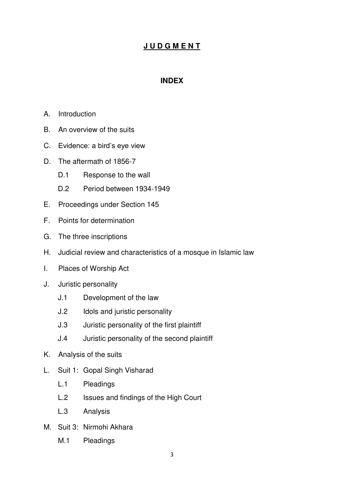
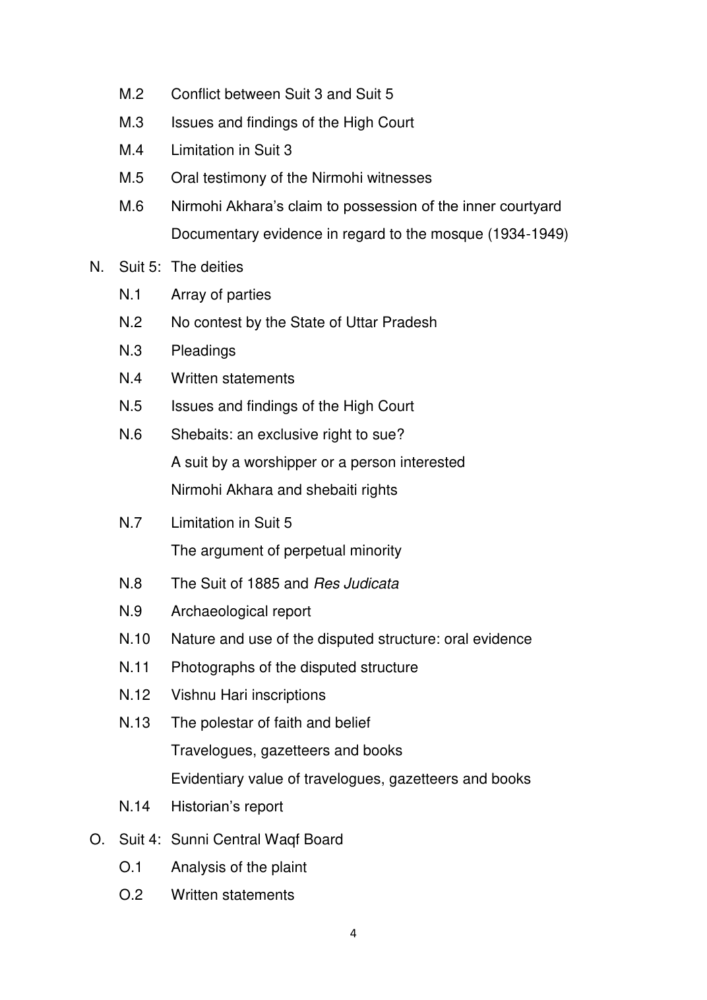
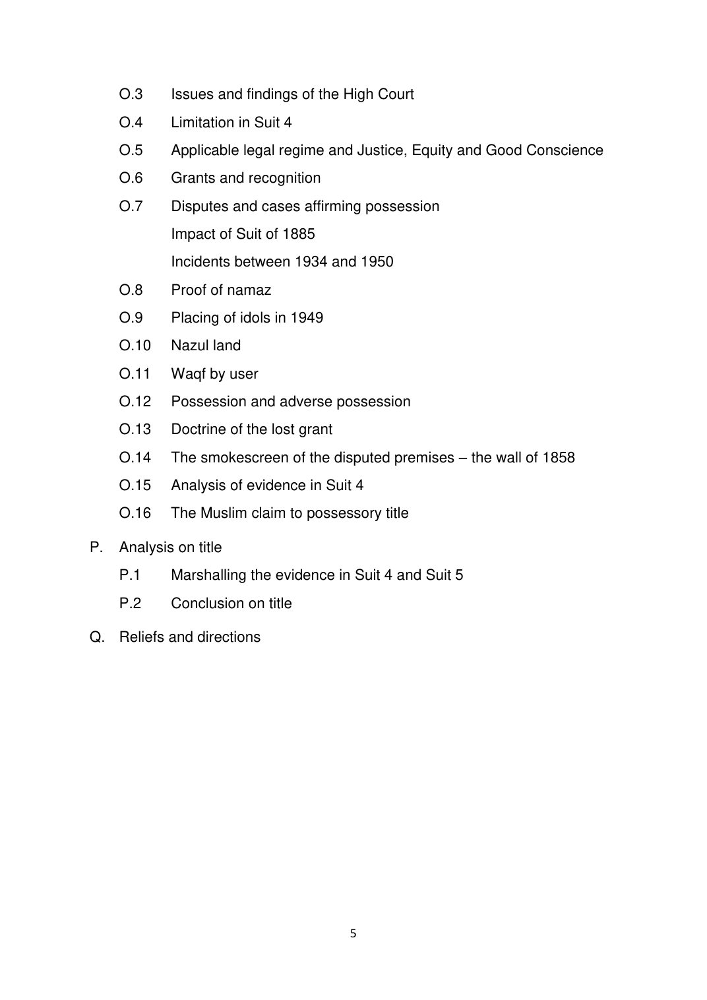
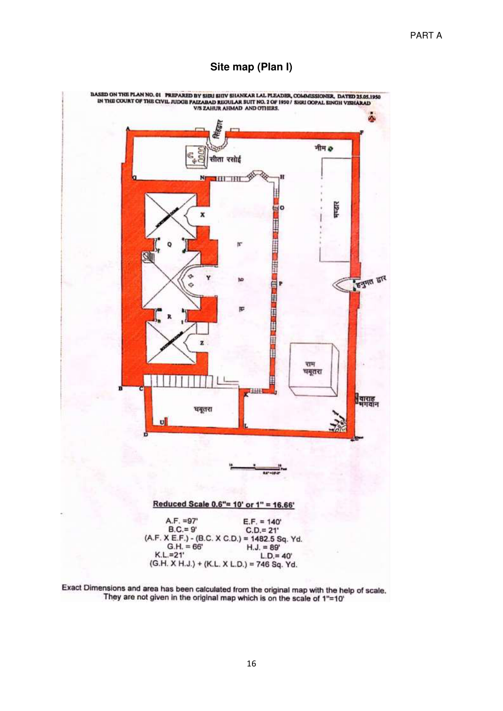
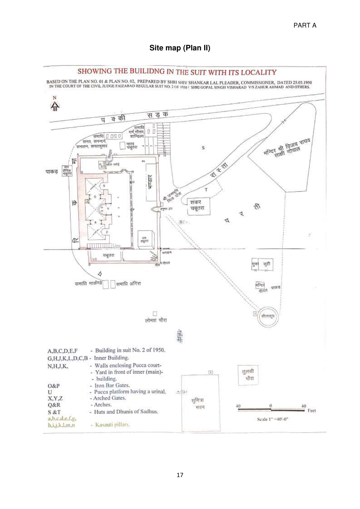

REPORTABLE
IN THE SUPREME COURT OF INDIA
CIVIL APPELLATE JURISDICTION
Civil Appeal Nos 10866-10867 of 2010
M Siddiq (D) Thr Lrs...Appellants
Versus
Mahant Suresh Das & Ors ...Respondents
WITH
Civil Appeal Nos 4768-4771/2011
WITH
Civil Appeal No 2636/2011
WITH
Civil Appeal No 821/2011
WITH
Civil Appeal No 4739/2011
WITH
Civil Appeal Nos 4905-4908/2011
WITH
Civil Appeal No 2215/2011
WITH
Civil Appeal No 4740/2011
WITH
Civil Appeal No 2894/2011
WITH
Civil Appeal No 6965/2011
WITH
Civil Appeal No 4192/2011
WITH
Civil Appeal No 5498/2011
WITH
Civil Appeal No 7226/2011
AND WITH
Civil Appeal No 8096/2011



A. Introduction
- These first appeals centre around a dispute between two religious communities both of whom claim ownership over a piece of land admeasuring 1500 square yards in the town of Ayodhya. The disputed property is of immense significance to Hindus and Muslims. The Hindu community claims it as the birthplace of Lord Ram, an incarnation of Lord Vishnu. The Muslim community claims it as the site of the historic Babri Masjid built by the first Mughal Emperor, Babur. The lands of our country have witnessed invasions and dissensions. Yet they have assimilated into the idea of India everyone who sought their providence, whether they came as merchants, travellers or as conquerors. The history and culture of this country have been home to quests for truth, through the material, the political, and the spiritual. This Court is called upon to fulfil its adjudicatory function where it is claimed that two quests for the truth impinge on the freedoms of the other or violate the rule of law.
- This Court is tasked with the resolution of a dispute whose origins are as old as the idea of India itself. The events associated with the dispute have spanned the Mughal empire, colonial rule and the present constitutional regime. Constitutional values form the cornerstone of this nation and have facilitated the lawful resolution of the present title dispute through forty-one days of hearings before this Court. The dispute in these appeals arises out of four regular suits which were instituted between 1950 and 1989. Before the Allahabad High Court, voluminous evidence, both oral and documentary was led, resulting in three judgements running the course of 4304 pages. This judgement is placed in challenge in the appeals.
- The disputed land forms part of the village of Kot Rama Chandra or, as it is otherwise called, Ramkot at Ayodhya, in Pargana Haveli Avadh, of Tehsil Sadar in the District of Faizabad. An old structure of a mosque existed at the site until 6 December 1992. The site has religious significance for the devotees of Lord Ram, who believe that Lord Ram was born at the disputed site. For this reason, the Hindus refer to the disputed site as Ram Janmabhumi or Ram Janmasthan (i.e. birth-place of Lord Ram). The Hindus assert that there existed at the disputed site an ancient temple dedicated to Lord Ram, which was demolished upon the conquest of the Indian sub-continent by Mughal Emperor Babur. On the other hand, the Muslims contended that the mosque was built by or at the behest of Babur on vacant land. Though the significance of the site for the Hindus is not denied, it is the case of the Muslims that there exists no proprietary claim of the Hindus over the disputed property.
- A suit was instituted in 1950 before the Civil Judge at Faizabad by a Hindu worshipper, Gopal Singh Visharad seeking a declaration that according to his religion and custom, he is entitled to offer prayers at the main Janmabhumi temple near the idols.
- The Nirmohi Akhara represents a religious sect amongst the Hindus, known as the Ramanandi Bairagis. The Nirmohis claim that they were, at all material times, in charge and management of the structure at the disputed site which according to them was a ̳temple‘ until 29 December 1949, on which date an attachment was ordered under Section 145 of the Code of Criminal Procedure 1898. In effect, they claim as shebaits in service of the deity, managing its affairs and receiving offerings from devotees. Theirs is a Suit of 1959 for the management and charge of ̳the temple‘.
- The Uttar Pradesh Sunni Central Board of Waqf (―Sunni Central Waqf Board‖) and other Muslim residents of Ayodhya instituted a suit in 1961 for a declaration of their title to the disputed site. According to them, the old structure was a mosque which was built on the instructions of Emperor Babur by Mir Baqi who was the Commander of his forces, following the conquest of the subcontinent by the Mughal Emperor in the third decade of the sixteenth century. The Muslims deny that the mosque was constructed on the site of a destroyed temple. According to them, prayers were uninterruptedly offered in the mosque until 23 December 1949 when a group of Hindus desecrated it by placing idols within the precincts of its three-domed structure with the intent to destroy, damage and defile the Islamic religious structure. The Sunni Central Waqf Board claims a declaration of title and, if found necessary, a decree for possession.
- A suit was instituted in 1989 by a next friend on behalf of the deity (―Bhagwan Shri Ram Virajman‖) and the birth-place of Lord Ram (―Asthan Shri Ram Janmabhumi‖). The suit is founded on the claim that the law recognises both the idol and the birth-place as juridical entities. The claim is that the place of birth is sanctified as an object of worship, personifying the divine spirit of Lord Ram. Hence, like the idol (which the law recognises as a juridical entity), the place of birth of the deity is claimed to be a legal person, or as it is described in legal parlance, to possess a juridical status. A declaration of title to the disputed site coupled with injunctive relief has been sought.
- These suits, together with a separate suit by Hindu worshippers were transferred by the Allahabad High Court to itself for trial from the civil court at Faizabad. The High Court rendered a judgment in original proceedings arising out of the four suits and these appeals arise out of the decision of a Full Bench dated 30 September 2010. The High Court held that the suits filed by the Sunni Central Waqf Board and by Nirmohi Akhara were barred by limitation. Despite having held that those two suits were barred by time, the High Court held in a split 2:1 verdict that the Hindu and Muslim parties were joint holders of the disputed premises. Each of them was held entitled to one third of the disputed property. The Nirmohi Akhara was granted the remaining one third. A preliminary decree to that effect was passed in the suit brought by the idol and the birth-place of Lord Ram through the next friend.
- Before deciding the appeals, it is necessary to set out the significant events which have taken place in the chequered history of this litigation, which spans nearly seven decades.
- The disputed site has been a flash point of continued conflagration over decades. In 1856-57, riots broke out between Hindus and Muslims in the vicinity of the structure. The colonial government attempted to raise a buffer between the two communities to maintain law and order by set ting up a grill-brick wall having a height of six or seven feet. This would divide the premises into two parts: the inner portion which would be used by the Muslim community and the outer portion or courtyard, which would be used by the Hindu community. The outer courtyard has several structures of religious significance for the Hindus, such as the Sita Rasoi and a platform called the Ramchabutra. In 1877, another door was opened on the northern side of the outer courtyard by the colonial government, which was given to the Hindus to control and manage. The bifurcation, as the record shows, did not resolve the conflict and there were numerous attempts by one or other of the parties to exclude the other.
- In January 1885, Mahant Raghubar Das, claiming to be the Mahant of Ram Janmasthan instituted a suit1 (―Suit of 1885‖) before the Sub-Judge, Faizabad. The relief which he sought was permission to build a temple on the Ramchabutra situated in the outer courtyard, measuring seventeen feet by twenty-one feet. A sketch map was filed with the plaint. On 24 December 1885, the trial judge dismissed the suit, `noting that there was a possibility of riots breaking out between the two communities due to the proposed construction of a temple. The trial judge, however, observed that there could be no question or doubt regarding the possession and ownership of the Hindus over the Chabutra. On 18 March 1886, the District Judge dismissed the appeal against the judgment of the Trial Court2 but struck off the observations relating to the ownership of Hindus of the Chabutra contained in the judgment of the Trial Court. On 1 November 1886, the Judicial Commissioner of Oudh dismissed the second appeal3, noting that the Mahant had failed to present evidence of title to establish ownership of the Chabutra. In 1934, there was yet another conflagration between the two communities. The domed structure of the mosque was damaged during
1 (OS No. 61/280 of 1885) 2 Civil Appeal No. 27/1885 3 No 27 of 1886
the incident and was subsequently repaired at the cost of the colonial government.
- The controversy entered a new phase on the night intervening 22 and 23 December 1949, when the mosque was desecrated by a group of about fifty or sixty people who broke open its locks and placed idols of Lord Ram under the central dome. A First Information Report (―FIR‖) was registered in relation to the incident. On 29 December 1949, the Additional City Magistrate, Faizabad-cum- Ayodhya issued a preliminary order under Section 145 of the Code of Criminal Procedure 18984 (―CrPC 1898‖), treating the situation to be of an emergent nature. Simultaneously, an attachment order was issued and Priya Datt Ram, the Chairman of the Municipal Board of Faizabad was appointed as the receiver of the inner courtyard. On 5 January 1950, the receiver took charge of the inner courtyard and prepared an inventory of the attached properties. The Magistrate passed a preliminary order upon recording a satisfaction that the dispute between the two communities over their claims to worship and proprietorship over the structure would likely lead to a breach of peace. The stakeholders were allowed to file their written statements. Under the Magistrate‘s order, only two or three pujaris were permitted to go inside the place where the idols were kept, to perform religious ceremonies like bhog and puja. Members of the general public were restricted from entering and were only allowed darshan from beyond the grill-brick wall.
4―Section 145. Procedure where dispute concerning land, etc, is likely to cause breach of peace
(1) Whenever a District Magistrate, or an Executive Magistrate specially empowered by the Government in this behalf is satisfied from a police-report or other information that a dispute likely to cause a breach of the peace exists concerning any land or water of the boundaries thereof, within the local limits of his jurisdiction, he shall make an order in writing, stating the grounds of his being so satisfied, and requiring the parties concerned in such dispute to attend his Court in person or by pleader, within a time to be fixed by such Magistrate, and to put in written statements of their respective claims as respects the fact of actual possession of the subject of dispute...‖
The institution of the suits
- On 16 January 1950, a suit was instituted by a Hindu devotee, Gopal Singh Visharad5, (―Suit 1‖) before the Civil Judge at Faizabad, alleging that he was being prevented by officials of the government from entering the inner courtyard of the disputed site to offer worship. A declaration was sought to allow the plaintiff to offer prayers in accordance with the rites and tenets of his religion (―Sanatan Dharm‖) at the ―main Janmabhumi‖, near the idols, within the inner courtyard, without hindrance. On the same date, an ad-interim injunction was issued in the suit. On 19 January 1950, the injunction was modified to prevent the idols from being removed from the disputed site and from causing interference in the performance of puja. On 3 March 1951, the Trial Court confirmed the adinterim order, as modified. On 26 May 1955, the appeal6 against the interim order was dismissed by the High Court of Allahabad.
- On 5 December 1950, another suit was instituted by Paramhans Ramchandra Das7 (―Suit 2‖) before the Civil Judge, Faizabad seeking reliefs similar to those in Suit 1. Suit 2 was subsequently withdrawn on 18 September 1990.
- On 1 April 1950, a Court Commissioner was appointed in Suit 1 to prepare a map of the disputed premises. On 25 June 1950, the Commissioner submitted a report, together with two site plans of the disputed premises which were numbered as Plan nos 1 and 2 to the Trial Court. Both the report and maps
5 Regular Suit No 2 of 1950. Subsequently renumbered as Other Original Suit (OOS) No 1 of 1989. 6 FAFO No 154 of 1951 7 Regular Suit no 25 of 1950 (subsequently renumbered as Other Original Suit (OOS) No 2 of 1989)
indicate the position at the site and are reproduced below: Report of the Commissioner ―REPORT Sir, I was appointed a commissioner in the above case to prepare a site plan of the locality and building in suit on scale. Accordingly, in compliance with the order of the court, I visited the locality on 16.4.50 and again on 30.4.50 after giving due notice to the counsel of the parties, and made necessary measurements on the spot. On the first day of my visit none of the parties were present, but on the second day defendant no. 1 was present with Shri Azimullah Khan and Shri Habib Ahmad Khan counsel. At about noon defendant no. 1 presented an application, attached herewith, when the measurement work had already finished.
Plan No. I represents the building in suit shown by the figure ABCDEF on a larger scale than Plan no.II, which represents the building with its locality. A perusal of Plan No.I would show that the building has got two gates, one on the east and the other on the north, known as ―Hanumatdwar‖ and ―Singhdwar‖ respectively. The ―Hanumatdwar‖ is the main entrance gate to the building. At this gate there is a stone slab fixed to the ground containing the inscription ―1-Shri Janma Bhumi nitya yatra,‖ and a big coloured picture of Shri Hanumanji is placed at the top of the gate. The arch of this entrance gate, 10‘ in height, rests on two black kasauti stone pillars, each 4‘ high, marked a and b, containing images of ―Jai and Vijai‖ respectively engraved thereon. To the south of this gate on the outer wall there is engraved a stone image, 5‘ long, known as ―Varah Bhagwan.‖ The northern gate, known as ―Singhdwar,‖ 19‘6‖ in height, has got at its top images of Garura in the middle and two lions one on each side. On entering the main gate there is pucca floor on the eastern and northern side of the inner building, marked by letters GHJKL DGB on the north of the eastern floor there is a neem tree, and to the south of it there is the bhandara (kitchen). Further south there is a raised pucca platform, 17‘ x 21‘ and 4‘ high, known as ―Ram Chabutra,‖ on which stands a small temple having idols of Ram and Janki installed therein. At the south-eastern corner E there is a joint neem-pipal tree, surrounded by a semi-circular pucca platform, on which are installed marble idols of Panchmukhi Mahadev, Parbati, Ganesh and Nandi. On the northern floor there is a pucca platform, 8‘ x 9‘, called ―Sita Rasoi.‖ On this platform there is a pucca chulha with chauka and belna, made of marble, affixed by its side. To the east of the chulha there are four pairs of marble foot prints of Ram, Lakshman, Bharat & Shatrunghna. The pucca courtyard in front of the inner (main) building is enclosed by walls NHJK intercepted by iron bars with two iron bar gates at O and P as shown in the Plan no.I. At the southern end of this Courtyard there are 14 stairs leading to the roof of the building, and to the south of the stairs there is a raised pucca platform 2‘ high, having a urinal marked U at its south-west corner. There are three arched gates, X,Y and Z leading to the main building, which is divided into three portions, having arches at Q and R. There is a chhajja (projected roof) above the arch Y. 31. The three arches, Y, Q and R are supported on 12 black kasauti stone pillars, each 6‘ high, marked with letters c to n in Plan no. I. The pillars e to m have carvings of kamal flowers thereon. The pillar contains the image of Shankar Bhagwan in Tandava nritya form and another disfigured image engraved thereon. The pillar J contained the carved image of Hanumanji. The pillar N has got the image of Lord Krishna engraved thereon other pillars have also got carvings of images which are effaced. In the central portion of the building at the north-western corner, there is a pucca platform with two stairs, on which is installed the idol of Bal Ram (infant Ram). At the top of the three portions of the building there are three round domes, as shown separately in Plan no.I, each on an octagonal base. There are no towers, nor is there any ghusalkhana or well in the building.
Around the building there is a pucca path known as parikrama, as shown in yellow in Plan Nos.I & II. On the west of the parikrama, the land is about 20‘ low, while the pucca road on the northern side is about 18‘ low. Other structures found on the locality have been shown in Plan no.II at their proper places. The land shown by letters S and T is covered by huts and dhunis of sadhus. Adjacent to and south of the land shown by letter T, there is a raised platform, bounded by walls, 4‘ 6‖ high, with a passage towards west, known as ―shankar chabutra.‖ The pucca well, known as ―Sita koop‖ has got a tin shed over it, and a stone slab is fixed close to it with the inscription ―3-Sita koop‖. To the south - west of this well there is another stone slab fixed into the ground with the inscription ―4-Sumitra Bhawan‖. On the raised platform of Sumitra Bhawan there is a stone slab fixed to the ground, marked, carved with the image of Shesh nag. The names of the various samadhis and other structures as noted in Plan No. II were given by sadhus and others present on the spot.
Plans nos.I and II, which form part of this report, two notices given to parties counsel and the application presented by defendant no.1 are attached herewith.
I have the honour to be, Sir, Your most obedient servant, Shiva Shankar Lal, Faizabad. Pleader 25.5.50 Commissioner.‖


- On 17 December 1959, Nirmohi Akhara instituted a suit8 through its Mahant (―Suit 3‖) before the Civil Judge at Faizabad claiming that its ―absolute right‖ of managing the affairs of the Janmasthan and the temple had been impacted by the Magistrate‘s order of attachment and by the appointment of a receiver under Section 145. A decree was sought to hand over the management and charge of the temple to the plaintiff in Suit 3.
- On 18 December 1961, the Sunni Central Waqf Board and nine Muslim residents of Ayodhya filed a suit9 (―Suit 4‖) before the Civil Judge at Faizabad seeking a declaration that the entire disputed site of the Babri Masjid was a public mosque and for the delivery of possession upon removal of the idols.
- On 6 January 1964, the trial of Suits 1, 3 and 4 was consolidated and Suit 4 was made the leading case.
- On 25 January 1986, an application was filed by one Umesh Chandra before the Trial Court for breaking open the locks placed on the grill-brick wall and for allowing the public to perform darshan within the inner courtyard. On 1 February 1986, the District Judge issued directions to open the locks and to provide access to devotees for darshan inside the structure. In a Writ Petition10 filed before the High Court challenging the above order, an interim order was passed on 3 February 1986 directing that until further orders, the nature of the property as it existed shall not be altered.
8 Regular Suit No 26 of 1959 (subsequently renumbered as OOS No. 3 of 1989) 9 Regular Suit No. 12 of 1961 (subsequently renumbered as OOS No. 4 of 1989) 10Civil Misc. Writ No. 746 of 1986
- On 1 July 1989, a Suit11 (―Suit 5‖) was brought before the Civil Judge, Faizabad by the deity (―Bhagwan Shri Ram Virajman‖) and the birth-place (―Asthan Shri Ram Janam Bhumi, Ayodhya‖), through a next friend for a declaration of title to the disputed premises and to restrain the defendants from interfering with or raising any objection to the construction of a temple. Suit 5 was tried with the other suits.
- On 10 July 1989, all suits were transferred to the High Court of Judicature at Allahabad. On 21 July 1989, a three judge Bench was constituted by the Chief Justice of the High Court for the trial of the suits. On an application by the State of Uttar Pradesh, the High Court passed an interim order on 14 August 1989, directing the parties to maintain status quo with respect to the property in dispute.
- During the pendency of the proceedings, the State of Uttar Pradesh acquired an area of 2.77 acres comprising of the disputed premises and certain adjoining areas. This was effected by notifications dated 7 October 1991 and 10 October 1991 under Sections 4(1), 6 and 17(4) of the Land Acquisition Act 1894 (―Land Acquisition Act‖). The acquisition was for ̳development and providing amenities to pilgrims in Ayodhya‘. A Writ Petition was filed before the High Court challenging the acquisition. By a judgment and order dated 11 December 1992, the acquisition was set aside.
- A substantial change took place in the position at the site on 6 December 1992. A large crowd destroyed the mosque, boundary wall, and Ramchabutra. A makeshift structure of a temple was constructed at the place under the erstwhile
11 Regular Suit No. 236 of 1989 (subsequently renumbered as OOS No. 5 of 1989)
central dome. The idols were placed there.
Acquisition by the Central Government and Ismail Faruqui‘s case
- The Central Government acquired an area of about 68 acres, including the premises in dispute, by a legislation called the Acquisition of Certain Area at Ayodhya Act 1993 (―Ayodhya Acquisition Act 1993‖). Sections 3 and 4 envisaged the abatement of all suits which were pending before the High Court. Simultaneously, the President of India made a reference to this Court under Article 143 of the Constitution. The reference was on ―(w)hether a Hindu temple or any Hindu religious structure existed prior to the construction of the Ram Janam Bhoomi and Babari Masjid (including the premises of the inner and outer courtyards on such structure) in the area on which the structure stands...‖.
- Writ petitions were filed before the High Court of Allahabad and this Court challenging the validity of the Act of 1993. All the petitions and the reference by the President were heard together and decided by a judgment dated 24 October 1994. The decision of a Constitution Bench of this Court, titled Dr M Ismail Faruqui v Union of India12 held Section 4(3), which provided for the abatement of all pending suits as unconstitutional. The rest of the Act of 1993 was held to be valid. The Constitution Bench declined to answer the Presidential reference and, as a result, all pending suits and proceedings in relation to the disputed premises stood revived. The Central Government was appointed as a statutory receiver for the maintenance of status quo and to hand over the disputed area in terms of the
12 (1994) 6 SCC 360
adjudication to be made in the suits. The conclusions arrived at by the Constitution Bench are extracted below: ―96. ... (1)(a) Sub-section (3) of Section 4 of the Act abates all pending suits and legal proceedings without providing for an alternative dispute resolution mechanism for resolution of the disputes between the parties thereto. This is an extinction of the judicial remedy for resolution of the dispute amounting to negation of rule of law. Sub-section (3) of Section 4 of the Act is, therefore, unconstitutional and invalid.
(1)(b) The remaining provisions of the Act do not suffer from any invalidity on the construction made thereof by us. Subsection (3) of Section 4 of the Act is severable from the remaining Act. Accordingly, the challenge to the constitutional validity of the remaining Act, except for sub-section (3) of Sec. 4, is rejected.
- Irrespective of the status of a mosque under the Muslim law applicable in the Islamic countries, the status of a mosque under the Mahomedan Law applicable in secular India is the same and equal to that of any other place of worship of any religion; and it does not enjoy any greater immunity from acquisition in exercise of the sovereign or prerogative power of the State, than that of the places of worship of the other religions.
- The pending suits and other proceedings relating to the disputed area within which the structure (including the premises of the inner and outer courtyards of such structure), commonly known as the Ram Janma Bhumi - Babri Masjid, stood, stand revived for adjudication of the dispute therein, together with the interim orders made, except to the extent the interim orders stand modified by the provisions of Section 7 of the Act.
- The vesting of the said disputed area in the Central Government by virtue of Section 3 of the Act is limited, as a statutory receiver with the duty for its management and administration according to Section 7 requiring maintenance of status quo therein under sub-section (2) of Section 7 of the Act. The duty of the Central Government as the statutory receiver is to handover the disputed area in accordance with Section 6 of the Act, in terms of the adjudication made in the suits for implementation of the final decision therein. This is the purpose for which the disputed area has been so acquired.
- The power of the courts in making further interim orders in the suits is limited to, and circumscribed by, the area outside the ambit of Section 7 of the Act.
- The vesting of the adjacent area, other than the disputed area, acquired by the Act in the Central Government by virtue of Section 3 of the Act is absolute with the power of management and administration thereof in accordance with sub-section (1) of Section 7 of the Act, till its further vesting in any authority or other body or trustees of any trust in accordance with Section 6 of the Act. The further vesting of the adjacent area, other than the disputed area, in accordance with Sec. 6 of the Act has to be made at the time and in the manner indicated, in view of the purpose of its acquisition.
- The meaning of the word "vest" in Section 3 and Section 6 of the Act has to be so understood in the different contexts.
- Section 8 of the Act is meant for payment of compensation to owners of the property vesting absolutely in the Central Government, the title to which is not in dispute being in excess of the disputed area which alone is the subject matter of the revived suits. It does not apply to the disputed area, title to which has to be adjudicated in the suits and in respect of which the Central Government is merely the statutory receiver as indicated, with the duty to restore it to the owner in terms of the adjudication made in the suits.
- The challenge to acquisition of any part of the adjacent area on the ground that it is unnecessary for achieving the professed objective of settling the long standing dispute cannot be examined at this stage. However, the area found to be superfluous on the exact area needed for the purpose being determined on adjudication of the dispute, must be restored to the undisputed owners.
- Rejection of the challenge by the undisputed owners to acquisition of some religious properties in the vicinity of the disputed area, at this stage is with the liberty granted to them to renew their challenge, if necessary at a later appropriate stage, in cases of continued retention by Central Government of their property in excess of the exact area determined to be needed on adjudication of the dispute.
- Consequently, the Special Reference No. 1 of 1993 made by the President of India under Art. 143(1) of the Constitution of India is superfluous and unnecessary and does not require to be answered. For this reason, we very respectfully decline to answer it and return the same.
- The questions relating to the constitutional validity of the said Act and maintainability of the Special Reference are decided in these terms.‖ The proceedings before the High Court
- The recording of oral evidence before the High Court commenced on 24 July 1996. During the course of the hearings, the High Court issued directions on 23 October 2002 to the Archaeological Survey of India (―ASI‖) to carry out a scientific investigation and have the disputed site surveyed by Ground Penetrating Technology or Geo-Radiology (―GPR‖). The GPR report dated 17 February 2003 indicated a variety of ―anomalies‖ which could be associated with ―ancient and contemporaneous structures‖ such as pillars, foundations, wall slabs and flooring extending over a large portion of the disputed site. In order to facilitate a further analysis, the High Court directed the ASI on 5 March 2003 to undertake the excavation of the disputed site. A fourteen-member team was constituted, and a site plan was prepared indicating the number of trenches to be laid out and excavated. On 22 August 2003, the ASI submitted its final report. The High Court heard objections to the report.
- Evidence, both oral and documentary, was recorded before the High Court. As one of the judges, Justice Sudhir Agarwal noted, the High Court had before it 533 exhibits and depositions of 87 witnesses traversing 13,990 pages. Besides this, counsel relied on over a thousand reference books in Sanskrit, Hindi, Urdu, Persian, Turkish, French and English, ranging from subjects as diverse as history, culture, archaeology and religion. The High Court ensured that the innumerable archaeological artefacts were kept in the record room. It received dozens of CDs and other records which the three judges of the High Court have marshalled. The decision of the High Court
- On 30 September 2010, the Full Bench of the High Court comprising of Justice S U Khan, Justice Sudhir Agarwal and Justice D V Sharma delivered the judgment, which is in appeal. Justice S U Khan and Justice Sudhir Agarwal held ―all the three sets of parties‖ – Muslims, Hindus and Nirmohi Akhara - as joint holders of the disputed premises and allotted a one third share to each of them in a preliminary decree. Justice S U Khan held thus: ―Accordingly, all the three sets of parties, i.e. Muslims, Hindus and Nirmohi Akhara are declared joint title holders of the property/ premises in dispute as described by letters A B C D E F in the map Plan-I prepared by Sri Shiv Shanker Lal, Pleader/ Commissioner appointed by Court in Suit No.1 to the extent of one third share each for using and managing the same for worshipping. A preliminary decree to this effect is passed. However, it is further declared that the portion below the central dome where at present the idol is kept in makeshift temple will be allotted to Hindus in final decree.
It is further directed that Nirmohi Akhara will be allotted share including that part which is shown by the words Ram Chabutra and Sita Rasoi in the said map.
It is further clarified that even though all the three parties are declared to have one third share each, however if while allotting exact portions some minor adjustment in the share is to be made then the same will be made and the adversely affected party may be compensated by allotting some portion of the adjoining land which has been acquired by the Central Government. The parties are at liberty to file their suggestions for actual partition by metes and bounds within three months.
List immediately after filing of any suggestion/ application for preparation of final decree after obtaining necessary instructions from Hon'ble the Chief Justice.
Status quo as prevailing till date pursuant to Supreme Court judgment of Ismail Farooqui (1994(6) Sec 360) in all its minutest details shall be maintained for a period of three months unless this order is modified or vacated earlier.‖
Justice Sudhir Agarwal partly decreed Suits 1 and 5. Suits 3 and 4 were dismissed as being barred by limitation. The learned judge concluded with the following directions: ―4566...
- It is declared that the area covered by the central dome of the three domed structure, i.e., the disputed structure being the deity of Bhagwan Ram Janamsthan and place of birth of Lord Rama as per faith and belief of the Hindus, belong to plaintiffs (Suit-5) and shall not be obstructed or interfered in any manner by the defendants. This area is shown by letters AA BB CC DD in Appendix 7 to this judgment.
- The area within the inner courtyard denoted by letters B C D L K J H G in Appendix 7 (excluding (i) above) belong to members of both the communities, i.e., Hindus (here plaintiffs, Suit-5) and Muslims since it was being used by both since decades and centuries. It is, however, made clear that for the purpose of share of plaintiffs, Suit-5 under this direction the area which is covered by (i) above shall also be included.
- The area covered by the structures, namely, Ram Chabutra, (EE FF GG HH in Appendix 7) Sita Rasoi (MM NN OO PP in Appendix 7) and Bhandar (II JJ KK LL in Appendix
- in the outer courtyard is declared in the share of Nirmohi Akhara (defendant no. 3) and they shall be entitled to possession thereof in the absence of any person with better title.
- The open area within the outer courtyard (A G H J K L E F in Appendix 7) (except that covered by (iii) above) shall be shared by Nirmohi Akhara (defendant no. 3) and plaintiffs (Suit-5) since it has been generally used by the Hindu people for worship at both places.
(iv-a) It is however made clear that the share of muslim parties shall not be less than one third (1/3) of the total area of the premises and if necessary it may be given some area of outer courtyard. It is also made clear that while making partition by metes and bounds, if some minor adjustments are to be made with respect to the share of different parties, the affected party may be compensated by allotting the requisite land from the area which is under acquisition of the Government of India.
- The land which is available with the Government of India acquired under Ayodhya Act 1993 for providing it to the parties who are successful in the suit for better enjoyment of the property shall be made available to the above concerned parties in such manner so that all the three parties may utilise the area to which they are entitled to, by having separate entry for egress and ingress of the people without disturbing each others rights. For this purpose the concerned parties may approach the Government of India who shall act in accordance with the above directions and also as contained in the judgement of Apex Court in Dr. Ismail Farooqi (Supra).
- A decree, partly preliminary and partly final, to the effect as said above (i to v) is passed. Suit-5 is decreed in part to the above extent. The parties are at liberty to file their suggestions for actual partition of the property in dispute in the manner as directed above by metes and bounds by submitting an application to this effect to the Officer on Special Duty, Ayodhya Bench at Lucknow or the Registrar, Lucknow Bench, Lucknow, as the case may be.
- For a period of three months or unless directed otherwise, whichever is earlier, the parties shall maintain status quo as on today in respect of property in dispute.‖
Justice D V Sharma decreed Suit 5 in its entirety. Suits 3 and 4 were dismissed as being barred by limitation. Justice D V Sharma concluded: ―Plaintiff‘s suit is decreed but with easy costs. It is hereby declared that the entire premises of Sri Ram Janm Bhumi at Ayodhya as described and delineated in annexure Nos. 1 and 2 of the plaint belong to the plaintiff Nos. 1 and 2, the deities. The defendants are permanently restrained from interfering with, or raising any objection to, or placing any obstruction in the construction of the temple at Ram Janm Bhumi Ayodhya at the site, referred to in the plaint.‖ The parties preferred multiple Civil Appeals and Special Leave Petitions before this Court against the judgment of the High Court.
Proceedings before this Court
- On 9 May 2011, a two judge Bench of this Court admitted several appeals and stayed the operation of the judgment and decree of the Allahabad High Court. During the pendency of the appeals, parties were directed to maintain status quo with respect to the disputed premises in accordance with the directions issued in Ismail Faruqui. The Registry of this Court was directed to provide parties electronic copies of the digitised records.
- On 10 September 2013, 24 February 2014, 31 October 2015 and 11 August 2017, this Court issued directions for summoning the digital record of the evidence and pleadings from the Allahabad High Court and for furnishing translated copies to the parties. On 10 August 2015, a three judge Bench of this Court allowed the Commissioner, Faizabad Division to replace the old and worn out tarpaulin sheets over the makeshift structure under which the idols were placed with new sheets of the same size and quality.
- On 5 December 2017, a three judge Bench of this Court rejected the plea that the appeals against the impugned judgement be referred to a larger Bench in view of certain observations of the Constitution Bench in Ismail Faruqui. On 14 March 2018, a three judge Bench heard arguments on whether the judgment in Ismail Faruqui required reconsideration. On 27 September 2018, the three judge Bench of this Court by a majority of 2:1 declined to refer the judgment in Ismail Faruqui for reconsideration and listed the appeals against the impugned judgement for hearing.
- By an administrative order dated 8 January 2019 made pursuant to the provisions of Order VI Rule 1 of the Supreme Court Rules, 2013, the Chief Justice of India constituted a five judge Bench to hear the appeals. On 10 January 2019, the Registry was directed to inspect the records and if required, engage official translators. On 26 February 2019, this Court referred the parties to a Court appointed and monitored mediation to explore the possibility of bringing about a permanent solution to the issues raised in the appeals. On 8 March 2019, a panel of mediators comprising of (i) Justice Fakkir Mohamed Ibrahim Kalifulla, a former Judge of this Court; (ii) Sri Sri Ravi Shankar; and (iii) Mr Sriram Panchu, Senior Advocate was constituted. Time granted to the mediators to complete the mediation proceedings was extended on 10 May 2019. Since no settlement had been reached, on 2 August 2019, the hearing of the appeals was directed to commence from 6 August 2019. During the course of hearing, a report was submitted by the panel of mediators that some of the parties desired to settle the dispute. This Court by its order dated 18 September 2019 observed that while the hearings will proceed, if any parties desired to settle the dispute, it was open for them to move the mediators and place a settlement, if it was arrived at, before this Court. Final arguments were concluded in the batch of appeals on 16 October 2019. On the same day, the mediation panel submitted a report titled ―Final Report of the Committee‖ stating that a settlement had been arrived at by some of the parties to the present dispute. The settlement was signed by Mr Zufar Ahmad Faruqi, Chairman of the Sunni Central Waqf Board.
Though under the settlement, the Sunni Central Waqf Board agreed to relinquish all its rights, interests and claims over the disputed land, this was subject to the fulfilment of certain conditions stipulated. The settlement agreement received by this Court from the mediation panel has not been agreed to or signed by all the parties to the present dispute. Moreover, it is only conditional on certain stipulations being fulfilled. Hence, the settlement cannot be treated to be a binding or concluded agreement between the parties to the dispute. We, however, record our appreciation of the earnest efforts made by the members of the mediation panel in embarking on the task entrusted by this Court. In bringing together the disputants on a common platform for a free and frank dialogue, the mediators have performed a function which needs to be commended. We also express our appreciation of the parties who earnestly made an effort to pursue the mediation proceedings.
B. An overview of the suits
- Before examining the various contentions of the parties before this Court, we first record the procedural history, substantive claims and reliefs prayed for in the pleadings of the three Suits before this Court.
Suit 1 - OOS No 1 of 1989 (Regular Suit 2 of 1950)
- The suit was instituted on 13 January 1950 by Gopal Singh Visharad, a resident of Ayodhya in his capacity as a ―follower of Sanatan Dharm‖ seeking:
- A declaration of his entitlement to worship and seek the darshan of Lord
Ram, ―according to religion and custom‖ at the Janmabhumi temple without hindrance; and
- A permanent and perpetual injunction restraining defendant nos 1 to 10 from removing the idols of the deity and other idols from the place where they were installed; from closing the way leading to the idols; or interfering in worship and darshan.
Defendant nos 1 to 5 are Muslim residents of Ayodhya; defendant no 6 is the State of Uttar Pradesh; defendant no 7 is the Deputy Commissioner of Faizabad; defendant no 8 is the Additional City Magistrate, Faizabad; defendant no 9 is the Superintendent of Police, Faizabad; defendant no 10 is the Sunni Central Waqf Board and defendant no 11 is the Nirmohi Akhara. The case of the plaintiff in Suit 1 is that, as a resident of Ayodhya, he was worshipping the idol of Lord Ram and Charan Paduka (foot impressions) ―in that place of Janambhumi‖. The boundaries of the ̳disputed place‘ as described in the plaint are as follows: ―Disputed place: East: Store and Chabutra of Ram Janam Bhumi West: Parti North: Sita Rasoi South: Parti.‖ The cause of action for Suit 1 is stated to have arisen on 14 January 1950, when the employees of the government are alleged to have unlawfully prevented the plaintiff ―from going inside the place‖ and exercising his right of worship. It was alleged that the ―State‖ adopted this action at the behest of the Muslim residents represented by defendant nos 1 to 5, as a result of which the Hindus were stated to been deprived of their ―legitimate right of worship‖. The plaintiff apprehended that the idols, including the idol of Lord Ram, would be removed. These actions were alleged to constitute a ―direct attack on the right and title of the plaintiff‖ and were stated to be an ―oppressive act‖, contrary to law.
- Denying the allegations contained in the plaint, defendant nos 1 to 5 stated in their written statements that:
- The property in respect of which the case has been instituted is not
Janmabhumi but a mosque constructed by Emperor Babur. The mosque was built in 1528 on the instructions of Emperor Babur by Mir Baqi, who was the Commander of Babur‘s forces, following the conquest of the subcontinent by the Mughal emperor;
- The mosque was dedicated as a waqf for Muslims, who have a right to worship there. Emperor Babur laid out annual grants for the maintenance and expenditure of the mosque, which were continued and enhanced by the Nawab of Awadh and the British Government;
- The Suit of 1885 was a suit for declaration of ownership by Mahant
Raghubar Das only in respect of the Ramchabutra and hence the claim that the entire building represented the Janmasthan was baseless. As a consequence of the dismissal of the Suit on 24 December 1885, ―the case respecting the Chabutra was not entertained‖;
- The Chief Commissioner Waqf appointed under the U.P. Muslim Waqf Act
1936 had held the mosque to be a Sunni Waqf;
- Muslims have always been in possession of the mosque. This position began in 1528 and continued thereafter, and consequently, ―Muslims are in possession of that property ... by way of an adverse possession‖;
- Namaz had been offered at Babri Masjid until 16 December 1949 at which point there were no idols under the central dome. If any person had placed any idol inside the mosque with a mala fide intent, ―the degradation of the mosque is evident and the accused persons are liable to be prosecuted‖;
- Any attempt of the plaintiff or any other person to enter the mosque to offer worship or for darshan would violate the law. Proceedings under Section 145 of the CrPC 1898 had been initiated; and
- The present suit claiming Babri Masjid as the place of the Janmasthan is without basis as there exists, for quite long, another temple with idols of Lord Ram and others, which is the actual place of the Janmasthan of Lord Ram. A written statement was filed by the defendant no 6, the State, submitting that:
- The property in suit known as Babri Masjid has been used as a mosque for the purpose of worship by Muslims for a long period and has not been used as a temple of Lord Ram;
- On the night of 22 December 1949, the idols of Lord Ram were surreptitiously placed inside the mosque imperilling public peace and tranquillity. On 23 December 1949, the City Magistrate passed an order under Section 144 of CrPC 1898 which was followed by an order of the same date passed by the Additional City Magistrate under Section 145 attaching the disputed property. These orders were passed to maintain public peace; and
- The City Magistrate appointed Shri Priya Datt Ram, Chairman, Municipal
Board, Faizabad-cum-Ayodhya as a receiver of the property.
Similar written statements were filed by defendant no 8, the Additional City Magistrate and defendant no 9, the Superintendent of Police.
Defendant no 10, the Sunni Central Waqf Board filed its written statement stating:
- The building in dispute is not the Janmasthan of Lord Ram and no idols were ever installed in it;
- The property in the suit was a mosque known as the Babri mosque constructed during the regime of Emperor Babur who had laid out annual grants for its maintenance and expenditure and they were continued and enhanced by the Nawab of Awadh and the British Government;
- On the night of 22-23 December 1949, the idols were surreptitiously brought into the mosque;
- The Muslims alone had remained in possession of the mosque from 1528 up to the date of the attachment of the mosque under Section 145 on 29 December 1949. They had regularly offered prayers up to 21 December 1949 and Friday prayers up to 16 December 1949;
- The mosque had the character of a waqf and its ownership vested in God;
- The plaintiff was estopped from claiming the mosque as the Janmabhumi of Lord Ram as the claim in the Suit of 1885 instituted by Mahant Raghubar Das (described to be the plaintiff‘s predecessor) had been confined only to the Ramchabutra measuring seventeen by twenty-one feet outside the mosque; and
- There already existed a Ram Janmasthan Mandir, a short distance away from Babri Masjid. In the plaintiff‘s replication to the written statement of defendant nos 1 to 5, it was averred that the disputed site has never been used as a mosque since 1934. It was further stated that it was ―common knowledge‖ that Hindus have been in continuous possession by virtue of which the claim of the defendants has ceased.
Suit 3 - OOS no 3 of 1989 (Regular Suit no 26 of 1959)
- The suit was instituted on 17 December 1959 by Nirmohi Akhara through Mahant Jagat Das seeking a decree for the removal of the receiver from the management and charge of the Janmabhumi temple and for delivering it to the plaintiff.
Defendant no 1 in Suit 3 is the receiver; defendant no 2 is the State of Uttar Pradesh; defendant no 3 is the Deputy Commissioner, Faizabad; defendant no 4 is the City Magistrate, Faizabad; defendant no 5 is the Superintendent of Police, Faizabad; defendant nos 6 to 8 are Muslim residents of Ayodhya; defendant no 9 is the Sunni Central Waqf Board and defendant no 10 is Umesh Chandra Pandey. The cause of action is stated to have arisen on 5 January 1950 when the management and charge of the Janmabhumi temple was taken away by the City Magistrate and entrusted to the receiver. Nirmohi Akhara pleaded that:
- There exists in Ayodhya ―since the days of yore‖ an ancient Math or
Akhara of Ramanandi Bairagis called the Nirmohis. This is a religious establishment of a public character;
- The Janmasthan, commonly known as Janmabhumi, is the birth-place of
Lord Ram and belongs to and has always been managed by Nirmohi Akhara;
- The Janmasthan is of ancient antiquity lying within the boundaries shown by the letters A B C D in the sketch map appended to the plaint within which stands the ―temple building‖ marked by the letters E F G K P N M L E. The building denoted by the letters E F G H I J K L E is the main Janmabhumi temple, where the idols of Lord Ram with Lakshman, Hanuman and Saligram have been installed. The temple building has been in the possession of Nirmohi Akhara and only Hindus have been allowed to enter the temple and make offerings such as money, sweets, flowers and fruits. Nirmohi Akhara has been receiving these offerings through its pujaris;
- Nirmohi Akhara is a Panchayati Math of the Ramanandi sect of Bairagis which is a religious denomination. The customs of Nirmohi Akhara have been reduced to writing by a registered deed dated 19 March 1949;
- Nirmohi Akhara owns and manages several temples;
- No Mohammedan has been allowed to enter the temple building since
1934; and
- Acting under the provisions of Section 145 of the CrPC 1898, the City
Magistrate placed the main temple and all the articles in it under the charge of the first defendant as receiver on 5 January 1950. As a consequence, the plaintiffs have been wrongfully deprived of the management and charge of the temple.
- In the written statement filed on behalf of defendant nos 6 to 8, Muslim residents of Ayodhya, it was stated that Babri Masjid was constructed by Emperor Babur in 1528 and has been constituted as a waqf, entitling Muslims to offer prayers. Moreover, it was submitted that:
- The Suit of 1885 by Raghubar Mahant Das was confined to Ramchabutra and has been dismissed by the Sub-Judge, Faizabad;
- The property of the mosque was constituted as a waqf under the U.P.
Muslim Waqf Act 1936;
- Muslims have been in continuous possession of the mosque since 1528 as a consequence of which all the rights of the plaintiffs have been extinguished;
- On the eastern and northern sides of the mosque, there are Muslim graves;
- Namaz was continuously offered in the property until 16 December 1949 and the character of the mosque will not stand altered if an idol has been installed surreptitiously; and
- There is another temple at Ayodhya which is known as the Janmasthan temple of Lord Ram which has been in existence for a long time. The plaint was amended to incorporate the averment that on 6 December 1992 ―the main temple was demolished by some miscreants who had no religion, caste or creed‖. In the replication filed by Nirmohi Akhara to the joint written statement of defendant nos 6 to 8, the existence of a separate Janmasthan temple was denied. It was stated that the Janmasthan temple is situated to the North of the Janmabhumi temple. A written statement was filed in the suit by Defendant no 9, the Sunni Central Waqf Board denying the allegations. In the written statement filed by defendant no 10, Umesh Chandra Pandey, it was submitted:
- The Janmasthan is a ―holy place of worship‖ and belongs to the deity of
Shri Ram Lalla Virajman for a long period of time. The temple is possessed and owned by the deity. Lord Ram is the principal deity of Ram Janmabhumi;
- Nirmohi Akhara has never managed the Janmasthan;
- In 1857, the British Government attempted to divide the building by creating an inner enclosure and describing the boundary within it as a mosque but no ―true Muslim‖ could have offered prayers there;
- The presence of Kasauti pillars and the carvings of Gods and Goddess on the pillars indicated that the place could not be used by a ―true Muslim‖ for offering prayers;
- The place was virtually landlocked by a Hindu temple in which worship of the deity took place;
- The Suit of the Nirmohi Akhara was barred by limitation having been instituted in 1959, though the cause of action arose on 5 January 1950; and
- Nirmohi Akhara did not join the proceedings under Section 145 nor did they file a revision against the order passed by the Additional City Magistrate. In the replication filed by Nirmohi Akhara to the written statement of defendant no 10, there was a detailed account of the founding of the denomination. Following the tradition of Shankaracharya since the seventh century CE, the practice of setting up Maths was followed by Ramanujacharya and later, by Ramanand. Ramanand founded a sect of Vaishnavs known as ̳Ramats‘, who worship Lord Ram. The spiritual preceptors of the Ramanandi sect of Bairagis established three ̳annis‘ namely, the (i) Nirmohi; (ii) Digamber; and (iii) Nirwani Akharas. These Akharas are Panchayati Maths. Nirmohi Akhara owns the Ram Janmasthan temple which is associated with the birth-place of Lord Ram. The outer enclosure was owned and managed by Nirmohi Akhara until the proceedings under Section 145 were instituted.
Suit 4 - OOS 4 of 1989 (Regular Suit no 12 of 1961)
- Suit 4 was instituted on 18 December 1961 by the Sunni Central Waqf Board and nine Muslim residents of Ayodhya. It has been averred that the suit has been instituted on behalf of the entire Muslim community together with an application under Order I Rule 8 of the CPC. As amended, the following reliefs have been sought in the plaint: ―(a) A declaration to the effect that the property indicated by letters A B C D in the sketch map attached to the plaint is public mosque commonly known as ̳Babari Masjid‘ and that the land adjoining the mosque shown in the sketch map by letters E F G H is a public Muslim graveyard as specified in para 2 of the plaint may be decreed.
- That in case in the opinion of the Court delivery of possession is deemed to be the proper remedy, a decree for delivery of possession of the mosque and graveyard in suit by removal of the idols and other articles which the Hindus may have placed in the mosque as objects of their worship be passed in plaintiff‘s favour, against the defendants. (bb) That the statutory Receiver be commanded to hand over the property in dispute described in Schedule ̳A‘ of the Plaint by removing the unauthorized structures erected thereon.‖
[Note : Prayer (bb) was inserted by an amendment to the plaint pursuant to the order of the High Court dated 25 May 1995].
Defendant no 1 in Suit 4 is Gopal Singh Visharad; defendant no 2 is Ram Chander Dass Param Hans; defendant no 3 is Nirmohi Akhara; defendant no 4 is Mahant Raghunath Das; defendant no 5 is the State of U.P.; defendant no 6 is the Collector, Faizabad; defendant no 7 is the City Magistrate, Faizabad; defendant no 8 is the Superintendent of Police of Faizabad; defendant no 9 is Priyadutt Ram; defendant no 10 is the President, Akhil Bharat Hindu Mahasabha; defendant no 13 is Dharam Das; defendant no 17 is Ramesh Chandra Tripathi; and defendant no 20 is Madan Mohan Gupta. The suit is based on the averment that in Ayodhya, there is an ancient historic mosque known commonly as Babri Masjid which was constructed by Babur more than 433 years ago following his conquest of India and the occupation of its territories. It has been averred that the mosque was built for the use of the Muslims in general as a place of worship and for the performance of religious ceremonies. The main construction of the mosque is depicted by the letters A B C D on the plan annexed to the plaint. Adjoining the land is a graveyard.
According to the plaintiffs, both the mosque and the graveyard vest in the Almighty and since the construction of the mosque, it has been used by the Muslims for offering prayers while the graveyard has been used for burial. The plaint alleged that outside the main building of the mosque, Hindu worship was being conducted at a Chabutra admeasuring 17x21 feet on which there was a small wooden structure in the form of a tent. The plaint contains a recital of the Suit of 1885 by Mahant Raghubhar Das for permission to construct a temple on the Chabutra which was dismissed. The plaintiffs in Suit 4 contend that the Mahant sued on behalf of himself, the Janmasthan and all persons interested in it, and the decision operates as res judicata as the matter directly and substantially in issue was the existence of the Babri Masjid, and the rights of the Hindus to construct a temple on the land adjoining the mosque.
According to the plaintiffs, assuming without admitting that there existed a Hindu temple as alleged by the defendants on the site of which the mosque was built 433 years ago by Emperor Babur, the Muslims by virtue of their long exclusive and continuous possession commencing from the construction of the mosque and ensuing until its desecration perfected their title by adverse possession. The plaint then proceeds to make a reference to the proceedings under Section 145 of CrPC 1898. As a result of the order of injunction in Suit 2 of 1950, Hindus have been permitted to perform puja of the idols placed within the mosque but Muslims have been prevented from entering.
According to the plaintiffs, the cause of action for the suit arose on 23 December 1949 when the Hindus are alleged to have wrongfully entered the mosque and desecrated it by placing idols inside the mosque. The injuries are claimed to be continuing in nature. As against the state, the cause of action is alleged to have arisen on 29 December 1949 when the property was attached by the City Magistrate who handed over possession to the receiver. The receiver assumed charge on 5 January 1950. The reliefs which have been claimed in the suit are based on the above averments. Essentially, the case of the plaintiffs proceeds on the plea that
- The mosque was constructed by Babur 433 years prior to the suit as a place of public worship and has been continuously used by Muslims for offering prayers; and
- Even assuming that there was an underlying temple which was demolished to give way for the construction of the mosque, the Muslims have perfected their title by adverse possession. On this foundation, the plaintiffs claim a declaration of title and, in the event that such a prayer is required, a decree for possession.
- In the written statement filed by Gopal Singh Visharad, the first defendant (who is also the plaintiff in Suit 1), it has been stated that if the Muslims were in possession of the mosque, it ceased in 1934. The Hindus claim to be in possession after 1934 and their possession is stated to have ripened into adverse possession. According to the written statement, no prayers were offered in the mosque since 1934. Moreover, no individual Hindu or Mahant can be said to represent the entire Hindu community. Hindu puja is stated to be continuing inside the structure, which is described as a temple since 1934 and admittedly since January 1950, following the order of the City Magistrate. In an additional written statement, a plea has been taken that the UP Muslim Waqf Act 1936 is ultra vires. It has been averred that any determination under the Act cannot operate to decide a question of title against non-Muslims. In a subsequent written statement, it has been stated that Hindus have worshipped the site of the Janmabhumi since time immemorial; the Muslims were never in possession of the Janmabhumi temple and, if they were in possession, it ceased in 1934. The suit is alleged to be barred by limitation. As regards the Suit of 1885, it has been submitted that the plaintiff was not suing in a representative capacity and was only pursuing his personal interest. The written statement of Nirmohi Akhara denies the existence of a mosque. Nirmohi Akhara states that it was unaware of any suit filed by Mahant Raghubar Das. According to it, a mosque never existed at the site and hence there was no occasion for the Muslim community to offer prayers till 23 December 1949. It is urged that what the property described as Babri mosque is and has always been a temple of Janmabhumi with idols of Hindu Gods installed within. According to the written statement, the temple on Ramchabutra had been judicially recognised in the Suit of 1885. It was urged that the Janmabhumi temple was always in the possession of Nirmohi Akhara and none else but the Hindus were allowed to enter and offer worship. The offerings are stated to have been received by the representative of Nirmohi Akhara. After the attachment, only the pujaris of Nirmohi Akhara are claimed to have been offering puja to the idols in the temple. The written statement contains a denial of Muslim worship in the structure at least since 1934 and it is urged that Suit 4 is barred by limitation. In the additional written statement, Nirmohi Akhara has denied that the findings in the Suit of 1885 operate as res judicata. There is a denial of the allegation that the Muslims have perfected their title by adverse possession. The State of Uttar Pradesh filed its written statement to the effect that the government is not interested in the property in dispute and does not propose to contest the suit. In the written statement filed on behalf of the tenth defendant, Akhil Bhartiya Hindu Mahasabha, it has been averred that upon India regaining independence, there is a revival of the original Hindu law as a result of which the plaintiffs cannot claim any legal or constitutional right. In an additional written statement, the tenth defendant denies the incident of 22 December 1949 and claims that the idols were in existence at the place in question from time immemorial. According to the written statement, the site is the birth-place of Lord Ram and no mosque could have been constructed at the birth-place. The written statement by Abhiram Das and by Dharam Das, who claims to be his chela, questions the validity of the construction of a mosque at the site of Ram Janmabhumi. According to the written statement, the site is landlocked and surrounded by places of Hindu worship and hence such a building cannot be a valid mosque in Muslim law. The written statement contains a denial of a valid waqf on the ground that a waqf cannot be based on adverse possession.
According to the written statement, at Ram Janmabhumi there was an ancient temple tracing back to the rule of Vikramaditya which was demolished by Mir Baqi. It has been averred that Ram Janmabhumi is indestructible as the deity is divine and immortal. In spite of the construction of the mosque, it has been submitted, the area has continued to be in the possession of the deities and no one could enter the three domed structure except after passing through Hindu places of worship. The written statements filed by the other Hindu defendants broadly follow similar lines. Replications were filed to the written statements of the Hindu parties.
Suit 5 – OOS no 5 of 1989 (Regular Suit no 236 of 1989)
- The suit was instituted on 1 July 1989 claiming the following reliefs: ―(A) A declaration that the entire premises of Sri Rama Janma Bhumi at Ayodhya, as described and delineated in Annexure I, II and III belongs to the plaintiff Deities.
- A perpetual injunction against the Defendants prohibiting them from interfering with, or raising any objection to, or placing any obstruction in the construction of the new Temple building at Sri Rama Janma Bhumi, Ayodhya, after demolishing and removing the existing buildings and structures etc., situate thereat, in so far as it may be necessary or expedient to do so for the said purpose.‖ This suit has been instituted in the name of ―Bhagwan Sri Ram Virajman at Sri Ram Janmabhumi, Ayodhya also called Bhagwan Sri Ram Lalla Virajman‖. The deity so described is the first plaintiff. The second plaintiff is described as ―Asthan Sri Rama Janambhumi, Ayodhya‖. Both the plaintiffs were represented by Sri Deoki Nandan Agrawala, a former judge of the Allahabad High Court as next friend. The next friend of the first and second plaintiffs is impleaded as the third plaintiff. The defendants to the suit include:
- Nirmohi Akhara which is the Plaintiff in Suit 3;
- Sunni Central Waqf Board, the Plaintiff in Suit 4;
- Hindu and Muslim residents of Ayodhya; and
- The State of Uttar Pradesh, the Collector and Senior Superintendent of
Police.
Several other Hindu entities including the All India Hindu Mahasabha and a Trust described as the Sri Ram Janmabhumi Trust, are parties to the Suit as is the Shia Central Board of Waqfs. The principal averments in Suit 5 are that:
- The first and second plaintiffs are juridical persons: Lord Ram is the presiding deity of the place and the place is itself a symbol of worship;
- The identification of Ram Janmabhumi, for the purpose of the plaint is based on the site plans of the building, premises and adjacent area prepared by Sri Shiv Shankar Lal, who was appointed as Commissioner by the Civil Judge at Faizabad in Suit 1 of 1950;
- The plaint contains a reference to the earlier suits instituted before the Civil Court and that the religious ceremonies for attending to the deities have been looked after by the receiver appointed in the proceedings under Section 145. Although seva and puja of the deity have been conducted, darshan for the devotees is allowed only from behind a barrier;
- Alleging that offerings to the deity have been misappropriated, it has been stated that the devotees desired to have a new temple constructed ―after removing the old structure at Sri Ram Janmabhumi at Ayodhya‖. A Deed of Trust was constituted on 18 December 1985 for the purpose of managing the estate and affairs of the Janmabhumi;
- Though both the presiding deity of Lord Ram and Ram Janmabhumi are claimed to be juridical persons with a distinct personality, neither of them was impleaded as a party to the earlier suits. As a consequence, the decrees passed in those suits will not bind the deities;
- Public records establish that Lord Ram was born and manifested himself in human form as an incarnation of Vishnu at the premises in dispute;
- The place itself – Ram Janmasthan - is an object of worship since it personifies the divine spirit worshipped in the form of Lord Ram. Both the deity and the place of birth thus possess a juridical character. Hindus worship the spirit of the divine and not its material form in the shape of an idol. This spirit which is worshipped is indestructible. Representing this spirit, Ram Janmabhumi as a place is worshipped as a deity and is hence a juridical person;
- The actual and continuous performance of puja of ―an immovable deity‖ by its devotees is not essential for its existence since the deity represented by the land is indestructible;
- There was an ancient temple during the reign of Vikramaditya at Ram
Janmabhumi. The temple was partly destroyed and an attempt was made to raise a mosque by Mir Baqi, a Commander of Emperor Babur. Most of the material utilised to construct the mosque was obtained from the temple including its Kasauti pillars with Hindu Gods and Goddesses carved on them;
- The 1928 edition of the Faizabad Gazetteer records that during the course of his conquest in 1528, Babur destroyed the ancient temple and on its site a mosque was built. In 1855, there was a dispute between Hindus and Muslims. The gazetteer records that after the dispute, an outer enclosure was placed in front of the mosque as a consequence of which access to the inner courtyard was prohibited to the Hindus. As a result, they made their offerings on a platform in the outer courtyard;
- The place belongs to the deities and no valid waqf was ever created or could have been created;
- The structure which was raised upon the destruction of the ancient temple, utilising the material of the temple does not constitute a mosque. Despite the construction of the mosque, Ram Janmabhumi did not cease to be in possession of the deity which has continued to be worshipped by devotees through various symbols;
- The building of the mosque could be accessed only by passing through the adjoining places of Hindu worship. Hence, at Ram Janmabhumi, the worship of the deities has continued through the ages;
- No prayers have been offered in the mosque after 1934. During the night intervening 22-23 December 1949, idols of Lord Ram were installed with due ceremony under the central dome. At that stage, acting on an FIR, proceedings were initiated by the Additional City Magistrate under Section 145 of the CrPC and a preliminary order was passed on 29 December 1949. A receiver was appointed, in spite of which the possession of the plaintiff deities was not disturbed;
- The plaintiffs, were not a party to any prior litigation and are hence not bound by the outcome of the previous proceedings; and
- The Ram Janmabhumi at Ayodhya which contains, besides the presiding deity, other idols and deities along with its appertaining properties constitutes one integral complex with a single identity. The claim of the Muslims is confined to the area enclosed within the inner boundary wall, erected after the annexation of Oudh by the British. The plaint contains a description of the demolition of the structure of the mosque on 6 December 1992 and the developments which have taken place thereafter including the promulgation of an Ordinance and subsequently, a law enacted by the Parliament for acquisition of the land.
- In the written statement filed by Nirmohi Akhara, it has been stated that:
- The idol of Lord Ram has been installed not at Ram Janmabhumi but in the Ram Janmabhumi temple. Nirmohi Akhara has instituted a suit seeking charge and management of Ram Janmabhumi temple;
- While the birth-place of Lord Ram is not in dispute, it is the Ram
Janmabhumi temple which is in dispute. The Muslims claim it to be a mosque while Nirmohi Akhara claims it to be a temple under its charge and management. Ram Janmabhumi temple is situated at ―Asthan Ram Janmabhumi‖ (the birth-place of Lord Ram), Mohalla Ram Kot at Ayodhya;
- Nirmohi Akhara is the Shebait of the idol of Lord Ram installed in the temple in dispute and has the exclusive right to repair and reconstruct the temple, if necessary; and
- ―Ram Janmabhumi Asthan‖ is not a juridical person. The plaintiffs of suit 5 have no real title to sue. The entire premises belong to Nirmohi Akhara, the answering defendant. Hence, according to the written statement the plaintiffs have no right to seek a declaration.
According to the written statement of the Sunni Central Waqf Board:
- Neither the first nor the second plaintiffs are juridical persons;
- There is no presiding deity of Lord Ram at the place in dispute;
- The idols were surreptitiously placed inside the mosque on the night of 22- 23 December 1949. There is neither any presiding deity nor a Janmasthan;
- The Suit of 1885 was instituted by Mahant Raghubar Das in his capacity as Mahant of the Janmasthan of Ayodhya seeking permission to establish a temple over a platform or Chabutra. The mosque was depicted in the site plan on the western side of the Chabutra. The suit was instituted on behalf of other Mahants and Hindus of Ayodhya and Faizabad. The suit was dismissed. The first and second appeals were also rejected. Since the claim in the earlier suit was confined only to the Chabutra admeasuring seventeen by twenty-one feet outside the mosque, the claim in the present suit is barred;
- There exists another temple known as the Janmasthan temple situated at a distance of less than one hundred yards from Babri Masjid;
- The mosque was not constructed on the site of an existing temple or upon its destruction;
- During the regime of Emperor Babur the land belonged to the State and the mosque was constructed on vacant land which did not belong to any person;
- The structure has always been used as a mosque ever since its construction during the regime of Emperor Babur, who was a Sunni Muslim;
- The possession of Muslims was uninterrupted and continuous since the construction of the mosque, until 22 December 1949. Therefore, any alleged right to the contrary is deemed to have been extinguished by adverse possession;
- Prayers were offered in the mosque five times every day, regularly until 22
December 1949 and Friday prayers were offered until 16 December 1949;
- On 22-23 December 1949, some Bairagis forcibly entered into the mosque and placed an idol below the central dome. This came to the knowledge of Muslims who attended the mosque for prayers on 23 December 1949 after which proceedings were initiated under Section 145 of the CrPC 1898. The possession of the building has remained with the receiver from 5 January 1950;
- The third plaintiff in Suit 5 could have got himself impleaded as a party to the suit instituted by the Sunni Central Waqf Board. Having failed to do so the third plaintiff cannot maintain Suit 5 as the next friend of the deities;
- The third plaintiff has never been associated with the management and puja of the idols and cannot claim himself to be the next friend of Lord Ram;
- There is no presiding deity as represented by the first plaintiff and it is incorrect to say that the footsteps (―charan‖) and other structures constitute one integral complex with a single identity;
- The concept of a mosque envisages that the entire area below as well as above the land remains dedicated to God. Hence, it is not merely the structure of the mosque alone but also the land on which it stands which is dedicated to the Almighty, Allah;
- The site in question has no connection with the place of birth of Lord Ram and has no significance to the alleged ―Asthan‖ of Ram Janmabhumi;
- The cause of action for the suit is deemed to have accrued in December
1949 when the property was attached and when the Muslims categorically denied the claim of the Hindus to perform puja in the mosque. Hence, the suit is barred by limitation;
- The subject matter of the suit is property registered as a waqf which is maintained by the Sunni Central Waqf Board under Section 30 of the U P Muslim Waqf Act 1960, shown as such in the revenue records; and
- Archaeological experts seem to indicate that there appears to be no sign of human habitation predating to 700 B.C. nor is there any evidence that a fort, palace or old temple existed at the site of Babri Masjid. In the written statement filed on behalf of defendant no 5 who is a Muslim resident of Ayodhya, it has been submitted that:
- The premises have always been a mosque since the construction in the sixteenth century and have been used only for the purposes of offering namaz;
- The existence of Kasauti pillars is denied. No one else except the Muslims worshipped in Babri Masjid. Namaz was offered in the mosque since its construction until 22 December 1949;
- Babri Masjid was not constructed on the site of a temple which was demolished at the behest of Emperor Babur;
- The Ram Janmasthan Mandir which exists in Ayodhya is distinct and separate from the premises in question; and
- The findings in the Suit of 1885 operate as res judicata. An additional written statement was filed on behalf of defendant nos 4 and 5 in order to deal with the amendments to the plaint consequent upon the demolition of the Babri Masjid on 6 December 1992. The written statement of defendant no 6, a Muslim resident of Ayodhya, adopts the written statement of defendant no 5. The written statement of defendant no 11, the President of the All India Hindu Mahasabha, has submitted to a decree in terms as sought in the plaint. The written statements filed by the Hindu and Muslim defendants follow broadly the same respective lines.
- A written statement has been filed by defendant no 24, Prince Anjum Qader stating thus: ―(a) The spot being presently claimed by the plaintiff is being made known as Ram Janam Bhoomi only since 22.12.1949.
- The Ram Chabutra, in the court-yard outside the Babri Masjid structure, is being known as Ram Janam Bhoomi only since 1885.
- The Janamsthan site Rasoi Mandir, facing the Babri Masjid across the street, is traditionally known as Ramjanambhumi since time immemorial.‖
According to defendant no 24:
- In 1855, a spot outside the structure of Babri Masjid in a corner of the courtyard was claimed as the Janmasthan. At that stage, an area admeasuring seventeen by twenty-one feet was partitioned by naming it as Ramchabutra;
- On 22 December 1949, the Janmasthan claim was shifted from
Ramchabutra to a place inside the mosque beneath the main dome of the Babri Masjid;
- Prior to 1855, ―the undisputed Ram Janmasthan was the old
Janmasthan Sita Rasoi Mandir across the street on a mound facing the Babri Masjid‖;
- According to defendant no 24, the following three sites are now believed to be probable places of the birth of Lord Ram, namely:
- Inside the Babri Masjid beneath the main dome since 1949;
- At Ramchabutra in the courtyard of the Babri Masjid since
1855; and
- At the old Ram Janmasthan Mandir where Sita Rasoi is also situated.
- While the 1928 edition of the Faizabad Gazetteer published by the
British Government contains a narration of Emperor Babur halting at Ayodhya for a week, destroying the ancient temple and building the Babri Masjid with the materials of the destroyed temple, it is a fact of history that Babur never came to Ayodhya. The Babur-Nama, a memoir of Emperor Babur has made no mention of visiting Ayodhya, destroying the temple or of building a mosque. Defendant no 24 states that: ―However, after all said and done, it is most respectfully submitted that if only this claim is proved that a Mandir was demolished and Babri Masjid was built on the Mandir land, this defendant and all other Muslims will gladly demolish and shift the mosque, and return the land for building of the Mandir thereon.‖
- Babri Masjid was built by Mir Baqi on vacant land and not on the ruins of a pre-existing temple. Since Mir Baqi was a Shia Muslim, the ̳mutawalliship‘ devolved upon his descendants since inception in 1528 without a break. However, both Shias and Sunnis offered namaz in Babri Masjid. The Sunni Muslims were permitted by the Shia mutawalli to perform their own daily Jamaat in the Masjid since 1925, when the Shia population in Ayodhya dwindled. The Sunni Imam of Babri Masjid led the last namaz on 22 December 1949. The written statement of defendant no 25 states that:
- Babri Masjid has always been in use as a mosque in which the namaz was offered since its construction, until 22 December 1949; and
- On the night between 22-23 December 1949, some persons illegally trespassed into the mosque as a result of which an FIR was lodged and proceedings under Section 145 were initiated. A receiver was appointed and the status quo was directed to be continued during the pendency of the civil suits before the Civil Court.
Heads of issues in the Suits
- Justice Sudhir Agarwal observed that the issues in the four suits can be broadly classified under the following heads : ―(A) Notice under Section 80 C.P.C.
- Religious denomination
- Res judicata, waiver and estoppel
- Waqf Act 13 of 1936 etc.
- Miscellaneous issues like representative nature of suit, Trust, Section
91 C.P.C., non joinder of parties, valuation/ insufficient Court fee/under valuation and special costs.
- Person and period- who and when constructed the disputed building
- Deities, their status, rights etc.
- Limitation
- Possession/adverse possession
- Site as birthplace, existence of temple and demolition if any.
- Character of Mosque
- Identity of the property
- Bar of Specific Relief Act
- Others, if any.‖
C. Evidence: a bird‘s eye view
- A wealth of material emerged before the court during the course of the trial. The judgment of Justice Sudhir Agarwal in the High Court copiously tabulates the documentary evidence13. The documentary exhibits of the parties during the course of trial comprised of 533 exhibits of which a brief categorisation is:
- Plaintiffs (Suit-1) – Exhibits No. 1 to 34 (Total 34)
- Plaintiffs (Suit-3) – Exhibits No. 1 to 21 (Total 21)
- Plaintiffs (Suit-4) – Exhibits No. 1 to 128 (Total 128)
- Plaintiffs (Suit-5) – Exhibits No. 1 to 132 (Total 132)
- Defendants (Suit-1) – Exhibits No. A1 to A72 (Total 73)
- Defendants (Suit-4) – (i) Exhibits No. A1 to A16 (Total 16)
- Exhibits No. M1 to M7 (Total 7)
- Exhibits No. B1 to B16 (Total 16)
- Exhibits No. J1 to J31 (Total 32)
- Exhibits No. T1-T6 (Total 6)
- Exhibit No. V1 (Total 1)
- Exhibits No. Q1 to Q6 (Total 6)
13 2010 (ADJ), Vol. I, pages 624-662
- Defendants (Suit-5) – (i) Exhibits No. C1 to C11 (Total 11)
- Exhibits No. D1 to D38 (Total 38)
- Exhibits No. E1 to E8 (Total 12)
Grand Total - 533 These exhibits broadly comprise of :
- Religious texts;
- Travelogues;
- Gazetteers;
- Translations of inscriptions on pillars;
- Reports of Archaeological excavation;
- Photographs prior to demolition; and
- Details of artefacts found at the disputed site. The judgment of Justice Sudhir Agarwal in the High Court tabulates the oral evidence in the four suits under the following heads: ―274. (1) Oral Depositions : Parties to these suits produced 88 witnesses, who deposed on one or the other subject. Broadly, these witnesses are categorized as under:
- (a) Witnesses produced in Suit-4 by Plaintiff :
- Witness of facts :
- P.W 1 Sri Mohd. Hashim
- PW 2 Hazi Mahboob Ahmed
- PW 3 Farooq Ahmad
- PW 4 Mohd. Yasin
- PW 5 Sri Abdul Rehman
- PW 6 Mohd. Yunus Siddiqui
- PW 7 Sri Hashmat Ullah Ansari
- PW 8 Sri Abdul Aziz
- PW 9 Syeed Akhlak Ahmad
- PW 10 Mohd. Idris
- PW11 Mohd. Burhanuddin
- PW 12 Ram Shanker Upadhyay
- PW 13 Suresh Chandra Mishra
- PW 14 Jalil Ahmad
- PW 21 Dr. M. Hashim Qidwai
- PW 23 Mohd Qasim Ansari
- PW 25 Mohd. Sibte Naqvi
- Expert Witnesses (Historians)
- PW 15 Sushil Srivastava
- PW 18 Prof. Suvira Jaiswal
- PW 20 Prof. Shirin Musavi
- Expert Witnesses (Archaeologists)
- PW 16 Prof. Suraj Bhan
- PW 24 Prof. D. Mandal
- PW 27 Dr. Shereen F. Ratnagar
- PW 28 Dr. Sita Ram Roy
- PW 29 Dr. Jaya Menon
- PW 30 Dr. R. C. Thakran
- PW 31 Dr. Ashok Datta
- PW 32 Dr. Supriya Verma
- Private Commissioner
- PW 17 Zafar Ali Siddiqui
- Expert Witnesses (Religious matters)
- PW 19 Maulana Atiq Ahmad
- PW 22 Mohd. Khalid Naqui
- PW 26 Kalbe Jawed
- (b) Witnesses produced in Suit-5 by Plaintiff :
- Witness of facts :
- OPW 1 Mahant Paramhans Ram Chandra Das
- OPW 2 Sri D.N. Agarwal
- OPW 4 Harihar Prasad Tewari
- OPW 5 Ram Nath Mishra alias Banarsi Panda
- OPW 6 Hausila Prasad Tripathit
- OPW 7 Sri Ram Surat Tewari
- OPW 8 Ashok Chandra Chatterjee
- OPW 12 Kaushal Kishor Misra
- OPW 13 Narad Saran
- Expert Witnesses (Archaeologists)
- OPW 3 Dr. S.P. Gupta
- OPW 14 Dr. Rakesh Tewari
- OPW 17 Dr. R. Nagaswami
- OPW 18 Sri Arun Kumar Sharma
- OPW 19 Sri Rakesh Dutta Trivedi
- Expert Witness (Epigraphist and Historian)
- OPW 9 Dr. T.P. Verma
- Expert Witnesses (Epigraphist)
- OPW 10 Dr. Voluvyl Vyasarayasastri Ramesh
- OPW 15 Dr. M.N. Katti
- Expert Witnesses (Historians)
- OPW 11 Dr. Satish Chandra Mittal
- Expert Witnesses (Religious matters)
- OPW 16 Jagadguru Ramanandacharya Swami Ram Bhadracharya
- (c) Witnesses produced in Suit-1 by Plaintiff :
- Witness of facts :
- DW 1/1 Sri Rajendra Singh
- DW 1/2 Sri Krishna Chandra Singh
- DW 1/3 Sri Sahdeo Prasad Dubey
- (d) Witnesses produced in Suit-3 of 1989 by Plaintiff:
- Witness of facts :
- DW 3/1 Mahant Bhaskar Das
- DW 3/2 Sri Raja Ram Pandey
- DW 3/3 Sri Satya Narain Tripathi
- DW 3/4 Mahant Shiv Saran Das
- DW 3/5 Sri Raghunath Prasad Pandey
- DW 3/6 Sri Sita Ram Yadav
- DW 3/7 Mahant Ramji Das
- DW 3/8 Pt. Shyam Sundar Mishra @ Barkau Mahraj
- DW 3/9 Sri Ram Ashrey Yadav
- DW 3/11 Sri Bhanu Pratap Singh
- DW 3/12 Sri Ram Akshaibar Pandey
- DW 3/13 Mahant Ram Subhag Shashtri
- DW 3/15 Narendra Bahadur Singh
- DW 3/16 Sri Shiv Bhikh Singh
- DW 3/17 Sri Mata Badal Tewari
- DW 3/18 Sri Acharya Mahant Bansidhar Das @ Uriya Baba
- DW 3/19 Sri Ram Milan Singh
- DW 3/20 Mahant Raja Ramchandr-acharya
- Others :
- DW 3/10 Sri Pateshwari Dutt Pandey
- DW 3/14 Jagad Guru Ramanandacharya Swami Haryacharya
- (e) Witnesses produced by Defendant 2/1 in Suit-4 :
- Witness of facts :
- DW 2/1-3 Mahant Ram Vilas Das Vedanti
- Others :
- DW 2/1-1 Sri Rajendra.
- DW 2/1-2 Sri Ram Saran Srivastava
- (f) Witnesses produced by Defendant 13/1 in Suit-4 :
- Expert Witness (Historians) :
- DW 13/1-3 Dr. Bishan Bahadur
- Others :
- DW 13/1-1 Mahant Dharam Das
- DW 13/1-2 Mahant Awadh Bihari Das Pathak
- (g) Witnesses produced by Defendant 17 in Suit-4 :
- Witness of facts :
- DW 17/1 Sri Ramesh Chandra Tripathi
- (h) Witnesses produced by Defendant 20 in Suit-4 :
- Witness of facts :
- DW 20/1 Sri Shashi Kant Rungta
- DW 20/4 Sri M.M. Gupta
- Expert Witnesses (Religious matters)
- DW 20/2 Swami Avimukteshwaran and Saraswati
- DW 20/3 Bramchari Ram Rakshanand
- Expert Witness (Archaeologist)
- DW 20/5 Sri Jayanti Prasad Srivastava
- (i) Witnesses produced by Defendant 6/1 in Suit-3 :
- Expert Witness (Archaeologist) :
- DW 6/1-2 Sri Mohd. Abid
- Others :
- DW 6/1-1 Sri Haji Mahboob Ahmad.‖
Statements under Order X Rule 2 CPC
- During the course of the hearing of the suit, the Trial Court recorded the statements of parties and their pleaders under the provisions of Order X Rule 2 of the Code of Civil Procedure 190814 (―CPC‖).
142. Oral examination of party, or companion of party- (1) At the first hearing of the suit, the Court-
On 8 August 1962, it was stated on behalf of the Sunni Central Waqf Board that: ―the property in suit is the property dedicated to Almighty God and is a mosque for the use of the entire Muslim community at large...‖ On 28 August 1963, it was stated by the Sunni Central Waqf Board that in the alternative even if the defendants had any right in the property, it stood extinguished by a lapse of time and the plaintiff (Sunni Central Waqf Board) had acquired title by adverse possession. On 11 January 1996, the statement of Mr Zafaryab Jilani, learned Senior Counsel appearing for the Sunni Central Waqf Board was recorded to the effect that: ―That the mosque was situate on a Nazul Plot No. 583 of the Khasra of 1931 of Mohalla Kot Ramchandra known as Ramkot at Ayodhya.‖ On 22 April 2009, the following statement of Mr Zafaryab Jilani, learned Senior Counsel was recorded under Order X Rule 2 of the CPC: ―For the purpose of this case there is no dispute about the faith of Hindu devotees of Lord Rama regarding the birth of Lord Rama at Ayodhya as described in Balmiki Ramayana or as existing today. It is, however, disputed and denied that the site of Babri Masjid was the place of birth of Lord Rama. It is also denied that there was any Ram Janam Bhoomi Temple at the site of Babri Masjid at any time whatsoever. The existence of Nirmohi Akhara from the second half of Nineteenth Century onwards is also not disputed. It is however, denied and disputed that Nirmohi Akhara was in
- shall, with a view to elucidating matters in controversy in the suit, examine, orally such of the parties to the suit appearing in person or present in Court, as it deems fit; and
- may orally examine any person, able to answer any material question relating to the suit, by whom any party appearing in person or present in Court or his pleader is accompanied.
(2) At any subsequent hearing, the Court may orally examine any party appearing in person or present in Court, or any person, able to answer any material question relating to the suit, by whom such party or his pleader is accompanied. (3) The Court may, if it thinks fit, put in the course of an examination under this rule questions suggested by either party.
existence and specially in Ayodhya in 16th Century A.D. or in 1528 A.D. and it is also denied that any idols were there in the building of the Babri Masjid up to 22nd December, 1949.‖
Similar statements were made on behalf of other counsel representing the Muslim parties. There is, in other words, no dispute before this Court in regard to the faith and belief of the Hindus that the birth of Lord Ram is ascribed to have taken place at Ayodhya, as described in Valmiki‘s Ramayan. What is being disputed is whether the disputed site below the central dome of the Babri Masjid is the place of birth of Lord Ram. The Muslim parties have expressly denied the existence of a Ram Janmabhumi temple at the site of Babri Masjid. With this background, it becomes necessary to advert to the salient aspects of the documentary evidence which has emerged on the record.
D. The aftermath of 1856-7 D.1 Response to the wall
- In 1856-7, a communal riot took place. Historical accounts indicate that the conflagration had its focus at Hanumangarhi and the Babri mosque. Some of those accounts indicate that prior to the incident, Muslims and Hindus alike had access to the area of the mosque for the purpose of worship. The incident was proximate in time with the transfer of power to the colonial government. The incident led to the setting up of a railing made of a grill-brick wall outside the mosque. The object of this would have been to maintain peace and due order at the site. The railing provided the genesis of the bifurcation of the inner courtyard (in which the structure of the mosque was situated) and the outer courtyard comprising the remaining area. The setting up of the railing was not a determination of proprietary rights over the inner and outer courtyards, the measure having been adopted to maintain peace between the two communities. This section of the judgment traces the documentary evidence on the aftermath of 1856-7 at the disputed site, the continuing skirmishes in the inner and outer courtyards, the proceedings between various disputants and the claim to worship by the Hindus in the inner courtyard. The evidence is as follows:
- On 28 November 1858 a report was submitted by Sheetal Dubey who was the Thanedar, Oudh15. The report spoke of an incident during which Hawan and Puja was organised inside the mosque by a Nihang Sikh who had erected a religious symbol. The report states: ―Today Mr. Nihang Singh Faqir Khalsa resident of Punjab, organized Hawan and Puja of Guru Gobind Singh and erected a symbol of Sri Bhagwan, within the premises of the Masjid. At the time of pitching the symbol, 25 sikhs were posted there for security. Deemed necessary so requested. May your regime progress. Pleasure.‖
- An application was submitted by Syed Mohammad Khateeb, Muazzim of the Masjid16. The subject of the application was the report of the Thanedar Oudh. The application stated that ̳Mahant Nihang Singh Faqir‘ was creating a riot on ―Janam Sthan Masjid situated in Oudh‖. The application stated: ―Near Mehrab and Mimber, he has constructed, inside the case, an earth Chabutra measuring about four fingers by filling it with Kankars (concrete). Lighting arrangement has been made...and after raising the height of Chabutra about 11/4 yards a picture of idol has been placed and after digging
15 Exhibit 19 16 Exhibit 20
a pit near it, the Munder wall has been made Pucca. Fire has been lit there for light and Puja and Hom is continuing there. In whole of this Masjid ̳Ram Ram‘ has been written with coal. Kindly, do justice. It is an open tyranny and high handedness of the Hindus on Muslims and not that of Hindus. Previously the symbol of Janamsthan had been there for hundreds of years and Hindus did Puja. Because of conspiracy of Shiv Ghulam Thandedar Oudh Government, the Bairagis constructed overnight a Chabutra up to height of one ̳Balisht‘ until the orders of injunction were issued. At that time the Deputy Commissioner suspended the Thanedar and fine was imposed on Bairagis. Now the Chabootra has been raised to about 11/4 yards. Thus sheer high-handedness has been proved. Therefore, it is requested that Murtaza Khan Kotwal City may be ordered that he himself visit the spot and inspect the new constructions and get them demolished (sic) and oust the Hindus from there; the symbol and the idol may be removed from there and writing on the walls be washed.‖ The contents of the application indicate that by this time a platform had been constructed inside the mosque in which an idol had been placed. A fire had been lit and arrangements were made for puja. Evidently, the railing did not prevent access to the inner courtyard or to the precincts of the mosque.
- A report was submitted by the Thanedar on 1 December 1858 ―for summoning Nihang Singh Faqir who is residing within the Masjid Janam Sthan17. The report stated that he had taken a summons ―to the said Faqir‖ and he was admonished, in spite of which he continued to insist that ―every place belonged to Nirankar‖;
- A report was submitted by the Thanedar on 6 December 1858 indicating service of the summons18;
- There was an application dated 9 April 1860 of Mohammadi Shah, resident of Mohalla Ramkot seeking a postponement of the grant of a lease in
17 Exhibit 21 18 Exhibit 22
respect of village Ramkot until a decision was taken on whether the land is Nazul land19;
- On 5 November 1860, an application was made to the Deputy
Commissioner for the removal of the Chabutra which had been constructed ―within Babri Masjid Oudh‖20. The grievance in the application and the relief sought is indicated in this extract: ―Besides, when the Moazzin recites Azaan, the opposite party begins to blow conch (Shankh/Naqoos). This has never happened before. I would pray that your honour is the Judge for both the parties. The opposite party should be restrained from his unlawful act and after proper inquiry the newly constructed Chabootra which had never existed, may kindly be demolished and a bond be got executed from the opposite party to the effect that he will not unlawfully and illegally interfere in the Masjid property and will not blow conch (Shankh/Naqoos) at the time of Azaan.‖
- The application would indicate that the namaz was at the stage being performed in the mosque. The Azaan of the Moazzin was met with the blowing of conch shells by the Hindus. A contentious situation was arising. Eventually, the Nihang Sikh was evicted from the site and a record was maintained;
- In or about 1877, another door to the outer courtyard was allowed to be opened by the administration on the northern site, in addition to the existing door on the east. The Deputy Commissioner declined to entertain a complaint against the opening made in the wall of the Janmasthan21. The order of the Deputy Commissioner records:
19 Exhibit 23 20 Exhibit 31 21 Exhibit 15
―A doorway has recently been opened in the wall of the Janum-Asthan not at all in Baber‘s mosque, but in the wall which in front is divided from the mosque by a railing. This opening was necessary to give a separate route on fair days to visitors to the Janum-Asthan. There was one opening only, so the crush (sic rush) was very great and life was endangered. I marked out the spot for the opening myself so there is no need to depute any Europe officer. This petition is merely an attempt to annoy the Hindu by making it dependent on the pleasure of the mosque people to open or close the 2nd door in which the Mohammedans can have no interest.‖ (Emphasis supplied) This was accepted by the Commissioner while dismissing an appeal on 13 December 1877 holding: ―As the door in question has opened by the Deputy Commissioner in the interests of the public safety, I decline to interfere. Appeal dismissed.‖
- Justice Agarwal has alluded to the above documentary evidence including in particular, the application of the Moazzin dated 30 November 1858.22 The application complained of the construction of a Chabutra near the mihrab and mimbar on which a picture of an idol had been placed. The complaint refers to the worship which was being conducted by lighting a fire and conducting a puja. The letter notes that previously the symbol of the Janmasthan was in existence for hundreds of years and Hindus had performed puja. Justice Agarwal has noted that the genuineness of this document has not been disputed by the plaintiff in the suit or of it having been written by a person whose identity was not disputed. The learned Judge held that the document contains admissions which prove that Hindus had continuously offered prayers inside the disputed building
22 Exhibit 20
including the inner courtyard and at Ramchabutra and Sita Rasoi in the outer courtyard. However, during the course of the proceedings Mr Mohd.
Nizamuddin Pasha, learned counsel for the plaintiffs in Suit 4 has challenged the translation of the exhibit; Mohd Asghar instituted Suit 374/943 of 188223 against Raghubar Das, Mahant, Nirmohi Akhara claiming rent for use of the Chabutra and Takht near the door of Babri Masjid and for organizing the Kartik Mela on the occasion of Ram Navami in 1288 Fasli. The Sub-Judge, Faizabad dismissed the suit on 18 June 1883;
- The construction of a railing in 1856-7 to provide a measure of separation between the inner and outer courtyards led to the construction of a platform by the Hindus in close proximity to the railing, in the outer courtyard. The platform, called Ramchabutra, became a place of worship for the Hindus;
- On 29 January 1885, a suit was instituted in the court of the Munsif, Faizabad by Mahant Raghubar Das, describing himself as ―Mahant Janmasthan at Ayodhya‖. The sole defendant was the Secretary of State for India in Council24. The relief which was sought in the suit was an injunction restraining the defendant from obstructing the construction of a temple over the Chabutra admeasuring 17x21 feet. The plaint stated that the Janmasthan at Ayodhya is a place of religious importance and the plaintiff is a Mahant of the place. Charan Paduka was affixed on the Chabutra and a small temple built next to it was worshipped. The plaintiff
23 Exhibit 24 24 The certified copy of the plaint is Exhibit A-22 in Suit 1
stated that in April 1883, the Deputy Commissioner, Faizabad acting on the objection of the Muslims, obstructed the construction of a temple. A map was appended with the plaint showing the three domed structure described as ―Masjid‖ within a boundary railing. The map appended to the plaint indicated two entrances to the outer courtyard on the Northern and Eastern sides. Mohd Asghar as Mutawalli of the mosque was impleaded as second defendant to the suit. He filed a written statement on 22 December 1885 stating that Babur had created a waqf by constructing a Masjid and above the door, the word ̳Allah‘ was inscribed. Babur was also stated to have declared a grant for its maintenance. Mohd Asghar pleaded that no permission had been granted for the use of the land in the compound of the mosque. It was averred that there was no Chabutra from the date of the construction of the mosque until 1856 and it was only constructed in 1857. The prayer for the construction of a temple was opposed; and The above suit was dismissed by the Sub-Judge on 24 December 1885. The Trial Court held that:
- The Chabutra was in possession of the plaintiff, which had not been disputed by the second defendant;
- The area was divided by a railing wall separating the domed structure from the outer courtyard where the Chabutra existed to prevent any dispute between Hindus and Muslims;
- The erection of a railing was necessitated due to the riot in 1885 between Hindus and Muslims; The divide was made to so that Muslims could offer prayers inside and the Hindus outside;
- Since the area to visit the mosque and the temple was the same but the place where the Hindus offered worship was in their possession, there could be no dispute about their ownership; and
- Though the person who was the owner and in possession is entitled to make construction, grant of permission to construct a temple in such close proximity to a mosque may lead to a serious dispute between Hindus and Muslims and create a law and order problem. The suit was dismissed on this ground. Against the decree of the Trial Court, an appeal was filed by Mahant Raghubar Das while cross-objections were filed by Mohd Asghar. The District Judge by a judgment dated 18/26 March 1886 dismissed the appeal of the plaintiff. The District Judge held that it was ―most unfortunate‖ that the Masjid should have been built on the land especially held sacred by the Hindus but since the construction had been made 358 years earlier, it was too late in the day to reverse the process. The suit was dismissed on the ground that there was no injury which could give a right of action to the plaintiff. On the cross-objections of Mohd Asghar, the District Judge held that the finding of the Trial Court that the plaintiff was the owner of the land in dispute was redundant and should be expunged. The second appeal was dismissed by the Judicial Commissioner of Oudh on 1 November 1886 on the ground that (i) there was nothing on record to show that the plaintiff was the proprietor of the land in question; and (ii) it was inappropriate to allow the parties to disturb the status quo especially when a mosque had been in existence for nearly 350 years. The Judicial Commissioner held: ―The matter is simply that the Hindus of Ajodhya want to create a new temple or marble baldacchino over the supposed holy spot in Ajodhya said to be the birthplace of Shri Ram Chandar. Now this spot is situated within the precinct of the grounds surrounding a mosque erected some 350 years ago owing to the bigotry and tyranny of the Emperor Babur, who purposely chose this holy spot according to Hindu legend as the site of his mosque. The Hindus seem to have got very limited rights of access to certain spots within the precincts adjoining the mosque and they have for a series of years been persistently trying to increase those rights and to erect buildings on two spots in the enclosure:
- Sita ki Rasoi
- Ram Chandar ki Janam Bhumi. The Executive authorities have persistently refused these encroachments and absolutely forbid any alteration of the ̳status quo‘.
I think this is a very wise and proper procedure on their part and I am further of opinion that the Civil Courts have properly dismissed the Plaintiff‘s claim.‖ The issue as to whether the findings in the suit will operate as res judicata will be dealt with in a subsequent segment of the judgment. The conflagration which took place in 1855-56 resulted in a brick wall and railing being put up outside the mosque. This divided the courtyard into an inner portion which lay within the railing and the outer portion beyond it. Situated in the outer portion were places worshipped by the Hindus, among them being Ramchabutra and Sita Rasoi. Two entrance gates (on the north and east) provided access to the outer courtyard. Entry to the mosque was through the access points to the outer courtyard.
D.2 Period between 1934-1949
- In 1934, there was another communal incident in the course of which damage was sustained to the mosque which was subsequently restored. The documentary evidence which has been brought on record shows that :
- The colonial administration sanctioned the work of repair and renovation of the damaged structure of the mosque;
- A fine was imposed on the Hindus for the damage which was caused to the mosque;
- The work of restoration was entrusted to a Muslim contractor with whom there was an exchange of correspondence over the payment of unpaid bills and for verification of work done;
- This was a claim by the Pesh Imam of the mosque over the payment of the arrears of salary with the Mutawalli; and
- Upon the work of repair, the administration permitted arrangements to be made for commencement of namaz.
(In Suit 4, Dr Rajeev Dhavan and Mr Zafaryab Jilani have relied upon this documentary evidence as indicative of the status of the mosque and of the performance of namaz).
- A series of incidents took place between March and December 1949. On 19 March 1949, a deed was executed by the Panches of Nirmohi Akhara purportedly to reduce into writing the customs of the Akhara. This document25 included the following provision in regard to ―the temple of Janmabhoomi‖ of which the management was claimed to vest in the Akhara: ―Temple of Janam Bhoomi is situate in Mohalla Ram Ghat of City, Ayodhya which is under the Baithak of this Akhara and its whole management is trust upon to this Akhara. It stands in name of Mahant of Akhara as Mahant and Manager. This is the best well reputed, moorty of worship temple of Ayodhya. Being the birthplace of Lord Rama, it is the main temple of Ayodhya. The deity of Shri Ram Lalaji is installed there and there are other deities also.‖
- During the course of his arguments, Dr Rajeev Dhavan, learned Senior Counsel for the plaintiffs in Suit 4 urged that the communications exchanged between the officials of the State of Uttar Pradesh demonstrate that they had prior information about a carefully planned course of action of placing idols inside the mosque which led to the desecration of the mosque. Despite this, it has been submitted, the administration took no steps to prevent such an incident from taking place. Hence, in this backdrop, it is necessary to set out the events that led to the incident which took place on 22-23 December 1949:
- On 12 November 1949, a police picket was posted in the area;
- On 29 November 1949, Kripal Singh who was the Superintendent of Police at Faizabad addressed a letter to K K Nayar, the Deputy Commissioner and District Magistrate, Faizabad stating: ―I visited the premises of Babri mosque and the Janm Asthan in Ajodhya this evening. I noticed that several ―Hawan Kunds‖ have been constructed all around the mosque. Some of them have been built on old constructions already existing there.‖...
25 Exhibit 1 in Suit 3
I found bricks and lime also lying near the Janm Asthan. They have a proposal to construct a very big Havan Kund where Kirtan and Yagna on Puranmashi will be performed on a very large scale. Several thousand Hindus, Bairagis and Sadhus from outside will also participate. They also intend to continue the present Kirtan till Puranmashi. The plan appears to be to surround the mosque in such a way that entry for the Muslims will be very difficult and ultimately they might be forced to abandon the mosque. There is a strong rumour, that on puranmashi the Hindus will try to force entry into the mosque with the object of installing a deity.‖ (Emphasis supplied)
- On 10 December 1949, Mohd Ibrahim who was the Waqf Inspector submitted a report to the secretary of the Masjid stating that Muslims were being prevented from offering namaz Isha (the namaz at night) at the mosque, due to the fear of Hindus and Sikhs and there was an apprehension of danger to the mosque: ―On investigation in Faizabad city it was revealed that because of the fear of Hindus and Sikhs no one goes into the Masjid to pray Namaz Isha. If by chance any passenger stays in the Masjid he is being threatened and teased by the Hindus ... (sic)..... There are number of Numberdars ... (sic)..... if any Muslim into the Masjid, he is harassed and abused. I made on the spot enquires which reveal that the said allegations are correct. Local people stated that the Masjid is in great danger because of Hindus ... (sic)..... Before they try to damage the wall of the Masjid, it seems proper the Deputy Commissioner Faizabad may be accordingly informed , so that no Muslim, going into the Masjid may be teased. The Masjid is a Shahi monument and it should be preserved.‖ (Emphasis supplied)
- On 16 December 1949, K K Nayyar addressed a communication to Govind
Narayan who was Home Secretary to the Government of Uttar Pradesh, stating that there was a ―magnificent temple‖ at the site which had been constructed by Vikramaditya, which was demolished by Babur for the construction of a mosque, known as Babri Masjid. The letter stated that building material of the temple was used in the construction of the mosque and that a long time had elapsed before Hindus were again restored to the possession of a site therein, at the corner of two walls. The letter recorded a reference to recent happenings and stated: ―Some time this year probably in October or November some grave-mounds were partially destroyed apparently by Bairagis who very keenly resent Muslim associations with this shrine. On 12.11.49 a police picket was posted at this place. The picket still continues in augmented strength. There were since other attempts to destroy grave-mounds. Four persons were caught and cases are proceeding against them but for quite some time now there have been no attempts. Muslims, mostly of Faizabad have been exaggerating these happenings and giving currency to the report that graves are being demolished systematically on a large scale. This is an entirely false canard inspired apparently by a desire to prevent Hindus from securing in this area possession or rights of a larger character than have so far been enjoyed. Muslim anxiety on this score was heightened by the recent Navami Ramayan Path, a devotional reading of Ramayan by thousands of Hindus for nine days at a stretch. This period covered a Friday on which Muslims who went to say their prayers at the mosque were escorted to and from safely by the Police. As far as I have been able to understand the situation the Muslims of Ayodhya proper are far from agitated over this issue with the exception of one Anisur Rahman who frequently sends frantic messages giving the impression that the Babri Masjid and graves are in imminent danger of demolition.‖
Nayyar saw no apprehension of danger to the mosque in spite of the letter of the Superintendent of Police which contained specific reference to the plans which were afoot to enter the mosque and install idols within its precincts;
- On the night between 22-23 December 1949, Hindu idols were surreptitiously placed inside Babri Masjid by a group of 50-60 persons. An FIR was lodged, complaining of the installation of idols inside the inner courtyard of the disputed site. The FIR, complaining of offences under Sections 147, 295, 448 of the Indian Penal Code was lodged at 7:00 pm on 23 December 1949 by Ram Deo Dubey, Sub-Inspector in charge. The FIR recorded that on information received from Mata Prasad, Constable No. 7, the complainant had arrived at the disputed site at 7:00 am and learned that a crowd of 50 or 60 persons had broken the locks placed on the compound of the mosque and had placed the idols inside, besides inscribing the names of Hindu deities on the walls. Thereafter, 5000 people had gathered to perform Kirtan. It was alleged that Abhay Ram Das, Ram Shukul Das, Sheo Darshan Dass and about 50 or 60 persons had committed an act of trespass by entering the mosque and installing idols, thereby desecrating the mosque. The judgment of Justice S U Khan contains a reference to the report/diary of the District Magistrate stating that on 23 December 1949, the crowd was controlled by allowing two or three persons to offer bhog;
- K K Nayyar opposed the direction of the state government to remove the idols, fearing a loss of life. On 25 December 1949, K K Nayar recorded that puja and bhog was offered as usual. In spite of the directions to remove the idols, K K Nayar declined to do so stating that ―if Government still insisted that removal should be carried out in the face of these facts, I would request to replace me by another officer‖;
- K K Nayar addressed two letters on 26 and 27 December 1949 to
Bhagwan Sahai, Chief Secretary, Government of U.P. stating that the incident that took place on 23 December 1949 was ―unpredictable and irreversible‖ on the basis of the above narration of incidents. On the basis of the above documentary material, Dr Dhavan, learned Senior Counsel submitted that:
- There was a mosque at the disputed site;
- The state authorities acknowledged the structure as a mosque and consistently referred to it as a mosque in their internal communications;
- From the report of the Waqf commissioner dated 10 December
1949, the following points emerge: ―(a) The temple of the Hindus was outside the courtyard Namaz was being read in the Babri Mosque as it refers to the Muslim worshippers being harassed by the members of the Hindu Community;‖
- The state authorities acknowledged the threat posed by the members of the Hindu Community to the mosque and to the people going to pray;
- The state authorities could foresee the potential desecration / attack to the mosque and the worshippers, but took no steps to avert such an incident;
- From the internal communication of the officials of the state, it is clear that the desecration of the mosque was planned as the Superintendent of Police had informed the Deputy Commissioner of PART E
- the plan of the Hindus to force entry into the mosque with the intention of installing an idol;
- The desecration of December 22-23, 1949 was a planned attack, the seeds for which were sown with the ̳customs deed‘ dated March 19, 1949 when the temple of Ram Janmabhumi was for the first time mentioned; and
- Officials of the state refused to thereafter remove the surreptitiously installed idols despite orders from the State Government, further confirming their alliance with the miscreants who desecrated the mosque.
E. Proceedings under Section 145
- On 29 December 1949, a preliminary order was issued under Section 145 of the CrPC 1898 by the Additional City Magistrate, Faizabad cum Ayodhya. Simultaneously, treating the situation as involving an emergency, an order of attachment was issued and the disputed site was directed to be entrusted to Sri Priya Datt Ram who was the Chairman of the Municipal Board. The order dated 29 December 1949 is extracted below: ―Whereas I, Markendeya Singh, Magistrate First Class and Additional City Magistrate, Faizabad-cum-Ayodhya, am fully satisfied from information received from Police sources and from other credible sources that a dispute between Hindus and Muslims in Ayodhya over the question of rights of proprietorship and worship in the building claimed variously as Babari Masjid and Janam Bhoomi Mandir, situate at Mohalla Ram Kot within the local limits of my jurisdiction, is likely to lead to a breach of the peace.
I hereby direct the parties described below namely: PART E
- Muslims who are bona fide residents of Ayodhya or who claim rights of proprietorship or worship in the property in dispute;
- Hindus who are bona fide residents of Ahodhya or who claim rights of proprietorship or worship in the property in dispute; to appear before me on 17th day of January at 11 A.M. at Ayodhya Police Station in person or by pleader and put in written statements of their respective claims with regard to the fact of actual possession of the subject of dispute. And the case being one of the emergency I hereby attach the said buildings pending decision. The attachment shall be carried out immediately by Station Officer, Ayodhya Police Station, who shall then put the attached properties in the charge of Sri Priya Datt Ram, Chairman Municipal Board, Faizabad-cum-Ayodhya who shall thereafter be the receiver thereof and shall arrange for the care of the property in dispute. The receiver shall submit for approval a scheme for management of the property in dispute during attachment, and the cost of management shall be defrayed by the parties to this dispute in such proportions as may be fixed from time to time. This order shall, in the absence of information regarding the actual names and addresses of the parties to dispute to be served by publication in:
- The English Daily, ―The Leader‖ Allahabad,
- The Urdu Weekly ―Akhtar‖ Faizabad
- The Hindi Weekly ―Virakta‖ Ayodhya.
Copies of this order shall also be affixed to the walls of the buildings in dispute and to the notice board at Ayodhya Police Station.
Given under my hand and the seal of the court on this the twenty ninth day of December, 1949 at Ayodhya.‖
- The receiver took charge on 5 January 1950 and made an inventory of the properties which had been attached. The last namaz which was offered in the mosque was on 16 December 1949. The receiver made an inventory of the PART E following articles: ―1. Idols of Thakur Ji 1-(a) Two idols of Sri Ram Lala Ji, one big and another small.
- Six idols of Sri Shaligram Ji. 2 . A two feet high silver throne.
- One idol of Hanuman Ji. 4 (a) One glass of German Silver.
- One small glass of silver.
- One big glass of silver
- One Garun bell.
- One incensory.
- One Arti vessel.
- One lamp stand
- ―Husra‖ and one sandal.
- Two big photographs of Ram Janki.
- Four flower pots.
- One (small) photograph of Badrinath Ji.
- One small photograph of Ramchandra Ji.
- Ornaments of Deity Two caps of Ramlala and one cap of Hanuman Ji. And eight robes of Deity.
- Building- Three domed building with Courtyard and boundary wall, which is bounded as under. North-Premises comprising Chhathi Courtyard and Nirmohi Akhara. South-Vacant land and ―Parikrama‖ (circumambulation path) East- ̳Chabutara‘ (platform) of Ram temple under possession of Nirmohi Akhara, and Courtyard of temple premises. West-Parikrama‘ (circumambulation path)
- Small brass glass
- One bowl of ―Phool‖ (an alloy) for sandal.
- ―Panch Pas‖ and one brass plate.
PART E
- One small brass plate.
- One small wooden board.‖ In the course of the proceedings of the civil suit before the Trial Court at Faizabad, the pleader, Shiv Shankar Lal, was appointed as a Commissioner to prepare a site plan of the locality and building. The Commissioner submitted a report on 25 May 1950, annexing two site plans which were numbered as Plan nos 1 and 2 which have been referred above in the earlier part of the judgment.
- The salient features noticed in the Commissioner‘s report are:
- The existence of two entry gates to the disputed site, described as
Hanumat Dwar and Singh Dwar;
- The presence of two black Kasauti stone pillars at the entry point of
Hanumat Dwar containing engraved images of ̳Jai‘ and ̳Vijai‘;
- The images of a ̳Garud‘ flanked by lions on either side above Singh
Dwar;
- An engraved stone image of a boar ( ̳varah‘) on the outer wall, to the south of Hanumat Dwar;
- Ramchabutra admeasuring 17 X 21 feet containing a small temple with idols of Lord Ram and Janki;
- On the south-eastern corner, a semi-circular platform attached to the neem-pipal tree containing idols of Panchmukhi Mahadev, Parvati, Ganesh and Nandi;
- The platform called Sita Rasoi containing the foot prints of Lord
Ram, Lakshman, Bharat and Shatrughan;
- The railing separating the inner and outer courtyards; PART F
- The presence of twelve black Kasauti stone pillars supporting the three arches of the mosque which contained carvings of:
- Lotus flowers;
- Tandava nritya;
- Lord Hanuman; and
- Lord Krishna.
(Carvings on the other pillars had been obliterated);
- The idol of infant Lord Ram placed on a platform with two steps in the central portion of the domed structure;
- A parikrama around the disputed structure; and
- The existence of structures surrounding the disputed site including huts of sadhus/bairagis and the wall called ̳sita-koop‘.
F. Points for determination The following points for determination arise in these appeals:
- Whether Suits 3, 4 and 5 or any of them are barred by limitation
- Whether the decision in Suit 81/280 of 1885 will operate as res judicata in Suits 1, 3 and 5;
- (a) Whether a Hindu temple existed at the disputed site;
- Whether the temple was demolished by Babur or at his behest by his commander Mir Baqi in 1528 for the construction of the Babri Masjid; PART F
- Whether the mosque was constructed on the remains of and by using the materials of the temple; and
- What, if any are the legal consequences arising out of the determination on (a)(b) and (c) above;
- Whether the suit property is according to the faith and belief of the
Hindus since time immemorial the birth-place of Lord Ram;
- (a) Whether the first and the second plaintiffs in Suit 5 are juristic persons;
- Whether the third plaintiff was entitled to represent the first and second plaintiffs as next friend;
- (a) Whether Nirmohi Akhara has established its claim of being a shebait of the deity of Lord Ram in the disputed premises;
- If (a) is in the affirmative, whether the objection of Nirmohi Akhara to the maintainability of Suit 5 is valid;
- Whether during the intervening night of 22/23 December 1949, Hindu idols were installed under the Central dome of Babri Masjid as pleaded in the plaint in Suit 4;
- (a) Whether it is open to the Court to determine if the three domed structure which existed at the disputed site prior to 6 December 1992 was a mosque in accordance with Islamic tenets;
- If the answer to (a) is in the affirmative, whether the three domed structure at the disputed site was constructed in accordance with Islamic tenets; PART F
- (a) Whether there was a dedication of the three domed structure as a waqf at the time of its construction;
- In the alternative to (a) above, whether there is a waqf by public user as claimed by the plaintiffs in Suit 4;
- Whether the plaintiffs in Suit 4 have established in the alternative their case of adverse possession;
- Whether the Muslims and or the Hindus have established the claim of worship and a possessory title over the disputed property;
- Whether the plaintiffs in Suit 4 have established their title to the disputed property;
- Whether the plaintiff in Suit 5 have established their title to the disputed property;
- Whether the High Court was justified in passing a preliminary decree for a three way division of the disputed property in equal shares between the Nirmohi Akhara, the plaintiffs of Suit 4 and the plaintiffs of Suit 5;
- Whether the plaintiff in Suit 1 is entitled to the reliefs as claimed in the suit; and
- What, if any, relief ought to be granted in Suits 1, 3, 4 and 5 These points will be analysed and dealt with in the course of this judgment. Before analysing the issues in the individual suits, it would be appropriate to discuss certain matters in dispute at the forefront, since they traverse the gamut of the entire case.
G. The three inscriptions
- The case of the Sunni Central Waqf Board and other plaintiffs in Suit 4 is that in the town of Ayodhya ―there exists an ancient historic mosque commonly known as Babri Masjid built by Emperor Babur more than 433 years ago, after his conquest of India and his occupation of the territories including the town of Ayodhya‖. The mosque, it has been pleaded, was for the use of Muslims in general as a place of worship and for the performance of religious ceremonies. The mosque and the adjoining graveyard are stated to vest ―in the Almighty‖ and the mosque since the time of its inscription is stated to have been used by Muslims for offering prayers. Thus, the plaintiffs have come forth with a positive case in regard to the:
- Existence of a mosque;
- Construction of the mosque by Babur 433 years prior to the institution of the Suit in 1961;
- Construction of the mosque as a place of worship and for religious ceremonies; and
- Use of the mosque since its construction for the purpose of offering prayers.
- Justice Sudhir Agarwal recorded in his judgment that it is accepted by the counsel appearing on behalf of the Sunni Central Waqf Board that the sole basis for determining the date of the construction of the mosque and correlating it to Babur consists of the inscriptions stated to have been installed on the mosque as referred to in the gazetteers and other documents. In paragraph 1435, the learned Judge observed: ―Broadly, we find and in fact it is even admitted by Sri Jilani that the sole basis for determining the period of construction of the disputed building and to co-relate it with Emperor Babar is/are the inscription(s) said to be installed in the disputed building referred to in certain Gazetteers etc.‖
Now both before the High Court and during the course of the present proceedings, there has been a debate on whether the texts of the alleged inscriptions on the mosque have been proved. Mr P N Mishra, learned Counsel appearing on behalf of the Akhil Bharatiya Shri Ram Janmabhumi Punrudhar Samiti has questioned the authenticity of the inscriptions. He sought to cast doubt on whether the mosque was constructed in 1528 A.D. by or at the behest of Babur.
- The first document relied on is the text by Fuhrer titled ―The Sharqi Architecture of Jaunpur with notes on Zafarabad, Sahet-Mahet and other places in the Northern-Western Provinces and Oudh26. The original edition of the book was printed in 1889 and there is a reprint in 1994 by the ASI. In Chapter X, there is a reference to three inscriptions bearing nos XL, XLI, and XLII. It is from these three inscriptions that Fuhrer formed an opinion that the Babri mosque was constructed at Ayodhya in 1523 A.D or A.H. 930. Inscription XL in Arabic is over the central mihrab and furnishes the Kalimah twice in the following words: ―There is no god but Allah, Muhammad is His Prophet.‖
26 Führer, Alois Anton, Edmund W. Smith, and James Burgess, The Sharqi architecture of Jaunpur: with notes on Zafarabad, Sahet-Mahet and other places in the North-Western provinces and Oudh (1994)
Inscription XLI was found on the mimbar and was written in Persian. The inscription as translated in English reads thus: ―1. By order of Babar, the king of the world,
- This firmament-like, lofty,
- Strong building was erected.
- By the auspicious noble Mir Khan.
- May ever remain such a foundation,
- And such a king of the world.‖
Inscription XLII was found above the entrance door. Also, in Persian, the inscription has been translated thus: ―1. In the name of God, the merciful, the element.
- In the name of him who ......; may God perpetually keep him in the world. 3...........
- Such a sovereign who is famous in the world, and in person of delight for the world.
- In his presence one of the grandees who is another king of Turkey and China.
- Laid this religious foundation in the auspicious Hijra 930.
- O God ! May always remain the crown, throne and life with the king.
- May Babar always pour the flowers of happiness; may remain successful.
- His counsellor and minister who is the founder of this fort masjid.
- This poetry, giving the date and eulogy, was written by the lazy writer and poor servant Fath-allah-Ghorl, composer.‖ After adverting to the inscriptions, Fuhrer notes: ―The old temple of Ramachandra at Janamasthanam must have been a very fine one, for many of its columns have been used by the Musalmans in the construction of Babar's masjid. These are of strong, close-grained, dark-coloured or black stone, called by the natives kasauti, ―touch-stone slate,‖ and carved with different devices. They are from seven to eight feet long, square at the base, centre and capital, and round or octagonal intermediately.‖
- The second piece of documentary evidence in which these inscriptions are purportedly translated the ―Babur-Nama‖. The translation by A S Beveridge was first published in 192127. Apart from the book, extracts of some of its pages were exhibited by the parties to the proceedings.
Appendix (U) refers to two inscriptions; one inside and another outside the mosque. Photocopies of the pages of appendix (U) were marked as appendix T3 in Suit 4.
- Beveridge obtained the text of the inscription through the Deputy Commissioner of Faizabad on a request made by her spouse. Beveridge notes that while reproducing the text she had made a few changes. The text of the inscription inside the mosque, as quoted by Beveridge is as follows: ―(1) By the command of the Emperor Babur whose justice is an edifice reaching up to the very height of the heavens.
- The good-hearted Mir Baqi built this alighting place of angels.
- It will remain an everlasting bounty, and (hence) the date of its erection became manifest from my words: It will remain an everlasting bounty.‖ The text of the inscription outside the mosque is thus: ―1. In the name of One who is Great (and) Wise (and) who is Creator of the whole world and is free from the bondage of space.
- After His praise, peace and blessings be on Prophet Muhammad, who is the head of all the Prophets in both the worlds.
27 William Erskine, John Leyden, and Annette Susannah Beveridge, the B bur-nama in English (Memoirs of B bur), London: Luzac & Co. (Reprint in 2006 by Low Price Publications, Delhi)
- In the world, it is widely talked about Qalandar Babur that he is a successful emperor.‖
Beveridge stated that the second inscription outside the mosque was incomplete.
- The third set of texts in support of the inscriptions is published in ―Epigraphia Indica-Arabic-Persian Supplement (In continuation of Epigraphia Indo-Moslemica) 1964 and 1965‖28 (reprinted in 1987). This has been published by the Director General, ASI and contains a reference to the inscriptions of Babur. The text is attributed to Maulvi M Ashraf Husain and is edited by Z A Desai. The introductory note to the edition states: ―A rough draft of this article by the author, who was my predecessor, was found among sundry papers in my office. At the time of his retirement in 1953, he had left a note saying that it might be published after revision by his successor. Consequently, the same is published here after incorporation of fresh material and references and also, extensive revision and editing. The readings have been also checked, corrected and supplemented with the help of my colleague, Mr. S.A.Rahim, Epigraphical Assistant,-Editor.‖ The text contains the following description in regard to the construction of Babri Masjid: ―The Baburi-Masjid, which commands a picturesque view from the riverside, was constructed according to A. Fuhrer in A.H. 930 (1523-24 A.D.) but his chronology, based upon incorrect readings of inscriptions supplied to him, is erroneous. Babur defeated Ibrahim Lodi only in A.H. 933 (1526 A.D.), and moreover, the year of construction, recorded in two of the three inscriptions studied below, is clearly A.H. 935 (1528-29 A.D.). Again, it was not built by Mir Khan as stated by him. The order for building the mosque seems to
28 Epigraphia Indica, Arabic and Persian Supplement (in continuation of Epigraphia Indo-Moslemica) (Z A Desai Eds), Archaeology Survey of India (1987)
have been issued during Babur's stay at Ajodhya in A.H. 934 (1527-28 A.D.), but no mention of its completion is made in the Babur Nama. However, it may be remembered that his diary for the year A.H. 934 (1527-28 A.D.) breaks off abruptly, and throws the reader into the dark in regard to the account of Oudh.‖ The text also provides an account of the manner in which the author obtained an inked rubbing of one of the inscriptions from Sayyid Badru‘l Hasan of Faizabad: ―The mosque contains a number of inscriptions. On the eastern facade is a chhajja, below which appears a Quranic text and above, an inscription in Persian verse. On the central mihrab are carved religious texts such as the Kalima (First Creed), etc. On the southern face of the pulpit was previously fixed a stone slab bearing a Persian inscription in verse. There was also another inscription in Persian verse built up into the right hand side wall of the pulpit. Of these, the lastmentioned two epigraphs have disappeared. They were reportedly destroyed in the communal vandalism in 1934 A.D., but luckily, I managed to secure an inked rubbing of one of them from Sayyid Badru'l Hasan of Fyzabad. The present inscription, restored by the Muslim community, is not only in inlaid Nasta‘liq characters, but is also slightly different from the original, owing perhaps to the incompetence of the restorers in deciphering it properly. The readings and translations of the historical epigraphs mentioned above, except in the case of one, were published by Fuhrer and Mrs. Beveridge, but their readings are so incomplete, inaccurate and different from the text that their inclusion in this article is not only desirable but also imperative. The epigraph studied below was inscribed on a slab of stone measuring about 68 by 48 cm., which was built up into the southern side of the pulpit of the mosque, but is now lost, as stated above. It is edited here from the estampage obtained from Sayyid Badru'l Hasan of Fyzabad. Its three-line text consists of six verses in Persian, inscribed in ordinary Naskh characters within floral borders. It records the construction of the mosque by Mir Baqi under orders from emperor Babur and gives the year A.H. 935 (1528-29 A.D.) in a chronogram.‖ The author states that on the southern side of the pulpit of the mosque was an inscription fixed on a slab of stone measuring 68 X 48 cm but the original was lost. What is quoted is the version obtained from the inked rubbing noted above. The text of the first inscription was thus: ―(1) By the order of king Babur whose justice is an edifice, meeting the palace of the sky (i.e. as high as the sky).
- This descending place of the angels was built by the fortunate noble Mir Baqi.
- It will remain an everlasting bounty, and (hence) the date of its erection became manifest from my words: It will remain an everlasting bounty.‖ As regards the second inscription, the judgment of Justice Sudhir Agarwal notes: ―1449. Fuhrer‘s inscription no. XLI which he mentions that the same was found inside the mosque on the mimbar (right hand side of the disputed building) has been termed as second inscription by Maulvi F. Ashraf Hussain. It consists of three couplets arranged in six lines. He (Hussain) clearly admits non existence of the said inscription by observing ―the epigraphical Tablet‖ which was built up into right hand side wall of the pulpit, does not exist now, and, therefore, the text of the inscription is quoted here from Furher‘s work, for the same reason, its illustration could not be given.‖ Husain/Desai however, did not agree to the reading of the inscription by Fuhrer and observed that Furher‘s reading does not appear free from mistakes.‖ The text of the third inscription is as follows: ―(1) In the name of Allah, the Beneficent, the Merciful. And in Him is my trust.
- In the name of One who is Wise, Great (and) Creator of all the universe (and) is spaceless. After His praise, blessings be upon the Chosen one (i.e. the Prophet), who is the head of prophets and best in the world. The Qalandar-like (i.e. truthful) Babur has become celebrated (lit. a story) in the world, since (in his time) the world has achieved prosperity.
- (He is) such (an emperor) as has embraced (i.e. conquered) all the seven climes of the world in the manner of the sky. In his court, there was a magnificent noble, named Mir Baqi the second Asaf, councillor of his Government and administrator of his kingdom, who is the founder of this mosque and fort-wall.
- O God, may he live for ever in this world, with fortune and life and crown and throne. The time of the building is this auspicious date, of which the indication is nine hundred (and) thirty five (A.H. 935=1528-29 A.D.). Completed was this praise of God, of Prophet and of king. May Allah illumine his proof. Written by the weak writer and humble creature, Eathu'llah Muhammad Ghori.‖ As regards the inscriptions noted by Fuhrer, certain significant aspects need to be noted. While the second inscription contains a reference to the order of Babur for the construction of the mosque, construction is attributed to Mir Khan (not Mir Baqi). The third inscription refers to the foundation of the construction of the mosque being laid in Hijri 930 which corresponds to 1523 A.D. This is prior to the invasion by Babur and the battle at Panipat which resulted in the defeat of Ibrahim Lodhi. As regards the work of Beveridge, it is evident that she had neither seen the original text nor had she translated the text of the inscriptions herself. Beveridge obtained a purported text of the inscriptions through her spouse from the Deputy Commissioner, Faizabad. Beveridge claimed that she received a copy of the text through correspondence initiated by her spouse who was an ICS officer in the colonial government. She had neither read the original nor is there anything to indicate that she was in a position to translate it. Beveridge states that she made ―a few slight changes in the term of expression‖. What changes were made by Beveridge has not been explained. According to her, the text of the two inscriptions was incomplete and was not legible. The text provided by Fuhrer shows that the construction of the mosque was not in 1528 A.D. Inscription XLI mentions the name of Mir Khan while inscription XLII refers to the construction of the mosque as Hijri 930.
- Justice Sudhir Agarwal while adverting to the work of Ashraf Husain and Z A Desai took serious note of the ―fallacy and complete misrepresentation‖ of the author in publishing a text under the authority of the ASI without regard for its accuracy, correctness and genuineness: ―1463. We are extremely perturbed by the manner in which Ashraf Husain/Desai have tried to give an impeccable authority to the texts of the alleged inscriptions which they claim to have existed on the disputed building though repeatedly said that the original text has disappeared. The fallacy and complete misrepresentation on the part of author in trying to give colour of truth to this text is writ large from a bare reading of the write up. We are really at pains to find that such blatant fallacious kind of material has been allowed to be published in a book published under the authority of ASI, Government of India, without caring about its accuracy, correctness and genuineness of the subject....Both these inscriptions i.e., the one claimed to be on the southern face of the pulpit and the other on the right hand side wall of the pulpit are said to be non-available by observing ―of these the last mentioned two epigraphs have disappeared‖. The time of disappearance according to Maulvi Ashraf Husain was 1934 A.D. when a communal riot took place at Ayodhya. However, he claimed to have got an inked rubbing on one of the two inscriptions from Syed Badrul Hasan of Faizabad. The whereabouts of Syed Badrul Hasan, who he was, what was his status, in what way and manner he could get that ink rubbing of the said inscription and what is the authenticity to believe it to be correct when original text of the inscription are not known. There is nothing to co-relate the text he got as the correct text of the inscription found in the disputed building claimed to have lost in 1934.‖ The High Court observed that two inscriptions, those on the southern face of the pulpit and on the wall on the right of the pulpit were not available. According to Ashraf Husain, the epigraphs disappeared in 1934 at the time of the communal riot. However, reliance was sought to be placed on an alleged ―inked rubbing‖ without explaining the identity or whereabouts of the person from whom it was obtained. The criticism of the High Court is not without basis. The identity of the individual from whom the inked rubbings were obtained was not explained. Nor was there any explanation about the manner in which he had in turn obtained it.
There was indeed nothing to co-relate the text which that individual had obtained with the translation in the text compiled by Ashraf Husain and Z A Desai. The High Court observed: ―1464...When the original was already lost and there was nothing to verify the text of restored inscription with the original, neither the restored one can be relied upon nor is it understandable as to how he could have any occasion to compare the restored one with the alleged... original...‖ In this background, the High Court observed: ―1466...The text, description and whatever had been set up by Ashraf Husain in respect of the above inscription is unbelievable and lacks trustworthiness. We are constrained to observe at this stage that in the matter of historical events and that too, when it bears a religious importance and the matter has also seen serious disputes between two communities, the persons who are connected with history... must behave responsibly and before making any write up, should check up, cross check and verify very carefully what they are writing since the consequences of their write up may be dangerous and irreparable.‖
- A fourth version of the inscriptions emerged pursuant to a direction of the Civil Judge dated 26 March 1946 in Shia Central Waqf Board v Sunni Central Board of Waqf29. In pursuance of those directions, a person by the name of Sr. A Akhtar Abbas is stated to have read an inscription and prepared his inspection
29 Regular Suit No 29 of 1945
note. The High Court, however, noted that the text as reproduced in the judgment dated 30 March 1946 states that in the first inscription, the words are ―by the order of Shah Babar, Amir Mir Baki built the resting place of angels in 923 A.H. i.e. 1516-17 A.D‖. In respect of the second inscription, there is a reference to ―Mir Baki of Isphahan in 935 A.H. i.e. 1528-29 AD‖. The High Court observed that it was not apprised of whether in the entire Babur-Nama, there was a reference to any Mir Baki Isphahani though, there was a reference to Baki Tashkendi. Besides one of the two tablets was new and had been replaced for the original tablet which had been demolished during the communal riots of 1934. On the above state of the evidence, the High Court doubted the genuineness and authenticity of the transcripts of the inscriptions which were relied upon before it.
- At this stage, it is necessary to make a reference to the ―Tuzuk-i-Babri‖30. The Babur-Nama contains the daily diary of Babur commencing from 899 Hijri (1494 AD). Out of the life span of Babur, a description of eighteen years is available over different periods. Babur came to India in 1526 A.D. The description available until his death is for the following periods, (noted by Justice Sudhir Agarwal): ―1487...
- From 1 Safar 932 Hijri (17 November 1525 AD) till 12 Rajab 934 Hijri (2nd April 1528 AD)
- From 3 Muharram 934 Hijri (18th September 1528 AD) till 3 Moharram 936 Hijri (7th September 1529 AD).‖ The records for the period from 2 April 1528 till 17 September 1528 are missing. Out of this period, the period from 2 April 1528 to 15 September 1528 was of 934
30 Rashid Akhtar Nadvi, Tuzk e Babri, Lahore: Sang e Mil (1995)
Hijri while the period from 15 September 1528 to 17 September 1528 was of 935 Hijri. Justice Sudhir Agarwal noted in the High Court that the crucial year was 935 Hijri and the missing record was only of three days.
Babur defeated Ibrahim Lodhi at Panipat on 20 April 1526. On 28 March 1528, Babur reached the junction of the rivers Ghaghara and Saryu. After a reference to the date 2 April 1528, there is a break until 15 September 1528.
- Beveridge‘s translation of Babur-Nama refers to the employment of artisans in the construction of buildings at several places including at Agra and Gwalior: ―1533... Another good thing in Hindustan is that it has unnumbered and endless workmen of every kind. There is a fixed caste (jam'i) for every sort of work and for everything, which has done that work or that thing from father to son till now. Mulla Sharaf, writing in the Zafar-nama about the building of Timur Beg's Stone Mosque, lays stress on the fact that on it 200 stone-cutters worked, from Azarbaijan, Fars, Hindustan and other countries. But 680 men worked daily on my buildings in Agra and of Agra stone-cutters only; while 1491 stone-cutters worked daily on my buildings in Agra, Sikri, Biana, Dulpur, Gualiar and Kuil. In the same way there are numberless artisans and workmen of every sort in Hindustan.‖ In this context, Justice Agarwal observed: ―1534. There is mention of buildings in Babur-Nama at different places including temple of Gwalior, mosque at Delhi, Agra, Gwalior and other several places but it is true that neither there is mention of demolition of any religious place by Babar in Awadh area nor there is anything to show that he either entered Ayodhya or had occasion to issue any direction for construction of a building and in particular a Mosque at Ayodhya.‖ The High Court recorded the submission made before it by Mr Jilani, counsel for the Sunni Central Waqf Board, in paragraph 1577 of the judgment that since Babur did not enter Ayodhya himself, there was no question of a demolition of a temple by him and a construction of a mosque. The absence in Babur-Nama of a reference to the construction of a mosque has been relied upon as a factor to discredit the inscriptions which have been analysed earlier. This line of enquiry must be read with the caution which must be exercised while drawing negative inferences from a historical text.
- Mr P N Mishra, learned Counsel adverted to the work of Niccolao Manucci titled ―Indian Texts Series-Storia Do Mogor or Mogul India 1653-1708‖31, translated in English by William Irvine. Manucci identifies ―the chief temples destroyed‖ by Aurangzeb, among them being:
- Maisa (Mayapur);
- Matura (Mathura);
- Caxis (Kashi); and
- Hajudia (Ajudhya).
Manucci was a traveller who had visited India during the reign of Aurangzeb.
Besides, the work of Manucci, there is the ―Ain-e-Akbari‖32 written by Abul Fazal Allami. Ain-e-Akbari deals with the province of Oudh and refers to Ayodhya and its association with Lord Ram. The text refers to ―two considerable tombs of six and seven yards in length‖ near the city. The text identified several sacred places
31 Manucci, Niccol , and William Irvine, Storia do Mogor; or, Mogul India, 1653-1708, J. Murray: London (1907). 32 Ab al-Faz l ibn Mub rak and H. Blochmann, The Ain i Akbari, 1873, Calcutta: Rouse (Reprint of 1989 published by Low Price Publications, Delhi)
of pilgrimage. It specifically speaks of Ayodhya where during the month of Chaitra, a religious festival is held. Mr Mishra urged that there is no reference in the Ain-e-akbari to the construction of a mosque at Ayodhya. The text refers to certain cities as being dedicated to the divinities, among them being Kashi and Ayodhya. By its order dated 18 March 2010, the High Court permitted the above text to be relied on under the provisions of Section 57(13) of the Evidence Act 1872.
- Rebutting the above submissions principally urged by Mr P N Mishra and Mr Mohd Nizamuddin Pasha, learned Counsel appeaing on behalf of the plaintiffs in Suit 4 urged that an unnecessary confusion was sought to be created over the identity of Mir Baqi. He submitted that in the Babur-Nama, he is known by the following titles / suffixes:
- Baqi Sharghwal – ―high official of Central Asian sovereigns, who is supreme over all qazis and mullah‖. (See ―Baburnama‖, translated by A.S. Beveridge, 1921, p. 463);
- Baqi Mingbashi – Commander of a thousand men (See
―Baburnama‖, translated by A.S. Beveridge, 1921, p. 590); and
- Baqi Tashkinti – Hailing of Tashkent (See ―Baburnama‖, translated by A.S. Beveridge, 1921, p. 601, 684).
Mr Pasha urged that the inscriptions above the door of Babri Masjid read as Mir Baqi Asif Sani, which the District Judge, Faizabad misread as ̳Isfahani‘ in his order of 1946 in the suit between the Shia Waqf Board and Sunni Waqf Board.
- Having set out the material which was presented before the High Court in support of the plea that the mosque was constructed in 1528 by Mir Baki, on the instructions of Emperor Babur following the conquest of the sub-continent, it becomes necessary to analyse the conclusions which have been arrived at by the three judges of the High Court :
- Justice S U Khan
Justice S U Khan held: ―Muslims have not been able to prove that the land belonged to Babur under whose orders the mosque was constructed‖ Moreover, the learned judge held that the inscriptions on the mosque as translated by Fuhrer, Beveridge and Z A Desai were not authentic and hence, on the basis of these inscriptions alone, it could not be held either that the disputed building was constructed by or under the orders of Babur or that it was constructed in 1528. Justice S U Khan specifically observed that: ―In this regard detailed reasons have been given by my learned brother S. Agarwal, J. with which I fully agree‖. However, in the course of his conclusions titled as ―Gist of the Findings‖ Justice Khan held: ― 1. The disputed structure was constructed as mosque by or under orders of Babar.
- It is not proved by direct evidence that premises in dispute including constructed portion belonged to Babar or the person who constructed the mosque or under whose orders it was constructed.‖ The conclusion in point 1 in the above extract of the conclusions is contrary to the earlier finding that it could not be held either that the mosque was constructed by or under the orders of Babur or that it was constructed in 1528. The finding on point 1 is also contrary to the specific observation that Justice S U Khan was in agreement with the decision of Justice Sudhir Agarwal in regard to the lack of authenticity of the inscriptions.
- Justice Sudhir Agarwal
Justice Sudhir Agarwal held: ―1679... it is difficult to record a finding that the building in dispute was constructed in 1528 AD by or at the command of Babar since no reliable material is available for coming to the said conclusion. On the contrary the preponderance of probability shows that the building in dispute was constructed at some later point of time and the inscriptions thereon were fixed further later but exact period of the two is difficult to ascertain...... 1681. In the absence of any concrete material to show the exact period and the reign of the concerned Mughal emperor or anyone else during which the above construction took place, we are refraining from recording any positive finding on this aspect except that the building in dispute, to our mind, may have been constructed much later than the reign of Emperor Babar and the inscriptions were fixed further thereafter and that is why there have occurred certain discrepancies about the name of the person concerned as also the period. The possibility of change, alteration or manipulation in the inscriptions cannot be ruled out.‖ While answering the issues framed in the suits, Justice Agarwal held: ―1682... (A) Issue no.6 (Suit-1) and Issue No.5 (Suit-3) are answered in negative. The defendants have failed to prove that the property in dispute was constructed by... Emperor Babar in 1528 AD. Accordingly, the question as to whether Babar constructed the property in dispute as a 'mosque' does not arise and needs no answer.
- Issue No.1(a) (Suit-4) is answered in negative. The plaintiffs have failed to prove that the building in dispute was built by Babar. Similarly defendant no.13 has also failed to prove that the same was built by Mir Baqi. The further question as to when it was built and by whom cannot be replied with certainty since neither there is any pleading nor any evidence has been led nor any material has been placed before us to arrive at a concrete finding on this aspect. However, applying the principle of informed guess, we are of the view that the building in dispute may have been constructed, probably, between 1659 to 1707 AD i.e. during the regime of Aurangzeb.‖ In the last part of the above findings, the Judge has recorded that it was not possible to enter a finding of fact with any certainty as to when the structure was constructed in the absence of pleading or evidence. The ―informed guess‖ at the end of the above observation that the structure was probably constructed by Aurangzeb between 1659-1707 cannot be placed on the pedestal of a finding of fact.
- Justice D V Sharma
Justice DV Sharma in the course of his decision arrived at the finding that: ―Thus, on the basis of the opinion of the experts, evidence on record, circumstantial evidence and historical accounts..., it transpires that the temple was demolished and the mosque was constructed at the site of the old Hindu temple by Mir Baqi at the command of Babur. Issue Nos. 1 and 1(a) are decided in favour of the defendants and against the plaintiffs.‖
- The High Court entered into the controversy surrounding the authenticity of the inscriptions on the basis of the hypothesis that the inscriptions were the sole basis for asserting that the mosque had been constructed by Babur. Justice Agarwal came to the conclusion that the inscriptions were not authentic and hence a finding that the mosque was constructed by or at the behest of Babur in 1528 A.D. could not be arrived at. Justice S U Khan‘s reasoning in the text of the judgment was in accord with the view of Justice Agarwal but then, as we have noted, his ultimate conclusion that the disputed structure was constructed as a mosque by or under the orders of Babur is not consistent with the earlier part of the reasons. Justice Sharma held that the mosque was constructed by Mir Baqi at the command of Babur.
- The basic issue, however, is whether it was necessary for the High Court to enter into this thicket on the basis of the pleadings of the parties. In the suit instituted by the Sunni Central Waqf Board (Suit 4), the case is that the mosque was constructed by Babur after his conquest and occupation of the territories, including the town of Ayodhya. Significantly, Suit 5 which has been instituted on behalf of Lord Ram and Ram Janmabhumi through a next friend also proceeds on the basis that the mosque was constructed by Mir Baqi who was the commander of Babur‘s forces. The pleading in the plaint in Suit 5 reads thus: ―23. That the books of history and public records of unimpeachable authenticity, establish indisputably that there was an ancient Temple of Maharaja Vikramaditya‘s time at Sri Rama Janma Bhumi, Ayodhya. That Temple was destroyed partly and an attempt was made to raise a mosque thereat, by the force of arms, by Mir Baqi, a commander of Babar‘s hordes. The material used was almost all of it taken from the Temple including its pillars which were wrought out of Kasauti or touch-stone, with figures of Hindu gods and goddesses carved on them. There was great resistance by the Hindus and many battles were fought from time to time by them to prevent the completion of the mosque. To this day it has no minarets, and no place for storage ov f water for Vazoo. Many lives were lost in these battles. The last such battle occurred in 1855. Sri Rama Janma Bhumi, including the building raised during the Babar‘s time by Mir Baqi, was in the possession and control of Hindus at that time.‖ (Emphasis supplied) Immediately following the text of the pleading in the above extract, is a reference to the 1928 edition of the Faizabad Gazetteer. The text of the gazetteer is incorporated in the plaint and reads thus: ―23...In 1528 Babar came to Ayodhya and halted here for a week. He destroyed the ancient temple and on its site built a mosque, still known as Babar‘s mosque. The materials of the old structure were largely employed, and many of the columns are in good preservation, they are of close-grained black stone, called by the natives kasauti and carved with various device.‖
- The pleading in Suit 5 demonstrates that even according to the plaintiffs, the mosque was built by Mir Baqi, a commander of Babur‘s forces, during the time of Babur. Hence, both in the pleading in Suit 4 and in Suit 5, there was essentially no dispute about the fact that the mosque was raised in 1528 A.D. by or at the behest of Babur. The case in Suit 5 is that the Hindus retained possession and control over the mosque. This is a separate matter altogether which has to be adjudicated upon. But, from the pleadings both in Suit 4 and in Suit 5, there appears to be no dispute about the origin or the date of construction of the mosque. Nirmohi Akhara in Suit 3 did not accept that the structure is a mosque at all for, according to it, the structure has always been a Hindu temple which has been managed by the Nirmohis at all material times. The Nirmohis‘ disputed the very existence of a mosque, claiming it to be a temple. The case of the Nirmohis will be considered separately while assessing the pleadings, evidence and issues which arise in Suit 3. But, on the basis of the pleadings in Suit 4 and Suit 5, the controversy in regard to the authenticity of the inscriptions will not have any practical relevance.
There is another reason for adopting this line of approach. In the ultimate analysis, whether the mosque was built in 1528 (as both sets of plaintiffs in suit 4 and suit 5 have pleaded) or thereafter would essentially make no difference to the submissions of the rival sides. The plaintiffs in Suit 4 have stated before this Court that the records on which they place reliance in regard to their claim of worship, use and possession commence around 1860. This being the position, the precise date of the construction of the mosque is a matter which has no practical relevance to the outcome of the controversy having regard to the pleadings in Suits 4 and 5 and the positions adopted by the contesting Hindu and Muslim parties before this Court.
H. Judicial review and characteristics of a mosque in Islamic law
- Mr P N Mishra, learned Counsel appearing on behalf of defendant no 20 in Suit 5 (Akhil Bharatiya Shri Ram JanmBhumi Punrudhar Samiti) has made an earnest effort to demonstrate that the Babri Masjid lacked the essential features of a valid mosque under Islamic jurisprudence. The submissions, essentially deal with two facets:
- Features bearing on the location, construction and design of a mosque; and
- The requirements for a valid dedication. In this segment, the first limb of the submissions is addressed. Whether there was a valid dedication will be addressed in a separate segment in Suit 4. Mr Mishra urged that Babri Masjid cannot be treated to be a valid mosque since it lacked essential features in relation to location, design and construction.
- Before the High Court, the following issues were framed in Suit 4: Issue no 1 in Suit 4 - Whether the building in question described as a mosque in the sketch map attached to the plaint was a mosque as claimed by the plaintiffs; If the answer is in the affirmative:
- When was it built and by whom-whether by Babur as alleged by the plaintiffs or by Mir Baqi as alleged by defendant no. 13; and
- Whether the building had been constructed on the site of an alleged Hindu temple after demolishing the same as alleged by defendant no. 13. If so, its effect.
Issue No 19(d) – Whether the building in question could not be a mosque under
Islamic Law in view of the admitted position that it did not have minarets.
Issue No 19(e) – Whether the building in question could not legally be a mosque as on plaintiffs‘ own showing it was surrounded by a graveyard on three sides.
Issue No 19(f) – Whether the pillars inside and outside the building in question contain images of Hindu Gods and Goddesses. If the finding is in the affirmative, whether on that account the building in question cannot have the character of mosque under the tenets of Islam.
- The written statement of defendant no 20 provides the basis for the assertion that Babri Masjid did not fulfil or abide by the features required for a mosque in Islamic jurisprudence: ―...(1) The tomb of this disputed Masjid if it is to be looked from behind would show that it is not in the style developed by Turkis during fifteenth century, nor the Mehrab of the Masjid in that style is to be found. Thus there is no tomb in the disputed Masjid as is to be found in other mosques generally.
- On the north door in the front facing each other there are two tigers. They are in the style of taking leaps and their tails are just in the same style when a tiger takes the leap. Between these two tigers there is a peacock. This is not a characteristic of a mosque.
- The various Hindu idols are painted or their scriptions are to be found in the disputed mosque.
- In the disputed mosque there is no provision for reciting Namaz. To this day it has no minerettes, no place for storage of water for Vazoo.
- The Muslim Faith as adumbrated in Holy Koran does not permit the construction of a mosque on the site of temple after demolishing the temple.
- Babur never dedicated the property of disputed mosque to ALLAH. Even supposing without admitting that Babur constructed the disputed mosque, yet as it has been done by committing trespass, demolishing the Temple, the abode of God, either by Babur or at his instance by Mir Baqi, the Governor of Oudh, the dedication is wholly invalid and void. The material of the old temple was largely employed in building the mosque and a few of the original columns are still in good preservation. They are of closed grained black stone (Kasauti) bearing various Hindi Bas-reliefs. The outer beam of the main structure being of sandal wood, the height of the columns is 7 to 8 ft., the shape of the base, the middle Section and the capital is square, the rest being round or octagonal . . . . . Subsequently, Aurangjeb also desecrated the shrines of Ayodhya which led to prolonged bitterness between Hindus and Musalmans. Latter also occupied Janmasthan by force and also made an assault on Hanumangarhi. Attacks and counter attacks continued under the leadership of Maulvi Amir Ali (See page 352 of Faizabad Gazetteer 1960).
- A mosque must be built in a place of peace and quiet and near a place where there is a sizeable and large number of Muslim population. According to the Tenets of Islam, a mosque cannot be built at place which is surrounded on all sides by temples where the sound of music, of Conch shells or Ghanta Ghariyalis must always disturb the peace and quiet of the place.
- A mosque must have minerette for calling the Ajan. According to Baille ―When an assembly of worshippers pray in Masjid with permission, i.e. delivery. But it is a condition that prayers be with Ajan or the regular call and be public and not private, for though there should be an assembly yet if it is without Izah and the prayers are private instead of public, the place is no Masjid according to the true disciples.‖ Indeed there has been no mosque without a minerette after the first half century fight. (See P.R. Ganapati Iyer‘s law relating to Hindu and Muhammadan Endowments 2nd Edition 1918 Chapter XVII, page 388).
- According to the claim laid by the Muslims in the present suit, the building is surrounded on sides by a graveyard known as Ganj Shahidan. There is a mention in the Faizabad Gazetteer also of the burial of seventy-five Muslims at the gate of Janmasthan and the place being known as Ganj Shahidan after the battle of 1855. Although there are no graves anywhere near the building at Sri Rama Janma Bhumi or in its precincts or the area appurtenant thereto for the last more than 50 years and if the building was surrounded by a graveyard during the British times soon after the annexation of Audh by them the building could not be mosque and could not be used as a mosque for offering of prayers except the funeral prayers.‖
- The above challenge is sought to be buttressed by placing reliance on the evidence of some of the Muslim witnesses. Relevant parts of the depositions of these witnesses have been adverted to during the course of the hearing and are reproduced below:
- Mohammad Idris (PW-10)
According to the witness: ―A building built on somebody‘s land by force will not be a mosque. So, there is no question of its being legitimate or illegitimate. Demolishing any place of worship is forbidden in Islam. So, there is no question of breaking the same and building a mosque instead. If the debris of any fallen temple is sold by its owner, then there is no prohibition on building a mosque by purchasing such materials. It is another thing that they cannot build a mosque by forcibly grabbing this debris.‖ On the depiction of the images of human beings, animals, birds or idols, the witness stated: ―If an Imam has the knowledge that pictures of animals and birds, or idols, or statues of human beings, or straight or crooked images or representations of any women are engraved in any structure , he will try to remove such engraving before the recital of namaz. But if he does not do so even then the namaz will get offered. I have already spoken about the status and efficacy of such namaz. It will be Makrooh in some circumstances and it will not be so in some circumstances. If the Imam does not try to remove this types of pictures and shapes, it will be a crime on his part. Similarly it is mentioned in the ̳Shariyat‘ that if picture or idol of any living being exists over the walls or pillars of mosque, then the namaz offered there would be ̳Makruh‘ (undesirable) under certain situations. It is so mentioned in the ̳Hidaya‘ of ̳Fiqh‘.‖
- Mohd Burhanuddin (PW-11) ―It is true that there is a restriction on forcefully building a mosque over someone else‘s land. If the ownership of someone is proved over a land, then a mosque would not be built over there in absence of the consent of owner. . . .If any property belongs to a non-Muslim or even a Muslim, then a mosque cannot be forcibly built over there under any circumstance by demolishing the same. If it is so proved, then the mosque would not be considered legal/proper.‖ The witness spoke of arrangements for Vazoo or ablution: ―Namaz can be offered even by performing ̳Taimum‘ (substitute for Vazoo), if ̳Vazoo‘ has not been performed and there is no arrangement in the mosque for performing ̳Vazoo‘ and water is not ̳Dastyab‘ (available) even at distant places . .. I have also seen such mosques, where there was no arrangement for performing ̳Vazoo‘.‖ On human and other images, the witness stated: ―When any Muslim would build a mosque afresh, then he would not get the picture of any living being be it animal-bird or male-female or God-Goddess, depicted inside it and if he does so, he would be an offender. However, it would still be called a mosque if other ̳Sharayat‘ are observed.‖ On whether a mosque can be constructed on the demolition of a building, the witness stated: ―It is true that according to ̳Ehkam‘ (sanction) of the prophet, if any building is demolished and mosque is built from its debris, then the same is ̳Makruh‘ (not desirable).‖
- Mohd Khalid Nadvi (PW-22) The witness stated: ―It is true that a mosque will not be constructed by forcibly demolishing a place of worship belonging to any religion. Similarly it cannot be constructed by forcibly capturing a place of worship belonging to any other religion.‖
According to the witness, if a place of worship belonging to a particular religion is demolished, it would remain a place of worship for that faith and if it was proved that a temple on a disputed site was forcibly demolished for the construction of a mosque, the temple would continue to be treated as a temple: ―It is correct to say that if a place of worship belonging to a particular faith is demolished, it will remain to be a place of worship belonging to that very faith. It is correct to say that a temple will not lose its character and will remain to be a temple even if it is demolished to build a mosque. If any mosque is demolished and a temple is constructed in its place, the mosque will remain to be a mosque. If it is proved that there was a temple on the disputed site forcibly demolishing which a mosque was constructed, then such a temple will continue to be treated as a temple.‖
- Sibte Mohd. Naqvi of the Shia sect (PW-25)
According to the witness: ―vii. At one place, two separate buildings of worship or two religions cannot exist. xv. Images, portraits, pictures, idols etc. as also designed garments having pictures are prohibited in a mosque. xvii. Musical instrument i.e. bell etc. is not permissible in the mosque or in the vicinity thereof. xviii. Where bells are ringing or conch shells are blown, prayer would not be offered.‖
- Mr Mishra, while placing reliance on the texts of the Hadees sought to urge that there was a breach of the following cardinal principles of Islamic law:
- Azaan must be called at least twice a day;
- A mosque must have a Vazoo or place for ablution;
- A mosque should not contain visual images of idols, floral designs or the human form;
- No ringing of bells is permissible within the precincts of or in the area surrounding the mosque;
- On one plot of land, two religious places are impermissible;
- No preparation of food in a kitchen is permissible in or in closeproximity to a mosque;
- Land should not be usurped for the construction of a mosque; and
- No graves should be situated in close-proximity to a mosque. These submissions have been controverted by Mr Mohd Nizamuddin Pasha, learned Counsel appearing on behalf of plaintiffs in Suit 4, both in the course of his oral arguments and in written submissions. Mr Pasha urged:
- On whether Vazoo is necessary in a mosque:
- Babri Masjid had a specific place ear-marked for ablution;
- In any event according to the Hadees, it is preferable to perform ablution at home before coming to the mosque;
- The Hadees which have been cited state that bathing on Friday is a must or indicate how Vazoo is to be performed;
- On whether pictures or depictions detract from the character of a mosque:
- The purpose of the prohibition is to ensure that a worshipper is not detracted from prayer;
- While a Muslim may claim that a picture is interfering with prayer, an outsider cannot claim that a prayer is makruh because of the presence of images in the mosque; and
- Pictures of lifeless things are not specifically disapproved.
- As regards minarets:
- The first mosque of Islam neither had domes nor minarets; and
- A large number of mosques including of the same period, do not have minarets.
- On the presence of pillars /columns, there is no absolute injunction;
- There cannot be two qiblas in one land. This is a misinterpretation of a
Hadees which means that a state cannot have two religions;
- On the claim that there should not be any bells nearby:
- In practical terms in a populated city, such an injunction is incapable of being observed;
- Mosques in the vicinity of temples and ringing of bells was not unusual in India; and
- The Sufi idea of Islam is more accommodative of other faiths.
- As regards the presence of graves, the map annexed to the plaint of 1885 shows that there are no graves in front of the western face of the mosque. The Hadees indicates that one should not offer namaz facing a grave; and
- In any case what is or is not permissible in relation to graves is heavily disputed with sufis and wahabis being on extreme ends of the spectrum.
Finally, Mr Pasha argued that the concept of ̳Makruh‘ means something which is undesirable but not prohibited; this is a purely spiritual idea about what makes worship dearer to Almighty Allah.
Mr Pasha, while controverting the interpretation placed by Mr Mishra has indicated that Mr Mishra has selectively relied upon certain aspects of the Hadees without reading the religious texts in their context and as a whole.
- Justice Sudhir Agarwal observed that Babur, as the Emperor, had absolute power as an independent sovereign: ―3389...The position of Babar, in our view, was that of independent sovereign, Sole Monarch, having paramount power. It was supreme, uncontrollable and absolute, not answerable to anyone. Whether invader or anything else, the fact remains that he had been the supreme authority in the territory which he conquered. Nobody could have questioned him.‖ The judge observed that ―Whether the building in dispute is a mosque, treated to be a mosque, believed to be a mosque and practiced as a mosque‖ have to be decided not in terms of the tenets of the Shariat but according to how people believed and conducted themselves over a length of time. The High Court held that whether Muslims had used the mosque for offering worship immediately after its construction had not been proved either way but there was evidence to indicate that Muslims had visited the mosque in order to offer namaz after the partition wall was set up in 1856-57. Whether namaz was offered was not proved but it had been established that since 1857 until the last namaz was offered in the inner courtyard on 16 December 1949, Muslims had visited the mosque for worship. Hence, whether the building could be a mosque in accordance with the tenets of the Shariat was of no significance since the conduct of those who believed and worshipped would be the determinative factor for determining the nature and use of the property in question. The authority of Babur or Aurangzeb (whoever constructed the mosque) was absolute and the court could not examine whether the mosque had been constructed in accordance with or contrary to the tenets of the Shariat: ―3404...Whether Babar or Aurangzeb or anybody else, they were supreme authority. Whether their action was consistent with the tenets of Islam or not, in our view, is unchallengeable after so many centuries particularly when those supreme authorities were not subordinate to any system of justice. Even otherwise, we cannot examine as to whether they rightly or wrongly constructed a place terming it as mosque particularly when at least the local people believe from the representation, whatever it is, that the construction which has been made, is that of a mosque.‖ In the view of Justice Sudhir Agarwal: ―3405. Something which took place more than 200 and odd years, we are clearly of the view, cannot be a subject matter of judicial scrutiny of this Court which is the creation of statute that came into force in a system which itself was born after more than hundred and odd years when the building in dispute might have been constructed. All the expert religious witnesses have admitted that if a mosque is constructed, the picture or images of living beings like human images or animal images shall not be allowed to remain thereat. The creator of the building in dispute thought otherwise, yet the followers of Islam did not hesitate in using the premises for the purpose of Namaz. Whether the belief of such persons, who visited the premises for such worship, is superior or inferior, whether such offering of Namaz was regular or frequent or occasional and intermittent would be of no consequence. Suffice, if there had been Namaz by the Muslim. The offering of worship by Hindus knowing the building in dispute that it is a mosque is something else but on that basis the manner in which the building in dispute has been known for the last more than 250 years and odd cannot be changed.‖ The offering of prayer by Muslims though intermittently from 1860 uptill 16 December 1949 was in the view of the High Court a matter of significance.
- Assailing the above view, it has been urged by Mr Mishra that the observations of the High Court are per incuriam and that in terms of Section 3 of the Oudh Laws Act 1876, decisions on matters of religious use or institutions have to be decided according to Islamic law or, as the case may be, according to Hindu law.
- Essentially, the submissions which have been urged before this Court require it to embark upon a journey into theological doctrine and to apply the doctrine to deduce whether every one of the features prescribed by the Hadees for the location or construction of a mosque have been fulfilled.
- During the course of the submissions, it has emerged that the extreme and even absolute view of Islam sought to be portrayed by Mr P N Mishra does not emerge as the only available interpretation of Islamic law on a matter of theology. Hence, in the given set of facts and circumstances, it is inappropriate for this Court to enter upon an area of theology and to assume the role of an interpreter of the Hadees. The true test is whether those who believe and worship have faith in the religious efficacy of the place where they pray. The belief and faith of the worshipper in offering namaz at a place which is for the worshipper a mosque cannot be challenged. It would be preposterous for this Court to question it on the ground that a true Muslim would not offer prayer in a place which does not meet an extreme interpretation of doctrine selectively advanced by Mr Mishra. This Court, as a secular institution, set up under a constitutional regime must steer clear from choosing one among many possible interpretations of theological doctrine and must defer to the safer course of accepting the faith and belief of the worshipper.
Above all, the practice of religion, Islam being no exception, varies according to the culture and social context. That indeed is the strength of our plural society.
Cultural assimilation is a significant factor which shapes the manner in which religion is practiced. In the plural diversity of religious beliefs as they are practiced in India, cultural assimilation cannot be construed as a feature destructive of religious doctrine. On the contrary, this process strengthens and reinforces the true character of a country which has been able to preserve its unity by accommodating, tolerating and respecting a diversity of religious faiths and ideas. There can be no hesitation in rejecting the submission made by Mr Mishra. Our Court is founded on and owes its existence to a constitutional order.
We must firmly reject any attempt to lead the court to interpret religious doctrine in an absolute and extreme form and question the faith of worshippers. Nothing would be as destructive of the values underlying Article 25 of the Constitution.
I. Places of Worship Act
- Parliament enacted the Places of Worship (Special Provisions) Act 199133. Sections 3, 6 and 8 of the legislation came into force at once on the date of enactment (18 September 1991) while the other provisions are deemed to have come into force on 11 July 1991. The long title evinces the intent of Parliament in enacting the law, for it is: ―An Act to prohibit conversion of any place of worship and to provide for the maintenance of the religious character of any place of worship as it existed on the 15th day of August, 1947, and for matters connected therewith or incidental thereto.‖ The law has been enacted to fulfil two purposes. First, it prohibits the conversion of any place of worship. In doing so, it speaks to the future by mandating that the character of a place of public worship shall not be altered. Second, the law seeks to impose a positive obligation to maintain the religious character of every place of worship as it existed on 15 August 1947 when India achieved independence from colonial rule.
- The expression ̳place of worship‘ is defined in Section 2(c) thus : ―2(c) ―place of worship‖ means a temple, mosque, gurudwara, church, monastery or any other place of public religious worship of any religious denomination or any section thereof, by whatever name called.‖ In Section 2(a), the Places of Worship Act provides that the ―commencement of this Act‖ means the commencement on 11 July 1991.
33 ―Places of Worship Act‖
Section 3 enacts a bar on the conversion of a place of worship of any religious denomination or a section of it into a place of worship of a different religious denomination or of a different segment of the same religious denomination: ―3. Bar of conversion of places of worship.—No person shall convert any place of worship of any religious denomination or any section thereof into a place of worship of a different section of the same religious denomination or of a different religious denomination or any section thereof.‖
Section 4 preserves the religious character of a place of worship as it existed on 15 August 1947: ―4. Declaration as to the religious character of certain places of worship and bar of jurisdiction of courts, etc.—(1) It is hereby declared that the religious character of a place of worship existing on the 15th day of August, 1947 shall continue to be the same as it existed on that day.
- If, on the commencement of this Act, any suit, appeal or other proceeding with respect to the conversion of the religious character of any place of worship, existing on the 15th day of August, 1947, is pending before any court, tribunal or other authority, the same shall abate, and no suit, appeal or other proceeding with respect to any such matter shall lie on or after such commencement in any court, tribunal or other authority: Provided that if any suit, appeal or other proceeding, instituted or filed on the ground that conversion has taken place in the religious character of any such place after the 15th day of August, 1947, is pending on the commencement of this Act, such suit, appeal or other proceeding shall not so abate and every such suit, appeal or other proceeding shall be disposed of in accordance with the provisions of sub-section (1).
- Nothing contained in sub-section (1) and sub-section (2) shall apply to,—
- any place of worship referred to in the said sub-sections which is an ancient and historical monument or an archaeological site or remains covered by the Ancient Monuments and Archaeological Sites and Remains Act, 1958 (24 of 1958) or any other law for the time being in force;
- any suit, appeal or other proceeding, with respect to any matter referred to in sub-section (2), finally decided, settled or disposed of by a court, tribunal or other authority before the commencement of this Act;
- any dispute with respect to any such matter settled by the parties amongst themselves before such commencement;
- any conversion of any such place effected before such commencement by acquiescence;
- any conversion of any such place effected before such commencement which is not liable to be challenged in any court, tribunal or other authority being barred by limitation under any law for the time being in force.‖ (Emphasis supplied) The Places of Worship Act however contains an exemption from the application of its provisions to the place of worship ―commonly known as Ram Janam Bhumi –Babri Masjid‖ and to any suit, appeal or proceeding relating to it. Section 5 stipulates: ―5. Act not to apply to Ram Janma Bhumi-Babri Masjid.— Nothing contained in this Act shall apply to the place or place of worship commonly known as Ram Janma Bhumi-Babri Masjid situated in Ayodhya in the State of Uttar Pradesh and to any suit, appeal or other proceeding relating to the said place or place of worship.‖
Section 6 provides for a punishment of three years‘ imprisonment and a fine for contravening the provisions of Section 3 and for an attempt or act of abetment: ―6. Punishment for contravention of section 3.—(1) Whoever contravenes the provisions of section 3 shall be punishable with imprisonment for a term which may extend to three years and shall also be liable to fine.
- Whoever attempts to commit any offence punishable under sub-section (1) or to cause such offence to be committed and in such attempt does any act towards the commission of the offence shall be punishable with the punishment provided for the offence.
- Whoever abets, or is a party to a criminal conspiracy to commit, an offence punishable under sub-section (1) shall, whether such offence be or be not committed in consequence of such abetment or in pursuance of such criminal conspiracy, and notwithstanding anything contained in section 116 of the Indian Penal Code, be punishable with the punishment provided for the offence.‖
Section 7 confers upon the Places of Worship Act overriding force and effect: ―7. Act to override other enactments.—The provisions of this Act shall have effect notwithstanding anything inconsistent therewith contained in any other law for the time being in force or any instrument having effect by virtue of any law other than this Act.‖
- The law imposes two unwavering and mandatory norms:
- A bar is imposed by Section 3 on the conversion of a place of worship of any religious denomination or a section of a denomination into a place of worship either of a different section of the same religious denomination or of a distinct religious denomination. The expression ̳place of worship‘ is defined in the broadest possible terms to cover places of public religious worship of all religions and denominations; and
- The law preserves the religious character of every place of worship as it existed on 15 August 1947. Towards achieving this purpose, it provides for the abatement of suits and legal proceedings with respect to the conversion of the religious character of any place of worship existing on 15 August 1947. Coupled with this, the Places of Worship Act imposes a bar on the institution of fresh suits or legal proceedings. The only exception is in the case of suits, appeals or proceedings pending at the commencement of the law on the ground that conversion of a place of worship had taken place after 15 August 1947. The proviso to sub-section
- of Section 4 saves those suits, appeals and legal proceedings which are pending on the date of the commencement of the Act if they pertain to the conversion of the religious character of a place of worship after the cutoff date. Sub-Section (3) of Section 4 however stipulates that the previous two sub-sections will not apply to:
- Ancient and historical monuments or archaeological sites or remains governed by Act 24 of 1958 or any other law;
- A suit or legal proceeding which has been finally decided settled or disposed of;
- Any dispute which has been settled by the parties before the commencement of the Act;
- A conversion of a place of worship effected before the commencement of the Act by acquiescence; and
- Any conversion of a place of worship before the commencement of the Act in respect of which the cause of action would be barred by limitation.
Section 5 stipulates that the Act shall not apply to Ram Janmabhumi – Babri Masjid and to any suit, appeal or any proceeding relating to it. Consequently, there is a specific exception which has been carved out by the provisions of the Places of Worship Act in respect of the present dispute. The intention of Parliament
- The purpose of enacting the law was explained by the Union Minister of Home Affairs on the floor of the Lok Sabha on 10 September 199134: ―We see this Bill as a measure to provide and develop our glorious traditions of love, peace and harmony. These traditions are part of a cultural heritage of which every Indian is justifiably proud. Tolerance for all faiths has
34 Lok Sabha Debates, Volume V, nos 41-49, page 448
characterized our great civilization since time immemorial. These traditions of amity, harmony and mutual respect came under severe strain during the pre-independence period when the colonial power sought to actively create and encourage communal divide in the country. After independence we have set about healing the wounds of the past and endeavoured to restore our traditions of communal amity and goodwill to their past glory. By and large we have succeeded, although there have been, it must be admitted, some unfortunate setbacks. Rather than being discouraged by such setbacks, it is our duty and commitment to taken lesson from them for the future.‖ (Emphasis supplied) The Union Minister of Home Affairs indicated that the law which sought to prohibit the forcible conversion of places of worship was not ―to create new disputes and to rake up old controversies which had long been forgotten by the people...but facilitate the object sought to be achieved‖35. Speaking in support of the cut-off date of 15 August 1947, one of the Members (Shrimati Malini Bhattacharya) explained36: ―But I think this August 15, 1947 is crucial because on that date we are supposed to have emerged as a modern, democratic and sovereign State thrusting back such barbarity into the past once and for all. From that date, we also distinguished ourselves...as State which has no official religion and which gives equal rights to all the different religious denominations. So, whatever may have happened before that, we all expected that from that date there should be no such retrogression into the past.‖ (Emphasis supplied)
- The Places of Worship Act which was enacted in 1991 by Parliament protects and secures the fundamental values of the Constitution. The Preamble underlines the need to protect the liberty of thought, expression, belief, faith and
35 Lok Sabha Debates, Volume V, nos 41-49, page 448 36 Lok Sabha Debates, Volume V, nos 41-49, pages 443-444
worship. It emphasises human dignity and fraternity. Tolerance, respect for and acceptance of the equality of all religious faiths is a fundamental precept of fraternity. This was specifically adverted to by the Union Minister of Home Affairs in the course of his address before the Rajya Sabha37 on 12 September 1991 by stating: ―I believe that India is known for its civilization and the greatest contribution of India to the world civilization is the kind of tolerance, understanding, the kind of assimilative spirit and the cosmopolitan outlook that it shows... The Advaita philosophy...clearly says that there is no difference between God and ourselves. We have to realize that God is not in the mosque or in the temple only, but God is in the heart of a person... Let everybody understand that he owes his allegiance to the Constitution, allegiance to the unity of the country: the rest of the things are immaterial.‖ In providing a guarantee for the preservation of the religious character of places of public worship as they existed on 15 August 1947 and against the conversion of places of public worship, Parliament determined that independence from colonial rule furnishes a constitutional basis for healing the injustices of the past by providing the confidence to every religious community that their places of worship will be preserved and that their character will not be altered. The law addresses itself to the State as much as to every citizen of the nation. Its norms bind those who govern the affairs of the nation at every level. Those norms implement the Fundamental Duties under Article 51A and are hence positive mandates to every citizen as well. The State, has by enacting the law, enforced a constitutional commitment and operationalized its constitutional obligations to uphold the equality of all religions and secularism which is a part of the basic
37 Rajya Sabha Debates, Volume CLX, nos 13-18, pages 519-520 and 522
features of the Constitution. The Places of Worship Act imposes a non-derogable obligation towards enforcing our commitment to secularism under the Indian Constitution. The law is hence a legislative instrument designed to protect the secular features of the Indian polity, which is one of the basic features of the Constitution. Non-retrogression is a foundational feature of the fundamental constitutional principles of which secularism is a core component. The Places of Worship Act is thus a legislative intervention which preserves non-retrogression as an essential feature of our secular values.
Secularism as a constitutional value
- In a nine judge Bench decision of this Court in S R Bommai v Union of India38, Justice B P Jeevan Reddy held: ―304...How are the constitutional promises of social justice, liberty of belief, faith or worship and equality of status and of opportunity to be attained unless the State eschews the religion, faith or belief of a person from its consideration altogether while dealing with him, his rights, his duties and his entitlements? Secularism is thus more than a passive attitude of religious tolerance. It is a positive concept of equal treatment of all religions. This attitude is described by some as one of neutrality towards religion or as one of benevolent neutrality. This may be a concept evolved by western liberal thought or it may be, as some say, an abiding faith with the Indian people at all points of time. That is not material. What is material is that it is a constitutional goal and a basic feature of the Constitution as affirmed in Kesavananda Bharati [Kesavananda Bharati v. State of Kerala, (1973) 4 SCC 225 : 1973 Supp SCR 1] and Indira N. Gandhi v. Raj Narain [1975 Supp SCC 1 : (1976) 2 SCR 347] . Any step inconsistent with this constitutional policy is, in plain words, unconstitutional.‖
38 (1994) 3 SCC 1
The Places of Worship Act is intrinsically related to the obligations of a secular state. It reflects the commitment of India to the equality of all religions. Above all, the Places of Worship Act is an affirmation of the solemn duty which was cast upon the State to preserve and protect the equality of all faiths as an essential constitutional value, a norm which has the status of being a basic feature of the Constitution. There is a purpose underlying the enactment of the Places of Worship Act. The law speaks to our history and to the future of the nation.
Cognizant as we are of our history and of the need for the nation to confront it, Independence was a watershed moment to heal the wounds of the past.
Historical wrongs cannot be remedied by the people taking the law in their own hands. In preserving the character of places of public worship, Parliament has mandated in no uncertain terms that history and its wrongs shall not be used as instruments to oppress the present and the future.
- The observations made on the Places of Worship Act by Justice D V Sharma are contrary to the scheme of the law as they are to the framework of constitutional values. Justice D V Sharma observed as follows: ―1 (c). Section 9 is very wide. In absence of any ecclesiastical Courts any religious dispute is cognizable, except in very rare cases where the declaration sought may be what constitutes religious rite. Places of Worship (Special Provisions) Act, 1991 does not debar those cases where declaration is sought for a period prior to the Act came into force or for enforcement of right which was recognized before coming into force of the Act.‖ The above conclusion of Justice D V Sharma is directly contrary to the provisions of Section 4(2). Justice D V Sharma postulates in the above observations that the Places of Worship Act will not debar cases of the following nature being entertained namely:
- Where a declaration is sought for a period prior to the enforcement of the
Places of Worship Act; or
- Where enforcement is sought of a right which was recognised before the enforcement of the Places of Worship Act.
- Section 4(1) clearly stipulates that the religious character of a place of worship as it existed on 15 August 1947 shall be maintained as it existed on that day. Section 4(2) specifically contemplates that all suits, appeals and legal proceedings existing on the day of the commencement of the Places of Worship Act, with respect to the conversion of the religious character of a place of worship, existing on 15 August 1947, pending before any court, tribunal or authority shall abate, and no suit, appeal or proceeding with respect to such matter shall lie after the commencement of the Act. The only exception in the proviso to sub-section (2) is where a suit, appeal or proceeding is instituted on the ground that the conversion of the religious character of a place of worship had taken place after 15 August 1947 and such an action was pending at the commencement of the Places of Worship Act. Clearly, in the face of the statutory mandate, the exception which has been carved out by Justice D V Sharma runs contrary to the terms of the legislation and is therefore erroneous.
J. Juristic Personality J.1 Development of the law
- At the heart of the legal dispute in the present batch of appeals is the question whether the first and second plaintiff in Suit 5 - ―Bhagwan Sri Ram Virajman‖ and ―Asthan Sri Ram Janam Bhumi, Ayodhya‖, possess distinct legal personalities or, in other words, are ―juristic persons‖. Courts in India have held that Hindu idols are legal persons. The meaning and significance of this doctrine will be examined over the course of this judgement. At this juncture it is necessary to note that the legal personality of the first plaintiff in Suit 5 ( ̳Bhagwan Sri Ram Virajman‘) as represented by the physical idols of Lord Ram at the disputed site is not contested by any of the parties. Whether the second plaintiff ( ̳Asthan Sri Ram Janam Bhumi‘) is a juristic person has however been the subject of controversy in the oral proceedings before us.
- The present case requires us to answer two important questions: First, what are the exact contours of the legal personality ascribed to a Hindu idol? In other words, to what extent is the artificial legal personality ascribed by courts to a Hindu idol akin to the legal personality of a natural person? Second, can property of a corporeal nature (in this case land) be ascribed a distinct legal personality? To answer these questions, it is necessary to understand both the true purpose underlying the legal innovation of recognising or conferring legal personality and why courts have conferred legal personality on Hindu idols. The legal subject: recognising rights, entitlements, duties and liabilities
- The foundational principle of a legal system is that it must recognise the subjects it seeks to govern. This is done by the law recognising distinct legal units or ̳legal persons‘. To be a legal person is to be recognised by the law as a subject which embodies rights, entitlements, liabilities and duties. The law may directly regulate the behaviour of legal persons and their behaviour in relation to each other. Therefore, to be a legal person is to possess certain rights and duties under the law and to be capable of engaging in legally enforceable relationships with other legal persons. Who or what is a legal person is a function of the legal system. The ability to create or recognise legal persons has always varied depending upon historic circumstances. The power of legal systems to recognise and hence also to deny legal personality has been used over history to wreak fundamental breaches of human rights. Roscoe Pound alludes to this in the following passage in ―Jurisprudence‖: ―In civilised lands even in the modern world it has happened that all human beings were not legal persons. In Roman law down to the constitution of Antonius Pius the slave was not a person. He enjoyed neither rights of family nor rights of patrimony. He was a thing, and as such like animals, could be the object of rights of property. ... In French colonies, before slavery was there abolished, slaves were put in the class of legal persons by the statute of April 23, 1833 and obtained a ̳somewhat extended juridical capacity‘ by a statute of 1845. In the United States down to the Civil War, the free Negroes in many of the States were free human beings with no legal rights.‖39
39 Roscoe Pound, Jurisprudence, Part IV, 1959 Edition
Pound‘s observations were extracted by this Court in Shiromani Gurdwara Prabandhak Committee, Amritsar v Som Nath Dass40 where a two judge Bench of this Court had to determine whether the ―Guru Granth Sahib‖ possessed a legal personality. While discussing ̳who is a legal person‘ Justice A P Misra observed: ―11. ...If we trace the history of a ―person‖ in the various countries we find surprisingly it has projected differently at different times....
- With the development of society, where an individual‘s interaction fell short, ... cooperation of a larger circle of individuals was necessitated. Thus, institutions like corporations and companies were created, to help the society in achieving the desired result. The very constitution of a State, municipal corporation, company etc. are all creations of the law and these ―juristic persons‖ arose out of necessities in the human development. In other words, they were dressed in a cloak to be recognised in law to be a legal unit.‖
- Legal systems across the world evolved from periods of darkness where legal personality was denied to natural persons to the present day where in constitutional democracies almost all natural persons are also legal persons in the eyes of the law. Legal systems have also extended the concept of legal personality beyond natural persons. This has taken place through the creation of the ̳artificial legal person‘ or ̳juristic person‘, where an object or thing which is not a natural person is nonetheless recognised as a legal person in the law. Two examples of this paradigm are, where a collection of natural persons is collectively conferred a distinct legal personality (in the case of a cooperative society or corporation) and where legal personality is conferred on an inanimate object (in the case of a ship). The conferral of legal personality on things other
40 (2000) 4 SCC 146
than natural persons is a legal development which is so well recognised that it receives little exposition by courts today. The legal development is nonetheless well documented. Salmond in his work titled ―Jurisprudence‖ notes: ―Conversely there are, in the law, persons who are not men. A joint-stock company or a municipal corporation is a person in legal contemplation. It is true that it is only a fictitious, not a real person; but it is not a fictitious man. It is personality, not human nature, that is fictitiously attributed by the law to bodies corporate. So far as legal theory is concerned, a person is any being whom the law regards as capable of rights and duties. Any being that is so capable is a person, whether a human being or not, and no being that is not so capable is a person, even though he be a man. Persons are the substance of which rights and duties are the attributes. It is only in this respect that persons possess juridical significance, and this is the exclusive point of view from which personality receives legal recognition. But we may go one step further than this in the analysis. No being is capable of rights, unless also capable of interests which may be affected by the acts of others. For every right involves an underlying interest of this nature. Similarly no being is capable of duties, unless also capable of acts by which the interests of others may be affected. To attribute rights and duties, therefore, is to attribute interests and acts as their necessary bases. A person, then, may be defined for the purposes of the law, as any being to whom the law attributes a capability of interests and therefore of rights, of acts and therefore of duties.‖41 (Emphasis supplied)
- A legal person possesses a capability to bear interests, rights and duties. Salmond makes a crucial distinction between legal personality and the physical corpus on which legal personality is conferred: ―The law, in creating persons, always does so by personifying some real thing. Such a person has to this extent a real existence, and it is his personality alone that is fictitious. There is, indeed, no theoretical necessity for this, since the law might, if it so pleased, attribute the quality of
41 J W Salmond, Jurisprudence, Steven and Haynes (1913)
personality to a purely imaginary being, and yet attain the ends for which this fictitious extension of personality is devised. Personification, however, conduces so greatly to simplicity of thought and speech, that its aid is invariably accepted. The thing personified may be termed the corpus of the legal person so created; it is the body into which the law infuses the animus of a fictitious personality.... Legal persons, being the arbitrary creations of the law, may be as of as many kinds as the law pleases. Those which are actually recognised by our own system, however, all fall within a single class, namely corporations or bodies corporate. A corporation is a group or series of persons which by a legal fiction is regarded and treated as itself a person. If, however, we take account of other systems of our own, we find that the conception of legal personality is not so limited in its application...‖42 (Emphasis supplied) Legal personality is not human nature. Legal personality constitutes recognition by the law of an object or corpus as an embodiment of certain rights and duties.
Rights and duties which are ordinarily conferred on natural persons are in select situations, conferred on inanimate objects or collectives, leading to the creation of an artificial legal person. An artificial legal person is a legal person to the extent the law recognises the rights and duties ascribed to them, whether by statute or by judicial interpretation. Salmond presciently notes that the rights and duties conferred on artificial legal persons ultimately represent the interests and benefits of natural persons. In fact, it is precisely because of the substantial benefits derived by natural persons from such objects or collectives that legislators and courts are called upon to consider conferring legal personality on such objects or collectives.
42 J.W. Salmond, Jurisprudence, Steven and Haynes (1913)
- At a purely theoretical level, there is no restriction on what legal personality may be conferred. What is of significance is the purpose sought to be achieved by conferring legal personality. To the extent that this purpose is achieved, legal personality may even be conferred on an abstract idea. However, Salmond notes that legal personality is usually conferred on objects which are already the subject of personification or anthropomorphisms in layman‘s language out of ―simplicity for thought and speech‖. The question whether legal personality is conferred on a ship, idol, or tree is a matter of what is legally expedient and the object chosen does not determine the character of the legal personality conferred. The character of the legal personality conferred is determined by the purpose sought to be achieved by conferring legal personality. There is thus a distinction between legal personality and the physical corpus which then comes to represent the legal personality. By the act of conferring legal personality, the corpus is animated in law as embodying a distinct legal person possessing certain rights and duties.
- By conferring legal personality, legal systems have expanded the definition of a ̳legal person‘ beyond natural persons. Juristic persons so created do not possess human nature. But their legal personality consists of the rights and duties ascribed to them by statute or by the courts to achieve the purpose sought to be achieved by the conferral of such personality. It is important to understand the circumstances in which legal personality has been conferred and consequently the rights and duties ascribed to the inanimate objects on which this conferment takes place. The Corporation
- The most widely recognised artificial legal person is the corporation in Company law. However, for the purposes of understanding the circumstances under which courts have conferred legal personality, the example of the corporation is of limited use. The idea of treating a collective of individuals as a single unit for the purposes of identification in law is as old as human civilisation itself. There exists a plethora of examples of such recognition scattered across human history with the advent of guilds, partnerships and early unincorporated businesses. As Phillip Blumberg notes in his book titled ―The Multinational Challenge to Corporation Law‖: ―When the Crown finally began to charter craft guilds and trading companies - the first business corporations - in the fifteenth century, an understanding of the legal nature of the corporation was already substantially in place. ... With this history before them, Sir Edward Code, writing in the beginning of the seventeenth century; ... and Blackstone and Kyd, writing in the late eighteenth century, could confidently assert what the corporation was, how it was created, and what legal attributes flowed from its organization. While they had primarily ecclesiastical and municipal corporations in mind, their commentary fully applied to business corporations as well.‖43 (Emphasis supplied) The jurisprudential concept of treating a collective of entrepreneurs as a single unit for the purposes of legal recognition was already well established by the time the first business corporations came into existence and did not warrant examination by the courts. The author further states:
43 Phillip Blumberg, The Multinational Challenge to Corporation Law : The Search for New Corporate Personality, Oxford University Press (1993), at page 3
―Until well into the nineteenth century, recognition of a corporation for business purposes, both in England and in the United States, required a specific governmental decision to grant corporate status. In England, this took the form of a character from the Crown or an act of Parliament. In the United States it required a legislative act. ... With the universal triumph of general incorporation statutes more than a century ago, corporations could be formed simply by filing certain forms and paying certain fees and taxes. The state's role has shrunken dramatically to a general specification of procedures and a ministerial administrative acknowledgement of the incorporators' compliance with statutory formalities.‖44 (Emphasis supplied) The independent legal personality of a corporation has never been dependent on recognition by courts. The legal personality of the corporation was originally granted by a positive act of the government. In later years, as incorporation became the preferred method of doing business, corporate personality was conferred by general statutes of incorporation which permitted any person to incorporate a company subject to the satisfaction of certain statutory conditions. These historical developments outline the departure from a positive act of the government as the basis of corporate personality, to the creation of statutory frameworks within which it was conferred. It does not, however, outline the reasons underlining the conferral of legal personality and is of little assistance in the present situation. The Ship
- A more pertinent example for the present purposes is the conferment of legal personality on a ship. The concepts of a maritime lien and of actions in rem
44 Phillip Blumberg, The Multinational Challenge to Corporation Law : The Search for New Corporate Personality, Oxford University Press (1993), at page 22
are established precepts of maritime law. A maritime lien may arise in the case of a wrongdoing or damage caused by a ship which gives the claimant a charge on the ̳res‘ of the ship. The charge is crystallised by an ̳action in rem‘ under which the ship is directly proceeded against, as a legal person. In 1881, Sir George Jessel MR explained this in The City of Mecca45, where he observed: ―You may in England and in most countries proceed against the ship. The writ may be issued against the owner of such a ship, and the owner may never appear, and you get your judgement against the ship without a single person being named from beginning to end. That is an action in rem, and it is perfectly well understood that the judgement is against the ship.‖
D R Thomas in his book titled ―Maritime Liens‖46 traces the history of the judicial conferment of legal personality on ships. He speaks of two theories- the ̳personification theory‘ and the ̳procedural theory‘ in explaining the evolution of the concept: ―The first [theory], commonly coined as the personification theory, traces the historical origin and development of maritime liens to the juristic technique, which has obtained since medieval times, of ascribing personality to a ship. Under this theory a ship is personified and regarded as a distinct juristic entity with a capacity to contract and commit torts. The ship is both the source and limit of liability.... The second theory, known as the procedural theory, is based on the premise that maritime liens evolved out of the process of arrest of a vessel in order to compel the appearance of the res owner and to obtain a security.... Although the point is not free of uncertainty it is probably the case that a maritime lien is a substantive right whereas a statutory right of action in rem is in essence a procedural remedy. The object behind the availability of a statutory right
45 The City of Mecca (1881) 5 P.D. 106 46 D R Thomas, Maritime Liens in British Shipping Laws: Volume 14 (Steven & Sons London 1980)
of action in rem is to enable a claimant to found a jurisdiction and to provide the res as security for the claim.‖47 (Emphasis supplied)
- There is a direct nexus between the conferral of a limited legal personality and the adjudicative utility achieved by the conferral. Courts treat the physical property of the ship as a legal person against which certain actions may be taken. Conferring legal personality on the ship allows for actions to be taken independent of the availability or presence of the ship‘s owners, who in a great many cases may be in other parts of the world. As a ship may only be in port for a brief period, an action in rem allows the claimant to ensure pre-judgement security. Thus, even absent an express personification, actions against the ship as a legal person ensure the effective adjudication of admiralty disputes.
- In M V Elisabeth v Harwan Investment and Trading Pvt Ltd.48, this Court noticed the underlying basis of this principle of Admiralty law. Justice Thommen, speaking for a two judge Bench traced the exercise of admiralty jurisdiction by English courts: ―44. ...The vital significance and the distinguishing feature of an admiralty action in rem is that this jurisdiction can be assumed by the coastal authorities in respect of any maritime claim by arrest of the ship, irrespective of the nationality of the ship or that of its owners, or the place of business or domicile or residence of its owners or the place where the cause of action arose wholly or in part.‖
―...In admiralty the vessel has a juridical personality, an almost corporate capacity, having not only rights but liabilities (sometimes distinct from those of the owner) which may be enforced by process and the decree against the vessel, binding upon all interested in her and conclusive upon the world, for admiralty in appropriate
47 D R Thomas, Maritime Liens in British Shipping Laws: Volume 14 (Steven & Sons London 1980), at pages 7 and 38 48 1993 Supp (2) SCC 433
cases administers remedies in rem, i.e., against the property, as well as remedies in personam, i.e., against the party personally...‖ (Benedict, The Law of American Admiralty, 6th ed., Vol. I p. 3.)
- Admiralty Law confers upon the claimant a right in rem to proceed against the ship or cargo as distinguished from a right in personam to proceed against the owner. The arrest of the ship is regarded as a mere procedure to obtain security to satisfy judgement....‖ (Emphasis supplied) In this view, the conferral of legal personality on a ship sub-served the purpose of business certainty and expediency. The decree against the ship binds all interested in her, and despite her nomadic nature, satisfies the requirement of ensuring pre-judgment security. Besides the UK and India, the attribution of legal personality to ships has been used extensively across jurisdictions. Illustrating the approach of American courts, Professor Douglas Lind traces the evolution of the concept: ―As the United States entered its first century, the greater part of the nation's trade and commerce, as well as much of the general transportation of persons, occurred on the high seas or along the country‘s abundant inland navigable waterways. The constitution had extended the federal judicial power to all cases of admiralty and maritime jurisdiction.... [The Brig James Wells v United States] case raised what was quickly becoming a common issue: whether an American registered vessel should be condemned for violating a federal law. The Court held the Brig's condemnation inevitable. Noteworthy is the fact that while the case was styled in the name of the vessel, neither the term 'maritime lien' nor 'in rem, appears, and there is no suggestion that the ship itself, rather than those in charge of it, was the offender... The practice of naming an action against a vessel did not, however, attest to the idea of vessel personification. The Court treated actions styled against a vessel as including everyone with an interest in her as ―a party to the suit.‖...
Numerous cases had troubled the federal courts regarding enforcement of liens when the principals (owners, masters) with interests in a ship had no active role or prior knowledge of the wrongdoing alleged. Traditional law of agency, with the ship as agent, worked against a coherent rule of responsibility and recovery ... Given the peculiar vitalism of the ship in lore, literature, and poetry, it took only a slight conceptual shift in the legal mind for the federal courts to assume the ―mental mode‖ of adaptation to [the] reality of the vitalism of the ship. The doctrine gave the courts the ―control of the environment‖ over maritime law that they had been lacking ... with the doctrine of the personality of the ship, the Supreme Court inverted the relationship of agency, making the ship the principal rather than the agent. In this way, the ―desirable consequences‖ of a coherent, workable admiralty jurisdiction seemed possible. The doctrine of the personality of the ship, that is, became a central hallmark of nineteenth century American admiralty law because it appeared to the Supreme Court ―to be good in the way of belief‖ ... The idea originated in the practical efforts of the Supreme Court, especially Justices Marshall and Story, to meet critical social and political needs of the new American republic.‖49 (Emphasis supplied)
- The experience of American courts was that owners of offending ships regularly avoided the jurisdiction of courts. The existing law of the day was inadequate to address the situation. The judges of the American Supreme Court therefore utilised the existing non-legal practice of anthropomorphising the ship and gave it legal significance by conferring legal personality on vessels within their jurisdiction. Significantly, the existing law of agency was ill equipped to deal with the unique features of Admiralty Law. Allowing actions against ships then created a vehicle through which the obligations of those with an interest in the ships and her actions, though outside the jurisdiction of courts, would be fulfilled by the recognition by the law of the personality of the maritime vessel. Perhaps even more so than in the case of English admiralty courts, the American
49 Douglas Lind, Pragmatism and Anthropomorphism: Reconceiving the Doctrine of the Personality of the Ship, 22 U.S.F. Mar. L.J. 39 (2009) at page 91
experience demonstrates that the conferral of legal personality on ships was a result of historical circumstances, shortcomings in the existing law and the need of courts to practically and effectively adjudicate upon maritime claims. Over the course of several cases, the American Supreme Court solved the practical difficulties of attribution and agency by making the ship a distinct legal person for the purposes of adjudicating maritime claims.
History, necessity and convenience
- These observations are true even beyond the realm of admiralty law. Bryant Smith in a seminal article titled ―Legal Personality‖ published in 1928 in the Yale Law Journal50 states that ordinarily, the subjects of rights and duties are natural persons. However, he goes on to note that: ―... for some reason or other, it becomes necessary or convenient to deal with an inanimate object such as a ship, or with a human being in a multiple capacity, as a trustee or a guardian, or with an association of human beings in a single capacity, as a partnership or a corporation. A merchant, for example, who has furnished supplies for a voyage, or a boss stevedore who has renovated the ship, cannot reach the owner of the vessel, who is outside the jurisdiction. The obvious solution is to get at the ship itself and, through it, satisfy the owner's obligations. But to devise a new system of jurisprudence for the purpose, to work out new forms and theories and processes, would too severely tax the ingenuity of the profession. The alternative is for the judges to shut their eyes to the irrelevant differences between a ship and a man and to treat the ship as if it were a man for the purpose of defending a libel.... It is true, of course, that the benefits and burdens of legal personality in other than human subjects, on ultimate analysis, result to human beings, which, we have no doubt, is what the writers above cited mean. But the very utility of the concept, particularly in the case of corporate
50 Bryant Smith, Legal Personality, 37 Yale L.J. (1928) at pages 287, 295 and 296
personality, lies in the fact that it avoids the necessity for this ultimate analysis.... But, though the function of legal personality, as the quotation suggests, is to regulate behaviour, it is not alone to regulate the conduct of the subject on which it is conferred; it is to regulate also the conduct of human beings toward the subject or toward each other. It suits the purposes of society to make a ship a legal person, not because the ship's conduct will be any different, of course, but because its personality is an effective instrument to control in certain particulars the conduct of its owner or of other human beings.‖ (Emphasis supplied) The above extract affirms Salmond‘s observations that the choice of corpus (i.e. the object) on which legal personality is conferred is not based on strict legal principle but is an outcome of historical circumstances, legal necessity and convenience. Historical circumstances require courts to adjudicate upon unique factual situations. In American admiralty law, the increase in maritime expeditions coupled with the conferral of admiralty jurisdiction on the United States Supreme Court led to an influx of cases involving maritime claims. The existing law of the day did not allow the court to effectively adjudicate upon these new claims, leading to inequitable, absurd or perverse outcomes. Hence, legal innovation was resorted to by courts. Both Lind and Smith highlighted several problems arising from the uniqueness of the ship itself – a vessel travelling across multiple jurisdictions, whose owners may reside in jurisdictions other than those where they are sought to be acted against and have little knowledge of, or control, over the operation of the ship. The conferral of legal personality on the ship did not change the behaviour of the ship. It however created a legal framework within which the interactions between natural persons and the ship could be regulated to achieve outcomes at a societal level which are satisfactory and legally sound.
- Both authors note that the existing personification of the ship required courts to make but a small conceptual leap of faith, which resulted in significant legal benefits for courts. This point is of greater historical than legal significance for it cannot be stated that where there is no personification of an object, a court is barred from conferring legal personality. Arguably, the independent legal personality conferred on a corporation by acts of the state involved a far greater conceptual leap. Yet it was deemed necessary and has since crystallised into a foundational principle in the law of corporations.
- There exists another reason to confer legal personality. Objects represent certain interests and confer certain benefits. In the case of some objects, the benefits will be material. The benefit may extend beyond that which is purely material. An artificial legal person, whether a ship or a company cannot in fact enjoy these benefits. The ultimate beneficiaries of such benefits are natural persons. However, requiring a court, in every case, to make the distinction between the artificial legal person and the natural persons deriving benefit from such artificial person is inordinately taxing, particularly when coupled with the increasing use of corporations and ships. This leads us to the third rationale for conferring legal personality - convenience. The conferral of legal personality on objects has historically been a powerful tool of policy to ensure the practical adjudication of claims. By creating a legal framework, it equipped the court with the tools necessary to adjudicate upon an emerging class of disputes. It saved considerable judicial effort and time by allowing judges to obviate the distinction between artificial and natural persons where it was not relevant. The conferral of legal personality was thus a tool of legal necessity and convenience. Legal personality does not denote human nature or human attributes. Legal personality is a recognition of certain rights and duties in law. An object, even after the conferral of legal personality, cannot express any will but it represents certain interests, rights, or benefits accruing to natural persons. Courts confer legal personality to overcome shortcomings perceived in the law and to facilitate practical adjudication. By ascribing rights and duties to artificial legal persons (imbued with a legal personality), the law tackles and fulfils both necessity and convenience. By extension, courts ascribe legal personality to effectively adjudicate upon the claims of natural persons deriving benefits from or affected by the corpus upon which legal personality is conferred. The corollary of this principle is that the rights ascribed by courts to the corpus are limited to those necessary to address the existing shortcomings in the law and efficiently adjudicate claims.
- This principle is concisely articulated by Phillip Blumberg: ―Distinguished by their particular legal rights and responsibilities, each class of legal unit is unique. They include legal subjects as disparate as individuals, maritime vessels, physical objects, partnerships, associations, special accounts, funds, economic interest groupings, and governmental agencies, as well as the corporation and the corporate group. In each case, the attribution of rights and responsibilities demarcating the perimeters of legal recognition of the unit reflects all the factors that underlie societal lawmaking: the historical development of the law, changing values and interests, socio-economic and political forces, and conceptual currents.
There are certain fundamental points. First, neither legal rights nor legal units exist ―in the air‖. Legal rights must pertain to a legal unit that can exercise them. Further, there can be no comprehensive list of legal rights and responsibilities that automatically springs into existence upon recognition of a particular subject as a legal unit. Quite the contrary. It is the recognition of particular rights and responsibilities (principally rights) – one by one – that shapes the juridical contours of the legal unit for which they have been created. When the law recognises a particular right or imposes a particular responsibility on a presumptive legal unit, this constitutes recognition as a legal unit to the extent of the attribution. Other rights and responsibilities may or may not exist, depending on whether such recognition of the unit in the view of the lawmaker – whether legislator, administrator, or judge – will fulfil the underlying policies and objectives of the law of the time in the area. Further, as society changes, the concept of legal identity and the legal consequences attributed to them inevitably change as well.‖51 (Emphasis supplied) All legal units are not alike. The conferral of legal personality sub-serves specific requirements that justify its recognition. The conferral of juristic personality does not automatically grant an ensemble of legal rights. The contours of juristic personality i.e. the rights and liabilities that attach upon the object conferred with juristic personality, must be determined keeping in mind the specific reasons for which such legal personality was conferred. The limits or boundaries of the rights ascribed to the new legal person must be guided by the reasons for conferring legal personality. The parameters of judicial innovation are set by the purpose for which the judge innovates. An example of this is when courts lift the veil of corporate personality where the conferral of an independent legal personality no longer serves the above goals. The application of the doctrine is defined by its ability to serve the object underlying its creation. The legal innovation will become unruly if courts were to confer legal personality on an object and subsequently enlarge the object‘s rights to the point where the original goal of intelligible and
51 Phillip Blumberg, The Multinational Challenge to Corporation Law (Oxford University Press 1993), at page 207
practical adjudication is defeated. With this understanding, it is necessary to now turn to the application of these principles with respect to Hindu idols. The Hindu idol and divinity
- At the outset, it is important to understand that the conferral of legal personality on a Hindu idol is not the conferral of legal personality on divinity itself, which in Hinduism is often understood as the ̳Supreme Being‘. The Supreme Being defies form and shape, yet its presence is universal. In the law of Hindu endowments and in the present proceedings, it has often been stated that legal personality is conferred on the ̳purpose behind the idol‘. The present judgment shall advert to the exact legal significance of this statement. For the present, it is sufficient to note that legal personality is not conferred on the ̳Supreme Being‘ itself. As observed by this Court in Ram Jankijee Deities v State of Bihar52: ―19. God is omnipotent and omniscient and its presence is felt not by reason of a particular form or image but by reason of a particular form or image but by reason of the presence of the omnipotent. It is formless, it is shapeless and it is for the benefit of the worshippers that there is a manifestation in the images of the supreme being. The supreme being has no attribute, which consists of pure spirit and which is without a second being i.e. God is the only being existing in reality, there is no other being in real existence excepting Him.‖ (Emphasis supplied)
- In 1991, the English Court of Appeal in Bumper Development Corporation Ltd v Commissioner of Police of the Metropolis53 was called to decide the question whether a Hindu temple and a Hindu idol could sue in a court
52 (1999) 5 SCC 50 53 [1991] 1 WLR 1362 (2)
of law. In 1976, an Indian labourer discovered a ̳Siva Natraja‘ in Pathur, Tamil Nadu which the labourer subsequently sold to a dealer in religious artefacts.
Other artefacts were subsequently found, including a ̳Sivalingam‘, and were reinstated in the Pathur temple. In 1982, Bumper Development Corporation purchased the ̳Siva Natraja‘ in good faith from a dealer in London who produced a false provenance of the Natraja for the purposes of the sale. The Natraja was subsequently seized by the Metropolitan Police. At trial, the Government of India and the state government of Tamil Nadu intervened, along with the Pathur Temple and the Sivalingam as ―juristic persons‖. The Court of Appeal engaged in a lengthy discussion on foreign law in English Courts. However, in evaluating the maintainability of the claim by the Pathur temple as a legal entity, the English court made the following observations: ―(1) Neither God nor any supernatural being can be a person in law. A practical illustration of the truth of this statement is that if the endowments were to vest in God as a supernatural being litigation between different temples over their respective rights would be impossible. In any event the same ―person‖ would be both plaintiff and defendant since, as Dr. Mukherjea points out, all Hindus always worship the one Supreme Being. That there is much litigation between temples in India is clear beyond a peradventure....
- Any juristic person must be capable of identification. This necessitates that ̳person‘ having a name or description. Since every Hindu idol is a manifestation of one Supreme Being, one must look elsewhere than to the name of God for an identification. The Pathur Temple bears the name of its founder in its title; and that appears to be the custom in Tamil Nadu. So any idol must in practice be referred to by association with the name of the temple in which it is.‖ (Emphasis supplied)
- Hinduism understands the Supreme Being as existing in every aspect of the universe. The Supreme Being is omnipresent. The idea of a legal person is premised on the need to ̳identify the subjects‘ of the legal system. An omnipresent being is incapable of being identified or delineated in any manner meaningful to the law and no identifiable legal subject would emerge. This understanding is reflected in the decisions of this Court as well. In Yogendra Nath Naskar v Commissioner of Income Tax, Calcutta54, a three judge Bench of this Court was called upon to determine whether a Hindu idol (or ̳deity‘) falls within the definition of an ―individual‖ under Section 3 of the Income Tax Act 1922. Justice V Ramaswami speaking for a three judge Bench of this Court held: ―Sankara, the great philosopher, refers to the one Reality, who, owing to the diversity of intellects (Matibheda) is conventionally spoken of (Parikalpya) in various ways as Brahma, Visnu and Mahesvara. It is, however, possible that the founder of the endowment or the worshipper may not conceive of this highest spiritual plane but hold that the idol is the very embodiment of a personal God, but that is not a matter with which the law is concerned. Neither God nor any supernatural being could be a person in law. But so far as the deity stands as the representative and symbol of the particular purpose which is indicated by the donor, it can figure as a legal person. The true legal view is that in that capacity alone the dedicated property vests in it. There is no principle why a deity as such a legal person should not be taxed if such a legal person is allowed in law to own property even though in the ideal sense and to sue for the property, to realise rent and to defend such property in a court of law again in the ideal sense. Our conclusion is that the Hindu idol is a juristic entity capable of holding property and of being taxed through its Shebaits who are entrusted with the possession and management of its property.‖ (Emphasis supplied) Legal personality is not conferred on the Supreme Being. The Supreme Being has no physical presence for it is understood to be omnipresent - the very ground of being itself. The court does not confer legal personality on divinity. Divinity in
54 (1969) 1 SCC 555
Hindu philosophy is seamless, universal and infinite. Divinity pervades every aspect of the universe. The attributes of divinity defy description and furnish the fundamental basis for not defining it with reference to boundaries – physical or legal. For the reason that it is omnipresent it would be impossible to distinguish where one legal entity ends and the next begins. The narrow confines of the law are ill suited to engage in such an exercise and it is for this reason, that the law has steered clear from adopting this approach. In Hinduism, physical manifestations of the Supreme Being exist in the form of idols to allow worshippers to experience a shapeless being. The idol is a representation of the Supreme Being. The idol, by possessing a physical form is identifiable.
- An exploration of the method adopted for the conferral of legal personality on Hindu idols and the reason for the conferment is necessary. Chief Justice B K Mukherjea‘s, ―The Hindu Law of Religious and Charitable Trusts‖ demonstrates a timeless quality and has significance in understanding the evolution of our law on the subject. Justice Mukherjea notes that even prior to courts regulating the Hindu practice of religious endowments, the clear public interest in regulating properties dedicated for religious purposes, resulted in the practice being regulated by the rulers of the day. He states: ―1.36 ... It appears however that from very early times religious and charitable institutions in this country came under the special protection of the ruling authority. In the celebrated Rameswar Pagoda case, it was pointed out by the Judicial Committee that the former rulers of this country always asserted the right to visit endowments of this kind to prevent and redress the abuses in their management. ―There can be little doubt‖, thus observed Their Lordships, ―that the superintending authority was exercised by the older
rulers.‖ Mr. Nelson in his Madura Manual says: ―... The Dharma Kartas held but little communication one with another
and recognised no earthly superior except the king himself. Each was independent of all control and acted altogether as he pleased. This freedom led naturally to gross abuses and the king was compelled occasionally to interfere in the management of some of the churches.‖55 (Emphasis supplied)
- In an article which was published in 2010 in the Economic and Political Weekly, Gautam Patel traces the historical evolution of endowments. He noted the reason for the conferment of personality in law on idols: ―Emperors and rulers routinely donated property and cash for the establishment, maintenance and upkeep of Hindu shrines. When land was made over to a temple, it was in the form of a sanad, or grant, or firman, by edict. The Shrinathji temple at Nathdwara, for instance, was said to have received a firman from the emperor Akbar. Given the colonial obsession with orderliness and documentation, this situation presented a problem – large areas of land were owned, managed and cultivated by shebaits and mohunts who were clearly not the owners. Temples were, by their nature, malleable and apt to grow and change. The entity with some permanence was the idol and it is presumably for that reason that the legal concept of the Hindu idol as a juristic entity owning land evolved. The reason may have been purely fiscal – these lands had to be surveyed, their ownership ascertained, and then assessed for (or exempted from) land revenue and other taxes. But the ownership of land almost always depended on the establishment of a positive act of giving – by firman, sanad or any other instrument that unequivocally shows a dedication of the land to the idol.‖56 (Emphasis supplied) The reasons for the recognition of the idol as an entity in law are intrinsically tied to the historical circumstances in which recognition took place. The setting up of religious endowments by individuals, merchants and rulers is an age-old practice in India. However, the colonial administration in India and English law of the time lacked the legal framework within which to record, tax and ultimately adjudicate
55 B.K. Mukherjea, The Hindu Law of Religious and Charitable Trust, 5th Edition Eastern Law House, (1983) at 56 Gautam Patel, Idols in Law, Vol. 45, No.50, Economic and Political Weekly (11-17 December 2010) at page 49
upon claims with respect to Hindu religious endowments. Disputes arose with the increase in the value of the properties dedicated. The establishment of courts across the country led to their increasingly having to adjudicate upon claims concerning endowments, idols, and debutter properties.
J.2 Idols and juristic personality
- English and Indian judges in India were called upon to determine the legal characteristics of Hindu idols and the properties associated with them. In Manohar Ganesh Tambekar v Lakhmiram Govindram57, the plaintiffs were persons interested in the religious foundation of the temple of Dakor and the defendants were recipients of the temple‘s offerings. The plaintiff‘s prayer was that the court appoint a receiver for the accountable disposal of the offerings made at the temple. On the other hand, the defendants submitted that the temple offerings were their own absolute and secular property. A Division Bench of the Bombay High Court analysed the circumstances in which the case took place and considered the need to confer legal personality on the Hindu idol. The Court, speaking through Justice R West observed: ―For a period extending over several centuries the revenues of the temple seem to have but slightly, if at all, exceeded the outlay required to maintain its services, but recently these revenues have very largely increased. The law which protects the foundations against external violence guards it also internally against mal-administration, and regulates, conformable to the central principle of the institution, the use of its augmented funds.‖
57 ILR (1888) 12 Bom 247
- The Hindu practice of dedicating properties to temples and idols had to be adjudicated upon by courts for the first time in the late nineteenth century. The doctrine that Hindu idols possess a distinct legal personality was adopted by English judges in India faced with the task of applying Hindu law to religious endowments. Property disputes arose and fuelled questions about the ownership of the properties. Two clear interests were recognised as subjects of legal protection. First, there existed the real possibility of maladministration by the shebaits (i.e. managers) where land endowed for a particular pious purpose, ordinarily to the worship of an idol, was poorly administered or even alienated. Second, where the land was dedicated to public worship, there existed the threat that access or other religious benefits would be denied to the public, in particular to the devotees. Where the original founder of the endowment was not alive and the shebait was not the owner of the lands, how were the courts (and through them the State) to give effect to the original dedication? To provide courts with a conceptual framework within which they could analyse and practically adjudicate upon disputes involving competing claims over endowed properties, courts recognised the legal personality of the Hindu idol. It was a legal innovation necessitated by historical circumstances, the gap in the existing law and by considerations of convenience. It had the added advantage of conferring legal personality on an object that within Hinduism had long been subject to personification. The exact contours of the legal personality so conferred are of relevance to the present case to which this judgement now adverts.
- In conferring legal personality on the Hindu idol, courts drew inspiration from what they saw as factual parallels in Roman law. Justice B K Mukherjea summarises the position: ―...from the fifth century onwards – foundations created by individuals came to be recognised as foundations in the true legal sense, but only if they took the form of Pia Causa, i.e., were devoted to ̳pious uses‘ only, in short, if they were charitable institutions. Whenever a person dedicated property whether by gift inter vivos or by will – in favour of the poor or the sick, or prisoners or orphans, or aged people, he thereby created ipso facto a new subject of legal rights – the poor house, the hospital and so forth and the dedicated property became the sole property of the new subject – it became the property of the new juristic person whom the founder had called into being.... 1...A private person might make over property by way of legacy or gift to a corporation already in existence and might, at the same time, prescribe the particular purpose for which the property was to be employed, e.g., feeding the poor, or giving relief to the sick or distressed. The receiving corporation would be in the position of a trustee and would be legally bound to spend the funds for the particular purpose. The other alternative was for the donor himself to create an institution or foundation. This would be a new juristic person, which depended on its origin on nothing else but the will of the founder, provided it was directed a charitable purpose. The foundation would be the owner of the dedicated property, and the administrators would be the trustees bound to carry out the object of the foundation.‖58 (Emphasis supplied) In Roman law, where property was dedicated to a particular religious or charitable purpose and not to an identified donee, the religious/charitable purpose itself was elevated to the status of a legal foundation. The foundation was a separate legal entity and came to own the dedicated property. Hindu law does not make a distinction between religious and charitable purposes. However, a clear parallel exists in the case of Hindu endowments.
58 B.K. Mukherjea, The Hindu Law of Religious and Charitable Trust, 5th Edition, Eastern Law House (1983) at
- In Manohar Ganesh Tambekar, the Division Bench of the Bombay High Court set out the rationale for and the process by which legal personality is conferred on a Hindu idol. Justice West observes: ―The Hindu law, like the Roman law and those derived from it, recognizes, not only corporate bodies with rights of property vested in the corporation apart from its individual members, but also juridical persons or subjects called foundations. A Hindu, who wishes to establish a religious or charitable institution, may, according to his law, express his purpose and endow it, and the ruler will give effect to the bounty ... A trust is not required for this purpose: the necessity of a trust in such a case is indeed a peculiarity and a modern peculiarity of the English law. In early times a gift placed, as it was expressed, ―on the altar of God sufficed to convey to the church the lands thus dedicated.... Such a practical realism is not confined to the sphere of law; it is made use of even by merchants in their accounts, and by furnishing an ideal centre for an institution to which the necessary human attributes are ascribed. ... But if there is a juridical person, the ideal embodiment of a pious or benevolent idea as the centre of the foundation, this artificial subject of rights is as capable of taking offerings of cash and jewels as of land. Those who take physical possession of the one as of the other kind of property incur thereby a responsibility for its due application to the purposes of the foundation.... The law which protects the foundations against external violence guards it also internally against mal-administration, and regulates, conformable to the central principle of the institution, the use of its augmented funds. It is only as subject to this control in the general interest of the community that the State through the law courts recognizes a merely artificial person. It guards property and rights as devoted, and thus belonging, so to speak, to a particular allowed purpose only on a condition of varying the application when either the purpose has become impracticable, useless or pernicious, or the funds have augmented in an extraordinary measure.‖ (Emphasis supplied)
- The decision in Manohar Ganesh Tambekar indicates that the expression of a religious or charitable purpose and the creation of an endowment to effectuate it was adequate. The creation of a trust, as in English law was not necessary. The creation of an endowment resulted in the creation of an artificial legal person. The artificial or juridical person represents or embodies a pious or benevolent purpose underlying its creation. Legal personality is conferred on the pious purpose of the individual making the endowment. Where the endowment is made to an idol, the idol forms the material representation of the legal person. This juridical person (i.e. the pious purpose represented by the idol) can in law accept offerings of movable and immovable property which will vest in it. The legal personality of the idol, and the rights of the idol over the property endowed and the offerings of devotees, are guarded by the law to protect the endowment against maladministration by the human agencies entrusted with the day to day management of the idol.
- Shortly after the decision in Manohar Ganesh Tambekar, the Madras High Court was called upon to decide a dispute pertaining to the appointment of the head of a Mutt. In Vidyapurna Tirtha Swami v Vidyanidhi Tirtha Swami59, a Division Bench examined the legal character of idols, temples and mutts in some detail. Justice B Ayyangar went to on to observe: ―As already stated, the worshippers are beneficiaries only in a spiritual sense, and the endowments themselves are primarily intended for spiritual purposes, through indirectly and incidentally a good number of people derive material or pecuniary benefit therefrom as office-holders, servants or objects of charity...The question has not been suggested or considered, whether the community itself for whose
59 ILR (1904) 27 Mad 435
spiritual benefit the institution was founded and endowed may not be more appropriately be regarded as a corporate body forming the juristic person in whom the properties of the institution are vested and who act through one or more of the natural persons forming the corporate body, these latter being the dharmakartas or panchayats, &c., charged with the execution of the trusts of the institution and possessing strictly limited powers of alienation of the endowments, as defined in the cases cited above. Though a fluctuating and uncertain body of men cannot claim a profit a prendre in alieeno solo, nor be the grantee of any kind of real property (see Goodman v Mayor of Saltash, yet there is high authority for treating such community as a corporation or juristic person in relation to religious foundations and endowments.... For all practical purposes however it is immaterial whether the presiding idol or the community of worshippers is regarded as the corporation or juristic person in which the properties are vested, though from a juristic point of view there may be a difference of opinion as to which theory is more scientific. In the words of a recent writer on Jurisprudence (Salmond‘s ̳Jurisprudence‘ (1902), 346) ―the choice of the corpus into which the law shall breathe the breath of a fictious personality is a matter of form rather than of substance, of lucid and compendious expression, rather than of legal principle,‖ ...‖ (Emphasis supplied) The conferral of juristic personality by courts is to overcome existing shortfalls in the law and ensure societally satisfactory and legally sound outcomes. Justice Ayyangar observes that a key societal interest sought to be protected by the conferral of juristic personality on the idol was the protection of the devotees‘ interests. Justice Ayyangar notes that such protection could also be achieved by conferring juristic personality on the devotees as a collective. However, given the widespread personification of the idol, he holds that juristic personality should vest in the idol on considerations of practicality and convenience.
- In Bhupati Nath Smrititirtha v Ram Lal Maitra60, a five judge Bench of the Calcutta High Court was constituted to answer the question whether bequests by a testator to trustees for the establishment of an idol of the Goddess Kali and the worship of the idol after the testator‘s death were invalid due to the Hindu law principle which stated that gifts could only be made to sentient beings. The testator in that case had dedicated certain properties to an idol. While the testator died in 1890, the idol was not consecrated until 1894. A question arose as to whether the non-existence of the idol at the time of the testator‘s death invalidated the provisions of the will dedicated the property. In an erudite opinion holding that such bequests were valid, Chief Justice Lawrence Jenkins held: ―... but the testator directed all his property to be placed in the hands of persons named by him and subject to certain payments these persons were directed to spend the surplus income which might be left in the sheba and worship of Kali after establishing the image of the Kali after the name of his mother. Now this manifestly was a disposition for religious purposes and such dispositions are favoured by Hindu Law....In England it has been held that gifts ―for the worship of God‖ or ―to be employed in the service of the Lord and Master‖ are good. Then does it invalidate the disposition that the discretion is for the spending of the surplus income on the sheba and worship of Kali ―after establishing the image of the Kali after the name of my mother.‖ I think not: the pious purpose is still the legatee, the establishment of the image is merely the mode in which the pious purpose is to be effected.‖ (Emphasis supplied) In his separate opinion, Justice Stephen noted: ―But though a dedication to a deity does not constitute a gift, it has legal effect. The intention of the donor is that the subject-matter of the gift shall be used for doing honour to the deity by worship, and for conferring benefit on the worshippers and the ministers of the deity who conduct it. This worship is properly and I understand necessarily carried
60 ILR (1909-1910) 37 Cal 128
out by having recourse to an image or outer physical object, but the image is nothing till inspired by the deity. It is the duty of the sovereign to see that the purposes of the dedication are carried out.‖ (Emphasis supplied) In holding that the non-existence of the idol at the time of the testator‘s death did not matter, the opinion of Chief Justice Jenkins clearly demonstrates that the endowed property vests in the purpose itself. As he notes, ―the pious purpose is still the legatee.‖ It is on this purpose that juristic personality is conferred. In recognising the pious purpose as a juristic person, the state gives effect to, and protects the endowment. The idol is the material embodiment of the testator‘s gift. As the gift is one to ensure the continued worship of the deity, the idol is a physical manifestation of the testator‘s pious purpose. Where courts recognise the legal personality of the idol they are in effect recognising and protecting the testator‘s desire that the deity be worshipped.
- The understanding espoused by the decisions referred to above is concisely summarised by Chief Justice B K Mukherjea in the following terms: ―1.48A.- Principle as to personality of institutions.- Apart from natural persons and corporations, which are recognised by English law, the position under Hindu law is that if an endowments is made for a religious or charitable institution, without the instrumentality of a trust, and the object of the endowment is one which is recognised as pious, being either religious or charitable under the accepted notions of Hindu law, the institution will be treated as a juristic person capable of holding property.... 1.48B. Idols.- The position as to idols is of a special nature. In the Hindu Debutter, it seems, the position is slightly different, and not the whole endowment, but the idol which as an embodiment of a pious or benevolent idea, constitutes the centre of the foundation and is looked upon as the juristic being in which the Debutter property vests. After all, juristic personality is a mere creation of law and has its origins in a desire for doing justice by providing, as it were, centres for jural relations. As Salmond says: ―It may be of as many kinds as the law considers proper,‖ and the choice of the corpus into which the law shall breathe the breath of fictious personality is a matter of form than of substance.‖61 (Emphasis supplied)
- A Hindu may make an endowment for a religious purpose. There is a public interest in protecting the properties endowed and ensuring that the original pious purpose of the dedicator is fulfilled. The law confers legal personality on this pious purpose. However, as Chief Justice B K Mukherjea notes, it is the idol, as the material manifestation of the juristic person which is ―looked upon‖ as the centre in which the property vests. The idol as an embodiment of a pious or benevolent purpose is recognised by the law as a juristic entity. The state will therefore protect property which stands vested in the idol even absent the establishment of a specific or express trust. The pious purpose, or ̳benevolent idea‘ is elevated to the status of a juristic person and the idol forms the material expression of the pious purpose through which legal relations are affected. It is the pious purpose at the heart of the dedication which is the basis of conferring legal personality on the idol and which is the subject of rights and duties. The need to confer juristic personality arises out of the need for legal certainty as to who owns the dedicated property, as well as the need to protect the original intention of the dedicator and the future interests of the devotees. It was open for courts to even confer the personality on the community of devotees in certain situations, but the idol is chosen as a centre for legal relations as the physical manifestation of the pious purpose.
61 B.K. Mukherjea, The Hindu Law of Religious and Charitable Trust , 5th Edn. Eastern Law House (1983) at
- The reason for this is outlined in the decision of the Calcutta High Court in Mohatap Bahadur v Kali Pada Chatterjee62. In the distant past, the Maharaja of Burdwan dedicated certain lands for the worship of an idol (the ̳Trilokeswar Shiva‘) and tasked the predecessor of the respondent as shebaits for the management of the worship. Subsequent to the dedication, the idol was washed away by the flooding of a river nearby. The Maharaja later built a new idol in the same village. However, the respondents refused to perform worship at the site of the new idol on the ground that the original idol had been washed away. The appellant‘s sought a direction compelling the respondents to perform necessary religious rites at the site of the freshly constructed idol. The Bench consisting of Chief Justice Jenkins and Justice Mookerjee held: ―4. ...It is clear that the property must have been made out by the Maharajah to the predecessor of the defendant in order that the income might be applied for the worship of the image [of] Trilokeswar Shiva. The question arises whether this trust came to an end when the temple was washed away and the image was broken....
- ...Were the contention of the respondent to prevail the endowment would come to an end, if, as has happened in this case, the land upon which the temple stood was washed away by the action of the river. This view is not supported by any text or any principle of the Hindu law which has been brought to our notice.
- It is, on the other hand, clearly opposed to the principle recognized by a Full Bench of this court in the case of Bhupati Nath Smrititirtho v. Ramlal Maitra. If then the endowment was not destroyed when the land upon which the temple stood was washed away and the image was broken, what has happened since then to alter the position of the parties? The defendant is in the same position as if he held a service tenure. The land was given to him for definite purpose, namely, that he might apply the income thereof for
62 AIR 1914 Cal 200
the purpose of the service of the image established by the Maharaja....‖ (Emphasis supplied) The idol constitutes the embodiment or expression of the pious purpose upon which legal personality is conferred. The destruction of the idol does not result in the termination of the pious purpose and consequently the endowment. Even where the idol is destroyed, or the presence of the idol itself is intermittent or entirely absent, the legal personality created by the endowment continues to subsist. In our country, idols are routinely submerged in water as a matter of religious practice. It cannot be said that the pious purpose is also extinguished due to such submersion. The establishment of the image of the idol is the manner in which the pious purpose is fulfilled. A conferral of legal personality on the idol is, in effect, a recognition of the pious purpose itself and not the method through which that pious purpose is usually personified. The pious purpose may also be fulfilled where the presence of the idol is intermittent or there exists a temple absent an idol depending on the deed of dedication. In all such cases the pious purpose on which legal personality is conferred continues to subsist.
- After independence, the principles applicable to the Hindu law of endowments were affirmed by a four judge bench of this Court in Deoki Nandan v Murlidhar63. In 1919, a Hindu testator executed a will bequeathing his lands to the idol (or ̳Thakur‘) of Shri Radhakrishnaji. A dispute arose between the direct descendant of the testator and his distant agnates on the management of the Thakur. It was contended that the Thakur was being mismanaged and the public
63 1956 SCR 756
was denied worship. A declaration that the Thakurdwara was a public temple was sought. The issue facing this Court was how to construct the scope of the dedication in the testator‘s will. Justice Venkatarama Ayyar, speaking for this Court, held: ―6. ...The true purpose of a gift of properties to the idol is not to confer any benefit on God, but to acquire spiritual benefit by providing opportunities and facilities for those who desire to worship. In Bhupati Nath Smrititirtha v Ram Lal Maitra it was held on a consideration of these and other texts that a gift to an idol was not to be judged by the rules applicable to a transfer to a ̳sentient being‘, and that the dedication of properties to an idol consisted in the abandonment of the owner of his dominion over them for the purpose of their being appropriated for the purposes which he intends. Thus, it was observed by Sir Lawrence Jenkins C.J at p. 138 that ―the pious purpose is still the legatee, the establishment of the image is merely the mode in which the pious purpose is to be effected‖ and that ―the dedication to a deity‖ may be ―a compendious expression of the pious purpose for which the dedication is designed‖.
- When once it is understood that the true beneficiaries of religious endowments are not the idols but the worshippers, and that the purpose of the endowment is the maintenance of that worship for the benefit of the worshippers, the question whether an endowment is private or public presents no difficulty. The cardinal point to be decided is whether it was the intention of the founder that specified individuals are to have the right of worship at the shrine, or the general public or any specified portion thereof.‖ (Emphasis supplied) Upon making an endowment, the donor relinquishes all claims to the endowed property. The property now vests in the pious purpose at the heart of the endowment which is recognised as a legal person. The idol forms the material manifestation of the pious purpose and the consequent centre of jural relations. The beneficiaries of the endowment are worshippers and the proper maintenance of worship to the idol is to enable the worshippers to achieve the spiritual benefit of being in communion with the divine.
- In Yogendra Nath Naskar v Commissioner of Income Tax, Calcutta64, in deciding that a Hindu idol (or ̳deity‘) fell within the definition of ―individual‖ under Section 3 of the Income Tax Act 1922, Justice Ramaswami speaking for a three-judge Bench of this Court held: ―6. ...It should however be remembered that the juristic person in the idol is not the material image, and it is an exploded theory that the image itself develops into a legal person as soon as it is consecrated and vivified by the Pran Pratishta ceremony. It is not also correct that the Supreme Being of which the idol is a symbol or image is the recipient and owner of the dedicated property.... The correct legal position is that the idol as representing and embodying the spiritual purpose of the donor is the juristic person recognised by law and in this juristic person the dedicated property vests. As observed by Mr. [J]ustice B.K. Mukherjea: ―With regard to the debutter... It is not only a compendious expression but a material embodiment of the pious purpose and though there is difficulty in holding that property can reside in the aim or purpose itself, it would be quite consistent with sound principles of Jurisprudence to say that a material object which represents or symbolises a particular purpose can be given the status of a legal person, and regarded as owner of the property which is dedicated to it.‖ ... The legal position is comparable in many respects to the development in Roman Law.‖ (Emphasis supplied)
64 (1969) 1 SCC 555
The purpose behind the dedication
- Similar to the conceptual grounding of juristic personality in the case of a ship in admiralty law to personify actions in rem, the material object (i.e. idol), seen as an embodiment of the purpose behind the dedication, was chosen as the site of legal relations. The creation by judicial interpretation of an entity in law sub-served an important function. For it obviated a situation that would arise if, despite a dedication by a Hindu for a pious purpose, there existed no legally recognised entity which could receive the dedication. Such a situation was obviated by the judicially recognised principle that where an endowment is made for a religious or charitable institution and the object is pious, the institution will be treated as a juristic person even in the absence of a trust. Similarly, where the dedication is for an idol to be worshipped, the interests of present and future devotees would be at risk in the absence of a legal framework which ensured the regulation of the dedication made. The conferment of legal personality on the pious purpose ensured that there existed an entity in which the property would vest in an ideal sense, to receive the dedication and through whom the interests of the devotees could be protected. This was for the purpose of fulfilling the object of the dedication and through the performance of worship in accordance with religious texts, ensuring that the devotees realised peace through prayer.
- The recognition of juristic personality was hence devised by the courts to give legal effect to the Hindu practice of dedicating property for a religious or ̳pious‘ purposes. The founder or testator may choose to dedicate property for the use of a pious purpose. In many of the above cases, this pious purpose took the form of continued maintenance and worship of an idol. There was a clear state interest in giving effect to the will of the founder or testator who has so dedicated property, as well as for ensuring that the property is at all times used for the purpose of the dedication. A legal fiction was created by which legal personality was conferred on the religious or charitable purpose for which the endowment was made. In the case of a dedication for an idol, the juristic personality finds ̳compendious expression‘ in the idol itself. By conferring legal personality, the court gave legal effect to the dedication by creating an entity to receive the properties so dedicated. By stating that the artificial person created is in fact the owner of the dedicated properties, the court guarded against maladministration by the shebait. Even though the artificial legal person cannot sue without the assistance of a natural person, a legal framework was brought into existence by which claims for and against the dedicated property could be pursued.
- Though conceptually courts attributed legal personality to the intention of the founder, a convenient physical site of legal relations was found in the physical idol. This understanding is reiterated by this Court‘s observations in Deoki Nandan that the idol is a ―compendious expression‖ of the testator‘s pious purpose. The idol, as a representation or a ―compendious expression‖ of the pious purpose (now the artificial legal person) is a site of legal relations. This is also in consonance with the understanding that even where an idol is destroyed, the endowment does not come to an end. Being the physical manifestation of the pious purpose, even where the idol is submerged, not in existence temporarily, or destroyed by forces of nature, the pious purpose recognised to be a legal person continues to exist.
- The extent to which the doctrine arose out of legal necessity and convenience is exemplified by Justice Ayyangar in Vidyapurna Tirtha Swami v Vidyanidhi Tirtha Swami65 when the learned judge noted that it was even possible, by legal fiction, to recognise the community or collective of devotees as a single legal person. As he noted, this would have equally served the court‘s goals of creating an adequate legal framework for protecting the dedicated properties and the interests of the devotees. However, the court notes that, as there was no ―practical‖ difference, the legal fiction was applied to the idol and not to the devotees for the sake of simplicity. This course of precedent denotes how the continued personification of the idol in religious practice laid the foundations for the court to choose the idol as the site of legal relations.
- The recognition of the Hindu idol as a legal or ―juristic‖ person is therefore based on two premises employed by courts. The first is to recognise the pious purpose of the testator as a legal entity capable of holding property in an ideal sense absent the creation of a trust. The second is the merging of the pious purpose itself and the idol which embodies the pious purpose to ensure the fulfilment of the pious purpose. So conceived, the Hindu idol is a legal person. The property endowed to the pious purpose is owned by the idol as a legal person in an ideal sense. The reason why the court created such legal fictions was to provide a comprehensible legal framework to protect the properties dedicated to the pious purpose from external threats as well as internal maladministration. Where the pious purpose necessitated a public trust for the benefit of all devotees, conferring legal personality allowed courts to protect the
65 ILR (1904) 27 Mad 435
pious purpose for the benefit of the devotees.
- Having set out the history and the underlying basis of the legal innovation surrounding the conferral of juristic personality on Hindu idols, it becomes necessary to advert to the principle question before us. The present case turns, in a significant measure, on the answer to the contention urged on behalf of the plaintiffs in Suit 5 that the first and second plaintiffs - Bhagwan Sri Ram Virajman and Asthan Shri Ram Janam Bhumi are juristic persons. If this contention is accepted, this Court will then be required to adjudicate upon the legal consequences of the second plaintiff being declared a juristic person.
J.3 Juristic personality of the first plaintiff
- For the devotees of Lord Ram, the first plaintiff in Suit 5, ―Bhagwan Sri Ram Virajman‖ is the embodiment of Lord Ram and constitutes the resident deity of Ram Janmabhumi. The faith and belief of the Hindu devotees is a matter personal to their conscience and it is not for this Court to scrutinise the strength of their convictions or the rationality of their beliefs beyond a prima facie examination to ascertain whether such beliefs are held in good faith.
- The oral and documentary evidence shows that the Hindu devotees of Lord Ram hold a genuine, long standing and profound belief in the religious merit attained by offering prayer to Lord Ram at the site they believe to be his birthplace. Evidence has been led by the plaintiffs in Suit 5 to show a long practice of Hindu worship to Lord Ram at the disputed site. The travel logs of Joseph Tieffenthaler in the eighteenth century and Robert Montgomery Martin in the early nineteenth century record the prevalence of Hindu worship at the disputed site. They also reference special occasions such as Ram Navmi during which Hindu devotees converged upon the Janmasthan from distant areas motivated by the desire to offer prayer to Lord Ram. The continued faith and belief of the Hindu devotees in the existence of the Janmasthan below the three domed structure is evidenced by the activities of the Nirmohis, individual devotees such as Nihang Singh and the endless stream of Hindu devotees over the years who visited the disputed site. This is testament to the long-held belief in the sanctity of the disputed site as a place of worship for the Hindu religion. It is not necessary to the determination of the legal personality of the first plaintiff in Suit 5 to establish whether the devotees believed that the exact spot under the central dome was the birth-place of Lord Ram or whether the faith and belief of the devotees itself can confer title. These questions are addressed at a later part of this judgement. For the present purposes, it is sufficient to note that the factum of Hindu belief in the sanctity of the disputed site is established by evidence.
- For the purposes of recognising a legal person, the relevant inquiry is the purpose to be achieved by such recognition. To the extent such purpose is achieved, the form or corpus of the object upon which legal personality is conferred is not a matter of substance but merely a question of form. As observed by Salmond, so long as the conferral of legal personality serves the purpose sought to be achieved, legal personality may even be conferred on an abstract idea. In the case of Hindu idols, legal personality is not conferred on the idol simpliciter but on the underlying pious purpose of the continued worship of the deity as incarnated in the idol. Where the legal personality is conferred on the purpose of a deity‘s continued worship, moving or destroying the idol does not affect its legal personality. The legal personality vests in the purpose of continued worship of the idol as recognised by the court. It is for the protection of the continued worship that the law recognises this purpose and seeks to protect it by the conferral of juristic personality.
- In addition to the continued worship of the deity, legal personality is conferred on Hindu idols to provide courts with a conceptual framework within which to practically adjudicate disputes involving competing claims over disputed property endowed to or appurtenant to Hindu idols. In order to adjudicate disputes, the court locates a site of jural relations to determine proprietary claims, maladministration by shebaits and protect the interests of devotees. The law thus protects the properties of the idol even absent the establishment of a specific or express trust. In the proceedings before us, the legal rights and properties of the first plaintiff in Suit 5 were in dispute. However, no submissions were made challenging the legal personality of the first plaintiff. Significantly, Dr Rajeev Dhavan, learned Senior Counsel appearing for the plaintiffs in Suit 4 admitted the juristic personality of the first plaintiff. The question of the legal personality of the first plaintiff is distinct from the properties that appertain to the first plaintiff. The determination of the properties that vest in the deity is discussed in light of the competing claims to the property later in this judgement.
- In the present case, the first plaintiff has been the object of worship for several hundred years and the underlying purpose of continued worship is apparent even absent any express dedication or trust. The existence of the idol is merely a question of form, or corpus, and the legal personality of the first plaintiff is not dependent on the continued existence of the idol. At the heart of the present dispute are questions pertaining to the rightful manager of the deity and the access of the devotees of Lord Ram to the idols. To ensure the legal protection of the underlying purpose and practically adjudicate upon the dispute, the legal personality of the first plaintiff is recognised.
J.4 Juristic personality of the second plaintiff Submissions
- Mr K Parasaran, learned Senior Counsel appearing on behalf of the plaintiffs in Suit 5 urged that the second plaintiff is a juristic person. He submitted that in Hindu Law the concept of a juridical person is not limited to idols. According to Mr Parasaran, the relevant question is whether prayer is offered to the deity and not the form in which the deity appears. It was contended that ―Asthan Sri Ram Janam Bhoomi‖ is an object of worship and personifies the spirit of the divine. The faith of the devotees regards the land as a deity and prayer is offered to it. Hence, it was on this basis that the plaintiffs in Suit 5 submit that this court must confer juristic personality on the land represented as Ram Janmasthan. To support this contention, it was urged that God is shapeless and formless and there is no requirement that the object of worship be an idol. It was urged that the performance of the parikrama (circumambulation) around the disputed spot with the faith and belief that it is the birth-place of Lord Ram delineates the boundaries of the property on which the status of a juristic entity must be conferred. To support this contention, Mr Parasaran relied on the following decisions, which shall be adverted to in the course of the judgment: Manohar Ganesh Tambekar v Lakhmiram Govindram66, Bhupati Nath Smrititirtha v Ram Lal Maitra67, Rampat v Durga Bharthi68, Ram Brahma v Kedar Nath69 , Madura, Tirupparankundram v Alikhan Sahib70, The Board of Commissioners for Hindu Religious Endowments, Madras v Pidugu Narasimhan71, TRK Ramaswami Servai v The Board of Commissioners for the Hindu Religious Endowments, Madras72, The Poohari Fakhir Sadavarthy of Bondipiputram v The Commissioner, Hindu Religious and Charitable Endowments,73 Venkataramana Murthi v Sri Rama Mandhiram74, Sastri Yagnapurushad Ji v Muldas Bhudardas Vaishya75, Yogendra Nath Naskar v CIT, Calcutta76, Kamaraju Venkata Krishna Rao v Sub Collector, Ongole77, Shiromani Gurdwara Prabandhak Committee, Amritsar v Som Nath Dass78; and Thayarammal v Kanakammal79.
- Mr C S Vaidyanathan, learned Senior Counsel appearing on behalf of the plaintiffs in Suit 5 adopted the submissions of Mr Parasaran that the second plaintiff in Suit 5 is a juristic person. He urged that there is a distinction between:
- the land being a deity; (ii) the land being the abode of a deity; and (iii) the land being the property of a deity. It was urged that in the present case, the land 66 ILR 1888 12 Bom 247 67 ILR 1909 37 Cal 128 68 AIR 1920 Oudh 258 69 (1922) 36 CLJ 478 70 (1931) 61 Mad. LJ 285 71 1939 1 MLJ 134 72 ILR 1950 Mad 799
73 1962 Supp 2 SCR 276 74 (1964) 2 ANWR 457 75 (1966) 3 SCR 242 76 (1969) 1 SCC 555 77 (1969) 1 SCR 624 78 (2000) 4 SCC 146 79 (2005) 1 SCC 457
constituting the disputed site, is an object of worship and is itself the deity. Mr Vaidyanathan urged that the determination of the second plaintiff as a juristic person renders infructuous questions of possession, joint-possession or adverse possession as the land itself is a legal person and no other person can possess a legal personality. It was urged that the mere fact that a mosque existed at the disputed site cannot evidence a claim of either title or joint possession on behalf of the Sunni Waqf Board. By an extension of the same argument, once it is held that the disputed site is a juristic person, no partition of the land can be affected as a deity, recognised as a legal person is impartible and cannot be divided. Any division of the property will amount to a destruction of the deity. It is on this basis that the impugned judgment of the High Court directing a three-way division of the property was challenged. Reliance was placed in this regard on the decisions in Pramatha Nath Mullick v Pradyumna Kumar Mullick80, Idol of Thakurji Shri Govind Deoji Maharaj, Jaipur v Board of Revenue, Rajasthan81, and Profulla Chorone Requitte v Satya Chorone Requitte82.
- Mr Vaidyanathan submitted that the disputed property, being a legal person, is res nullius. Since the disputed property is a juristic person, it is not alienable. It was contended that land which is res nullius or res extra commercium cannot be acquired by adverse possession. It was urged that even if the image of the idol is broken, a deity is immortal and thus, the construction of the mosque on the land did not take away from its character as a deity. Reliance was placed on the decisions in Mahant Ram Saroop Dasji v SP Sahi, Special
80 (1924-25) 52 IA 245 81 (1965) 1 SCR 96 82 (1979) 3 SCC 409
Officer-in-Charge of the Hindu Religious Trusts83, Ram Jankijee Deities v State of Bihar84, Amrendra Pratap Singh v Tej Bahadur Prajapati85, Thayarammal v Kanakammal86 and Rajasthan Housing Board v New Pink City Nirman Sahkari Samiti Limited87.
- On the other hand, Dr Rajeev Dhavan, learned Senior Counsel appearing for the Sunni Central Waqf Board, the plaintiffs in Suit 4, urged that the ̳Asthan Ram Janma Bhumi‘ (the second plaintiff in Suit 5) is not a juristic person. He submitted that the contention that the disputed land is a juristic person was raised for the first time only in 1989. Dr Dhavan urged that there are two separate and distinct issues that have arisen before this Court. One concerns the faith and belief that Lord Ram was born in Ayodhya and the evidence adduced to this effect. The other is the set of legal consequences that flow from the disputed property being elevated to the status of a juristic person. Dr Dhavan submitted that while the faith and belief of a sect that religious significance attaches to the birth-place of Lord Ram cannot be questioned, the precise site which constitutes the place of birth is in dispute. Moreover, the property cannot be elevated to the status of a juristic person only on the basis of faith and belief that it is the birthplace of Lord Ram. To this end, it was submitted that the subjective belief of a certain section of devotees cannot lead to the objective consequence of a proprietary claim in law. It was urged that in the Vedic period, the worship of physical objects of nature was practiced in ancient India. Underlying the worship
83 1959 Supp (2) SCR 583 84 (1999) 5 SCC 50 85 (2004) 10 SCC 65 86 (2005) 1 SCC 457 87 (2015) 7 SCC 601
of the object was the purpose it served. Dr Dhavan contended that the status of juristic personality does not attach to every object of religious significance, and that a positive act of sanctification or recognition is required.
- Dr Dhavan further submitted that the conferment of legal personality on immoveable property is not supported by the existing law on the legal personality of Hindu idols and that conferring legal personality on land would be an innovation leading to the insulation of land from any form of adjudication. Legal impregnability would be conferred merely on the basis of the faith and belief of devotees. It was urged that the conferral of juristic personality on the second plaintiff would create two legal regimes – one applicable to idols and the other to land – both with distinct rights, power, duties and interests. Dr Dhavan drew a distinction between the applicable regime governing the idol and the regime governing land (as emerging from the submissions of the plaintiffs in Suit 5) in the following terms:
- The legal regime applicable to the first plaintiff as a recognised Hindu idol – properties of the idol vest in it in an ideal sense; any claim to title is actionable only at the behest of the shebait (unless the shebait has acted contrary to the interests of the idol); and the law of adverse possession and limitation would apply to claims involving property owned by the idol; and
- The legal regime applicable to the second plaintiff – juristic recognition would be premised on the subjective belief of the devotees that the area is a deity; the conferral of juristic personality renders infructuous any competing proprietary claims; and the law of limitation and adverse possession are inapplicable to the property in question.
- Dr Dhavan argues against accepting any consequence as it emerges based on the above distinction. Dr Dhavan contended that the conferral of juridical personality on the second plaintiff would carve out a sphere of legal impregnability. He submitted that while recognising the idol as a legal person is legally defensible and consistent with the jurisprudence of this Court, conferring legal personality on land itself is a legal innovation conferring rights that are not available to the first plaintiff. It was finally urged that no distinction must be drawn between Indic religions and other religions and no plea for constitutional protection could be taken by the plaintiffs in Suit 5 in what is essentially a civil matter. This would result in the faith and belief of one religion influencing the outcome of a civil adjudication on private rights between two religious communities. These rival submissions will now be analysed.
Distinguishing religious significance and juristic personality
- Recognition of the religious significance of a place as a place of public worship is conceptually distinct from recognising the place as a juristic person. Ram Janmabhumi is undoubtedly of religious significance to the Hindus based on the faith and belief that it is the birth-place of Lord Ram. A determination by this Court of whether or not the disputed site is a juridical person will not in any manner detract from the significance of the faith and belief of the Hindu community.
- To support their contention that the second plaintiff is a juristic person, learned Senior Counsel appearing for the plaintiffs in Suit 5 relied on a wealth of precedent. A close reading of those decisions indicates that the counsel have selectively relied on extracts to support the contention that the disputed site is a juridical person. To determine the extent to which they support the contentions urged by the plaintiffs in Suit 5, it would be necessary now to analyse the cases relied upon and examine the context in which they were adjudicated.
- In Manohar Ganesh Tambekar v Lakhmiram Govindram88, the plaintiff instituted a suit as a party interested in the maintenance of the religious foundation of the temple dedicated to a deity. The plaintiff sought to make the defendants, who were the recipients of the offerings at the temple, accountable as trustees proper. The defendants claimed that they were the absolute owners and held all offerings as private property. A Division Bench of the Bombay High Court held that while private guilds may exist, under English law an association consisting of a fluctuating or undefined class of individuals, whether or not it exists for charitable purposes, cannot be vested with property without incorporation. The defendants however put themselves forward as a body of proprietors with revenue arising from the accumulated offerings of articles of value laid at the feet of the idol. The Court, speaking through Justice R West observed: ―9. The evidence recorded in the case, including that of many donors to the idol Shri Ranchhod Raiji, shows that having discharged a religious duty or gained religious merit by a
88 ILR 1888 12 Bom 247
gift to the deity, the votary is but little interested in what afterwards becomes of the offering .... Still he must needs be and is concerned in the maintenance of a decent and orderly worship. ...He desires a regular and continuous or at least a periodical round of sacred ceremonies, which might fail if the offerings of past years were all squandered, while those of any given year fell short. The sevaks seem to have received the offerings, both of immovables and of moveables, with a consciousness, though but a hazy consciousness, that they were bound, out of the funds thus coming to them, to provide for the worship of the idol and the convenience of the pilgrims who resort to the temple.‖ (Emphasis supplied) The sevaks (defendants) admitted to their responsibility to take care of the temple. Articles of value were to be consigned to the bhandari. It is in this context that the Court held: ―11. ... Mr. Macpherson admitted for the defendants in this case that they could not sell the lands bestowed on the idol Shri Ranchhod Raiji. This restriction is like the one by which the Emperor forbade the alienation of dedicated lands under any circumstances Vyav. May., Chap. IV, S. VII, p. 23; Nov. 120, cap., 10. It is consistent with the grants having been made to the juridical person symbolized or personified in the idol at Dakor. It is not consistent with this juridical person's being conceived as a mere slave or property of the sevaks whose very title implies not ownership, but service of the god. It is indeed a strange, if not wilful, confusion of thought by which the defendants set up the Shri Ranchhod Raiji as a deity for the purpose of inviting gifts and vouchsafing blessings, but, as a mere block of stone, their property for the purpose of their appropriating every gift laid at its feet.. But if there is a juridical person, the ideal embodiment of a pious or benevolent idea as the centre of the foundation, this artificial subject of rights is as capable of taking offerings of cash and jewels as of land.‖ (Emphasis supplied) The decision clarifies that an idol as a juridical person is the ―ideal embodiment‖ of a pious or benevolent idea. The status of a juristic person was conferred on the idol as an entity which encompasses the purpose itself in which capacity the properties and offerings vest. The observations in this case affirm the position that juridical personality was conferred on the pious purpose and the property endowed or accumulated did not itself become a juristic entity. It is not the property endowed which is a juridical person – it is the idol which as an embodiment of a pious purpose which is recognised as a juristic person, in whom the property stands vested.
- In Rampat v Durga Bharthi89, the respondent claimed, as Mahant of the ̳Asthan‘ as well as under the deed of settlement, that he was entitled to recover properties which appertain to the ̳Asthan‘ of Parela. One Mr Ghattari constructed a monastery ( ̳Asthan‘) at Parela and consecrated its building towards the service of his ascetic brotherhood and purchased the suit villages for the maintenance of the institution. Justice Nazir Hasan speaking for the Oudh Judicial Commissioner‘s Court on the nature of the ̳Asthan‘ held: ―In my opinion, the Asthan at Parela, as founded, was completely in accordance with the type of monasteries of the old days. The several legal concepts which emerge out of the foregoing narrative may be stated to be as follows: (1) It is a congregation of Sannyasis, celibates and ascetics, who has entirely cut themselves off from worldly ties. (2) The properties appertaining to the Asthan are held in trust for the purposes of the Asthan. (3) The purposes of the Asthan are maintenance of the devotees and propagation of charities. (4) The head of the Asthan is the trustee of the institution and of the properties attached to it....An Asthan therefore is essentially an institution of Sannyasis, celibates and ascetics – having no wordly connection either of wealth or of family.‖ (Emphasis supplied)
89 AIR 1920 Oudh 258
In this view, the ̳Asthan‘ was not a building but a seat of religious learning. The nature of the ̳Asthan‘ abundantly clarifies that is was not treated as corporeal property, but a charitable institution of learning which was considered to be the juridical person. The physical property that was the monastery was not treated as a juristic person. The court concluded that it was the charitable institution as a juristic person in which the suit villages vested.
- In Rambrahma Chatterjee v Kedar Nath Banerjee90, the respondents instituted a suit for a declaration that they were entitled to participate in the bhog offered to three idols which were consecrated by the common ancestors of the respondents and the appellant. A temple was constructed, and properties were dedicated to the idols. The respondents, as descendants of the founders through their daughters claimed a practice of participating in the bhog and the courts below found that the descendants in the male line had consistently been shebaits. The question which arose for determination was whether it was competent for the founder to direct that the shebaitship should be vested in the descendants through the son and that the descendants through the daughters have a right to participate in the bhog offering. The High Court of Calcutta, held as follows: ―...a charitable corporation, in so far as it is charitable, is the creature of the founder...There is no reason why the founder, who is competent to provide for the government and administration of the trust, should not be able to give a direction for its management, which is not inconsistent with its character as a religious and charitable trust...The test in each case is, whether the direction given by the founder is inconsistent with the nature of the endowment as a religious and charitable trust and is a colourable device for the evasion of the law of perpetuities.‖
90 (1922) 36 CLJ 478
The court noted that for over two centuries, shebaitship rights had vested in the descendants through the sons and that the descendants through the daughters exercised a right to participate in the bhog offering. In this context, the court held that it would be slow to interfere with the exercise of these rights over a long duration of time without question and a reasonable presumption will be drawn in favour of such a right. The plaintiffs in Suit 5 relied on the observation in this case that a deity is conceived as a real living being. In this regard, the court noted: ―...There is a fundamental distinction between a gift to a sentient being and an offering or dedication to a deity. Subject to special usages to the contrary, the offerings do not become the property of the officiating priest, but contribute to the maintenance of the shrine with all its rights, ceremonies and charities... It is sufficient to state that the deity is, in short, conceived as a living being and is treated in the same way as the master of the house would be treated by his humble servant. The daily routine of life is gone through with minute accuracy; the vivified image is regaled with the necessaries and luxuries of life in due succession, even to the changing of clothes, the offering of cooked and uncooked food, and the retirement to rest. The dedicated food, known as bhog, is, after completion of the worship, distributed in charity amongst members of the family as also among guests invited and uninvited; for in the oldest Brahminical writings hospitality is regarded as the discharge of a common debt to humanity and the guest is honoured as a divinity. In our opinion, a direction that the descendants of the daughters of the founder should participate in such a distribution of consecrated food, is in no way inconsistent with the purpose of the endowment.‖ (Emphasis supplied) The method of worshipping an established deity as a real person is separate and distinct from the conferral of juristic personality in law. Human personality is distinct from legal personality. The court made a reference to the methods of worship performed for an established deity, which is in accordance with the faith and belief of the worshippers. No question of a juristic person arose in this case.
Madhura Tirupparankundram
- The plaintiffs in Suit 5 have then placed reliance on the decision of the Privy Council in Madura, Tirupparankundram v Alikhan Sahib91. It was urged that in this case an entire hill, as a place of public worship, was recognised as a juristic person on the basis of the circumambulation performed around it. Consequently, in the present case, the performance of the parikrama around the disputed site should (it has been urged) have the effect of the land being elevated to the status of a juristic person.
- The Privy Council in Madura Tirupparankundram was concerned with the ownership of a barren hill in the Madura District of Madras. There was a mosque at the highest point of the hill. The Tirupparankundram Temple, represented by its manager, instituted a suit claiming the whole hill as temple property (with the exception of certain cultivated and assessed lands and the site of the mosque). The Mohammedan defendants asserted ownership over the mosque and a portion of the hill known as Nellitope. The Secretary of State claimed to be the owner of all unoccupied portions of the hill. The Subordinate judge of Madura decreed in favour of the Plaintiffs (with the exception of the Nellitope, the mosque itself and the flights of stairs leading to it). The Mohammedan defendants filed an appeal and the Secretary of State was directed to be a party to the appeal. Despite a finding that the Hindus and Mohammedans had rights over the hill, and without specifying what these rights were, the High Court held that the Government was the owner of the hill. Around the base of the hill, worshippers
91 (1931) 61 Mad LJ 285
performed the Pradakshinan by a circumambulation of the hill. This path was also used for processions with the temple car and was known as Ghiri Veedhi. While the judgment of the High Court noted evidence on record that the hill as a whole was worshipped by the Hindu community as a Linga, the question at the heart of the dispute concerned the question of ownership over the unoccupied portions of the hill within the Ghiri Veedhi. Under Lord Clive‘s treaty with Azim-ul-Dowlah in 1801, Madura came under the control of the East India Company. The High Court took the view that, post 1801 the entire hill, being part of the village, became Government property.
- The Privy Council held that acts of ownership had been exercised consistently by the temple for the greater part of a century over all unoccupied portions of the land. Expenses were also incurred for the upkeep of smaller shrines situated within the Ghiri Veedhi. The temple was held to have been in possession of the unoccupied portion of the hill from time immemorial which had been treated by the temple as temple property. The Privy Council held that, save and except the mosque, there was ―no evidence of expropriation from the remainder‖ of the hill. Sir George Lowndes held: ―The only rights which the temple can assert against the respondent are rights which the East India Company granted to them or allowed them to retain...and their Lordships think the evidence shows that the temple was left after 1801 in undisturbed possession of all that it now claims...Their Lordships do not doubt that there is a general presumption that waste lands are the property of the Crown, but they think that it is not applicable to the facts of the present case where the alleged waste is, at all events physically, within a temple enclosure...On the whole their Lordships are of opinion that the appellant has shown that the unoccupied portion of the hill has been in the possession of the temple from time immemorial and has been treated by the temple authorities as their property.‖ (Emphasis supplied) A close reading of the judgment makes it evident that the Privy Council was only concerned with (i) the unoccupied portions of the land and the protection of other proprietary rights in the hill; and (ii) the ownership of the property by the temple. The Privy Council was not concerned with the elevation of the hill itself to the status of a juristic person. There is a distinction between the ownership of the property by the temple, and the conferral of legal personality on land. Where land is owned by a person, it cannot be a juristic person, for no person can own a deity as a juristic person. This case does not further the argument advanced by the plaintiffs in Suit 5 that the disputed property is itself a juristic person.
Temples governed by statutes
- In The Board of Commissioners for Hindu Religious Endowments, Madras v Pidugu Narasimhan92, the Board framed a scheme on the ground that the institution in question was a temple within the meaning of the Madras Hindu Religious Endowments Act 1863. The respondent instituted a suit challenging the declaration of the institution as a temple under the Act. A Division Bench of the Madras High Court observed that the institution had been in existence for several centuries and had over time become a place of worship. The court observed that the worship must be of sufficient significance to attract public endowments. On an assessment of the events carried on within the institution, the court concluded
92 1939 1 MLJ 134
that there was, within the institution, public religious worship. The High Court held that the Board was thus authorized to frame a scheme under the Act. Justice Varadachariar observed: ―The test is not whether it conforms to any particular school of Agama Sastra; we think that the question must be decided with reference to the view of the class of people who take part in the worship. If they believe in its religious efficacy, in the sense that by such worship, they are making themselves the object of the bounty of some superhuman power, it must be regarded as ―religious worship.‖
- Mr Parasaran, appearing on behalf of the plaintiffs in Suit 5 argued, on the basis of this extract, that by performing the parikrama around the disputed site with the faith and belief that the disputed site is the birth-place of Lord Ram, the devotees believe that the receive the spiritual benefits of religious worship. This, it was urged, is adequate for this Court to hold that the land constituting the second plaintiff is a juristic person. The observations of the Madras High Court in Pidugu Narasimhan were in the context of assessing whether the performance of the ceremonies amounted to ―public religious worship‖ in order to determine whether the institution in question was a temple under the Act. No question arose of the temple being a juristic person. At best, this case supports the proposition put forth by the plaintiffs in Suit 5 that the nature of worship performed at the disputed site is of a religious nature.
- Mr Parasaran placed reliance on a decision of the Madras High Court in TRK Ramaswami Servai v The Board of Commissioners for the Hindu Religious Endowments, Madras93 to contend that the presence of an idol is a
93 ILR 1950 Mad 799
dispensable requirement with respect to religious worship and that the faith and belief of the worshippers along with the performance of the parikrama around the disputed land is sufficient for a court to confer on the disputed site legal personality. In TRK Ramaswami Servai, a deed of gift was executed declaring that certain land had been endowed to a temple Devasthanam and that a temple was under construction. Besides the donor, two trustees were appointed. In 1937, the Hindu Religious Endowments Board demanded a contribution from the trustees on the assumption that the construction of the temple was complete. This was resisted by the appellants on the ground that the temple was not constructed and that no idol had been installed. The temple was nonetheless declared a temple within the ambit of the Madras Hindu Religious Endowments Act, 1926. Subsequently, a scheme of management was sought to be framed for the temple.
- Among the various issues addressed by the court, one concerned the existence of a valid temple for the purposes of the Act. The two judges on the Division Bench differed and the case was then referred to a third Judge. Agreeing that there existed a temple for the purposes of the Act, Justice Viswanatha Sastri held: ―...The Hindu law recognizes the validity of dedications for the establishment of a deity and the maintenance of its worship. It is immaterial that the image of the deity has not been established before a gift or bequest is made for it...The test is not whether the installation of an idol and the mode of its worship conform to any particular school of Agama Sastras. If the public or that section of the public who go for worship consider that there is a Divine presence in a particular place and by offering worship at that place, they are likely to be the recipients of the county or blessings of God then, you have got the essential features of a temple as defined in section 9, clause 12, of the Act. The presence of an idol, though an invariable feature of Hindu temples, is not a legal requisite under the definition of a temple in section 9, clause 12, of the Act.‖ (Emphasis supplied) The observations of the court were made in the context of assessing whether the presence of an idol was required for the institution to be defined as a temple under Section 9 of the Madras Hindu Religious Endowments Act, 1926. It was in this context that the court held that the belief of the devotees that they will be the recipients of God‘s blessings was sufficient for the institution to be held a temple under the Act. At best, these observations of the court establish that the belief of devotees that there is a divine presence is constitutive of a place of public worship. This however, is distinct from the conferral of juristic personality. An adjudication that an institution is a temple for the purposes of a statutory enactment is distinct from the issue as to whether the institution possesses juristic personality. The observations in this case were made in the specific context of a statutory definition and cannot be applied to a place a religious worship for which no statutory enactment exists.
- A similar question was adjudicated upon by the High Court of Andhra Pradesh in Venkataramana Murthi v Sri Rama Mandhiram94, upon which reliance was placed. In this case, the court was required to assess whether an idol was a pre-requisite for a place of worship to be a temple within the purview of the Hindu Religious and Charitable Endowments Act 1951. The court affirmed that the existence of public religious worship and a dedication is adequate for the institution to be declared as a temple under the Act, even absent an idol. This
94 (1964) 2 ANWR 457
case does not support the case of the plaintiffs in Suit 5.
- In the decision of this Court in Kamaraju Venkata Krishna Rao v Sub Collector, Ongole95, upon which significant reliance has been placed, the question before a three judge Bench was whether a tank can be considered a charitable institution within the meaning of the Andhra Inams (Abolition and Conversion into Ryotwari Act) 1956. Who granted the Inam in question was not known. The appellant sought a declaration that the property comprised in the Inam be registered in his name. This contention was rejected by the authorities under the Act on the ground that under the records, the Inam was granted to the tank itself and the ancestor of the appellant was merely the manager of the charitable institution, the tank. It was contended by the appellant that even if the Inam was granted for a charitable purpose, the object of the charity was a tank which could not be considered a charitable institution. The three judge Bench of this Court, speaking through Justice KS Hegde held: ―9. From the above discussion, it is seen that under Hindu Law a tank can be an object of charity and when a dedication is made in favour of a tank, the same is considered as a charitable institution. It is not necessary for our present purpose to decide whether that institution can also be considered as a juristic person. Once we come to the conclusion that the inam with which we are concerned in this case was an Inam in favour of the ―uracheruvu‖ (tank) that tank must be considered as a charitable institution under the Act.‖ (Emphasis supplied) This Court was only required to assess whether a tank can be considered a ―charitable institution‖ within the meaning of the Andhra Inams (Abolition and Conversion into Ryotwari Act) 1956. Hence, it was categorically clarified that
95 (1969) 1 SCR 624
there was no need to advert to whether or not a tank is a juristic person. This case does not further the arguments urged by the plaintiffs in Suit 5.
Shiromani Gurdwara Prabandhak Committee
- At this stage, it is necessary to advert to the decision of this Court in Shiromani Gurdwara Prabandhak Committee, Amritsar v Som Nath Dass96. In this case, a two judge Bench held the Guru Granth Sahib to be a juristic person. Mr Parasaran, learned Senior Counsel appearing on behalf of the plaintiffs in Suit 5 placed considerable reliance on this decision to contend that this Court has held physical property simpliciter to be a juristic person. Hence, he submitted that there is a legal basis in the jurisprudence of this Court to confer legal personality upon the disputed property. To analyse this contention, it is necessary to consider the case in some detail.
- In Shiromani Gurdwara, 56 persons moved a petition under Section 7(1) of the Sikh Gurdwaras Act 1925 for a declaration that certain disputed property was a Sikh Gurdwara. Upon the issuance of a notification to this effect, objections were raised that the disputed property was a dharamshala and dera. The Tribunal under the Act dismissed this objection on the ground that the petitioners therein lacked locus. In the meantime, the Shiromani Gurdwara Parbandhak Committee97 claimed that the disputed property was a Sikh Gurdwara and that the ―Guru Granth Sahib‖ was the ―only object of worship and it was the sole owner of the gurdwara property.‖ The Sikh Gurdwara Tribunal decreed in favour of the SGPC and held that the disputed property ―belonged to SGPC‖.
96 (2000) 4 SCC 146 97 ―SGPC‖
- On the basis of a farman-e-shahi issued in 1921, the Revenue Officer had ordered mutation in the name of the ―Guru Granth Sahib Barajman Dharamshala Deh‖. Thus, the ownership column of the land continued in this name till objections were filed to the declaration of the land as a Sikh Gurdwara. In the appeals before the High Court from the findings of the Tribunal, a contention was raised that the entry in the revenue records in the name of the Guru Granth Sahib was void as it is not a juristic person. The High Court held that the Guru Granth Sahib is not a juristic person and consequently, the mutation in the name of the Guru Granth Sahib was liable to be set aside. It was in this context that this Court was called to adjudicate whether the Guru Granth Sahib is a juristic person, capable of owning the disputed property in its own name.
- Tracing the evolution of the concept of juristic person, Justice AP Misra noted that recognition in law of a juristic person is to sub-serve the needs of the law and society. The Court held: ―19...When the donor endows for an idol or for a mosque or for any institution, it necessitates the creation of a juristic person.
21...There may be an endowment for a pious or religious purpose. It may be for an idol, mosque, church, etc. Such endowed property has to be used for that purpose. The installation and adoration of an idol or any image by a Hindu denoting any god is merely a mode through which his faith and belief is satisfied. This has led to the recognition of an idol as a juristic person.
- The aforesaid conspectus visualizes how ―juristic persons‖ was coined to subserve to the needs of the society...Different religions of the world have different nuclei and different institutionalized places for adoration, with varying conceptual beliefs and faith but all with the same end.‖ (Emphasis supplied) Justice Misra further noted: ―29...it is not necessary for ―Guru Granth Sahib‖ to be declared as a juristic person that it should be equated with an idol. When belief and faith of two different religions are different, there is no question of equating one with the other. If ―Guru Granth Sahib‖ by itself could stand the test of its being declared as such, it can be declared to be so.‖
―31. Now returning to the question, whether Guru Granth Sahib could be a ̳juristic person‘ or not, or whether it could be placed on the same pedestal, we may fist have a glance as the Sikh religion...In the Sikh religion, the Guru is revered as the highest reverential person...
- The last living Guru, Guru Gobind Singh, expressed in no uncertain terms that henceforth there would not be any living Guru. The Guru Granth Sahib would be the vibrating Guru. He declared that ―henceforth it would be your Guru from which you will get all your guidance and answer‖. It is with this faith that it is worshipped like a living Guru. It is with this faith and conviction, when it is installed in any gurdwara it becomes a sacred place of worship. Sacredness of the gurdwara is only because of placement of Guru Granth Sahib in it. This reverential recognition of Guru Granth Sahib also opens the hearts of its followers to pour their money and wealth for it. It is not that it needs it, but when it is installed, it grows for its followers, who through their obeisance to it, sanctify themselves and also for running the langer which is an inherent part of the gurdwara.
- ... It cannot be equated with an ―idol‖ as idol worship is contrary to Sikhism. As a concept or a visionary for obeisance, the two religions are different. Yes, for its legal recognition as a juristic person, the followers of both the religions give them respectively the same reverential value....
42...for all the reason, we do not find any strength in the reasoning of the High Court in recording a finding that the ―Guru Granth Sahib‖ is not a ―juristic person‖. The said finding is not sustainable both on fact and law.‖ The view of the learned judge was that the creation of a juristic person was to ensure the legal protection of the religious beliefs of the faith: ―28. Faith and belief cannot be judged through any judicial scrutiny. It is a fact accomplished and accepted by its followers. This faith necessitated the creation of a unit to be recognised as a ―juristic person‖. All this shows that a ―juristic person‖ is not roped in any defined circle. With the changing thought, changing needs of the society, fresh juristic personalities were created from time to time.‖ (Emphasis supplied)
- What emerges from a nuanced reading of the case is this: First, the case did not relate to the conferment of juristic personality on immoveable property. The relevance of this will be considered in the course of this judgement; Second, as a matter of religion, the tenets of Sikhism are opposed to idol worship. Where juridical personality was conferred on the idol in Hindu Law as the physical site of jural relations, the same physical corpus was absent in Sikhism. This Court was thus required to locate a corpus upon which juridical personality may be recognised for it was only consequent to this determination that the court could decide whether the disputed property vested in the Guru Granth Sahib as a juridical person. As stated above, necessity is often the basis of conferring juridical personality. In this case, as it is in the case of the idol in Hindu law, it was legally expedient to recognise the legal personality of the Guru Granth Sahib as the corpus upon which juridical personality would be conferred in order to determine whether the property could vest in the Guru Granth Sahib.
- The judgment in Shiromani Gurdwara affirms that there is an underlying purpose which is at the heart of conferring legal personality on objects. Different religions are assessed in accordance with their own faith and belief. The absence of idol worship in Sikhism necessitated the conferral of juristic personality on the Guru Granth Sahib which is, according to the tenets of Sikhism, the Guru. Accordingly, it was then held that the disputed property vested in the Guru Granth Sahib.
Thayarammal
- Lastly, in Thayarammal v Kanakammal98, by way of writings on a stone inscription, the suit properties were dedicated for use by the public as a Dharmachatram (choultry) where travellers and pilgrims could take shelter and be provided with refreshments. The property was ―dedicated to the general public as a resting place.‖ No trustee was mentioned and the witness to the dedication was Lord Thyagaraja himself. The plaintiff claimed to be in occupation of a part of the dedicated property (Schedule A) and alleged that a portion of the Schedule B property was encroached upon by the defendants who were liable to be evicted. The defendants contested the suit on the ground that they had acquired title to the portion of the property by way of a purchase made in a court sale conducted in the course of executing a compromise decree. The High Court concluded that the compromise decree was collusive and that the plaintiff also had no right as an assumed trustee. Accordingly, the Administrator General under the Official Trustees Act 1913 was directed to take over the management of the Trust. The principle question before this Court was whether a trust or charitable endowment had been created.
- The Court analysed the stone inscription and held that the suit property was dedicated for charitable purposes, and it could not be claimed by the plaintiff as a trustee or the defendant as an owner. However, in the course of the
98 (2005) 1 SCC 457
judgment, Justice DM Dharmadhikari speaking for the Court held: ―16. A religious endowment does not create title in respect of the property dedicated in anybody‘s favour. A property dedicated for religious or charitable purpose for which the owner of the property or the donor has indicated no administrator or manager becomes res nullius which the learned author in the book (supra) explains as property belonging to nobody. Such a property dedicated for general public use is itself raised to the category of a juristic person. Learned author at p. 35 of his commentary explains how such a property vests in the person itself as a juristic person....The idea is the same, namely, when property is dedicated for a particular purpose, the property itself upon which the purpose is impressed, is raised to the category of a juristic person so that the property which is dedicated would vest in the person so created.‖ A close reading of the decision shows that the principle contention urged in the case was that the property described as a Dharmachatram is covered under Section 6(5) of the Tamil Nadu Hindu Religious and Charitable Endowments Act 1959 as a ―charitable endowment‖. This Court held that the dedication of property for a Dharmachatram, is in the strict legal sense, neither a gift nor a trust. This Court held that the property which was dedicated for a charitable purpose could not be claimed by the plaintiff as a trustee or the defendant as owner. With this finding, the Court was of the view that it was the Tamil Nadu Hindu and Charitable Endowments Act 1959 which governs the matter and accordingly the suit property shall be taken in control for administration, management and maintenance by the State Government and the Commissioner under the 1959 Act.
- In assessing the position of the religious charitable institution, this Court made certain observations in para 16 upon which reliance has been placed. The Court proceeded on the premise that the suit property had been dedicated for a specific purpose and could not be owned by the defendant. This was to ensure the protection of the purpose with which the suit property was dedicated.
Significantly, the deed of dedication did not identify a manager for the endowed property and the court sought to protect the property by conferring legal personality on the intention behind the endowment. Though the Court assessed the position of law on the basis of the theoretical framework analysed above, the observations extracted above seem to suggest that property itself was elevated to the status of a juristic person. On an overall reading of the case as well as the theoretical exposition which has been adverted to, the observations made have to be read in the light of protecting the purpose behind the endowment and not to suggest that the property itself was conferred legal personality.
Dedication of properties
- The cases referred to Mr C S Vaidyanathan pertained to the consequence of conferring legal personality by this Court on the disputed land. Far from assisting the contention urged on behalf of the plaintiffs in Suit 5, that the second plaintiff is a juristic person, the cases adverted to above affirm that the practice of conferring legal personality on Hindu idols was evolved by courts to ensure that the law adequately protected the properties endowed to religious purposes. As a large number of endowments were made to specific idols, courts located the idol as a nucleus in which the rights, powers, privileges and immunities of the endowment would vest. Legal personality was conferred to serve the very specific public interest of protecting properties so endowed and creating a centre of jural relations. Necessity mandated the creation and recognition of an entity in law, allowing courts to regulate the legal relations between natural persons and the idol and consequently the properties vested in the idol. These cases will be adverted to in the event the court determines that the second plaintiff is a juristic person.
Faith and belief
- The decisions and their observations which have been adverted to are premised on the existence of a positive act of dedication or donation. It is pertinent to note that plaintiffs‘ claim for the conferment of juristic personality on the land that is the disputed site is not based on an express dedication. It was urged that the spot under the central dome where the idols are placed is the birthplace of Lord Ram. The faith and belief of the worshippers is of paramount importance. Hindus perform the parikrama around the disputed site with the faith and belief that it marks the birth-place of Lord Ram. It has thus been argued that ̳Asthan Shri Ram Janam Bhumi‘, as a place of religious worship must consequently be elevated to the status of a juristic person by virtue of the faith and belief of the worshippers. It was contended that the presence of an idol is dispensable in Hinduism, this contemplates a situation such as in the case before us, where the land is itself worshipped as a deity. Devotees pray to the land as the birth-place of Lord Ram, and consequently, the second plaintiff should, it is urged, be recognised as a juristic person.
- The argument which has been urged on behalf of the plaintiff in Suit 5 is materially different from the case for conferment legal personality on a Hindu endowment. In the case of an endowment, courts have recognised the charitable or religious purpose situated in the institution as a basis for conferring juristic personality on the institution. In doing so, the court recognises the pious purpose of the founder or testator to protect the properties so endowed. However, it is not the case of the plaintiffs in Suit 5 that the property styled as the second plaintiff is debutter property. Rather, by invoking the argument of a ―juristic person‖, the plaintiffs have urged this Court to create an additional ground for the conferral of legal personality – the faith and belief of the devotees. Amongst the ensemble of arguments advanced before this Court, this innovative legal claim is at the heart of the present dispute.
- The first difficulty that arises in accepting the contention urged by the plaintiffs in Suit 5 stems from the very practical question of how such immovable property is to be delineated. Unlike the case of endowed properties that are delineated in the instrument or deed of endowment itself, where legal personality is sought to be conferred on the basis of faith and belief of the devotees, the devotees themselves may not agree on the exact contours of this property. The question of delineation weighed on the mind of Justice Sudhir Agarwal who stated: ―1887. What would be the meaning of word ―place‖ and what should be its extent? Whether it would be a small place which normally is required for birth of a human being or whether it will cover an area of the entire room, house, locality, city or sometimes one can say even more that that. We know that Hindus worship rivers and lakes like Ganga, Yamuna, Narmada, Mansarovar etc. They are very sacred and pious. At several places a number of temples
etc. on the bank or near the said rivers have been constructed. The very origin of such sacred rivers is also a place of worship for Hindus like Gangotri, Yamunotri (state of Uttaranchal) and Amarkantak (for river
Narmada). Can it be said that the entire length these rivers cover would constitute and satisfy the requirement of a ―juristic personality‖. It is not out of place that at several places, the temple of Ganga, Narmada, Yamuna, etc. have been constructed and they are religious endowments in their own rights, enjoy all such legal rights and obligations, etc as are available to such endowments. Similarly certain hills or mountain or hilly terrains as such are treated to be places of worship like, Kailash, Gobardhan, Kamathgiri etc.‖ (Emphasis supplied) Parikrama
- Despite these difficulties, the learned judge concluded that ̳Asthan Sri Ram Janam Bhumi‘ was a juristic person. It was urged before us that it is not the entirety of Ayodhya that is the juristic person, but only the disputed property. When a question was raised by the Bench as to the physical boundaries of the alleged juristic person, it was urged that the performance of the parikrama (circumambulation) around the disputed property delineated the property which was worshipped as the Janmasthan and it is this property, being divine, upon which the status of a juristic person must be conferred. In this view, the parikrama served to mark the boundaries of the juristic person. On the other hand, Dr Dhavan urged that the parikrama is merely a form of worship and not a method of delineating the boundaries of a property.
- The parikrama may be performed around a small idol, shrine, temple or land in which the temple is situated. However, its principle purpose is to offer worship to the divine and it is performed with the belief that the parikrama would result in the performer being the recipient of some spiritual benefit. The parikrama is not performed in order to mark the exact boundaries of the property to which juristic personality is conferred. The performance of the parikrama, which is a form of worship conducted as a matter of faith and belief cannot be claimed as the basis of an entitlement in law to a proprietary claim over property.
Ram Jankijee Deities
- The counsel for the plaintiffs in Suit 5 relied on the observations by this Court in Ram Jankijee Deities v State of Bihar99 to contend that the manner of consecrating a deity is subjective and based on the determination of the devotees. It was submitted that any method of consecration chosen by the devotees is adequate for the conferral of legal personality on the deity. In that case, the question before the court concerned whether the consecration of a deity with a visible image by the performance of appropriate ceremonies led to the establishment of a valid deity upon which juridical personality could be conferred ―for the purpose of the Bihar Land Reforms (Fixation of Ceiling Area and Acquisition of Surplus Land) Act 1961‖. Two deeds of dedication were executed – one to the deity, Ram Jankijee and the other to the deity, Thakur Raja. Both deities, recognised as distinct entities, were given separate properties and put in possession through the shebaits. Both deities were located in separate temples within the dedicated property.
- The Deputy Collector, for the purposes of the fixation of ceiling area, allowed two land units to the deities on the ground that there are separate deities to which the land was gifted. The Collector disagreed and allowed a single unit on the ground that the entire property held by both deities was to be managed by a committee formed under the Religious Trust Board and there was no evidence on
99 (1999) 5 SCC 50
the property donated to the deities being treated differently. This Court sought to answer whether the two deities were separate and distinct legal entities. It is pertinent to note that the Single Judge of the High Court held that the image of the deity styled as Thakur Raja (or Raja Rani) was not known to Hindu scriptures and hence, there is no second deity to which a separate dedication could be made. It is in this context that this Court observed, speaking through Justice Umesh Banerjee: ―14. Images according to Hindu authorities are of two kinds: the first is known as swayambhu or self-existent or selfrevealed, while the other is pratisthita or established. The Padma Purana says: ―The image of Hari (God) prepared of stone, earth, wood, metal or the like and established according to the rites laid down in the Vedas, Smritis and Tantras is called the established images ... where the selfpossessed Vishnu has placed himself on earth in stone or wood for the benefit of mankind, that is styled the selfrevealed.‖ (B.K. Mukherjea — Hindu Law of Religious and Charitable Trusts, 5th Edn.) A swayambhu or self-revealed image is a product of nature and it is anadi or without any beginning and the worshippers simply discover its existence and such images do not require consecration or pratistha but a man-made image requires consecration. This man-made image may be painted on a wall or canvas. The Salgram Shila depicts Narayana being the Lord of the Lords and represents Vishnu Bhagwan. It is a shila — the shalagram form partaking the form of Lord of the Lords, Narayana and Vishnu.‖ The Court then surveyed precedent to hold that while an idol is usually consecrated in a temple, it does not appear to be an essential condition. The Court held: ―16...If the people believe in the temples' religious efficacy no other requirement exists as regards other areas and the learned Judge it seems has completely overlooked this aspect of the Hindu Shastras — in any event, Hindus have in the Shastras ―Agni‖ Devta, ―Vayu‖ Devta — these deities are shapeless and formless but for every ritual Hindus offer their oblations before the deity. The ahuti to the deity is the ultimate — the learned Single Judge however was pleased not to put any reliance thereon. It is not a particular image which is a juridical person but it is a particular bent of mind which consecrates the image.‖
- All the cases relied on by the Court pertain to the requisites of a temple under various statutes or what constitutes a place of religious worship. The observations of the Court form the basis of locating the centre of worship, which according to it does not need to have a fixed image and is based on the faith and belief of the worshippers. The observations of the Court were in the context of determining whether a valid deity existed to whom a dedication could be made. The question whether the second deity was a distinct legal person arose due to the need to determine the validity of the deed of dedication in favour of the second deity constituting a separate unit for the purposes of the Bihar Land Reforms (Fixation of Ceiling Area and Acquisition of Surplus Land) Act 1961. It is only consequent to the establishment of a valid deity that the dedicated property would vest in the established deity in the ideal sense.
- It cannot be said that the observations of the court in respect of the consecration or establishment of a valid deity apply with equal force to the conferral of juristic personality on property on the basis of the faith and belief of the devotees. The rationale underlying the approach adopted by this Court is clarified in the following observations: ―17. One cardinal principle underlying idol worship ought to be borne in mind ―that whichever God the devotee might choose for purposes of worship and whatever image he might set up and consecrate with that object, the image represents the Supreme God and none else. There is no superiority or inferiority amongst the different Gods. Siva, Vishnu, Ganapati or Surya is extolled, each in its turn as the creator, preserver and supreme lord of the universe. The image simply gives a name and form to the formless God and the orthodox Hindu idea is that conception of form is only for the benefit of the worshipper and nothing else‖. (B.K. Mukherjea — Hindu Law of Religious and Charitable Trusts, 5th Edn.)‖ (Emphasis supplied) The observations in Ram Jankijee Deities were made in the specific context of consecrating an image based on the faith and belief of devotees for the establishment of a deity to which valid dedications may be made. The observations in this case establish that the existence of a valid deity was not to be tested against Hindu Shastras but on the basis of the faith and belief of the devotees. Once the faith and belief of the devotees had been established, it was an express deed of dedication that resulted in the conferral of juridical personality on the idol. The observations in this case cannot be equated to the elevation of property itself as a juristic person.
- The court in that case was concerned with whether a specific image of a deity must be tested against Hindu scriptures and it is in this context that the court held that divinity is ―formless, shapeless but it is the human concept of a particular divine existence which gives it the shape, the size and the colour.‖ There is no express deed of dedication in the present case. The case of Ram Jankijee Deities is not an authority for the proposition that the mere faith and belief of the devotees is sufficient for the conferral of juristic personality. While it was adequate for the existence of a place of religious worship, it was on the basis of a deed of dedication that juristic personality was conferred. The sacred hill
- In Sir Seth Hukum Chand v Maharaj Bahadur Singh100, the dispute concerned two sects of the Jain community with regard to the rights of worship of a hill of 25 square miles to which religious significance was attached. According to the Digambaras, the sacred nature of the hill demanded that the moment they set foot on the hill, they must abstain from any offence against nature, even spitting. Though this is observed by the Swetambaris as well, the Digambaras adopted a position that any course of action which is inconsistent with their worship, such as the regular and continuous employment of human beings on the hill involves a desecration of the hill.
- In 1918, the Swetambaris acquired, by purchase, the proprietary rights to the hill from the Raja of Palgunj. Thereafter, sentries and night watchmen were posted on the hill which was accompanied by the construction of dwelling units for them and for other pujaris. The Digambaris contended that the proposed construction of a gate at the foot of the hill was intended to obstruct their access to the hill. A suit was instituted contending that the hill was an object of worship for both sects and on account of its special status, no construction would take place on it. The trial judge held that the plaintiff Digambaris were entitled to ensure that the hill, as endowed property of the deities, is kept in an immaculate condition in accordance with their faith. The High Court reversed this judgment and held that the hill was not debutter property but the property of the Raja of Palgunj, whose title was transferred. Further, the proposed construction of the
100 (1933) 38 LW 306 (PC)
gate was held not to obstruct the right of worship of the Digambaris.
- In appeal, the Privy Council examined the evidence on record to conclude that legal title had vested validly in the Raja. The result of previous litigation between the Raja and the Swetambaris had concluded title in favour of the Raja. A suit by the Digambaris in 1903 also admitted the title of the Raja subject to their right to worship. The Privy Council then examined the range of activities that were carried out on the hill without a disruption of the right to worship, and held that it was not proved that any of the acts complained of, barring the placing of the Charans in the three shrines, in the plaint abridged the right to worship.
- The trial judge concluded that the hill was debutter property of the deities entirely on the belief of its sanctity. Taking exception to these observations, the Privy Council held: ―The Subordinate Judge has based his finding that the whole hill is the debutter property of the jain deities on the belief in its sanctity now entertained by both sects. As observed by Ross, J., that evidence undoubtedly establishes beyond a doubt that in the belief of the Jain community a spiritual quality in some way attaches to the hill, but this is a matter of faith and cannot in itself determine the physical ownership of the hill.‖ (Emphasis supplied) The Privy Council explicitly rejected the contention urged by the Digambaris of a proprietary claim which was based on the faith and belief of the sect. The consequence of absolute title
- In the present case, the recognition of ̳Asthan Sri Ram Janam Bhumi‘ as a juristic person would result in the extinguishment of all competing proprietary claims to the land in question. This conferral of ̳absolute title‘ (resulting from the conferral of legal personality on land) would in truth render the very concept of title meaningless. Moreover, the extinguishing of competing claims would arise not by virtue of settled legal principles, but purely on the basis of the faith and belief of the devotees. This cannot be countenanced in law. The conferral of legal personality by courts is an innovation arising out of necessity and convenience. The conferral of legal personality on Hindu idols arose due to the fundamental question of who the property was dedicated to and in whom the dedicated land vested. The two clear interests that the law necessitated protection of were the interests of the devotees and the protection of the properties from mismanagement. In the present case, there exists no act of dedication and therefore the question of whom the property was dedicated to does not arise and consequently the need to recognise the pious purpose behind the dedication itself as a legal person also does not arise. The Swayambhu argument
- It is pertinent to note that in reply, Mr Parasaran advanced a slightly different argument. The initial argument advanced on behalf of the plaintiffs in Suit 5 was that the performance of worship at the disputed site with the faith and belief that the place is the birth-place of Lord Ram is sufficient for this Court to confer on the disputed site juristic personality. The argument advanced in reply was that the land is a Swayambhu deity (i.e. self-manifested deity). Mr Parasaran contended that an idol is not necessary in Hinduism for the performance of worship. It was contended that the idol is sacred as a symbol of the divinity, however all worship is done to the one indivisible Supreme Being. The multitude of idols and deities merely constitute different facets of the Supreme Being.
Hence, the law must recognize whatever form in which God manifests. It was contended that the second plaintiff was a deity that ̳manifested itself in the land‘ and therefore the juristic personality of Ram Janmabhumi vested in the immovable property of the disputed site. In Mr Parasaran‘s submission, worship at the disputed site was not offered only to Lord Ram but the very land on which Lord Ram is said to have been born. Reliance in this regard was placed on the existence of several temples where worship was performed despite the absence an idol – most notably at the Chidambaram temple in Tamil Nadu.
- To establish the legal personality of the second plaintiff, Mr Parasaran urged that as the Ram Janmabhumi is a ̳Swayambhu‘ deity, no dedication or consecration is required for the court to recognise its juristic personality. It was contended that the deity, by its very nature necessitated the performance of a parikrama around it, which also delineated the boundaries of the property upon which juristic personality must be conferred. Mr Parasaran contended that the conferral of juristic personality sub-served the need to protect the land itself from being encroached on or alienated. The land is believed to be the birth-place and is treated reverentially by Hindus who have sought to offer worship there. As a consequence, legal personality must be conferred on the land for its protection. To support these submissions, Mr Parasaran relied on the following authorities: Sri Adi Visheshwara of Kashi Vishwanath Temple v State of UP101, Ram Jankijee Deities v State of Bihar102, Yogendra Nath Naskar v CIT, Calcutta103, Bhupati Nath104, Manohar Ganesh Tambekar v Lakhmiram Govindram105, Rajan106, Guruvayur Devaswom Managing Committee v C K Sri Sabhanayagar Temple, Chidambaram v State of Tamil Nadu107, Pinchai v Commissioner, Hindu Religious and Charitable Endowments Board108, Saraswathi Ammal v Rajagopal Ammal109; Kamaraju Venkata Krishna Rao v Sub Collector110, Thayarammal v Kanakammal111, Shiromani Gurdwara Prabandhak Committee, Amritsar v Som Nath Dass112 and Sapneshwar Pujapanda v Ratnakar Mahapatra113.
- Dr Dhavan briefly interjected to contend that though Hinduism may recognise a Swayambhu deity, all such instances are characterised by the existence of a physical manifestation. Except the faith and belief of the devotees, no physical manifestation has been forthcoming to separate the disputed site from any other land simpliciter.
101 (1997) 4 SCC 606 102 (1999) 5 SCC 50 103 (1969) 1 SCC 555 104 ILR (1909) 37 Cal 128 105 ILR 1888 12 Bom 247 106 (2003) 7 SCC 546
107 (2009) 4 CTC 801 108 AIR 1971 Mad 405 109 1954 SCR 277 110 (1969) 1 SCR 624 111 (2005) 1 SCC 457 112 (2000) 4 SCC 146 113 AIR 1916 Pat 146
- In Mr Parasaran‘s view, even absent any distinguishing feature on the disputed site to evidence the manifestation of divinity, the faith and belief of the devotees is sufficient to recognise that the disputed site is a Swayambhu deity. At the heart of the revised argument raised by Mr Parasaran is that the faith and belief of the devotees alone is sufficient for this Court to recognise the disputed site as a Swayambhu deity and consequently confer upon it legal personality. To this extent, the contention urged by Mr Parasaran in his reply converges with the earlier argument on faith and belief as the sole basis on which juristic personality must be conferred. In both submissions advanced by the plaintiffs in Suit 5, the faith and belief of the devotees is claimed to be the sole basis for the conferral of juristic personality. The contentions on faith and belief have already been analysed above. However, the argument urged that the disputed land is a Swayambhu deity raises additional issues outside the realm of the Hindu Law of endowments. It is to these issues that it is necessary now to turn.
- Given the range of arguments advanced by the plaintiffs in Suit 5, it is necessary to first advert to the cases relied on in reply. The observations relied on have been selectively extracted and once the context in which the observations were made are fully understood, they do not advance the argument set out by Mr Parasaran.
- Reliance was placed on Guruvayoor Devaswom Managing Committee v C K Rajan114 to contend that a temple itself is a juristic entity. The dispute concerned the mismanagement of temple affairs by the Devaswom Committee. A
114 (2003) 7 SCC 546
three judge Bench of this Court held that devotees could approach a High Court or the Supreme Court by way of public interest litigation where their fundamental rights under Article 25 and 26 of the Constitution were violated by action or inaction on behalf of the state authorities. The only reference to a temple being a juristic person is recorded at paragraph 40 of the judgement. Justice S B Sinha noted: ―40. ... A proceeding initiated as a public interest litigation would lie before the High Court or this Court, according to Mr Subba Rao, where it was found that despite existence of statutory provisions the State or the other statutory functionaries were not taking recourse to the provisions thereof for remedying the grievances of the devotees. In any event, as a Hindu temple is a juristic person the very fact that Section 92 of the Code of Civil Procedure seeks to protect the same for the same purpose Article 226 and 32 could also be taken recourse to. Our attention in this behalf has been drawn to Yogendra Nath v. CIT and Manohar Ganesh Tambekar v. Lakhmiram Govindram.‖ (Emphasis supplied) The observation that a temple is a juristic person formed a part of the submissions made by the counsel and was merely preserved by the court as a matter of record. There is no evidence that this Court accepted the contention that the temple is a juristic person. No reliance can be placed on this decision or the observation in paragraph 40 to contend that a temple is a juristic person.
- Mr Parasaran next relied on Sri Sabhanayagar Temple, Chidambaram v State of Tamil Nadu115 to demonstrate the recorded existence of a temple without any resident idol. The decision records a brief history of the Chidambaram Temple in Tamil Nadu. Justice T Raja, speaking for a Division Bench of the Madras High Court notes:
115 (2009) 4 CTC 801
―...The Chidambaram Temple contains an altar which has no idol. In fact, no Lingam exists but a curtain is hung before a wall, when people go to worship, the curtain is withdrawn to see the ̳Lingam‘. But the ardent devotee will feel the divinely wonder that Lord Siva is formless i.e., space which is known as ―Akasa Lingam‖. Offerings are made before the curtain. This form of worshipping space is called the ―Chidambara rahasyam‖, i.e. the secret of Chidambaram.‖ The decision supports Mr Parasaran‘s argument that there can exist a temple without an idol. An idol is one manifestation of the divine and it cannot be said that absent an idol, there exists no divinity to which prayer may be offered. However, the question before the Madras High Court was whether the appellant and his predecessors were the founders of the temple and whether it was a denominational temple for the purposes of state regulation of the temple‘s secular affairs. The High Court did not consider whether a temple could be a juristic person and the decision does not support Mr Parasaran‘s contention that the mere worship of empty land or ̳space‘, absent a physical manifestation could confer juristic personality. Moreover, the facts of the case are materially different from the present case as the Chidambaram Temple is a physical structure built around a specific spot that is considered holy. Despite the absence of an idol, the temple serves as the physical manifestation of the deity and demonstrates the institutional nature of the worship. This is in contrast to the present case. Worship is offered to the idol of Lord Ram. The disputed site is a site of religious significance, but that itself is not sufficient to confer juridical personality on the land.
- Reliance was also placed on Pichal alias Chockalingam Pillai v The Commissioner for Hindu Religions and Charitable Endowments (Administrations Department) Madras116 to contend that a temple continues to be recognised as a site of public religious worship even absent the presence of an idol. The case concerned the Kalyansundareswarar temple in Avaniyapuram. In the early twentieth century, one Chockalingam Pillai executed a deed of dedication for the construction, installation and continued upkeep for four idols, including Sri Kalyansundareswar. Chockalingam Pillai died in 1926 and by virtue of a compromise deed in 1954 the appellants before the Madras High Court came to be the managing trustees. The appellants were accused of failing in their upkeep and service of the idol and the Commissioner of Hindu Religions and Charitable Endowments framed a scheme to take over management of the temple. The appellants challenged the competence of the Commissioner on the ground that the temple was not a temple under Section 6(20) of the Madras Hindu Religious and Charitable Endowments Act 1959. The primary contention of the appellants was that the idols in the Kalyansundareswarar temple had not been duly installed and consecrated. Justice K Reddy speaking for the Division Bench of the Madras High Court held that the existence of an idol was not necessary for a place of public worship to be a ―temple‖ under Section 6(20) of the said Act. He further observed: ―... It does not appear that the aforesaid idols in the said temples have been installed and consecrated according to the rituals and ceremonies enjoined by Agama Sastras. They have become places of public religious worship by long use of the place as such by the Hindu community. We are, therefore, of the view that the installation and consecration of idols with ceremonies like Prana pratishta etc, prescribed by Hindu
116 AIR 1971 Mad 405
Sastras is not the sine qua non for public religious worship. In any event, it is not a legal requisite under the definition of a ̳temple‘ in the Act...‖
Two points must be noted: First, the observations of the Court are made in the context of satisfying a pre-existing statutory definition of a ̳temple‘. It is in this context, that the Madras High Court notes that the existence of an idol is not a pre-requisite to satisfy the statutory definition of a temple. Second, the case does not discuss the question whether a temple, even absent an idol, can be a juristic person. It is pertinent to note that absent an idol, the temple itself had existed for several years. In light of these observations, the decision does not support Mr Parasaran‘s argument that absent an idol or any express form of manifestation or recognition, land can constitute a juristic person.
- Mr Parasaran relied on the decision in Saraswathi Ammal v Rajagopal Ammal117 to argue that the widespread belief and worship of the land styled as Ram Janmbhumi is sufficient to recognise it as a juristic person. The case concerned a settlement deed whereby a widow dedicated in perpetuity the revenue of certain immovable properties for the performance of daily puja and ̳Gurupuja‘ of her former husband‘s tomb. It was urged by the appellants in the case that the dedication was for the performance of puja and an annual ̳sradh‘ on a significant scale, and the dedication was thus for a religious and charitable purpose. In rejecting this contention, Justice B Jagannadhadas, speaking for a three judge Bench of this Court observed: ―6...To the extent, therefore, that any purpose is claimed to be a valid one for perpetual dedication on the ground of
117 1954 SCR 277
religious merit though lacking in public benefit, it must be shown to have a Shastric basis so far as Hindus are concerned. No doubt since then other religious practices and beliefs may have grown up and obtained recognition from certain classes, as constituting purposes conducive of religious merit. If such beliefs are to be accepted by courts as being sufficient for valid perpetual dedication of property therefor without the lement of actual or presumed public benefit it must be at least shown that they have obtained wide recognition and constitute the religious practice of a substantial and large class of persons. That is a question which does not arise for direct decision in this case. But it cannot be maintained that the belief in this belief of one or more individuals is sufficient to enable them to make a valid settlement permanently tying up property. The heads of religious purposes determined by belief in acquisition of religious merit cannot be allowed to be widely enlarged consistently with public policy and needs of modern society.‖ (Emphasis supplied) The above decision deals with whether a substantial and widespread practice of a large number of Hindus would warrant its recognition as a religious or charitable practice. Further, the court expressly observes it was not necessary to answer this question as the ground of public policy is sufficient to discredit the practice of tomb-worship by a few stray individuals. It does not deal with the question when a court should confer juristic personality, either on an idol or on land. While a particular practice may or may not be recognised by a court as ―religious‖ or ―charitable‖ depending on the scale of adoption of the practice, a parallel cannot be drawn with the concept of juristic person which operates in an entirely different field of law. The decision does not support the contention that widespread belief in the religious nature of a site is sufficient to confer upon that site legal personality.
Lastly Mr Parasaran sought to rely on two decisions, Sapneswar Pujapanda v Ratkanar Mahapatra118 and Sri Adi Visheshwara of Kashi Vishwanath Temple v State of UP119 to contend that the second plaintiff in Suit 5 is a ̳Swayambhu‘ deity which has a recognised legal personality. The decisions merely note that Hinduism recognises the concept of a Swayambhu deity, which is not contested by either of the parties to the present dispute. Neither decision advances the argument set out by Mr Parasaran. The substantive content of the arguments advanced by the plaintiffs in Suit 5 is dealt with next.
- Mr Parasaran submitted that the various deities and idols in Hinduism are merely facets of the single indivisible God. It was thus contended that every manifestation of the indivisible God is worthy of legal protection and the conferment of legal personality.
- This Court in Yogendra Nath Naskar v CIT, Calcutta120 drew a distinction between the perception of the devotee that the idol is a manifestation of the Supreme Being and the position in law that legal personality is conferred on the pious purpose of the testator that is entitled to legal protection. Hinduism is an expansive religion that believes divinity in the form of the Supreme Being is present in every aspect of creation. The worship of God in Hinduism is not limited to temples or idols but often extends to natural formations, animals and can even extend to everyday objects which have significance in a worshipper‘s life. As a matter of religion, every manifestation of the Supreme Being is divine and worthy
118 AIR 1916 Pat 146 119 (1997) 4 SCC 606 120 (1969) 1 SCC 555
of worship. However, as a matter of law, every manifestation of the Supreme Being is not a legal person. Legal personality is an innovation arising out of legal necessity and the need for adjudicative utility. Each conferment of legal personality absent an express deed of dedication must be judged on the facts of the case and it is not a sound proposition in law to state that every manifestation of the Supreme Being results in the creation of a legal person.
- In the present case, it was contended that the land forming the disputed site is itself the manifestation of Lord Ram. Significant reliance was placed on the existence of certain temples which do not possess idols, in particular the Chidambaram temple in Tamil Nadu, to advance two legal propositions: First, that a Hindu deity possessing juristic personality could exist even absent an idol, and second that unadorned land, absent any distinguishing features, could constitute a Swayambhu deity and consequently a juristic person. As noted above, the cases relied upon by Mr Parasaran with respect to the Chidambaram and Kalyansundareswar temple do not refer to the conferral of juristic personality. However, it is true than an idol is not a pre-requisite for the existence of a juristic person. Where there exists an express deed of dedication, the legal personality vests in the pious purpose of the founder. The idol is the material embodiment of the pious purpose and is the site of jural relations. There are instances of the submergence or even destruction of the idol inspite of which it has been held that the legal personality continues to subsist. Even if a testator were to make a dedication to a religious purpose but the idol did not exist at the time the dedication was made or the manifestation of the divine was not in the form of the idol, but in the form of some other object of religious significance, the legal personality would continue to vest in the pious purpose of the dedication itself. However, that is not the situation in the present case. In the case of the second plaintiff in Suit 5, there exists no express deed of dedication.
- It is true that merely because the second plaintiff is not an idol, and there exists no deed of dedication, it is not precluded from being conferred with legal personality. Swayambhu deities, by the very fact that they are manifested from nature, may not fit the description of an idol in the traditional sense. Courts are not barred from recognising such a material manifestation of the divine as a juristic person. The manifestation in a material form is what is the defining feature. In the present case however, the arguments advanced in reply on behalf of the plaintiffs in Suit 5 rest on a two-fold claim: First, that no material manifestation is required for the conferral of juristic personality in the case of a Swayambhu deity. In this view, the performance of worship with the faith and belief that corporeal property represents the divine is adequate for the conferral of juristic personality. Second, in the alternative, assuming that a material manifestation is a pre-requisite for a Swayambhu deity, the land at the disputed site represents the material manifestation and given the performance of religious worship, no further evidence is required for the conferral of juristic personality. Several examples of temples without idols were placed before this court, including that of the Chidambaram Temple to contend that the deity of Ram had manifested itself in the form of land itself. According to the plaintiffs in Suit 5, the birth of Lord Ram at the disputed site is the revelation, and the resident deity of Ram Janmabhumi manifests itself in the form of the land that it is the disputed land. At the Chidambaram Temple, there exists no idol of the resident deity, Lord Siva. A curtain exists at the altar. At the time of worship, the curtain is drawn away and the altar is revealed to have an empty space. The empty space at the altar is the subject of the prayers and devotees regularly leave offerings at the altar. Mr Parasaran sought to draw a parallel to demonstrate how empty space itself, absent any idol or distinguishing features, was the subject of worship and constituted a valid deity upon which juristic personality could be conferred.
- The arguments urged by Mr Parasaran in his reply raise three questions for our determination: First, whether a Swayambhu deity may be recognised absent a physical manifestation; second, whether land can constitute a manifestation of the deity; and third, whether legal personality can be conferred on immovable property per se.
- A Swayambhu deity is a manifestation of God that is ̳self-revealed‘ or ̳discovered as existing‘ as opposed to a traditional idol that is hand-crafted and consecrated by the prana pratishta ceremony. The word ̳swayam‘ means ̳self‘ or ̳on its own‘, ̳bhu‘ means ̳to take birth‘. A Swayambhu deity is one which has manifested itself in nature without human craftsmanship. Common examples of these deities are where a tree grows in the shape of a Hindu God or Goddess or where a natural formation such as ice or rock takes the form of a recognised Hindu deity.
- Dr Dhavan contended that any case of Swayambhu deity would necessarily need to be based on: (i) some evidence of the manifestation of God in a material form followed by; (ii) faith and belief that a particular piece of corporeal property represents the divine; and (iii) in the absence of traditional prana parishta ceremonies of consecration, some institutionalised worship constituting recognition by the religion itself that the manifestation was a deity. In this view, a Swayambhu deity is premised on faith and belief coupled with a physical manifestation and religious recognition.
- A Swayambhu deity is the revelation of God in a material form which is subsequently worshipped by devotees. The recognition of a Swayambhu deity is based on the notion that God is omnipotent and may manifest in some physical form. This manifestation is worshipped as the embodiment of divinity. In all these cases, the very attribution of divinity is premised on the manifestation of the deity in a material form. Undoubtedly, a deity may exist without a physical manifestation, example of this being the worship offered to the Sun and the Wind. But a Swayambhu is premised on the physical manifestation of the Divine to which faith and belief attaches.
- The difficulty that arises in the present case is that the Swayambhu deity seeking recognition before this Court is not in the form ordinarily associated with the pantheon of anthropomorphised Hindu Gods. The plaintiffs in Suit 5 have sought to locate the disputed land as a focal point by contending that the very land itself is the manifestation of the deity and that the devotees‘ worship not only the idols of Lord Ram, but the very land itself. The land does not contain any material manifestation of the resident deity Lord Ram. Absent the faith and belief of the devotees, the land holds no distinguishing features that could be recognised by this court as evidence of a manifestation of God at the disputed site. It is true that in matters of faith and belief, the absence of evidence may not be evidence of absence. However, absent a manifestation, recognising the land as a self-manifested deity would open the floodgates for parties to contend that ordinary land which was witness to some event of religious significance associated with the human incarnation of a deity (e.g. the site of marriage, or the ascent to a heavenly abode) is in fact a Swayambhu deity manifested in the form of land. If the argument urged by Mr Parasaran that there is no requirement of a physical manifestation is accepted, it may well be claimed that any area of religious significance is a Swayambhu deity which deserves to be recognised as a juristic personality. This problem is compounded by the fact that worship to a particular deity at a religious site and to the land underlying a religious site are for all intents and purposes, indistinguishable. Hence, in order to provide a sound jurisprudential basis for the recognition of a Swayambhu deity, manifestation is crucial. Absent that manifestation which distinguishes the land from other property, juristic personality cannot be conferred on the land.
- It is conceivable that in certain instances the land itself would possess certain unique characteristics. For example, it may be claimed that certain patterns on a sea-shore or crop formations represent a manifestation of the divine. In these cases, the manifestation is inseparable from the land and is tied up to it. An independent question arises as to whether land can constitute the physical manifestation of the deity. Even if a court recognises land as a manifestation of a deity, because such land is also governed by the principles of immoveable property, the court will need to investigate the consequences which arise. In doing so the court must analyse the compatibility of the legal regime of juristic personality with the legal regime on immoveable property. It is necessary now to turn to this.
Property vested in a deity and property as a deity
- There is a significant distinction between property vested in a foundation (as in Roman law) or a deity as a juristic person (as in Hindu Law) and property per se being a juristic person. Where the property vests in a foundation constituted for a pious purpose, it retains its characteristics as immoveable property. This remains true even in cases where the property vests in the deity in an ideal sense. The purpose of conferring juristic personality is to ensure both a centre of legal relations as well as the protection of the beneficial interest of the devotees. It does not however, alter the character of the property which vests in the juristic person. It remains subject to the framework of the law which defines all relationships governing rights or interests claimed in respect of property and the liabilities which attach to jural transactions arising out of property.
- This distinction, which highlights the features of immoveable property received articulation by the Privy Council in The Mosque, Masjid Shahid Ganj v Shiromani Gurdwara Parbandhak Committee, Amritsar.121 In that case, a mosque was dedicated in 1722 by one Falak Beg Khan. By the deed of dedication, Sheikh Din Mohammad and his descendants were appointed as Mutawallis. Since 1762, however, the building together with the court-yard, well and adjacent land, was in the occupation and possession of the Sikhs. The land adjacent to the mosque became the site of a Sikh shrine. At the time of the
121 AIR 1940 PC 116
annexation by the British in 1849, the Sikhs were in possession of both the mosque and the adjacent lands.
- Thereafter, the building was demolished ―by or with the connivance of its Sikh custodians‖. A suit was instituted in 1935 against Shiromani Gurdawara Parbandhak Committee – who were in possession of the disputed property, seeking a declaration that the building was a mosque in which the plaintiffs and all the followers of Islam had a right to worship along with a mandatory injunction to reconstruct the building. One of the 18 plaintiffs was the mosque itself - the site and the building. The Privy Council assessed the contention that the mosque and the adjoining properties were a juristic person. Rejecting the contention, Justice George Rankin held: ―The argument that the land and buildings of a mosque are not property at all because they are a ―juristic person‖ involves a number of misconceptions. It is wholly inconsistent with many decisions whereby a worshipper or the mutwalli has been permitted to maintain a suit to recover the land and buildings for the purposes of the wakf by ejectment of a trespasser... That there should be any supposed analogy between the position in law of a building dedicated as a place of prayer for Muslims and the individual deities of the Hindu religion is a matter of some surprise to their Lordships... the procedure in India takes account necessarily of the polytheistic and other features of the Hindu religion and recognizes certain doctrines of Hindu law as essential thereto, e.g. that an idol may be the owner of property... The decisions recognizing a mosque as a ―juristic person‖ appear to be confined to the Punjab : 153 PR 1884; Shankar Das v. Said Ahmad (1884) 153 PR 1884 59 PR 1914; Maula Bux v. Hafizuddin (1926) 13 AIR Lah 372 AIR 1926 Lah 372.6 In none of those cases was a mosque party to the suit, and in none except perhaps the last is the fictitious personality attributed to the mosque as a matter of decision. But so far as they go these cases support the recognition as a fictitious person of a mosque as an institution - apparently hypostatizing an abstraction. This, as the learned Chief Justice in the present case has pointed out, is very different from conferring personality upon a building so as to deprive it of its character as immovable property.‖ (Emphasis supplied)
- The Privy Council noted that if the mosque was a juristic person, this may mean that limitation does not apply to it and that ―it is not property but an owner of property.‖ Underlying the line of reasoning adopted by the Privy Council is that the conferral of legal personality on immovable property could lead to the property losing its character as immoveable property. Immoveable property, by its very nature, admits competing proprietary claims over it. Immoveable property may be divided. However, the recognition of the land itself as a juristic person may potentially lead to the loss of these essential characteristics. Where juristic personality was recognised in corporeal property itself such as the idol, it served the larger purpose for which juristic personality was conferred – to ensure the execution and protection of the pious purpose set out by a donor and the ultimate protection of the beneficial interest of the worshippers. However, to confer legal personality on immoveable property leads to consequences that fundamentally have no nexus to the limited purpose for which juristic personality is conferred. It sets apart immoveable property on which a juristic character is conferred from all other species of immoveable property. This will lead to the claim that the legal regime which applies to the latter ( ̳ordinary immoveable property‘) will not apply to that class of immoveable property which is recognised as a juristic person in and of itself. The principles of adverse possession and limitation would, if the argument were to be accepted, not apply to the land as a legal person which is incapable of being ―possessed‖. The conferral of legal personality in the context of endowments was to ensure the legal protection of the endowed property, not to confer upon the property legal impregnability by placing it outside the reach of the law. The elevation of land to the status of a juristic person fundamentally alters its characteristics as immoveable property, a severe consequence against which a court must guard. Nor is it a valid safeguard to postulate that the court will decide on a case to case basis where a particular immoveable property should have a juristic status. Absent any objective standard of application the process of drawing lines will be rendered inherently subjective, denuding the efficacy of the judicial process.
- The land in question has been treated as immoveable property by all the parties to the present dispute, including those from the Hindu community until 1989. The litigation over the disputed property dated back to 1885, and at no point, until Suit 5 in 1989 was a plea taken that the land in question was anything possessed of a juristic personality. Apart from the reasons which have been outlined above, it would not be open for the court to treat the property differently now, solely on the basis of the novel plea urged by the plaintiffs in Suit 5 in 1989.
Addressing title claims in a conventional framework
- The facts of the present case raise questions of access of the devotees to the site of religious worship and the question of who has title to the land. The former may be protected by the court in several ways without the creation of an artificial legal person. The protection against mismanagement squarely falls within the domain of who should be recognised as a shebait, and this is addressed elsewhere in the course of the present judgement. Generally speaking, the court is empowered to address such situations upon an application under Section 92 of the Code of Civil Procedure 1908. The question of title can be adjudicated upon using the existing legal regime applicable to immoveable property. There is no reason bearing on necessity or convenience that would compel the court to adopt the novel argument set forth by the plaintiffs in Suit 5 that juristic personality must be conferred on the disputed land.
- The conferral of juristic personality is a legal innovation applied by courts in situations where the existing law of the day has certain shortcomings or such conferral increases the convenience of adjudication. In the present case, the existing law is adequately equipped to protect the interests of the devotees and ensure against maladministration without recognising the land itself as a legal person. Where the law is capable of adequately protecting the interests of the devotees and ensuring the accountable management of religious sites without the conferral of legal personality, it is not necessary to embark on the journey of creating legal fictions that may have unintended consequences in the future. There is therefore no merit in the argument that faith and belief, and the protection of faith and belief alone may necessitate the conferral of legal personality on the second plaintiff. On the contrary, there exists a substantial risk with adopting this argument. It may be contended by a section of a religion that a particular plot of land is the birth-place, place of marriage, or a place where the human incarnation of a deity departed for a heavenly abode; according to the faith and belief of the devotees. Corporeal property may be associated with myriad incidents associated with the human incarnation of a deity each of which holds a significant place in the faith and belief of the worshippers. Where does the court draw the line to assess the significance of the belief as the basis to confer juristic personality on property? In the absence of an objective criterion, the exercise will be fraught with subjectivity. Adopting the argument of the plaintiffs in Suit 5 may result in the conferral of legal personality on all such claims to land. This conferral would be to the detriment of bona fide litigants outside the faith – who may not share the same beliefs and yet find their title extinguished. Further, such conferral of legal personality on immovable property would be on the basis of the faith and belief of the devotees, which is fundamentally subjective and incapable of being questioned by this Court.
- The purpose for which juristic personality is conferred cannot be ̳evolved‘ into a trojan horse that permits, on the basis of religious faith and belief, the extinguishing of all competing proprietary claims over property as well stripping the property itself of the essential characteristic of immoveable property. If the contention urged on the behalf of the plaintiffs in Suit 5 is accepted, it results in a position in law where claims to ̳absolute title‘ can be sustained merely on the basis of the faith and belief of the devotees. The conferral of legal personality on corporeal property would immunise property not merely from competing title claims, but also render vast swathes of the law that are essential for courts to meaningfully adjudicate upon civil suits, such as limitation, ownership, possession and division, entirely otiose. At best, the contention urged on behalf of the plaintiffs in Suit 5 would sustain a claim that the specific site is a location of religious significance for the devotees. It cannot however be extended to sustain proprietary claims to the law or to immunise the land from proprietary or title based claims of others by conferring juristic personality on the land itself.
Commitment to constitutional values
- A final observation must be made on this aspect of the case which is of significant importance. The rejection of the contention urged on behalf of the plaintiffs in Suit 5 touches upon the heart of our constitutional commitment to secularism. The method of worship on the basis of which a proprietary claim may be sustained is relatable to a particular religion. The conferral of legal personality on idols stemming from religious endowments is a legal development applicable only to a practice of the Hindu community. The performance of the parikrama is a method of worship confined largely to Hinduism. Putting aside the fact that the argument raised by the plaintiffs in Suit 5 is a novel extension of the law applicable to Hindu religious endowments, this is a significant matter which requires our consideration.
- Religious diversity undoubtedly requires the protection of diverse methods of offering worship and performing religious ceremonies. However, that a method of offering worship unique to one religion should result in the conferral of an absolute title to parties from one religion over parties from another religion in an adjudication over civil property claims cannot be sustained under our Constitution. This would render the law, which ought to be the ultimate impartial arbiter, conferring a benefit on a party with respect to her or his legal claims, not on the basis of the merits of a particular case, but on the basis of the structure or fabric of the religion to which they belong. If the contention urged on behalf of the plaintiffs in Suit 5 is accepted, the method of worship performed by one religion alone will be conferred with the power to extinguish all contesting proprietary claims over disputed property.
- It is true that the connection between a person and what they consider divine is deeply internal. It lies in the realm of a personal sphere in which no other person must intrude. It is for this reason that the Constitution protects the freedom to profess, practice and propagate religion equally to all citizens. Often, the human condition finds solace in worship. But worship may not be confined into a straightjacket formula. It is on the basis of the deep entrenchment of religion into the social fabric of Indian society that the right to religious freedom was not made absolute. An attempt has been made in the jurisprudence of this court to demarcate the religious from the secular. The adjudication of civil claims over private property must remain within the domain of the secular if the commitment to constitutional values is to be upheld. Over four decades ago, the Constitution was amended and a specific reference to its secular fabric was incorporated in the Preamble. At its heart, this reiterated what the Constitution always respected and accepted: the equality of all faiths. Secularism cannot be a writ lost in the sands of time by being oblivious to the exercise of religious freedom by everyone.
- It is for all the reasons highlighted above that the law has till today yet to accept the conferral of legal personality on immoveable property. Religiosity has moved hearts and minds. The court cannot adopt a position that accords primacy to the faith and belief of a single religion as the basis to confer both judicial PART K insulation as well as primacy over the legal system as a whole. From Shahid Gunj to Ayodhya, in a country like ours where contesting claims over property by religious communities are inevitable, our courts cannot reduce questions of title, which fall firmly within the secular domain and outside the rubric of religion, to a question of which community‘s faith is stronger. On a consideration of all the factors outlined above, it is thus held that the second plaintiff in Suit 5 – ̳Asthan Shri Ram Janam Bhumi‘ is not a juristic person.
K. Analysis of the suits
- Suit 1 filed by Gopal Singh Visharad is essentially a suit by a worshipper for enforcement of his right to worship Lord Ram at the Janmabhumi. Suit 3 filed by Nirmohi Akhara is for handing over the management and charge of the Janmabhumi temple to it. Suit 4 filed by Sunni Central Waqf Board is for a declaration that the entirety of the disputed site, including Babri Masjid and the surrounding graveyard, is a public mosque and for a decree for possession. Suit 5 is filed by the deity of Lord Ram and the Janmasthan (both of whom are asserted to be juridical persons) through a next friend impleaded as a third plaintiff for a declaration that the entire premises comprised of annexures 1, 2 and 3 to the plaint constitute Ram Janmabhumi and for an injunction against interference in the construction of a new temple after the demolition of the existing building. The judgment now proceeds to analyse and adjudicate upon the claims in the suits.
L. Suit 1: Gopal Singh Visharad since deceased and survived by Rajendra Singh v Zahoor Ahmad and others L.1 Pleadings
- On 16 January 1950, a suit was instituted by Gopal Singh Visharad before the Civil Judge at Faizabad, describing himself as a Hindu devotee. He is a resident of Ayodhya and follower of ̳Santan Dharm‘. His grievance was that he was being prevented by officials of the government from entering the inner courtyard of the structure to offer worship. The plaintiff claims that he is entitled to worship the deity of Lord Ram. The following reliefs were sought:
- A declaration of his entitlement to worship and seek the darshan of Lord
Ram, ―according to religion and custom‖ at the Janmabhumi temple without hindrance; and
- A permanent and perpetual injunction restraining defendants 1 to 10 from removing the idols of the deity and other idols from the place where they were installed; from closing the way leading to the idols; or interfering in worship and darshan. The cause of action for Suit 1 is stated to have arisen on 14 January 1950, when the employees of the government are alleged to have unlawfully prevented the plaintiff ―from going inside the place‖ and exercising his right of worship. It was alleged that the ―State‖ adopted this action at the behest of the Muslim residents represented by defendant nos 1 to 5, as a result of which the Hindus were stated to been deprived of their ―legitimate right of worship‖. The plaintiff apprehended that the idols, including the idol of Lord Ram, would be removed. These actions were alleged to constitute a ―direct attack on the right and title of the plaintiff‖ and was stated to be an ―oppressive act‖, contrary to law.
- Denying the allegations contained in the plaint, the Muslim defendant nos 1 to 5 stated in their written statement that:
- The property in respect of which the case has been instituted is not
Janmabhumi but a mosque constructed by Babur. The mosque was built in 1528 on the instructions of Babur by Mir Baqi, who was the Commander of his forces, following the conquest of the sub-continent by the Mughal emperor;
- The mosque was dedicated as a waqf for Muslims, who have a right to worship there. Babur laid out annual grants for the maintenance and expenditure of the mosque, which were continued and enhanced by the Nawab of Awadh and the British Government;
- The Suit of 1885 was a suit for declaration of ownership by Mahant
Raghubar Das only in respect of the Ramchabutra and hence, the claim that the entire building represented the Janmasthan was baseless. As a consequence of the dismissal of the suit on 24 December 1885, ―the case respecting the Chabutra was not entertained‖;
- The Chief Commissioner, Waqf appointed under the Muslim Waqf Act
1936 had held the mosque to be a Sunni Waqf;
- Muslims have always been in possession of the mosque. This position began in 1528 and continued thereafter, and consequently, ―Muslims are in possession of that property... by way of an adverse possession‖;
- Namaz had been offered at Babri Masjid until 16 December 1949 at which point there were no idols under the central dome. If any person had placed any idol inside the mosque with a mala fide intent, ―the degradation of the mosque is evident and the accused persons are liable to be prosecuted‖;
- Any attempt of the plaintiff or any other person to enter the mosque to offer worship or for darshan would violate the law. Proceedings under Section 145 of the CrPC 1898 had been initiated; and
- The present suit claiming Babri Masjid as the place of the Janmasthan is without basis as there exists, for quite long, another temple with idols of Lord Ram and others, which is the actual place of the Janmasthan of Lord Ram. A written statement was filed by defendant no 6, the State, submitting that:
- The property in suit known as Babri Masjid has been used as a mosque for the purpose of worship by Muslims for a long period and has not been used as a temple of Lord Ram;
- On the night of 22 December 1949, the idols of Lord Ram were surreptitiously placed inside the mosque imperilling public peace and tranquillity. On 23 December 1949, the City Magistrate passed an order under Section 144 of CrPC 1898 which was followed by an order of the same date passed by the Additional City Magistrate under Section 145 attaching the disputed property. These orders were passed to maintain public peace; and
- The City Magistrate appointed Shri Priya Datt Ram, Chairman, Municipal
Board, Faizabad-cum Ayodhya as a receiver of the property.
Similar written statements were filed by defendant no 8, the Additional City Magistrate and defendant no 9, the Superintendent of Police.
Defendant no 10, the Sunni Central Waqf Board filed its written statement stating:
- The building in dispute is not the Janmasthan of Lord Ram and no idols were ever installed in it;
- The property in suit was a mosque known as the Babri mosque constructed during the regime of Emperor Babur who had laid out annual grants for its maintenance and expenditure and they were continued and enhanced by the Nawab of Awadh and the British Government;
- On the night of 22-23 December 1949, the idols were surreptitiously brought into the mosque;
- The Muslims alone had remained in possession of the mosque from 1528 up to 29 December 1949 when it was attached under Section 145. They had regularly offered prayers up to 23 December 1949 and Friday prayers up to 16 December 1949;
- The mosque had the character of a waqf and its ownership vested in God;
- The plaintiff was estopped from claiming the mosque as the Janmabhumi of Lord Ram as the claim in the Suit of 1885 instituted by Mahant Raghubar Das (described to be the plaintiff‘s predecessor) was confined only to the Ramchabutra measuring seventeen feet by twenty one feet outside the mosque; and
- There already existed a Ram Janmasthan Mandir, a short distance away from Babri Masjid. In the plaintiff‘s replication to the written statement of defendant nos 1 to 5, it was averred that the disputed site had never been used as a mosque since 1934. It was further stated that it was ―common knowledge‖ that Hindus were in continuous possession by virtue of which the claim of the defendants ceased.
L.2 Issues and findings of the High Court
- 1. Is the property in suit the site of Janam Bhumi of Sri Ram
Chandraji?
- Justice S U Khan - No temple was demolished for constructing the mosque. Until the mosque was constructed during the period of Babur, the premises in dispute were not treated as or believed to be the birth-place of Lord Ram.
- Justice Sudhir Agarwal - The place of birth as believed and worshiped by the Hindus is the area covered under the central dome of the disputed structure in the inner courtyard.
- Justice D V Sharma - Decided against the defendants.
- Are there any idols of Bhagwan Ram Chandra Ji and are his Charan
Paduka situated in the site in suit?
- Justice S U Khan – Idols were kept on the pulpit inside the mosque for the first time during the night of 22-23 December 1949.
- Justice Sudhir Agarwal – Idols were placed under the central dome of the disputed structure, within the inner courtyard, during the night of 22-23 December 1949 but before it they existed in the outer courtyard.
- Justice D V Sharma - Decided against the defendants.
- Has the plaintiff any right to worship the ̳Charan Paduka‘ and the idols situated in the place in suit?
- Justice S U Khan – The only thing which can be said is that Ramchabutra came into existence before the visit of Tieffenthaler but after construction of the mosque. Both parties were in joint possession.
- Justice Sudhir Agarwal – The plaintiff has a right to worship subject to reasonable restrictions like safety, maintenance and security.
- Justice D V Sharma - Decided in favour of the defendants.
- Has the plaintiff the right to have darshan of the place in suit?
- Justice S U Khan – The only thing which can be said is that Ramchabutra came into existence before the visit of Tieffenthaler but after construction of the mosque. Both parties were in joint possession.
- Justice Sudhir Agarwal – The plaintiff has a right to worship subject to reasonable restrictions like safety, maintenance and security.
- Justice D V Sharma – Decided in favour of the defendants.
5(a). Was the property in suit involved in original Suit no 61/280 of 1885 in the court of sub-judge (Faizabad Raghubar Das Mahant v Secretary of State for India and others)?
- Justice S U Khan – Nothing was decided in the Suit of 1885 and res judicata does not apply.
- Justice Sudhir Agarwal – Answered in the negative.
- Justice D V Sharma – Property existed as nazul land.
5(b). Was it decided against the plaintiff?
- Justice Sudhir Agarwal – Suit of 1885 was decided against Mahant Bhaskar Das and no relief was granted to him.
- Justice D V Sharma - Property existed as nazul land.
5(c). Was that suit within the knowledge of Hindus in general and were all
Hindus interested in the same?
- Justice Sudhir Agarwal – Answered in the negative. No material on record to justify that the suit was filed by Mahant Raghubar Das in a representative capacity.
- Justice D V Sharma – Decided in favour of the defendants.
5(d). Does the decision in same bar the present suit by principles of res judicata and in any other way?
- Justice Sudhir Agarwal – Answered in the negative.
- Justice D V Sharma – Decided in favour of the defendants.
- Is the property in suit a mosque constructed by Babur commonly known as Babri Mosque, in 1528 A.D?
- Justice S U Khan – The construction of a mosque took place by or under the orders of Babur. Whether it was actually built by Mir Baqi or someone else is not material. Muslims offered regular prayers until 1934, after which until 22 December 1949 only Friday prayers were offered. This is sufficient for continuous possession and use. No temple was demolished for the construction of the mosque.
- Justice Sudhir Agarwal – Plaintiffs have failed to prove the construction of the structure by Babur in 1528 A. D.
- Justice D V Sharma – Decided against the defendants.
- Have the Muslims been in possession of the property in suit from
1528 A.D. continuously, openly and to the knowledge of the defendants and Hindus in general? If so, its effect?
- Justice S U Khan – Title follows possession and both parties were in joint possession of the disputed premises.
- Justice Sudhir Agarwal – Decided in favour of the plaintiff.
- Justice D V Sharma – Decided in favour of the defendants.
- Is the suit barred by proviso to Section 42 of the Specific Relief Act?
- Justice S U Khan – Not barred.
- Justice Sudhir Agarwal – Not barred.
- Justice D V Sharma – Decided in favour of the defendants.
- Is the suit barred by the provisions of Section 5(3) of the Muslim Waqf
Act (U.P. Act 13 of 1936)?
- Justice S U Khan – Agrees with the findings of Justice Sudhir Agarwal.
- Justice Sudhir Agarwal – Decided in favour of the plaintiff.
- Justice D V Sharma – Decided in favour of the defendants.
9(a). Has the said Act no application to the right of Hindus in general and plaintiff of the present suit, in particular to his right of worship?
- Justice S U Khan – Agrees with the findings of Justice Sudhir Agarwal.
- Justice Sudhir Agarwal – In favour of the Hindu parties in general.
- Justice D V Sharma – Decided in favour of the defendants.
9(b). Were the proceedings under the said Act, referred to in para 15 of the written statement, collusive? If so its effect?
- Justice S U Khan – Agrees with the findings of Justice Sudhir Agarwal.
- Justice Sudhir Agarwal – Decided against the plaintiff.
- Justice D V Sharma – Decided in favour of the defendant.
9(c). Are the said provisions of the U.P. Act 13 of 1936 ultra vires for reasons given in the statement of plaintiff's counsel dated 9.3.62 recorded on paper no. 454-A?
- Justice S U Khan – Agrees with the findings of Justice Sudhir Agarwal.
- Justice Sudhir Agarwal – Answered in the negative.
- Is the present suit barred by time?
- Justice S U Khan, Justice Sudhir Agarwal and Justice D V Sharma – The suit is not barred by limitation.
11(a).Are the provisions of section 91 C.P.C. applicable to the present suit? If so, is the suit bad for want of consent in writing by the Advocate General?
- Justice S U Khan – Agrees with the findings of Justice Sudhir Agarwal
- Justice Sudhir Agarwal – Answered in the negative.
- Justice D V Sharma – Decided in favour of the plaintiff.
11(b). Are the rights set up by the plaintiff in this suit independent of the provisions of section 91 CPC? If not, its effect.
- Justice S U Khan – Agrees with the findings of Justice Sudhir Agarwal.
- Justice Sudhir Agarwal – Answered in the affirmative.
- Justice D V Sharma – Decided in favour of the plaintiff.
- Is the suit bad for want of steps and notice under Order 1, Rule 8
CPC? If so, its effect?
- Justice S U Khan – Agrees with the findings of Justice Sudhir Agarwal.
- Justice Sudhir Agarwal and Justice D V Sharma – Answered in favour of the plaintiff.
- Is the Suit 2 of 50 (Shri Gopal Singh Visharad v Zahoor Ahmad) bad for want of notice under Section 80 CPC?
- Justice S U Khan – Agrees with the findings of Justice Sudhir Agarwal.
- Justice Sudhir Agarwal – Not rejected as barred.
- Justice D V Sharma – Decided in favour of the defendants.
- Is the Suit no 25 of 50 Param Hans Ram Chandra v Zahoor Ahmad bad for want of valid notice under Section 80 CPC?
- Justice S U Khan – Agrees with the findings of Justice Sudhir Agarwal.
- Justice Sudhir Agarwal and Justice D V Sharam – Issue redundant after dismissal of the suit as withdrawn.
- Is the suit bad for non-joinder of the defendants?
- Justice S U Khan – Agrees with the findings of Justice Sudhir Agarwal.
- Justice Sudhir Agarwal and Justice D V Sharma – Answered in the negative and in favour of the plaintiff.
- Are the defendants or any of them entitled to special costs under
Section 35-A CPC?
- Justice S U Khan – Agrees with the findings of Justice Sudhir Agarwal.
- Justice Sudhir Agarwal – Counsel did not press the issue.
- Justice D V Sharma – Plaintiff is not entitled for relief and suit dismissed with easy costs.
- To what reliefs, if any, is the plaintiff entitled?
- Justice S U Khan – Agrees with the findings of Justice Sudhir Agarwal
- Justice Sudhir Agarwal – The plaintiff‘s right of worship cannot be doubted since the site in dispute includes part of the land which is believed to be the place of birth of Lord Ram. To this extent the plaintiff is entitled for a declaration subject to restrictions which may be necessary on account of security, safety and maintenance of the place of worship.
- Justice D V Sharma – Plaintiff is not entitled for relief and suit is dismissed with easy costs.
L.3 Analysis
- Mr Ranjit Kumar, learned Senior Counsel appearing on behalf of the Plaintiff in Suit 1 adverted to the order of the Magistrate dated 29 December 1949, under Section 145 CrPC by which the disputed premises were attached and a receiver was appointed. Learned Counsel stated that fourteen affidavits were filed by certain Muslims under Order XIX, Rule 1 of the CPC between 8-16 February 1950, stating that:
- The place where the Babri Masjid was situated is the birth-place of Lord
Ram. The Babri Masjid was built by ̳breaking‘ the birth-place of Lord Ram;
- After British Rule, Muslims were only reading Friday namaz in the mosque;
- After the construction of the Masjid, Hindus did not give up their possession and continued to worship there;
- Both Hindus and Muslims continued to worship at the disputed site;
- Post the riots of 1934, Muslims had stopped going to the Masjid out of fear and ever since, the Hindus had taken possession of the main place in the mosque; and
- There was no objection if the possession of the mosque was to be handed over to the Hindus as reading namaz at that place was against the Shariat.
- Justice Sudhir Agarwal did not pay any credence to the affidavits and held that: ―3020... The aforesaid documents to the extent to prove the fact that the same were filed before the Magistrate and constitute part of the record of 145 Cr.P.C. proceeding before the City Magistrate is not disputed but to believe the contents thereof, in our view, it was necessary to produce the authors of the documents and to give an opportunity of crossexamination to the other parties against whose interest the documents contain certain averments. None of the author of the said documents have been produced and they are also not party to the proceedings individually. We have no benefit of testifying the correctness of the contents of the said documents. In the absence of any one available to prove the contents of the said documents, in our view, the same cannot be relied and therefore, nothing turns out from the aforesaid documents either in favour or against any of the parties.‖
Justice S U Khan agreed with the observations made by Justice Sudhir Agarwal. However, Justice D V Sharma has held the affidavits to be admissible and observed that: ―...affidavits of the persons under or through whom the plaintiffs are claiming were sworn before an official empowered by the Magistrate are admissible evidence...‖
- Mr Ranjit Kumar, has made the following submissions:
- The Suit of 1885 will have no impact on the present suit as in the earlier suit the relief sought was for the permission to establish a temple over a platform which was confined to the Chabutra outside the mosque. However, the present suit is with respect to the right to worship and seek the darshan of Lord Ram, ―according to religion and custom‖ at the Janmabhumi temple;
- On 3 March 1951, the Trial Court confirmed the ad-interim order dated 19
January 1950 passed in Suit 1 by which the injunction was modified to prevent the idols from being removed from the disputed site and from causing interference in the performance of puja. The trial judge referred to the affidavits of certain Muslim residents of Ayodhya and stated that at least from 1936 ―the Muslims have neither used this site as a mosque nor offered prayers there‖ and ―the affidavits referred do make out a prima facie case in favour of the plaintiff‖. The above order was confirmed by a Division Bench of the High Court of Allahabad in appeal on 26 April 1955, though the High Court made an observation that taking on record the affidavits after the judgment had been reserved, was not correct;
- Despite the publication of public notices in three newspapers calling objections with respect to the Section 145 proceedings, none of the Muslim defendants filed any contrary statements;
- These affidavits have corroborative value: when defendant nos 1 to 5 filed their written statements in Suit 1 on 21 February 1950, despite having knowledge of the affidavits filed in the Section 145 proceedings, they did not object to the stand taken by Muslims;
- Before the High Court, the affidavits had been brought on record in the present suit and were duly exhibited. They form part of relevant historical facts and could not be rejected outright;
- Defendant nos 1 to 5 filed an application praying that Suit 1 be treated as a representative suit under Order I Rule 8, which was opposed by the plaintiff. The Civil Judge by an order dated 27 October dismissed the application;
- During the course of arguments before this Court, in the exhibits relied upon by the Sunni Central Waqf Board to show possession from 1858 the disputed site has been referred to as ―Janam Asthan Masjid‖ or ―Masjid Janam Asthan‖ signifying that the site was always referred to as the Janmasthan or birth-place of Lord Ram;
- The right of entry into the temple for purposes of ―darshan‖ or worship is a right which flows from the nature of the institution itself (Nar Hari Shastri v Shri Badrinath Temple Committee122). Worship includes attendance at the temple for the purpose of darshan of a deity or deities in the precincts (Sastri Yagnapurushadji v Muldas Bhudardas Vaishya123). If the general public have always made use of the temple for public worship and devotion in the same way as they do in other temples, it is a strong circumstance in favour of the conclusive existence of a public temple (Bala Shankar Maha Shanker Bhattjee v Charity Commissioner, Gujarat State124).
Mr Ranjit Kumar, learned Senior Counsel referred to the order of the Magistrate dated 30 July 1953, by which the file in the proceedings under Section 145 was consigned to the record in view of the temporary injunction granted on 3 March 1951. The Magistrate noted that the case under Section 145 had been pending ̳unnecessarily‘ and dates were being fixed in the hope that the civil suit will be disposed of or the temporary injunction will be vacated. However, the Magistrate noted that the finding of the civil court was binding on the criminal court and there
122 1952 SCR 849 123 (1966) 3 SCR 242 124 1995 Supp (1) SCC 485
was no purpose in starting the proceedings separately under Section 145. Mr Ranjit Kumar drew this Court‘s attention to the application dated 22 July 1954 filed by Gopal Singh Visharad before the Magistrate requesting him to preserve all files with respect to the proceedings under Section 145 and not to weed them out till the finality of the decision of the civil court.
- Dr Rajeev Dhavan, learned Senior Counsel appearing for the Sunni Central Waqf Board, has raised the following submissions in reply:
- The written statements filed by defendant nos 1 to 5 do not include the
Sunni Central Waqf Board;
- The mosque was constructed by Babur through his Commander Mir Baqi and was dedicated as a valid waqf. Under the Muslims Waqf Act 1936, the Chief Commissioner Waqf decided that the mosque was a Sunni Waqf;
- The Muslims have been in possession of the mosque since 1528 and by virtue of being in possession for more than 400 years, affirmed their right of adverse possession over the disputed property;
- Suit 1 has been primarily filed against the State authorities as the main grievance was against the authorities preventing the plaintiff from offering worship inside the disputed premises;
- The suit was filed to enforce a personal right of the plaintiff i.e. the right to worship inside the disputed structure and thus, the right gets automatically extinguished on his death;
- The fourteen affidavits filed by the Muslim persons of Ayodhya in the proceedings under Section 145 proceedings are not admissible in evidence under Section 3 of the Indian Evidence Act. The affidavits have no relevance as the authors of the affidavits have not been cross examined and since they are not parties to any of the suits individually, they cannot be relied upon. Justice Sudhir Agarwal has found these affidavits to be unreliable;
- There is no clear mention of whether the plaintiff had earlier carried out any worship inside the disputed structure and he has not mentioned the exact place of birth of Lord Ram below the central dome; and
- The exhibits relied upon by the Sunni Central Waqf Board clearly show that the Hindu parties had access to only the outer courtyard restricted to the Ramchabutra and Sita Rasoi. All efforts of trespass in the inner courtyard were thwarted and the authorities passed directions evicting those who tried to enter the inner courtyard.
- None of the persons who are alleged to have filed affidavits in the proceedings under Section 145 were examined in evidence during the course of the civil trial before the High Court. The credibility of a statement made by a person on affidavit can only be accepted if the witness is produced in evidence. However, in the present case, the Muslim residents who presented the affidavits before the Magistrate in the proceedings under Section 145 were not cited or produced as witnesses. In the absence of any opportunity to the opposite side to challenge the statements made in the affidavits, no reliance can be placed upon the contents of the affidavits.
- The original plaintiff Gopal Singh Visharad passed away during the pendency of the suit and was substituted by his son, Rajendra Singh Visharad pursuant to the court‘s order dated 22 February 1986. It was contended that the original plaintiff instituted the suit for enforcing his private right to worship at the disputed property and that upon his death, such right was extinguished, and the suit stood abated. It is necessary to advert to the pleadings in Suit 1 to determine whether the right asserted by the original plaintiff was a private right or involved a larger public right claimed in common with other worshippers. Paragraph 3 of the plaint in Suit 1 reads as follows: ―...Defendant No.6 prevented the plaintiff from going inside the place where the idol of Shri Ramchandra Ji and others are placed and it was learnt that after getting influence with the baseless and false perversity of the Defendants No.1 to 5 and their other fellows, Defendant No.7 to 9 have deprived the Hindu public from their legitimate right of performing worship and having darshan and because of undue insistence of the Defendants No.1 to 5 etc., Defendant No. 6 declares that Hindu Public shall be deprived from their above rights in the same manner in future also and because of the above unjustifiable act, proprietary right of original plaintiff which he had always used, is being infringed and in the above circumstances, present plaintiff has the complete apprehension and fear of improper and unlawful interference in the Defendants in exercise of the above religious rights.‖ (Emphasis supplied) Defendant no 6 is the State of Uttar Pradesh defendants nos 7 to 9 are the Deputy Commissioner, Additional City Magistrate and the Superintendent of Police, Faizabad respectively. The pleadings indicate that the right asserted was not a private right, but a right in common with and for the benefit of other Hindu devotees to pray at the disputed property. The right claimed was that of the ―Hindu public‖ to worship at the disputed property without undue interference. By an order dated 22 February 1986, the court permitted Rajendra Singh Visharad, the son of the original plaintiff, to be substituted as the first plaintiff in Suit 1.
Rajendra Singh Visharad is also a follower of the ̳Sanatan Dharm‘ and performed worship at the disputed site. The right asserted on behalf of the larger ―Hindu public‖ does not stand extinguished upon the death of the original plaintiff and can be pursued by his son who is also a worshipper.
- The remaining issues in contention in Suit 1 are connected with the ones argued in Suit 5. The relief sought in Suit 5 will have a direct impact on the plaintiff‘s right to pray as claimed in Suit 1. Accordingly, we will deal with the contentions raised in Suit 1 at the time of addressing the contentions in Suit 5.
M. Suit 3: Nirmohi Akhara M.1 Pleadings
- Nirmohi Akhara claims that the Janmasthan, commonly known as Janmabhumi, which is the birth-place of Lord Ram ―belongs and has always belonged‖ to it and it has been ―managing it and receiving offerings through the reigning Mahant and Sarbrahkar‖. Besides the receiver, the second to fifth defendants are official respondents represented by the State of Uttar Pradesh and its officers. The plaint contains an averment that the temple has ―ever since been in the possession of‖ Nirmohi Akhara and only Hindus have been allowed to enter and worship in it, at least since 1934. In other words, Nirmohi Akhara denies the status of the disputed structure as a mosque. The basis for the institution of the suit is the initiation of the proceedings under Section 145 of the CrPC 1898 by the City Magistrate. The proceedings are alleged to be without lawful cause and under the ―wrong persuasion‖ of the Muslim parties represented by the sixth and eighth defendants. As a result, the Nirmohis allege that they were wrongfully deprived ―of their management and charge of the said temple‖ and that though they were awaiting the conclusion of the proceedings under Section 145, the proceedings have been unduly prolonged with the connivance of the defendants. The Muslim parties have been impleaded because they are alleged to be interested in ensuring that the charge and management of the temple is not handed over to Nirmohi Akhara. The cause of action for the suit is stated to have arisen on 5 January 1950 when the receiver is alleged to have illegally taken over management and charge of the temple from Nirmohi Akhara. Following the incident which took place on 6 December 1992 (which the Nirmohis claim as the demolition of the property of the temple by ―some miscreants‖), the plaint was amended. The amended plaint refers to the trust deed executed by Nirmohi Akhara on 19 March 1949 reducing its existence into writing. The Akhara claims to own several temples and properties, which vest in it. The relief that is claimed in the suit is for the removal of the receiver ―from the management and charge of the said temple of Janmabhoomi‖ and for delivering it to the plaintiff. The averments contained in the plaint as well as the reliefs which have been claimed by Nirmohi Akhara indicate that the claim is founded on an entitlement, which is asserted to be the charge and management of the temple. In that capacity, the Nirmohis state that they have been in possession of the Janmabhumi temple and have received offerings made by devotees. The plaint contains a reference to the temples that are owned and managed by Nirmohi Akhara. There is a reference to the possession of the Janmasthan temple by the Akhara. Ultimately, the claim for relief is a direction simpliciter to the receiver to handover the management and charge of the temple to it.
- In the written statement, which was filed by the Muslim parties (defendant nos 6 to 8), the plea taken was that in the Suit of 1885 which was instituted by Mahant Raghubar Das, the relief was confined to the Chabutra outside the mosque and no objection was taken in respect of the mosque which was depicted in the site plan. In its replication, Nirmohi Akhara expressed ignorance about the suit filed by Mahant Raghubar Das. The Akhara claims that it has been wrongfully deprived of charge and the right to manage the temple as a result of the proceedings. Though in the plaint it appears that the claim in the suit was in respect of the inner courtyard, in the replication filed by Nirmohi Akhara to the written statement of the tenth defendant, it has been stated that the outer enclosure was in its possession and was owned and managed by it until 1982 when it came into possession of the receiver in a suit inter se being Regular Suit 39 of 1982.
- The averments contained in the pleadings of Nirmohi Akhara in Suit 3 must be read together with the nature of their defence to Suit 5. Suit 5 has been instituted on behalf of the deity of Lord Ram and the Janmasthan by a next friend.
Nirmohi Akhara in its written statement in Suit 5 opposes the maintainability of the Suit on the ground that the Janmasthan is not a juridical person and the next friend had no right or authority to institute a suit on behalf of the deity and the Janmasthan. Nirmohi Akhara has distanced itself from Suit 5, claiming that the idol of Lord Ram is not known as ―Ram Lala Virajaman‖ and that the Janmasthan is simply a place and not a juridical person.
Nirmohi Akhara has claimed in its written submissions that it is the ―Shebait of Bhagwan Shri Ram installed in the temple in dispute‖ and that the Akhara ―alone‖ has the right to control, supervise and repair or even to reconstruct the temple, if necessary. It claims that in its capacity as the shebait and manager, ―the temple belongs to Nirmohi Akhara‖ and the plaintiffs in Suit 5 ―have no real title to sue‖. It has been urged that Suit 5 encroaches upon the rights of Nirmohi Akhara to manage the temple. Nirmohi Akhara urges that the entire premises belong to it and the plaintiffs in Suit 5 have no right of declaration against the right and title of Nirmohi Akhara. In the additional written statement, it has been claimed that the outer part was in the management and charge of Nirmohi Akhara till it was attached when the receiver was appointed in Regular Suit 239 of 1982.
M.2 Conflict between Suit 3 and Suit 5
- The following position emerges from an analysis of the pleadings of Nirmohi Akhara in Suit 3 and as a defendant in Suit 5:
- The claim of Nirmohi Akhara is for the management and charge of Ram
Janmabhumi temple;
- The relief sought is for handing over of the management and charge of the temple by the receiver to it;
- In the context of (i) and (ii) above, Nirmohi Akhara has claimed that it was in possession of the temple;
- The deprivation of the right claimed arose when the receiver took over management and charge on 5 January 1950;
- The claim of Nirmohi Akhara is in the capacity of a shebait and as a manager of the temple;
- Nirmohi Akhara opposes the maintainability of Suit 5 on the ground that as a shebait, it alone is entitled to represent the deity of Lord Ram;
- The entitlement of Nirmohi Akhara to sue is to the exclusion of any third party and hence, Suit 5 which has been instituted through a next friend, is asserted as not being maintainable; and
- The status of Ram Janmasthan as a juristic entity is denied and hence it would (according to Nirmohi Akhara) not be entitled to pursue the claim in Suit 5.
Both on the basis of the pleadings and the submissions which have been urged during the course of the hearing, a clear conflict of claims and entitlements has emerged between the plaintiffs in Suit 3 and Suit 5.
- Mr K Parasaran, learned Senior Counsel appearing on behalf of the plaintiffs in Suit 5 has submitted that Suit 3 is barred by limitation, a submission which has also been urged on behalf of the plaintiff in Suit 4 by Dr Dhavan. On the other hand, it must be noted that Dr Dhavan submitted that Nirmohi Akhara is as a matter of fact and evidence entitled to claim shebaiti rights in respect of the idols of Lord Ram at the Janmabhumi. He however maintains that Suit 3 is barred by limitation and hence, no relief should or could have been granted in their suit.
Hence, from the arguments before this Court it has emerged that:
- The plaintiffs in Suit 4 and Suit 5 have challenged Suit 3 on the ground of the bar of limitation;
- The plaintiffs in Suit 5 oppose the claim of the plaintiff in Suit 3 to be the shebait of the idols of Lord Ram; and
- The plaintiff in Suit 4 accepts the entitlement of the plaintiff in Suit 3 as a shebait, subject to the caveat that the suit itself is barred by limitation.
- A query was addressed by this Court to Mr S K Jain, learned Senior Counsel appearing for the plaintiff in Suit 3 as to whether it is open to a shebait to assert title or ownership in a manner hostile to the claim of the deity. In response, Mr Jain submitted that the claim of Nirmohi Akhara is for management and charge of the temple in its character as a shebait and no more. Hence, though it has used the phrases ̳own‘ and ̳belong‘, they are not intended to assert a claim of full ownership, over and above or any higher than as a shebait. This aspect of Mr Jain‘s submission will be examined shortly in the context of the issue of limitation. However, it must be also noted at this stage that, during the course of the hearing, Mr Jain tendered a statement on the stand of Nirmohi Akhara on the maintainability of Suit 5 in the following terms: ―1. The Nirmohi Akhara would not press the issue of maintainability of Suit No. OOS No. 5 of 1989 which has been filed on behalf of the deities Plaintiff No. 1 and 2 through Plaintiff No. 3 as their next friend under Order 32 Rule 1 CPC provided the other Hindu Parties i.e. Plaintiff of OOS No. 1 of 1989 and Plaintiff No. 3 of OOS No. 5 of 1989 do not press or question the Shebaiti right of Nirmohi Akhara in relation to the deities in question and the maintainability of Suit OOS No. 3 of 1989 by the Plaintiff Nirmohi Akhara.
- It is submitted that the plaintiff – Nirmohi Akhara can independently maintain the suit even in the absence of deities as parties in Suit OOS No. 3 of 1989 as the identity of the deities is merged in the identity of the Shebait – Nirmohi Akhara. A suit filed by the Nirmohi Akhara ―as a Shebait‖ is a suit filed by and on behalf of the deities.
- It is stated that, the reliefs sought by the Nirmohi Akhara ―For restoration of charge and management from the receiver‖ cannot be categorized as reliefs ―against‖ the interest of the deities for which it can be said that they should be represented as a defendant through a disinterested next friend.‖ In other words, the stand of Nirmohi Akhara is that it alone is entitled to represent the interest of the deity in its character as a shebait which it has done in Suit 3. Moreover, absent any allegation of mismanagement on the part of the shebait, a suit cannot be instituted in the name of the deity by a next friend, as has been done in Suit 5. This aspect will be explored in greater detail when the maintainability of Suit 5 is analysed. At this stage, we must also notice the implications of Dr Dhavan having accepted the shebaiti claim of Nirmohi Akhara. The concession cannot exist in a vacuum. The assertion of the claim can only take place in a context which acknowledges the existence of a deity whom the shebait seeks to represent. Hence, a specific query was posed to Dr Dhavan as to whether, quite independent of the issue of limitation, the concession which has been made on his behalf would necessarily result in a legal consequence in regard to the position of the deity‘s presence at Ram Janmasthan. To this, it must be noted that the response of Dr Dhavan was that the presence of the deity at Ramchabutra, in his submission, envisaged only an easementary right to worship for the Hindu devotees to pray and, for that purpose, to gain access to the courtyard.
M.3 Issues and findings of the High Court
- Before proceeding with our analysis any further, it is necessary at this stage to enumerate the issues which were framed in Suit 3 and the findings of the High Court. 1 Is there a temple of Janmabhumi with idols installed therein as alleged in para 3 of the plaint in Suit 3?
- Justice S U Khan - The idols were held to have been placed in the pulpit inside the constructed portion of the mosque for the first time during the night of 22/23 December 1949.
- Justice Sudhir Agarwal – The premises in dispute cannot be treated to be a temple in the manner as claimed by the plaintiffs in Suit 3. Hence, issue 1 was answered in the negative.
- Justice D V Sharma – There is no evidence to establish that there was any temple belonging to Nirmohi Akhara inside the structure in which idols have been installed from time immemorial.
2 Does the property in Suit belong to the plaintiff in Suit 3?
- Justice Sudhir Agarwal - The property which forms the subject matter of the claim in Suit 3 consists of the premises in the inner courtyard. There is no documentary evidence to establish title nor is there any evidence to establish adverse possession.
- Justice D V Sharma held against the plaintiff.
3 Have plaintiffs acquired title by adverse possession for over 12 years?
- Justice S U Khan – For the period before 1855, there is no need to decide the question of adverse possession.
- Justice Sudhir Agarwal held against the plaintiff.
- Justice D V Sharma held against the plaintiff.
4 Are plaintiffs entitled to get management and charge of the said temple?
- Justice Sudhir Agarwal held against the plaintiff. The idols were placed under the central dome on the night intervening 22/23 December 1949. The plaintiff having disputed this cannot be treated as shebaits of the idols placed under the central dome since there is no evidence of their taking care of the deity in the inner courtyard under the central dome.
- Justice D V Sharma held against the plaintiff.
5 Is the property in suit a mosque made by Emperor Babur known as
Babri Masjid?
- Justice S U Khan – The constructed portion of the disputed premises was put up as a mosque by or under the orders of Babur. It was not material if it was built by Mir Baqi or someone else. However, it is not proved by direct evidence that the premises in dispute including the constructed portion belonged to Babur or to the person who constructed the mosque. On the basis of the inscriptions alone it cannot be held that the building was constructed by or under the orders of Babur or that it was constructed in 1528.
- Justice Sudhir Agarwal – The defendants failed to prove that the property in dispute was constructed by Babur in 1528.
- Justice D V Sharma – The property in dispute has been constructed by Babur.
6 Was the alleged mosque dedicated by Emperor Babur for worship by
Muslims in general and made a public waqf property?
- Justice S U Khan – It cannot be held that the mosque was not a valid mosque, having been constructed over the land of someone else.
- Justice Sudhir Agarwal – In the absence of evidence direct, circumstantial or otherwise issue no 6 has not been proved and is answered in the negative.
- Justice D V Sharma – Decided together with issue no 1.
7(a) Has there been a notification under Muslim Waqf Act (Act no 13 of
1936) declaring this property in suit as a Sunni Waqf?
- Justice Sudhir Agarwal – Answered in the negative.
- Justice D V Sharma – As per the conclusions drawn in Suit 4.
7(b) Is the said notification final and binding? Its effect.
- Justice Sudhir Agarwal – Answered In the negative.
- Justice D V Sharma – As per the conclusions drawn in Suit 4.
8 Have the rights of the plaintiffs been extinguished for want of possession for over 12 years prior to the suit?
- Justice S U Khan – Parties are enjoying joint possession and hence, it was not necessary to decide the issue of adverse possession.
- Justice Sudhir Agarwal – The suit was instituted in 1959 and it cannot be said that in the preceding 12 years, the plaintiffs never had possession of the inner courtyard. Neither of the plaintiffs have discharged the burden of establishing that they were owners of the property in dispute nor have the defendants established that the plaintiffs remain dispossessed for over 12 years and that the defendants have fulfilled the requirements of adverse possession. The issue is accordingly answered in the negative.
- Justice D V Sharma – Answered against the plaintiff and as per the conclusions drawn in Suit 4.
9 Is the suit within time?
- Justice S U Khan – The suit was within limitation.
- Justice Sudhir Agarwal – The suit is barred by limitation under
Article 120 of the Limitation Act. Articles 47, 142 and 144 of the Limitation Act were inapplicable.
- Justice D V Sharma – The suit is barred by limitation.
10(a) Is the suit bad for want of notice u/s 80C?
- Justice Sudhir Agarwal – answered in favour of the plaintiffs.
- Justice D V Sharma – answered in favour of the plaintiffs.
10(b) Is the above plea available to contesting defendants?
- Justice Sudhir Agarwal – answered in favour of the plaintiffs.
- Justice D V Sharma – answered in favour of the plaintiffs.
11 Is the suit bad for non-joinder of necessary defendants?
- Justice S U Khan – though the issue has not been dealt with specifically, he has agreed with the findings of Justice Sudhir Agarwal which are not inconsistent with his own findings.
- Justice Sudhir Agarwal – answered in favour of plaintiffs as not pressed.
- Justice D V Sharma – decided in terms of the findings on issue 21 in Suit 4.
12 Are defendants entitled to special costs u/s 35 CPC?
- Justice Sudhir Agarwal – answered in favour of the plaintiffs as not pressed.
- Justice D V Sharma – answered in the negative.
13 To what relief, if any, is the plaintiff entitled?
- Justice S U Khan – Each of the three parties (Muslims, Hindus and
Nirmohi Akhara) is entitled to a declaration of joint title and possession to the extent of one-third share each and a preliminary decree is passed to that effect.
- Justice Sudhir Agarwal – The plaintiff in Suit 3 is not entitled to any relief. Despite this, it has been held that possession of the area governed by Ramchabutra, Sita Rasoi and Bhandar in the outer courtyard is declared to be the share of Nirmohi Akhara in the absence of any claim for better title. Moreover, the open area in the outer courtyard shall be shared by Nirmohi Akhara with the plaintiffs in Suit 5.
- Justice D V Sharma – the suit is dismissed and Nirmohi Akhara is not entitled to any relief.
14 Is the suit not maintainable as framed?
- Justice S U Khan – Issue not decided specifically. Miscellaneous findings – he has agreed with Justice Sudhir Agarwal, subject to anything contrary in his (Justice S U Khan‘s) judgment.
- Justice Sudhir Agarwal – suit held not maintainable. Upon the attachment of the property under Section 145 of the CrPC 1898, the plaintiffs could have filed an objection before the Magistrate. The plaintiff did not file any objections or seek any declaration of title, in the absence of which the civil judge could not have directed the handing over of charge by the receiver to the plaintiff.
- Justice D V Sharma – The issue is decided in favour of the plaintiffs.
15 Is the suit property valued and court-fee paid sufficient?
- Justice Sudhir Agarwal – answered in favour of the plaintiffs as not pressed.
16 Is the suit bad for want of notice u/s 83 of U.P. Act 13 of 1936?
- Justice Sudhir Agarwal – – answered in the negative.
17 Whether Nirmohi Akhara, the Plaintiff, is a Panchayati Math of
Ramanand sect of Bairagis and as such, is a religious denomination following its religious faith and per suit according to its own customs? (added by Hon‘ble High Court‘s order dated 23 February 1996) Justice Sudhir Agarwal – answered in favour of the plaintiffs.
- Justice D V Sharma – answered held in favour of the plaintiffs.
M.4 Limitation in Suit 3
- Suit 3 was instituted on 17 December 1959. The Limitation Act of 1908 was in force on the date of the institution of the Suit. Section 3 of the Limitation Act provides that subject to the provisions contained in Sections 4 to 25 (inclusive) every suit instituted, appeal preferred, and application made, after the period of limitation prescribed by the first schedule shall be dismissed, although limitation has not been set up as a defence. Section 31(b)125 of the Limitation Act 1963 saves suits, appeals and applications which were pending on the date of its commencement from the application of the legislation. As a result, the issue of limitation for the purpose of Suit 3 is governed by the Limitation Act 1908.
125 Section 31. Provisions as to barred or pending suits, etc...
- affect any suit, appeal or application instituted, preferred or made before, and pending at, such
commencement.
By a split 2:1 verdict, the High Court held that Suit 3 was barred by limitation, the dissenting judge on this issue being Justice S U Khan.
- Three articles of the schedule to the Limitation Act 1908 have been pressed in aid and the issue is which of those articles would stand attracted. The relevant articles are Articles 47, 120 and 142. These articles are extracted in the table below: Description of suit Period of limitation Time from which period begins to run
- By any person bound by [Three years] The date of the final order in an order respecting the the case. possession of immoveable property made under the Code of Criminal Procedure, 1898, or the Mamlatdars Courts Act, 1906, or by any one claiming under such person, to recover the property comprised in such order.
- Suit for which no period [Six years] When the right to sue accrues. of limitation is provided elsewhere in this schedule.
- For possession of [Twelve years] The date of the dispossession immoveable property when or discontinuance. the plaintiff, while in possession of the property, has been dispossessed or has discontinued the possession.
Relevant dates
- Before we enter upon the issue of limitation, it is necessary to recapitulate the relevant dates bearing on the issue. They are as follows:
- On 29 December 1949, a preliminary order was passed under Section 145 of the CrPC 1898 by the Additional City Magistrate and while ordering attachment, a receiver was appointed;
- On 5 January 1950, the receiver took charge and made an inventory of the attached properties;
- On 16 January 1950, Suit 1 was instituted by Gopal Singh Visharad seeking a declaration that he was entitled to worship and offer prayers at the main Janmabhumi near the idols. On the same date, an ad interim injunction was granted in the Suit;
- On 19 January 1950, the ad interim injunction in Suit 1 was modified in the following terms: ―The opposite parties are hereby restrained by means of temporary injunction to refrain from removing the idols in question from the site in dispute and from interfering with puja etc. as at present carried on. The order dated 16.01.1950 stands modified accordingly.‖
- On 3 March 1951, the order of temporary injunction dated 16 January 1950 as modified on 19 January 1950 was confirmed;
- On 30 July 1953, the Additional City Magistrate passed the following order in the proceedings under Section 145: ―The finding of the Civil Court will be binding on the Criminal Court. It is no use starting proceedings in this case under Section 145 Cr.P.C. and recording evidence specially when a temporary injunction stands, as it cannot be said that what may be the finding of this Court after recording the evidence of parties. From the administrative point of view the property is already under attachment and no breach of peace can occur. I, therefore, order that the file under Section 145 Cr.P.C. be consigned to records as it is and will be taken out for proceedings further when the temporary injunction is vacated.‖
- On 31 July 1954, the Additional City Magistrate issued the following directions: ―This file cannot be weeded as it is not a disposed of file. How do you report that it will be weeded of?‖
- On 26 April 1955, an appeal against the order dated 3 March 1951 under
Order XLIII, Rule 1(r) of the Code of Civil Procedure 1908 was dismissed by the High Court; and
- On 17 December 1959, Suit 3 was instituted by Nirmohi Akhara for a decree against the receiver for handing over charge and management of the temple.
Reasons of the High Court
- Justice S U Khan adduced the following reasons for holding that the suit was not barred by limitation:
- First, the last order which was passed in the proceedings under Section
145 was on 30 July 1953 (except for an order in 1970 for replacing the receiver on the death of the incumbent). This order and the subsequent order of the Magistrate dated 31 July 1954 indicated that the proceedings under Section 145 had not been dropped or finalised. In the event that the Magistrate had passed some final order either after the dismissal of the appeal against the order granting an interim injunction or on some other date, it would have provided a fresh starting point for the purpose of limitation to file a suit for a declaration;
- Even if it were to be held that Suit 3 is barred by limitation, the rights and entitlement of the contesting parties would have to be decided in Suit 1 which was instituted within the period of limitation. A decision on the title of Nirmohi Akhara in Suit 1 would be sufficient for the purpose of Section 146(1) of the CrPC;
- The demolition of the constructed portion of the premises on 6 December
1992, acquisition of the premises and the adjoining area by the Union Government and the decision of the Supreme Court in Dr M Ismail Faruqui v Union of India126, gave a fresh starting point for limitation. Even if the remedy of all parties (except the plaintiff in Suit 1) was barred by limitation, its rights still subsisted. The demolition of the structure gave a fresh cause of action for a declaratory suit under Section 42 of the Specific Relief Act 1877;
- The receiver appointed under Section 145 of the Magistrate cannot hold the property indefinitely after attachment. Hence, a liberal view would have to be taken in the absence of which uncertainty would be created. Where due to the attachment, a suit for possession could not be filed, Section 28 would not extinguish the rights of the parties. Moreover, the principle of a continuing wrong under Section 23 of the Limitation Act 1908 was applicable and Nirmohi Akhara was being constantly denied their right to charge and management; and
126 (1994) 6 SCC 360
- In any event, even if the suit was barred by limitation, the court was bound to pronounce on all issues as required by Order XIV Rule 2(1) of the Code of Civil Procedure 1908.
Justice Sudhir Agarwal adduced the following reasons for holding that Suit 3 was barred by limitation:
- The cause of action for the Suit arose on 5 January 1950 upon the receiver taking charge of the inner courtyard;
- Suit 3 was confined to the premises of the inner courtyard. The plaintiffs in their pleadings have neither sought a declaration of title nor have they claimed to have been dispossessed illegally by anyone. The claim is that the City Magistrate had illegally taken over management and charge of the temple. The City Magistrate passed a statutory order under Section 145 and pursuant to the order of attachment the possession of the inner courtyard was given to the receiver. An order of attachment under Section 145 could not constitute a deprivation of the right to possession of the real owner but the receiver is said to hold the property on behalf of the true owner. There being no dispossession of Nirmohi Akhara, Article 142 had no application; and
- Article 47 is also not applicable. Hence, the issue of limitation was required to be adjudicated upon with reference to Article 120. The suit was instituted beyond the period of six years specified in Article 120 and hence was barred by limitation.
Justice D V Sharma held that for the purposes of determining limitation in Suit 3, Article 120 was applicable. Suit 3 was filed on 17 December 1959. The suit not having been filed within six years of the accrual of the cause of action, it was barred by limitation.
Submissions of Nirmohi Akhara
- Mr S K Jain, learned Senior Counsel for the plaintiffs in Suit 3 made the following submissions with respect to limitation: I No final order has been passed in the proceedings under Section 145.
Hence, limitation under Article 47 of the Limitation Act 1908 has not commenced:
- The cause of action in the Suit arose on 5 January 1950 when the receiver took charge of the inner courtyard;
- The Magistrate‘s order under Section 145 dated 29 December 1949 was a preliminary order and provided the cause of action. However, the limitation for such a suit would commence only upon passing of a final order in the proceedings under Section 145. In the present case, as noted by the Magistrate in the order dated 31 July 1954, the proceedings under Section 145 had not been disposed of and therefore, the final order had still not been passed. The proceedings under Section 145 continue to remain pending; and
- The suit is governed by Article 47 of the Limitation Act 1908. The limitation of three years for a suit under Article 47 commences from the date of the final order in the case. Under Article 47, the first column contains the description of the suit and refers to a person bound by an order respecting the possession of immovable property made under the CrPC. The third column under Article 47 specifies the time from which limitation begins to run and mentions the commencement of limitation from the date of the passing of the final order. A suit that is categorised in the first column would be governed only by that, unaffected by the use of the words in the third column. The Limitation Act bars suits filed ―after‖ the limitation period but does not prevent suits from being instituted ―before‖ the period has commenced.
II Denial of Nirmohi Akhara‘s ̳absolute‘ shebaiti rights of management and charge is a continuing wrong. By virtue of Section 23 of the Limitation Act 1908, a fresh cause of action arose every day:
- The limitation for Suit 3 is governed by Article 142 as the plaintiffs were dispossessed of their property. Article 142 is applicable when the suit is filed for possession of immovable property when the plaintiff, while in possession of the property, has been dispossessed or has discontinued the possession. The plaintiffs in Suit 3 had the management and charge over the idols and the temple as they were performing the puja, taking care of the pilgrims and performing other duties. The rights to do puja, et al. i.e. the shebaiti rights are attached to the possession of the immovable property. The plaintiff relied on the following precedents to illustrate its proprietary interest in the property:
- Angurbala Mullick v Debabrata Mullick127 where it was held that a shebait enjoys some sort of right or interest in the endowed property which partially at least has the character of a proprietary right; and
- Commissioner, Hindu Religious Endowments v Sri
Lakshmindra Thirtha Swamiar of Sri Shirur Mutt128 where it was held that in shebaitship both the elements of office and property, of duties and personal interest are blended together. The office of the Mahant has the character of a proprietary right which, though anomalous to some extent, is still a genuine legal right.
- A suit for restoration of shebaiti rights would be for recovery of possession and restoration of management. Article 142 would be attracted which provides a limitation of 12 years from the date of dispossession;
- The cause of action arose on 5 January 1949 by which Nirmohi
Akhara was denied its absolute right as a shebait and it continues to be denied those rights. The obstruction of the plaintiff‘s right to manage the bhog and prayers independently is a continuing wrong under Section 23 of the Limitation Act and every obstruction provides a fresh cause of action. Reliance was placed upon the judgement of the Privy Council in Sir Seth Hukum Chand v
127 1951 SCR 1125 128 1954 SCR 1005
Maharaj Bahadur Singh129 where the obstruction of prayer and worship has been held to be a continuing wrong.
III Article 120 of the Limitation Act 1908 is a residuary provision and is applicable when no other provision, including Articles 47 and 142 applies. The doctrine of merger applies, and the preliminary order dated 29 December 1949 passed under Section 145 merges with the order dated 26 April 1955 by which the ad-interim injunction in Suit 1 was upheld by the High Court:
- The submission is on the assumption (without conceding) that
Articles 47 and 142 are not applicable and Article 120 applies;
- By virtue of the doctrine of merger, the order of the Additional City
Magistrate dated 29 December 1949 in the proceedings under Section 145 of the CrPC merged with the order of the High Court dated 26 April 1955 in the appeal against the interim order to maintain status quo in Suit 1. Therefore, the plaintiff‘s right to sue accrued on 26 April 1955. Suit 3 which was filed on 17 December 1959 was within the period of limitation of six years. Reliance was placed upon the decisions of this Court in:
- Chandi Prasad v Jagdish Prasad130, where it was held that the doctrine of merger postulates that there cannot be more than one operative decree governing the same subject-matter at a given point of time. When the appellate court passes a decree, the decree of the trial court merges with the decree of
129 (1933) 38 LW 306 (PC) 130 (2004) 8 SCC 724
the appellate court, irrespective of whether the appellate court affirms, modifies or reverses the decree passed by the trial court; and
- S S Rathore v State of Madhya Pradesh131, where it was held that a decree of a court of first instance merges in the decree passed in appeal.
IV In a suit for restoration of possession from a receiver, the question of limitation can never arise and such suits can never be barred by limitation.
- So long as the property of a person from whom possession was taken continues to be under a receiver, the question of limitation can never arise; and
- The property cannot remain custodia legis ad-infinitum and it is incumbent for the court to adjudicate upon the issue of title and the suit cannot be dismissed as barred by limitation. V In determining the entitlement to mesne profits, the question of title will have to be adjudicated upon and possession will have to be delivered by the receiver to the true owner: As the property is under the control of the receiver, a suit for mesne profits for income derived by the receiver can be filed by the true owner and in such a suit, any benefit which accrues would give rise to a continuing cause of action.
131 (1989) 4 SCC 582
VI It is the plaintiff‘s claim that Nirmohi Akhara is also the shebait of the janmasthan and the idols. For the same reason that Suit 5 of 1989 was held to be within limitation i.e. the deity was a perpetual minor, the suit of the plaintiff cannot be barred by limitation.
- Mr K Parasaran, learned Senior Counsel for the plaintiffs in Suit 5 refuted the submissions made by Mr S K Jain and made the following submissions with respect to limitation and the maintainability of Suit 3: I The Magistrate‘s order under Section 145 is an exercise of police powers for securing peace and does not determine title or possession over the property. Since such an order does not purport to give possession to any party, the question of Nirmohi Akahara being dispossessed on account of an order in proceedings under Section 145 proceedings does not arise.
- An order under Section 145 is an exercise of police powers for securing peace. It is only for preventing breach of peace and does not determine the rights of parties with respect to title over property. Section 145 proceedings simply freeze or protect the rights of the rightful owner. An order of the Magistrate in exercise of the executive function can never be a wrongful act or cause injury. The order of a civil court cannot be considered as a ̳wrong‘ giving rise to a cause of action. Only a judicial authority has the power to decide whether the action of the civil court is wrong. Questions relating to title and possession are exclusively matters for civil courts and the Magistrate‘s order under Section 145 cannot oust the jurisdiction of the civil court;
- The proceedings under Section 145 are distinct and there exists no bar for parties to file a civil suit for title or possession after the order has been passed by the Magistrate. The jurisdiction of the civil court is not curtailed by the order of the Magistrate under Section 145 and civil proceedings can be pursued independently. Reliance was placed upon the decisions of this Court in the following cases:
- Bhinka v Charan Singh132, where it was held that under
Section 145(1), the Magistrate‘s jurisdiction is confined only to decide whether, any and if so, which of the parties was on the date of the preliminary order in possession of the land in dispute. The order only declares the actual possession of a party on a specified date and does not purport to give possession or authorise any party to take possession;
- Jhummamal alias Devandas v State of Madhya
Pradesh133, where it was held that an order made under Section 145 deals only with the factum of possession of the party as on a particular day. It confers no title to remain in possession of the disputed property. The unsuccessful party therefore must get relief only in the civil court in a properly constituted suit. A party may file a suit for declaration and prove a better right to possession. The civil court has
132 1959 Supp (2) SCR 798 133 (1988) 4 SCC 452
jurisdiction to give a finding different from that which the Magistrate has reached in the proceedings under Section 145; and
- Deokuer v Sheoprasad Singh134, where it was held that in a suit for declaration of title to property filed when the property is attached under Section 145, it is not necessary to ask for further relief of delivery of possession.
- Mr S K Jain‘s submission in Suit 3 stating that the proceedings under
Section 145 have not attained finality and therefore, the limitation under Article 47 cannot begin to run cannot be accepted. Irrespective of the proceedings under Section 145, Nirmohi Akhara could independently have filed a suit for title and possession.
II Section 3 of the Limitation Act 1908 provides that every suit instituted after the period of limitation shall be dismissed. The Supreme Court can dispose of appeals only on the ground of limitation. Unlike the Trial Court that has to decide on all issues, the Supreme Court is not bound to do so once it comes to the conclusion that a suit is barred by limitation.
- Reliance was placed upon the decision of this Court in Yeswant
Deorao Deshmukh v Walchand Ramchand Kothari135, where it was observed that the rules of equity have no application where there are definitive statutory provisions specifying the grounds on the basis of which alone stoppage or suspension of the running of
134 (1965) 3 SCR 655 135 (1950) SCR 852
time can arise. While the courts necessarily are ―astute in checkmating or fighting fraud‖, it should be equally borne in mind that statutes of limitation are statutes of repose.
III The High Court‘s decision has to be set aside. The decree is contrary to the law of pleadings. No prayer for a partition of land was sought by Nirmohi Akhara. The High Court‘s order has not been passed in pursuance of the ends of justice but is an end of justice.
IV Section 28 of the Limitation Act 1908 extinguishes the substantive rights of a person. Accordingly, if the party fails on the issue of limitation, then it also fails on all other substantive issues and therefore, this Court cannot give any relief to Nirmohi Akhara in Suit V Article 120 alone governs the suit filed by Nirmohi Akhara. Articles 142 and 144 of the Limitation Act are not applicable. Once limitation starts to run, it cannot be stopped.
- Reliance was placed upon the decision of the Privy Council in Raja
Rajgan Maharaja Jagatjit Singh v Raja Partab Bahadur Singh136, where it was held with regard to the statutory period of limitation, that Article 47 does not apply, as there has been no order for possession by the Magistrate under Section 145. In a suit for declaration of title, Articles 142 and 144 do not apply and the suit is governed by Article 120.
136 (1942) 2 Mad LJ 384
- Dr Rajeev Dhavan, learned Senior Counsel for the plaintiff in Suit 4 made the following submissions with respect to limitation of Suit 3: I The relief which Nirmohi Akhara has sought in Suit 3 is for management and charge. However in its plaint, it has claimed that Janmasthan ̳belongs‘ and ̳has always belonged to it‘ and the use of these terms in a loose sense may in a given context be inferred as ̳possession‘, ̳ownership‘ and ̳implied title‘.
- The relief sought by Nirmohi Akhara was only with respect to management and charge of the idols of Lord Ram. The case of Nirmohi Akhara is based on the deprivation of shebaiti rights by an order under Section 145 of the CrPC 1898. The claim is against the State for possession of usufruct and to render services to the deity. Words such as ―belong‖ or ―belonging‖ have a flexible meaning. Reliance was placed upon the decisions of this Court in:
- Late Nawab Sir Mir Osman Ali Khan v Commissioner of
Wealth Tax, Hyderabad137 in relation to the discussion on the meaning of ̳belonging to‘; and
- Raja Mohammad Amir Ahmad Khan v Municipal Board
Sitapur138 in relation to the discussion on making unequivocal assertions in the plaint and reading the plaint in its entirety to decipher the true meaning.
- Nirmohi Akhara had claimed in paragraph 2 of its plaint that the
Jamnasthan belongs and has always belonged to it. Further, it has
137 1986 Supp SCC 700 138 AIR 1965 SC 1923
been claimed in paragraph 4 of the plaint that the temple has been in the possession of the plaintiff. However, in the written submissions, the plaintiff has adverted to a claim of ownership and possession.
- Use of the terms ̳belongs‘ or ̳belonging to‘ may in a given context be inferred as ̳possession‘, ̳ownership‘ and ̳implied title‘. The term ̳belongs‘ or ̳belonging to‘ is not a term of art and does not have a definitive meaning. Its interpretation can be open.
II Nirmohi Akhara is using the term ̳belongs‘ to claim title and obviate the bar of limitation. The term ̳belongs‘ should be given its ordinary meaning. If Nirmohi Akhara claims title for itself then it is at odds with the suit of the deity. It can only claim ancillary rights:
- Nirmohi Akhara merely claims to serve the idol and is not claiming the idol itself. Nirmohi Akhara is claiming a duty and not the right to ownership and title. Accordingly, only Article 120 can apply; and
- Unlike the law of trusts in the United Kingdom, in India, no ownership or title devolves upon the shebait. The shebait is not the owner of the property of the idol.
III Nirmohi Akhara has used the proceedings under Section 145 to urge that the action of the government in denying them absolute shebait rights is a continuing wrong:
- Section 145 proceedings are not for determining claims for title or ownership. Nothing prevented Nirmohi Akhara from filing a declaratory suit for possession and title; and
- The specific date pleaded of when the cause of action arose was 5
January 1950. Where the law has interfered to take away possession under the order of the Magistrate, the period of six years started on that date and there was no scope for invoking a continuing wrong because the action was complete, and remedies lay elsewhere.
Having adverted to the submissions which were urged by the learned Senior Counsel on the issue of whether Suit 3 is barred by limitation, we now proceed to analyse various provisions of the CrPC 1898 and Articles of the Limitation Act 1908.
Nature and Scope of Section 145 proceedings
- The Magistrate attached the property by an order dated 29 December 1949 made under Section 145 of the CrPC 1898. The plaintiffs in Suit 3 state that the cause of action arose on 5 January 1950 when the receiver took charge of the property and they were denied charge and management of the temple.
- Section 145 was included in Chapter XII of the Code of 1898, titled ―Disputes as to Immovable Property‖. Section 145 states thus: ―Section 145. Procedure where dispute concerning land, etc., is likely to cause breach of peace
- Whenever a District Magistrate, Sub-Divisional Magistrate or Magistrate of the first class is satisfied from a police report or other information that a dispute likely to cause a breach of the peace exists concerning any land or water or the boundaries thereof, within the local limits of his jurisdiction, he shall make an order in writing, stating the grounds of his being so satisfied, and requiring the parties concerned in such dispute to attend his Court in person or by pleader, within a time to be fixed by such Magistrate, and to put in written statements of their respective claims as respects the fact of actual possession of the subject of dispute.
- For the purposes of this section the expression "land or water" includes building, markets, fisheries, crops or other produce of land, and the rents or profits of any such property.
- A copy of the order shall be served in the manner provided by this Code for the service of a summons upon such person or persons as the Magistrate may direct, and at least one copy shall be published by being affixed to some conspicuous place at or near the subject of dispute.
- The Magistrate shall then, without reference to the merits of the claims of any of such parties to a right to possess the subject of dispute, peruse the statements so put in, hear the parties, receive all such evidence as may be produced by them respectively, consider the effect of such evidence, take such further evidence (if any) as he thinks necessary, and, if possible, decide whether any and which of the parties was at the date of the order before mentioned in such possession of the said subject: Provided that, if it appears to the Magistrate that any party has within two months next before the date of such order been forcibly and wrongfully dispossessed, he may treat the party so dispossessed as if he had been in possession at such date: Provided also, that if the Magistrate considers the case one of emergency, he may at any time attach the subject of dispute, pending his decision under this section.
- Nothing in this section shall preclude any party so required to attend, or any other person interested, from showing that no such dispute as aforesaid exists or has existed; and in such case the Magistrate shall cancel his said order, and all further proceedings thereon shall be stayed, but, subject to such cancellation, the order of the Magistrate under sub-section (1) shall be final.
- If the Magistrate decides that one of the parties was or should under the first proviso to sub-section (4) be treated as being in such possession of the said subject, he shall issue an order declaring such party to be entitled to possession thereof until evicted therefrom in due course of law, and forbidding all disturbance of such possession until such eviction and when he proceeds under the first proviso to sub-section (4), may restore to possession the party forcibly and wrongfully dispossessed.
- When any party to any such proceeding dies, the Magistrate may cause the legal representative of the deceased party to be made a party to the proceeding and shall thereupon continue the inquiry, and if any question arises as to who the legal representative of a deceased party for the purpose of such proceeding is, all persons claiming to be representatives of the deceased party shall be made parties thereto.
- If the Magistrate is of opinion that any crop or other produce of the property, the subject of dispute in a proceeding under this section pending before him, is subject to speedy and natural decay, he may make an order for the proper custody or sale of such property, and, upon the completion of the inquiry, shall make such order for the disposal of such property, or the sale-proceeds thereof, as he thinks fit.
- The Magistrate may, if he thinks fit, at any stage of the proceedings under this section, on the application of either party, issue a summons to any witness directing him to attend or to produce any document or thing.
- Nothing in this section shall be deemed to be in derogation of the powers of the Magistrate to proceed under section 107.‖
Section 145 is recognised to be a branch of the preventive jurisdiction of the Magistrate.139 Section 145(1) can be invoked on the satisfaction of the Magistrate that ―a dispute likely to cause a breach of the peace exists...‖. The provision relates to disputes regarding possession of land or water or its boundaries which may result in breach of the peace. The function of the Magistrate is not to go into questions of title, but to meet the urgency of the situation by maintaining the party in possession. The Magistrate is empowered to call upon the parties to put in written statements in support of their claim to ―actual possession‖. Such an order
139 Commentary on the Criminal Procedure Code by Ratanlal and Dhirajlal , 20th edition (2016) at page 426
is to be served as a summons upon the parties. The Magistrate is to peruse the statements, hear the parties and weigh the evidence, in order to ascertain who was in possession at the date of the order. The Magistrate may make that determination ―if possible‖ to do so. Moreover, the determination is about the factum of possession on the date of the order ―without reference to the merits of the claim of any of such parties to a right to possess the subject of the dispute‖. These words indicate that the Magistrate does not decide or adjudicate upon the contesting rights to possess or the merits of conflicting claims. The Magistrate is concerned with determining only who was in possession on the date of the order. If possession has been wrongfully taken within two months of the order, the person so dispossessed is to be taken as the person in possession. In cases of emergency, the Magistrate can attach the subject of the dispute, pending decision. The action ultimately contemplated under Section 145 is not punitive, but preventive, and for that purpose is provisional only till a final or formal adjudication of rights is done by a competent court in the due course of law. Thus, nothing affecting the past, present and future rights of parties is contemplated under the provision.
- The object of the provision is merely to maintain law and order and to prevent a breach of the peace by maintaining one or other of the parties in possession, which the Magistrate finds they had immediately before the dispute, until the actual right of one of the parties has been determined by a civil court.140 The object is to take the subject of dispute out of the hands of the disputants, allowing the custodian to protect the right, until one of the parties has established
140 Commentary on the Criminal Procedure Code by Ratanlal and Dhirajlal , 20th edition (2016) at page 427
her right (if any) to possession in a civil court.141 This is evident from the provisions of sub-section (6) of Section 146. The Magistrate declares the party which is entitled to possession ―until evicted therefrom in due course of law.‖ While proceeding under the first proviso, the Magistrate may restore possession to a party which has been wrongfully and forcibly dispossessed. No party can be allowed to use the provisions of Section 145 for ulterior purposes or as a substitute for civil remedies. The jurisdiction and power of the civil court cannot in any manner be hampered.142
- This Court has analysed the nature and scope of proceedings under Section 145 in the following cases:
- In Bhinka v Charan Singh143, the respondent, claimed the lands in dispute
―to be his sir‖, while the appellants claimed to be in possession of the lands as hereditary tenants. The Magistrate initiated proceedings under Section 145, attached the lands in dispute and directed them to be placed in possession of a superdgidar pending disposal of those proceedings. After enquiries, the Magistrate concluded that the appellants were entitled to be in possession until evicted in due course of law. Thereafter, the respondent filed a suit before the Revenue Courts. The appeal before the Supreme Court arose from that proceeding. One of the issues before this Court was whether the appellants had taken possession in accordance with the provisions of Section 145. Justice Subba Rao, speaking for a three judge
141 Commentary on the Criminal Procedure Code by Ratanlal and Dhirajlal , 20th edition (2016) at page 427 142 Commentary on the Criminal Procedure Code by Ratanlal and Dhirajlal , 20th edition (2016) at page 451 143 1959 Supp (2) SCR 798
Bench of this Court, held thus: ―16... Under Section 145(6) of the Code, a Magistrate is authorized to issue an order declaring a party to be entitled to possession of a land until evicted therefrom in due course of law. The Magistrate does not purport to decide a party's title or right to possession of the land but expressly reserves that question to be decided in due course of law. The foundation of his jurisdiction is on apprehension of the breach of the peace, and, with that object, he makes a temporary order irrespective of the rights of the parties, which will have to be agitated and disposed of in the manner provided by law. The life of the said order is co-terminus with the passing of a decree by a civil court and the moment a civil court makes an order of eviction, it displaces the order of the criminal court. The Privy Council in Dinomoni Chowdhrani v. Brojo Mohini Chowdhrani [(1901) LR 29 IA 24, 33] tersely states the effect of orders under Section 145 of the Code of Criminal Procedure thus: ―These orders are merely police orders made to prevent breaches of the peace. They decide no question of title...‖. We, therefore, hold that a provisional order of a Magistrate in regard to possession irrespective of the rights of the parties cannot enable a person to resist the suit under Section 180 of the Act.‖ (Emphasis supplied)
- In R H Bhutani v Miss Mani J Desai144, the appellant entered into a leave and license agreement with the first respondent to occupy a cabin owned by her. When a dispute over increase in compensation arose between the parties, the first respondent sought to evict the appellant and also hand over the possession of the cabin to the second and third respondents. Thereafter, the appellant filed an application under Section 145 and the Magistrate commenced the proceedings. While the proceedings were pending, the respondent filed a civil suit. The Magistrate concluded that appellant was in actual possession of the cabin and had been forcibly
144 (1969) 1 SCR 80
dispossessed. In the Revision Petition before the High Court, the Magistrate‘s order was set aside and it was held that the Magistrate had breached the scope of his powers under Section 145. The order of the High Court was assailed before this Court, which set aside the order of the High Court and restored the order of the Magistrate. Justice JM Shelat, speaking for a three judge Bench of this Court discussed the scope of proceedings under Section 145 if the following terms: ―8. The object of Section 145, no doubt, is to prevent breach of peace and for that end to provide a speedy remedy by bringing the parties before the court and ascertaining who of them was in actual possession and to maintain status quo until their rights are determined by a competent court... The enquiry under Section 145 is limited to the question as to who was in actual possession on the date of the preliminary order irrespective of the rights of the parties.‖ (Emphasis supplied)
- In Shanti Kumar Panda v Shakuntala Devi145, there was a dispute between the parties regarding a shop. Proceedings under Section 145 were commenced on the basis of a complaint filed by the appellant and the Magistrate attached the property. The respondent, who claimed to be interested in the subject-matter of the dispute was not allowed to be impleaded in the proceedings. The final order under Section 145 was in favour of the appellant. Revision petitions against the order were dismissed. Thereafter, the respondent filed a civil suit and secured an injunction. The injunction was however, vacated by the District Court on the ground that since Section 145 proceedings had terminated in the appellant‘s favour, the Trial Court was not justified in issuing the injunction
145 (2004) 1 SCC 438
unless and until the order of the Magistrate was superseded by a civil court‘s decree and no injunction could be granted while the property was ̳custodia legis‘. The High Court reversed the District Court‘s order. The decision of the High Court was assailed before this Court. A three judge Bench of this Court dismissed the appeal and dealt with the nature of proceedings under Section 145. Justice J M Shelat, speaking for the Court held: ―10. The proceedings under Sections 145/146 of the Code have been held to be quasi-civil, quasi-criminal in nature or an executive or police action. The purpose of the provisions is to provide a speedy and summary remedy so as to prevent a breach of the peace by submitting the dispute to the Executive Magistrate for resolution as between the parties disputing the question of possession over the property. The Magistrate having taken cognizance of the dispute would confine himself to ascertaining which of the disputing parties was in possession by reference to the date of the preliminary order or within two months next before the said date, as referred to in the proviso to sub-section (4) of Section 145 and maintain the status quo as to possession until the entitlement to possession was determined by a court, having competence to enter into adjudication of civil rights, which an Executive Magistrate cannot. The Executive Magistrate would not take cognizance of the dispute if it is referable only to ownership or right to possession and is not over possession simpliciter...‖ The Court in the following observations dealt with the interplay between the order of a Magistrate and the jurisdiction of a civil court: ―15. It is well settled that a decision by a criminal court does not bind the civil court while a decision by the civil court binds the criminal court. (See Sarkar on Evidence, 15th Edn., p. 845.) A decision given under Section 145 of the Code has relevance and is admissible in evidence to show: (i) that there was a dispute relating to a particular property; (ii) that the dispute was between the particular parties; (iii) that such dispute led to the passing of a preliminary order under Section 145(1) or an attachment under Section 146(1), on the given date; and (iv) that the Magistrate found one of the parties to be in possession or fictional possession of the disputed property on the date of the preliminary order. The reasoning recorded by the Magistrate or other findings arrived at by him have no relevance and are not admissible in evidence before the competent court and the competent court is not bound by the findings arrived at by the Magistrate even on the question of possession though, as between the parties, the order of the Magistrate would be evidence of possession. The finding recorded by the Magistrate does not bind the court. The competent court has jurisdiction and would be justified in arriving at a finding inconsistent with the one arrived at by the Executive Magistrate even on the question of possession.‖ (Emphasis supplied) The Court held that the order passed by the Magistrate will not be treated as binding even the interlocutory jurisdiction of the civil court under Order XXXIX of the Code of Civil Procedure: ―22...The civil court shall also respect such order and will be loath to arrive at an interim arrangement inconsistent with the one made by the Executive Magistrate. However, this is far from holding that the civil court does not have jurisdiction to make an order of injunction inconsistent with the order of the Executive Magistrate. The jurisdiction is there but the same shall be exercised not as a rule but as an exception. There may be cases such as one where the order of the Executive Magistrate can be shown to be without jurisdiction, palpably wrong or containing self-contradictory findings. For example, the Magistrate may have made an order treating the party dispossessed beyond two months to be as in possession. There may be cases where in spite of the order made by the Executive Magistrate based on the evidence adduced before it, the competent court, based on the material produced before such court, may be inclined to hold that prima facie a very strong case for retaining or placing one of the parties in possession of the suit property is made out or where it will be totally unjust or inequitable to continue one party in possession of the property as ordered by the Executive Magistrate. In such exceptional situations, the competent court (which will mostly be a civil court) may have jurisdiction for granting an order of injunction in departure from the findings recorded and the declaration made by the Executive Magistrate under Section 145 of the Code of Criminal Procedure. The order under Section 146 of the Code would not pose a problem of that magnitude. Inasmuch as the property is under attachment and is placed in the hands of a receiver, the civil court can comfortably examine whether it would be just and expedient to continue with the attachment and with the same receiver or to appoint another receiver or to make some other interim arrangement during the pendency of the civil suit.‖
(Emphasis supplied)
- In Surinder Pal Kaur v Satpal146, reliance was placed upon the decision in
Shanti Kumar Panda. Justice Dipak Misra (as the learned Chief Justice then was) speaking for the two judge Bench, held thus: ―10... It is a settled position of law that the observations made in the proceedings drawn under Section 145 CrPC do not bind the competent court in a legal proceeding initiated before it.‖
- Section 145 proceedings do not purport to decide a party's title or right to possession of the land. The property held in attachment in proceedings under Section 145 is ̳custodia legis‘. Hence, it is not necessary to secure possession from a party who is not in possession and is hence, not in a position to deliver possession. This Court has analysed the nature of the property under attachment in the following decisions:
- In Deokuer v Sheoprasad Singh147, a three judge Bench of this Court, held that property held under attachment under Section 145 is ̳custodia legis‘. The appeal arose out of a suit brought by the appellants in 1947 for a declaration that the respondents had acquired no right or title to a property under certain deeds and that the deeds were inoperative and
146 (2015) 13 SCC 25 147 (1965) 3 SCR 655
void. The suit was decreed by the Trial Court, but on appeal, the High Court set aside the decree. The High Court held that as the appellants were not in possession of the property at the date of the suit, their suit must fail under the proviso to Section 42 of the Specific Relief Act as they had failed to ask for the further relief of recovery of possession from the respondents. On the date of the suit, the property in dispute had been attached by the Magistrate, exercising his powers under Section 145 and was not in the possession of any party. The issue that arose before this Court was whether in view of the attachment, the appellants could have in their suit, sought the relief for delivery of possession to them. Speaking for the three judge Bench, Justice A K Sarkar held thus: ―4. In our view, in a suit for declaration of title to property filed when it stands attached under Section 145 of the Code, it is not necessary to ask for the further relief of delivery of possession. The fact, if it be so, that in the case of such an attachment, the Magistrate holds possession on behalf of the party whom he ultimately finds to have been in possession is, in our opinion, irrelevant. On the question however whether the Magistrate actually does so or not, it is unnecessary to express any opinion in the present case.
- The authorities clearly show that where the defendant is not in possession and not in a position to deliver possession to the plaintiff it is not necessary for the plaintiff in a suit for a declaration of title to property to claim possession: see Sunder Singh — Mallah Singh Sanatan Dharam High School, Trust v. Managing Committee, Sunder Singh-Mallah Singh Rajput High School [(1957) LR 65 IA 106] . Now it is obvious that in the present case, the respondents were not in possession after the attachment and were not in a position to deliver possession to the appellants. The Magistrate was in possession, for whomsoever, it does not matter, and he was not of course a party to the suit. It is pertinent to observe that in Nawab Humayun Begam v. Nawab Shah Mohammad Khan [AIR (1943) PC 94] it has been held that the further relief contemplated by the proviso to Section 42 of the Specific Relief Act is relief against the defendant only. We may add that in K. Sundaresa Iyer v. Sarvajana Sowkiabil Virdhi Nidhi Ltd. [(1939) ILR Mad 986] it was held that it was not necessary to ask for possession when property was in custodia legis. There is no doubt that property under attachment under Section 145 of the Code is in custodia legis. These cases clearly establish that it was not necessary for the appellants to have asked for possession.‖
- In Shanti Kumar Panda, this Court formulated the legal principles governing the effect of the order of a Magistrate under Section 145/146 when legal proceedings are instituted before a court of competent jurisdiction: ―(1) The words ―competent court‖ as used in sub-section (1) of Section 146 of the Code do not necessarily mean a civil court only. A competent court is one which has the jurisdictional competence to determine the question of title or the rights of the parties with regard to the entitlement as to possession over the property forming the subject-matter of proceedings before the Executive Magistrate:
- A party unsuccessful in an order under Section 145(1) would initiate proceedings in a competent court to establish its entitlement to possession over the disputed property against the successful party. Ordinarily, a relief of recovery of possession would be appropriate to be sought for. In legal proceedings initiated before a competent court consequent upon attachment under Section 146(1) of the Code it is not necessary to seek relief of recovery of possession. As the property is held custodia legis by the Magistrate for and on behalf of the party who would ultimately succeed from the court, it would suffice if only determination of the rights with regard to the entitlement to the possession is sought for. Such a suit shall not be bad for not asking for the relief of possession.
- A decision by a criminal court does not bind the civil court while a decision by the civil court binds the criminal court. An order passed by the Executive Magistrate in proceedings under Sections 145/146 of the Code is an order by a criminal court and that too based on a summary enquiry. The order is entitled to respect and weight before the competent court at the interlocutory stage. At the stage of final adjudication of rights, which would be on the evidence adduced before the court, the order of the Magistrate is only one out of several pieces of evidence.
- The court will be loath to issue an order of interim injunction or to order an interim arrangement inconsistent with the one made by the Executive Magistrate. However, to say so is merely stating a rule of caution or restraint, on exercise of discretion by court, dictated by prudence and regard for the urgent/emergent executive orders made within jurisdiction by their makers; and certainly not a tab on the power of court. The court does have jurisdiction to make an interim order including an order of ad interim injunction inconsistent with the order of the Executive Magistrate. The jurisdiction is there but the same shall be exercised not as a rule but as an exception. Even at the stage of passing an ad interim order the party unsuccessful before the Executive Magistrate may on material placed before the court succeed in making out a strong prima facie case demonstrating the findings of the Executive Magistrate to be without jurisdiction, palpably wrong or self-inconsistent in which or the like cases the court may, after recording its reasons and satisfaction, make an order inconsistent with, or in departure from, the one made by the Executive Magistrate. The order of the court — final or interlocutory, would have the effect of declaring one of the parties entitled to possession and evicting therefrom the party successful before the Executive Magistrate within the meaning of sub-section (6) of Section 145.‖ (Emphasis supplied) The above formulation is essentially a restatement of the principles which emerge from a consistent line of precedent of the Court [See also Jhummamal alias Devandas v State of Madhya Pradesh148.]
- Where a suit is instituted for possession or for declaration of title before a competent civil court, the proceedings under Section 145 should not continue. This Court has analysed the above proposition of law in the following cases:
- In Amresh Tiwari v Lalta Prasad Dubey149, Justice S N Variava, speaking for a three judge Bench of this Court held thus: ―12... The law on this subject-matter has been settled by the decision of this Court in the case of Ram Sumer Puri Mahant v. State of U.P. [(1985) 1 SCC 427 : 1985 SCC (Cri)
148 (1988) 4 SCC 452 149 (2000) 4 SCC 440
98] In this case it has been held as follows: (SCC pp. 428-29, para 2) ―When a civil litigation is pending for the property wherein the question of possession is involved and has been adjudicated, we see hardly any justification for initiating a parallel criminal proceeding under Section 145 of the Code. There is no scope to doubt or dispute the position that the decree of the civil court is binding on the criminal court in a matter like the one before us...parallel proceedings should not be permitted to continue and in the event of a decree of the civil court, the criminal court should not be allowed to invoke its jurisdiction particularly when possession is being examined by the civil court and parties are in a position to approach the civil court for interim orders such as injunction or appointment of receiver for adequate protection of the property during pendency of the dispute. Multiplicity of litigation is not in the interest of the parties nor should public time be allowed to be wasted over meaningless litigation. We are, therefore, satisfied that parallel proceedings should not continue....‖ The Court rejected the submission that the principle in Ram Sumer Puri Mahant v State of UP150 will apply only after the civil court has adjudicated on the issue: ―13. We are unable to accept the submission that the principles laid down in Ram Sumer case [(1985) 1 SCC 427 : 1985 SCC (Cri) 98] would only apply if the civil court has already adjudicated on the dispute regarding the property and given a finding. In our view Ram Sumer case [(1985) 1 SCC 427 : 1985 SCC (Cri) 98] is laying down that multiplicity of litigation should be avoided as it is not in the interest of the parties and public time would be wasted over meaningless litigation. On this principle it has been held that when possession is being examined by the civil court and parties are in a position to approach the civil court for adequate protection of the property during the pendency of the dispute, the parallel proceedings i.e. Section 145 proceedings should not continue.‖
Dealing with the issue as to when the proceedings under Section 145 should not be pursued any further on the institution of a suit for adjudication, this Court held:
150 (1985) 1 SCC 427
―14. Reliance has been placed on the case of Jhummamal v. State of M.P. [(1988) 4 SCC 452 : 1988 SCC (Cri) 974] It is submitted that this authority lays down that merely because a civil suit is pending does not mean that proceedings under Section 145 of the Criminal Procedure Code should be set at naught. In our view this authority does not lay down any such broad proposition. In this case the proceedings under Section 145 of the Criminal Procedure Code had resulted in a concluded order. Thereafter the party, who had lost, filed civil proceedings. After filing the civil proceedings he prayed that the final order passed in the Section 145 proceedings be quashed. It is in that context that this Court held that merely because a civil suit had been filed did not mean that the concluded order under Section 145 of the Criminal Procedure Code should be quashed. This is entirely a different situation. In this case the civil suit had been filed first. An order of status quo had already been passed by the competent civil court. Thereafter Section 145 proceedings were commenced. No final order had been passed in the proceedings under Section 145. In our view on the facts of the present case the ratio laid down in Ram Sumer case [(1985) 1 SCC 427 : 1985 SCC (Cri) 98] fully applies. We clarify that we are not stating that in every case where a civil suit is filed, Section 145 proceedings would never lie. It is only in cases where civil suit is for possession or for declaration of title in respect of the same property and where reliefs regarding protection of the property concerned can be applied for and granted by the civil court that proceedings under Section 145 should not be allowed to continue. This is because the civil court is competent to decide the question of title as well as possession between the parties and the orders of the civil court would be binding on the Magistrate.‖ (Emphasis supplied) Having set out the position established in law with respect to Section 145 proceedings, we now advert to the application of the law to the set of facts in the present case. The provisions of Section 145 can be invoked only when there is a danger of a breach of peace. The jurisdiction of the Magistrate does not extend to adjudicate into disputed questions of title. The Magistrate has been vested with the authority to meet the urgency of the situation and maintain peace. The determination of the Magistrate is confined to which party was in actual possession on the date of the order. The real purpose is to decide who has actual physical possession and not legal possession supported by title over the land. To initiate proceedings under Section 145, the Magistrate has to be satisfied of the existence of a dispute which is likely to cause a breach of peace. The enquiry by the Magistrate is of a summary nature, the object being to ensure tranquillity in the locality when the dispute is likely to result in a breach of peace.
- On 29 December 1949, a preliminary order under sub-section (1) of Section 145 was issued by the Additional City Magistrate, Faizabad-cum- Ayodhya. Simultaneously an order of attachment was also passed under the second proviso to sub-section (4) treating the situation to be one of emergency. On 5 January 1950, the receiver took charge and made an inventory of the attached items. Pursuant to the order of the Magistrate, only two or three pujaris were permitted to go inside the place where idols were kept to perform religious ceremonies like bhog and puja and the general public was permitted to have darshan only from beyond the grill-brick wall. The proceedings under Section 145 were not judicial; the Magistrate while exercising authority under the provision was not empowered to deal with the substantive rights of the parties. The proceedings under Section 145 are not akin to a civil proceeding. Adjudication of substantive claims over title and ownership over a property can be decided in a competent civil proceeding. Proceedings under Section 145 are not in the nature of a trial before a civil court and are merely in the nature of police proceedings. The Magistrate‘s order cannot adversely impact the substantive rights of parties. Upon the attachment of the property and after the appointment of the receiver, the property became custodia legis and the receiver held the property for the benefit of the true owner. The receiver so appointed could not be described as a party interested in the dispute. By his subsequent orders dated 30 July 1953 and 31 July 1954, the Magistrate deferred the proceedings and continued the order of attachment.
- Justice Sudhir Agarwal correctly observed that in view of the ad-interim injunction in Suit 1 by which status quo was ordered and sewa-puja was continued, the proceedings under Section 145 could not have been dropped as it would have disturbed the status quo. Justice Agarwal observed: ―2244. ... From perusal of injunction order passed by the Civil Court, we find that on 16th January, 1950 a simple order, in terms of the prayer made in the interim injunction application, was passed directing the parties to maintain status quo. Thereafter on 19th January, 1950, the order was modified but the Civil Court did not appoint a Receiver of its own and also did not direct the City Magistrate to get the possession transferred to any other person or another Receiver of the Court instead of the Receiver appointed by the Magistrate. On the contrary, in Suit-1, the City Magistrate was also impleaded as one of the defendants and the Civil Court passed an order directing the defendants to maintain status quo. It also clarified that the Sewa, Puja as was going on, shall continue...the Magistrate could not have ignored this order by dropping the proceedings as that would have resulted in discharge of Receiver and release of the property attached and placed in his charge. In other words, it could have been construed by the Civil Judge as an order disobeying the order of status quo. Had the Civil Judge passed an order appointing a Court's Receiver and directing the Magistrate to hand over possession of the property to him, the position might have been different. In these circumstances, if the Magistrate did not drop the proceedings but deferred it, we find no fault on his part. Moreover, when the earlier order of the Magistrate, attaching the property and placing it in the charge of Receiver, could not have resulted in giving a cause of action to the plaintiffs to file suit, we fail to understand as to how the subsequent order, which merely deferred the pending proceedings, would lend any help. The order of attachment passed by the Magistrate itself does not give a cause of action and on the contrary it only makes the things known to the party that there appears to be some dispute about the title and/or possession of the property concerned and also there is apprehension of disturbance of public peace and order. The cause of action virtually is known to the party that there exists some dispute and not the order of the Magistrate whereby he attached the property in question and placed it in the charge of the Receiver.‖ (Emphasis supplied)
- In view of the settled position in law, as it emerges from the decisions of this Court, after the Magistrate‘s order dated 29 December 1949 for attachment of property, nothing prevented Nirmohi Akhara from filing a declaratory suit for possession and title. The Magistrate‘s order did not decide or adjudicate upon the contesting rights to possess or the merits of conflicting claims of any of the parties. Substantive rights with respect to title and possession of the property could have been dealt with only in civil proceedings before a civil court. The Magistrate did not have jurisdiction to determine questions of ownership and title. The proceedings under Section 145 could not have resulted in any adjudication upon title or possession of the rightful owner as that is within the exclusive domain of civil courts. Nirmohi Akhara cannot take the defence that no final order had been passed in Section 145 proceedings and as a result limitation did not commence. The Magistrate simply complied with the directions given by a civil court with respect to maintaining status quo in Suit 1 and accordingly, deferred the proceedings under Section 145. The case under Article 142 of the Limitation Act 1898
- Article 142 governs a suit for possession of immoveable property when the plaintiff while in possession has been dispossessed or ―has discontinued the possession‖. The period of limitation under Article 142 is 12 years. Time begins to run from the date of the dispossession or discontinuance. Nirmohi Akhara claims that the cause of action arose on 5 January 1950 and the suit which was instituted on 17 December 1959 is within the limitation of twelve years. The concepts of dispossession and discontinuance of possession
- Besides the absence of specific relief in Nirmohi‘s Suit with respect to seeking possession of the Janmasthan temple, there is another aspect to be explored with respect to the applicability of the concepts of dispossession and discontinuance of possession in the facts of the present case. Article 142 of the Limitation Act 1908 encompasses a suit for possession of immovable property. It covers those suits for possession of immoveable property which fall within either of two descriptions. The first is when the plaintiff while in possession of the property has been dispossessed. The second covers a situation where the plaintiff while in possession has discontinued the possession. In other words, Article 142 which deals with suits for possession of immoveable property qualifies this with the requirement that the plaintiff should have been in possession of the property when either of the two events have taken place namely, the event of being dispossessed or, as the case may be, the event of having discontinued the possession. Article 142 has not confined the description of the suit to simply a suit for possession of immoveable property. The provision incorporates a requirement of prior possession of the plaintiff and either the dispossession or the discontinuance of possession while the plaintiff was in possession. The period of limitation is 12 years and time begins to run from the date of dispossession or discontinuance.
- Article 144 is a residuary provision dealing with suits for possession of immoveable property or any interest in immoveable property not specifically provided for elsewhere. As a residuary provision, Article 144 applies to suits for possession of immoveable property which do not fall within a description which is specially enumerated in the articles of the schedule. In the case of Article 144, the period of limitation is 12 years and time begins to run when the possession of the defendant has become adverse to the plaintiff.
- Article 142, as seen above, incorporates two distinct concepts. The first is of dispossession and the second is of discontinuance of possession. Dispossession connotes an ouster; it involves a situation where a person is deprived of her/his possession with the coming of another person into possession. Dispossession implies deprivation of a right to possess which is not voluntary and involves an act of ouster which displaces the person who was in possession of the property. The expression ̳dispossession‘ is defined in Black‘s Law Dictionary151 as follows: ―Deprivation of, or eviction from, rightful possession of property; the wrongful taking or withholding of possession of land from the person lawfully entitled to it; ouster.‖
151Black‘s Law Dictionary, Tenth Edition at p. 572
The expressions ̳discontinuance‘ and ̳dispossession‘ have been defined in P Ramanatha Aiyar‘s Advanced Law Lexicon152: ―Discontinuance means that a person in possession goes out and is followed into possession by another person. It implies that all indications of occupation have been withdrawn.‖ ―Dispossession or ouster is wrongfully taking possession of land from its rightful owner. The dispossession applies only to cases where the owner of land has, by the act of some person, been deprived altogether of his dominion over the land itself, or the receipt of its profits. A person cannot be dispossessed of immoveable property unless he was possessed thereof at the time.‖
Dispossession presupposes the pre-existing possession of the person at a given time who was subsequently dispossessed. A person who is not in possession cannot be said to be dispossessed. Discontinuance on the other hand, embodies a notion of abandonment of possession and is sometimes described as a voluntary act of the person who discontinues possession on his own accord. G W Paton153 in his seminal treatise on ―Jurisprudence‖ notes that ―as with most words in the English language, the word ̳possession‘ has a variety of uses and a variety of meanings, depending upon context and use‖. The author tells us that ―the search for one appropriate, complete meaning for the word is likely to be a fruitless one‖.
Black‘s Law Dictionary154 defines the expression ̳possession‘ thus: ―1. The fact of having or holding property in one‘s power; the exercise of dominion over property.
- The right under which one may exercise control over something to the exclusion of all others; the continuing exercise of a claim to the exclusive use of a material object.‖
152 P Ramanantha Aiyar‘s Advanced Law Lexicon, Fifth Edition at pgs. 1537 and 1563 153 G. W. Paton and David P. Derham, A Text-book of Jurisprudence, 3rd Edition, Oxford: Clarendon Press (1964) 154 Black‘s Law Dictionary, Tenth Edition at page 1351
In Supdt and Remembrancer of Legal Affairs West Bengal v Anil Kumar Bhunja155, this Court observed that ―possession is a polymorphous term‖ and, therefore, it was not possible to ascribe a meaning which would apply in every context. Drawing sustenance from Salmond‘s Jurisprudence, the Court noted that possession implies a right and a fact; the right to enjoy annexed to the right to property and the fact of the real intention. Possession as a concept comprehends ―corpus possessionis and animus possidendi‖. The former embraces the power to use the thing in possession and the existence of a ground of expectation that the use of the possession shall not be interfered with. The latter postulates the intent to appropriate to oneself the exclusive use of the thing which is possessed.
- In Shyam Sunder Prasad v Raj Pal Singh156, this Court speaking through a Bench of three judges elaborated on the distinction between Articles 142 and 144 of the Limitation Act 1908. The Court observed: ―3...Under the old Limitation Act, all suits for possession whether based on title or on the ground of previous possession were governed by Article 142 wherein the plaintiff while in possession was dispossessed or discontinued in possession. Where the case was not one of dispossession of the plaintiff or discontinuance of possession by him, Article 142 did not apply. Suits based on title alone and not on possession or discontinuance of possession were governed by Article 144 unless they were specifically provided for by some other articles. Therefore, for application of Article 142, the suit is not only on the basis of title but also for possession.‖
- In order to bring the suit within the purview of Article 142, the following requirements must be fulfilled:
- The suit must be for possession of immoveable property;
155 (1979) 4 SCC 274 156 (1995) 1 SCC 311
- The plaintiff must establish having been in possession of the property; and
- The plaintiff should have been dispossessed or must have discontinued possession while in possession of the property. For Article 142 to apply, these requirements must cumulatively be established.
- The Suit by Nirmohi Akhara postulates that the Janmasthan, commonly known as Janmabhumi, which is the birth-place of Lord Ram ―belongs and has always belonged‖ to Nirmohi Akhara which has been ―managing it and receiving offerings‖. According to the plaintiffs, the temple has ever since been in the possession of Nirmohi Akhara. The grievance in the Suit is that the plaintiffs were wrongfully deprived of their management and charge of the temple as a result of the order of attachment under Section 145 and the proceedings have been unduly prolonged by the Magistrate with the connivance to the Muslim parties. Nirmohi Akhara prays for the removal of the receiver from management and charge and for delivering it to the plaintiffs. Essentially, it is on the basis of the expressions ―belongs‖ in paragraph 2 and ―possession‖ in paragraph 4 of the pleadings that Nirmohi Akhara has sought to bring the suit within the purview of Article 142 (and hence, outside the purview of residuary Article 120).
- Dr Rajeev Dhavan, learned Senior Counsel appearing on behalf of the Sunni Central Waqf Board, has made a painstaking effort to demonstrate how a careful attempt has been made on behalf of Nirmohi Akhara to travel beyond the pleadings and more specifically the relief which has been claimed in the suit by seeking to expand the scope of the suit in the written submissions.
- In our view, it would be instructive having set out the ambit of Suit 3, to demonstrate how the written submissions attempt (through the craft of Counsel) to change the nature of the suit in order to bring it within limitation. As a matter of first principle, the plaint must be read as a whole. However, this is quite distinct from permitting the plaintiff to a suit to alter its nature on the basis of written submissions in appeal. Any alteration in the content of a plaint can only take place by an amendment under Order VI Rule 17 of the CPC. Instead, as we shall see, an ingenious effort has been made to gloss over the contents of the suit in the written submissions. This is impermissible. Mr S K Jain, learned Senior Counsel appearing on behalf of the plaintiff in Suit 3, made the following submission in paragraph 13(d) of his written submissions: ―(d) The plaintiff – Nirmohi Akhara was not only claiming ownership and possession of the property i.e. the Main Temple or the Inner Courtyard but was also claiming to be the Manager (Shebiat) of ―Janma Asthan‖ as well as the idols of Lord Ram Chandra, Laxmanji, Hanumanji and Saligramji.‖ (Emphasis supplied) In paragraph 17(j) of the written submissions, it has been urged: ―(j) Since the property was attached and placed under a receiver, it is incumbent for the court to decide and adjudicate the issue of title and the suits cannot be dismissed as barred by limitation. The property must revert to the rightful owner and cannot remain custodia legis for time ad-infinitum. Hence in a suit for restoration of possession from a receiver, the question of limitation can never arise and such suits cannot (sic) never become barred by limitation so long as such property continues to be under a receiver at least of a person from whom possession was taken.‖ (Emphasis supplied) Again, in paragraph 18(k), it has been stated: ―(k). Since the property is under the control of the receiver, a suit for mesne profits for incomes derived by the receiver can still be filed by the true owner and in such a suit, for which cause of action arises any benefit accrues would thus give rise to a continuous cause of action. While determining the issue of entitlement of mesne profits, the question of title will have to be adjudicated and upon adjudication possession will have to be delivered by the receiver to the true owner.
- Ellappa Naicken vs Lakshmana Naicken AIR 1949 Madras 71
- Rajab of Venkatagiri v. Isakapalli Subbiah, ILR 26 Madras 410.‖ (Emphasis supplied) Then, in paragraph 18(m), it has been stated: ―(m) The plaintiff – Nirmohi Akhara was not only claiming ownership and possession of the property i.e. the Main Temple or the Inner Courtyard but was also claiming to the Manager (Shebiat) of ―Janma Asthan‘ as well as the idols of Lord Ram Chandra, Laxmanji, Hanumanji and Sabgramji. It is stated for the reasons which found favour with the court to hold that the suit OOS No. 5 of 1989 is within limitation that the deity was a perpetual minor, the suit of the plaintiff Nirmohi Akhara cannot also be held to be barred by limitation.‖ (Emphasis supplied) Finally, it has been stated in paragraph 18 that: ―18. The claim of the property ―belonging‖ to the plaintiff in the plaint is based on two-fold submissions – (i) that the property belongs to the plaintiff in the capacity of manager/shebait; and (ii) that the Plaintiff being in possession acquires possessory title in view of Section 110 Evidence Act and is entitled to be and continue in possession unless the defendant can show a better title than the Plaintiff.‖ (Emphasis supplied) This is completely at variance with the pleadigns in the suit.
- The expression ―belonging to‖ is not a term of art and its content varies according to context. In Raja Mohammad Amir Ahmad Khan v Municipal Board of Sitapur157, a three judge Bench of this Court considered whether the use of the expression ―belonging to him‖ by a tenant amounted to a disclaimer of the reversionary interest of the Government. In that context, Justice N Rajagopala Ayyangar, speaking for the three judge Bench, observed: ―24...Though the word ―belonging‖ no doubt is capable of denoting an absolute title, is nevertheless not confined to connoting that sense. Even possession of an interest less than that of full ownership could signified by that word. In Webster ―belong to‖ is explained as meaning inter alia ―to be owned by, be the possession of‖. The precise sense which the word was meant to convey can therefore be gathered only by reading the document as a whole and adverting to the context in which it occurs.‖ On the facts of the case, it was held that the circumstances of the tenancy were material for determining the nature of the assertion. The origin of the tenancy was not definitely known, the lessee had constructed super structures and the appellant and his ancestors had been enjoying the property for three quarters of a century and more. Transfers had been affected and the property had been the subject of inheritance. There was a public document to the effect that though it was government land, there was a permanent heritable and transferable right. In this context, it was held that use of the word ―belonging‖ did not amount to repudiation of the title of the government. Similarly, the Court held that the use of the expression owner did not denote ownership in an absolute sense so as to amount to a renunciation or disclaimer of tenancy: ―25...Though divorced from the context these words are capable of being construed as an assertion of absolute ownership, they cannot, in our opinion, in the setting in which they occur and bearing in mind the history of the enjoyment by the appellant and his predecessors of this property, be deemed an assertion unequivocal in nature of absolute
157 AIR 1965 SC 1923
ownership sufficient to entail a forfeiture of a permanent tenancy of this nature. In this connection it might be noticed that this enjoyment is stated to be with the consent of the Government. If the assertion were understood to be as an absolute owner in derogation of the rights of the Government as landlord, the reference to the consent of Government to such an enjoyment would be wholly inappropriate. Consent would have relevance only if the Government had interest in the property and we, therefore, understand the passage to mean that the permanent, transferable and heritable, particularly the right to transfer which was being denied by the municipality, was stated to have been enjoyed with the consent of the Government. That is an additional reason for our holding that at the worst the assertion was not unequivocal as to entail a forfeiture of the tenancy.‖
- In Late Nawab Sir Mir Osman Ali Khan v Commissioner of Wealth Tax158, a two judge Bench of this Court construed the expression ―belonging to the assessee on the valuation date‖ in Section 2(m) of the Wealth Tax Act 1957. In the context of the statutory provision which was being interpreted, this Court held that mere possession without a legal right would not bring the property within the meaning of the expression ―net-wealth‖ for it would not be an asset which belongs to the assessee. The Court adverted to the decision in Raja Mohammad noting that though the phrase ―belonging to‖ was capable of denoting an absolute title, it was nevertheless not confined to connoting that sense. In the case at hand, the Court held: ―29...We have discussed the cases where the distinction between ―belonging to‖ and ―ownership‖ has been considered. The following facts emerge here: (1) the assessee has parted with the possession which is one of the essentials of ownership. (2) The assessee was disentitled to recover possession from the vendee and the assessee alone until the document of title is executed was entitled to sue for possession against others i.e. other than the vendee in possession in this case. The title in rem vested in the assessee. (3) The vendee was in rightful possession against
158 1986 Supp SCC 700
the vendor. (4) The legal title, however, belonged to the vendor. (5) The assessee had not the totality of the rights that constitute title but a mere husk of it and a very important element of the husk.‖
Both these decisions, which have been pressed in aid by Dr Dhavan indicate that the expression ̳belonging to‘ must receive a meaning based on context. In a given context, the words may convey the meaning of an absolute title but in other factual situations the words may convey something which falls short of an absolute interest.
- In the present case, it is evident that the use of the expression ̳belongs‘ by the Nirmohi Akhara in the plaint has been deployed only in the context of management and charge. The entire case of Nirmohi Akhara is of the deprivation of its shebaiti rights by the Magistrate‘s order under Section 145. The claim of Nirmohi Akhara is against the state so as to enable the plaintiff to utilise the usufruct to render services to the deity. Nirmohi Akhara, in other words, claims ancillary rights with reference to management and charge. Indeed, the most significant aspect which emerges from the relief which has been claimed in Suit 3 is a decree for the removal of the first defendant ―from the management and charge of the said temple of Janmabhumi and for delivering the same to the plaintiff‖. Suit 3 filed by Nirmohi Akhara is therefore not a suit for possession which falls within the meaning and ambit of Article 142.
- Nirmohi Akhara has instituted Suit 3 claiming to be a shebait. A four judge Bench of this Court in Angurbala Mullick v Debabrata Mullick159 dealt with the 1591951 SCR 1125 nature and position of a shebait. Justice B K Mukherjea (as he then was) speaking for the Court held that the position of a shebait in regard to the debutter property does not exactly correspond to that of a trustee in English law. In English law, the legal estate in trust property vests in the trustee. On the other hand, in the case of a Hindu religious endowment, the ownership of the dedicated property is transferred to the deity or institution as a juristic person and the shebait is a mere manager who handles the affairs with respect to the deity‘s properties. Referring to the extract from the Privy Council‘s decision in Vidya Varuthi Thirtha v Balusami Ayyar160, this Court observed that though, the shebait is a manager and not a trustee, shebaitship is not a ̳mere office‘: ―12...The shebait has not only duties to discharge in connection with the endowment, but he has a beneficial interest in the debutter property. As the Judicial Committee observed in the above case, in almost all such endowments the shebait has a share in the usufruct of the debutter property which depends upon the terms of the grant or upon custom or usage. Even where no emoluments are attached to the office of the shebait, he enjoys some sort of right or interest in the endowed property which partially at least has the character of a proprietary right. Thus, in the conception of shebaiti both the elements of office and property, of duties and personal interest, are mixed up and blended together; and one of the elements cannot be detached from the other. It is the presence of this personal or beneficial interest in the endowed property which invests shebaitship with the character of proprietary rights and attaches to it the legal incidents of property.‖
- A Constitution Bench of this Court speaking through Chief Justice B K Mukherjea in Commissioner, Hindu Religious Endowments Madras v Sri Lakshmindra Thirtha Swamiar Of Sri Shirur Mutt161, construed the position of
160 AIR 1922 PC 123 161 1954 SCR 1005
a Matadhipati. Adverting to the earlier decision in Angurbala Mullick, this Court held that as in the case of a shebait so also in a case involving a mahant, both elements of office and property are blended together: ―11. As regards the property rights of a Mathadhipati, it may not be possible to say in view of the pronouncements of the Judicial Committee, which have been accepted as good law in this country ever since 1921, that a Mathadhipati holds the Math property as a life tenant or that his position is similar to that of a Hindu widow in respect to her husband's estate or of an English Bishop holding a benefice. He is certainly not a trustee in the strict sense. He may be, as the Privy Council [Vide Vidya Varuthi v. Balusami, 48 IA 302] says, a manager or custodian of the institution who has to discharge the duties of a trustee and is answerable as such; but he is not a mere manager and it would not be right to describe Mahantship as a mere office. A superior of a Math has not only duties to discharge in connection with the endowment but he has a personal interest of a beneficial character which is sanctioned by custom and is much larger than that of a Shebait in the debutter property. It was held by a Full Bench of the Calcutta High Court [ Vide Monahar v. Bhupendra, 60 Cal 452] that Shebaitship itself is property, and this decision was approved of by the Judicial Committee in Ganesh v. Lal Behary [63 IA 448] and again in Bhabatarini v. Ashalata [70 IA 57]. The effect of the first two decisions, as the Privy Council pointed out in the last case, was to emphasise the proprietary element in the Shebaiti right and to show that though in some respects an anomaly, it was an anomaly to be accepted as having been admitted into Hindu law from an early date. This view was adopted in its entirety by this Court in Angurbala v. Debabrata [1951 SCR 1125] and what was said in that case in respect to Shebaiti right could, with equal propriety, be applied to the office of a Mahant. Thus, in the conception of Mahantship, as in Shebaitship, both the elements of office and property, of duties and personal interest are blended together and neither can be detached from the other. The personal or beneficial interest of the Mahant in the endowments attached to an institution is manifested in his large powers of disposal and administration and his right to create derivative tenures in respect to endowed properties; and these and other rights of a similar character invest the office of the Mahant with the character of proprietary right which, though anomalous to some extent, is still a genuine legal right. It is true that the Mahantship is not heritable like ordinary property, but that is because of its peculiar nature and the fact that the office is generally held by an ascetic, whose connection with his natural family being completely cut off, the ordinary rules of succession do not apply.‖ The claim of Nirmohi Akhara for management and charge therefore rests on its assertion of being a shebait. In the case of a shebait as the above decisions authoritatively explained, the elements of office and of a proprietary interest are blended together. The Suit by Nirmohi Akhara was a suit for restoration of management and charge so as to enable the Akhara to have the benefit of the usufruct in the discharge of its obligations towards the deity. The suit was therefore not a suit for possession within the meaning of Article 142. Despite the ingenuity of counsel in seeking to expand the nature and ambit of the suit, we are categorically of the view that written submissions filed in the appeal cannot be a valid basis to reconfigure the nature of the suit. The suit has to be read on the basis of the original plaint in the trial court. Despite the amendment to the plaint in Suit 3, the relief as it stands does not bring it within the ambit of Article 142. It may also be noted at this stage that during the course of the submissions, Mr S K Jain, clarified that Nirmohi Akhara by using the expression ―belongs to‖ is not claiming title or ownership to the property. The Suit by Nirmohi Akhara is not a suit for possession. Hence, neither Article 142 nor Article 144 has any application.
- In Ramiah v N Narayana Reddy162, a two judge Bench of this Court elaborated on the distinction between Articles 142 and 144 of the Limitation Act 1908 (corresponding to Articles 64 and 65 of the Limitation Act 1963) thus: ―9...Article 64 of the Limitation Act, 1963 (Article 142 of the Limitation Act, 1908) is restricted to suits for possession on
162 (2004) 7 SCC 541
dispossession or discontinuance of possession. In order to bring a suit within the purview of that article, it must be shown that the suit is in terms as well as in substance based on the allegation of the plaintiff having been in possession and having subsequently lost the possession either by dispossession or by discontinuance. Article 65 of the Limitation Act, 1963 (Article 144 of the Limitation Act, 1908), on the other hand, is a residuary article applying to suits for possession not otherwise provided for. Suits based on the plaintiff's title in which there is no allegation of prior possession and subsequent dispossession alone can fall within Article 65. The question whether the article of limitation applicable to a particular suit is Article 64 or Article 65, has to be decided by reference to pleadings.‖
There is a fundamental reason why the Suit instituted by Nirmohi Akhara is not maintainable, quite apart from the bar of limitation. Nirmohi Akhara sought a relief simpliciter of the handing over of management and charge of the Janmasthan by the receiver to it. The receiver was appointed by the Magistrate in the proceedings under Section 145. The Magistrate who attached the property holds it for the true owner who obtains an adjudication of rights before the court of competent jurisdiction. Nirmohi Akhara sought no declaration of its status or rights. It merely sought a decree against a Magistrate for the handing over of management and charge. It had to seek relief against someone interested in opposing its claim and by getting its own right adjudicated. Instead, without doing so, it merely sought a decree for the handing over of management and charge against the Magistrate. Such a suit was indeed not maintainable.
- Once it has been held that neither Article 47 nor Article 142 is attracted, Suit 3 filed by Nirmohi Akhara is governed by the provisions of Article 120, the residuary article in the Limitation Act 1908. The period of limitation under Article 120 is six years. Nirmohi Akhara claims that the cause of action arose on 5 January 1950. The suit was instituted on 17 December 1959. Hence, the suit is outside the prescribed period of limitation and is barred.
Continuing wrong
- The alternate submission which has been urged on behalf of the Nirmohi Akhara by Mr S K Jain is based on the provisions of Section 23 of the Limitation Act 1908. It is submitted that the denial or obstruction of Nirmohi Akhara‘s ̳absolute‘ shebait rights of management and charge is a continuing wrong and by virtue of Section 23, a fresh cause of action arose every day. Section 23 reads as follows: ―23. Continuing breaches and wrongs. - In the case of a continuing breach of contract and in the case of a continuing wrong independent of contract, a fresh period of limitation begins to run at every moment of the time during which the breach or the wrong, as the case may be, continues.‖
- The contention of Mr S K Jain is that upon the order of attachment, the charge and management, along with property related rights of the Janmasthan temple have been taken over and are the subject matter of Suit 3. This, it is urged, constitutes a continuing wrong so long as they are not restored. In this context, reliance has been placed on the decision of the Privy Council in Sir Seth Hukum Chand v Maharaj Bahadur Singh163, in support of the submission that obstruction of prayer and worship is a continuing wrong. The submission is that the obstruction of the plaintiffs‘ right to manage the bhog and prayers independently, as a result of the appointment of a receiver is a continuing wrong within the meaning of Section 23 and hence, every act of obstruction provides a
163 (1933) 38 LW 306 (PC)
fresh cause of action and a fresh starting point for limitation.
- The decision in Hukum Chand, involved a contest between the Swetambari and Digambari Jain sects over the right of worship of Parasnath hill. The Swetambaris acquired the proprietary rights of the Raja of Palgunj in the hill by purchase. They commenced the construction of dwellings for watchmen on the top of the hill and for other temple employees, besides constructing dharamsalas. This was objected to by the Digambaris who instituted a suit against the Swetambaris claiming that the entire hill was sacred. There were Charans in the old shrines containing impressions of the footprints of saints, bearing a lotus mark. The Swetambaris evolved another form of Charan which was opposed by the Digambaris who refused to worship it as being a representation of a detached part of the human body. Both the lower courts held that the action of placing the Charans in the shrines was wrong in respect of which the Digambaris were entitled to complain. One of the questions which arose before the Privy Council was in regard to the finding of the Subordinate judge that the suit brought by the Digambaris was within limitation. In that context, Sir John Wallis delivering the judgment of the Privy Council held: ―As regards limitation the Subordinate Judge held on rather insufficient grounds that the acts complained of took place within six years of suit so that this part of the claim could not be barred by Article 120, but he also held that it could not be barred under that article as it was a continuing wrong, as to which under section 23 of the Limitation Act a fresh period begins to run at every moment of the day on which the wrong continues. The High Court on the other hand were of opinion that it was not a continuing wrong and that the claim was barred under article 120. In their Lordships' opinion the Subordinate Judge was right in holding that the acts complained of were a continuing wrong and consequently that this part of the claim is not barred. This question is covered by the decision of this Board in Rajrup Koer v. Abul Hossein [(1880) I.L.R. 6 Cal. 394 : L.R. 7 I.A. 240.] , of diverting an artificial water course and cutting off the watersupply of the plaintiff's lower lying lands.‖
- The above extract has been relied upon in support of the submission that a deprivation of the right to worship is a continuing wrong. Significantly, the Privy Council relied upon its earlier decision in Maharani Rajroop Koer v Syed Abul Hossein164 which involved an asserted right to an artificial water-course by cutting of the water supply of the lands belonging to the plaintiffs. In Maharani Rajroop Koer, the Privy Council held, speaking through Sir Montague E Smith, that obstructions which interfered with the flow of water to the plaintiff were in the nature of continuing nuisances: ―If the Judges really meant to apply the limitation of Article 34 above referred to, their decision is clearly wrong; for the obstructions which interfered with the flow of water to the Plaintiff's mehal were in the nature of continuing nuisances, as to which the cause of action was renewed de die in diem so long as the obstructions causing such interference were allowed to continue. Indeed, sect. 24 of the statute contains express provision to that effect.‖
- The notion of what constitutes a continuing wrong has evolved through the decisions of this Court, depending on the factual context involved in each case. The decision of two judges in State of Bihar v Deokaran Nenshi165, dealt with the provisions of Sections 66 and 79 of the Mines Act 1952. Section 66 provides a penalty for an omission to file a return which may extend to Rs. 1000/-. However, Section 79 stipulates that no court shall take cognizance of any offence unless a complaint is filed within six months from the date of the alleged 164(1879-80) 7 IA 240
165 (1972) 2 SCC 890
commission of offence or within six months from the date on which the alleged commission of offence came to the knowledge of the inspector, whichever is later. However, the explanation stipulates that if the offence is a continuing offence, the limitation shall be computed with reference to every point of time during which the offence continued. Under regulation 3, annual returns in the preceding year were required to be filed on or before the twenty-first day of January each year. Dealing with the question of limitation, this Court considered whether an offence involving a failure to file a return is covered by the substantive part of Section 79 (in which case the complaint was time barred) or by the explanation, involving a continuing offence. Justice J M Shelat, speaking for the Bench observed: ―5. A continuing offence is one which is susceptible of continuance and is distinguishable from the one which is committed once and for all. It is one of those offences which arises out of a failure to obey or comply with a rule or its requirement and which involves a penalty, the liability for which continues until the rule or its requirement is obeyed or complied with. On every occasion that such disobedience or non-compliance occurs and reoccurs, there is the offence committed. The distinction between the two kinds of offences is between an act or omission which constitutes an offence once and for all and an act or omission which continues, and therefore, constitutes a fresh offence every time or occasion on which it continues.‖ The Court held that the infringement occurred upon the failure to file annual returns on or before January 21 of the relevant year and was complete on the owner failing to furnish the annual returns by that day. The Court held that the provision does not stipulate that the owner or manager would be guilty if he continues to carry on the mine without furnishing the returns or that the offence continues until the requirement of regulation 3 is complied with. In other words: ―9...As in the case of a construction of a wall in violation of a rule of a bye-law of a local body, the offence would be complete once and for all as soon as such construction is made, a default occurs in furnishing the returns by the prescribed date.‖
- Another decision of a two judge of this Court in Commissioner of Wealth Tax, Amritsar v Suresh Seth166, was based on the provisions of the Wealth Tax Act. Section 18(1)(a) provided for the levy of a penalty for failure to file a return of net-wealth without reasonable cause. The issue before this Court was whether the default in filing a return amounts to a continuing wrong. Justice E S Venkataramiah (as the learned Chief Justice then was) speaking for this Court held: ―11. A liability in law ordinarily arises out of an act of commission or an act of omission. When a person does an act, which law prohibits him from doing it and attaches a penalty for doing it, he is stated to have committed an act of commission which amounts to a wrong in the eye of law. Similarly, when a person omits to do an act which is required by law to be performed by him and attaches a penalty for such omission, he is said to have committed an act of omission which is also a wrong in the eye of law. Ordinarily a wrongful act or failure to perform an act required by law to be done becomes a completed act of commission or of omission, as the case may be, as soon as the wrongful act is committed in the former case and when the time prescribed by law to perform an act expires in the latter case and the liability arising therefrom gets fastened as soon as the act of commission or of omission is completed.‖ This Court made a distinction between a continuing wrong and a wrong or default which is complete when it is committed in the following observations: ―11...The distinctive nature of a continuing wrong is that the law that is violated makes the wrongdoer continuously liable for penalty. A wrong or default which is complete but whose effect may continue to be felt even after its completion is, however, not a continuing wrong or default.‖
166 (1981) 2 SCC 790
Dealing with the provisions of the statute, this Court held that the default is only one which takes place on the expiry of the last date of filing a return and is not a continuing wrong. Consequently, the default does not give rise to a fresh cause of action every day. Indicating in the following passage illustrations of continuing wrongs, the Court held: ―17. The true principle appears to be that where the wrong complained of is the omission to perform a positive duty requiring a person to do a certain act the test to determine whether such a wrong is a continuing one is whether the duty in question is one which requires him to continue to do that act. Breach of a covenant to keep the premises in good repair, breach of a continuing guarantee, obstruction to a right of way, obstruction to the right of a person to the unobstructed flow of water, refusal by a man to maintain his wife and children whom he is bound to maintain under law and the carrying on of mining operations or the running of a factory without complying with the measures intended for the safety and well-being of workmen may be illustrations of continuing breaches or wrongs giving rise to civil or criminal liability, as the case may be, de die in diem.‖ In the view of this Court, non-performance of any of the acts mentioned in Section 18(1)(a) gives rise to a single breach and to a single penalty, the measure of which however relates to the time lag between the last date on which the return has to be filed and the date on which it is actually filed.
- The provisions of another revenue statute, the Income Tax Act 1961 came up for consideration before a three judge Bench of this Court in Maya Rani Punj v CIT167. In this case, Section 271(1)(a) of the Income Tax Act 1961 entailed imposing a penalty for filing late returns. The penalty was imposable not only for the first default but as long as the default continued. The assessee filed its return
167 (1986) 1 SCC 445
more than seven months after the due date. The three judge Bench disapproved of the decision in Suresh Seth. Justice Sabyasachi Mukherji (as the learned Chief Justice then was) held that the default continued so long as a return was not filed and was hence a continuing wrong: ―19. The imposition of penalty not confined to the first default but with reference to the continued default is obviously on the footing that non-compliance with the obligation of making a return is an infraction as long as the default continued. Without sanction of law no penalty is imposable with reference to the defaulting conduct. The position that penalty is imposable not only for the first default but as long as the default continues and such penalty is to be calculated at a prescribed rate on monthly basis is indicative of the legislative intention in unmistakable terms that as long as the assessee does not comply with the requirements of law he continues to be guilty of the infraction and exposes himself to the penalty provided by law.‖
- The application of the principle of continuing wrong in the context of service jurisprudence came up before a two judge Bench of this Court in Union of India v Tarsem Singh168. In that case, the respondent was invalidated out of the Indian Army on medical grounds in November 1983. He approached the High Court in 1999 seeking disability pension. The High Court issued a mandamus for the payment of disability pension but restricted it to a period of 38 months prior to the institution of the writ petition. The claim of the respondent however was that disability pension should be granted with effect from November 1983 which was allowed by the Division Bench of the High Court in a Letters Patent Appeal. In a challenge before this Court to the above decision of the Division Bench of the High Court, Justice R V Raveendran, speaking for the two judge Bench, observed that to the principle that a belated service claim is liable to be rejected
168 (2008) 8 SCC 648
on the ground of delay and laches, there is a settled exception in relation to a continuing wrong. However, there is a further exception to the exception where the grievance is in respect of a decision which is liable to affect others in the service prejudicially. This Court held: ―7. To summarise, normally, a belated service-related claim will be rejected on the ground of delay and laches (where remedy is sought by filing a writ petition) or limitation (where remedy is sought by an application to the Administrative Tribunal). One of the exceptions to the said rule is cases relating to a continuing wrong. Where a service-related claim is based on a continuing wrong, relief can be granted even if there is a long delay in seeking remedy, with reference to the date on which the continuing wrong commenced, if such continuing wrong creates a continuing source of injury. But there is an exception to the exception. If the grievance is in respect of any order or administrative decision which related to or affected several others also, and if the reopening of the issue would affect the settled rights of third parties, then the claim will not be entertained. For example, if the issue relates to payment or re-fixation of pay or pension, relief may be granted in spite of delay as it does not affect the rights of third parties. But if the claim involved issues relating to seniority or promotion, etc., affecting others, delay would render the claim stale and doctrine of laches/limitation will be applied. Insofar as the consequential relief of recovery of arrears for a past period is concerned, the principles relating to recurring/successive wrongs will apply.‖ The High Court in appeal was held not to be justified in directing the payment of arrears for the payment beyond three years before the institution of the writ petition.
- Many of the above judgments have adverted to a three judge Bench decision in Balakrishna Savalram Pujari Waghmare v Shree Dhyaneshwar Maharaj Sansthan169. The appellants claimed rights of hereditary worshippers in 1691959 Supp (2) SCR 476 a religious institution and that their ancestors were in possession of a temple and in the management of its affairs including the worship of a shrine. The trustees dismissed some pujaris for misconduct. Meantime, in 1922, the pujaris obtained forcible possession of the temple. The trustees instituted a suit which resulted in a decree. Possession of the temple was recovered in execution of the decree.
Later, the pujaris instituted a suit claiming hereditary rights under the religious institution. In an appeal arising from the decree in the suit, the High Court held that Article 120 of the Limitation Act applied, and the suit had been initiated beyond the period of six years prescribed by the article. In appeal before this Court, it was urged that the suit was not barred under Article 120 because Section 23 of the Limitation Act applied, the conduct of the trustees being a continuing wrong. While considering the argument, Justice PB Gajendragadkar (as the learned Chief Justice then was) held: ―31... In dealing with this argument it is necessary to bear in mind that Section 23 refers not to a continuing right but to a continuing wrong. It is the very essence of a continuing wrong that it is an act which creates a continuing source of injury and renders the doer of the act responsible and liable for the continuance of the said injury. If the wrongful act causes an injury which is complete, there is no continuing wrong even though the damage resulting from the act may continue. If, however, a wrongful act is of such a character that the injury caused by it itself continues, then the act constitutes a continuing wrong. In this connection it is necessary to draw a distinction between the injury caused by the wrongful act and what may be described as the effect of the said injury. It is only in regard to acts which can be properly characterised as continuing wrongs that Section 23 can be invoked.‖
- This Court held that the act of the trustees in discontinuing the alleged rights of the appellants as hereditary worshippers and in claiming and obtaining possession from them in the suit in 1922 could not held to be a continuing wrong. The Court held that the decree obtained by the trustees, had effectively and completely injured the rights of the appellants though the damage may have subsequently continued. Upon the execution of the decree, the rights of the appellants were completely injured and though their dispossession continued, it was held not to constitute a continuing wrong. In that context, the Court noted: ―We think there can be no doubt that where the wrongful act complained of amounts to ouster, the resulting injury to the right is complete at the date of the ouster and so there would be no scope for the application of Section 23 in such a case. That is the view which the High Court has taken and we see no reason to differ from it.‖ This Court distinguished the decision of the Privy Council in Maharani Rajroop Koer v Syed Abul Hossein170 on the ground that it was a case where a continuing obstruction caused to the flow of water was held to be in the nature of continuing nuisances. Similarly, the decision in Sir Seth Hukum Chand v Maharaj Bahadur Singh171 relied on the earlier decision in Maharani Rajroop Koer. Distinguishing the decision, this Court held that the action which was impugned did not amount to ouster or complete dispossession of the plaintiffs.
- A continuing wrong, as this Court held in Balakrishna Savalram is an act which creates a continuing source of injury. This makes the doer of the act liable for the continuance of the injury. However, where a wrongful act amounts to an ouster, as in the present case, the resulting injury is complete on the date of the ouster itself. A wrong or default as a result of which the injury is complete is not a continuing wrong or default even though its effect continues to be felt despite its completion.
170 (1879-80) 7 IA 240 171 (1933) 38 LW 306 (PC)
- The submission of Nirmohi Akhara is based on the principle of continuing wrong as a defence to a plea of limitation. In assessing the submission, a distinction must be made between the source of a legal injury and the effect of the injury. The source of a legal injury is founded in a breach of an obligation. A continuing wrong arises where there is an obligation imposed by law, agreement or otherwise to continue to act or to desist from acting in a particular manner. The breach of such an obligation extends beyond a single completed act or omission. The breach is of a continuing nature, giving rise to a legal injury which assumes the nature of a continuing wrong. For a continuing wrong to arise, there must in the first place be a wrong which is actionable because in the absence of a wrong, there can be no continuing wrong. It is when there is a wrong that a further line of enquiry of whether there is a continuing wrong would arise. Without a wrong there cannot be a continuing wrong. A wrong postulates a breach of an obligation imposed on an individual, where positive or negative, to act or desist from acting in a particular manner. The obligation on one individual finds a corresponding reflection of a right which inheres in another. A continuing wrong postulates a breach of a continuing duty or a breach of an obligation which is of a continuing nature. This indeed was the basis on which the three judge Bench in Maya Rani Punj approved the statement in a decision of the Calcutta High Court in the following terms: ―In G.D. Bhattar v. State [AIR 1957 Cal 483 : 61 CWN 660 : 1957 Cri LJ 834] it was pointed out that a continuing offence or a continuing wrong is after all a continuing breach of the duty which itself is continuing. If a duty continues from day to day, the non-performance of that duty from day to day is a continuing wrong.‖
Hence, in evaluating whether there is a continuing wrong within the meaning of Section 23, the mere fact that the effect of the injury caused has continued is not sufficient to constitute it as a continuing wrong. For instance, when the wrong is complete as a result of the act or omission which is complained of, no continuing wrong arises even though the effect or damage that is sustained may enure in the future. What makes a wrong, a wrong of a continuing nature is the breach of a duty which has not ceased but which continues to subsist. The breach of such a duty creates a continuing wrong and hence a defence to a plea of limitation.
- In the present case, there are several difficulties in accepting the submission of Nirmohi Akhara that there was a continuing wrong. First and foremost, the purpose and object of the order of the Magistrate under Section 145 is to prevent a breach of peace by securing possession, as the Magistrate finds, on the date of the order. The Magistrate does not adjudicate upon rights nor does the proceeding culminate into a decision on a question of title. The order of the Magistrate is subordinate to the decree or order of a civil court. Hence, to postulate that the order of the Magistrate would give rise to a wrong and consequently to a continuing wrong is inherently fallacious. Secondly, would the surreptitious installation of the idols on the night between 22 and 23 December 1949 create a right in favour of Nirmohi Akhara? Nirmohi Akhara denies the incident completely. The right which Nirmohi Akhara has to assert cannot be founded on such basis and if there is no right, there can be no corresponding wrong which can furnish the foundation of a continuing wrong. There was no right inhering in Nirmohi Akhara which was disturbed by the order of the Magistrate. The claim of Nirmohi Akhara was in the capacity of a shebait to secure management and charge of the inner courtyard. Nirmohi Akhara has itself pleaded that the cause of action for the suit arose on 5 January 1950. Proceeding on the basis of this assertion, it is evident that the ouster which the Akhara asserts from its role as a shebait had taken place and hence, there was no question of the principle of continuing wrong being attracted.
- The decision of the Madras High Court in Ellappa Naicken v K Lakshmana Naicken172 is of no assistance to the Nirmohi Akhara. That was a case where during the pendency of the proceedings under Section 145, the Magistrate had passed an order under Section 146 for the appointment of a receiver as the court was unable to satisfy itself as to which of the parties was in possession. The respondents had filed a suit for a declaration of title and possession which was dismissed in default and an application to set aside the order under Order IX of Rule 9 of the CPC was also dismissed. An appeal from the order was also dismissed. Thereafter the petitioner who was the defendant applied for possession before the Magistrate after the dismissal of the suit on the ground that the District Munsif had determined his rights. The Magistrate passed an order holding that there was no declaration by a civil court as to who was entitled to the suit premises and therefore the land would continue in the possession of the receiver. It is in that context, that the learned Judge held that either party to a decision under Section 146 has to file a suit for declaration of title within the period of limitation or to bring a suit for the recovery of the profits of the land. In such a suit, the question as to who is entitled to the profits will be decided with the result that the question of title would also to be adjudicated. This would
172 AIR 1949 Madras 71
operate as res judicata for the purpose of Section 146. These observations were made by the learned Single Judge of the Madras High Court in support of the ruling that it was not as if parties were without remedy, resulting in the property remaining custodia legis for all time. Either party was entitled to bring a suit for recovery of profits within limitation where the question of title would be adjudicated. This decision is of no assistance to the Nirmohi Akhara. Certain decisions have been relied upon by Nirmohi Akhara but these are in regard to the commencement of limitation for the enforcement of a decree by execution. In Chandi Prasad v Jagdish Prasad173, a two judge Bench of this Court held that an appeal under the statute is a continuation of the suit for all intents and purposes. Hence, when a higher forum entertains an appeal and passes an order on merit, the doctrine of merger applies and there is a merger of the decree of the trial court with the order of the appellate court. Hence, once a decree is sought to be enforced for the purpose of execution, irrespective of being original or appellate, the date of the decree or any subsequent order directing payment of money or delivery of property at a certain date would be considered to be the commencement of limitation. The same principle has been emphasized by a three judge Bench in Union of India v West Coast Paper Mills Ltd.174 and in Shanti v T D Vishwanathan175. The essential issue is whether their suit was within limitation and for the reasons which have been indicated, the answer to that must be in the negative.
173 (2004) 8 SCC 724 174 (2004) 2 SCC 747 175 2018 SCCOnLine SC 2196
M.5 Oral testimony of the Nirmohi witnesses
- Having held that Suit 3 instituted by Nirmohi Akhara is barred by limitation, it does not strictly speaking become necessary for this Court to deal with the evidence, oral and documentary. Mr Parasaran urged, that unlike the Trial Court, this Court is not required to answer all the questions which arise in the first appeal and if limitation alone concludes the issue it is unnecessary to deal with all the issues in contest. The Trial Court, it was urged, has to deal with all issues since its decision is subject to appeal. Having carefully evaluated this submission, it is appropriate to scrutinize the evidence adduced by Nirmohi Akhara and to render a full adjudication, having regard to the nature of the controversy. The evidence recorded in all the suits has been relied upon during the hearing of the appeals. Hence it becomes necessary to advert to the oral evidence. Nirmohi Akhara has relied on the oral evidence of the following witnesses during the course of the hearing:
- Mahant Bhaskar Das (DW 3/1): The date of the Examination-in-Chief of the witness is 29 August 2003. He was 75 years of age on the date of the deposition and claimed to be a disciple of Baba Baldeo Das. He was the Sarpanch of Shri Manch Ramanandiya Nirmohi Akhara and prior to it claimed to be a Panch and pujari of the Ram Janmabhumi temple. The witness stated that:
- Nirmohi Akhara is the owner of the idols, the disputed temple, Ram
Janmabhumi and other temples in the vicinity for several hundred years;
- The consecration of Lord Ram seated in Ram Janmabhumi temple and
Ramchabutra was performed by a Mahant of Nirmohi Akhara;
- This information was passed down to disciples from their old preceptors from generation to generation;
- That he was performing worship and aarti in the Ramchabutra temple from
1946-1949;
- Both the inner and outer courtyards have always been in the possession of
Nirmohi Akhara, there was a sanctum sanctorum in the inner part of which the attachment was made;
- The entire outer part was in possession of Nirmohi Akhara since time immemorial;
- No incident took place during the night of 22/23 December 1949, when he was asleep below the northern dome of the disputed structure;
- Aarti and worship of Lord Ram was being conducted in the sanctum sanctorum even prior to 29 December 1949 and the inner temple was attached on 19 December 1949;
- After the riot of 1934, no Muslim had visited the disputed site to offer namaz;
- No idol was taken from Ramchabutra temple on 22/23 December 1949 and the possession of the disputed temple had all along been with Nirmohi Akhara;
- The servicing rights in respect of the main temple had been with Nirmohi
Akhara until 29 December 1949. Nirmohi Akhara had been performing worship of Lord Ram and other idols in the outer premises till the second attachment in February 1982; and
- Lord Ram was seated in the inner part even prior to 1934, which was in continuous possession of Nirmohi Akhara since then.
Dr Dhavan, learned Senior Counsel appearing on behalf of the Sunni Central Waqf Board, has pointed out the following contradictions in the evidence of the witness:
- While the witness stated that there was no incident on 22/23 December
1949, and that he was sleeping below the northern dome of the disputed structure, the High Court has recorded the statement of Counsel for Nirmohi Akhara to the effect that the idols were shifted from Ramchabutra and kept under the central dome of the disputed building; and
- The witness initially stated that there were two idols of Ram Lalla in the disputed building; one on the throne and one on the stairs but he subsequently clarified that by two idols he meant one of Ram Lalla and another of Lakshman. Moreover, the witness claims that he had himself performed Aarti of Lord Ram inside the disputed site prior to its attachment on 29 December 1949 in spite of which he was not able to make any statement in regard to the number of idols inside the disputed structure. Moreover, while on the one hand, the witness stated that the parikrama was at the back of the disputed structure later on he stated that parikrama was being performed around Ramchabutra.
- The testimony of the witness on certain other aspects also merits scrutiny. The witness stated that Babri Masjid was built in 1528 by demolishing the Ram Janmabhumi temple. Then he stated that: ―Since the buildings built by Vikramaditya were 2500 years old, they collapsed on their own and the Janmbhumi temple was demolished in the year 1528. The building which was demolished in the year 1528, was originally built by Vikramaditya.‖ The witness stated that the building of a Ram Janmabhumi temple by Vikramaditya and the construction of the disputed structure in 1528 upon the demolition of the temple was what he heard from his ancestors and was not read by him anywhere. According to the witness, worship in the mosque had been continuing by the Hindus before 1934. According to him, the idols had been installed prior to 1934 but he was unaware by whom they were installed. The witness then stated: ―I had heard it from my ancestors that the idols existed over there from before the year 1934. I will also not be able to tell how many years after the construction of the three domed disputed structure i.e. after the year 1528, were the idols installed in the disputed structure.‖
According to the witness, in 1946, the gates of the grill-brick wall were opened for devotees and the temple used to remain open. He stated that namaz was not offered in the disputed structure till December 1949. As regards the incident on 22/23 December 1949, the witness has the following explanation: ―No incident occurred in the disputed structure in the night of 22/23 December, 1949. If somebody claims that some incidents occurred in the disputed structure in the night of 22/23 December, 1949, then he is stating wrongly. In the night of 22/23 December, 1949 I was present in the disputed premises. I go to bed at 11.30 PM and get up at 4.30 AM. I must have slept so in that night i.e. in the night of 22/23 December, 1949. At that time i.e. in that night, I had slept at the place beneath the dome.‖ The ignorance which the witness feigns of the incident is evident. The deposition of the witness assumes importance because he was the Panch of Nirmohi Akhara since 1950 and was at the material time the Sarpanch. His evidence has several contradictions. He stated: ―This throne existed in the disputed structure from before the year 1950. This throne was present in the disputed structure, from ten years before the year 1950. This throne was in the disputed structure in the year 1950, but it had not been attached." On the other hand, the witness stated: ―Before 1986, the throne, visible in these photographs, did not exist at the disputed site. This throne may have been placed in the disputed building after its lock was opened in 1986.‖ The witness then admitted that he had referred to two idols of Lord Ram when there was only one idol of Lord Ram and one of Lakshman. As regards the idols at Ramchabutra, the witness stated that they were installed during Akbar‘s reign. While on the one hand, the witness stated that namaz had never been offered in the mosque since the days of Babur, on the other hand, when he deposed about the idol of Ram Lalla in the disputed structure, he stated that it was prior to 1934 but the exact date and period was not known to him. According to the witness, the idol of Ram Lalla seated on the throne was a chal – vigrah or moveable idol.
Much of the evidence of the witness is hearsay in nature. His statements are based on what has been communicated to him by others. The explanation of the witness that he was asleep in the disputed premises on 22/23 December 1949 and that no incident had taken place is a figment of his imagination. The statement that the idols of Ram Lalla have been placed in the disputed structure much prior to 1934 is unworthy of credence.
- Raja Ram Pandey (DW 3/2): The date of the Examination-in-Chief of the witness is 22 September 2003. The witness stated that he was 87 years old at the time of deposition and that he had come to Ayodhya in 1930 since when he claimed to have been visited the Ram Janmabhumi temple. The witness stated that:
- He had seen the Nirmohi Akhara Aarti prior to the attachment of the inner courtyard;
- The duty of opening and closing the gates of the outer courtyard was performed by Nirmohi Akhara;
- No Muslims were allowed to enter from the outer gate between 1930-1949 and he was able to view the inner part of the sanctum sanctorum where some idols had been engraved; and
- Ever since his arrival until the date of attachment, the premises have never been used as a mosque.
Dr Dhavan has during the course of his submissions emphasized the following aspects of the cross-examination:
- The witness has accepted that earlier the Chabutra was known as
Janmabhumi temple;
- The witness was unaware as to when the disputed structure with three domes was built and who had got it built; he had no knowledge as to when and who had installed the idols inside the disputed structure; and
- The witness was unaware as to when and by whom Nirmohi Akhara was made the owner of Ram Janmabhumi temple. The witness stated during the course of his examination that he was hearing of the Babri mosque since 1949 but he was unaware where in Ayodhya it is or was situated. He stated that he came to know later from the cross-examination that the building which he called the Ram Janmabhumi temple is called the Babri mosque by Muslims. Though, he stated he had held meetings with Muslims in 1992-93, he stated he was not informed by any of them that the mosque has been demolished on 6 December 1992. On his own ability to recall events, the witness stated: ―I have grown 87 years old and my discretion does not work in a proper manner. For this reason, I fail to remember which particular thing I stated at a particular time. Of the aforesaid statements, the above mentioned statement given by me today is correct; I have wrongly given the statement dated 30.09.2003.‖ The witness deposed that he had no knowledge of who had installed the idols in the three domed disputed structure but claimed to have been seeing them ever since he was visiting it. While on the one hand, the witness admitted to the weakness of his memory, he purported to depose to what had taken place in 1930, 73 years earlier when he visited the disputed structure for darshan.
According to him, his father had stated that the pillars contained images of Lord Hanuman.
- Satya Narain Tripathi (DW 3/3): The Examination-in-Chief of the witness was on 30 October 2003 when he was 72 years old. The witness stated that he had first visited the Ram Janmabhumi temple in 1941 when he was ten years old and had been continuously visiting since then. The witness stated that no namaz was offered at the disputed site nor had any Muslims offered prayer. Though, the witness stated that he has been continuously visiting the disputed structure, when asked about the physical features, he stated that he never saw any part of the disputed structure with much attention. The witness expressed ignorance about whether certain individuals had entered the mosque and placed idols on the night of 23 December 1949. The High Court has noted that most of the statements of this witness are on assumption and hearsay. While on the one hand, he referred to the idols which were placed on the sinhasan in the disputed structure which remained there from 1941-1992, he later retracted the statement when shown the photographs and stated that it was not clear to him when he used to visit and in what manner the idols were kept.
- Mahant Shiv Saran Das (DW 3/4): The witness was examined on 14 November 2003. He was 83 years old. He stated that he had been going for darshan to Shri Ram Janmabhumi since 1933 and had darshan of Lord Ram inside the sanctum sanctorum until attachment in 1949.
Dr Dhavan, learned Senior Counsel appearing for the Sunni Central Waqf Board, has emphasized the following aspects of the testimony of this witness:
- The witness submitted that he had read his affidavit of evidence only cursorily and had not read it completely;
- Though the witness stated that when he visited the disputed site in 1936, there were no walls or iron-bars, it is relevant to note that grill-brick wall was placed in 1856-57 to separate the inner and the outer courtyards; and
- Though, in the course of his Examination-in-Chief, the witness stated that he had taken darshan of the inner sanctum sanctorum until its attachment in 1949, during his cross-examination he stated that he had not visited the disputed building before 1986. On the above basis, it is urged that as a matter of fact, the witness has not visited the disputed site at the material time. On his residence in Ayodhya, the witness stated: ―I did not reside at Ayodhya from 1938 to 1950 but whenever I came to Ayodhya I did not go towards the disputed site and if I at all went there I returned from outside after saluting the place with folded hands.‖ The witness stated that he was a priest at the disputed structure which he must have visited several hundred times. However, he did not remember the year in which he was a priest. During the course of his cross-examination, the witness stated that he was a priest at the three domed structure for ―2-4 years‖ but later admitted that his statement was wrong: ―Question: As per the aforesaid statement of your own, you have been at Ayodhya continuously for only 5-6 months between 1931 and 1957. Is it true? Answer: Yes, Sir. It is true. Question: Then I have to say that your statement dated 5th February, 2004 – mentioned on page 74 and reading as 'You served as a priest at the three domed disputed building for 2- 4 years' – goes wrong. What have you to say in this respect? Answer: Going through the aforesaid the witness stated – this statement of mine has gone wrong.‖
Later, he admitted that his statement in the Examination-in-Chief that he was going for darshan to the Ram Janmabhumi since 1933 contained a wrong reference to the year. Moreover, the witness accepted that he did not remember whether or not he had visited the disputed building before February 1986. The witness also stated that he had wrongly made a reference to his residing in Ayodhya continuously from 1930-42.
- Raghunath Prasad Pandey (DW 3/5): The Examination-in-Chief of the witness is dated 18 November 2003. The witness was 73 years old when he deposed. According to him, the Ram Janmabhumi temple is about 16 or 17 kilometres from his village and he has visited it since the age of 7.
- The following aspects of the cross-examination have been emphasized by Dr Dhavan:
- The witness had no knowledge of whether the pictures were of the west side wall or the lower portion of the middle dome of the disputed building because he had gone for darshan and had not paid careful attention to the walls;
- Though, he had seen the grill-brick wall, he did not remember if one had to pass through the barricades to enter the disputed structure; and
- Though the witness claimed to have visited Ayodhya with his mother from
1937-1948, and that the idols of Lord Ram Lalla were inside the building under the central dome, he subsequently contradicted himself when confronted with various photographs. The High Court has noted that most of his statements travelled into antiquity and were inadmissible since he had no personal knowledge of the facts. When questioned about the source of his knowledge, he stated that he had heard stories from his teachers. Initially, the witness stated that the three domed structure was constructed by Vikramaditya. He then stated that the building constructed by Vikramaditya was demolished and the disputed building was constructed. Though, he attributed this information to the Ayodhya Mahatmya, counsel for Nirmohi Akhara conceded before the High Court that the document does not mention that the building was constructed by Vikramaditya and was demolished after which the disputed structure was constructed. Though, the witness had served in the Indian Railways from 1948-1988, he claimed to have heard the name of Babri mosque for the first time on 18 November 2003.
- Sri Sita Ram Yadav (DW 3/6): The date of the Examination-in-Chief of the witness is 6 January 2004. The witness stated that he was born in 1943 and that he attained the age of understanding in 1951 when he was 8 years of age. The statements of this witness were therefore not relevant to the controversy since his factual knowledge pertains to the period after 1951. This witness was born in 1943 and had no personal knowledge of the facts up to December 1949. The evidence of the witness was hearsay in nature.
- Mahant Ramji Das (DW 3/7): The following aspects of the testimony have been emphasized by Dr Dhavan:
- The witness accepted that the disputed building was built by Emperor
Babur but he stated that it was constructed as Sita Pak but not as a mosque, which is contrary to the stand of Nirmohi Akhara in its written statement;
- According to the witness, the disputed temple was constructed after the demolition of Janmasthan Mandir by Emperor Babur by way of Goodar Baba (which is not the pleaded case of any of the Hindu Parties); and
- Babur got ̳Sita Pak‘ written on the disputed building because he was unable to construct the mosque because Hanumanji would demolish the structure whenever an attempt was made to build a mosque. As to his own personal knowledge, the witness stated: ―I cannot definitely tell as to on how many occasions had I gone to Ayodhya between the years 1934 to 1948. I do not remember as to what was my age, when I visited Ayodhya between the years 1934 to 1948. When I had gone along with my father. I do not remember as to when did I first go to Ayodhya after the year 1934, but when I first went to Ayodhya after the year 1934, I stayed for 3-4 days.‖
Contrary to the stand of the Nirmohi Akhara, he stated that the disputed structure was built by Babur, though in the shape of Sita Pak: ―The disputed structure, which was demolished on 6th December, 1992, was built by Babar in the shape of 'Sita Pak', (and) not in shape of mosque... In the period of Akbar, Muslims had the permission to offer Jumma namaz in the disputed structure and for the remaining period, Hindus were permitted to carry out prayer-worship. It is not found in literature or history as to whether in the period between Babar to Akbar, namaz was offered by Muslims in the disputed structure or not, or whether the prayer-worship of Lord Rama was carried out or not. To the best of my knowledge and as told to me, namaz was never offered in the disputed structure after the riot of the year 1934 and instead prayer-worship was regularly carried out over there in the later days. As per my knowledge, which is based on hearsay, the Jumma namaz was offered at the disputed structure from the times of Akbar till the year 1934. Namaz was not offered on other days.‖
Eventually, the witness stated that he had not read his affidavit by way of Examination-in-Chief at the time of signing it and had read it in the court room.
- Pt Shyam Sundar Mishra (DW 3/8): He was born in 1914 and stated that Ram Janmabhumi is situated at a distance of less than 400 yards from his house.
He was 90 years old at the time of deposing.
- The following aspects of the testimony of the witness have been emphasised by Dr Dhavan:
- The statement of the witness that the central dome is swayambhu is against the pleaded case of Nirmohi Akhara;
- According to the witness, in 1992 the dome of the janmasthan temple came down due to its antiquity and due to lack of proper maintenance; and
- While deposing, the witness seems to distinguish between Ramchabutra temple and the ―three dome temple‖ and stated that it was the Ramchabutra temple which was in the ownership of Nirmohi Akhara and remained silent about the management and ownership of the ―three domed temple‖. The witness stated that he had no knowledge about the observance or nonobservance of worship at the disputed site before he attained the age of 14 years.
- Sri Ram Ashrey Yadav (DW 3/9): The Examination-in-Chief of the witness was recorded on 22 March 2004 when he was 72 years of age. He claims to reside in close proximity to the Ram Janmabhumi temple.
- Dr Dhavan has submitted that this witness is completely unaware of what is stated in his Examination-in-Chief, which needs to be completely disregarded for the following reasons:
- In the course of his cross-examination, the witness admitted that while he had no knowledge of what was written in his affidavit, he cannot recollect what exactly was written though it was read out to him;
- The answers which he has furnished maybe right or wrong and that his memory had been affected;
- He was unaware whether the main affidavit was typed in Faizabad or
Lucknow;
- He had visited the sanctum sanctorum for darshan even before 22/23
December 1949 and the statement that an idol was placed on those dates was untrue; and
- The witness was unaware whether the dates 22/23 December pertained to the year 1949 or not.
Though, the affidavit was prepared merely ten months earlier, the witness was unable to recollect anything from the document. He was unaware of the history of Nirmohi Akhara and had no knowledge whether the disputed shrine was attached. This witness stated that he was unaware of the contents of his affidavit by way of Examination-in-Chief: ―Today, I have filed an affidavit in this Court. I was not able to read on my own as to what was written in the affidavit filed by me. This affidavit was read out to me by the 'Munshi' (advocate clerk), but I do not remember his name. I had only put my signature on the affidavit after hearing the same, but I do not know about its contents. This affidavit ran into three or four pages.‖
Later, he stated that his mind was not functioning properly for eight to ten months and his memory had become weak. He stated: ―I do not recollect whether the facts mentioned in this paragraph, had been got incorporated by me or not. ... In second and third line of this paragraph, I have mentioned that 'the placement of idols in the 'Garbh-grih' portion on 22-23 December, is totally wrong'. I do not remember whether this fact is related to the incident of 1949 or not. In this very paragraph, I have also mentioned that 'few local Muslims. ... got the forged action taken'. I do not recollect as to in which behalf, was this forged action. Stated on his own that I cannot tell whether the forged action mentioned by me was related to the incident of year 1934 or not.‖
- Sri Pateshwari Dutt Pandey (DW 3/10): The Examination-in-Chief of the witness is dated 23 March 2004. The witness who was 74 years of age stated that he was the local commissioner who performed a site survey in relation to another case (Nirmohi Akhara v Ram Lakhan Sharan Das – Suit 9 of 1973).
Dr Dhavan has adverted to the following points in regard to the testimony to the witness:
- Though, his report marks the existence of a Mandir at the disputed site, he accepted that the word ̳Mandir‘ had been inserted by him at the behest of certain other persons. He did not know whether the place was Babri Masjid or otherwise and stated that he had written what was informed to him by others; and
- Consequently, the report of the witness cannot be relied upon to establish that the disputed structure was a temple as he marked it as a temple only on the suggestion of others. These admissions of the witness cast serious doubt on his credibility.
- Sri Bhanu Pratap Singh (DW 3/11): The Examination-in-Chief of this witness was recorded on 28 April 2004 when he was 70 years of age. He claimed to be visiting the Ram Janmabhumi temple since the age of 10. The witness stated that his memory is weak. He was unable to state whether any other temple apart from the Ram Janmabhumi temple is related to Nirmohi Akhara. When confronted with his Examination-in-Chief, he stated: ―The portion ̳temples all around‘ of my above statement, is wrong because temples were only on two sides... In this behalf, I cannot give any reason for making wrong statement. I forget few facts due to which such statements are made. By forgetting, I mean that I do not remember those facts at that time.‖
- Sri Ram Akshaibar Pandey (DW 3/12): The Examination-in-Chief was recorded on 25 May 2004. The witness who was 70 years of age stated that he was visiting the Ram Janmabhumi temple since the age of 12. The following aspects of the testimony of the witness are significant:
- The witness admitted that his information about the disputed structure had been gathered from his grandfather;
- Though, in his Examination-in-Chief, he stated that he used to do the parikrama, in the course of his cross-examination, he stated that he had never seen the three domes from behind the structure;
- The witness stated that he had not performed the parikrama of the Ram
Janmabhumi but of Ramchabutra;
- According to the witness, he was informed by the villagers that the Ram
Janmabhumi in which Ram Lalla was present had collapsed as it was old; and
- The witness stated that he neither read nor heard about who had constructed the disputed structure with three domes. The witness eventually accepted the weakness of his own memory rendering him unreliable.
- Mahant Ram Subhag Shashtri (DW 3/13): The Examination-in-Chief was recorded on 25 May 2004. The witness was 86 years of age and stated that he had come to Ayodhya in 1933 and his guru was connected to Nirmohi Akhara. The following aspects of the testimony of witness are relevant:
- The witness stated that there was a disturbance on the night of 22/23
December 1949 in the disputed structure and though he was not aware about the arrangements which were made on that night, it transpired that new idols were installed;
- As regards the construction of the mosque, the witness stated: ―Babar had built the mosque by demolishing the structure of temple, but he was unable to make it a mosque completely. 14 pillars were fixed in this structure, which had idols engraved over them, and as such it became a place of idol.‖
- The witness stated that possibly facts pertaining to the period after 1933- 34 had vanished from his memory. The statement of the witness that the idols were installed in the disputed structure on the night of 22/23 December 1949 is contrary to the case of Nirmohi Akhara. According to Nirmohi Akhara, there never existed any mosque at the disputed site and all along there was a temple which was in its management, and that no incident had taken place on 22/23 December 1949.
- Jagad Guru Ramanandacharya Swami Haryacharya (DW 3/14): The Examination-in-Chief was recorded on 23 July 2004 when the witness was 69 years old. He was the head of Ramanand Sampradaya since 1985-86. He came to Ayodhya in 1949 at the age of 10. According to him, he had seen the idol of Ram Lalla inside the disputed structure under the central dome as well as outside at Ramchabutra. The witness deposed when he first had darshan from a distance of 15 feet, it was not from under the dome but from the courtyard. The witness had no information whether namaz was offered in the disputed structure before he came to Ayodhya. The witness did not rule out the possibility that the idols were placed inside the disputed structure in 1949, when he stated: ―It is possible that in the dispute that occurred in 1949 and in the incident in which idol had been placed in the disputed building, the local Hindus of Ayodhya had no role; rather, outsider ascetic saints were responsible for the same.‖
- Narendra Bahadur Singh (DW 3/15): The Examination-in-Chief was recorded on 17 August 2004. The witness was 72 years of age. According to him, when he was 11 years old, he went to Ram Janmabhumi with his parents and saw the idol of Ram Lalla seated under the central dome. He claimed that since the age of 15, he was going alone to the temple until demolition.
Dr Dhavan has adverted to the following points in regard to the testimony of the witness:
- The witness needs to be completely disregarded for having furnished varied time periods of when he commenced visiting the disputed site. Though, he stated in his Examination-in-Chief that he first visited at the age of 11, in his cross-examination, he stated that he had seen the Nirmohis managing the disputed structure since the age of 5-6 years and 8-9 years;
- Regarding his statement that he had never seen any namaz at the disputed site, he stated that he was not there at the site and hence could not see whether namaz was being conducted; and
- The witness denied the existence of the Janmasthan Mandir on the north side which has been accepted by Nirmohi Akhara in its replication.
- Shiv Bhikh Singh (DW 3/16): The witness was 79 years of age on the date on which his affidavit, by way of Examination-in-Chief, dated 24 August 2004 was sworn. He claimed that he had been visiting Ram Janmabhumi temple since the age of 12 and had seen the idol of Lord Ram under the central dome. The witness stated that the idol of Ram Lalla was situated in the Ram Janmabhumi temple and there were three caves. He denied that the idols were placed in the disputed structure on 23 December 1949. According to him, the idols existed at the disputed structure even before his forefathers. The witness spoke about darshan in the three domed structure where the idol existed but stated that circumambulation was performed inside the grill-brick wall. According to him there was no place called Sita Rasoi in the disputed premises. The witness also stated that when he had first gone to the three domed structure, he had not been exactly under the central dome and that he had taken darshan from the gate in the front of the lower side of the dome.
- Sri Mata Badal Tewari (DW 3/17): The witness was 84 years of age on the date of his Examination-in-Chief dated 31 August 2004. He claimed that he had visited the Ram Janmabhumi temple for the first time in 1935 at the age of 15 and has visited Ayodhya since then. The witness had no knowledge about the Babri Masjid at Ayodhya or where it is situated. He however stated that he heard of the mosque. The lack of awareness of this witness about the mosque is contradicted by his account of the riots of 1934: ―I have mentioned about the riot of Ayodhya. This riot occurred in the year 1934. Some part of the disputed structure had been damaged at that time. Those domes were damaged by many people. The damagers were followers of Hindu religion.‖ If, according to the witness, the persons who damaged the domes in 1934 were Hindus by religion, it is impossible to accept his lack of awareness about the existence of the mosque.
- Sri Acharya Mahant Bansidhar Das (DW 3/18): The witness who was born in 1905, stated that he had come to Ayodhya in 1930. He was 99 years of age on the date of his Examination-in-Chief on 15 September 2004. He stated that he was continuously visiting the disputed structure and worshipping idols in the inner courtyard. The following aspects of the testimony of this witness need to be noted:
- The witness deposed that Ramchabutra is also called Bedi and the word can be used for a small or large Chabutra;
- The witness stated that there is no harm in telling a lie if there is a religious place and if someone is acquiring it through wrong means or forcibly occupying it;
- The witness admitted that his memory was not good due to age;
- The witness had given testimony in about two hundred suits. The witness had varied theories about the construction of the temple contrary to the pleaded case of the litigating Hindu parties:
- According to him, the repairs of the Ram Janmabhumi was carried by Nirmohi Akhara during the last 700 years;
- The temple of Kasauti black stones was constructed by Nirmohi
Akhara;
- The temple said to be made during the time of Vikramaditya was constructed by the King of Kannuz and not by the King of Ayodhya;
- Mir Baki destroyed the Ram temple but did not construct the Masjid, the temple was reconstructed by Govind Das who was the Mahant of Nirmohi Akhara during the regime of Babur;
- Govind Das Ji constructed the building with three domes;
- Some part of the temple was constructed during the regime of Babur which was destroyed during the regime of Humayun but was reconstructed by Govind Das Ji; and
- Anantananda, disciple of Ramanand, reconstructed the temple at the disputed site.
- Sri Ram Milan Singh (DW 3/19): The witness was 75 years of age on 17 August 2004 when his Examination-in-Chief was recorded. He sought to prove the existence of idols under the central dome in the inner courtyard and on the Ramchabutra, stating that he had been visiting since 1940 till 1951 and occasionally after 1952. When questioned about his affidavit, he stated: ―The person having prepared this affidavit, can only tell about this. I had not completely read the affidavit of examination-inchief before signing it... I had put my signature on the affidavit at the High Court, Lucknow. I cannot tell whether this affidavit had been typed out at Lucknow or not. At the time when the draft of this affidavit of mine had been prepared, I was at the place of my counsel in Ayodhya. He had told that ̳I am preparing the draft of your affidavit‘. I had not seen the contents of the draft of the affidavit, after it was prepared.‖ The above admission renders his evidence untrustworthy and not deserving of credence.
- Mahant Raja Ramchanbdr-Acharya (DW 3/20): The witness was 76 years old on the date of the Examination-in-Chief on 27 October 2004. He was a pupil of Mahant Raghunath Das, the second plaintiff in Suit 3. The witness stated that in 1943, when he first came to Ayodhya, the Babri Masjid did not exist and that the disputed building is not a mosque: ―In 1943, when I first came to Ayodhya, the Babri mosque was not at all existing there. There was no mosque on the disputed site in 1943, because there used to be worship of idols over there. I have heard the name of the Babri mosque. The disputed building is the Babri mosque. (Again stated) It is not the Babri mosque; it is a temple. The disputed building has three domes. It is not a mosque. It is the birthplace of Lord Rama. In 1943, when I first visited Ayodhya I did not see the Babri mosque at all. I never saw namaz being offered in the disputed building. I have seen Pooja being performed there. (Stated on his own) No question arises of offering namaz at a place where Pooja is performed. In 1943, when I first visited Ayodhya, I saw a temple, not a mosque, on the disputed site. (Stated on his own) There used to be Pooja- Sewa (offering worship and rendering service) over there. Three domes were built in the disputed building.‖
According to the witness, namaz was not offered at the disputed building from 1943 to 1950 and puja was being performed; and the sanctum sanctorum was situated beneath the three domed structure of the disputed building.
- The above account of the oral evidence of the witnesses who deposed in support of the Nirmohi Akhara indicates that their statements are replete with hearsay. Witnesses who claimed to have visited the disputed site on numerous occasions were unable to record its physical features. Though, the witnesses have purported to state that no incident had taken place on 22/23 December 1949 and one of them feigned ignorance on the ground that he was sleeping inside the disputed structure at the time, it is impossible to accept this as a credible or trustworthy account. The statements of the witnesses are replete with inconsistencies and contradictions. The witnesses were unclear about the nature of the parikrama route and the number of idols. While furnishing a description of the idols inside the disputed structure, many witnesses acknowledged that they had not entered the disputed structure. Many of the witnesses had not read their affidavits in lieu of the Examination-in-Chief and had merely appended their signatures without understanding the contents. Many of the witnesses have not been able to confirm their assertions in the Examination-in-Chief and have in fact contradicted their own statements. Many of the witnesses offered accounts with respect to the disputed structure which are at variance with the pleaded case of Nirmohi Akhara. Some of the witnesses in fact supported the case in Suit 4 that Babri Masjid existed where prayers had been conducted. Consequently, the witness accounts cannot be regarded as credible proof in support of the case of Nirmohi Akhara.
M.6 Nirmohi Akhara‘s claim to possession of the inner courtyard
- The claim of Nirmohi Akhara in Suit 3 is in respect of the inner courtyard, including the three domed structure of the mosque. Nirmohi Akhara denies the incident of 22/23 December 1949 during the course of which the idols were surreptitiously installed into the disputed structure. According to Nirmohi Akhara, the structure is a temple and not a mosque. The oral evidence which has been adduced to support this submission has been analysed earlier. The oral evidence does not indicate any cogent, credible or trustworthy account of Nirmohi Akhara being in possession of the inner courtyard or structure. With this state of the record in regard to the oral accounts of the witnesses produced by Nirmohi Akhara, it becomes necessary to scrutinise whether the documentary evidence supports the case of Nirmohi Akhara being in possession of the inner courtyard and structure.
- Mr S K Jain, learned Senior Counsel appearing on behalf of the plaintiffs in Suit 3, emphasized the findings contained in the judgments of Justice Sudhir Agarwal and Justice D V Sharma that Nirmohi Akhara had a presence at Ayodhya from 1734 after Mahant Govind Das left Jaipur to come to Ayodhya. Justice Sudhir Agarwal observed, while deciding issue 17 in Suit 3 that: ―799...Nirmohi Akhara, plaintiff no. 1 is a Panchayati Math of Ramanandi Sect of Bairagies and as such is a religious denomination following its religious faith and pursuit according to its own custom. We however further hold that its continuance in Ayodhya find sometimes (sic) after 1734 AD and not earlier thereto.‖
Justice D V Sharma placed reliance on the evidence of Mahant Bhaskar Das (DW 3/1) and Raja Ramachandracharya (DW 3/20) to hold that: ―Nirmohi Akhara is a Panchayati of Ramanandi sect of Bairagies and as such is religious denomination. The custom has already been registered in the year 1949.‖
- These findings do not establish Nirmohis being in possession of the inner courtyard. While scrutinizing the documentary evidence which has been relied upon by them, a distinction must be drawn between a mere presence of Nirmohi Akhara at Ayodhya or around the disputed site and actual possession of the disputed structure. Mr S K Jain in that context adverted to the account of Tieffenthaler of 1770 which refers to the presence of the Bedi or cradle symbolizing the place of birth of Lord Ram. The reference to the cradle in Tieffenthaler‘s account cannot be regarded as indicative of the Nirmohi Akhara being in possession of the disputed structure or inner courtyard of the mosque. Sri Acharya Mahant Bansidhar Das alias Uriya Baba (DW 3/18), who was a witness for Nirmohi Akhara stated that Ramchabutra is also called Bedi. The statement of this witness to the effect that the Bedi / cradle was at Ramchabutra cannot be taken out of context and has to be read in the light of the entirety of the evidence, including Tieffenthaler‘s observations on what he had noticed. Among the other documents, which have been relied upon are:
- ―East India Gazetteer of Hindustan‖ by Walter Hamilton;
- Edward Thornton‘s ―The Gazetteer of the Territories under the
Government of East India Company‖;
- The complaint of 25 September 1866 by Meer Rajab Ali Khateeb regarding the ―Kothri‖ constructed by certain Bairagis inside the compound of the mosque;
- Carnegie‘s ―Historical Sketch of Faizabad‖;
- Permission granted to Mahant Khem Das on 13 April 1877 for the construction of a new gate on the northern side;
- The appeal filed on 13 December 1877 against the grant of permission for the new gate;
- The report made by the Deputy Commissioner in view of the above appeal;
- The order of the Commissioner dated 13 December 1877 dismissing the appeal;
- Gazetteer of the Province of Oudh (1877-78);
- The plaint in the suit instituted by Syed Mohd Asghar against Mahant
Raghubar Das on 8 November 1882 seeking rent for the use of the Chabutra;
- The order of the Sub-Judge, Faizabad dated 18 June 1883 dismissing the suit;
- The application filed by Syed Mohd Asghar on 2 November 1883 for permission to carry out repairs of the mosque;
- The order of the Deputy Commissioner dated 12 January 1884;
- The order of the Assistant Commissioner dated 22 January 1884; and
- The complaint by Mahant Raghubar Das dated 27 June 1884 seeking spot inspection in view of the work being carried out by Syed Mohd Asghar for white washing the walls of the mosque.
- These documents have been analysed in the judgment of Justice Sudhir Agarwal who observed that the idol existed at Ramchabutra and Nirmohi Akhara was likely looking after the worship of the idol, which was not seriously disputed by the other Hindu parties. However, Justice Agarwal observed that there was no basis to hold that Nirmohi Akhara continued to do so even after the idols were shifted inside the structure on 22/23 December 1949. This finding was because Nirmohi Akhara plainly denied that any incident had taken place on 22/23 December 1949 and they had no cogent explanation to offer of the events which took place on the intervening night. A careful scrutiny of the documents which have been relied upon by Nirmohi Akhara does not lead to the inference that Nirmohi Akhara had exclusive possession of the disputed structure. We must bear in mind the submission of Mr S K Jain that the disputed structure of the mosque was landlocked and that the outer courtyard which included Ramchabutra, Sita Rasoi and the Bhandar had to be traversed in order to gain entry to the mosque. There were two gates to the outer courtyard namely Singh Dwar and Hanumat Dwar. But, would the landlocked character of the disputed structure lead ipso facto of the conclusion that Nirmohi Akhara was in possession of the inner structure? It is not possible to draw that inference on a preponderance of probabilities.
- In 1885, a suit was instituted by Mahant Raghubar Das seeking permission for the construction of the temple on the Chabutra. The Sub-Judge at Faizabad in his judgment dated 24 December 1985 observed that though the area occupied by the Chabutra was in the possession and ownership of the plaintiff, permission for carrying out construction should be refused on the ground that it was not in public interest and would lay the seeds of conflict between the Hindus and Muslim communities. In appeal, the District Judge Faizabad on 18/26 March 1886 deleted the observations on the ownership of the Chabutra made in favour of Mahant Raghubar Das. Mr S K Jain, in his written submissions has fairly accepted that the events arising out of the Suit of 1885 have been relied upon to show the presence of Mahant Raghubar Das at the Ramchabutra in the outer courtyard. Besides this, the Nirmohis have been ambivalent about the Suit of 1885 indicating unawareness about it at one stage and then adopting an inconsistent position at other times.
- The next set of documents relied on by Nirmohi Akhara commence from 1900. These documents are set out below:
- Agreement permitting Jhingoo to provide drinking water to pilgrims176;
- H R Nevill‘s ―The Gazetteer of the United Provinces of Agra and Oudh
1905‖ stating that the Nirmohi Akhara sect formerly held the Ram Janmabhumi temple in Ramkot, the remains of which still belong to them;
- Mutation entry in favour of the Mahant Raghunath Das177;
- Agreement of Theka shop dated 13 October 1942178;
176 Exhibit 8 177 Exhibit 49
- Agreement dated 29 October 1945 executed in respect of a shop by
Mahant Raghunath Das179;
- The report by the Waqf Inspector stating that Muslims were not able to perform namaz Isha at the mosque due to the fear of Hindus and Sikhs180;
- The report of the Waqf Inspector dated 29 December 1949 recording the presence of police personnel between 22/23 December 1949181, and that no namaz was being performed except on Friday when the mosque is open for 3-4 hours and that several bairagis were trying to forcibly take possession of the mosque;
- The report of the receiver dated 5 January 1950 which refers to Nirmohi
Akhara while depicting the boundaries of the property taken into possession by him.182 Post attachment on 5 January 1950, it has been submitted that objections were filed by Mahant Baldeo Das in the proceedings under Section 145183;
- In 1961, permissions were sought for carrying out construction in the outer courtyard; and
- The clarification of the City Magistrate dated 9 February 1961 stating that there was no objection to the replacing of canvas or cover.
Adverting to the documents which have been relied upon by Nirmohi Akhara, Justice Sudhir Agarwal held that the contents of documents to which the defendants were not parties are not relevant on questions of title and possession.
178 Exhibit 9 179 Exhibit 10 180 Exhibit A-63 - Suit 1 181 Exhibit A- 64 - Suit 1 182 Exhibit A– 3 – Suit 4 183 Exhibit 6 -Suit 3
The documentary evidence relied upon by Nirmohi Akhara does not shed light in respect of the premises within the inner courtyard.
- Dr Rajeev Dhavan has, in the course of the hearing of the appeal, filed a detailed response to the exhibits which were relied upon by Nirmohi Akhara. The course of events in the history of the communal conflict indicates a series of conflagrations between Hindus and Muslims in 1856-57 and 1934. The mosque was partially damaged in 1934 and subsequently, obstructions were placed in the course of offering namaz in the mosque involving a denial of the right to pray for the Muslims. This is followed by the events which took place on 22/23 December 1949 when idols were surreptitiously placed under the central dome. Soon thereafter, proceedings were initiated under Section 145 resulting in the attachment of the property. In this background, it is difficult to accept the case of Nirmohi Akhara that the disputed structure was a temple which was in its exclusive possession and that no incident had taken place on 22/23 December 1949.
Documentary evidence in regard to the mosque (1934-1949)
- In order to refute the claim of Nirmohi Akhara in regard to possession of the disputed structure, Mr Zafaryab Jilani, learned Senior Counsel appearing for the Sunni Central Waqf Board relied on documentary evidence to support the case that the structure situated within the inner courtyard was a mosque and that it was being used by Muslims to offer namaz from 1934 to 1949. This documentary evidence has a bearing on the correctness of the claim of Nirmohi Akhara in regard to exclusive possession of the mosque and hence needs to be scrutinised. The documentary evidence consists of the following:
- Certified copy of the order dated 4 June 1942184 and decree dated 6 July
1942 in Regular Suit 95 of 1941 (Mahant Ramcharan Das v Raghunath Das) before the Additional Civil Judge, Faizabad.185 A compromise was arrived at in the Suit. The terms of compromise contain a specific reference to the ―Babri Masjid‖186: ―2. A pucca temple along with lands situated at Janambhumi- Babri Masjid in Mohalla Ramkot, City Ayodhya, Pargana Haveli Awadh, Tehsil & Dist. Faizabad, whose boundaries are described as under: East : Parti & Kabristan (Graveyard) West: Babri Masjid North: Pucca Road South: Kabristan (Graveyard).‖ The suit was between the Nirmohis inter se. The above document indicates that the existence of the mosque cannot be denied;
- After the riots which took place on 27 March 1934 on or about the occasion of Bakri-Eid, a portion of the mosque was destroyed. In that connection, there are documents relating to the repair of the premises:
- Permission granted for cleaning of Babri Masjid and its use for religious services187;
- Application of Mohd Zaki and others dated 5 June 1934 for the recovery of fines from the Bairagis for causing damage to the mosque188;
184 Exhibit A-4 – Suit 4 185 Exhibits A-5 - Suit 4 186 Exhibit A-6 – Suit 4 187 Exhibit A-49- Suit 1 188 Exhibit A-6- Suit 1
- The order of the District Magistrate dated 6 October 1934 for the payment of compensation for the damage caused to the mosque189;
- Application of Tahawar Khan, the contractor, dated 25 February
1935 for the payment of his bills for the repair of the mosque190;
- The order of the Deputy Commissioner, Faizabad dated 26
February 1935 for inspection of the work done by the SDM Sadar prior to payment of bills for the repair of the mosque191;
- Estimate of repairs submitted by the contractor on 15 April 1935 including the repair of the domes192;
- An application of the contractor dated 16 April 1935 in regard to the delay in the completion of work. The letter stated that the repair to the dome was under preparation as were the marble tablets with the inscriptions of Allah193;
- Inspection note dated 21 November 1935 of the Assistant Engineer, Public Works Department, Faizabad regarding repair of Babri Masjid, noting that the work was inspected and found to be satisfactory194;
- Report of the bill clerk dated 27 January 1936 on the bill of the contractor regarding the repair of the mosque195;
- Order of Mr A D Dixon dated 29 January 1936 regarding payment for the work of repair of Babri Masjid196; and
189 Exhibit A-43- Suit 1 190 Exhibit –A- 51 – Suit 1 191 Exhibit A-45- Suit 1 192 Exhibit –A-44- Suit 1 193 Exhibit –A-50- Suit 1 194 Exhibit A-48- Suit 1 195 Exhibit A-46 – Suit 1
- Application of the contractor dated 30 April 1936 complaining of the deductions made from his bill for the repair of Babri Masjid.197 The above documents which have been duly exhibited indicate that following the riots of 1934, a Muslim contractor was engaged for the repairs of the Babri Masjid. There is a reference to the damage sustained by the mosque and to the work of restoration that was carried out by the contractor.
- Besides the documentary evidence relating to repair, another set of documents relates to the services of the Imam at Babri Masjid:
- An agreement/undertaking was executed by Syed Mohd Zaki, trustee of
Babri Masjid on 25 July 1936 in favour of the Maulvi Abdul Ghaffar, Pesh Imam of Babri Masjid regarding the payment of his outstanding salary until 1935198;
- Application of Syed Mohd Zaki dated 19/20 July 1938 before the Waqf
Commissioner in response to a notice under Section 4 of the Muslim Waqf Act 1936199;
- Application of Abdul Ghaffar, Pesh Imam Babri Masjid dated 20 August
1938 before the Waqf Commissioner, Faizabad, seeking a direction to the Mutawalli for the payment of the arrears of his salary due upto 31 July 1938200;
196 Exhibit A-47- Suit 1 197 Exhibit A-52- Suit 1 198 Exhibit A-7- Suit 1 199 Exhibit A- 67- Suit 1 200 Exhibit A- 61- Suit 1
- Reply of the brother of Syed Mohd Zaki (the former Mutawalli) dated 20
November 1943 to the notice of the Sunni Waqf Board dated 27 October 1943.201 The letter contains a clear reference to the arrangement made for maintaining the daily needs for the mosque as well as the requirements for Friday prayers: ―That mat, floor cloth and janamaaz – prayer rug etc. are kept sufficient for daily needs only. Other floor cloth and prayer rugs are kept with the Maulavi Abdul Ghaffar, Pesh Imam. These are brought to the mosque on every Friday and are kept back in the same place after Jumah prayers because floor cloth often gets stolen from the masjid. It is for the reason that all mats and floor cloth are not kept in the masjid.‖
- Notice dated 11 April 1945 of the Shia Waqf Board to the Sunni Waqf
Board before instituting a suit under Section 5(2) of the UP Muslim Waqf Act 1936, challenging the notification dated 26 February 1944 declaring the mosque as a Sunni Waqf202;
- Notice dated 25 November 1948 of the Secretary, Sunni Waqf Board about charge of Tauliat due to the death of the Mutawalli203;
- The report of the Waqf Inspector dated 10/12 December 1949 regarding the harassment of Muslims while going for prayers204; and
- Report of Waqf Inspector dated 23 December 1949 in regard to the condition of Babri Masjid, stating that keys remained with the Muslims and only Friday prayers were being offered205: ―I had to inquire into the present condition of Babri Masjid Ayodhya and Qabrastan (graveyard) on 22nd December, 49 I spent the whole day making inquiry. My inquiry made me
201 Exhibit A-66- Suit 1 202 Exhibit A-65- Suit 1 203 Exhibit A-62- Suit 1 204 Exhibit A-63- Suit 1 205 Exhibit A-64- Suit 1
aware about the following conditions and events. A period of three months has elapsed to the arrival of Baba Raghunath ostensibly to visit the janamasthan. He exhorted the Beragis and Pujaris – worshippers forcefully that Ramayanpath – recitation of Ramayan – should be done at janmasthan. This message spread to all nearby and surrounding areas. After a month of the departure of Baba Raghubardas, thousands of Hindus and Pujaris and Pandits gathered there for Ramayan path. The path (recitation) went on for weeks. In the meantime the Beragis dug outside the front part of the Masjid and part of Qabrasthan and leveled it to the ground. They also erected a makeshift maker and put stones on the site of some graves. There was police bandobast at the time of recitation of Ramayan. Despite this, the graves were dug out. Police arrested four people who were later released on bond. Khawaja Rahmatullah‘s mausoleum which is nearby the graveyard on a rising mound has also been dug out and levelled to the ground. A Bairagi has started residing there. The Bairagis‘ are squatting near the pucca grave which is near the door of the courtyard adjacent to the walls of the Masjid. The Bairagis have erected a hut. Before the commencement of this recitation, the Bairagis had looted and broken the fence. The muezzin was thrashed and thereafter they tried to dug out the inscription on the Masjid. Two Muslims who were strangers were beaten and they suffered serious injuries. Now there are two camps outside the Masjid. In one of them are stationed police constables and in another sepoys of the battalions. The total numbers of (constables and sepyoys) is about 7 to 8. Now the Masjid remains locked. No Azaan is allowed nor Namaaz performed except on the day and time of Jumaaah. The lock and the keys remain with Muslims. But the police do not allow them to open the lock. The lock is opened on the day of Jumaah, i.e. Friday for two or three hours. During this period, the Masjid is cleaned and Jumaah prayers are offered. Thereafter it is locked as usual. At the time of Jummah much noise is created. When the Namazis go downstairs, shoes and clouds of earth are thrown at them. But Muslims do not react to it out of fear. After Raghavdas, Mr Lohia had also come to Ayodhya and he had addressed people saying that flower plants should be planted on the place of graves. A minister also came from Lucknow. The Bairagis told him that Masjid is the Janmbhoomi. Help us get it. He refused to do this by force. Hearing this Bairagis got angry with him, and he had to return to Faizabad under Police protection. In the meantime, in the Kanak Bhavan Mandir of Ayodhya, Mahant Babasthan, Mahant Raghubardas, Vedantiji, Narayan Das, Acharyaji wanted to call Muslims but none came out there with the exception of Zahoor Ahmad. Hindus asked Zahoor Ahmad to help them get the Masjid. He was told that if it is done then we are brothers, otherwise, we are enemies. I stayed at Ayodhya during night. In the morning I came to know that Bairagis are trying to occupy the Masjid forcibly. It is Jumaah-Friday –today. When I reached the site, 10 to 15 Bairagis with clubs and axes were found present in the courtyard of the Masjid and many Bairagis are sitting on the door of the Masjid with clubs. Hindus of the surrounding area are also gathering there. City Magistrate, Police Officer of the City and other police force is deployed in sufficient numbers. Muslims from Faizabad would certainly come to offer of Jumaah (Friday) prayers. What would be their fate I do not know. Now I am crossing the river and going to Lakkadmandi Gonda.‖ (Emphasis supplied) Justice Sudhir Agarwal held that the undertaking/agreement206 for the payment of salary including arrears to the Pesh Imam has not been proved. Besides being exhibited in evidence, this document finds a reference in an application by the Pesh Imam before the Waqf Inspector for the payment of his salary in terms of the agreement, a copy of which was filed with the application.207 As regards the reports of the Waqf Inspector, the written submissions filed on behalf of the Nirmohi Akhara in fact rely on both the reports. The reason indicated by Justice Sudhir Agarwal for not relying on the reports – that no one has seen the Waqf Inspector is specious. The report dated 10/12 December 1949 has been specifically relied upon in the plaint in Suit 5 and in the Examination-in-Chief of plaintiff 3 in Suit 5.
- The above documents demonstrate:
- The steps taken after the riots of 1934 for the restoration of the mosque;
- The repairs carried out by the contractor for repairing the mosque and payments made by Public Works Department;
206 Exhibit A-7- Suit 1 207 Exhibit A-61
- The engagement of services of the Pesh Imam and the attendant dispute pertaining to non-payment of his arrears of salary;
- The report of the Waqf Inspector in December 1949 stating that the
Muslims were being harassed in offering prayers in the mosque as a result of which only Friday prayers were being offered; and
- The apprehension expressed by the Waqf Inspector of danger to the mosque.
- In view of the above analysis of the oral evidence and documentary material, the following conclusions can be drawn:
- There are serious infirmities in the oral accounts of Nirmohi witnesses that the disputed structure was not a mosque but the Janmabhumi temple;
- The documentary evidence relied on by Nirmohi Akhara does not establish its possession of the inner courtyard and the structure of the mosque within it, being the subject of Suit 3;
- Contrary to the claims of Nirmohi Akhara, documentary evidence establishes the existence of the structure of the mosque between 1934 and 1949; and
- As regards namaz within the mosque, the Muslims were being obstructed in offering prayers as a result of which by December 1949, Friday prayers alone were being offered. This documentary evidence in regard to the presence and use of the mosque until December 1949 is supported by the letter of the Superintendent of Police, Faizabad dated 29 November 1949 specifically, referring to the attempts which were being made to surround the mosque so as to lead the Muslims to abandon it. This is coupled with the letter dated 16 December 1949 of the District Magistrate to the Chief Secretary seeking to allay the apprehensions in regard to the safety of the mosque.
- Suit 3 has been held to be barred by limitation. The oral and documentary evidence have been analysed above to render a full adjudication of the claims of Nirmohi Akhara: (i) denying the existence of the mosque; (ii) asserting that the structure in the inner courtyard was a temple which was in its exclusive possession; and (iii) denying the incident on the night between 22/23 December 1949. Nirmohi Akhara has failed to prove its assertions. The documentary evidence will be of relevance in determining the objections raised by Nirmohi Akhara (supported by the Sunni Central Waqf Board) to the maintainability of Suit
- Whether Nirmohi Akhara has established that they were a shebait in service of the deity of Lord Ram was an issue struck in Suit 5 and will hence be considered while dealing with that suit. Some of the evidence which has been discussed above is also of relevance on the question of title and will be re-visited at the appropriate stage in the course of this judgment.
N. Suit 5: The deities N.1 Array of parties
- Suit 5 was instituted on behalf of the first and second plaintiffs through a next friend who was impleaded as the third plaintiff. The first and second plaintiffs are: ―Bhagwan Sri Ram Lala Virajman‖ and ―Asthan Sri Ram Janma Bhumi, Ayodhya‖. The third plaintiff was Sri Deoki Nandan Agarwala, a former Judge of the Allahabad High Court. The third plaintiff was subsequently substituted by an order of the High Court as a result of his death.
- The first defendant is the legal representative of Gopal Singh Visharad (the plaintiff in Suit 1); the second defendant was the plaintiff in Suit 2 (which was subsequently withdrawn); the third defendant is Nirmohi Akhara (the plaintiff in Suit 3); the fourth defendant is the Sunni Central Waqf Board (the plaintiff in Suit 4); the fifth and sixth defendants are Muslim residents of Ayodhya and Faizabad; the seventh, eighth, ninth and tenth defendants are the State of Uttar Pradesh and its officers; the eleventh defendant is the President of the All India Hindu Mahasabha; the twelfth and thirteenth defendants represent the All India Arya Samaj and the All India Sanatan Dharma Sabha respectively; the fourteenth defendant was Sri Dharam Das, described as the Chela of Baba Abhiram Das, who was allegedly involved in the incident which took place on 22/23 December 1949; defendants fifteen and sixteen are Hindu residents of Ayodhya and Faizabad; defendant seventeen was a resident of District Faizabad (since deleted); defendants eighteen and nineteen are Mahant Ganga Das and Swami Govindacharya Manas Martand; defendant twenty was Umesh Chandra Pandey who opposed the claim of the Nirmohi Akhara in Suit 3 (but did not lead any evidence); defendant twenty-one is described as the ―Sri Ram Janma Bhumi Nyas‖, a trust which has been impleaded through its managing trustee Sri Ashok Singhal; defendants twenty-two to twenty-five are the Shia Central Board of Waqfs, individuals representing the Shias; defendant twenty-six is the General Secretary of the Jamaitul Ulema Hind U P and defendant twenty-seven is a Muslim resident of Faizabad.
N.2 No contest by the State of Uttar Pradesh
- The State of Uttar Pradesh filed a statement (in Suit 4 of 1989) stating that ―the government is not interested in the properties in dispute‖ and the actions of the officials in regard to the properties in dispute were bona fide in due discharge of their official duties.
N.3 Pleadings
- The plaint in Suit 5 proceeds on the foundation that the first and second plaintiffs ―are juridical persons with Bhagwan Sri Rama as a presiding deity of the place‖. The third plaintiff is described as a ̳Vaishnava Hindu‘. The plaint adopts for its description of Ram Janmabhumi, ―two site plans of the building premises and of the adjacent area known as Sri Ram Janma Bhumi prepared by Shiv Shankar Lal‖ in discharge of his duty as a Commissioner appointed by the Court of the Civil Judge, Faizabad in Suit 1. These site plans together with his report are Annexures I, II and III to the plaint.
- After setting out a history of the earlier suits instituted before the civil court208 and the proceedings under Section 145, the plaint states that these suits continue to remain pending ―with a dim prospect of their immediate hearing‖. Though, the seva and puja of the plaintiff deities is stated to have been carried
208 Suit 2 of 1950, Suit 25 of 1950, Suit 26 of 1959 and Suit 12 of 1961
out properly, it has been stated that darshan has been allowed only from behind a barrier for Hindu devotees. The plaintiff deities and devotees are stated to be ―extremely unhappy‖ with the delay in the disposal of the suits, the deterioration in the management of the affairs of the temple and with the alleged misappropriation of the offerings of worshippers by pujaris and other temple staff. The Hindu devotees, it has been stated, are desirous of having a new temple constructed after removing the existing structure at Ram Janmabhumi. According to the plaint, the head of the Ramananda Sampradaya was entrusted with the task of addressing the mismanagement of the temple and facilitating the construction of a new temple. This eventually led to the Deed of Trust dated 18 December 1985 which was registered with the Sub-Registrar. The trust has been named the ―Sri Ram Janma Bhumi Nyas‖ and consists of ten trustees. In addition, the Vishva Hindu Parishad, through its Marga Darshak Mandal is to nominate four trustees, which it did. Further, five trustees have been nominated from amongst ―eminent Hindu citizens of India‖. Of the aforesaid five persons, the third plaintiff was nominated as one of the trustees. Ram Janmabhumi Nyas is stated to be directly interested in the seva-puja and other affairs of the plaintiff deities. The plaintiffs further indicate that the existing suits ―are inadequate‖ and cannot result in a settlement of the dispute as neither the presiding deity, Bhagwan Sri Ram Virajman, nor Asthan Sri Ram Janma Bhumi (both of whom are stated to be juridical persons) were impleaded in the previous suits. Moreover, it is alleged that some of the parties to the earlier suits are ―to some extent‖ involved in seeking to gratify their personal interest by obtaining control over worship of the plaintiff deities. In this background, the plaintiffs have instituted a suit of their own.
- The plaint states that it is established by ―unimpeachable authority‖ that the premises in dispute represent the place where Lord Ram was born. The second plaintiff, described as ―Asthan Sri Ram Janma Bhumi‖, is stated to be an independent object of worship, worshipped by the devotees as personifying the divine spirit of Lord Ram. Hence, it has been averred that the land at Ram Janmabhumi has possessed a juridical personality even prior to the construction of the existing structure or the installation of idols within the central dome. It has been stated that Hindus worship not merely the material form or shape of an idol but the divine spirit which is invoked by consecration or prana pratishtha. It is stated that the divine spirit is worshipped as a deity at the site of the second plaintiff and hence it has been submitted that the place itself is a deity. The deity, it has been submitted, being indestructible, continues to exist so long as the place exists, and the place being land, continues to exist irrespective of any construction on it.
- The plaint proceeds to rely on the 1928 edition of the Faizabad Gazetteer, in support of the plea that the ancient temple, called the Ram Janmabhumi temple, was destroyed by Babur in 1528 and on its site, a mosque was built largely with the materials of the destroyed temple, including the Kasauti pillars. Yet, according to the plaint, the worshippers continued to worship Lord Ram through symbols such as the Charan and Sita Rasoi and the idol of Lord Ram on the Ramchabutra within the enclosure. It has been submitted that no one could enter the building except after passing through areas where Hindus worshipped. The plaint disputes whether a mosque could validly be constructed in accordance with Islamic tenets on the site of a Hindu temple which is surrounded by Hindu places of worship. According to the plaintiffs, worshippers of the deities have continued to pray at Ram Janmabhumi for centuries; the place belongs to the deities and no valid waqf was ever created or could have been created. Despite occasional trespass by the Muslim residents, it has been stated that title and possession vested in the plaintiff deities. It is alleged that no prayers were offered at the mosque. After independence, the graves surrounding Ram Janmabhumi were dug up by the Bairagis and eventually on the night of 22/23 December 1949, an idol of Lord Ram was installed with due ceremony under the central dome of the disputed building. This was followed by proceedings under Section 145 to which the plaintiff deities were not parties. In the alternate to the plea of the original title vesting in the plaintiff deities, it has been stated that the deities have been in possession and any claim of title adverse to the deities stands extinguished by adverse possession.
- The plaint sets out that Hindu devotees were desirous of constructing a temple at the disputed site and, the ―active movement‖ was scheduled to commence from 30 September 1989 with the foundation stone being laid on 9 November 1989. Nirmohi Akhara, it has been stated, has put forward a personal interest in the management of the worship of the plaintiff-deities and there being no other fit person to represent them, the third plaintiff has instituted the suit as next friend. It is averred that in order to remove any obstacles in the fulfilment of the movement to construct a new temple, the entire premises at the disputed site constitute ―one integral complex‖ with ―a single identity‖. The claim of the Muslims is stated to be confined to the enclosure within the inner boundary wall. The plaint was amended after the demolition of Babri Masjid in 1992 to incorporate averments pertaining to the circumstances prior to, during and following the demolition. According to the plaintiffs, shebaiti rights were taken away and entrusted to the statutory receiver following the enactment of the acquisition ordinance and the law enacted by Parliament. The cause of action for the institution of the suit is stated to have accrued ―from day to day‖ especially when the plans for construction of a new temple were alleged to be obstructed by violent action on the part of certain Muslims. On the above pleadings, two reliefs have been sought in Suit 5:
- A declaration that the entire premises of Sri Ram Janmabhumi described in Annexures I, II and III belong to the plaintiff-deities; and
- A permanent injunction prohibiting the defendants from interfering with or obstructing the construction of a new temple at Sri Ram Janmabhumi after the demolition and removal of the existing buildings and structures.
N.4 Written statements Nirmohi Akhara
- In response to Suit 5, Nirmohi Akhara filed its written statement submitting that the suit instituted through a next friend is malicious and is a ―design to damage the title and interest of the answering defendants‖. Nirmohi Akhara denies the locus of the next friend as the third plaintiff to represent the deities. It specifically denies the status of the second plaintiff as a juridical person. Bhagwan Sri Ram, according to Nirmohi Akhara is installed not at Ram Janmabhumi but in the temple known as the Janmabhumi temple for whose charge and management it has instituted Suit 3. According to the written statement, Asthan simply means a place and is not a juridical person. The third plaintiff, it has been asserted is not a worshipper of the deity and is a Vaishnavite and has no locus to represent the deity or the ―so-called Asthan‖. It has been urged that there was an attempt to mobilise a sum of Rs. 25 crores for the construction of a new temple. Nirmohi Akhara states that the birth-place of Lord Ram is not in dispute and it is located at Ayodhya where the Ram Janmabhumi temple stands. The Ram Janmabhumi temple is stated to be in the disputed land which the Muslims claim to be a mosque. Asthan Janmabhumi is stated to be the birth-place of Lord Ram comprising of the entire city of Ayodhya. Nirmohi Akhara has claimed that it is the shebait of the idol of Lord Ram installed in the temple in dispute and that it alone has the right to control, supervise, repair and reconstruct the temple. It has been submitted that Nirmohis‘ suit was filed in 1959, whereas, the Ram Janmabhumi Nyas has come into existence in 1985 ―with an obvious design to damage the title and interest of the Akhara‖. Nirmohi Akhara has alleged that the idol of Lord Ram was always installed in the Ram Janmabhumi temple; that the temple belongs to it and no one else has the right to construct a new temple. Suit 5 has been opposed on the ground that the plaintiffs have ―no real title to sue‖ and that the suit is an encroachment on the rights of the Nirmohis to manage the temple. Hence, according to it, the disputed premises mentioned by the plaintiffs in Suit 5 belong to the Nirmohi Akhara and the plaintiffs cannot seek a declaration against the right and title of Nirmohi Akhara. Accordingly, Nirmohi Akhara has prayed for the dismissal of Suit 5. In its additional written statement, Nirmohi Akhara has stated that the outer Sahan (courtyard) ―carried a little temple‖ of Lord Ram which was regularly worshipped according to the customs prevailing among Ramanandi Bairagis. The outer part of this temple is stated to have been in the management and charge of Nirmohi Akhara as its shebait till the outer portion was attached on 16 February 1982 in Regular Suit 239 of 1982. The outer portion, it has been stated, has been in possession and management of Nirmohi Akhara and the idol of Lord Ram installed on Ramchabutra is stated to be a distinct legal entity owned by Nirmohi Akhara. It has been submitted that the Magistrate‘s order of attachment under Section 145 pertained only to the three-domed structure where the idol of Lord Ram is stated to have been installed by Nirmohi Akhara from time immemorial and which was always in its management and possession. In a further written statement, Nirmohi Akhara has claimed that the constitution of the Ram Janmabhumi Nyas is illegal.
All India Hindu Mahasabha
- The President of the All India Hindu Mahasabha filed a written statement claiming that as a party to the Sri Ram Janmabhumi Nyas, it is directly dedicated to the seva-puja and other affairs of the Ram Janmabhumi temple.
Sunni Central Waqf Board
- The Sunni Central Waqf Board has opposed the suit of the plaintiff-deities. In its written statement, it denies the juridical status of the first and second plaintiffs and the locus of the third plaintiff to act as a next friend. According to the Sunni Central Waqf Board, no deities were installed within the premises of Babri Masjid until the idol was surreptitiously brought in on the night between 22-23 December 1949. The written statement denies the presence of a presiding deity or of ―any Asthan‖. Placing reliance on the dismissal of the Suit of 1885 instituted by Mahant Raghubar Das, it has been submitted that the plaintiffs cannot claim any portion of the Babri Masjid to have assumed a juridical personality by the name of ―Ashthan Ram Janmabhumi‖, particularly in the absence of the installation of a deity or a personification in accordance with the tenets of Hindu religion or law. The written statement contains a denial of the allegation that their existed any temple at the site of Babri Masjid or that the mosque was constructed after destroying it, with the material of the alleged temple. The mosque, it has been averred, has always been used as a mosque since its construction during the regime of Babur. The land is stated to have belonged to the State when it was constructed, and the mosque is claimed to have been built on vacant land. The Ramchabutra is alleged to have been created around 1857. The possession of the Muslims is stated to have been uninterrupted and continuous since the construction of the mosque up to 23 December 1949 and hence, any right, title or interest to the contrary would stand extinguished by adverse possession.
According to the written statement, regular prayers were offered in the mosque up to 22 December 1949 and Friday prayers until 16 December 1949. According to the written statement, the cause of action must be deemed to have accrued in December 1949 when the property was attached, and the Muslims denied the claim of the Hindus to perform puja in the mosque. Hence, the suit is stated to be barred by limitation.
- The fifth defendant209, in his written statement, has denied the locus of the Nyas. Besides this, it has been submitted that the premises have always been a mosque since its construction in the sixteenth century and were used by Muslims for offering namaz and for no other purpose. The fifth defendant denied the juridical status of the first and second plaintiffs and the locus of the third plaintiff. In an additional written statement filed jointly by the Sunni Central Waqf Board and the fifth defendant, the contents of the amended plaint have been denied and it has been urged that the claim in regard to the idols stood extinguished after they were removed on 6 December 1992.
N.5 Issues and findings of the High Court
- The issues which were framed in the Suit and the findings of the three judges in the High Court are catalogued below:
209 Mohammad Hashim
1 Whether the first and second plaintiffs are juridical persons.
- Justice S U Khan – The idol is duly capable of holding property.
- Justice Sudhir Agarwal – Answered in the affirmative – both plaintiffs
1 and 2 are juridical persons.
- Justice D V Sharma – Decided in favour of the plaintiffs.
2 Whether the suit in the name of deities described in the plaint as the first and second plaintiffs is not maintainable through the third plaintiff as next friend.
- Justice S U Khan – Followed the decision of Justice Sudhir Agarwal.
- Justice Sudhir Agarwal – Suit held to be maintainable.
- Justice D V Sharma – Suit held to be maintainable.
3(a) Whether the idol in question was installed under the central dome of the disputed building (since demolished) in the early hours of December 23, 1949 as alleged by the plaintiff in paragraph 27 of the plaint as clarified in their statement under Order X Rule 2 of the CPC.
- Justice S U Khan - The idols were placed inside the mosque for the first time during the night of 22/23 December 1949.
- Justice Sudhir Agarwal – Answered in the affirmative.
- Justice D V Sharma – Answered in the affirmative.
3(b) Whether the same idol was reinstalled at the same place on a
Chabutra under the canopy.
- Justice S U Khan – Adopted the findings of Justice Sudhir Agarwal.
- Justice Sudhir Agarwal – Answered in the affirmative.
- Justice D V Sharma - Answered in the affirmative.
3(c) Whether the idols were placed at the disputed site on or after 6
December 1992 in violation of the court‘s order dated 14 August 1989 and 15 November 1991.
- Justice S U Khan - Adopted the findings of Justice Sudhir Agarwal.
- Justice Sudhir Agarwal – Answered in the negative.
- Justice D V Sharma - Decided in favour of the plaintiffs.
3(d) If the aforesaid issue is answered in the affirmative, whether the idols so placed still acquire the status of a deity.
- Justice S U Khan - Adopted the findings of Justice Sudhir Agarwal.
- Justice Sudhir Agarwal - Answered in the affirmative.
- Justice D V Sharma - Answered in the affirmative.
4 Whether the idols in question had been in existence under the
―Shikhar‖ prior to 6 December 1992 from time immemorial as alleged in paragraph 44 of the additional written statement of Nirmohi Akhara (the third defendant).
- Justice S U Khan – The idols were placed inside the mosque for the first time on 22-23 December 1949.
- Justice Sudhir Agarwal - Answered in the negative; the idols under the central dome were in existence prior to 6 December 1992 but were placed during the night of 22-23 December 1949.
- Justice D V Sharma – The idols were not under the central dome prior to 22-23 December 1949.
5 Is the property in question properly identified and described in the plaint.
- Justice S U Khan - No temple was demolished for constructing the mosque. Until the mosque was constructed during the reign of Babur, the premises were neither treated nor believed to be the birth-place of Lord Ram.
- Justice Sudhir Agarwal – There is no ambiguity in the identification or description of the property.
- Justice D V Sharma – Answered in favour of the plaintiffs.
6 Is third plaintiff not entitled to represent plaintiffs 1 and 2 as their next friend and is the suit not competent on this account.
- Justice S U Khan - Adopted the findings of Justice Sudhir Agarwal.
- Justice Sudhir Agarwal – Answered in the negative, in favour of the plaintiffs.
- Justice D V Sharma – Decided in favour of the plaintiffs.
7 Whether Nirmohi Akhara (the third defendant) alone is entitled to represent the first and second plaintiffs, and is the suit not competent on that account as alleged in paragraph 49 of the additional written statement of Nirmohi Akhara (the third defendant).
- Justice S U Khan - Adopted the findings of Justice Sudhir Agarwal.
- Justice Sudhir Agarwal – Answered in the negative against Nirmohi
Akhara, in favour of the plaintiffs.
- Justice D V Sharma – Answered against Nirmohi Akhara, in favour of the plaintiffs.
8 Is the defendant Nirmohi Akhara the ―Shebait‖ of Bhagwan Sri Ram installed in the disputed structure.
- Justice S U Khan – Adopted the findings of Justice Sudhir Agarwal.
- Justice Sudhir Agarwal – Answered against Nirmohi Akhara.
- Justice D V Sharma – Answered against Nirmohi Akhara, held that
Nirmohi Akhara is incompetent to represent the first and second plaintiffs.
9 Was the disputed structure a mosque known as Babri Masjid?
- Justice S U Khan – The mosque was constructed by or under the orders of Babur. Until 1934, Muslims offered regular prayers and thereafter, until 22 December 1949 only Friday prayers were offered.
- Justice Sudhir Agarwal – Answered against the plaintiffs.
- Justice D V Sharma – Answered against the Sunni Central Waqf Board and in favour of the plaintiffs.
10 Whether the disputed structure could be treated to be a mosque on the allegations contained in paragraph 24 of the plaint.
- Justice S U Khan – The mosque was a valid mosque.
- Justice Sudhir Agarwal – Answered in the affirmative.
- Justice D V Sharma – The mosque was constructed upon demolition of the temple.
11 Whether on the averments made in paragraph 25 of the plaint, no valid waqf was created in respect of the structure in dispute to constitute it as a mosque.
- Justice S U Khan – The mosque is a valid mosque.
- Justice Sudhir Agarwal – Answered in the affirmative.
- Justice D V Sharma – No valid waqf with respect to the disputed property.
12 Deleted vide order dated 23 February 1996.
13 Whether the suit is barred by limitation.
- Justice S U Khan – The suit is not barred by limitation.
- Justice Sudhir Agarwal – The suit is not barred by limitation.
- Justice D V Sharma – The suit is not barred by limitation.
14 Whether the disputed structure claimed to be Babri Masjid was erected after demolishing Janmasthan temple at its site.
- Justice S U Khan – No temple was demolished for the construction of the mosque. Until the mosque was constructed during the reign of Babur, the premises were not believed to be the birth-place of Lord Ram.
- Justice Sudhir Agarwal – Answered in the affirmative.
- Justice D V Sharma – Decided in favour of the plaintiffs, against the
Sunni Central Waqf Board.
15 Whether the disputed structure claimed to be Babri Masjid was always used only by the Muslims regularly for offering namaz ever since its alleged construction in 1528 A.D. to 22 December 1949 as alleged by the defendants 4 and 5.
- Justice S U Khan – Until 1934, Muslims were offering regular prayers in the mosque. Thereafter, until 22 December 1949, only Friday prayers were offered.
- Justice Sudhir Agarwal – At least from 1860, namaz was offered in the inner courtyard. The last namaz was on 16 December 1949.
- Justice DV Sharma – Connected with Issue Nos. 1-B(c), 2,4,12,13,14,15,19(a),19(b),19(c),27 and 28 of Suit 4 which were decided against the Sunni Central Waqf Board.
16 Whether the title of plaintiffs 1 and 2, if any, was extinguished as alleged in paragraph 25 of the written statement of defendant 4. If yes, have plaintiffs 1 and 2 reacquired title by adverse possession as alleged in paragraph 29 of the plaint.
- Justice S U Khan – Both parties were in joint possession before 1855 and hence, there was no need to decide the issue of adverse possession.
- Justice Sudhir Agarwal – The title of the first and second plaintiffs has never been extinguished.
- Justice DV Sharma - Connected with Issue Nos. 1B-(c), 2,4,12,13,14,15,19(a),19(b),19(c),27 and 28 of Suit 4 which were decided against the Sunni Central Waqf Board.
17 Deleted vide order dated 23 February 1996.
18 Whether the suit is barred by Section 34 of the Specific Relief Act as alleged in paragraph 42 of the additional written statement of defendant 3 and also as alleged in paragraph 47 of the written statement of defendant 4 and paragraph 62 of the written statement of defendant 5.
- Justice S U Khan – Adopted the findings of Justice Sudhir Agarwal.
- Justice Sudhir Agarwal – Answered in the negative against the third, fourth and fifth defendants.
- Justice D V Sharma – In favour of the plaintiffs, against the defendants.
19 Whether the suit is bad for non-joinder of necessary parties, as pleaded in paragraph 43 of the additional written statement of defendant 3.
- Justice S U Khan – Adopted the findings of Justice Sudhir Agarwal.
- Justice Sudhir Agarwal – Answered in the negative.
- Justice D V Sharma – The suit held to maintainable.
20 Whether the alleged Trust creating the Nyas, defendant 21, is void on the facts and grounds stated in paragraph 47 of the written statement of defendant 3.
- Justice S U Khan – Not answered.
- Justice Sudhir Agarwal – Not answered.
- Justice D V Sharma – Answered in favour of the plaintiffs.
21 Whether the idols in question cannot be treated as deities as alleged in paragraphs 1,11,12,21,22,27 and 41 of the written statement of defendant 4 and in paragraph 1 of the written statement of defendant Justice S U Khan - Adopted the findings of Justice Sudhir Agarwal.
- Justice Sudhir Agarwal and Justice D V Sharma - Answered against the
Sunni Central Waqf Board and fifth defendant.
22 Whether the premises in question or any part thereof is by tradition, belief and faith the birth-place of Lord Ram as alleged in paragraphs 19 and 20 of the plaint? If so, its effect.
- Justice S U Khan – Neither was any temple demolished for constructing the mosque nor until the construction of the mosque were the premises treated or believed to be birth-place of Lord Ram.
- Justice Sudhir Agarwal – The place of birth of Lord Ram as believed and worshipped by Hindus is covered under the central dome of the threedomed structure in the inner courtyard of the premises in dispute.
- Justice D V Sharma – Connected with Issue Nos 1, 1(a), 1(b),1B-(b), 11,19(d),19(e) and 19(f) in Suit 4. Decided against the Sunni Central Waqf Board.
23 Whether the judgment in Suit of 1885 filed by Mahant Raghubar Das in the Court of Special Judge, Faizabad is binding upon the plaintiffs by application of the principles of estoppel and res judicata as alleged by the defendants 4 and 5.
- Justice S U Khan - Section 11 of the CPC is not attracted as virtually nothing was decided in the Suit of 1885.
- Justice Sudhir Agarwal – Answered in the negative.
- Justice D V Sharma – Answered in favour of the plaintiffs.
24 Whether worship has been done of the alleged plaintiff-deity on the premises in the suit since time immemorial as alleged in paragraph 25 of the plaint.
- Justice S U Khan - Neither was any temple demolished for constructing the mosque nor were the premises treated or believed to be the birth-place of Lord Ram until the mosque was constructed.
- Justice Sudhir Agarwal – Worship of the first and second plaintiffs has been since time immemorial: issue answered in the affirmative.
- Justice DV Sharma – Connected with Issue Nos. 1-B(c), 2,4,12,13,14,15,19(a),19(b),19(c), 27 & 28 of Suit 4. Answered against the Sunni Central Waqf Board.
25 Whether the judgment and decree dated 30 March 1946 passed in
Suit no 29 of 1945 is not binding upon the plaintiffs as alleged by the plaintiffs.
- Justice S U Khan - Adopted the findings of Justice Sudhir Agarwal.
- Justice Sudhir Agarwal - The plaintiffs were not a party to the suit and the judgment is therefore not binding on them.
- Justice DV Sharma – Decided in favour of the plaintiffs.
26 Whether the suit is bad for want of notice under Section 80 CPC as alleged by the defendants 4 and 5.
- Justice S U Khan - Adopted the findings of Justice Sudhir Agarwal.
- Justice Sudhir Agarwal – Answered in favour of the plaintiffs.
- Justice D V Sharma - Answered in favour of the plaintiffs.
27 Whether the plea of suit being bad for want of notice under Section
80 CPC can be raised by defendants 4 and 5.
- Justice S U Khan - Adopted the findings of Justice Sudhir Agarwal.
- Justice Sudhir Agarwal – Answered in favour of the plaintiffs.
- Justice D V Sharma - Answered in favour of the plaintiffs.
28 Whether the suit is bad for want of notice under Section 65 of the U.P.
Muslim Waqf Act 1960 as alleged by defendants 4 and 5. If so, its effect.
- Justice S U Khan - Adopted the findings of Justice Sudhir Agarwal.
- Justice Sudhir Agarwal – The provision is not applicable.
- Justice D V Sharma – Decided in favour of the plaintiffs.
29 Whether the plaintiffs are precluded from bringing the present suit on account of dismissal of Suit 57 of 1978 (Bhagwan Sri Ram Lala v State) of the Court of Munsif Sadar, Faizabad.
- Justice S U Khan - Adopted the findings of Justice Sudhir Agarwal.
- Justice Sudhir Agarwal and Justice D V Sharma - Answered in favour of the plaintiffs.
30 To what relief, if any, are plaintiffs or any of them entitled?
- Justice S U Khan - Adopted the findings of Justice Sudhir Agarwal.
- Justice Sudhir Agarwal – The suit was partly decreed in accordance with the directions contained in paragraph 4566.
- Justice D V Sharma – The plaintiffs were held entitled to relief and the suit was decreed.
- Justice Sudhir Agarwal granted the following relief in the Suit: ―(i) It is declared that the area covered by the central dome of the three domed structure, i.e., the disputed structure being the deity of Bhagwan Ram Janamsthan and place of birth of Lord Rama as per faith and belief of the Hindus, belong to plaintiffs (Suit-5) and shall not be obstructed or interfered in any manner by the defendants. This area is shown by letters AA BB CC DD is Appendix 7 to this judgment.
- The area within the inner courtyard denoted by letters B C D L K J H G in Appendix 7 (excluding (i) above) belong to members of both the communities, i.e., Hindus (here plaintiffs, Suit-5) and Muslims since it was being used by both since decades and centuries. It is, however, made clear that for the purpose of share of plaintiffs, Suit-5 under this direction the area which is covered by (i) above shall also be included.
- The area covered by the structures, namely, Ram Chabutra, (EE FF GG HH in Appendix 7), Sita Rasoi (MM NN OO PP in Appendix 7) and Bhandar (II JJ KK LL in Appendix
- in the outer courtyard is declared in the share of Nirmohi Akhara (defendant no. 3) and they shall be entitled to possession thereof in the absence of any person with better title.
- The open area within the outer courtyard (A G H J K L E F in Appendix 7) (except that covered by (iii) above) shall be shared by Nirmohi Akhara (defendant no. 3) and plaintiffs (Suit-5) since it has been generally used by the Hindu people for worship at both places. (iv-a) It is however made clear that the share of muslim parties shall not be less than one third (1/3) of the total area of the premises and if necessary it may be given some area of outer courtyard. It is also made clear that while making partition by metes and bounds, if some minor adjustments are to be made with respect to the share of different parties, the affected party may be compensated by allotting the requisite land from the area which is under acquisition of the Government of India.
- The land which is available with the Government of India acquired under Ayodhya Act 1993 for providing it to the parties who are successful in the suit for better enjoyment of the property shall be made available to the above concerned parties in such manner so that all the three parties may utilise the area to which they are entitled to, by having separate entry for egress and ingress of the people without disturbing each others rights. For this purpose the concerned parties may approach the Government of India who shall act in accordance with the above directions and also as contained in the judgement of Apex Court in Dr. Ismail Farooqi (Supra).
- A decree, partly preliminary and partly final, to the effect as said above (i to v) is passed. Suit-5 is decreed in part to the above extent. The parties are at liberty to file their suggestions for actual partition of the property in dispute in the manner as directed above by metes and bounds by submitting an application to this effect to the Officer on Special Duty, Ayodhya Bench at Lucknow or the Registrar, Lucknow Bench, Lucknow, as the case may be.
- For a period of three months or unless directed otherwise, whichever is earlier, the parties shall maintain status quo as on today in respect of property in dispute.‖
Justice S U Khan issued the following directions: ―Accordingly, all the three sets of parties, i.e. Muslims, Hindus and Nirmohi Akhara are declared joint title holders of the property/ premises in dispute as described by letters A B C D E F in the map Plan-I prepared by Sri Shiv Shanker Lal, Pleader/ Commissioner appointed by Court in Suit No.1 to the extent of one third share each for using and managing the same for worshipping. A preliminary decree to this effect is passed. However, it is further declared that the portion below the central dome where at present the idol is kept in makeshift temple will be allotted to Hindus in final decree. It is further directed that Nirmohi Akhara will be allotted share including that part which is shown by the words Ram Chabutra and Sita Rasoi in the said map. It is further clarified that even though all the three parties are declared to have one third share each, however if while allotting exact portions some minor adjustment in the share is to be made then the same will be made and the adversely affected party may be compensated by allotting some portion of the adjoining land which has been acquired by the Central Government. The parties are at liberty to file their suggestions for actual partition by metes and bounds within three months.‖
Justice D V Sharma decreed the suit of the plaintiffs in the following terms: ―Plaintiffs' suit is decreed but with easy costs. It is hereby declared that the entire premises of Sri Ram Janm Bhumi at Ayodhya as described and delineated in annexure nos. 1 and 2 of the plaint belong to the plaintiff nos. 1 and 2, the deities. The defendants are permanently restrained from interfering with, or raising any objection to, or placing any obstruction in the construction of the temple at Ram Janm Bhumi Ayodhya at the site, referred to in the plaint.‖
N.6 Shebaits: an exclusive right to sue? The role and position of a shebait
- Courts recognise a Hindu idol as the material embodiment of a testator‘s pious purpose. Juristic personality can also be conferred on a Swayambhu deity which is a self-manifestation in nature. An idol is a juristic person in which title to the endowed property vests. The idol does not enjoy possession of the property in the same manner as do natural persons. The property vests in the idol only in an ideal sense. The idol must act through some human agency which will manage its properties, arrange for the performance of ceremonies associated with worship and take steps to protect the endowment, inter alia by bringing proceedings on behalf of the idol. The shebait is the human person who discharges this role.
- Nirmohi Akhara has instituted Suit 3 on the ground that it is the shebait of the deities of Lord Ram at the disputed site. Whether or not Nirmohi Akhara is a shebait, has a material bearing on the determination of rights inter se between the parties in Suits 3 and 5. To adjudicate on this controversy, it is necessary to analyse the position of a shebait in our law.
- An early decision was rendered by the Privy Council in Posunno Kumari Debya v Golab Chand Baboo.210 A suit was instituted by the shebaits of an idol against their immediate predecessor to set aside two execution decrees directing the sale of the property. Analysing whether the actions of a shebait binds subsequent shebaits, the Privy Council, speaking through Justice ME Smith held: ―It would seem to follow that the person so entrusted must, of necessity, be empowered to do whatever may be required for the service of the idol and for the benefit and preservation of its property, at least to as great a degree as the manager of an infant heir. If this were not so, the estate of the idol might be destroyed or wasted, and its worship discontinued for want of necessary funds to preserve and maintain them.‖ The Privy Council summarised in the above extract the true function and purpose underlying the concept of a shebait. Since, the dedicated property vests in an idol in an ideal sense, the shebait is entrusted with its management. An idol cannot personally take actions required for the benefit and preservation of its property. The idol must necessarily act through a human agent and it is for this reason that the manager of the idol is conferred by law with the status of a shebait. The law recognises the legal personality of the idol to facilitate the protection of the rights and the duties owed to the idol. The natural personality of the shebait is the human agency through which the needs and concerns of the idol are fulfilled.
- The law expounded in 1875 by the Privy Council has found resonance in a decision of this Court in 1979. In Profulla Chorone Requitte v Satya Chorone Requitte211, a question arose whether it was the founder‘s intention to confer the
210 (1875) 14 L Beng LR 450 211 (1979) 3 SCC 409
status of a shebait upon the person designated as trustees in his will. Justice RS Sarkaria, speaking for a two judge Bench of this Court held: ―20. ... Property dedicated to an idol vests in it in an ideal sense only; ex necessitas, the possession and management has to be entrusted to some human agent. Such an agent of the idol is known as shebait in Northern India. The legal character of a shebait cannot be defined with precision and exactitude. Broadly described, he is the human ministrant and custodian of the idol, its earthly spokesman, its authorised representative entitled to deal with all its temporal affairs and to manage its property.‖
- The recognition of a person or a group of persons as shebaits is a substantive conferment of the right to manage the affairs of the deity. A necessary adjunct of the status of a shebait, is the right to brings actions on the behalf of an idol and bind it and its properties to the outcomes. The purpose for which legal personality is conferred upon an idol as the material embodiment of the pious purpose is protected and realised through the actions of the human agent, that is the shebait. The shebait is entrusted with the power and the duty to carry out the purpose of the donor in respect of the idol and its properties. In the vast majority of cases, a shebait is appointed in accordance with the terms of a deed of dedication by which property is endowed to an idol. It is for the protection of this property that the law recognises either the donor or a person named in the deed of endowment as the shebait. In the absence of an expressly appointed or identified shebait, the law has ensured the protection of the properties of the idol by the recognition of a de facto shebait. Where a person is in complete and continuous management of the deity‘s affairs coupled with long, exclusive and uninterrupted possession of the appurtenant property, such a person may be recognised as a shebait despite the absence of a legal title to the rights of a shebait. This will be adverted to in the course of the judgement.
- The position of a shebait in Hindu Law is distinct from the position of a trustee in English Law. Before the Privy Council in Vidya Varuthi Thirtha v Balusami Ayyar212 the question was whether the terms ―conveyed in trust‖ and ―trustee‖ as they appear in Article 134 of the Limitation Act 1908 apply to properties endowed to the Mahant of a Hindu mutt. The Privy Council rejected the contention that persons managing endowed properties are in the position of trustees under English Law. Justice Ameer Ali held: ―It is also to be remembered that a ―trust‖ in the sense in which the expression is used in English Law, is unknown in the Hindu system, pure and simple. Hindu piety found expression in gifts to idols and images consecrated and installed in temples, to religious institutions of every kind....Religious institutions, known under different names, and regarded as possessing the same ―juristic‖ capacity, and gifts are made to them eo nomine ...When the gift is directly to an idol or a temple, the seisin to complete the gift is necessarily effected by human agency. Called by whatever name, he is only the manager and custodian of the idol of the institution. In no case was the property conveyed to or vested in him, nor is he a ̳trustee‘ in the English sense of the term, although in view of the obligations and duties vesting on him, he is answerable as a trustee in the general sense, for maladministration...it would follow that an alienation by a manager or superior by whatever name called cannot be treated as the act of a ―trustee‖ to whom property has been ―conveyed in trust‖ and who by virtue thereof has the capacity vested in him which is possessed by a ―trustee‖ in English law.‖......Neither under the Hindu law nor in the Mahomedan system is any property ̳conveyed‘ to a shebait or a mutavalli in the case of a dedication. Nor is any property vested in him, whatever property he holds for the idol or the institution he
212AIR 1922 PC 123
holds as manager with certain beneficial interest regulated by custom and usage.‖ (Emphasis supplied)
- The decision in Vidya Varuthi affirms the distinction between the position of a shebait in Hindu Law and a trustee in English Law. Unlike in the case of a trust, dedicated property does not legally vest in the shebait. The purpose for which property is dedicated to an idol is executed and protected by the shebait. Though the dedicated property does not vest in the shebait, they are responsible for managing the properties and are answerable in law for any mismanagement of the endowed properties. The shebait holds the property of an idol for the benefit of the idol. There is thus a distinction between the proprietary right of a trustee in English law and a shebait in Hindu Law. Chief Justice B K Mukherjea, in his seminal work ―Hindu Law of Religious Charitable Trusts‖ states: ―In English law the legal estate in the trust property vests in the trustee who holds it for the benefit of the cestui que trust. In a Hindu religions endowment, the entire ownership of the dedicated property is transferred to the deity or the institution itself as a juristic person, and the Shebait or Mahant is a mere manager.‖213 The above distinction was affirmed by this Court in Profulla Chorone. In dealing with the concept of a shebait, Justice RS Sarkaria held: ―As regards the administration of the debutter, his position is analogous to that of a trustee; yet, he is not precisely in the position of a trustee in the English sense, because under Hindu Law, property absolutely dedicated to an idol, vests in the idol, and not in the shebait. Although the debutter never vests in the shebait, yet, peculiarly enough, almost in every case, the shebait has a right to a part of the usufruct, the mode of enjoyment, and the amount of the
213 B.K. Mukherjea, The Hindu Law of Religious and Charitable Trust (5th Edn. Eastern Law House, 1983) at page 204
usufruct depending again on usage and custom, if not devised by the founder.‖ (Emphasis supplied)
- These observations affirm that the position of a shebait is distinct from that of a trustee in English law. The dedicated property legally vests in the idol in an ideal sense and not in the shebait. A shebait does not bring an action for the recovery of the property in a personal capacity but on behalf of the idol for the protection of the idol‘s dedicated property. Ordinarily, a deed of dedication will not contain a provision for the duties of the shebait. However, an express stipulation or even its absence does not mean that the property of the idol vests in the shebait. Though the property does not legally vest in the shebait, the shebait may have some interest in the usufruct generated from it. Appurtenant to the duties of a shebait, this interest is reflected in the nature of the office of a shebait.
- In Manohar Mukherji v Bhupendranath Mukherji214, the question before a Full Bench of the Calcutta High Court was whether shebaitship in Hindu law is property or an office to which the founder of an endowment is competent to appoint or nominate persons in any order of succession. Surveying the precedent, Justice Mukerji held: ―...I can find no authority for the proposition that the limited ownership which a shebait, in ordinary cases, exercises over debuttor property is not property in the eye of Hindu law... having regard to the rights which ordinarily attach to the office of a shebait, the office and the property of the endowment go together and that when it is a question between two persons one claiming and the other disputing a right to be the shebait, the question is a question of property...The religious office itself, of course, cannot be the object of sale, and jewels and other materials
214 ILR (1933) 60 Cal 452
used in religious worship, to the custody of which the alleged vendor is entitled and to the careful custody of which he is bound, are by all systems of law and by Hindu law more emphatically than by another, absolutely extra commercium.‖ (Emphasis supplied)
- In addition to the duties that must be discharged in relation to the debutter property, a shebait may have an interest in the usufruct of the debutter property. In this view, shebaitship is not an office simpliciter, but is also property for the purposes of devolution.215 This view has been affirmed by this Court in Angurbala Mullick v Debabrata Mullick216. The controversy in that case was whether the appellant, as the widow of the shebait, was entitled to act as the shebait of the idol instead of the minor son of the shebait borne from his first marriage who was the respondent. It was contended that the office of shebaitship would devolve in accordance with the Hindu Women‘s Right to Property Act 1937. Justice BK Mukherjea speaking for a four judge Bench of this Court accepted this contention and held: ―12...But though a shebait is a manager and not a trustee in the technical sense, it would not be correct to describe the shebaitship as a mere office. The shebait has not only duties to discharge in connection with the endowment, but he has a beneficial interest in the debutter property. As the Judicial Committee observed in the above case, in almost all such endowments the shebait has a share in the usufruct of the debutter property which depends upon the terms of the grant or upon custom or usage. Even where no emoluments are attached to the office of the shebait, he enjoys some sort of right or interest in the endowed property which partially at least has the character of a proprietary right. Thus, in the conception of shebaiti both the elements of office and property, of duties and personal interest, are mixed up and blended together; and one of the elements cannot be detached from the other. It is the presence of this personal or
215 Approved by Privy Council in Ganesh Chunder Dhur v Lal Behary Dhur (1935-36) 63 IA 448, and Bhabatarini Debi v Ashalata Debi (1942-43) 70 IA 57 2161951 SCR 1125
beneficial interest in the endowed property which invests shebaitship with the character of proprietary rights and attaches to it the legal incidents of property.‖ The Court held that a shebait has a beneficial interest in the usufruct of the debutter property. This beneficial interest is in the form of a proprietary right.
Though the role of the shebait is premised on the performance of certain duties for the idol and the benefits are appurtenant, neither can be separated from the other. Thus, office and property are both blended in shebaitship, the personal interest of a shebait being appurtenant to their duties.217 Pujaris
- A final point may be made with respect to shebaits. A pujari who conducts worship at a temple is not merely, by offering worship to the idol, elevated to the status of a shebait. A pujari is a servant or appointee of a shebait and gains no independent right as a shebait despite having conducted the ceremonies for a long period of time. Thus, the mere presence of pujaris does not vest in them any right to be shebaits. In Gauri Shankar v Ambika Dutt218, the plaintiff was the descendant of a person appointed as a pujari on property dedicated for the worship of an idol. A suit was instituted for claiming partition of the right to worship in the temple and a division of the offerings. A Division Bench of the Patna High Court held that the relevant question is whether the debutter appointed the pujari as a shebait. Justice Ramaswami held:
217 Affirmed in Badri Nath v Punna, AIR 1979 SC 1314; Profulla Chorone Requitte v Satya Chorone Requitte, (1979) 3 SCC 409 218 AIR 1954 Pat 196
―7...It is important to state that a pujari or archak is not a shebait. A pujari is appointed by the Shebait as the purohit to conduct the worship. But that does not transfer the rights and obligations of the Shebait to the purohit. He is not entitled, to be continued as a matter of right in his office as pujari. He is merely a servant appointed by the Shebait for the performance of ceremonies. Where the appointment of a purohit has been at the will of the founder the mere fact that the appointees have performed the worship for several generations, will not confer an independent right upon the members of the family so appointed and will not entitle them as of right to be continued in office as priest...‖
- A shebait is vested with the authority to manage the properties of the deity and ensure the fulfilment of the purpose for which the property was dedicated. As a necessary adjunct of this managerial role, a shebait may hire pujaris for the performance of worship. This does not confer upon the appointed pujaris the status of a shebait. As appointees of the shebait, they are liable to be removed from office and cannot claim a right to continue in office. The distinction between a shebait and a pujari was recognised by this Court in Sree Sree Kalimata Thakurani of Kalighat v Jibandhan Mukherjee.219 A suit was instituted under Section 92 of the Code of Civil Procedure 1908 for the framing of a scheme for the proper management of the seva-puja of the Sree Sree Kali Mata Thakurani and her associated deities. A Constitution Bench of this Court, speaking through Justice JR Mudholkar held: ―...It is wrong to call shebaits mere pujaris or archakas. A shebait as has been pointed out by Mukherjea J. (as he then was), in his Tagore Law Lectures on Hindu Law of Religious and Charitable Trusts, is a human ministrant of the deity while a pujari is appointed by the founder or the shebait to conduct worship. Pujari thus is a servant of the shebait. Shebaitship is not mere office, it is property as well.‖
219 AIR 1962 SC 1329
- A pujari is appointed by the founder or by a shebait to conduct worship. This appointment does not confer upon the pujari the status of a shebait. They are liable to be removed for any act of mismanagement or indiscipline which is inconsistent with the performance of their duties. Further, where the appointment of a pujari has been at the will of the testator, the fact that appointees have performed the worship for several generations does not confer an independent right upon the appointee or members of their family and will not entitle them as of right to be continued in office as priests. Nor does the mere performance of the work of a pujari in and of itself render a person a shebait. An exclusive right to sue?
- The position of a shebait is a substantive position in law that confers upon the person the exclusive right to manage the properties of the idol to the exclusion of all others. In addition to the exclusive right to manage an idol‘s properties, the shebait has a right to institute proceedings on behalf of the idol. Whether the right to sue on behalf of the idol can be exercised only by the shebait (in a situation where there is a shebait) or can also be exercised by the idol through a ̳next friend‘ has been the subject of controversy in the proceedings before us. The plaintiff in Suit 3 - Nirmohi Akhara contends that the Nirmohis are the shebaits of the idols of Lord Ram at the disputed site. Mr S K Jain, learned Senior Counsel appearing on behalf of Nirmohi Akhara, urged that absent any allegation of maladministration or misdemeanour in the averments in the plaint in Suit 5, Devki Nandan Agarwal could not have maintained a suit on behalf of the idols as a next friend. Mr Jain placed significant reliance on the contention that the plaint in Suit 5 does not aver any mismanagement by the Nirmohis. Mr S K Jain urged that though the plaintiffs in Suit 5 (which was instituted in 1989) were aware of Suit 3 which was instituted by Nirmohi Akhara (in 1959) claiming as a shebait, the plaint in Suit 5 does not challenge the position of Nirmohi Akhara as a shebait. Consequently, Nirmohi Akhara urged that a suit by a next friend on behalf of the idol is not maintainable. The argument that Nirmohi Akhara is the shebait of the idols and is consequently vested with the exclusive right to bring an action on behalf of the idols of Lord Ram was also supported by Dr Dhavan, learned Senior Counsel appearing on behalf of the plaintiffs in Suit 4. He urged that despite his submission that Suit 3 was barred by limitation, a dismissal of that suit only extinguished the remedy of Nirmohi Akhara to file a suit for possession but did not extinguish the Nirmohi‘s rights as shebaits. Therefore, in Dr Dhavan‘s submission, Nirmohi Akahara continued to be shebaits and possess an exclusive right to sue on behalf of the idols of Lord Ram even in 1989. This, it is urged, renders Suit 5 not maintainable.
- The challenge to the maintainability of Suit 5 is premised on the contention that only a shebait can sue on behalf of the idol. The question of who can sue on behalf of the idol arises due to the unique nature of the idol. The idol is a juristic person and the owner of the debutter property, but (as we have discussed earlier) only in an ideal sense. In law, the idol is capable of suing and being sued in its own name. However, for all practical purposes any suit by the idol must necessarily be brought by a human actor. In Maharaja Jagadindra Nath Roy Bahadur v Rani Hemanta Kumari Debi220 the plaintiff instituted a suit as shebait of an idol alleging dispossession of certain lands by the defendant. The defendant resisted the suit on the ground of limitation. The shebait alleged that at the time of the dispossession, he was a minor and therefore the period of limitation did not begin against him until he attained majority. The Privy Council, speaking through Sir Arthur Wilson held: ―But assuming the religious dedication to have been of the strictest character, it still remains that the possession and management of the dedicated property belongs to the shebait. And this carries with it the right to bring whatever suits are necessary for the protection of the property. Every such right of suit is vested in the shebait, not in the idol. And in the present case the right to sue accrued to the Plaintiff when he was under age. The case therefore falls within the clear language of sec. 7 of the Limitation Act which says that: ―if a person entitled to institute a suit ... be, at the time from which the period of limitation is to be reckoned, a minor,‖ he may institute the suit after coming of age within a time, which in the present case would be three years.‖ (Emphasis supplied) The Privy Council examined whether, at the time of the dispossession, limitation began running against the shebait. In doing this, the Privy Council located the right to sue as vested in the shebait and not the idol. Ultimately, the Privy Council held that the suit was not barred by limitation as the shebait was a minor at the time of the dispossession. Thus, it was not relevant whether or not limitation ran against the deity‘s right to sue as such right vested in the shebait.
- Ordinarily, the right to sue on behalf of the idol vests in the shebait. This does not however mean that the idol is deprived of its inherent and independent
220 (1903-04) 31 IA 203
right to sue in its own name in certain situations. The property vests in the idol. A right to sue for the recovery of property is an inherent component of the rights that flow from the ownership of property. The shebait is merely the human actor through which the right to sue is exercised. As the immediate protector of the idols and the exclusive manager of its properties, a suit on behalf of the idol must be brought by the shebait alone. Where there exists a lawfully appointed shebait who is able and willing to take all actions necessary to protect the deity‘s interests and to ensure its continued protection and providence, the right of the deity to sue cannot be separated from the right of the shebait to sue on behalf of the deity. In such situations, the idol‘s right to sue stands merged with the right of the shebait to sue on behalf of the idol. This understanding is summarised by Justice B K Mukherjea in ―The Hindu Law of Religious and Charitable Trusts‖ in the following manner: ―This decision [in Jagadindra Nath], therefore, establishes three things: -
- That the right of a suit in respect of the deity‘s property is in the Shebait;
- this right is a personal right of the Shebait which entitles him to claim the privilege afforded by the Limitation Act; and
- the Shebait can sue in his own name and the deity need not figure as a plaintiff in the suit, though the pleadings must show that the Shebait is suing as such.‖221
- A suit by a shebait on behalf of an idol binds the idol. For this reason, the question of who can sue on behalf of an idol is a question of substantive law. Vesting any stranger with the right to institute proceedings on behalf of the idol
221 B.K. Mukherjea, The Hindu Law of Religious and Charitable Trust (5th Edn. Eastern Law House, 1983) at pages 257-258
and bind it would leave the idol and its properties at the mercy of numerous individuals claiming to be ̳next friend‘. Therefore, the interests of the idol are protected by restricting and scrutinising actions brought on behalf of the idol. For this reason, ordinarily, only a lawful shebait can sue on behalf of the idol. When a lawful shebait sues on behalf of the deity, the question whether the deity is a party to the proceedings is merely a matter of procedure. As long as the suit is filed in the capacity of a shebait, it is implicit that such a suit is on behalf of and for the benefit of the idol. A suit by a worshipper or person interested
- There may arise a situation where a shebait has been derelict in the performance of duties, either by not taking any action or by being complicit in the wrongful alienation of the endowed property. In such a situation, where a suit is instituted for the recovery of the deity‘s property, the action is against both the shebait and the person possessing or claiming the property in a manner hostile to the deity. The remedy for an action against mismanagement simpliciter by a shebait can be found in Section 92 of the Civil Procedure Code 1908. However, where an action against a stranger to the trust is contemplated, the remedy is not a suit under Section 92 of the Civil Procedure Code 1908 but a suit in general law.
- In Vemareddi Ramaraghava Reddy v Konduru Seshu Reddy222, the plaintiffs accused the defendants, who were the managers of the temple and its properties, of mismanagement. Subsequently, a compromise decree was executed between the defendants and the Hindu Religious Endowments Board which inter alia declared the temple properties as the personal property of the defendants. The plaintiffs sought a declaration under Section 42 of the Specific Relief Act 1963 that the provision of the compromise decree stating that the temple properties were the absolute personal properties of the defendant was not binding on the temple. The defendants resisted this contention on the ground that the plaintiffs had no legal interest in the temple or temple property and were mere worshippers whose suit could not bind the temple. Justice V Ramaswami, speaking for a two judge Bench of this Court held: ―13. ... As a matter of law the only person who can represent the deity or who can bring a suit on behalf of the deity is the Shebait, and although a deity is a judicial person capable of holding property, it is only in an ideal sense that the property is so held. The possession and management of the property with the right to sue in respect thereof are, in the normal course, vested in the Shebait but where, however, the Shebait is negligent or where the Shebait himself is the guilty party against whom the deity needs relief it is open to the worshippers or other persons interested in the religious endowment to file suits for the protection of the trust properties. It is open, in such a case, to the deity to file a suit through some person as next friend for recovery of possession of the property improperly alienated or for other relief. Such a next friend may be a person who is worshipper a of the deity or as a prospective Shebait is legally interested in the endowment. In a case where the Shebait has denied the right of the deity to the dedicated properties, it is obviously desirable that the deity should file the suit through a disinterested next friend, nominated by the court...‖ (Emphasis supplied)
222 1966 Supp SCR 270
- A necessary adjunct of managing of the temple properties is the right to sue for recovery of the said properties. Ordinarily a shebait alone will be entitled to bring a suit on behalf of the idol. In addition to being convenient and providing immediate recourse for the idol, it also provides a valuable check against strangers instituting suits, the outcomes of which may adversely impact the idol without the knowledge of the idol or the shebait. But there may be cases where the conduct of a shebait is in question. In certain cases, where the shebait itself is negligent or sets up a claim hostile to the idol, it is open for a worshipper or a next friend interested in protecting the properties of the idol to file a suit to remedy the situation. In the above case, by entering into the compromise decree declaring the temple properties as personal properties of the defendant shebaits, the defendants set up a title contrary to the title of the idol itself. This Court held that it was hence permissible for the plaintiffs, who were worshippers, to maintain a suit invalidating the compromise decree.
- However, in Vemareddi Reddy, the suit was not instituted on behalf of the deity. The suit was instituted in a personal capacity by the worshipper seeking a declaration that the property in question was debutter property. In this context, the court held: ―11. ... If a shebait has improperly alienated trust property a suit can be brought by any person interested for a declaration that such alienation is not binding upon the deity but no decree for recovery of possession can be made in such a suit unless the plaintiff in the suit has the present right to the possession. Worshippers of a temple are in the position of cestuui que trustent or beneficiaries in a spiritual sense. ... Since worshippers do not exercise the deity‘s power of suing to protect its own interests, they are not entitled to recover possession of the property improperly alienated by the Shebait, but they can be granted a declaratory decree that the alienation is not binding on the deity...‖ (Emphasis supplied) The significance of the distinction between suing on behalf of the deity and the institution of a suit in a personal capacity for the benefit of the deity will be adverted to shortly.
- In Bishwanath v Sri Thakur Radha Ballabhji223 a next friend of the idol challenged the alienation of its properties by the defendant shebait. One of the defences taken by the shebait was that the next friend was not capable of maintaining a suit on behalf of the deity. Justice Subba Rao, speaking for a three-judge Bench of this Court affirmed the principle that ordinarily a shebait possesses the exclusive right to sue on behalf of the idol: ―9. Three legal concepts are well settled: (1) An idol of a Hindu temple is a juridical person; (2) when there is a Shebait, ordinarily no person other than the Shebait can represent the idol; and (3) worshippers of an idol are its beneficiaries, though only in a spiritual sense. It has also been held that persons who go in only for the purpose of devotion have, according to Hindu law and religion, a greater and deeper interest in temples than mere servants who serve there for some pecuniary advantage...‖ The learned judge then evaluated when persons other than a shebait may be entitled to maintain a suit on behalf of the deity: ―10. The question is, can such a person represent the idol when the Shebait acts adversely to its interest and fails to take action to safeguard its interest. On principle we do not see any justification for denying such a right to the worshipper. An idol is in the position of a minor when the person representing it leaves it in a lurch, a person interested in the worship of the idol can certainly be clothed with an ad hoc power of representation to protect
223 (1967) 2 SCR 618
its interest. It is a pragmatic, yet a legal solution to a difficult situation. Should it be held that a Shebait, who transferred the property, can only bring a suit for recovery, in most of the cases it will be an indirect approval of the dereliction of the Shebait‘s duty, for more often than not he will not admit his default and take steps to recover the property, apart from other technical pleas that may be open to the transferee in a suit. Should it be held that a worshipper can file only a suit for the removal of the Shebait and for the appointment of another in order to enable him to take steps to recover the property, such a procedure will be rather prolonged and a complicated one and the interest of the idol may irreparably suffer. That is why decisions have permitted a worshipper in such circumstances to represent the idol and to recover the property for the idol. It has been held in a number of decisions that worshippers may file a suit praying for possession of a property on behalf of an endowment...‖ (Emphasis supplied)
- The decision reiterates the holding in Vemareddi Reddy that where a shebait refuses to act for the benefit of the idol, or where the shebait‘s actions are prejudicial to the interest of the idol, an alternative method must be provided for protecting the idol‘s interests. In such cases, a next friend interested in the protection of the endowed properties is vested with the right to institute a suit. Where an action prejudicial to the interests of the idol is taken by the shebait, it is unlikely that the shebait will institute a suit challenging its own actions. Therefore, it becomes necessary to confer on a next friend the right to bring an action in law against the shebait and the stranger who threatens the idol‘s interests.
- It is important to note that unlike in Vemareddi Reddy, this Court in Bishwanath permitted worshippers to sue on behalf of the idol. The suit in Bishwanath was not instituted by a worshipper in their personal capacity, but rather as a representative of the idol to the exclusion of the shebait. The next friend stepped into the shoes of the shebait for the limited purpose of the litigation.
- The position in law with respect to when a worshipper may institute proceedings is settled. A worshipper can institute a suit to protect the interests of the deity against a stranger where a shebait is negligent in its duties or takes actions that are hostile to the deity. The question whether the remedy available to the worshipper is a suit in a personal capacity or a suit on behalf of the idol (as next friend) is one which must be answered. The suit in Vemareddi Reddy was a suit filed by worshippers in their personal capacity and the court had no occasion to determine whether a suit by a next friend on behalf of the idol itself would be maintainable. However, given the express observations that a worshipper cannot exercise the deity‘s right to sue, this matter must be considered.
- In this regard, Dr Dhavan brought to our notice the separate opinion of Justice Pal in Tarit Bhushan Rai v Sri Sri Iswar Sridhar Salagram Shila Thakur224, as a member of a Division Bench of the Calcutta High Court. The case arose from a rather unique factual background. A suit was instituted by Anupama, who was not the shebait but the daughter of the then shebait. Anupama sought to stay the sale of certain property on the ground that the property was absolute debutter property. Anupama‘s suit was subsequently dismissed and fresh proceedings were instituted by the shebaits proper. Justice Nasim Ali and Justice Pal both held that Anupama was not a shebait and thus the
224 AIR 1942 Cal 99
dismissal of her suit was irrelevant for the purposes of deciding the fresh suit. However, Justice Pal further observed: ―Persons having individual rights under such endowments can bring suits to enforce such individual rights by an ordinary suit in their own name without being obliged to bring a suit in the name of the idol. This right reserved to the worshippers sufficiently safeguards the interest of the worshippers or other persons interested in the debutter. At the same time it obviates the risk of jeopardising the interests of the idol by allowing it to be affected by the intermeddling of persons whose fitness has never been enquired into and adjudicated upon.‖ (Emphasis supplied) Justice Pal opines that even in situations where the shebait acts contrary to the interests of the idol, a worshipper cannot sue on behalf of the idol, but only in a personal capacity. This stems from the concern that persons whose fitness or bona fides has not been enquired into or adjudicated upon by the courts may be able to adversely bind the idol and its properties. In this view, the worshipper does not sue on behalf of the deity, but may, at the very highest, obtain a declaratory decree challenging the shebait‘s actions as not binding on the deity.
- Where a shebait acts prejudicially to the deity‘s interests, there thus exist two views on the remedies available to the interested worshipper. The position taken by this Court in Bishwanath is that a worshipper can sue as a next friend on behalf of the deity. As next friend, the worshipper directly exercises the deity‘s right to sue. The alternative view taken by Justice Pal in Tarit Bhushan Rai and as observed by this Court in Vemareddi Reddy is that a worshipper can file a suit in a personal capacity to protect the deity‘s interests but cannot sue directly on behalf of the deity although the suit may be for the benefit of the deity. In this view, the deity is not bound by the suit of the worshippers unless the remedy provided is in rem in nature. The matter raises two questions: First, is a suit filed by a worshipper in a personal capacity a sufficient and expedient method to protect the interests of the deity? Second, does allowing a next friend to sue on behalf of the deity without establishing the bona fide intentions and qualifications of the next friend put the deity‘s interest at risk?
- A suit by a worshipper in their personal capacity may be an appropriate remedy in certain cases. For example, where a shebait denies worshippers access to the idol, a suit by the worshipper in a personal capacity to grant access to the idol may constitute a suitable remedy against the shebait. A further benefit of confining the suits of worshippers to suits filed in a personal capacity is that in cases concerning the recovery of property, a suit by a worshipper in a personal capacity does not raise the question as to whom the possession of the land would be given. However, where a suit is filed by a next friend on behalf of the deity itself, a problem arises: in a suit for the recovery of property on behalf of the idol, the court cannot deliver possession of the property to the next friend. The next friend is merely a temporary representative of the idol for the limited purposes of the individual litigation. Where a worshipper can only sue in their personal capacity, the question of the delivery of possession does not arise.
- A suit by a worshipper in their personal capacity cannot however canvas the range of threats the idol may face at the hands of a negligent shebait and it may be necessary for the court to permit the next friend to sue on behalf of the idol itself to adequately protect the interests of the idol. For example, where a shebait fails to file a suit for possession on behalf of a deity, a suit by a worshipper in their personal capacity is inadequate. Rather, what is required is a suit by a next friend on behalf of the idol for the recovery of possession of the property. It is true that possession will not be delivered to the next friend. However, the court can craft any number of reliefs, including the framing of a scheme upon an application by the Advocate General or two persons under Section 92 of the Civil Procedure Code 1908225, to ensure that the property is returned to the idol. Where the inaction or mala fide action of the shebait has already been established, such a scheme may be the appropriate remedy, however this will necessarily depend on the facts and circumstances of every case.
- In view of these observations, it is apparent that where the interests of the idol need to be protected, merely permitting interested worshippers to sue in their personal capacity does not afford the deity sufficient protections in law. In certain situations, a next friend must be permitted to sue on behalf of the idol – directly exercising the deity‘s right to sue. The question of relief is fundamentally 225 92. Public charities.—(1) In the case of any alleged breach of any express or constructive trust created for public purposes of a charitable or religious nature, or where the direction of the Court is deemed necessary for the administration of any such trust, the Advocate-General, or two or more persons having an interest in the trust and having obtained the [leave of the Court,] may institute a suit, whether contentious or not, in the principal Civil Court of original jurisdiction or in any other Court empowered in that behalf by the State Government within the local limits of whose jurisdiction the whole or any part of the subject-matter of the trust is situate to obtain a decree—
- removing any trustee;
- appointing a new trustee;
- vesting any property in a trustee; [(cc) directing a trustee who has been removed or a person who has ceased to be a trustee, to deliver possession of any trust property in his possession to the person entitled to the possession of such property;]
- directing accounts and inquiries;
- declaring what proportion of the trust property or of the interest therein shall be allocated to any particular object of the trust;
- authorising the whole or any part of the trust property to be let, sold, mortgaged or exchanged;
- settling a scheme; or
- granting such further or other relief as the nature of the case may require. contextual and must be framed by the court in light of the parties before it and the circumstances of each case.
- This, however, brings us to the second question whether allowing a next friend to sue on behalf of the idol puts the idol at risk. The idol and its properties must be protected against the threat of a wayward ̳next friend‘. Where the shebait acts in a mala fide manner, any person claiming to be a ̳next friend‘ may sue. Such a person may in truth have intentions hostile to the deity and sue under false provenance. Even a well-intentioned worshipper may sue as a next friend and purely due to financial constraints or negligence lose the suit and adversely bind the deity. A solution offered by Justice Pal in Tarit Bhushan Rai, and urged by Dr Dhavan in the present proceedings, is that only court appointed next friends may sue on behalf of the idol. No doubt this would satisfy the court that the next friend is bona fide and can satisfactorily represent the deity.
- It is true that unless the fitness of the next friend is tested in some manner, an individual whose bona fides has not been determined may represent and bind the idol to its detriment. However, it would be unnecessarily burdensome to require every next friend to first be appointed by a court or for a court to find a disinterested person to represent the deity. The deity‘s interests would be sufficiently protected if, in cases where the bona fides of the next friend are contested by another party, the court substantively examines whether the next friend is fit to represent the idol. In an appropriate case, the court can do so of its own accord where it considers it necessary to protect the interest of the deity. In the absence of any objection, and where a court sees no deficiencies in the actions of the next friend, there is no reason why a worshipper should not have the right to sue on behalf of the deity where a shebait abandons his sacred and legal duties. Very often, worshippers are best placed to witness and take action against any maladministration by a shebait. Therefore, where a shebait acts adverse to the interests of the deity, a worshipper can, as next friend of the deity, sue on behalf of the deity itself, provided that if the next friend‘s bona fides are contested, the court must scrutinise the intentions and capabilities of the next friend to adequately represent the deity. The court may do so of its own accord, ex debito justitae. The competence of the third plaintiff
- In the present proceedings, both Mr S K Jain and Dr Dhavan urged that the third plaintiff in Suit 5 was not fit to represent the first and the second plaintiffs. Suit 5 was instituted in 1989 by Deoki Nandan Agarwal, a Vaishnavite. The principal deity of Vaishnavas is Lord Vishnu. The Vaishnava sect worships Lord Ram as one of the many avatars of Lord Vishnu. Deoki Nandan Agarwal was appointed as next friend to the first and the second plaintiffs by an order of the Civil Judge dated 1 July 1989.
- A Mohd. Hashim filed a civil miscellaneous application226 challenging the appointment of Shri Deoki Nandan Agarwal. The relevant enquiry is whether any substantial contest was raised to the bona fides of the third plaintiff to represent the first and second plaintiff. The application stated:
226 CM Application No. 10(0) of 1989 in Regular Suit No. 236 of 1989.
―5. That the alleged plaintiffs 1 and 2, taking into account the plaint averments to be gospel truth are not legal persons, and, as such, suit being not for the leg 0000al person the question of appointment of next friend could not be considered and without prima facie satisfying that the suit has been filed by a legal person the question of appointment of next friend could not be considered.
- That for appointment of next friend there has to be an averment that the alleged next friend has got no interest adverse to the interest of the next person for whom he is being appointed next friend and in the absence of any averment regarding the same and without satisfying about absence of adverse interest by the court the order appointing plaintiff no. 3 as a next friend is bad and illegal.‖ (Emphasis supplied) In para 5 of the application, the applicant questioned the juristic personality of the first and the second plaintiff. It was averred that absent an established juristic person, the question of appointing a next friend did not arise. Be that as it may, the averment cannot be read as challenging the bona fides of the third plaintiff. In para 8, the applicant stated that any application for appointment of a next friend must be accompanied by a specific averment that there is no interest adverse to the deity the person seeks to represent. Further, the applicant must satisfy the court of the absence of an adverse interest. It is true that where the fitness of the next friend is in dispute the court should scrutinise the bona fides of the next friend. However, a bare allegation that is not substantiated with any evidence does not constitute a contest to the bona fides of the next friend. Barring a stray statement in para 8, the application did not substantiate or raise contest to the bona fides of the third plaintiff.
- Deoki Nandan Agarwal passed away on 8 April 2002 and an application was made to the court to allow Dr T P Verma to be appointed as next friend of the first and the second plaintiffs. By an order dated 25 April 2002, Dr T P Verma was appointed as next friend by the Allahabad High Court. Subsequently, an application was filed to allow Triloki Nath Pande to replace Dr T P Verma as next friend of the first and the second plaintiffs. This application was dismissed by the Allahabad High Court. On appeal, by an order dated 8 February 2010, this Court held: ―3. Mr. K.N. Bhat, learned senior counsel appearing on behalf of the appellants very earnestly argues that instead of Dr. Thakur Prsad Verma, Mr. Triloki Nath Pande be appointed as next friend of appellant-plaintiff Nos. 1 & 2 under the provisions of Order XXXII Rule 8 of Code of Civil Procedure since Dr. Verma has serious health problems. He futher points out that insofar as the costs already incurred are concerned, the present next friend Dr. Verma shall give an undertaking to the High Court indicating therein that he would be responsible for the costs already incurred.
- The other side has no objections for this arrangement. In that view, it is not necessary for us to examine the correctness or otherwise of the impugned order passed by the High Court. If the aforesaid undertaking is given and the willingness of Mr. Triloki Nath Pandey is indicated to the High Court, in that case, Mr. Triloki Nath Pandey shall act as a next friend of appellant-plaintiff Nos. 1 and 2 subject to the undertaking given by Dr. Verma.‖ By the order of this Court, Triloki Nath Pande was permitted to act as next friend of the first and the second plaintiffs. No objection was raised to the appointment of Triloki Nath Pande in the proceedings before this Court. There was no reason for this Court to examine the correctness of the order of the High Court dismissing the application to permit TP Verma to retire from acting as the next friend. The Allahabad High Court subsequently appointed Triloki Nath Pande as next friend by an order dated 18 March 2010.
- Where the fitness of the next friend is in dispute the court should scrutinise the bona fides of the next friend. However, in the present case, this enquiry is not necessary as the third plaintiff in Suit 5 has been appointed as next friend of the first and the second plaintiffs under the orders of the court. With the appointment of Triloki Nath Pande, this Court has applied its mind to the question and permitted Triloki Nath Pande to act as next friend of the first and the second plaintiffs. Given the scrutiny that the appointment of the next friend has been subject to in the present proceedings there is no merit in the argument that the third plaintiff in Suit 5 is not fit to institute a suit as the next friend of the first and the second plaintiffs.
Nirmohi Akhara and shebaiti rights
- Where there exists an express deed of dedication identifying the shebait, the position in law with respect to who can sue on behalf of an idol is as follows:
- The right to sue vests exclusively in the lawfully appointed shebait; however,
- Where the shebait acts in a manner negligent or hostile to the interests of the idol through express action or inaction, any person who is interested in the endowment may institute a suit on behalf of the idol; and (iii) The exact nature of the interest possessed by the next friend, and whether the next friend is bona fide are matters of substantive law. If contested, it must be adjudicated upon by the court. The maintainability of Suit 5 hinges on the question whether Nirmohi Akhara were shebaits, and whether they have acted in a manner prejudicial to the interests of the idol. It is to this that issue we must now turn.
During the oral arguments before this court, a question was put to Mr Jain whether by challenging the maintainability of the idol‘s suit, Nirmohi Akhara have set up a claim hostile to the interests of the idol. In response, Mr S K Jain submitted to this Court a statement conditionally modifying the position of the Nirmohi Akhara with respect to the maintainability of Suit 5 stating that the Nirmohi Akhara would not press the issue of maintainability in suit 5 provided that the plaintiffs in Suit 3 do not question the shebaiti rights of Nirmohi Akhara. It was submitted that Nirmohi Akhara can independently maintain their suits as shebaits.
- The statement by Nirmohi Akhara does not alter its claim that it is the shebait of the idols of Lord Ram. It merely stipulates that, in the event that the plaintiffs in Suit 5 choose to recognise Nirmohi Akhara as the shebait of the idols, it will no longer challenge the maintainability of Suit 5. Such a position is untenable in a court of law. Nirmohi Akhara has consistently taken the stand that the Nirmohis are shebaits of the idols of Lord Ram. If this Court finds that they are the shebait of the idols, they alone can sue on behalf of the idols and Suit 5 instituted by a next friend would not be maintainable, absent an adjudication by this Court that the Nirmohis have acted contrary to the interests of the idol.
- The present case does not concern an express deed of dedication identifying a shebait. Rather, it is the submission of Nirmohi Akhara that by virtue of their long-standing presence at the disputed site, and their exercise of certain actions with respect to the idol, they are shebaits de facto. Further, the unique nature of the present proceedings is that the suit instituted by the next friend, thirty years after the suit by Nirmohi Akhara, is being adjudicated upon along-side with the suit filed by the alleged shebait, Nirmohi Akhara. The consequence of this is that when the suit of the next friend was instituted in 1989, no determination had yet been made that Nirmohi Akhara was a shebait.
- The present proceedings are of a composite nature, hence the question of the maintainability of Suit 5 must be answered in a staggered manner. The first question is whether the Nirmohi Akahara are the de facto shebaits of the idols of Lord Ram. If this is answered in the affirmative, the second question that arises is whether Nirmohi Akhara have acted in a manner prejudicial to the interest of the idol. If the Nirmohi Akhara are found to be the de facto shebaits and have not acted prejudicially, Suit 5 is not maintainable as it is the shebait that enjoys the exclusive right to sue on behalf of the deity. Alternatively, if the Nirmohi Akhara are found not to be de facto shebaits of the idols, or are found to have acted prejudicially with respect to the idols, the suit by the next friend is maintainable. With this, we turn to the question whether Nirmohi Akhara are shebaits de facto.
Rights of a de facto shebait to sue
- The rights of a de facto shebait to institute suits on behalf of the deity can be traced to two early decisions of the Privy Council: Mahant Ram Charan Das v Naurangi Lal227 and Mahadeo Prasad Singh v Karia Bharti228. In Mahant Ram Charan Das, the Mahant of a Paliganj mutt executed a lease for 70 acres of the mutt‘s land and subsequently executed a sale deed subject to the lease. Upon his death, another person claiming to be Mahant took possession and
227 AIR 1933 PC 75 228 AIR 1935 PC 44
subsequently surrendered all his rights by way of a registered sale deed to the plaintiff who was the Mahant of another mutt (of which the Paliganj mutt was a subordinate). The plaintiff instituted a suit claiming that there was no necessity warranting the execution of the lease deed and the subsequent sale deed. On the question of maintainability of the suit at the behest of the plaintiff, the Privy Council, speaking through Lord Russell, held: ―...Their Lordships, however are not now concerned with any question of title because both the Courts below have found that the plaintiff is the person in actual possession of the Paliganj mutt and as such entitled to maintain a suit to recover property not for his own benefit but for the benefit of the mutt.‖
- In Mahadeo Prasad Singh, a village which formed part of the estate annexed to a mutt was sold by the Mahant in 1914. Upon his death in 1916, the suit in question was instituted in 1926 challenging the alienation by a person alleging to be the Mahant of the mutt. One objection to the suit was that the respondent was not entitled to maintain the suit as he was neither the chela of the previous Mahant, nor was he entitled to be the Mahant in any other capacity. Rejecting this contention, the Privy Council, speaking through Sir Shadi Lal held: ―There can be little doubt that Karia has been managing the affairs of the institutions since 1904, and has since the death of Rajbans been treated as its mahant by all the persons interested therein. The property entered in the revenue records in the name of Rajbans was, on his death, mutated to Karia, and it is not suggested that there is any person who disputes his title to the office of the mahant. In these circumstances their Lordships agree with the High Court that Karia was entitled to recover for the benefit of the math the property which belonged to the math and is now wrongly held by the appellants. They are in no better position than trespassers. As observed by this Board in 1933 PC 75 (1), a person in actual possession of the math is entitled to maintain a suit to recover property appertaining to it, not for his own benefit, but for the benefit of the math.‖ The Privy Council noted the following: (i) Karia was recognised as a mahant by the villagers; (ii) The revenue record reflected Karia‘s name; and (iii) It was not suggested that there existed any dispute to his title to the office of the Mahant. It is on the basis of these considerations that the Privy Council held that the rights exercised by Karia were in the nature of a Mahant. The considerations outlined above weighed with the Privy Council in its analysis of whether the rights exercised were in the nature of those exercised by a Mahant.
- Though both the decisions of the Privy Council adverted to above were in the context of the right of a Mahant to bring an action on behalf of a mutt, the position in law that a de facto Mahant is entitled to institute an action on behalf of the mutt for its benefit has equally been applied to a de facto shebait of an idol and its properties. In Panchkari Roy v Amode Lal Burman229, Ramdas Mohunt, by virtue of a will, dedicated property to certain idols and appointed his widow as the manager of the property till the attainment of the age of majority of their daughter, at which point, she would take over as a shebait. The widow sold the property as secular property and the daughter, upon attaining majority, alleged that though the property was secular, it devolved upon her by the virtue of the will. She sold the property to another party. The plaintiff, claiming to be the religious preceptor of the debutter instituted a suit alleging that the idols were handed over to him. The question before the court was whether the plaintiff, who was not a member of the family or named in the will, could validly institute a suit
229 (1937) 41 CWN 1349
in a private endowment. The relevant question before the Calcutta High Court was whether the plaintiff was a de facto shebait. Justice BK Mukherjea (as he then was) held: ―The Judicial Committee in the case of Ram Chandra v. Nourangi Lal (4) and again in Mahadeo Prosad Singh v. Karia Bharti (5) laid down that a person in actual possession of the Math is entitled to maintain a suit to recover property appertaining to it not for his own benefit but for the benefit of the Math...There may be and, in fact there is difference between a Math and an idol but I do not see any reason why a de facto shebait cannot be allowed to sue in case of family endowment or private debottar....In order to make a person a de facto shebait it is necessary, however, that he should be in actual possession of the office and the debottar estate....The de facto shebait would, in my opinion, be one who exercises all the functions of a shebait and is in possession of the debottar property though the legal title may be lacking.‖ (Emphasis supplied)
- Where a person claims to be a shebait despite the lack of a legal title, the relevant enquiry before the Court is whether the person was in actual possession of the debutter property and was exercising all the rights of a shebait. The paramount interest in the protection of the debutter property underlines the recognition of a de facto shebait. Where there is no de jure shebait, the court will not countenance a situation where a bona fide litigant who has exercised all the managerial rights over the debutter property cannot be recognised in law as the protector of the property. It is only for the paramount interest of the institution that the right to sue is conceded to persons acting as managers though lacking a legal title of a manager.
- This rationale was outlined by the Madras High Court in Subramania Gurukkal v Abhinava Poornapriya A Srinivasa Rao Sahib230. The Court of Wards dismissed the ̳archaka‘ in possession of lands belonging to a temple on the ground that he had failed to render services and account for certain charges made on the property. A suit was then filed by the Jagirdar represented by his next friend the manager of the estate under the Court of Wards as a trustee of the temple to recover possession. The order of dismissal was passed after the death of the previous Jagirdar. It is after the suit was instituted and before the decision in the suit that a notification was passed making the new Jagirdar a ward under the Act. The question arose as to whether the order of dismissal was validly passed. The Court held that where the successor of the Jagirdar took no step to assume control, the Court of Wards assumed the position of a de facto trustee. Justice Wodsworth held: ―It is the duty of the Court to protect trust property from misappropriation and diversion from the objects to which it was dedicated. When trust property is without a legal guardian owing to defects in the machinery for the appointment of a trustee or owing to the unwillingness of the legal trustee to act, it would be a monstrous thing if any honest person recognised as being in charge of the institution and actively controlling its affairs in the interests of the trust should not be entitled, in the absence of any one with a better title to take those actions which are necessary to safeguard the objects of the trust.‖
- This observation of the Madras High Court merits a closer look for two reasons: First, the Court held that the right to bring an action to protect the interest of the trust vests in a person who is ̳recognised as being in charge of the institution and actively controlling its affairs‘. A single or stray act of management
230 AIR 1940 Mad 617
does not entitle a person to be determined as a de facto shebait. The relevance of this observation shall be considered shortly. Second, the de facto shebait is vested with a right to bring an action only in the absence of a person with a better title i.e. the de jure shebait. With the above conditions, the Court held: ―...I am moreover inclined to think, quite apart from these statutory provisions, that a de facto trustee of a Hindu temple in actual management of that temple and acting bona fide in the interests of the institution can validly pass an order dismissing a temple servant or officer, provided that the dismissal is for good grounds and that the procedure is one to which no objection can be taken...There is moreover no doubt as to the capacity of a de facto trustee in possession and management of a temple to bring a suit for the recovery of temple lands.‖ In this view, a person in actual management and acting bona fide for the interests of the institution can bring a claim for the recovery of temple property as a de facto shebait.
- It is relevant here to advert in some detail to the Full Bench judgment of the Madras High Court in Sankarnarayanan Iyer v Sri Poovananathaswami Temple231. In this case, the de jure trustee alienated the properties of a temple and his whereabouts were not known. The succeeding trustee appointed under a compromise decree passed by the court instituted a suit for the recovery of possession of the suit property as the property of the temple. It was contended that independent of the compromise decree, he was vested with the right to institute a suit for the protection of the debutter properties as the de facto manager. Chief Justice P V Rajamannar held:
231 AIR 1949 Mad 721
―In the case of these endowments the so-called trustee is not really a trustee, in the technical sense, in whom the property is vested. He is really a manager (even in cases where he also has a beneficial interest in the usufruct) and the title always is vested in the idol or the institution. In either case, the analogy is to that of an individual having a manager to carry on the administration of his affairs and properties. Viewed in this light, the position reduces itself to this. In some cases, the manager has a rightful claim to the office of manager, in other cases, his only claim is that he is in actual possession of the office. ―De facto‖ means, ―by the title of possession‖, in antithesis to ―de jure‖ i.e., ―by the title of right‖. So long as the action is for the benefit of the real owner, namely, the idol or the mutt, and the person bringing the action is the only person who is in management of the affairs of the idol or the mutt for the time being, there is no reason why such person should not be allowed to maintain the action on behalf of the idol or the mutt.‖ (Emphasis supplied) The above observations clarify that a person claiming to be de facto shebait must be in exclusive possession of the debutter property and must be the only person in management of the property.
- In his separate opinion, Justice Viswanatha Sastri clarified the grounds of challenge to the exercise of the power of management by a de facto shebait in the following terms: ―...If a de facto trustee is guilty of any breach of trust, he can be removed like a de jure trustee. The law fixes him with the responsibility for the proper administration of the trust and also gives him the power to act on behalf of and in the interests of the trust, until a lawful trustee emerges...A person who asserts his own title to the property of a religious endowment, who does not sue as a trustee or manager of the endowment and who claims to recover the property for himself and not for the trust, can never be allowed to sue as a de facto trustee. He is entirely in the position of a trespasser so far as the trust is concerned and cannot be considered to be one who has taken upon himself the duties and obligations of a trustee.‖232 Consistent with the jurisprudence on the rights of a shebait with respect to the properties of an endowment, a de facto shebait is entrusted with the power and the duty to carry out the purpose of the debutter in respect of the idol and its properties. Though the shebait may have an interest in the usufruct of the debutter property, the de facto shebait is not vested with an independent right of title over the debutter property. Thus, where a de facto shebait raises an independent claim to the debutter property to the idol, it assumes the position of a trespasser and no action at its behest is maintainable. A claim raised by a shebait adverse to the idol defeats the very purpose for which shebaits are vested with the right to manage the idol and its properties.
- It is of crucial importance to advert to the standard laid by the learned judges in their separate opinions as to when a person may be deemed to be a de facto shebait. Justice Viswanatha Sastri held: ―A fugitive or isolated act of a person with regard to the property of a religious endowment would not make him a de facto trustee. One swallow does not make a summer. There must be a continuous course of conduct, the length of the same depending on the facts and circumstances of the case. The possession of the office or the institution which is the object of the trust and the exercise of the rights pertaining to the office, would be important indicia of a de facto trusteeship.‖ (Emphasis supplied)
232 Followed in Sapna Koteshwar Godat Goa Endowment (Trust) v Ramchandra Vasudeo Kittur AIR 1956 Bom 615
Similarly, Justice Raghava Rao held: ―I must confess, however, that I should have experienced greater difficulty in the determination of the point in controversy... whence comes the right of the de facto manager to sue? There again, where and how are we to draw a line between a manager de facto and a manager ad hoc exercising isolated acts on particular occasion? I respectfully agree with my learned brother Viswanatha Sastri, J. in his picturesque observation that one swallow does not make a summer; but the practical question still remains, how many do?...how best to make sure that the person suing on behalf of the institution does not enter into improper agreements or compromises pre-decretal and post-decretal. Or walk away with the monies representing the fruits of a particular decree obtained on behalf of the institution? If that is not possible, is it any consolation that at the hands of a de jure manager too the institution may sustain sometimes a similar detriment?‖
- All the above observations are of crucial importance. For, in Sankarnarayanan Iyer and in the consistent jurisprudence of our courts thereafter,233 it has been held that a stray act or intermittent acts of management do not vest a person with the rights of a de facto shebait. Absent a deed of dedication, the contention urged by Nirmohi Akhara that they have been in management and charge of the disputed property is a claim in law, for the rights of management as de facto shebaits. Both Justices Viswanatha Sastri and Raghava Rao in Sankarnarayanan Iyer unequivocally held that isolated acts do not vest a person with the rights of a de facto shebait. The conduct in question, must be of a continuous nature to show that the person has exercised all the rights of a shebait consistently over a long period of time. The duration of time
233 Palaniappa Goundan v Nallappa Goundan AIR 1951 Mad 817; Mohideen Khan v Ganikhan AIR 1956 AP 19; Vankamamidi Balakrishnamurthi v Gogineni Sambayya AIR 1959 AP 186; The Commissioner for Hindu Religious and Charitable Endowments, Madras v PR Jagnnatha Rao (1974) 87 LW 675; D Ganesamuthuriar v The Idol Of Sri Sappanikaruppuswami AIR 1975 Mad 23; Lalji Dharamsey v Bhagwandas Ranchghoddas 1981 Mah LJ 573; Shri Parshvanath Jain Temple v L.R.s of Prem Dass (2009) 1 RLW (Rev) 523
that would satisfy this requirement would, by necessity, be based on the facts and circumstances of each case. Justice Raghava Rao endorsed the view of Justice Viswanatha Sastri but went a step further to outline the practical difficulties in laying down a standard against which the acts of a person claiming to be a de facto shebait must be tested. The caution against adopting a low legal threshold to confer on a person who merely has possession of the debutter property and exercises intermittent managerial rights the position of a de facto trustee is well founded.
- A de facto shebait is vested with the right to manage the debutter property and bring actions on behalf of the idol. A bona fide action for the benefit of the idol binds it and its properties. As compared to a de jure shebait whose rights can legally be traced to a deed of endowment, a de facto shebait is vested with the right by mere possession and exercise of management rights. The protection of the idol‘s properties is at the heart of this extraordinary conferral of rights. If courts were to adopt a standard that is easily satisfied, large tracts of debutter property may be left at the mercy of persons claiming to be in possession of and managing such properties. It is the duty of the court in every case to assess whether there has been not just exclusive possession but a continuous and uninterrupted exercise of all management rights which are recognised by the beneficiaries of the trust property before conferring on a person a right to which they have no legal title.
- The duties that bind the exercise of powers of a de jure shebait apply equally to a de facto shebait. Thus, no action can be brought by the de facto shebait which is not in the beneficial interest of the idol or its properties. However, the position of a de facto shebait and a de jure shebait is not the same in all respects. In Sankaranarayanan Iyer, Justice Viswanatha Sastri held: ―It should be observed that the rights of a de facto trustee are not in all respects identical with those of a de jure trustee. A de jure trustee of a public religious endowment can be removed only for misconduct and that only in a suit instituted with the sanction prescribed by Section 92, Civil Procedure Code or section 73 of Madras Act II of 1927. Where, however, there is only a de facto shebait functioning as such, it is open to persons interested in the trust to bring a suit under the above provisions alleging a vacancy in the office and requiring that it should be filled up by the appointment of a trustee by the court. This would entail the removal of the de facto trustee without any misconduct on his part...The de facto trustee so long as he is functioning as such, has, from the necessities of the situation, the right to bring suits on behalf of and in the interests of the trust for evicting trespassers claiming adversely to the trust. In this respect and for this purpose, his rights and powers are the same as that of a de jure trustee...‖ A de jure shebait can be removed from office only on the grounds of mismanagement or claiming an interest adverse to the idol. However, no such averment is required to remove a de facto shebait. A de jure shebait may, unless the right of the de facto shebait has been perfected by adverse possession, displace a de facto shebait from office and assume management of the idol at any point. Further, where there is a de facto shebait, a suit may be instituted under Section 92 of the Civil Procedure Code 1908 requiring the court to fill up the vacancy by the settling of a scheme. It is for the limited purpose of bringing an action for the protection of the idol that the rights and powers of the de facto shebait are the same as that of the de jure shebait.
- The position of law that a person in continuous and exclusive possession of the debutter property who exercises management rights in the interests of the idol can bring actions on its behalf has found recognition by this Court in Vikrama Das Mahant v Daulat Ram Asthana234. The appellant was confirmed as a manager by virtue of a judgment of the Privy Council (on the ground that the previous Mahant had transferred the property to him). Prior to the date of the judgment of the Privy Council, another compromise decree was entered into by the then Mahant with certain persons who instituted a proceeding to have him removed. While some of the persons who brought the actions took over as trustees under the terms of the compromise, one of them took over as the Mahant and entered into possession of the property. Three of the trustees and the successor of the previous mahant filed a suit against the appellant. Both lower courts held against the appellant. The High Court held that even if the compromise decree is set aside, the plaintiffs are entitled to maintain the suit by virtue of being de facto trustees whose possession has been clear and undisputed. Both courts below recorded that pursuant to the compromise decree, the plaintiffs and the appointed Mahant entered into possession and the properties were mutated in the name of the Mahant, and had been in possession since then. Justice B Jagannadhadas, speaking for a Constitution Bench of this Court held: ―33...the question before us is whether a person who has been in de facto possession and management of the Asthan and its properties from 1934 to 1941 (and thereafter up-todate) claiming to be its trustee under the decree of a court, valid or invalid has not sufficient interest to maintain
234 AIR 1956 SC 382
proceedings for the warding off of a cloud cast by the defendant‘s actions against the interests of the Asthan...‖
―34..where public trusts are concerned, courts have a duty to see that their interests and the interests for whose benefit they exist are safeguarded...We consider that, in view of Ram Sarup Das‘s long management and possession as Mahant and in view of the fact that he is purporting to act on its behalf and for its interest, it is proper that he should be allowed to continue to act on behalf of the trust until his title in investigated in appropriate proceedings and that this Court should grant a decree in his favour in these proceedings for the benefit of the trust.‖ The Court affirmed that it is only for the paramount interest of the institution that the right of suit is conceded to persons acting as managers though lacking a legal title of a manager. The long management and possession of the claimant in the case vested in him a right to act on behalf of the deity to protect its interests.
- In Sree Sree Kalimata Thakurani of Kalighat v Jibandhan Mukherjee235, a suit was instituted under Section 92 of the Code of Civil Procedure 1908 for the framing of a scheme for the proper management of the seva-puja of the Sree Kali Mata Thakurani and her associated deities and for the proper management of the vested properties. A scheme was framed and subsequently challenged on the ground that the inclusion of de facto shebaits in the management committee in the scheme was impermissible. Justice JR Mudholkar, speaking for a Constitution Bench of this Court rejected this contention and held: ―Whatever that may be, we cannot ignore the fact that the present predecessors have been functioning as shebaits for a very long period and their rights in that regard have not been called into question ever before. In these circumstances we
235 AIR 1962 SC 1329
cannot accept the contention of the learned counsel that they should be completely excluded from the management of the temple.‖ In crafting the relief, the Court was mindful of the long exercise of rights by those acting as shebaits. The initial scheme framed by the High Court comprised eighteen members on the managerial board of which twelve were shebaits. The Court modified this to a Board of eleven members, with five shebaits and a majority of Hindus who were not shebaits.
- The protection of the trust property is of paramount importance. It is for this reason that the right to institute proceedings is conceded to persons acting as managers though lacking a legal title of a manager. A person claiming to be a de facto shebait can never set up a claim adverse to that of the idol and claim a proprietary interest in the debutter property. Where a person claims to be the de facto shebait, the right is premised on the absence of a person with a better title i.e. a de jure manager. It must be shown that the de facto manager is in exclusive possession of the trust property and exercises complete control over the right of management of the properties without any hindrance from any quarters. The person is, for all practical purposes, recognised as the person in charge of the trust properties. Recognition in public records as the manager would furnish evidence of being recognised as a manager.
- Significantly, a single or stray act of management does not vest a person with the rights of a de facto shebait. The person must demonstrate long, uninterrupted and exclusive possession and management of the property. What period constitutes a sufficient amount is determined on a case to case basis. The performance of religious worship as a pujari is not the same as the exercise of the rights of management. A manager may appoint one or several pujaris to conduct the necessary ceremonies. In the ultimate analysis, the right of a person other than a de jure trustee to maintain a suit for possession of trust properties cannot be decided in the abstract and depends upon the facts of each case. The acts which form the basis of the rights claimed as a shebait must be the same as exercised by a de jure shebait. A de facto shebait is vested with the right to institute suits on behalf of the deity and bind its estate provided this right is exercised in a bona fide manner. For this reason, the court must carefully assess whether the acts of management are exclusive, uninterrupted and continuous over a sufficient period of time.
Duration of time
- A final question that is relevant for our present enquiry is whether a de facto shebait can claim a right to continue indefinitely in office. As seen earlier, a de jure shebait and a de facto shebait exercise similar rights in the limited sense of acting for the benefit of the idol. Even absent an averment of mismanagement by the shebait, a person may institute proceedings under Section 92 of the Code of Civil Procedure 1908 against a de facto shebait for the settling of a scheme. In this view, legal certainty and the sustained interest of the deity would be served by circumscribing the claim of a de facto shebait to continue, as a matter of right, in perpetuity.
- In Gopal Krishnaji Ketkar v Mahomed Jaffar Mohamed Hussein236 the plaintiffs instituted a suit praying for a declaration that the second plaintiff is the guardian and 'vahivatdar' of the Darga. The defendant claimed to be its rightful manager and Mutawalli. The plaintiffs‘ family were managers since 1817. Since 1902-03, the defendant was given the right to manage prayers during a certain period every year in the temple and collect the offerings for his upkeep. Upon alleged interference with the plaintiffs‘ right to manage and collect offerings, the suit was instituted. The Court found that the plaintiffs and their family had been managing from at least the year 1886. The Court held that as the right claimed by the defendant was not that of a hereditary trustee, the right dies with him and the only question was whether or not the plaintiffs were entitled to management and the offerings. Justice Vivan Bose, speaking for a three-judge Bench of this Court held: ―30. Now a ̳de facto manager or a trustee de son tort‘ has certain rights. He can sue on behalf of the trust and for its benefit to recover properties and moneys in the ordinary course of management. It is however one thing to say that because a person is a 'de facto' manager he is entitled to recover a particular property or a particular sum of money which would otherwise be lost to the trust, for and on its behalf and for its benefit, in the ordinary course of management; it is quite another to say that he has the right to continue in 'de facto' management indefinitely without any vestige of title, which is what a declaration of this kind would import. We hesitate to make any such sweeping declaration... That being so, we think it undesirable that things should be allowed to drift in this uncertain way, no one knowing where the legal rights of management lie or of what they consist; no one knowing how the rights are to devolve or how the large charitable offerings which are collected are to be distributed and used.‖ (Emphasis supplied)
236 AIR 1954 SC 5
- The Court drew a distinction between a claim in law to be vested with the right to bring an action on behalf of the deities and a claim to continue indefinitely as a de facto shebait which, for all purposes, would be equating a de facto shebait with a de jure shebait and conferring upon the former a legal title where it has always been absent. Legal certainty and the ultimate protection of the trust properties underlie Section 92 of the Code of Civil Procedure 1908. Under this provision, the Court is, upon an application by the Advocate-General or two or more persons having an interest in the trust and having obtained the leave of the court, vested with wide powers to replace trustees and settle a scheme with respect to the trust property. Keeping this in mind, the Court framed directions in accordance with the above observations: ―32. We are told by the learned Solicitor-General that a suit under Section 92, Civil P.C. is under contemplation. Without in any way prejudicing matters which will arise there, we make the following order. We direct-
- That the present arrangement regarding the collection and disposal of the offerings continue for a period of six months from the date of this judgment.
- That in the interval the offerings so collected, as well as those already in deposit, he not handed over to the second plaintiff except to the extent necessary for meeting the expenses. The legal representatives of the defendant have no right at all to those offerings.
- If such a suit is instituted within the said period, then the said offerings and collections be disposed of in accordance with such scheme as may then be framed, and in accordance with such directions as may be given in that suit.
- If no such suit is instituted within the said six months, then the second plaintiff, as the person in 'de facto' management of the Darga from 13-11-1938, the date of his adoption, till the date of suit, 7-10-1946, will be entitled to receive the offerings now lying in deposit in the Treasury for and on behalf of the Darga and for its benefit and in future to collect all the offerings all the year round for and on behalf of the Darga and for its benefit until he is displaced by a person with better title or authority derived from the Courts.‖
- In Vikrama Das Mahant v Daulat Ram Asthana237, the compromise decree on the basis of which the Mahant claimed a right and entered into possession was not given effect. The decree of the trial court giving effect to the compromise decree was set aside. Though the court sustained the rights of the Mahant to continue as a de facto manager, the Court held: ―19. But this is only a stop gap expedient. We cannot shut our eyes to the fact that we have before us a public trust of which, on the facts now before us, an alleged intermeddler claiming under a decree said to be void is in possession and management. It may be, when proper proceedings are instituted to determine the matter, that it will be found that he is not without legal authority or it may be proper to invest him with that authority if he has not already got it, or again it may be better to have another person or body. But those are not matters we need decide in these proceedings. All we need do is to bring the present state of facts to the notice of the Advocate General of Uttar Pradesh and leave him to consider whether he should not, of his own motion, institute proceedings under S. 92, Civil P. C., or take other appropriate steps. Let a copy of this judgment be sent to him.‖
- The decisions of this Court in Gopal Krishnaji Ketkar and Vikrama Das affirm that the interest of protecting the trust properties was the basis of conferring upon a de facto shebait the limited right of instituting bona fide suits on behalf of the idol. Where there was no de jure shebait, the law recognised the person managing the property as a shebait to the extent of protecting the idol and its properties. However, this limited recognition did not confer upon de facto shebaits the right to continue in perpetuity.
237AIR 1956 SC 382
The Nirmohi Claim
- Having adverted to the legal standard that must be satisfied for a court to recognise a de facto shebait, the stage has been reached to adjudicate upon the contention urged by the Nirmohi Akhara that it is the shebait of the idols at the disputed site. Nirmohi Akhara is a Panchayati Math of the Ramanandi sect of Bairagis which is a religious denomination. The customs of Nirmohi Akhara purport to have been reduced to writing by a registered deed dated 19 March 1949. It was contended that the disputed structure is a temple building which has been in the possession of Nirmohi Akhara and only the Hindus have been allowed to enter the temple and make offerings. Nirmohi Akhara claims that it has been receiving the offerings through its pujaris. The averments contained in the plaint as well as the reliefs which have been claimed by Nirmohi Akhara indicate that the claim is to a right to manage and have charge of the temple. Nirmohi Akhara contended that it has been in possession of the property and has exercised management rights which amounts to a conferral on them of the status of a de facto shebait.
- At the outset, it was contended by Nirmohi Akhara that absent an averment in the plaint in Suit 5 disputing its status as the shebait of the idols of Lord Ram, their status as shebaits cannot be disputed. It was further contended that no rival claim to the rights of the shebait have been set up in any suit. Consequently, it was urged that it must be held that the Nirmohis are the shebaits of the idols of Lord Ram. This contention cannot be accepted. If Nirmohi Akhara were to be recognised as a de facto shebait, this would confer on it a substantive right in law to bring actions on behalf of the idol to the exclusion of all other persons. The actions of a shebait bind the idol and its properties. Absent an express deed of dedication conferring shebaiti rights on Nirmohi Akhara, there is a positive burden on it to demonstrate that it was in fact a shebait of the idols. For this reason, the Nirmohi Akhara must establish, on the basis of oral and documentary evidence, that they have exercised all the rights required to be recognised as de facto shebaits.
- Nirmohi Akhara denies the incident of 22/23 December 1949 during which the idols were surreptitiously introduced into the inner sanctum of the disputed structure. The claim that Nirmohi Akhara were in possession of the inner courtyard on the basis of the evidence on record has already been rejected. Nirmohi Akhara has failed to prove that at the material time, the disputed structure was a temple which was in its possession and that no incident had taken place on 22/23 December 1949. Absent exclusive possession of the inner courtyard, the claim that Nirmohi Akhara was managing the inner courtyard as shebaits does not arise. It was in this context that Justice Sudhir Agarwal held: ―2994. Now coming to Issue No. 3 (suit-3), it has to be kept in mind that this suit is also confined to the premises within the inner Courtyard and not the entire premises, i.e., the outer and the inner Courtyard including the building. This is what is stated by the counsel for Nirmohi Akhara in his statement made on 17.5.1963 under Order X Rule 1 CPC.
4537. In these particular facts and circumstances and the stand of Nirmohi Akhara, we have no option but to hold that so far as the idols of Bhagwan Sri Ram installed in the disputed structure i.e. within the inner courtyard is concerned, the defendant Nirmohi Akhara cannot be said to be a Shebait
thereof.‖
- In the written submissions of Nirmohi Akhara it has been contended that the inner and outer courtyard form a composite whole and Suit 3 was only filed with respect to the inner courtyard as only the inner courtyard was the subject of the attachment proceedings. Nirmohi Akhara submits that the attachment order made an arbitrary distinction between the inner and outer courtyard and a finding with respect to the inner courtyard does not undermine their claim to shebaitship of the entire premises. Even if this argument is accepted, apart from the determination that Nirmohi Akahra was not in possession of the inner courtyard, the independent question that arises for our determination is whether Nirmohi Akhara consistently exercised management rights over the idols in the outer courtyard to claim a right in law as a de facto shebait of the idols of Lord Ram. To support their contention, Nirmohi Akhara has relied on the oral evidence of witnesses in Suits 3 and 5 and also submitted certain additional documents to establish its status as shebait.
- Mr S K Jain, learned Senior Counsel appearing on behalf of the plaintiff in Suit 3 placed reliance on the witness statements of Mahant Bhaskar Das (DW 3/1) and Raja Ram Pandey (DW 3/2) in Suit 3 to contend that it was admitted that the Nirmohi Akhara had been exercising the rights of a shebait since time immemorial. The oral evidence submitted by Nirmohi Akhara has already been analysed in the course of this judgement. The statements by their witnesses cannot be relied on to establish a cogent account of the activities undertaken by Nirmohi Akhara at the disputed site. Numerous witnesses admitted to not having read their own affidavits in lieu of their Examination-in-Chief. The witnesses merely signed the relevant documents without understanding the testimony contained therein. Further, under cross-examination, a number of the witnesses expressly contradicted their own statements. Several witnesses admitted to not having even entered the disputed structure or rescinded earlier statements about their visits to the disputed structure. In light of these observations, the oral evidence relied upon by Nirmohi Akhara to establish their position as shebaits cannot be accepted. However, for the sake of completeness, the relevant extracts are examined below.
- Mahant Bhaskar Das (DW 3/1) was the Panch of Nirmohi Akhara since 1950 and was at the material time the Sarpanch. In his affidavit, it was stated: ―81. Lord Ram Lalla is seated in the inner part even before 1934 and it had been in the possession of Nirmohi Akhara continuously since 1934. The Muslims are not ignorant about it. The Lord is seated there. His worship, royal offering all is done on behalf of Nirmohi Akhara. On the day of the attachment (viz 29.12.1949) of the inner part also it was in possession of the Akhara. The ownership got ordained in Nirmohi Akhara due to its being a religious trust.‖
It has been held, in the course of this judgement, on an analysis of the evidence on record, that the idols were shifted under the central dome on in the intervening night of 22/23 December 1950. The affidavit of this witness contains references to the existence of Nirmohi Akhara in Ayodhya for 200 years and in the disputed site. However, with regard to the exercise of shebaiti rights, the witness states: ―35. An annual contract was given to provide flowers, fruits, batasha, etc., to the visitors of the eastern door temple of Sri Ram Janambhomi. This was being done since ancient time by the previous Mahants of Nirmohi Akhara and an agreement was executed for it. The Brahmins were given the contract to provide holy and fresh water from the Sita Koop to the visitors/devotees. The tax was paid to the Mahant of the Akhara. I have submitted all the available agreements with me and many documents were plundered. The report was lodged for the same.‖ In the cross examination of this witness by Mr Zafaryab Jilani, learned Senior Counsel appearing for the Sunni Central Waqf Board, on 11 September 2003, the witness replied: ―After the attachment the offerings which were made on the idols places in the disputed building were not a part of any contract by Niromohi Akhara. There is a mention of agreement about the contract in para 36 of my affidavit but I do not remember how many such agreements were submitted in this court on behalf of Nirmohi akhara. I do not remember this time the names of those people who were made to write the aforesaid so called agreement by Nirmohi Akhara. I do not remember any name this time. I have written in para 35 of my affidavit about submitting such agreement in the court and Bindeshwari Dubey was one of them who wrote the agreement and it is submitted in the them who wrote the agreement and it is submitted in the court. Which is the Document No. 39 C-1/39, I cannot tell it by the number but the paper is titled.‖ (Emphasis supplied) Though the witness makes reference to the presence of the Nirmohi Akhara in the disputed site, the witness is unable to recall any of the documents mentioned to have been submitted by him as evidence that the Nirmohi Akhara were exercising management rights as the shebait. It is also important to note the answer of this witness to the question put by Mr Jilani in the cross-examination dated 17 September 2003: ―Question: - Shall I take it that most of the part of this affidavit was drafted by your advocate on the basis of his knowledge? Answer:- It is wrong to say so. Some parts of this affidavit is based on the knowledge of my advocate but I do not remember which is that part and I will not be able to tell it.‖ (Emphasis supplied) The statements of DW 3/1 demonstrate that the witness was completely unaware of the documents alleged to have been submitted by him as evidence. The statements do not inspire confidence that the Nirmohi Akhara was exercising management rights as the shebait.
- Mr S K Jain then relied on the Examination-in-Chief by way of affidavit of Raja Ram Pandey (DW 3/2) wherein it was stated: ―14. ...Before attachment of Garb Grah and till the taking over of its charge by the receiver, I have seen the Priest and the Assistant Priest of Nirmohi Akhara reciting Aarty, offering deferential situations and giving ̳prasad‘ and ̳Charanamrit‘ and similarly I have seen upto February, 1982 the Priest, The Assistant Priest the Panch of Nirmohi Akhara reciting Aarti and performing ̳pooja‘ (worship) in ̳Chabootra Mandir and ―Chhati Poojan sthal‖.‖ As noted above, a pujari who conducts worship at a temple is not elevated to the status of a shebait. A pujari gains no independent right despite having conducted the ceremonies for a long period of time. Thus, the mere presence of pujaris does not vest in them any right to be shebaits. The mere performance of the work of a pujari does not in and of itself render a person a shebait. The statement of DW 3/2 establishes at the highest that some priests of Nirmohi Akhara were acting as pujaris, but does not evidence the exercise of management rights for the recognition of their status as a shebait.
- Mr S K Jain also placed reliance on the testimony of Sri Acharya Mahant Bansidhar Das alias Uriya Baba (DW 3/18) in Suit 3 to contend that Nirmohi Akhara had been exercising management rights over the disputed site, including the performance of pujas. DW 3/18 was an intermittent resident of Ramkot, Ayodhya since 1930 and claimed to have lived at various temples and religious shrines in close proximity to the disputed site. During his Examination-in-Chief, DW 3/18 states: ―In 1930 I went for darshan of Shri Ram Janam Bhoomi Mandir about which the suit is subjudice. At that time too Bhagwan Ram Lalla was sitting there, I took darshan and also took prasad, Aarti and charnamrit (sacred water). I had been receiving prasad, Aarti and Charnamrit from the Priest and Sadhus of Nirmohi Akhara living in the outer part i.e. in the Sant Niwas and store rooms situated in the north of main eastern gate, called Hanumatha dwar, in the north of Ram Chabutra.‖ (Emphasis supplied) The witness stated that the priests in charge of the puja were priests of Nirmohi Akhara. However, under cross-examination by learned Senior Counsel Mr Jilani, the witness stated: ―...First of all, I have darshan of Ramchabutra, then Ramlalla, Sita Kitchen and to Shankar Chabutra and from there I used to come back. Sometime I used to offer prasada while having darshan to Pujari (Priest) for offering in the inner side. I do not remember the name of Priest. Priest kept on changing. He himself said that Mahant of Hanumangarhi Faizabad remained the Priest for long time. I do not remember his name at present. On being reminded by learned cross-examiner advocate, he said priest name was Bhaskar Das.... Bhaskar Dasji remained the priest of the disputed site for years but he was not a Mahant of Nirmohi Akhara ever. He was a priest of Hanumangarhi, Faizabad. At present he is neither a Mahant of Nirmohi Akhara nor a priest. He is a member of the committee. I do not know how many members are there in a committee.‖ (Emphasis supplied) Despite the initial statement that it was Nirmohi Akhara that performed the puja at the disputed site, the witness contradicts this statement under cross examination. The witness stated that it was one Bhaskar Das who performed puja. Bhaskar Das, according to the witness himself, was not associated with the Nirmohi Akhara. The contradictory stance of the witness cannot be relied upon to establish that Nirmohi Akhara were exercising management rights or even conducting the performance of the puja at the disputed site prior to 1949.
- The testimony of several of the witnesses relied upon by the plaintiffs in Suit 3 is riddled with inconsistencies and contradictions. The testimony of DW 3/18 is no different. During his testimony he stated: ―...The size of chabutra was about three-four feet, three feet in width and at one and half feet high from the ground level. This chabutra was just below the mid dome and is made of cement and bricks. This chabutra was at distance of two feet from western wall and was in the east...... It is not correct to say that 5-6 thousand Hindus have kept the idols there on the night of 22/23.12.49, by making forceful entry into. It is also not correct to say these people have desecrated the Masjid. It is also not correct to say that idols were kept there in the night because idols have already been there. The point reported in the F.I.R. that idols were kept on the night of 22.12.1949, was incorrect....‖ (Emphasis supplied) During the course of this judgement a wealth of evidence has been produced by the parties. There is no evidence to suggest that the Ramchabutra was ever under the central dome of the mosque or that the idols existed inside the mosque prior to December 1949. The witness further goes on to state: ―Telling a lie have been described as a sin in the dharmshastras. But if by telling a lie, proves a savior then there is no harm in telling a lie. Similarly there is no harm in telling a lie by a person who is dying of hunger. If there is a religious place and if somebody is acquiring it through wrong means or forcibly occupying them, there is no harm in telling a lie. If the religious place is taken away forcibly by others by telling a lie then it is correct.‖ (Emphasis supplied) In light of these statements by the witness no reliance can be placed on his testimony.
- Mr S K Jain has relied on the statement of Mr Jilani recorded on 22 April 2009 under Order X Rule 2 of the Code of Civil Procedure where it was stated: ―...the existence of Nirmohi Akhara from the second half of nineteenth century onwards is also not disputed. It is however denied and disputed that Nirmohi Akhara was in existence and special in Ayodhya in 16th century AD or in 1528 AD and it also denied that any idols were there in the building of the Babri Masjid up to 22nd December, 1949.‖
There is a distinction between the mere presence of Nirmohi Akhara at Ayodhya or around the disputed site and the actual possession and management of the disputed site. A mere presence within an area or possession of an area is not sufficient to be vested with the powers of a shebait. Nothing in Mr Jilani‘s statement demonstrates or concedes management or even possession by Nirmohi Akhara.
- Reliance was then placed on the oral testimony of plaintiff witnesses in Suit 5. Mr S K Jain urged that these witnesses have admitted that it was the priests of the Nirmohi Akhara who were managing the idols at the disputed structure, before and after attachment. It was submitted that as the witnesses in Suit 5 had admitted the status of the Nirmohi Akhara as shebaits, no more evidence was required to be placed before this Court to establish that the Nirmohis are the shebaits. The relevant portions of these witness statements are as follows:
- Sri Mahant Paramhans Ram Charan Das (OPW-1)
―... Before attachment, Hindus had been going to Garba Griha without any restrictions for having Darshan. Idols of Lord Saligram, Hanumanji and Ramlalla were installed there. People Belonging to the Nirmohi Akhara never obstructed any Hindu from going to the Garba Griha. Members of the Nirmohi Akhara used to manage Garbha Griha before attachment...‖
- Deoki Nandan Agarwal (OPW-2)
―...Bairagis of Nirmohi Akhara who used to worship at the Ram Chabutra did not allow muslims to enter inside. Therefore Namaz could never be performed in this place in spite of efforts made constantly"
―...Worship of idols which existed earlier on Ram Chabutra and of the idol installed after 1949 was got done only by the two people of the Nirmohi Akhara till a quarrel arose with Dharamdasji‖
- Shri Ram Nath Panda @ Bansari Panda (OPW-5)
―In the Barred wall, there were two doors which used to remain locked and those doors were opened and closed by the Pujaris of the Nirmohi Akhara. The same very pujari used to offer prayers and perform Arti at Ram Chandra and Sita Rasoi Etc. We used to arrange Darshan of the Garbh Griha for the pilgrims from the railing itself. A Donation box was also kept there. On the main gates were the shops of Batasha and flowed/garlands. One of those belong to Sehdev mali.‖
―...The key of the lock used to be in the possession of people of Nirmohi Akhara and whose pujari would open the lock, close the lock, and perform Arti puja and sounded bells and bugles...‖
―...from 1949 to 1970, I used to go to Ram Janm Bhumi Temple regularly. After the attachment of 1949, the receiver of Garbh Girha-Babu Priya Dutt Ram became the chairman of the Municipality Faizabad and at places like Ram Chabutra Temple, Chhathi Puja Sthal, Bhandar Sthal and Shiv Darbar Puja continued to be performed in the same way as before and was performed by the same people who used to perform it before...‖ The testimony of the plaintiff witnesses in Suit 5 have been selectively extracted and do not bear out the conclusion that Nirmohi Akhara was a shebait. The statements of OPW – 1 that Nirmohi Akhara managed the inner courtyard are not supported by the evidence adduced, on which findings are recorded elsewhere in this judgement. Similarly, the isolated statement by OPW – 5 that the Nirmohis possessed the key to the outer courtyard is not corroborated by any other statements. If the Nirmohis possessed the key to the outer courtyard, every visitor to the disputed site, whether Hindu or Muslim, would have required the permission of the Nirmohis to enter. If true, such a state of affairs would have surely been recorded by other witnesses in their testimony. The statement of OPW – 2 once again merely indicates the presence of the Nirmohis in and around the disputed site. It indicates a disagreement between the Nirmohis and Dharam Das about the movement of the idols to the inner courtyard in 1949. This statement undermines the claim of the Nirmohis as exclusive managers of the deity as it evidences disagreement about the placement of the idols. The continued disavowal of the events of 22/23 December by the Nirmohi Akhara lends credence to this observation.
- The oral testimony relied on by Nirmohi Akhara establishes, at best, that they were present in and around the disputed site. However, the presence of the Nirmohis around the disputed site does not amount to the exercise of management rights which entitle them in law to the status of a de facto shebait. The oral evidence in Suit 3 upon which reliance was placed is riddled with inconsistencies and does not bear out the conclusion that Nirmohi Akhara exercised management rights on behalf of the idols of Lord Ram. The oral evidence of the three witnesses in Suit 5 has been selectively extracted and the statements therein are not corroborated by the testimony of any other witness.
Independent of the oral testimonies, Nirmohi Akhara has placed reliance upon documentary evidence to establish its status as shebait of the idols at the disputed site. These documents are as follows:
- The complaint dated 25 September 1866 by Meer Rajab Ali Khateeb against Tulsidas regarding the ―Kothri‖ constructed by certain bairagis inside the compound of the mosque;
- Exhibit 30 – Suit 1: The appeal dated 13 December 1877 by Mohd.
Asghar against Mahant Khem Das with respect to the order permitting the construction of a new gate on the northern side;
- Exhibit 7 – Suit 5: Gazetteer of the Province of Oudh (1877-78);
- Exhibit 24 – Suit 1: The plaint dated 8 November 1882 in the suit instituted by Syed Mohd. Asghar against Mahant Raghubar Das seeking rent for the use of the Chabutra;
- Exhibit 28 – Suit 1: The complaint dated 27 June 1884 by Mahant
Raghubar Das seeking spot inspection in view of the work being carried out by Syed Mohd. Asghar for painting the mosque;
- Exhibit A-22 – Suit 1: Suit dated 19 January 1885 filed by Mahant
Raghubar Das seeking permission for the construction of a temple on the site of the Ramchabutra;
- Exhibit 8 – Suit 3: Copy of agreement dated 11 June 1900 permitting
Jhingoo (son of Gaya) to provide drinking water to the pilgrims visiting Ram Janmabhumi site at Ayodhya;
- H R Nevill‘s ―The Gazetteer of the United Provinces of Agra and Oudh‖
(1905) stating that the Nirmohi Akhara sect formerly held the Janmasthan temple in Ramkot, the remains of which still belong to them;
- Exhibit 9 – Suit 3: Copy of agreement dated 13 October 1942 regarding the Theka Shop of Janmabhumi Ram Kot Ayodhya executed by Narottam Das in favour of Gopal (son of Babu);
- Exhibit 10 – Suit 3: Agreement dated 29 October 1945 executed in respect of a shop by Mahant Raghunath Das;
- Exhibit 49 – Suit 4: Mutation entry in favour of the Mahant Raghunath
Das; and
- Statement by DW – 10 by Umesh Chandra Pandey.
It was further contended that while the Supurdaginama, by which the Receiver took possession does not record from whom possession was taken, the document indicates the presence of the Nirmohi Akhara in the outer courtyard.
Lastly, it was urged that after the interim order was passed in the Section 145 proceedings, the seva-puja continued ―as before‖ and was conducted by the priests of the Nirmohi Akhara.
- Nirmohi Akhara urged that the presence of numerous Bairagis of the Nirmohi Akhara at the disputed site evidences the exercise of management rights. To support this, Nirmohi Akhara relied on the following:
- Edward Thornton (1854, Gazetteer of the territories under the
Government of East India Company) refers to the presence of about 500 Bairagis;
- Letter dated 29 November 1949: Kripal Singh, the then Superintendent of
Police at Faizabad addressed a letter to K K Nayar, the Deputy Commissioner mentioning that ―several thousand Hindus, Bairagis and Sadhus‖ are to participate in the performance of the proposed Kirtan;
- Letter dated 16 December 1949: K K Nayar (the Deputy Commissioner and District Magistrate, Faizabad) addressed a communication to Govind Narayan stating that ―some time this year probably in October or November some grave-mounds were partially destroyed apparently by Bairagis who very keenly resent Muslim associations with this shrine‖; and
- Reference is also made to the presence of the Bairagis in the report of
Waqf Inspector dated 23 December 1949 marked as Exhibit A-64 in Suit 1. The evidence relied on by the Nirmohi Akhara in this regard, evidences at best the presence of the Bairagis of the Nirmohi Akhara at the disputed site. No other credible documents or evidence was produced to show that these Bairagis in fact exercised the rights of management of a shebait.
- The complaint of 25 September 1866 filed by Meer Rajab Ali Khateeb states that it is filed against one ̳Tulsidas‘. Nirmohi Akhara sought to rely on oral evidence to prove that Tulsidas was in fact a Mahant of the Nirmohis and that it was Nirmohi Akhara who constructed the ―Kothri‖. It has already been held that the oral evidence relied on by the Nimohis to substantiate their claim is not reliable. The document itself does not prove that Tulsidas was a Mahant of the Nirmohis nor that the construction was carried out by the Nirmohis. It is not corroborated by any other documentary evidence ordinarily associated with such a construction at the time and does not evidence the exercise of rights as a shebait.
- Exhibits 8, 9 and 10 in Suit 3 establish that the Nirmohis were providing various services to the pilgrims visiting the disputed structure. However, all three exhibits pertain to the grant of permission to provide these services outside the disputed structure. At its highest, these exhibits show that the Nirmohis were present in and around the disputed structure and assisted the pilgrims. It does not however evidence any management over the idols or the disputed site itself.
- Significant reliance was placed on the role of Mahant Rahubar Das as a Mahant of the Nirmohi Akhara. Reliance in this regard was placed on Exhibits 24 (suit dated 8 November 1882 filed for the collection of rent), Exhibit 28 (complaint dated 27 June 1884 seeking plot inspection) and Exhibit A-22 (1885 suit filed for the construction of a temple on the Ramchabutra) in Suit 1 adverted to above. It was contended that Mahant Raghubar Das filed the above suits as a Mahant of the Nirmohi Akhara. On this basis, it was contended that the management and charge of the deity was taken care of by the Nirmohi Akhara. A closer analysis reveals the numerous contradictions in the stand of the Nirmohi Akhara with respect to Mahant Raghubar Das. In the Suit of 1885, Mahant Raghubar Das claimed to be the ―Mahant, Janmasthan, Ayodhya‖. In the written submissions filed by Nirmohi Akhara it was stated that Mahant Raghubar Das filed the Suit of 1885 in a personal capacity: ―...the said suit [1885] was filed by Mahant Raghbar Das in his personal capacity without even mentioning the name of Nirmohi Akhara and in any case the subject property in the said suit – (Chabutra in Outer Courtyard) was different from the suit-property (Inner Courtyard) which is the subject matter of OOS No. 3‖. (Emphasis supplied) However, in the same written submissions, while speaking of the report of the Waqf Inspector dated 23 December 1949, it was said: ―He mentions the name of Mahant Raghubar Das along with others who invited the Muslims for talks. Mahant Raghubar Das is the Mahant of Nirmohi Akhara.‖ (Emphasis supplied) In the replication, Nirmohi Akhara disavowed any awareness about the suit by Mahant Raghubar Das: ―...The plaintiffs are not aware of the said suit, if any, filed by any person known as Mahant Raghubar Das as Mahant of Janma Asthan.‖ In the Written Statement filed on the behalf of Nirmohi Akhara in Suit 4, it was stated: ―...The answering defendants are not aware of any suit having been filed by any person known as Mahant Raghubar Dass styling himself to be the Mahant of Janam Asthan...‖ In the suit of 1885, Mahant Raghubar Das claimed to be the Mahant, Janmasthan, Ayodhya. In the oral hearings before this Court as well as the hearings before the High Court, Nirmohi Akhara claimed that Mahant Raghubar Das was a Mahant of Nirmohi Akhara. Justice Sudhir Agarwal makes the following observation: ―964. What we have already noticed, it has not been disputed by Nirmohi Akhara that in 1885 Raghubar Das was Mahant of Nirmohi Akhara...‖
It is clear from the above extracts that Nirmohi Akhara sought to espouse Mahant Raghubar Das as a Mahant of the Nirmohi Akhara to establish that they have acted as shebaits since the 1800s. Yet they distance themselves from the Mahant when dealing with the question of res judicata. Nirmohi Akhara even stated that it was unaware of the Suit of 1885. The inconsistent stance of the Nirmohi Akhara with respect to Mahant Raghubar Das leads to an adverse inference against them.
- The documentary evidence which has been produced by Nirmohi Akhara does not show that it was managing the property in question. Apart from the documentary evidence analysed above which does not further the case of Nirmohi Akhara, no evidence has been produced to show the exercise of management rights by Nirmohi Akhara. Stray acts do not constitute sufficient evidence to establish continuous, exclusive and uninterrupted exercise by Nirmohi Akhara of the rights and duties of a de facto shebait. No document that evidences repairs, construction, appointment of pujaris, or other activities has been produced before this Court. Significantly, apart from a stray reference in the account of the travellers, no document of Nirmohi Akhara has been put on record to show the exercise of management rights. The customs of Nirmohi Akhara were reduced to writing by a registered deed only on 19 March 1949.
- When a question was put to Mr S K Jain to produce the original documents that establish the claim of the Nirmohi Akhara as shebaits, it was contended that an alleged dacoity had led to loss of the documents necessary to substantiate the claim. To substantiate this claim, it was contended that an FIR was filed on 18 February 1982 against Dharam Das. However, in the written submission submitted by the Nirmohis, it is stated that though Dharam Das remained in jail for two months, the case was subsequently quashed on the basis of a compromise. No documents have been adduced to substantiate this claim other than a reliance on the statement of a single witness – Raja Ramachandracharya (DW 3/20). This argument is an attempt to gloss over the glaring absence of any substantial proof of the exercise of management rights by the Nirmohis to confer on them the status of a shebait. The position of a shebait in law is of crucial significance. The shebait is the human ministrant and custodian of the idol and acts as its authorised representative. The shebait is vested with the right to bring an action on behalf of the deity and bind it. In this view, the claim of Nirmohi Akhara that it is a de facto shebait on the basis of the oral and documentary evidence on record has been analysed and it has been found that the claim has not ripened into shebait rights.
- A claim of rights as a de facto shebait must be substantiated with proof that person is in exclusive possession of the trust property and exercises complete control over the right of management of the properties without any let or hindrance from any quarters whatsoever. For all practical purposes, this person is recognised as the person in charge of the trust properties. Though it cannot and has not been denied in the present proceedings that Nirmohi Akhara existed at the disputed site, the claim of Nirmohi Akhara, taken at the highest is that of an intermittent exercise of certain management rights. Their rights were peripheral, usually involving the assistance of pilgrims, and were constantly contested. As held above, a stray or intermittent exercise of management rights does not confer upon a claimant the position in law of a de facto shebait. It cannot be said that the acts of Nirmohi Akhara satisfy the legal standard of management and charge that is exclusive, uninterrupted and continuous over a sufficient period of time. Despite their undisputed presence at the disputed site, for the reasons outlined above, Nirmohi Akhara is not a shebait.
- In light of the holding that Nirmohi Akhara is not the shebait for the idols of Lord Ram at the disputed site, it was open for an interested worshipper to sue on behalf of the deity. There existed no recognised shebait in law. In such a situation the idol‘s independent right to sue was exercised through its next friend, a worshipper interested in the protection of the idol and its interests. Suit 5 is maintainable as a suit instituted by a next friend on behalf of the first and second plaintiffs in the absence of a lawfully recognised shebait.
- Mr Jaideep Gupta, learned Senior Counsel appearing on behalf of Mahant Shri Dharam Das, respondent 12 in the present appeal urged that he is the successor (Chela) of Late Baba Abhiram Das, who was the priest of the Ram Janmabhumi temple before 1949. The present respondent is the Mahant of Akhil Bhartiya Sri Panch Nirvani Ani Akhara and Mahanth of Hanuman Garhi, Ayodhya. Late Baba Abhiram Das was defendant no 13/1 in Suit 4 and Defendant no 14 in Suit 5 and upon his death, the present respondent was substituted as defendant in the said suits. It is submitted that Late Baba Abhiram Das was the pujari of Janmasthan temple and played an instrumental role in its affairs. It has been submitted that prior to 1949, Late Baba Abhiram Das conducted the puja and even after the idol was placed inside the disputed structure, he continued to perform puja till 5 January 1950 when the receiver took charge. It is submitted that the present defendant being the chela of Late Baba Abhiram Das, is entitled to perform sewa-puja and bhog at the disputed structure as the shebait. In support of the above, the following submissions have been urged:
- The idol of Lord Ram was placed at the disputed structure in the intervening night of 22-23 December 1949. The deity after being placed inside the three domed structure (pratishthit) and the Ramjanmabhumi (swayambhu) are juristic persons and have the right and title over the disputed structure;
- Nirmohi Akhara cannot claim to be the shebait with respect to the juristic entities after having denied their existence in their pleadings. When the incident took place in the intervening night of 22-23 December, no individual of Nirmohi Akhara was present there and no members of the Nirmohi Akhara were named as accused persons in the proceedings;
- The respondent is the only person who can claim to be a shebait of the shrine of Ram Lalla and Janmabhumi. Respondent‘s Guru Late Baba Abhiram Das along with several others resolved to restore the sacred Janmasthan to its pristine glory by taking a collective vow on the occasion of Vijayadashmi at a public meeting held on 2 October 1949, pursuant to which the surrounding area around the disputed site was sanitised. This was followed by Navahana pathas, Japa and Sankirthan both inside and outside the three domed structure;
- As long there exists a shebait, the management of the deity cannot be handed over to the next friend or the Ram Janmabhumi Nyas in Suit 5. Both Suit 1 and Suit 5 have been filed in a personal capacity and no management or possession can be handed over to them; and
- The fact that Late Baba Abhiram Das was the pujari/priest/shebait of the deity has been established from the following facts and records:
- One Shri Bhaskar Das (DW 3/1) in Suit 4, who was the Sarpanch of
Nirmohi Akhara in his cross examination stated and confirmed that
Late Baba Abhiram Das was the priest of the disputed structure and not the priest of Nirmohi Akhara;
- In his statement dated 29 December 1950 given before the
Magistrate under Section 145, Late Baba Abhiram Das had categorically stated that he and his other co-pujaris had been maintaining and managing the Janmabhumi temple and the surrounding land since 1934;
- The respondent stated before the High Court that various religious functions at the disputed premises were organised under the supervision of his Guru, Late Baba Abhiram Das and electricity connections were also in his name;
- Mohd Hashim, who is plaintiff no 7 in Suit 4 and defendant no 3 in
Suit 5 stated in his cross examination that the idols were placed inside the mosque by Abhiram Das, Dharam Das and others;
- On 30 April 1992, Late Deoki Nandan Agarwal, plaintiff 3 in Suit 5 had stated that the idol was placed inside the central dome on 22-23 December 1949 by Shri Paramhans Ramchandra and Late Baba Abhiram Das along with others;
- Late Baba Abhiram Das has been named as accused no 1 in both the FIR dated 23 December 1949 and chargesheet dated 1 February 1950 for placing the idol inside the disputed structure. Late Baba Abhiram Das has submitted that he is the pujari of the Ram Janmabhumi in the bail bond dated 1 February 1950;
- The District Magistrate, Faizabad in his report dated 23 December
1949 observed that the crowd was controlled by permitting two or three persons including Abhiram Das, Ram Shukal Das and Sudarshan Das to offer bhog to the idol inside the disputed structure; and
- By an application dated 21 December 1962, Late Baba Abhiram
Das applied for permission before the receiver for organising the program of 62 jayanti Samaroh. It is stated that the said Samaroh had been held each year and organised by Late Baba Abhiram Das and Janam Bhoomi Sewa Samiti.
- The dispute inter se between Nirmohi Akhara and Nirvani Ani Akhara is not the subject matter of the existing dispute. Nirvani Ani Akhara has not pursued any proceedings of its own to establish its claim. The claim that Nirmohi Akhara was a shebait has been rejected. In discussing Nirmohi Akhara‘s claim, it has been held that to establish a claim as a shebait or even as a de facto shebait, one needs to rely on evidence that indicates more than a mere act of performing the functions of a priest. A pujari is merely a servant or appointee of a shebait and gains no independent right as a shebait despite having conducted ceremonies over a period of time. All the evidence relied upon to support the claim of Late Baba Abhiram Das is restricted to his having performed puja at the disputed premises and does not confer any shebaiti rights.
N. 7 Limitation in Suit 5
- The cause of action leading to the institution of Suit 5 has been pleaded in paragraphs 14, 18, 30 and 36 of the plaint which read as follows: ―14.That the plaintiff Deities and their devotees are extremely unhappy with the prolonged delay in the hearing and disposal of the said suits and the deteriorating management of the affairs of the Temple, particularly the way the money offered by the worshippers, who come in great numbers, is being misappropriated by the Pujaries and other Temple staff, and the receiver has not controlled this evil. Further devotees of the Plaintiff Deities are desirous of having a new Temple constructed, befitting their pristine glory, after removing the old structure at Sri Rama Janam Bhumi, Ayodhya....
- That although the aforesaid suits have been pending trial for such an extraordinarily long number of years, they are inadequate and cannot result in a settlement of the dispute which led to their institution or the problems arising there from, in as much as neither the presiding Deity of Bhagwan Sri Rama Virajman nor the Asthan Sri Rama Janma Bhumi, the Plaintiffs Nos. 1 and 2 herein, who are both juridical persons, were impleaded therein, although they have a distinct personality of their own, separate from their worshippers and sewaks, and some of the actual parties thereto, who are worshippers, are to some extent involved in seeking to gratify their personal interests to be served by obtaining a control of the worship of the Plaintiff Deities. Moreover, the events which have occurred during these four decades, and many material facts and points of law require to be pleaded from the view point of the Plaintiff Deities, for a just determination of the dispute relating to Sri Rama Janma Bhumi, Ayodhya, and the land and buildings and other things appurtenant thereto. The Plaintiffs have been accordingly advised to file a fresh suit of their own....
- That the Hindu Public and the devotees of the Plaintiff Deities, who had dreamed of establishing Ram-Rajya in Free India, that is, the rule of Dharma and righteousness, of which Maryada Purushottam Sri Ramchandra Ji Maharaj was the epitome, have been keenly desirous of restoring his Janamsthan to its pristine glory, as a first step towards that national aspiration given to us by Mahatma Gandhi. For achieving this, they are publicly agitating for the construction of a grand Temple in the Nagar style. Plans and a model of the proposed Temple have already been prepared by the same family of architects who built the Somnath Temple. The active movement is planned to commence from September 30, 1989, and foundation stone of the new Temple building, it has been declared, shall be laid on November, 9, 1989....
- That the cause of action for this suit has been accruing from day to day, particularly since recently when the plans of Temple reconstruction are being sought to be obstructed by violent action from the side of certain Muslim Communalists.‖ (Emphasis supplied) The above averments of the cause of action comprise of the following components:
- A prolonged delay in the hearing and disposal of Suits 1, 3 and 4;
- Deterioration in the management of the affairs of the temple and the failure of the receiver to control it;
- Offerings by the worshippers have been misappropriated by the pujaris and temple staff;
- The first and second plaintiffs who are claimed to be juridical persons were not impleaded as parties to the earlier suits;
- The worshippers and sevaks and some of the parties to the suits are seeking to pursue their own personal interest in seeking control of the worship of the deities;
- Hindu devotees have been agitating for the construction of a new temple for which plans have been prepared; and
- Plans for reconstruction are sought to be obstructed ―by violent action from the side of certain Muslim communalists‖.
- Suit 5 was instituted for ―a declaration that the entire premises of Sri Ram Janmabhumi at Ayodhya, as described and delineated in Annexures I, II and III belong to the plaintiff deities‖ and for a consequential perpetual injunction. Annexures I, II and III were described in paragraph 2 of the plaint as ―two site plans of the building premises and of the adjacent area known as Sri Rama Janma Bhumi, prepared by Shiv Shankar Lal Pleader ... along with his Report dated 25.05.1950.‖ After the decision of the Constitution Bench of this Court in Dr M Ismail Faruqui v Union of India238, the dispute has been circumscribed to the area comprised in the inner and outer courtyards.
Suit 5 was instituted on 1 July 1989, on which date, the Limitation Act 1963 was in force.
Submissions
- Setting up the bar of limitation, Dr Rajeev Dhavan, learned Senior Counsel appearing on behalf of the Sunni Central Waqf Board, canvassed the following propositions:
- Section 10 of the Limitation Act 1963 has no application to the present case since the provision applies to a suit against a person in whom property has become vested in trust for any specific purpose, or his legal representative or assigns (other than for lawful consideration) for following in his or their hands the property or the proceeds thereof or for an account of the property or proceeds;
238 (1994) 6 SCC 360
- The suit could not have been instituted when the deity was being ―well represented‖ through its shebait – the Nirmohi Akhara - and no removal of the shebait has been sought on account of a grievance bearing on misconduct;
- The defence that a deity is a perpetual minor will not aid the plaintiffs in
Suit 5 for the reason that the deity was represented by the shebait and a suit can be instituted by a worshipper as a next friend only when the shebait is found to have acted adversely to the interest of the deity. However, no allegation has been made by the next friend against the shebait;
- It is a settled principle of law that limitation runs against a perpetual minor; and
- Suit 5 is not maintainable as there was no cause of action for instituting it.
Even otherwise, whichever provisions of the Limitation Act are applicable, Suit 5 would be barred by limitation. On 23 September 2019, Dr Dhavan during the course of his oral submissions responded to the submissions of Mr Parasaran on limitation. While doing so, Dr Dhavan proceeded on the basis that Mr Parasaran had sought the benefit of Section 10 of the Limitation Act in submitting that the suit was within limitation.
Subsequently, on 24 September 2019, in the fair tradition of the Bar of this Court, Dr Dhavan clarified that he was informed by Mr Parasaran that he was not taking the benefit of Section 10 and did not make a submission seeking the benefit of that provision. Dr Dhavan hence urged that the submissions under Section 10 be read as submissions urged by him.
- Mr Parasaran urged that the contentions of Dr Dhavan, appearing for the Defendant-Sunni Waqf Board proceed on the footing that the plaintiffs are not juridical persons and that the Mahant of Nirmohi Akhara is a valid shebait both for the first and second plaintiffs. On the issue of limitation, the three judges of the Allahabad High Court unanimously held in favour of the plaintiffs (except that Justice S U Khan did not determine as to whether the second plaintiff is a juristic person). Hence, Mr Parasaran urged that the issue of limitation would depend upon the findings of this Court on issues 1,6 and 8239 in Suit 5 and in the event that these issues are held in favour of the plaintiffs in Suit 5, the attack of the defendants to the suit being barred by limitation would, in consequence, fail.
- At the outset, it is necessary to record that in the course of the present judgment, it has been held that:
- Nirmohi Akhara has failed to establish its case of being a shebait;
- As a consequence of (i), the challenge to the maintainability of Suit 5 on the ground that it was only Nirmohi Akhara as shebait which could have instituted the Suit must fail; and
- The first plaintiff in Suit 5 is a juristic person.
239 Issue 1: Whether the first and second plaintiffs are juridical persons. Issue 6: Is third plaintiff not entitled to represent plaintiffs 1 and 2 as their next friend and is the suit not competent on this account. Issue 8: Is the defendant Nirmohi Akhara the ―Shebait‖ of Bhagwan Sri Ram installed in the disputed structure.
The issue of limitation would hence be addressed on the basis of the above position.
Essentially, the Sunni Central Waqf Board in the course of its submissions sought to assail the findings of the High Court on limitation on three broad grounds:
- Suit 5 could not have been instituted when the deity was being ̳well represented‘ through its shebait against whose conduct there is no grievance and since the removal of the shebait has not been sought;
- The defence of the deity being a perpetual minor cannot aid the plaintiffs since the deity was being represented by a shebait and a suit by a next friend can lie only when the shebait has acted adverse to the interest of the deity; and
- It is a settled principle of law that a deity is not a minor for the purpose of limitation. The first and the second grounds noted above now stand concluded by the finding that Nirmohi Akhara was not a shebait and hence Suit 5 has been held to be maintainable at the behest of the next friend. The issue which then falls for consideration at this stage, is as to whether Suit 5 can be held to be within limitation on the ground that a deity is a perpetual minor. This submission of Mr C S Vaidyanathan, learned Senior Counsel appearing on behalf of the plaintiff in Suit 5, it is again necessary to reiterate would govern the first plaintiff alone which has been held to be a juristic person. A statute of repose
- The law of limitation is embodied in a statute which is based on the principles of repose or peace, as held by this Court in Pundlik Jalam Patil v Executive Engineer, Jalgoan Medium Project240: ―An unlimited and perpetual threat of limitation creates insecurity and uncertainty; some kind of limitation is essential for public order...‖ The applicability of the provisions of the Limitation Act cannot be extended by analogy or implication. The right to claim in perpetuity is embodied in a specific situation which is referred to in Section 10 and the ambit of the provision cannot be extended as a matter of implication. Before 1929, Section 10 was cast in the following terms: ―10. Suits against trustees and their representatives. – Notwithstanding anything contained in the foregoing provions of this Act, no suit against a person in whom property has become vested in trust for any specific purpose, or against his legal representatives or assigns (not being assigns for valuable consideration), for the purpose of following in his or their hands such property, or the proceeds thereof or for an account of such property or proceeds, shall be barred by any length of time.‖
Section 10 was amended by the introduction of an explanation by the Indian Limitation (Amendment) Act 1929 (1 of 1929). As amended, the provision came to read as follows: ―10. Suits against express trustees and their representatives. – Notwithstanding anything hereinbefore contained, no suit against a person in whom property has become vested in trust for any specific purpose, or against his legal representatives or assigns (not being assigns for valuable consideration), for the purpose of following in his or their
240 (2008) 17 SCC 448
hands such property, or the proceeds thereof or for an account of such property or proceeds, shall be barred by any length of time. Explanation : For the purposes of this section any property comprised in Hindu, Mohammedan, Buddhist religious or charitable endowment shall be deemed to be property vested in trust for a specific purpose, and the manager of any such property shall be deemed to be the trustee thereof.‖
- The background of the amendment is understood by considering the decision of the Privy Council in Vidya Varuthi Thirtha v Balusami Ayyar241. Dealing with the alienation of property, the decision had wider implications which led to the statutory changes which were brought in 1929. The Privy Council held: ―From the above review of the general law relating to Hindu and Mahommedan pious institutions it would prima facie follow that an alienation by a manager or superior by whatever name called cannot be treated as the act of a ―trustee‖ to whom property has been ―conveyed in trust‖ and who by virtue thereof has the capacity vested in him which is possessed by a ―trustee‖ in the English law. Of course, a Hindu or a Mahommedan may ―convey in trust‖ a specific property to a particular individual for a specific and definite purpose, and place himself expressly under the English law when the person to whom the legal ownership is transferred would become a trustee in the specific sense of the term.‖ (Emphasis supplied) Alienation by a manager was held not to constitute an act of a trustee to whom property had been conveyed in trust in the same sense in which the expression was used in English law. As a result of the amendment of 1929, a deeming fiction was introduced consequent upon which property comprised in a Hindu, Mohammedan or Buddhist religious or charitable endowments was deemed to be property vested in trust for a specific purpose.
Section 10 applies to suits filed against:
241AIR 1922 PC 123
- A person in whom property has become vested in trust for a specific purpose; and
- Legal representatives and assigns of such a trustee. However, it does not cover assigns of such a trustee for valuable consideration. The suit can be filed for the purpose of:
- Following in the hands of the trustee such property;
- Following in the hands of the trustee the proceeds of such property; and
- For an account of such property or proceeds.
Significant in the opening words of Section 10 is the absence of the words ―by or against‖. The Section, in other words, does not apply to suits by a trustee against third parties. (See also in this context, the decision of a Division Bench of the Madras High Court in Palaniandi Gramani Manickammal v V Murugappa Gramani242). Section 10 has no application to Suit 5. The argument of perpetual minority
- Mr C S Vaidyanathan, learned Senior Counsel, urged that the idol is a minor by legal fiction. Hence, no adverse title can be acquired against a minor. Dr Rajeev Dhavan, learned Senior Counsel, submitted that although a deity is treated as a minor because of its inability to sue except through a human agency, a deity is not a minor for the purposes of limitation. He submitted that the dictum
242 AIR 1935 Mad 483
in Bishwanath v Sri Thakur Radha Ballabhji243 that a deity is a perpetual minor was not made in the context of limitation.
- In Bishwanath, this Court was tasked with deciding whether a worshipper can maintain a suit for eviction on behalf of the idol if the shebait acts adversely to the interest of the idol. Chief Justice Subba Rao, speaking for a two-judge bench of this Court, held thus: ―10. The question is, can such a person represent the idol when the Shebait acts adversely to its interest and fails to take action to safeguard its interest. On principle we do not see any justification for denying such a right to the worshipper. An idol is in the position of a minor when the person representing it leaves it in a lurch, a person interested in the worship of the idol can certainly be clothed with an ad hoc power of representation to protect its interest. It is a pragmatic, yet a legal solution to a difficult situation. Should it be held that a Shebait, who transferred the property, can only bring a suit for recovery, in most of the cases it will be an indirect approval of the dereliction of the Shebait's duty, for more often than not he will not admit his default and take steps to recover the property, apart from other technical pleas that may be open to the transferee in a suit. Should it be held that a worshipper can file only a suit for the removal of a Shebait and for the appointment of another in order to enable him to take steps to recover the property, such a procedure will be rather a prolonged and a complicated one and the interest of the idol may irreparably suffer. That is why decisions have permitted a worshipper in such circumstances to represent the idol and to recover the property for the idol. It has been held in a number of decisions that worshippers may file a suit praying for possession of a property on behalf of an endowment...‖ (Emphasis supplied)
- The suit in that case was instituted by Shri Thakur Radha Ballabhji, the deity represented by a next friend for possession of immoveable property and for
243 (1967) 2 SCR 618
mesne profits. The case of the plaintiff was that the second defendant, who was the Sarvarakar and manager, had alienated the property to the first defendant and the sale not being for necessity or for the benefit of the idol was not binding on the deity. Both the trial court and on appeal, the High Court held that the sale was not for the benefit of the deity and the consideration was not adequate. But it was urged that the suit for possession could only have been filed by the shebait and none else could represent the deity. It was in that context, that this Court held that on principle there was no reason to deny to a worshipper a locus to institute a suit challenging the alienation when the shebait had acted adversely to the interest of the deity. The observation that the idol is in the position of a minor was not made in the context of the provisions of the Limitation Act. The observation was in the context of deciding whether a suit by a worshipper was maintainable when the manager had dealt with the property adverse to the interest of the deity. The dictum that the idol is in the position of a minor cannot be construed to mean that the idol is exempt from the application of the Limitation Act 1963.
- In B K Mukherjea‘s ―The Hindu Law of Religious and Charitable Trust‖244, the position of law has been thus summarised: ―A Hindu Idol is sometimes spoken of as a perpetual infant, but the analogy is not only incorrect but is positively misleading. There is no warrant for such doctrine in the rules of Hindu law and as was observed by Rankin, C.J. In Surendra V. Sri Sri Bhubaneswari, it is an extravagant doctrine contrary to the decision of the Judicial Committee in such cases as Damodar Das Vs. Lakhan Das. It is true that the deity like an infant suffers from legal disability and has got
244 B.K. Mukherjea, The Hindu Law of Religious and Charitable Trust, 5th Edn. Eastern Law House, (1983) at pages 256-257
to act through some agent and there is a similarity also between the powers of the shebait of a deity and those of the guardian of an infant. But the analogy really ends there. For purposes of Limitation Act the idol does not enjoy any privilege and regarding contractual rights also the position of the idol is the same as that of any other artificial person. The provisions of the Civil Procedure Code relating to suits by minors or persons of unsound mind do not in terms at least apply to an idol; and to build up a law of procedure upon the fiction that the idol is an infant would lead to manifestly undesirable and anomalous consequences.‖245 (Emphasis supplied) These are prescient words of a visionary judge. Over the years, Courts have elucidated on the juristic character of the idol as a minor and the consequences of this legal fiction.
- In 1903-4, the Privy Council in Maharaja Jagadindra Nath Roy Bahadur v Rani Hemanta Kumari Debi246 dealt with a case where the plaintiff, in his capacity as the shebait of an idol, had instituted suits for proprietary rights in certain property. The High Court held that the idol being a juridical person capable of holding property, limitation started running against him from the date of the transfer and hence the suit by the shebait was barred by limitation. The Privy Council concurred with the judges of the High Court that being a juridical person, the idol was capable of holding property. However, limitation was saved because when the cause of action arose, the shebait to whom the possession and management of the dedicated property belonged, was a minor. Hence, the Privy Council held that the right to institute a suit for the protection of
245 Ashim Kumar v. Narendra Nath 76 CWN 1016 246 (1903-04) 31 IA 203
the property vested in the idol could be brought within three years of the attainment of majority of the shebait. Sir Arthur Wilson observed: ―But assuming the religious dedication to have been of the strictest character, it still remains that the possession and management of the dedicated property belong to the sebait. And this carries with it the right to bring whatever suits are necessary for the protection of the property. Every such right of suit is vested in the sebait, not in the idol. And in the present case the right to sue accrued to the plaintiff when he was under age. The case therefore falls within the clear language of s. 7 of the Limitation Act, which says that, ―If a person entitled to institute a suit... be, at the time from which the period of limitation is to be reckoned, a minor,‖ he may institute the suit after coming of age within a time which in the present case would be three years.‖ (Emphasis supplied) The basis for holding that suit to be within limitation was not that the idol was not subject to the law of limitation but that the shebait was a minor on the date of the accrual of the course of action. The suit could be instituted within three years of the shebait attaining majority.
- In 1909-10 a judgment was rendered by the Privy Council in Mahant Damodar Das v Adhikari Lakhan Das247 where there was a dispute between the senior chela and junior chela of a Mutt with regard to succession after the Mahant passed away. This was settled by an ikrarnama dated 3 November 1874. Under the ikrarnama, a math at Bhadrak was allotted in perpetuity to the senior chela and his successors, while a math at Bibisarai and the properties annexed to it were allotted to the junior chela in the capacity of an ̳adhikari‘, subject to an annual payment of Rs. 15 towards the expenses of the Bhadrak math. After the death of the senior chela, a suit was instituted by his
247 (1909-10) 37 IA 147
successor for possession of the math at Bibisarai. It was contended that the property was dedicated to the worship and service of the plaintiff's idol and was held by the junior chela in the capacity of an adhikari. The respondent set up limitation as a defence claiming that neither the plaintiff nor his predecessors had been in possession of the disputed property within twelve years prior to the institution of the suit. The trial court held that the suit was not barred by limitation, but the High Court reversed the decree on the ground that the respondent had held the disputed mutt adversely for more than twelve years. The Privy Council rejected the plea of the senior chela that the cause of action arose on the death of the senior chela and affirmed the ruling of the High Court that the suit was barred by limitation, having been instituted within twelve years of the death of the senior chela, but twenty seven years after the ikrarnama. Sir Arthur Wilson held thus: ―The learned Judges of the High Court have rightly held that in point of law the property dealt with by the ekrarnama was prior to its date to be regarded as vested not in the Mohant, but in the legal entity, the idol, the Mohant being only his representative and manager. And it follows from this that the learned Judges were further right in holding that from the date of the ekrarnama the possession of the junior chela, by virtue of the terms of that ekrarnama, was adverse to the right of the idol and of the senior chela, as representing that idol, and that, therefore, the present suit was barred by limitation.‖ (Emphasis supplied) Though the above observations did not specifically deal with whether an idol could be regarded as a perpetual minor, the Privy Council held in clear terms that the plea of adverse possession as against the right of the idol was available and that therefore the suit was barred by limitation.
- In Chttar Mal v Panchu Lal248, a Division Bench of the Allahabad High Court considered whether an idol suffers a disability of being a perpetual minor and hence a suit by an idol at any period of time after the date of the transfer would be saved from the bar of limitation under Section 7 of the Limitation Act. The argument was premised on the following opinion put forth in the fifth edition of Sastri's ―Hindu Law‖249: ―As regards limitation it should be considered whether section 7 of the Limitation Act is not applicable to a suit to set aside an improper alienation by a sebait of the property belonging to a Hindu god. As the god is incapable of managing his property he should be deemed a perpetual minor for the purpose of limitation.‖ The Division Bench, however, held: ―...With respect, it may be pointed out that in a transfer by a minor the question of a proper or improper alienation would not arise. Under the Contract Act a transfer by a minor would be void and not only voidable: Mohori Bibee v. Dharmodas Ghose [(1902) I.L.R., 30 Calc., 539.]. If the rule were enforced the property of a god would not fetch any money in the market when need arose to transfer it for the benefit of the temple where the idol may be installed...We have clear authority, therefore, in refusing to accept the plaintiff's argument.‖ In adopting this view, the Division Bench of the High Court relied on the decisions of the Privy Council in Maharaja Jagadindra Nath and in Damodar Das.
- The fiction of perpetual minority was adopted by a Division Bench of the Madras High Court in Rama Reddy v Rangadasan250. In that case, the plaintiff had instituted a suit in 1918 as the pujari and trustee of the suit temple to recover possession of property granted to an ancestor of the plaintiff as manager of the
248 AIR 1926 All 392 249 Chapter XIV, 5th edition at page 726. 250 AIR 1926 Mad 769
temple. The disputed property had been sold by defendant nos 1 and 2 (the father and uncle of the plaintiff) to defendant no 3 in 1893. It was the contention of the plaintiff that the property had been granted as service inam to their family for rendering service as a pujari and the alienation was not valid. The District Munsif dismissed the suit as barred by limitation and on appeal, the Subordinate Judge reversed and remanded the suit. The District Munsif again dismissed the suit and on appeal, the District Judge confirmed the decree. The lower appellate court found that the plaintiff was the pujari or trustee of the suit property and held that the suit property was attached to the temple. The plaintiff preferred a second appeal, which was heard by a Single Judge, who held that the suit was not barred by limitation. In a Letters Patent Appeal preferred against the decree of the Single Judge, the Division Bench was to determine whether the suit was barred by Article 134 or 144 of the Limitation Act.
- The High Court noted the decision in Vidya Varuthi Thirtha v Balusami Ayyar251 where the Privy Council held that a permanent lease of mutt property could not create any interest in the property to subsist beyond the life of the grantor and consequently, Article 134 would not apply to a suit brought by the successor of the grantor for the recovery of the property. The High Court held that a trustee cannot convey a valid title to the transferee, hence Article 134 would not apply. The High Court noted that the principle of adverse possession would apply to cases where a person who could assert his title does not do so within the period stipulated under Article 144 of the Limitation Act. With respect to the property of an idol, Justice Devadoss held thus:
251 AIR 1922 PC 123
―The legal fiction is that an idol is a minor for all time and it has to be under perpetual tutelage and that being so, it cannot be said that the idol can ever acquire majority, and a person who acquires title from a trustee of a temple cannot acquire any title adverse to the idol, for the idol is an infant for all time and the succeeding trustee could recover the property for the idol for any time.‖ The High Court held that the manager cannot set up an adverse title to the property of the idol. It was concluded that in consequence, the manager by his act cannot allow a person who derives title from him to assert an adverse title. In Surendrakrishna Roy v Shree Shree Ishwar Bhubaneshwari Thakurani252, a Division Bench of the Calcutta High Court held that when the property dedicated to an idol has been held adversely to another and there is no fiduciary relationship with the idol, limitation would run and be governed by Article 144 of the Act. Chief Justice Rankin, on the issue of perpetual minority, held thus: ―21. The doctrine that an idol is a perpetual minor is, in my judgment an extravagant doctrine contrary to the decision of the Judicial Committee in such cases as Damodar Das v. Lakhan Das[ (1910) 37 Cal 885 : 37 IA 5147 : 7 IC 240 (PC).] . It is open to shebaits or any person interested in an endowment to bring a suit to recover the idol's property for debuttar purposes...‖ (Emphasis supplied) The decision of the High Court was affirmed by the Privy Council in Sri Sri Iswari Bhubaneshwari Thakurani v Brojonath Dey.253
252 AIR 1933 Cal 295 253 (1936-37) 64 IA 203
- In The Mosque, Masjid Shahid Ganj v Shiromani Gurdwara Parbandhak Committee, Amritsar254, the Privy Council considered whether a mosque can be considered a juristic person and can be subject to adverse possession. Sir George Rankin observed: ―That there should be any supposed analogy between the position in law of a building dedicated as a place of prayer for Muslims and the individual deities of the Hindu religion is a matter of some surprise to their Lordships. The question whether a British Indian Court will recognise a mosque as having a locus standi in judicio is a question of procedure. In British India the Courts do not follow the Mahomedan law in matters of procedure [cf. Jafri Begum v. Amir Muhammad Khan [I.L.R. 7 All. 822 at pp. 841, 842 (1885).] , per Mahmood, J.] any more than they apply the Mahomedan criminal law of the ancient Mahomedan rules of evidence. At the same time the procedure of the Courts in applying Hindu or Mahomedan law has to be appropriate to the laws which they apply. Thus the procedure in India takes account, necessarily, of the polytheistic and other features of the Hindu religion and recognises certain doctrines of Hindu law as essential thereto, e.g., that an idol may be the owner of property. The procedure of our Courts allows for a suit in the name of an idol or deity though the right of suit is really in the sebait [Jagadindranath v. Hemmta Kumari [L.R. 31 I.A. 203 : s.c. 8 C.W.N. 609 (1605).] ]. Very considerable difficulties attend these doctrines—in particular as regards the distinction, if any, proper to be made between the deity and the image [cf. Bhupati Nath v. Ram Lal [I.L.R. 37 Cal. 128, 153: s.c. 14 C.W.N. 18 (1910).] , Golapchandra Sarkar, Sastri's ―Hindu Law,‖ 7th Ed., pp. 865 et seq.]. But there has never been any doubt that the property of a Hindu religious endowment— including a thakurbari—is subject to the law of limitation [Damodar Das v. Lakhan Das [L.R. 37 I.A. 147 : s.c. 14 C.W.N. 889 (1810).] and Sri Sri Iswari Bhubaneshwari Thakurani v. Brojo Nath Dey [L.R. 64 I.A. 203 : s.c. 41 C.W.N. 968 (1937).] ]. From these considerations special to Hindu law no general licence can be derived for the invention of fictitious persons...‖ (Emphasis supplied)
254 AIR 1940 PC 116
It was concluded thus: ―The property now in question having been possessed by Sikhs adversely to the waqf and to all interests thereunder for more than 12 years, the right of the mutawali to possession for the purposes of the waqf came to an end under Art. 144 of the Limitation Act and the title derived under the dedication from the settlor or wakif became extinct under sec. 28. The property was no longer, for any of the purposes of British Indian Courts, ―a property of God by the advantage of it resulting to his creatures...‖ In a decision of a Division Bench of the Calcutta High Court in Tarit Bhushan Rai v Sri Sri Iswar Sridhar Salagram Shila Thakur255, Nasim Ali J noted the similarities and points of distinction between the position of a minor and an idol in Hindu Law: ―The points of similarity between a minor and a Hindu idol are: (1) Both have the capacity of owning property. (2) Both are incapable of managing their properties and protecting their own interests. (3) The properties of both are managed and protected by another human being. The manager of a minor is his legal guardian and the manager of an idol is its shebait. (4) The powers of their managers are similar. (5) Both have got the right to sue. (6) The bar of S. 11 and Order 9, R. 9, Civil P.C., applies to both of them. The points of difference between the two are: (1) A Hindu idol is a juristic or artificial person but a minor is a natural person. (2) A Hindu idol exists for its own interest as well as for the interests of its worshippers but a minor does not exist for the interests of anybody else. (3) The Contract Act (Substantive law) has taken away the legal capacity of a minor to contract but the legal capacity of a Hindu idol to contract has not been affected by this Act or by any other statute. (4) The Limitation Act (an adjective law) has exempted a minor from the operation of the bar of limitation but this protection has not been extended to a Hindu idol.
255 AIR 1942 Cal 99
From the above it is clear that there is some analogy between a minor and a Hindu idol but the latter is neither a minor nor a perpetual minor.‖ (Emphasis supplied) Before the Orissa High Court in Radhakrishna Das v Radharamana Swami256, a suit had been instituted by the next friend of the deity for a decree directing the restoration of the plaintiff deity to its original place of consecration. The Division Bench of the High Court held that an idol cannot be regarded a perpetual minor for the purposes of limitation and rejected the contention of the plaintiff that the deity‘s right to be located at its temple is a continuing right on account of the incapacity of the deity to act on its behalf. The Division Bench held: ―...An idol is no doubt in the position of an infant as it can act only through a sebayat or a manager. But no authority has been cited to us for the proposition that he is to be regarded as a perpetual infant, so that transactions by or against him will not by governed by the Limitation Act. The doctrine that an idol is a perpetual minor is an extravagant doctrine as it is open to the sebayat, or any person in an endowment, to bring a suit to recover the idol‘s property for devottar purposes. An idol, therefore, is as much subject to the law of limitation as a natural person and cannot claim exemption on the ground that he is a perpetual infant. Nor is a Hindu deity to be regarded as a minor for all purposes. An idol cannot, therefore, claim exemption from the law of limitation.‖ The legal fiction of a deity as a minor has been evolved to obviate the inability of the deity to institute legal proceedings on its own. A human agent must institute legal proceedings on behalf of the deity to overcome the disability. However, the fiction has not been extended to exempt the deity from the applicability of the law of limitation.
256 AIR 1949 Orissa 1
- In the present case, it has been established that there was no de-facto or de-jure shebait acting on behalf of the deity. Therefore, it is appropriate to refer to judgements of this Court regarding the ―right of suit‖ as vested in the shebait and the consequence of the absence of a shebait on the application of the Limitation Act to the adverse possession of debutter property. ―In Rai Sahib Dr Gurdittamal Kapur v Mahant Amar Das Chela Mahant Ram Saran257, this Court dealt with a case where a suit was filed in 1957 by the first respondent, who was a newly appointed Mahant of Akhara Nirbansar of Sultanwind Gate, Amritsar. The second respondent was removed as a Mahant in proceedings under Section 92 of the Civil Procedure Code and the first respondent was subsequently appointed in his place. It was alleged that the alienation of property by the second respondent was unauthorised as the transfer was not for legal necessity or for the benefit of the estate. Moreover, it was contended that the fact that the appellant was in possession of the land for more than twelve years made no difference and since the land was trust property, a suit for its recovery could be brought within twelve years from the date of death, resignation or removal of the manager of such a property. A three judge Bench of this Court held that the suit filed by the first respondent was liable to be dismissed since the appellant had been in adverse possession for more than twelve years. Speaking for this Court, Justice J R Mudholkar held that for the purposes of Section 144 of the Act, adverse possession is to be computed from the ―effective possession‖ of the appellant as a result of the sale: ―12...The law on the subject has been stated very clearly at
pp. 274 and 275 in Mukherjea's Hindu Law of Religious and
257 AIR 1965 SC 1966
Charitable Trust, 2nd Edn. It is pointed out that in the case of an execution sale of debutter property it is not the date of death of the incumbent of the Mutt but the date of effective possession as a result of the sale from which the commencement of the adverse possession of the purchaser is to be computed for the purposes of Article 144 of the Limitation Act... Thus if Respondent 2 could be said to have represented the Akhara in the two earlier suits, decrees made in them would bind Respondent 1 as he is successor in office of Respondent 2. On the other hand if Respondent 2 did not represent the Akhara, the possession of the appellant under the decree passed in these suits would clearly be adverse to the Akhara upon the view taken in the two decisions of the Privy Council just referred to. The first respondent's suit having been instituted after the appellant has completed more than 12 years of adverse possession must, therefore be held to be barred by time. For these reasons disagreeing with the courts below we set aside the decrees of the courts below and instead dismiss the suit of Respondent 1 with costs in all the courts.‖ (Emphasis supplied)
- In a subsequent decision of this Court in Sarangadeva Periya Matam v Ramaswami Goundar(Dead) by Legal Representatives258, the Mathadhipathi had granted a perpetual lease of a portion of the disputed property to the grandfather of the plaintiffs on annual rent. Since 1883 when the lease was granted and until January 1950, the respondents were in uninterrupted possession of the property. In 1915, the Mathadhipathi died without a successor and the plaintiffs did not pay any rent. Between 1915 and 1939, there was no Mathadhipathi and some person was in management of the Math for twenty years. A Mathadhipathi was elected in 1939. In 1928, the Collector of Madurai passed an order to resume the Inam lands, and directed full assessment of the lands and payment of the assessment to the Math for its upkeep. After resumption, a joint patta was issued in the name of the plaintiff and other persons
258 AIR 1966 SC 1603
in possession of the lands. The respondents continued to possess the suit lands until January 1950 when the Math obtained possession. On 18 February 1954, the respondents instituted the suit against the Math represented by its then Mathadhipathi and an agent of the math claiming recovery of possession of the suit lands. The Trial Court decreed the suit. In appeal, the District Judge set aside the decree and dismissed the suit. In second appeal, the High Court of Madras restored the decree of the Trial Court. The respondent contended that he had acquired title to the lands by adverse possession and by the issue of a ryotwari patta in his favour on the resumption of the Inam. The appellant contended that the right to sue for the recovery of the Math properties vests in the legally appointed Mathadhipathi and adverse possession against him would not run until his appointment. A three judge Bench of this Court noted that like an idol, a Math is a juristic person which must act through a human agency and a claim of adverse possession was maintainable against it: ―6. We are inclined to accept the respondents' contention. Under Article 144 Indian Limitation Act, 1908, limitation for a suit by a math or by any person representing it for possession of immovable properties belonging to it runs from the time when the possession of the defendant becomes adverse to the plaintiff. The math is the owner of the endowed property. Like an idol, the math is a juristic person having the power of acquiring, owning and possessing properties and having the capacity of suing and being sued. Being an ideal person, it must of necessity act in relation to its temporal affairs through human agency... It may acquire property by prescription and may likewise lose property by adverse possession. If the math while in possession of its property is dispossessed or if the possession of a stranger becomes adverse, it suffers an injury and has the right to sue for the recovery of the property. If there is a legally appointed mathadhipathi, he may institute the suit on its behalf; if not, the de facto mathadhipathi may do so, see Mahaleo Prasad Singh v. Koria Bharti [(1934) LR 62 IA 47, 50] ; and where, necessary, a disciple or other beneficiary of the math may take steps for vindicating its legal rights by the appointment of a receiver having authority to sue on its behalf, or by the institution of a suit in its name by a next friend appointed by the Court. With due diligence, the math or those interested in it may avoid the running of time. The running of limitation against the math under Article 144 is not suspended by the absence of a legally appointed mathadhipathi; clearly, limitation would run against it where it is managed by a de facto mathadhipathi. See Vithalbowa v. Narayan Daji Thite [(1893) ILR 18 Bom 507, 511] , and we think it would run equally if there is neither a de jure nor a de facto mathadhipathi.‖ (Emphasis supplied) Justice R S Bachawat held that when possession of the property became adverse, limitation against the Math would run even in the absence of a de jure or de facto Mathadhipathi. While noting the decision of the Privy Council in Maharaja Jagadindra Nath, this Court declined to extend the principle that the ―right to sue for possession‖ is to be divorced from the ―proprietary right‖ to the property which is vested in the idol: ―8... in giving the benefit of Section 7 of the Indian Limitation Act, 1877 to the shebait, the Privy Council proceeded on the footing that the right to sue for possession is to be divorced from the proprietary right to the property which is vested in the idol. We do not express any opinion one way or the other on the correctness of Jagadindra Nath Roy case [ILR 32 cal 129, 141] . For the purposes of this case, it is sufficient to say that we are not inclined to extend the principle of that case. In that case, at the commencement of the period of limitation there was a shebait in existence entitled to sue on behalf of the idol, and on the institution of the suit he successfully claimed that as the person entitled to institute the suit at the time from which the period is to be reckoned, he should get the benefit of Section 7 of the Indian Limitation Act, 1877. In the present case, there was no mathadhipathi in existence in 1915 when limitation commenced to run. Nor is there any question of the minority of a mathadhipathi entitled to sue in 1915 or of applying Section 6 of the Indian Limitation Act, 1908.‖
Decision of the High Court
- On the aspect of whether a deity can be regarded as a perpetual minor, Justice S U Khan held that an idol of a deity is not a perpetual minor for the purpose of limitation and debutter property can be lost through adverse possession. The view of the learned Judge was that the observation in Bishwanath v Sri Thakur Radha Ballabhji259 that an idol is in the position of a minor was not in the context of the law of limitation. On the contrary, in the view of the learned Judge, the decisions in Dr Gurdittamal Kapur and Sarangadevi Periya Matam were of three judge Benches (Bishwanath, being decided by a Bench of two judges). Both the three judge Bench decisions supported the view that the law of limitation would be applicable. Moreover, the Privy Council in Masjid Shahidganj v Shiromani Gurdwara Prabandhak Committee, Amritsar260 had noted that there had never been any doubt that the property of a Hindu religious endowment is subject to the law of limitation.
Justice Sudhir Agarwal, on the other hand was of the view that though the suit as it was earlier filed, pertained to a wider area, the extent of the dispute (following the judgment of this Court in Ismail Faruqui) was confined to the inner and outer courtyards. In the view of Justice Agarwal, this being the birth-place of Lord Ram which Hindus had been visiting since time immemorial and the deity being ―in the form of a place‖ it ―can never be destroyed nor could be destructed‖. Hence, if the deity claims a declaration from the court, the plea of limitation would not be
259 (1967) 2 SCR 618 260 AIR 1940 PC 116
applicable and there was no reason to take recourse to Section 6 or Section 7 of the Limitation Act.
Justice D V Sharma relied upon the decision in Bishwanath and came to the conclusion that a deity is a minor for the purposes of Section 6 of the Limitation Act and extending the benefit available to a minor to a deity would do no injustice to the world at large.
- The analysis of the legal position on the applicability of the law on perpetual minority by Justice S U Khan commends itself. Based on the judicial precedents analysed above, it is an established position that a deity cannot on the ground of being a perpetual minor stand exempted from the application of the Limitation Act. The submission which was urged by Mr C S Vaidyanathan is contrary to the jurisprudence of close to a century on the issue. We follow the line of precedents emanating from the Privy Council, this Court and several High Courts noted earlier. The applicability of the law of limitation cannot be ruled out on the basis of the theory of perpetual minority. For the reasons which we have been already been adduced above, the reasons which weighed with Justice Sudhir Agarwal and Justice DV Sharma while construing the applicability of the Limitation Act are incorrect. The decision of the two judge Bench in Bishwanath did not deal with the issue of the applicability of the Limitation Act and the observations that a deity is a minor cannot be extended by implication to create an exemption to the applicability of the law of limitation. Such an extension would be contrary to the consistent precedents emanating from the Privy Council as well as in the decisions of this Court and the High Courts. Justice D V Sharma has read into the provisions of Section 6 of the Limitation Act that the same principle which applies to a minor also applies to a deity. Such an extension cannot be arrived at by implication or by interpretation.
Limitation in Suit 5
- Each of the three judges of the Allahabad High Court furnished reasons of their own in holding that Suit 5 was within limitation. Justice S U Khan dealt with limitation in one consolidated analysis and furnished five reasons of which the first and the fifth were held to be applicable to Suit 5. According to the learned Judge:
- The Magistrate by keeping the proceedings under Section 145 pending indefinitely, acted in excess of jurisdiction. Consequently, no final order was passed in the Section 145 proceedings. By not doing so, it was held that the bar of limitation would not arise; and
- The court in any event was required to return a finding under Order XIV on all issues.
Justice Sudhir Agarwal held that the plea of limitation in Suit 5 must be understood in the context of the following facts:
- The place in dispute is believed by Hindus to be the birth-place of Lord
Ram and has been worshipped as such since time immemorial;
- A non-Hindu structure in the nature of a mosque was raised at the command of the Muslim ruler before the visit of Tieffenthaler (1766-71);
- Despite the above construction, Hindus continued to visit it and offer worship according to their belief that it was the birth-place of Lord Ram;
- Though the structure of the building was treated as a mosque it did not impact the beliefs of the Hindus;
- Within the premises of the undivided mosque, there was a non-Islamic structure of a Bedi which was noticed by Tieffenthaler in his account;
- Other Hindu structures were added with the passage of time including Sita
Rasoi, Ramchabutra and Bhandar;
- These structures were noticed in 1858, 1873, 1885, 1949 and 1950 and continued until the demolition of the entire structure on 6 December 1992;
- Though the entire disputed structure was called a mosque, the British
Government recognised the rival claims of both the communities by dividing the disputed area in two parts within which each community could separately offer prayer and worship;
- Despite this division, Hindus not only kept possession of the outer courtyard but continued to enter the inner courtyard in spite of repeated complaints and removal orders fortified by the record between 1858 to 1885;
- Treating the disputed structure as a mosque, the British Government allowed a Nankar grant to two Muslims in pursuance of which they claimed to have incurred expenses on the maintenance of the building;
- On 22/23 December 1949, idols of Lord Ram were placed by Hindus in the inner courtyard;
- On 29 December 1949, the inner courtyard was attached under Section
145 in spite of which the Magistrate ensured that worship of the idols placed under the central dome continued after which the civil court passed an order of injunction on 16 January 1950, which was clarified on 19 January 1950, confirmed on 3 March 1951 and which attained finality on 26 April 1955;
- Since 23 December 1949, worship had continued by the Hindus while on the other hand, no Muslim had entered the premises or offered namaz;
- Since 29 December 1949, worship by Hindus continued from the iron grill door of the dividing wall and only priests were allowed to enter the premises for worship; and
- The District Judge, by an order dated 1 February 1986, directed the removal of locks and the opening of doors to permit the Hindus to pray to the idols in the inner courtyard. On the basis of the above facts, Justice Sudhir Agarwal held that worship of the deities had continued and there was no action or inaction in respect of which the plaintiffs could claim a right to sue governed by a particular period of limitation. The learned judge held that in the preceding few hundred years, the only action which may have arisen to adversely affect the interest of the plaintiffs was the raising of the disputed structure. In spite of this, the place in dispute continued to be used by the Hindus for the purposes of worship. On the other hand, there is no mention of any Muslim having offered namaz from the date of the construction until 1856-57. In view of the above facts, there was no action for the Hindus to be aggrieved on a particular date, giving rise to a right to sue for the purposes of limitation. Consequently, the judge held that Suit 5 could not be held to be barred by limitation.
Justice DV Sharma held that the deity is a minor for the purpose of Section 6 of the Limitation Act and came to the conclusion that Suit 5 was within limitation.
- It now becomes necessary to address the fundamental issue as to whether Suit 5 is barred by limitation. In assessing whether Suit 5 is within or beyond limitation regard must be had to the position that in the remaining suits which were initiated before the Allahabad High Court (Suits 1, 3 and 4), neither of the plaintiffs in Suit 5 were impleaded. The averment in Suit 5 is that both the first and second plaintiffs have a distinct juridical personality of their own. The first plaintiff has a distinct juridical personality independent of the worshippers. In paragraph 18 of the plaint, the plaintiffs aver that some of the parties to the earlier suits who are worshippers are to some extent ―involved‖ in seeking to gratify their personal interests to be served by obtaining control over the worship of the plaintiff deities.
- Significantly, even after the attachment of the disputed property on 29 December 1949 the sewa-puja of the plaintiff deities continued. Therefore, it cannot be contended that the cause of action in Suit 5 arose on 29 December 1949 and pertains to the obstruction of worship and prayer or the attachment of the disputed property. The pleadings in Suit 5 refers to all the previous suits filed with respect to the disputed property. The defendants in Suit 5 include the plaintiff in Suits 1, 3 and 4, besides Muslim and Hindu parties and the State and its officials. Suit 5 is founded on the plea that as a matter of fact, the interest of the deities was not being safeguarded by the persons or entities who were pursuing the earlier proceedings. When Suit 5 was instituted, the legal personality of the first and second plaintiff had not been adjudicated upon. Upon the institution of Suit 5, the plaintiffs in Suit 3 and Suit 4 expressly denied that the second plaintiff was an independent object of worship and a legal person. Further, the apprehension of the plaintiffs in regard to the interest of the deity of Lord Ram not being protected was abundantly established in the stance which was taken by Nirmohi Akhara in its written statement filed on 14 August 1989. Nirmohi Akhara denied that the plaintiffs were entitled to any relief and set up the plea that the premises mentioned by the plaintiffs belong to Nirmohi Akhara and that the plaintiffs have no right to seek a declaration ―against the right and titles of the Nirmohi Akhara‖. Indeed, the Nirmohi Akhara construed the suit as ―the threat to demolish the temple of the Nirmohi Akhara for which the suit of the Akhara is pending‖. Nirmohi Akhara set up the plea that the idol of Lord Ram is installed not at Ram Janmabhumi at Ayodhya but in the temple known as Ram Janmabhumi temple, for whose delivery of charge and management Nirmohi Akhara had filed its suit. In response to the injunctive relief sought by the plaintiffs, Nirmohi Akhara set up the plea that it alone has a right to control, supervise and repair or even to reconstruct the temple if necessary. Nirmohi Akhara set up the plea that the trust which has been set up in 1985 was with an ―obvious design‖ to damage the title and interest of the Nirmohi Akhara. On the maintainability of Suit 5, both the Sunni Central Waqf Board and the Nirmohi Akhara raised similar objections, which have been re-affirmed by their stand taken in the course of the present proceedings. Dr Rajeev Dhavan, leading the arguments for the Sunni Central Waqf Board submitted that though Suit 3 is barred by limitation, that does not extinguish the right of Nirmohi Akhara to pursue its claim as a shebait. It was urged that Nirmohi Akhara being the shebait, Suit 5 is not maintainable. The case of the plaintiffs that the institution of the Suit 5 was necessitated as a result of the deity not being a party to the earlier suits and based on the apprehension that in the existing suits, the personal interests of the leading parties were being pursued without protecting the independent needs and concerns of the deity of Lord Ram, is well and truly borne out by the proceedings as they unfolded in the proceedings before this Court. The cause of action in Suit 5 cannot be considered to be barred by limitation on a proper construction of the basis of the cause of action for the institution of the suit. The Suit by Nirmohi Akhara (Suit 3) was for management and charge of what it described as the Ram Janmabhumi temple. Its claim of being a shebait had not, as of the date of the institution of Suit 3, been adjudicated. It was not a de-jure shebait (there being no deed of dedication) and its claim of being a de facto shebait had to be established on evidence. Suit 5 is founded on the plea that the needs and concerns of the deity of Lord Ram were not being protected and that the parties to the earlier suits were pursuing their own interests. This apprehension as the basis of Suit 5 is not without substance. For, Nirmohi Akhara in its defence travelled beyond the claim of management and charge, seeking to place reliance on its alleged ―right and titles‖ and its ―title and interest‖ as noted above. The Sunni Central Waqf Board made joint cause with Nirmohi Akhara by supporting the cause of Nirmohi Akhara as a shebait, to buttress its challenge to the entitlement of the deity to protect its interests through a next friend. Nirmohi Akhara has an interest hostile to the deity when it speaks of its own ̳title and interest‘. In this backdrop, the cause pleaded in Suit 5 at the behest of the deity of Lord Ram cannot be held to be beyond limitation.
- Mr Parasaran submitted that Suit 5 essentially looks to the future and for the need to construct a temple dedicated to Lord Ram on the site of Ram Janmabhumi. Dr Dhavan criticised this as well as the constitution of the trust of 1985 and the Nyas as part of a wider agenda which led to the event of 1992. This criticism in our view cannot be factored in while determining whether as a matter of law, Suit 5 is barred by limitation. Simply put, Suit 5 contains a plea that by virtue of the deity not being a party to the earlier suits, its interests and concerns were not being adequately protected in the earlier suits including those instituted by the Hindu parties. The reasons which weighed with Justice Agarwal in holding Suit 5 to be within limitation, to the extent summarised above, commend themselves for acceptance. On the basis of the above discussion, it must be held that Suit 5 is instituted within the period of limitation.
N.8 The Suit of 1885 and Res Judicata Issues
- The plea of res judicata hinges on the content and outcome of a suit which was instituted in 1885 by Mahant Raghubar Das seeking a decree for the construction of a temple at Ramchabutra. Specific issues on whether the doctrine of res judicata is attracted were drawn up in Suits 1, 4 and 5, thus: Suit 1 Issue 5(a):- Was the property in suit involved in Original Suit No. 61/280 of 1885 in the Court of Sub-Judge, Faizabad, Raghubar Das Mahant v Secretary of State for India and others. Issue 5(b):- Was it decided against the plaintiff. Issue 5(c):- Was the suit within the knowledge of Hindus in general and were all Hindus interested in the same. Issue 5(d):- Does the decision bar the present suit by principles of res judicata and in any other way. Suit 4 Issue 7(a):- Whether Mahant Raghubar Dass, plaintiff of Suit No. 61/280 of 1885 had sued on behalf of Janmasthan and whole body of persons interested in Janmasthan. Issue 7(b):- Whether Mohammad Asghar was the Mutawalli of alleged Babri Masjid and did he contest the suit for and on behalf of any such mosque. Issue 7(c):- Whether in view of the judgment in the said suit, the members of the Hindu community, including the contesting defendants, are estopped from denying the title of the Muslim community, including the plaintiffs of the present suit, to the property in dispute; if so, its effect.
Issue 7(d):- Whether in the aforesaid suit, title of the Muslims to the property in dispute or any portion thereof was admitted by plaintiff of the that suit; if so, its effect.
Issue 8 - Does the judgment of case No. 6/280 of 1885, Mahant Raghubar Dass v Secretary of State and others, operate as res judicata against the defendants in suit.
Suit 5 Issue 23:- Whether the judgment in Suit No. 61/280 of 1885 filed by Mahant Raghubar Das in the Court of Special Judge, Faizabad is binding upon the plaintiffs by application of the principles of estoppel and res judicata as alleged by the defendants 4 and 5. The plaint of 1885
- The Suit of 1885 was instituted by Mahant Raghubar Das, describing himself as ―Mahant Janamsthan situated at Ayodhya‖. The suit was initially instituted only against the Secretary of State for India. The plaint in the suit of 1885 is as under: ―IN THE COURT OF MUNSIF SAHIB BAHADUR Mahant Raghubar Das Mahant Janmsthan Situated at Ayodhya Plaintiff
versus
Secretary of State for India in the Session of Council Defendant The plaintiff abovenamed Submit as under: Suit for grant of permission for construction of Mandir, i.e., prohibition to the defendant that plaintiff should not be restrained from construction of Mandir on chabootra- Janmashtan situated at Ayodhya, North 17 feet, East 21 feet, South 17 feet, West 21 feet and the value of the suit cannot be fixed as per market rate therefore as per Item No. 17, paragraph 6, Appendix-II, Act, 1870, court fee was affixed and the position of the site can be known very well from the attached map/sketch.
Section 1: That the place of janmsthan situated at Ayodhya City, Faizabad is a very old and sacred place of worship of Hindus and plaintiff is the Mahant of this place of worship.
Section 2: That the chabootra janmasthan is East-West 41 feet and North-South 17 feet. Charan Paaduka is fixed on it and small temple is also placed which is worshipped.
Section 3: That the said chabootra is in the possession of the plaintiff. There being no building on it, the plaintiff and other faqirs are put to great hard ship in summer from heat, in the monsoon from rain and in the winter from extreme cold. Construction of temple on the chabootra will cause no harm to anyone. But the construction of temple will give relief to the plaintiff and other faqirs and pilgrims.
Section 4: That the Deputy Commissioner Bahadur of Faizabad from March or April 83, because of the objection of a few Muslims opposed the construction of the mandir, this petitioner sent a petition to the local government regarding this matter where no reply received about this petition. Then the plaintiff sent a notice as required under Section-444 of the Code (of Civil Procedure) on 18th August, 1883 to the office of Secretary, Local Government but this too remained unreplied. Hence the cause for the suit arise from the date of prohibition at Ayodhya under the jurisdiction of the Court.
Section 5: That a well-wishing subject has a right to construct any type of building which it wishes as the land possessed and owned by it. It is the duty of fair and just government to protect its subjects and provide assistance to them in availing their rights and making suitable bandobast for maintenance of law and order. Therefore the plaintiff prays for issue of the decree for construction of temple on chabootra – Janmasthan situated at Ayodhya North 17 feet, East 41 feet, South 17 feet and West 41 feet and also to see that the defendant does not prohibit and obstruct the construction of mandir and the cost of the suit should be ordered to be borne by the defendant.
I Raghubar Das Mahant Janmasthan, Ayodhya Certify that the contents of the plaint and all five points are true and correct to the best of my knowledge and belief.
Signature of Mahant Raghubardas in Hindi script.‖
(Emphasis supplied) The plaintiff averred that the place of the Janmabhumi is ancient and sacred and is a place of worship for the Hindus. The plaintiff claimed to be the Mahant of this place of worship. The ―chabootra janamsthan‖ was described as admeasuring ―East-West 41 feet and North-South 17 feet.‖
It was pleaded that there was a Charan Paduka fixed on it and that there was a small temple which was worshipped. The plaintiff claimed to be in possession of the Chabutra. The plaintiff averred that he and other faqirs were inconvenienced in inclement weather and that the construction of a temple ―on the Chabutra‖ would not cause harm to anyone else. However, it was stated that the Deputy Commissioner of Faizabad had opposed the construction of the temple and despite a notice under the Code of Civil Procedure dated 18 August 1883, the government had not taken any action. The basis of the claim was that a ―subject‖ has a right to construct a building on land which is possessed and owned by him. The defence in 1885
- Though the Muslims were originally not impleaded as parties to the suit, Mohd Asghar, in his capacity as a Mutawalli applied to be impleaded and was made a party to the suit. In his written statement, Mohd Asghar set up a plea that the mosque was constructed by Babur. He stated that ownership could not be claimed by the plaintiff who had not produced any material originating in the emperor or the ruler of the time in support of the plea. Essentially, the defence was that:
- The plaintiff had no title to the Chabutra;
- Ingress and egress for the purposes of worship does not prove ownership;
- The Chabutra came up in 1857; and
- The construction of the Chabutra did not confer any right of ownership and new construction on it had been restrained by the government as a result of which a hut which was set up by a faqir had been demolished.
It was argued that the spot was disputed between the Hindus and Muslims resulting in a communal incident.
Findings
- In his judgment dated 24 December 1885, the Sub-Judge at Faizabad accepted the possession and ownership of the Hindus of the area surrounding the wall of the Masjid. However, the Sub-Judge held that if permission for the construction of the temple were granted, a serious situation endangering law and order would arise between the two communities. The Sub-Judge held: ―Over and above this, on the temple situated on the chabootra an idol of Thakurji is kept which is being worshipped. The chabootra is in the possession of the plaintiff and whatever is offered on it is taken by the plaintiff. The possession of plaintiff is proved by the witnesses of the plaintiff and railing wall separating the boundary of Hindus and Muslims exists from a long period... In the year 1855, after the quarrel between Hindus and Muslims a wall in the form of the railing was erected to avoid controversy. So that Muslims may worship inside it and Hindus may worship outside it. So the outside land with chabootra which is in the possession of the plaintiff belongs to Hindus. Though the place where Hindus worship they hold its possession since old because of which there cannot be objection to their ownership and the area surrounding around the wall of the Masjid and on the outer door word Allah is engraved.‖
Despite the above findings on possession by and ownership of the Hindus, the suit was dismissed because a serious breach of law and order was apprehended. In appeal, the judgment of the trial court dismissing the suit was affirmed by the District Judge, Faizabad on 18/26 March 1886. The District Judge held that while it was unfortunate that a mosque had been constructed on land held sacred by the Hindus, an event which had occurred over three centuries earlier could not be remedied: ―It is most unfortunate that a Masjid should have been built on land specially held sacred by the Hindu, but as that event occurred 356 years ago it is too late to remedy the grievance all that can be done is to maintain that parties in status quo.‖ The District Judge noted on a site inspection that the Chabutra had been occupied by the Hindus on which there was ―a small superstructure of wood, in the form of tent‖. The Chabutra was said to indicate the birth-place of Lord Ram. While maintaining the dismissal of the Suit, the District Judge came to the conclusion that the observations on possession and ownership in the judgment of the trial judge were redundant and were hence to be struck off. The judgment of the first appellate court was carried before the Judicial Commissioner, Oudh in a second appeal, who affirmed the dismissal of the suit on 2 November 1886. The Judicial Commissioner observed: ―The matter is simply that the Hindus of Ajudhia want to erect a new temple of marble ... over the supposed holy spot in Ajudhia said to be the birthplace of Sri Ram Chandar. Now this spot is situate within the precincts of the grounds surrounding a mosque constructed some 350 years ago owing to the bigotry and tyranny of the Emperor Baber-who purposely chose this holy spot according to Hindu legend- as the site of his mosque. The Hindus seem to have got very limited rights of access to certain spots within the precincts adjoining the mosque and they have for a series of years been persistently trying to increase their rights and to erect building over two spots in the enclosure.
- Sita ki Rasoi (b) Ram Chandar ki Janam Bhumi. The executive authorities have persistently repressed these encroachments and absolutely forbid any alteration of the ̳status quo‘. I think this a very wise and proper procedure on their part and I am further of opinion that Civil Courts have properly dismissed the plaintiff's claim. The pleas on appeal to this ... are wholly unsupported by facts in the case or by any document that appears to me ... some of the reasoning of the Lower Appellant Court as to the limitations of the Civil Court jurisdiction. However I approve of their final conclusion to which it has come – and I see no reason to interfere with its order modifying the wording of part of the judgment of the Court of First Instance. There is nothing whatever on the record to show that plaintiff is in any sense the proprietor of the land in question. This appeal is dismissed with costs of all Courts.‖
Submissions
- Relying on the above observations of the Judicial Commissioner, Mr Shekhar Naphade, learned Senior Counsel emphasised five facets from the decision:
- The existence of the mosque;
- The construction of a Chabutra in close-proximity;
- The availability of a limited right of access to the Hindus;
- The restraint imposed by the executive on attempted encroachments by the Hindus; and
- The rejection of the claim of the Hindus to ownership and possession.
- All the three Judges of the Allahabad High Court rejected the plea of res judicata. Justice S U Khan held that the only thing which had been decided in the Suit of 1885 was that the status quo should be maintained in order to obviate the likelihood of riots between the two communities. In his view: ―Refusal to decide the controversy is the actual decision in the said suit‖.
Assailing the above finding, Mr Naphade urged that there was an error on the part of the learned Judge in coming to the conclusion that nothing substantial had been decided in the Suit of 1885. He submitted that the judgment of the Judicial Commissioner indicated that Hindus had a limited right of access and that their claim of possession and ownership stood rejected.
- Justice Sudhir Agarwal held that in the Suit of 1885, the only dispute was in regard to the construction sought to be made on the Chabutra. Hence, the suit did not relate to the entirety of the disputed site or building and the right of ownership or possession in respect of any part of the land in dispute was not involved. Justice Sudhir Agarwal held that unlike the suits which the High Court was adjudicating upon, only a portion of the property was involved in the Suit of 1885.
- Assailing these findings, Mr Naphade urged that:
- Justice Sudhir Agarwal failed to notice the observations of the Judicial
Commissioner in the earlier suit to the effect that the Hindus had a limited right of access and no right of possession or ownership;
- The finding on the point of res judicata is contrary to the decision of this
Court in K Ethirajan v Lakshmi261, where it has been held that the principle of res judicata would be attracted even in a situation where in the previous suit only a portion of the property was in dispute, whereas in a latter suit the whole of the property forms the subject matter of the claim; and
- Justice Agarwal also held that there was nothing to show that the Hindus at large were aware of the previous suit. There was a serious situation of law and order which gave rise to a dispute between the two communities at or about the time when the Suit of 1885 was instituted. Therefore, an inference can be drawn under Section 114 of the Evidence Act that the
261 (2003) 10 SCC 578
Hindus were aware of the suit. A reasonable inference can be drawn from primary facts even if there is no direct evidence of the awareness of the Hindus of the institution of the earlier suit.
Justice D V Sharma, while coming to the conclusion that the bar of res judicata was not attracted, held that the earlier suit was not of a representative character since the requirements of public notice under Section 539 of the Code of Civil Procedure 1882 were not complied with. The learned Judge observed that neither were the parties to the earlier suit the same as those in the present proceedings, nor was the subject matter identical since the earlier suit only related to the Chabutra. Assailing these findings, Mr Naphade urged that the plaint in the earlier suit was for the benefit of the Hindus; the Secretary of State in Council represented all segments of the community and, in any event, the absence of a public notice under Section 539 would not obviate the bar of res judicata. In his submission, the application of Explanation VI to Section 11 of the CPC262 is not subject to Order 1 Rule 8.
- Apart from assailing the findings which have been recorded by each of the three judges of the Allahabad High Court on the plea of res judicata, Mr Naphade has urged that the provisions contained in Section 11 of the CPC 1908 stand attracted for the following reasons:
- The matter has been directly and substantially in issue in the former suit between the parties since:
262 Section 11 provides thus : Explanation VI – Where persons litigate bona fide in respect of a public right or of a private right claimed in common for themselves and others, all persons interested in such right shall, for the purposes of this section, be deemd to claim under the persons so litigating.
- the claim of ownership of possession of the Hindus was rejected by the Judicial Commissioner in the Suit of 1885; and
- there was no challenge to the existence of the mosque in the previous suit as a consequence of which there is an implicit acceptance of the title and right of the Muslims;
- The plaintiff in the earlier suit who described himself as a Mahant of the
Janmasthan essentially represented the cause of the Hindus and hence, res judicata would apply. The earlier suit was ―between the same parties or between parties under whom they or any of them claim litigating under the same title‖; and
- The cause of action in the former suit is the same as that in the present batch of cases. The title to the property claimed by the Hindus is the same in both the suits and the cause of action is based on the right to construct the temple. On these grounds, Mr Naphade submitted that the bar of res judicata is attracted under Section 11 read with Explanation VI of the CPC. He urged that the failure to follow the provisions of Section 30 of the Code of 1882 (akin to Order 1 Rule 8 of the CPC 1908) should make no difference since the provisions of Section 11 are not subject to Order 1 Rule 8.
Mr Naphade also urged that the principle of constructive res judicata under Explanation IV to Section 11 is attracted. Finally, he submitted that the earlier findings in the Suit of 1885 would operate as issue estoppel and since the order in the earlier suit was in rem; all Hindus would stand bound by the conclusion. He urged that the plan, which was annexed to the Suit of 1885, was essentially the same and hence the principle of estoppel by record would stand attracted.
Controverting the submissions, Mr K Parasaran, learned Senior Counsel appearing on behalf of the plaintiffs in Suit 5 submitted that the principles of res judicata are not attracted for the following reasons: A. Parties are different:
- Neither the deities (the plaintiffs in Suit 5) nor the Sunni Central
Waqf Board (the plaintiff in Suit 4) were parties to the Suit of 1885; and
- The Suit of 1885 was not instituted by Mahant Raghubar Das in a representative capacity. B. The suit was for asserting a personal right to construct a temple on the Chabutra:
- No application under Section 30 of the CPC 1882 which was in force when the earlier suit was instituted, corresponding to Order I Rule 8 of the CPC 1908 was filed;
- Neither the deities nor the Hindu public claimed any right through
Mahant Raghubar Das in 1885;
- In Suit 4, an order was passed on 8 August 1962 under which the plaintiffs sued in their representative capacity on behalf of the Muslims and defendant nos 1 to 4 were permitted to be sued on behalf of the Hindus; and
- Even assuming that the earlier suit was filed on behalf of all Hindus, the plaintiff-deities in Suit 5 are not bound by its outcome in view of the decision of this Court in Narayan Bhagwantrao Gosavi Balajiwale v Gopal Vinayak Gosavi263.
C. Issues and reliefs sought in the earlier suit are different:
- The Suit of 1885 was against the Secretary of State for India, for permission to construct a temple;
- The present proceedings pertain to the character of the propertywhether it is a public mosque or a place of public worship for Hindus; and
- In Suit 5, the issue as to whether ̳Asthan Ram Janmabhumi‘ is a juridical personality is an issue, which goes beyond the relief of the construction of a temple sought in the Suit of 1885. D. The suit properties are distinct:
- In the Suit of 1885, the subject matter was only the Chabutra measuring 17x21 feet; and
- In the present proceedings, the suit property in both Suits 4 and 5 comprises of the inner and outer courtyard.
E The Suit of 1885 was instituted when the CPC 1882 was in force. Section
13 of the CPC 1882 dealt with res judicata. Explanation V as it stood only covered persons who were litigating in respect of a private right claimed in common for themselves and others. In the CPC 1908, the expression
263 1960 (1) SCR 773
―public right‖ was added to Explanation VI in view of the provisions of Section 91. The provisions of the CPC are both procedural and substantive. In the Suit of 1885 only a private right was sought to be enforced, whereas in the present proceedings a public right to worship is sought to be enforced. Even if the CPC 1882 was to be applied, which law prevailed as on the date of the filing of the Suit of 1885, the findings in that suit (which sought to enforce only a private right) would not operate as res judicata.
Analysis
- The applicability of Section 11 is premised on certain governing principles. These are:
- The matter directly and substantially in issue in the suit should have been directly and substantially in issue in a former suit;
- The former suit should be either between the same parties as in the latter suit or between parties under whom they or any of them claim litigating under the same title;
- The court which decided the former suit should have been competent to try the subsequent suit or the suit in which the issue has been subsequently raised; and
- The issue should have been heard and finally decided by the court in the former suit.
Explanation VI to Section 11 is in the nature of a deeming provision which extends the ambit of the expression ―between parties under whom they or any of them claim, litigating under the same title‖. Under Explanation VI, where persons litigate bona fide in respect of a public right or a private right which they claim in common for themselves and others, all persons interested in such a right, shall be deemed to claim under the persons so litigating. In other words, to attract Explanation VI, it is necessary that there must be a bona fide litigation in which there is a claim in respect of a public right or a private right claimed in common together with others. It is only then that all persons who are interested in such a right would be deemed, for the purpose of the Section, to claim under the persons so litigating.
Order 1 Rue 8264 contains provisions under which one person may sue or defend a suit on behalf or for the benefit of all persons interested.
264 Order 1 Rule 8 provides thus : One person may sue or defend on behalf of all in same interest—
- Where there are numerous persons having the same interest in one suit,—
- one or more of such persons may, with the permission of the Court, sue or be sued, or may defend such suit, on behalf of, or for the benefit of, all persons so interested;
- the Court may direct that one or more of such persons may sue or be sued, or may defend such suit, on behalf of, or for the benefit of, all persons so interested.
- The Court shall, in every case where a permission or direction is given under sub-rule (1), at the plaintiff's expense, give notice of the institution of the suit to all persons so interested either by personal service, or, where, by reason of the number of persons or any other cause, such service is not reasonably practicable, by public advertisement, as the Court in each case may direct.
- Any person on whose behalf, or for whose benefit, a suit is instituted or defended, under sub-rule (1), may apply to the Court to be made a party to such suit.
- No part of the claim in any such suit shall be abandoned under sub-rule (1), and no such suit shall be withdrawn under sub-rule (3), of rule 1 of Order XXIII, and no agreement, compromise or satisfaction shall be recorded in any such suit under rule 3 of that Order, unless the Court has given, at the plaintiff's expense, notice to all persons so interested in the manner specified in sub-rule (2).
- Where any person suing or defending in any such suit does not proceed with due diligence in the suit or defence, the Court may substitute in his place any other person having the same interest in the suit. (6) A decree passed in a suit under this rule shall be binding on all persons on whose behalf, or for whose benefit, the suit is instituted, or defended, as the case may be. Explanation.—For the purpose of determining whether the persons who sue or are sued, or defend, have the same interest in one suit, it is not necessary to establish that such persons have the same cause of action as the person on whom behalf, or for whose benefit, they sue or are sued, or defend the suit, as the case may be.
- The Suit of 1885 was instituted when the CPC 1882 was in force. Section 13 contained a provision in regard to res judicata. Section 13 corresponds to Section 11 of the CPC 1908, with certain material differences. Explanation V to Section 13 contained a deeming provision stating when persons would be deemed to claim, litigating under the same title. However, Explanation V to Section 13 covered only persons litigating in respect of a private right claimed in common for themselves and others. In contrast, Explanation VI to Section 11 of the CPC 1908 covers persons litigating in respect of a public right or a private right in common for themselves and others. This distinction between Explanation V of Section 13 in the CPC 1882 and Explanation VI to Section 11 of the CPC 1908 is brought out in the following table containing the two provisions: Section 13 CPC 1882 Section 11 CPC 1908 Explanation V – Where persons Explanation VI – Where persons litigate bonafide in respect of a private litigate bonafide in respect of a public right claimed in common for themselves right or of a private right claimed in and others, all persons interested in common for themselves and others, all such right shall, for the purpose of this persons interested in such right shall, section, be deemed to claim under the for the purpose of this section, be persons so litigating. deemed to claim under the persons so litigating.
It may be noted at this stage that Section 92 of the CPC 1908 contains a provision corresponding to Section 539 of the CPC 1882. However, the CPC 1908 introduced Section 91 to deal with public nuisances and other wrongful acts affecting the public. The words ―of public right‖ were introduced in Explanation VI of Section 11 of the CPC 1908 in order to give due effect to suits relating to public nuisances incorporated in Section 91. Thus, the deeming provision contained in Explanation V to Section 13 of the CPC 1882 was expanded in the corresponding provision contained in Explanation VI to Section 11 of the CPC 1908 to cover a case where persons litigate bona fide in respect of a private right or a public right claimed in common with others. When the earlier Suit of 1885 was instituted, Explanation V had no application to a situation where persons were litigating in respect of a public right as distinct from a private right.
- Mr K Parasaran, learned Senior Counsel argued that the provisions of the CPC contain provisions some of which relate to matters of procedure while others deal with matters of substance (See Durgesh Sharma v Jayshree265). For instance, it has been held that the right to file an appeal from a judgment and decree in a suit is a substantive right and this right is governed by the law which prevailed on the date of the institution of the suit. Hence, in Garikapati Veeraya v N Subbiah Choudhry266, a Constitution Bench of this Court held: ―23... (iii) The institution of the suit carries with it the implication that all rights of appeal then in force are preserved to the parties thereto till the rest of the career of the suit.
- The right of appeal is a vested right and such a right to enter the superior court accrues to the litigant and exists as on and from the date the lis commences and although it may be actually exercised when the adverse judgment is pronounced such right is to be governed by the law prevailing at the date of the institution of the suit or proceeding and not by the law that prevails at the date of its decision or at the date of the filing of the appeal.
265 (2008) 9 SCC 648 266 1957 SCR 488
- This vested right of appeal can be taken away only by a subsequent enactment, if it so provides expressly or by necessary intendment and not otherwise.‖
Mr K Parasaran urged that Explanation V to Section 13 of the CPC 1882 excluded the application of res judicata where the earlier suit was for litigating a public right claimed in common with others.
Justice Sudhir Agarwal rejected the submission that it was the CPC 1882 that should be applied while analysing the application of the principles of res judicata. However, even on the basis that it was the CPC 1908 which would apply, the learned Judge came to the conclusion that the Suit of 1885 and the findings which were recorded by the Judicial Commissioner would not operate as res judicata.
Mr K Parasaran‘s submissions essentially boil down to this: according to him Explanation V to Section 13 of the CPC 1882 (which held the field when the Suit of 1885 was instituted) applied when the earlier suit was being litigated on the basis of a private right claimed in common with others. Hence, a subsequent suit for agitating a public right claimed in common with others is not barred by the principles of res judicata as embodied in Explanation V. The ambit of the explanation was expanded in the CPC 1908 while introducing Explanation VI to Section 11 to cover a claim based on a public as well as a private right asserted in common with others. Mr K Parasaran urges that this provision which is introduced in Explanation VI cannot be construed to bar a suit instituted after the enforcement of the CPC 1908 on the basis of an adjudication made in a suit which was instituted in 1885 when the CPC 1882 held the field. This, in his submission would not be a matter of procedure but would take away a substantive right accruing to a party if the bar of res judicata would apply.
Consequently, unless there was an explicit stipulation in the CPC 1908 providing for the principle of res judicata to apply to suits agitating a public right retrospectively, the suit instituted in 1885 cannot fall within the ambit of the bar within Explanation VI of the CPC 1908. For the purposes of the present proceedings, it is not really necessary to analyse in any great detail this submission by Mr K Parasaran for, in any view of the matter, it is evident that the Suit of 1885 would not operate as res judicata either on the application of the provisions of Section 13 of the Code of 1882 or on the application of Section 11 of the Code of 1908. The pleadings and the findings in the earlier Suit of 1885 show that Mahant Raghubar Das was only asserting a right that was personal to him. The earlier suit was not instituted in a representative capacity; the issues framed, and reliefs sought were distinct and so were the suit properties.
- Before a suit can be prosecuted or defended under Order I Rule 8, it is essential that there must be numerous persons having the same interest in a suit. Before a person can be allowed to either prosecute or defend the suit on behalf of others interested, specific permission of the court is mandated. Sub-rule 2 of Order I Rule 8 requires notice of the institution of the suit to all persons interested, in the manner as directed or by public advertisement. A person on whose behalf or for whose benefit a suit has been instituted or is being defended may apply to be impleaded as a party to the suit. Under sub-rule 4, no part of the claim in the suit can be abandoned and the suit cannot be withdrawn nor can a compromise agreement or satisfaction be recorded unless notice has been furnished to all persons interested. Subject to compliance with the provisions contained in Order I Rule 8, a decree in such a suit is binding on all persons on whose behalf or for whose benefit the suit is instituted or defended. In Kumaravelu Chettiar v T P Ramaswami Ayyar267, the Privy Council held: ―Explanation 6 is not confined to cases covered by Order 1, Rule 8 but extends to include any litigation in which, apart from the Rule altogether, parties are entitled to represent interested persons other than themselves.‖ The above principle was followed in a decision of three judges of this Court in Narayana Prabhu Venketeswara Prabhu v Narayana Prabhu Krishna Prabhu268. This Court held that in a partition suit, each party claiming that the property is joint, asserts a right and litigates under a title which is common to others who make identical claims. Hence: ―20...In a partition suit each party claiming that the property is joint, asserts a right and litigates under a title which is common to others who make identical claims. If that very issue is litigated in another suit and decided we do not see why the others making the same claim cannot be held to be claiming a right ―in common for themselves and others‖. Each of them can be deemed, by reason of Explanation VI, to represent all those the nature of whose claims and interests are common or identical. If we were to hold otherwise, it would necessarily mean that there would be two inconsistent decrees. One of the tests in deciding whether the doctrine of res judicata applies to a particular case or not is to determine
267 AIR 1933 PC 183 268 (1977) 2 SCC 181
whether two inconsistent decrees will come into existence if it is not applied. We think this will be the case here.‖
- In Gurushiddappa Gurubasappa Bhusanur v Gurushiddappa Chenavirappa Chetni269, a learned Single Judge of the Bombay High Court (Justice Rangnekar) held: ―Order 1, rule 8, is exhaustive of what it says, and it is clear from it that it is only when the parties are numerous that a suit can be brought under the provisions of Order I, rule 8. That it is possible for a suit to be a representative suit within the meaning of Explanation VI, although it need not come under Order I, rule 8, and, therefore, need not be brought under the provisions of that Order, has been held from very earliest times in this country... Explanation VI, therefore, is not confined to cases covered by Order I, rule 8, but would include any litigation in which, apart from the rule altogether, parties are entitled to represent interested persons other than themselves.‖
Hence, for the purpose of considering Mr Naphade‘s arguments, we proceed on the principle that the provisions of Order I Rule 8 do not control the applicability of Explanation VI to Section 11 of CPC 1908. The applicability of the principles of res judicata in the facts of the present case needs to be analysed. The position which emerges on the touchstone of the principles contained in Section 11 is as follows:
- The first point to be considered is whether the parties to the subsequent suit are the same as the parties to the earlier suit or whether they litigate under the same title. The earlier suit was instituted by Mahant Raghubar Das describing himself as the Mahant of the Janmasthan situated at Ayodhya. The suit was not instituted by Raghubar Das as the Mahant of
269 AIR 1937 Bombay 238
Nirmohi Akhara. Conspicuously absent in the Suit of 1885 is any reference to Nirmohi Akhara. Hence, the primary requirement for the applicability of Explanation VI to Section 11 is not attracted. The Suit of 1885 was a suit instituted by Mahant Raghubar Das in his personal capacity. It was not a suit either in his capacity as the Mahant of Nirmohi Akhara or a suit instituted jointly on behalf of the Hindus;
- Neither the deities who are the first and second plaintiffs to Suit 5 nor the
Sunni Central Waqf Board which is the plaintiff in Suit 4 were parties to the Suit of 1885. Mahant Raghubar Das instituted the earlier suit initially impleading only the Secretary of State for Council in India. Later, Mohd Asghar was impleaded in his capacity as a Mutawalli. The parties to the earlier proceedings were distinct;
- The relief that was sought in the earlier suit was permission to construct a temple on Ramchabutra. In the present proceedings, the reliefs, which have been sought, require, inter alia an adjudication in regard to the character of the disputed property namely whether it is a mosque which is dedicated for the public or whether it is a place of worship for the Hindus; and
- The Suit of 1885, only dealt with the Chabutra at the Janmasthan admeasuring 17 x 21 feet, which was claimed to be in the possession of the plaintiff. The map showing the subject matter of that suit has been annexed to the proceedings. On the other hand, the suit property in Suits 4 and 5 comprises of both the inner and the outer courtyard. In Suit 5, the relief which has been claimed is: ―a declaration that the entire premises of Sri Ram Janma Bhumi at Ayodhya, as described and delineated in Annexures I, II and III belong to the plaintiff deities.‖
Paragraph 2 of the plaint describes annexures I, II and III: ―two site plans of the building premises and of the adjacent area known as Sri Rama Janma Bhumi, prepared by Shiv Shankar Lal pleader... along with his Report dated 25.05.1950, are being annexed to this plaint and made part of it as Annexures I, II and III, respectively.‖ After the decision of the Constitution Bench in Dr M Ismail Faruqui v Union of India270, the dispute now stands restricted only to the inner and outer courtyards, described in Annexure I to the plaint in Suit 5. The High Court adjudicated on this dispute as circumscribed by the directions of this Court. The suit property in suits 4 and 5 is larger than the Chabutra admeasuring 17 x 21 feet which formed the subject matter of the earlier Suit of 1885 though, undoubtedly the Chabutra also forms a part of the suit property.
- In V Rajeshwari (Smt) v T C Saravanabava271, the appellant instituted a suit in 1984 for seeking a declaration of title and for recovery of possession of property admeasuring 1817 sq feet. Earlier in 1965, one of her predecessors-intitle had instituted a suit for declaration of title and for possession of an area of over 240 sq feet situated on the upper floor of the building standing on the property against the respondent. The High Court held that the issue of title and possession had been decided in the suit instituted by the predecessor-in-title of
270 (1994) 6 SCC 360 271 (2004) 1 SCC 551
the appellant and the subsequent suit was barred by res judicata. While reversing the decision of the High Court, this Court held: ―15. Reverting back to the facts of the present case, admittedly, the plea as to res judicata was not taken in the trial court and the first appellate court by raising necessary pleadings. In the first appellate court the plaintiff sought to bring on record the judgment and decree in the previous suit, wherein his predecessor-in-title was a party, as a piece of evidence. He wanted to urge that not only he had succeeded in proving his title to the suit property by the series of documents but the previous judgment which related to a part of this very suit property had also upheld his predecessor's title which emboldened his case. The respondent thereat, apprised of the documents, still did not choose to raise the plea of res judicata. The High Court should not have entered into the misadventure of speculating what was the matter in issue and what was heard and decided in the previous suit. The fact remains that the earlier suit was confined to a small portion of the entire property now in suit and a decision as to a specified part of the property could not have necessarily constituted res judicata for the entire property, which was now the subject-matter of litigation.‖ (Emphasis supplied)
- Mr Naphade relied upon a decision of a two judge Bench in K Ethirajan v Lakshmi272, in support of the proposition that the principle of res judicata under Section 11 is attracted where the issues directly and substantially involved between the same parties in the previous and subsequent suits are the same, even though in a previous suit, only a part of the property was involved while in the subsequent suit, the whole of the property was the subject matter of the dispute. The difficulty in accepting the plea of res judicata which has been urged by Mr Naphade is simply this:
- The earlier suit by Mahant Raghubar Das in 1885 was not in a representative capacity. Mahant Raghubar Das claimed himself to be the 272(2003) 10 SCC 578 Mahant of the Janmasthan. He did not set up any plea as the Mahant of Nirmohi Akhara. The claim was personal to him;
- Neither the plaintiff in Suit 4 nor the plaintiff deities in Suit 5 were parties to the earlier proceedings. The Suit of 1885 was not instituted in a representative capacity for and on behalf of the Hindus nor was there any pleading to that effect. Mahant Raghubar Das did not set up any claim to shebaiti rights nor did the adjudication deal with any claim of a shebaiti character. On the other hand, this forms the very basis of the claim in Suit 3 and of the defence to the maintainability of Suit 5 raised on behalf of Nirmohi Akhara;
- The Trial Court while dismissing the Suit of 1885 had entered a finding that possession and ownership of the Chabutra vested in the Hindus. The suit was however dismissed on the ground that the grant of permission to raise a temple would involve a serious breach of law and order. The dismissal of the suit on this ground was affirmed in appeal by the District Judge. However, the finding in regard to possession and ownership of the Chabutra was rendered redundant and was accordingly directed to be struck off. The Judicial Commissioner confirmed the dismissal of the suit. Though, the Judicial Commissioner held that the Hindus seem to have a limited right of access to certain spots within the precincts of the adjoining mosque, he observed that there was nothing to establish that the plaintiff (Mahant Raghubar Das) is the proprietor of the land in question. This finding rendered in a suit to which neither the plaintiff-deities nor Nirmohi Akhara were parties cannot operate as res judicata against them;
- The doctrine of res judicata seeks to prevent a person being vexed twice over in respect of a dispute founded on the same cause of action. The cause of action for the Suit of 1885 was, as seen earlier entirely, distinct; and
- The decision in the Suit of 1885 was in personam, based on the claim made by the plaintiff in that suit. Any observations in the judgment of the Judicial Commissioner will neither bind the deities (plaintiffs in Suit 5) who were not parties to the earlier proceedings nor the Hindus. Moreover, there was no adjudication in the Suit of 1885 in respect of the claim of title made by the Muslims in Suit 4.
- There is absolutely no merit in the contention that the principles of constructive res judicata will bar the subsequent suits. The parties were distinct. The claim in the earlier suit was distinct. The basis of the claim was indeed not that which forms the subject matter of the subsequent suits. Similarly, there is no merit in the submission based on the doctrine of issue estoppel or estoppel by record which has been faintly urged. Consequently, and for the above reasons, there is no merit in the submissions which have been urged by Mr Naphade, learned Senior Counsel objecting to the maintainability of Suit 5 on the ground of res judicata.
N.9 Archaeological report
- Both in the suit instituted by the Sunni Central Waqf Board273 and in the suit instituted by the deities274, an issue was framed on whether the disputed structure of a mosque has been erected after demolishing a temple which existed at the site.
- On 1 August 2002, the High Court proposed that an excavation be carried out by the Archaeological Survey of India275. The High Court proposed that before excavation, ASI will survey the disputed site using Ground Penetrating Radar276 or Geo-Radiology System. After objections to the proposed directions were heard, they were rejected by the High Court on 23 October 2002. The ASI had a GPR survey conducted by a corporate entity which submitted its report to the High Court on 17 February 2003.The report found the presence of ―anomaly alignments across the main platform north and south of the sanctum sanctorum corresponding to the Ramchabutra area‖. The anomalies suggested the following position: ―...in their cross-section appearance and their areal pattern, the ―anomaly alignments‖ may correspond to a wall foundation of some sort. In the Ram Chabutra area, the crossing patterns of those alignments and the different stratigraphic units from where they (emerge) suggest that they belong to successive construction periods rather than being contemporary to one another.‖
273 Issue 1(b) in OOS No. 4 of 1989 as follows : ―Whether the building had been constructed on the site of an alleged Hindu Temple after demolishing the same as alleged by defendant no. 13? If so, its effect? 274 Issue No. 14 in OOS No. 5 of 1989 reads as follows : ―Whether the disputed structure claimed to be Babri Masjid was erected after demolishing Janma Sthan Temple at its Site?‖ 275 ―ASI‖ 276 ―GPR‖
The report also found that the sequence in the southern portion of the Ramchabutra area ―may be indicative of a flooring structure of some sort, possibly stone slabs if its origin is ancient.‖ Besides, the report indicated: ―A third type of buried structures covers the entire eastern boundary of the site. It consists of buried mound structures with some internal texture or structure indicative of collapsed material. Similar types of anomalies have been detected to the south-west area just before the terrain slopes down.‖ In conclusion, the GPR survey reflected a variety of anomalies ranging from 0.5 to 5.5 meters in depth ―that could be associated with ancient and contemporaneous structures such as pillars, foundations, walls slabs, flooring extending over a large portion of a site‖. However, the survey indicated that the exact nature of these anomalies could be determined on the basis of archaeological trenching. Upon receiving this report, the High Court directed ASI to conduct an excavation at the disputed site to the following extent: ―The area shown in the report of the Commissioner submitted in Suit No. 2 of 1950 (OOS No. 1 of 1989) covering an area of approximately 100x100 shown in the map plan No. 1 referred to by letters A,B,C,D,E,F and thereafter northern portion up to the end of the raised platform and further to the west, south and east to the said site to the extent of 50 feet.‖
- The archaeologists were directed not to disturb the area where the idol of Lord Ram was installed and an area around the idol to the extent of 10 feet. ASI was asked not to prevent worship at the site. Following this order, the High Court issued further directions on 26 March 2003 for recording the nature of the excavations found at the site and the sealing of the artefacts found in the presence of the parties and their counsel. The ASI team was directed to maintain a record of the depth of the trenches where the artefacts were found as well as the layer of the strata. Photographs of the findings were permitted to be taken. In order to bring objectivity to the process and sub-serve the confidence of the parties, the High Court ensured that adequate representation to both the communities be maintained ―in respect of the functioning of the ASI team and the engagement of the labourers‖. During the course of the process, the High Court considered various objections filed by parties with respect to the excavation. The ASI submitted its final report on 22 August 2003 to which objections were addressed by the Sunni Central Waqf Board and other parties. These objections were dealt with by the High Court.
- A wealth of arguments have been urged on the archaeological evidence in the present dispute. The arguments touch upon diverse issues such as the findings in the report, the inferences which have been drawn from them, archaeology as an inferential science as well as the value of archaeological evidence in disputes such as the present. This Court must address, inter alia: (i) the findings of the report and the methodology adopted; (ii) the objections raised against the findings of the report; (iii) the scope of the enquiry at the present stage, including the degree of judicial deference to expert evidence; (iv) The challenge to archaeological evidence as purely inferential and subjective in nature; (v) the standard of proof and (vi) the remit of the report and questions left unanswered. Finally, an enquiry relevant to the present controversy is the probative value of archaeological evidence in the determination of title which shall be adverted to in the course of the judgment.
- The ASI report has indicated its objectives and methodology at the commencement of the report. The manner in which trenches were planned for excavation is indicated thus: ―In planning the excavation, it was decided to adopt the latest technique of layout of trenches where limited spaces are available and therefore in place of general practice of lay out of 10x10 m. squares divided into four quadrants of 4.25x4.25 m. separated by 0.50 m. baulk all-round, the change in the practice was made by fixing pegs at a distance of every 5 m in both north-south and east-west directions with cutting area of 4x4 m in leaving 0.5 m baulk all around which in contiguous trenches effectively left a space of 1.0 m in between two cuttings for the easy movement of archaeologists and labourers. One meter wide baulk was specially provided, considering the fact that due to modern fillings and debris the trench may not collapse due to earth pressure in a most sensitive area.‖ The team laid trenches throughout the disputed area except for the place where the deity has been installed and collected samples for scientific study: ―Samples of plaster, floors, bones, charcoal, palaeo-botanical remains were also collected for scientific studies and analysis. Trenches were also laid in the entire disputed area on all sides excepting the area of the makeshift structure where Ram Lala is enshrined along with its periphery at a distance of 10 feet from Ram Lala as specified by the High Court. The excavation work was planned in phased manner in particular areas as per significant signals for anomalies pointed out by the GPR Survey.‖ The work of excavation and its findings were documented by still and video footage. ASI has excavated ninety trenches in a period of five months and submitted its report of excavation within fifteen days of the completion of excavation. The ASI team has carried out its task in the presence of parties and their counsel. Excavated material including antiquities, objects of interest, glazed pottery, tiles and bones recovered from the trenches were sealed in the presence of parties and their advocates and lodged in a strong room provided by the Commissioner of Faizabad Division. The Eastern Area
- The ASI team initially took up excavation in the eastern area where the enclosure wall along with remnants of a gateway were noticed, below which lie floors and walls of earlier phases. The central part of the platform, known as the Ramchabutra was noticed in this area constructed in five stages. The main features which have been exposed are elucidated below: ―The main features exposed in this area include fourteen extant courses of reused brickbats and calcrete stone blocks in the enclosure wall with a part of 2.12 m in the middle of the wall suggesting the entrance doorway which was topped by marble slabs and the floor levels consisting of lime and cement floors topped by marble dedicatory slabs of the second half of the twentieth century. Some elongated hearths and a furnace of late Mughal period were found (Pl.3).‖ The Southern Area Twenty-three trenches were excavated towards south of the raised platform. The excavation resulted in nearly fifty pillars bases of an earlier period being exposed at two points, traces of earlier pillars bases were also found below the pillar bases. The excavation in this area also resulted in the finding of a brick circular shrine on its outer part and squarish on its inner with a rectangular projection for entrance in the east and a chute on its northern side. The relevant part of the ASI report is extracted below: ―Parts of the northern and western walls and their foundation and the foundation of the southern and eastern sides built of calcrete stone blocks of the disputed structure were exposed which were found resting directly in the west over a 1.77 m wide brick wall of earlier period, the lower part of which has decorated stone blocks and calcrete stone foundation and over 50 pillar bases arranged at regular intervals connected with the lime plastered brick wall through a floor. The core of the wall of the disputed structure was filled with brickbats. The pillar bases comprise some courses of brick bats in squarish or circular formations over which two to five calcrete stone blocks are kept, possibly below and stone blocks as found in the northern area, though only one decorated sand stone block was found in this area. Further below the abovementioned brick wall another brick wall was noticed on the top of which decorated stone blocks were found used. In the levels further down brick structures were noticed in trenches E8 and F8, though their full plan could not be exposed. At two points, below the pillar bases, traces of earlier pillar bases were also found in trenches F8 and F9 which were connected with the second floor below the floor with which most of the other pillar bases were connected. The brick wall mentioned above was found badly damaged on the southern side, possibly for taking out its bricks. This wall was found extending in the northern side of the raised platform. A brick shrine, circular on its outer and squarish on its inner plan with a rectangular projection for entrance in the east and a chute on its northern side was found below the levels of abovementioned walls. Due to steep slope in the area further south of the trenches, it was not possible to excavate there. The natural soil was reached in G7 at the depth of 10.84 m, which was confirmed by digging further upto the depth of 13.20 m. (Pl.5).‖ The Western Area At some places remains of a brick wall having nearly fifty courses were seen. The Northern Area The ASI team notes: ―The massive brick wall located in the southern area was noticed running in north-south direction in this area and below its level another wall was also found as seen earlier in the southern area. The top three floors and pillar bases attached with the top floor were exposed (Pl/10). The interesting features of the pillar bases in this area was that over the calcrete stone blocks these bases were given proper finishing by providing squarish stone blocks of sand stone encased with four upright stone pieces placed on the four sides for giving support to the pillar at the base in order to avoid any movement. The stone blocks project a little above the floor.‖ The Raised Platform After the demolition of the disputed structure and in terms of the order of the High Court dated 5 March 2003, excavation was partly carried out in ninety trenches.
Parts of four trenches in the southern area were under the raised platform. Here the ASI team noted brick structures, floors and pillar bases below the floors and walls of the disputed structure on the raised platform as well.
- Chapter III of the ASI report inter alia deals with ―Stratigraphy and Chronology‖. The report indicates that excavation has yielded a continuous cultural sequence involving a depth of 10.80 meters. This can be divided into nine cultural periods (explained below) on the strength of ―combined and corroborative evidences of pottery sequence, structural remains and other datable finds‖. The report indicates that structural activities in the excavated area had commenced from the Kushan period and continued in the Gupta and post-Gupta periods: ―Excavations have made it amply clear that the site had seen successive structural activities which began from the middle of the Kushan level at the site. The brick and stone structures that were raised in Kushan and the succeeding periods of Gupta and post-Gupta times have added heights to the mound. To build further structures upon the earlier debris the later people added a deposit of earth excavated from the periphery of the mound, which belonged to the much earlier cultural periods. This is true for the rest of the structural phases also.‖ The ASI report suggested that the C14 determination of charcoal samples from the early levels (periods I to III) provide dates commencing from the last centuries of second millennium B.C. The ASI report, as stated above finds the existence of deposits of nine cultural periods. These are:
- Period – I Northern Black Polished Ware Level This period pertains to the sixth to third century B.C. where the earliest people to settle at the site used Northern Black Polished Ware and other associated ware (Grey ware, Black slipped ware and Red ware) which are diagnostic ceramics of that period. No substantial structural activity was noticed except for reed impressions on burnt clay. The findings of the excavation are: ―Period - I (Northern Black Polished Ware Level)....Besides the pottery this level yielded broken weights, fragments of votive tanks, ear-studs, discs, hopscotches, a wheel made on disc, a broken animal figurine (all in terracotta), an iron knife (broken), glass beads, bone point, etc. However, the most significant find from the level is a round bezel in greenish glass with legend 'sidhe' in high relief in Asokan Brahmi on the obverse while the reverse in plain (Rg.No.778).‖
- Period – II
Sunga Level The Sunga Level relates to ̳circa second-first century B.C‘. During this period, the site witnessed the first structural activities in stone and brick. The ASI report states: ―...It is in this period that the site witnessed first structural activity in stone and brick, as noticed in J3. The level is represented by terracotta objects comprising human and animal figurines, bangle fragment, ball, wheel and a broken sealing with only 'sri' letter in Brahmi extant (Rg No.701), a saddle quern and part of a lid in stone, a glass bead, a hairpin and an engraver on bone and an ivory dice, besides the period pottery of the level.‖
- Period –III
Kushan Level This period which relates to circa first-third century A.D. has resulted in the finding of rich deposits of pottery. In one of the trenches, a huge kiln was noticed at the lower levels. The findings of the excavation are as follows: ―In trench G7, however, the limited area yielded animal and human figurines, bangle fragment and a portion of votive tank all in terracotta, a hairpin in bone, a bead in glass and an antimony rod in copper. In trench 15, though the regular stratified deposit was not encountered in the operation area, the eastern section yielded a record of regular deposition and almost all the structural activity at the site. A massive brick construction, running into 22 courses above excavated surface, is noticed at the bottom of J5-J6 which belongs to this period. The Kushan period certainly gave a spurt to construction of structures of large dimensions which attest to their public status. Besides, the same trench provided evidence for a stone structure, nature of which is not very clear.‖
- Period –IV
Gupta Level This period pertains to the fourth-sixth century A.D. which is attested by the presence of terracotta figurines and a copper coin. The ASI report indicates: ―Almost 2 m thick deposit, represented by layer 7 and 8 G7, by layers 9 and 10 in J5-J6 and layers 7 and 8 in trenches E8 and F8, above the remains of the preceding period belong to Gupta times (circa fourth-sixth century A.D.), the presence of which is attested mostly by terracotta figurines typical of the period and of course by a copper coin (3.75 m. layer 8, G7, Rg. No.1030) bearing image of king on the obverse and garuda standard in upper register and legend 'sri chandra(gupta)' in lower register on the reverse.‖
- Period –V
Post Gupta – Rajput Level This period pertains to the seventh to tenth century A.D. The excavation pertaining to the above period has resulted in the unearthing of a circular subsidiary shrine belonging to the late level of this period: ―The period is marked by the appearance of the knife-edge bowls and other types which belong to the period from seventh to tenth century A.D. In this period also structural activities were witnessed in numerous phases in trench E8 and F8. A circular subsidiary shrine belonging to the late level of this period was exposed in trench E8-F8 (Fig 24 and 24A). Among the pottery assemblage Kushan type is more frequent than the period pottery.‖
- Period VI
Medieval –Sultanate Level This period pertains to the eleventh–twelfth century A.D. The findings of the excavation are: ―A thick floor made of brick-crush floor appears, on the circumstantial evidence, to have been attached to a wide and massive looking north-south oriented brick wall (No.17) markedly inclined to east (noticed in trenches D7 and E2-E1, F1 and ZF) which was the major structural activity of the period (circa eleventh-twelfth century A.D.). Another wall in same orientation has been noticed in G2 and ZG1 at a depth of 180 cm which is sealed by layer 6A in G2. The red brickcrush floor is noticed extending in a large area of the mound covering trenches E8, F8, G7, J5 & J6 with varying thickness. At the same level, in trench G5, calcrete stone blocks have been noticed in formation which may be of large dimension.‖
- Period –VII
Medieval Level This period lasted from the end of the twelfth to the beginning of the sixteenth century A.D and comprises of structural activities in three sub-periods - A, B and C. In sub-period A, the excavation shows: ―..In sub-Period-A, a massive wall (no.16) in north-south orientation was constructed, the foundation trench of which cuts the red brick-crush floor of the previous period. A new style of construction is noticed in this period, however, in a limited area. Level of the mound was raised considerably by the material excavated from the vicinity to lay a floor of lime mixed with fine clay and brick-crush, over which a columnbased structure was built (evidence of pillar bases are available in trenches F9, F8 and G7).‖ For sub-period-B, the ASI report indicates: ―There is a circular depression specially made by cutting the large brick pavement (Pl. 67), having the diameter of 1.05 m. with a rectangular projection of 0.46x0.32 m towards west. It is interesting to note that the circular depression comes in the centre of the pavement if the central part is calculated on the basis of extant length of wall 16 or wall 17 and longitudinal length of the alignment of pillar bases from north to south. Thus, suggesting it as a place of importance. Besides, the circular depression faces the central part of the disputed structure over which ̳Ram Lalla‘ is enshrined. Bricks measuring 50x50x8 to 10 cm. 50x47x8 and 40x40x6 cm were used in the pavement as specially made floor tiles.‖ The above finding for sub-period B reports the existence of a circular depression, its centrality indicating it to be a place of importance. It is also stated that the circular depression faces the central part of the disputed structure over which the deity is enshrined. In sub-period C, there is a finding of foundations to support pillars or columns: ―In this deposit foundations to support pillars or columns were sunk which were overlaid with a 4-5 cm thick floor which had a grid of square sandstone bases for pillars projecting out, only a few still survive. Floor around most of the pillar bases is found broken with pillar base foundations in much disturbed condition.‖
- Period –VIII
Mughal Level The report indicates: ―The floor of the previous period (Period VII-C) is found cut by the stone black (mostly calcrete) foundations of the disputed structure (mosque). However, the north-south wall of the Period VII-A is retained as foundation for the back wall. Inside the foundation and in the immediate front part a layer of rammed earth is laid which is then overlaid with rammed deposit of grey coloured kankars and a thin layer of ashy deposit which contains riverine shells burnt white. The total deposit accounts for a thickness of about 20-25 cm, which acts as a soling for the first floor of the Mughal period inside as well as outside of the structure to a short distance to the east forming an apron floor.‖
- Period –IX
Late and Post Mughal Level In this period, two successive floors were laid, another platform was added to the east forming a terrace and subsequently two successive enclosure walls were erected. Moreover: ―In this period to attaché a terraced platform to the east of the existing one, deposits of the earlier periods were excavated and removed, in which the floor of the period VII-C was cut and destroyed from the eastern area. Slightly later, a partition wall was added attached to the first terrace platform along with a small step in the centre. And then was added another floor inside the structure which ran out on the now enclosed platform and abutted to the partition wall. Sometimes later an enclosure wall was added to the entire complex without any foundation which rested over the existing floor, which was provided with two gates, larger one to the north and a smaller one to the east. Sometimes around this period dead bodies were buried in the north and south of the disputed structure which have cut the top floors and which are sealed by layer 1.‖
- Chapter IV of the ASI report deals with structures. A significant aspect of this Chapter is a section titled ―The Massive Structure Below the Disputed Structure‖. The relevant findings are extracted below: ―From the excavation it could be inferred that there were seventeen rows of pillar bases from north to south, each row having five pillar bases. Due to area restriction and natural barrier, the pillar bases in the central part occupied by the make-shift structure on the raised platform could not be located. Out of excavated fifty pillar bases only twelve were completely exposed, thirty five were partially exposed and three could be traced in sections only. A few pillar bases were noticed during earlier excavation after which a controversy took place about their association with different layers and their load bearing capacity. The present excavation has set aside the controversy by exposing the original form of the bases having calcrete and stone blocks arranged and set in a proper manner over a brick foundation and their arrangements in row including their association with the top floor of the structure existing prior to the disputed structure. The seventeen rows of pillar bases were constructed along the north-south running brick wall (wall 16) on the west. The distance of the first pillar base in each row from the wall ranges from 3.60 to 3.86 m. Seventeen rows of pillars bases could be categorized in three different groups on the basis of north-south distance which varies in different groups whereas east-west distance from centre to centre of each pillar base vary from 2.90 to 3.30m. Six rows of the pillar bases on north and south were at the equidistance which ranges from 3 to 3.30 m. Central five rows consisting twenty five pillar bases show different equations – two rows on either sides of the central row were placed approximately at the distance of 5.25 m. whereas the other two rows on either side of these three rows were at the distance of 4.20-4.25 m. From this it could be easily concluded that the central part of the pillared structure was important and special treatment was given to it in architectural planning. In the southern area only one decorated sand stone was found over a pillar base while in the northern area many of the pillar bases were found topped by a plain sand stone block set over the brick bat foundation having calcrete blocks over them (Pl. 36). The plain sand stone block was found in many of the cases having a stone encasing from all the four sides, possibly to avoid shifting of the pillar placed over the block (Pls 37-38). Top parts of stone encasings had a projection in the middle. In the northern area at a few places where the stone blocks were not found sand stone slabs were found over the calcrete blocks of the brick bat foundation of the pillar bases. The decorated octagonal sand stone block on pillar base 32 having floral motif on the four corners in trench F7 in the southern area is the unique example at the site (Pl. 39) which definitely belongs to the twelfth century A.D. as it is similar to those found in the Dharmachakrajina Vihara of Kumaradevi at Sarnath (Pl.
- which belongs to the early twelfth century A.D.‖ (Emphasis supplied) The ASI report contains a detailed analysis of as many as 47 pillars bases. The Circular shrine The ASI report contains an analysis of an east facing brick shrine which was exposed as a result of the excavation. The report notes: ―A partly damaged east facing brick shrine, structure 5 (Pls 59-60, Fig 17,24 and 24A) was noticed after removal of baulk between trenches E8 and F8. It is a circular structure with a rectangular projection in the east, the latter having been already visible before the removal of the baulk. The northern part of the circular part has retained its lower eight courses above the foundation of brick-bats while the southern half is damaged by constructional activity of the subsequent phase whose brick-bats have damaged the structure upto its working level. The structure was squarish from the inner side and a 0.04 m wide and 0.53 m long chute or outlet was noticed on plan made through the northern wall upto the end where in the lower course a 5.0 cm thick brick cut in ̳V‘ shape was fixed which was found broken and which projects 3.5 cm outside the circular outer face as a pranala to drain out the water, obviously after the abhisheka of the deity which is not present in the shrine now. The entrance of the structure is from the east in the form of a rectangular projection having a twelve course of bricks interlocked with the circular structure and having a 70x27x17 cm calcrete block fixed in it as the threshold. Two sizes of bricks were used in the construction of the shrine measuring 28x21xx5.5 cm and 22x18x5 cm. The rectangular projection of entrance is 1.32 m in length and 32.5 cm projected towards east.‖ (Emphasis supplied) The report infers the existence of a pranala to drain out water, ―obviously after the abhisheka of the deity which is not present in the shrine now‖. The brick shrine which has been found as a result of the excavation is stated to be similar to the findings of the excavation carried out by ASI at Sravasti and at Rewa. On a comparative analysis, ASI has inferred that the circular shrine can be dated to circa tenth century A.D.
Summary of results
- A Summary of results is contained in Chapter X of the ASI report. The results of the excavation are extracted below: ―The Northern Black Polished Ware (NBPW) using people were the first to occupy the disputed site at Ayodhya during the first millennium B.C. Although no structural activities were encountered in the limited area probed, the material culture is represented by terracotta figurines of female deities showing archaic features, beads of terracotta and glass, wheels and fragments of votive tanks etc. The ceramic industry has the collection NBPW, the main diagnostic trait of the period besides the grey, black slipped and red wares. A round signet with legend in Asokan Brahmi is another important find of this level. On the basis of material equipment and 14 C dates this period may be assigned to circa 1000 B.C. to 300 B.C. The Sunga horizon (second-first century B.C.) comes to the next in the order of the cultural occupation at the site. The typical terracotta mother goddess, human and animal figurines, beads, hairpin engraver etc. represent the cultural matrix of the level. The pottery collection includes black slipped, red and grey wares etc. The stone and brick structure found from the level mark the beginning of the structural activity at the site. The Kushan period (first to third century A.D) followed the Sunga occupation. Terracotta human and animal figurines, fragments of votive tanks, beads, antimony rod, hair pin, bangle fragments and ceramic industry comprising red ware represent the typical Kushan occupation at the site. Another important feature of this period is the creation of large sized structures as witnessed by the massive structure running into twenty-two courses. The advent of Guptas (fourth to sixth century A.D) did not bring any qualitative change in building activity although the period is known for its classical artistic elements. However, this aspect is represented by the typical terracotta figurines and a copper coin with the legend Sri Chandra (Gupta) and illustrative potsherds.
During the Post-Gupta-Rajput period (seventh to tenth century A.D.) too the site has witnessed structural activity mainly constructed of burnt bricks. However, among the exposed structures, there stands a circular brick shrine which speaks of its functional utility for the first time. To recapitulate quickly, exteriorly on plan, it is circular whereas internally squarish with an entrance from the east. Though the structure is damaged, the northern wall still retains a provision pranala, i.e. waterchute which is a distinct feature of contemporary temples already known from the Ganga- Yamuna plain.
Subsequently, during the early medieval period (eleventhtwelfth century A.D.) a huge structure nearly 50 ...north-south orientation was constructed which seems to have been short lived, as only four of the fifty pillar bases exposed during the excavation belong to this level with a brick crush floor. On the remains of the above structure was constructed a massive structure with at least three structural phases and three successive floors attached with it. The architectural members of the earlier short lived massive structure with ...and other decorative motifs were reused in the construction of the monumental structure having a huge pillared hall (or two halls) which is different from residential structures, providing sufficient evidence of a construction of public usage which remained under existence for a long time during the period VII (Medieval-Sultanate level - twelfth to sixteenth century A.D.). It was over the top of this construction during the early sixteenth century, the disputed structure was constructed directly resting over it. There is sufficient proof of existence of a massive and monumental structure having a minimum dimension of 50x30 m in north-south and east-west directions respectively just below the disputed structure. In course of present excavations nearly 50 pillar bases with brick bat foundation, below calcrete blocks topped by sandstone blocks were found. The pillar bases exposed during the present excavation in northern and southern areas also give an idea of length of the massive wall of the earlier construction with which they are associated and which might have been originally around 60 m (of which the 50 m length is available at present). The centre of the central chamber of the disputed structure falls just over the central point of the length of the massive wall of the preceding period which could not be excavated due to presence of Ram Lala at the spot in the make-shift structure. This area is roughly 15x15m on the raised platform. Towards east of this central point a circular depression with projection on the west cut into the large sized brick pavement signify the place where some important object was placed. Terracotta lamps from the various trenches and found in a group in the levels of Periods VII in trench G2 are associated with the structural phase. In the last phase of the period VII glazed ware shreds make their appearance and continue in the succeeding levels of the next periods where they are accompanied by glazed tiles which were probably used in the original construction of the disputed structure. Similarly is the case of celadon and porcelain shreds recovered in a very less quantity they come from the secondary context. Animal bones have been recovered from various levels of different periods, but skeletal remains noticed in the trenches in northern and southern areas belong to the Period IX as the grave pits have been found cut into the deposition coeval with the late disputed structures and are sealed by the top deposit. In the meanwhile to observe that the various structures exposed right from the Sunga to Gupta period do not speak either about their nature or functional utility as no evidence has come to approbate them. Another noteworthy feature is that it was only during and after Period IV (Gupta level) onwards upto Period IX (late and post Mughal level) that the regular habitational deposits disappear in the concerned levels and the structural phases are associated with either structural debris or filling material taken out from the adjoining area to level the ground for construction purpose. As a result of which much of the earlier material in the form of potter, terracottas and other objects of preceding periods, particularly of Period 1 (NBPW level) and Period III (Kushan level) are found in the deposits of later periods mixed along with their contemporary material. The area below the disputed site thus remained a place for public use for a long time till the Period VIII (Mughal level) when the disputed structure was built which was confined to a limited area and population settled around it as evidenced by the increase in contemporary archaeological material including pottery. The same is further attested by the conspicuous absence of habitational structures such as housecomplexes, soakage pits, soakage jars, ring wells, drains, wells, hearths, kilns or furnaces etc from Period IV (Gupta level) onwards and in particular from Period VI (Early Medieval-Rajput level) and Period VII (Medieval- Sultanate level).‖ (Emphasis supplied) In regard to the dating of the findings, the report indicates that the earlier human activities trace back to thirteenth century B.C.: ―...earliest remains may belong to the thirteenth century B.C. which is confirmed by two more consistent C14 FROM THE NBPW level (Period I), viz. 910 = 100 B.C. and 880 = 100 B.C). These dates are from trench G7. Four more dates from the upper deposit though showing presence of NBPW and associated pottery are determined by Radio-Carbon dating as 780=80 B.C., 710=90 B.C., 530=70 B.C. and 320=80 B.C. In the light of the above dates in association with the Northern Black Polished Ware (NBPW) which is general accepted to be between circa 600 B.C. to 300 B.C. it can be pushed back to circa 1000 B.C. and even if a solitary date, three centuries earlier is not associated with NBPW, the human activity at the site dates back to circa thirteenth century B.C. on the basis of the scientific dating method providing the only archaeological evidence of such an early date of the occupation of the site.‖
Finally, the ASI concludes by indicating that: ―Now, viewing in totality and taking into account the archaeological evidence of a massive structure just below the disputed structure and evidence of continuity in structural phases from the tenth century onwards upto the construction of the disputed structure along with the yield of stone and decorated bricks as well as mutilated sculpture of divine couple and carved architectural members including foliage patters, amalaka, kapotapali doorjamb with semi-circular pilaster, broken octagonal shaft of black schist pillar, lotus motif, circular shrine having pranala (waterchute) in the north, fifty pillar bases in association of the huge structure, are indicative of remains which are distinctive features found associated with the temples of north India.‖ (Emphasis supplied)
- Numerous objections have been urged to the ASI report and will be considered. The report indicates that the post Gupta period commencing from the seventh to the tenth century A.D. witnessed significant structural activity at the site. The report states that this activity has uncovered the existence of a circular brick shrine with a circular exterior with an entrance from the east. ASI has concluded that the northern wall of the shrine contains a pranala, i.e. a water chute, which it opined to be a distinctive feature of temples in the plains of the Ganges – Yamuna. The report noted that excavation pertaining to the eleventh– twelfth century A.D. has revealed the existence of ―a huge structure‖ with a dimension of 50 meters by 30 meters. This activity during the early medieval period of the eleventh and twelfth century A.D. reveals the existence of nearly fifty pillar bases. The report notes that on the remains of the above structure, there was a massive structure constructed with at least three structural phases and three successive floors attached with it. The architectural features of the early structure including its decorative motifs were revised in the construction of a ―monumental structure‖ with a large pillared wall indicating evidence of a construction for public use. The report notes that the construction of the disputed structure during the early sixteenth century is found to have rested directly above the earlier structure and that the centre of the central chamber of the disputed structure is stated to fall over the central point of the length of the massive wall of the preceding period.
Findings of the High Court on the ASI report
- During the course of his judgment, Justice S U Khan did not place any reliance on the ASI report. The learned judge offered the following explanation: ―Conclusions of A.S.I. Report 2003, already quoted, are not of much help in this regard for two reasons. Firstly, the conclusion that there is ̳evidence of continuity in structural phases from the tenth century onward upto the construction of the disputed structure‘ is directly in conflict with the pleadings, gazetteers and history books. Neither it has been pleaded by any party nor mentioned in any gazetteer or most of the history books that after construction of temples by Vikramaditya in first Century B.C. (or third or fourth century A.D., according to some) and till the construction of the mosque in question around 1528 A.D. any construction activity was carried out at the site of the premises in dispute or around that. Secondly, in case some temple had been demolished for constructing the mosque then the superstructure material of the temple would not have gone inside the ground. It should have been either reused or removed. No learned counsel appearing for any of the Hindu parties has been able to explain this position.‖ The first reason which weighed with Justice S U Khan was that it had not been pleaded by any of the parties that after the construction of a temple in the first century B.C. (or third or fourth centuries A.D.) until the construction of the mosque in the sixteenth century, any construction had been carried out at the site. The case of the plaintiffs in Suit 5 is that the disputed structure of a mosque was constructed after the demolition of a temple and that the mosque was constructed at the site of the demolished temple. The purpose of the excavation which was ordered by the High Court was to enable the court to have the benefit of a scientific investigation by ASI. It was on the basis of this excavation that the court would be apprised of the findings reached by ASI. To attribute to parties an act of default in their pleadings is inappropriate for the reason that the archaeological evidence which came before the court was as a result of the excavation which was carried out by the ASI. Having ordered the excavation, it was necessary for the High Court during the course of the trial to evaluate those findings. Justice S U Khan did not do so. The second reason which has weighed with the learned judge proceeds on the basis of a conjecture. Justice S U Khan held that it is not conceivable that Babur or Aurangzeb would have ensured prior research to ascertain the exact birth-place of Lord Ram and then have a temple constructed at the site. The purpose of the excavation was to enable the court to determine as to whether the excavation at the disputed site suggested the existence of prior structural activity over centuries and, if so, whether any part of it was of a religious nature. Justice S U Khan has omitted to assess both the finding of the ASI of a circular shrine and a construction partaking of a publicly used structure on the foundations of which the disputed structure rested and its probative value in the present dispute.
- Justice Sudhir Agarwal observed during the course of his judgment that certain undisputed facts emerge from the excavations. These were catalogued as follows: ―(i) A lot of structural and construction activities existed at the disputed site going back to the level of Shunga and Kushan period.
- The exact number of floors, pillar bases and walls (were) noted by ASI though objected but the very existence of several floors, walls, and pillar bases beneath the disputed stricture is not disputed.
- The structure below the disputed structure was sought to be explained as Kanati mosque or Idgah. There is no suggestion that the structure below the disputed building was of non-religious nature.
- Some of the constructions or artefacts are sought to relate to Jains or Buddhist but here also it is not the case that it was Islamic in nature or non-religious.
- Though allegations of lack of independence in professional style etc. is sought to be supported from the alleged misinterpretation or wrong interpretation or omission or contradictions and discrepancies in some part of the report but no one of ASI team, individual or group has been named or shown to have worked in a manner lacking integrity, independence etc. (except where two nominees of Muslim side i.e. Dr. Jaya Menon (PW 29) and Dr. Supriya Verma (PW
- reported creation of pillar bases in Trench G2 vide complaints dated 21.5.2003 and 7.6.2003).‖
Initially, the case of the Sunni Central Waqf Board was that the building in dispute was constructed at a place on which there was no existence of a Hindu religious structure and there was no evidence to suggest that the structure was at the place which Hindus believe to be the birth-place of Lord Ram. Justice Agarwal noted that when the excavation progressed there was a marked change in the approach of the plaintiffs in Suit 4 and a new case was sought to be set up that the structure below the disputed structure as shown in the excavation is of Islamic origin namely, either an ̳Idgah‘ or ̳a Kanati Masjid‘. Justice Agarwal noted that this shift in stance of the Muslim parties clearly excluded the possibility that the structure which was found below the disputed structure was of an origin which is not religious. The enquiry then narrowed down to whether the structure was Islamic or non-Islamic in nature. The learned judge concluded that: ―3905. It is clear from the report that floor 4 which supports the foundation of pillar bases was a floor of a Temple. It cannot be the floor of Idgah or Kanati Mosque because pillars are always absent in Idgah so that maximum persons could be accommodated in minimum space for offering prayer.‖
- Justice Agarwal noted that the existence of a circular shrine with its attendant architectural features likely indicated the presence of a Shaivite shrine and that it was not a Muslim tomb. He observed that while on the one hand, the dimensions of the structure were too small for a tomb, a gargoyle would never find presence in a tomb but was an integral feature of the sanctum of a Shiva temple to drain out water poured on the Shivalingam. In that context, after analysing the evidence, Justice Agarwal observed that PWs 29, 31 and 32 who were the witnesses of the plaintiffs in Suit 4 accepted that the features which were found in the excavated shrine were of a non-Islamic origin. The evidence of PWs 29, 31 and 32, insofar as is relevant is extracted below:
- Dr Jaya Menon (PW-29)
―The motif of Ghat (pot) is visible on this pillar. It is true that Ghat is also known to be as ―Kalash‖. Normally, this kind of ̳Ghat‘ on the pillar is not found in mosque. It is correct to say that the figurines of elephant, tortoise and crocodile – all made of terracotta, were recovered during the excavation. Such figurines were found in more than one trench. I know that the crocodile is the seat/vehicle of Hindu holy river Ganga. I agree that tortoise is the vehicle of holy river Yamuna.‖
- Dr Ashok Dutta (PW 31)
―As I have mentioned that the Muslim people do not believe in the idol worship, hence there is no question of associating terracotta figurine with the Muslim culture. So far I know and my knowledge goes, the question of terracotta figurine to be associated with Muslim culture does not arise‖. ―It is true that such animal figurines are not allowed to be kept in the mosque.‖ ―Makar Pranal is one of the parts of the Hindu temple architecture. I am not very sure whether Makar Pranal has any association with mosque or not. I have not seen any mosque having any Makar Pranal in it.‖
- Dr Supriya Verma (PW-32)
―I have heard the word ̳Kalash‘. Kalash is not found in mosque...‖ ―Wall No. 16, according to me, was used as a wall prior to the construction of the disputed structure. In this way, Wall 16 was wall of some other construction which was existing prior to the constriction of the disputed structure.‖ ―However, it is true that Wall No. 17 was constructed earlier to Wall No. 16.‖ ―I know crocodile. It is also very important for the temples. It is called ̳Makar Mukh‘. I have not seen Makar Mukh in any mosque...‖
Justice Agarwal observed: ―3979. The report of the Archaeological Survey of India, which is a report of an expert in excavation, contains all the details including details of stratigraphy, artefacts, periodisation as well as details of structures and walls. The pillar bases mentioned in the report establish beyond all doubt the existence of a huge structure. In addition to above, existence of circular shrine, stone slabs in walls with Hindu motifs and more particularly sign of Makar Pranal in wall No. 5 (wall of disputed structure), divine couple and other temple materials, etc., conclusively proves the existence of a Hindu religious structure beneath the disputed structure. It is generally admitted by the witnesses that the excavation was conducted as per settled norms of archaeology in presence of parties, experts and observers and three dimensional recording, photography, videography of each and every trench, structure, artifacts, were done by the ASI during excavation in presence of all concerned. Day-to-day register, supervisor's diary and antiquity register were being regularly maintained. 3980. There are some more objections which we find not much of worth for the reason that the experts of Muslim parties ultimately, realizing that structure existed underneath the disputed building made out a new case in their statement. However, a new stand which is not the case of the plaintiff, not pleaded is not permissible.‖
One of the objections before the High Court was that the ASI report did not specifically answer whether there was any pre-existing structure which was demolished for the construction of a mosque and whether the pre-existing structure was a temple. Answering this objection, the High Court held: ―3990. ASI, in our view, has rightly refrained from recording a categorical finding whether there was any demolition or not for the reason when a building is constructed over another and that too hundreds of years back, it may sometimes be difficult to ascertain as to in what circumstances building was raised and whether the earlier building collapsed on its own or due to natural forces or for the reason attributable to some persons interested for its damage. Sufficient indication has been given by ASI that the building in dispute did not have its own foundation but it was raised on the existing walls. If a building would not have been existing before construction of the subsequent building, the builder might not have been able to use foundation of the erstwhile building without knowing its strength and capacity of bearing the load of new structure. The floor of the disputed building was just over the floor of earlier building. The existence of several pillar bases all show earlier existence of a sufficiently bigger structure, if not bigger than the disputed structure then not lesser than that also.‖ After analysing the evidence, Justice Agarwal observed: ―4055. The ultimate inference, which can reasonably be drawn by this Court from the entire discussion and material noticed above, is: (i) The disputed structure was not raised on a virgin, vacant, unoccupied, open land. (ii) There existed a structure, if not much bigger then at least comparable or bigger than the disputed structure, at the site in dispute. (iii) The builder of the disputed structure knew the details of the erstwhile structure, its strength, capacity, the size of the walls etc. and therefore did not hesitate in using the walls etc. without any further improvement. (iv) The erstwhile structure was religious in nature and that too non-Islamic one. (v) The material like stone, pillars, bricks etc. of the erstwhile structure was used in raising the disputed structure. (vi) The artefacts recovered during excavation are mostly such as are non-Islamic i.e pertaining to Hindu religious places, even if we accept that some of the items are such which may be used in other religions also. Simultaneously no artefacts etc., which can be used only in Islamic religious place, has been found.‖
Motifs on the Kasauti stone pillars
- Evidence was produced before the High Court of the motifs on the pillars in the disputed building. Three sets of albums containing photographs taken by the State Archaeological Department pursuant to an order dated 10 January 1990 were produced. Dr Rakesh Tewari (OPW-14) who was the Director of the State Archaeological Department verified the photographs. The first album contained 204 coloured photographs and was marked as paper no. 200 C1/1 -204. The second album contained 111 black and white photographs and was marked as paper no. 201C/1-111. The High Court annexed the photographs as Appendices 5(A) to 5(DD) of its judgment. The photographs contain depictions of the black Kasauti stone pillars. Several of the witnesses on behalf of the plaintiff in Suit 4 deposed during the course of their evidence in regard to these photographs.
Relevant extracts from the deposition of Farooq Ahmad (PW-3) have been reproduced in the judgment of Justice Sudhir Agarwal. Extracts from the testimony are quoted below: Farooq Ahmad (PW-3): ―Idols are visible in photograph no. 57, which were not present at that time. This photograph is also of the disputed property but it is possible that it may have been changed because at that time there were no idols over the pillars. An idol is visible in the upper part of photograph no. 58 as well. There was a black pillar at the gate, which did not have any idol and it is possible that it may have been changed subsequently...It is only after looking at the photograph that I am stating that the pillars may have been changed. These pillars have idols on their top and it is only after looking at them that I am stating that these pillars have been changed.‖ ―In photograph no. 62 there is a pillar like structure near the grill, which has idols. This pillar is at the northern gate of the disputed property... It is visible in white color in photograph no. 64 as well, and the idols are also visible...The photograph no. 65 is of the main gate. However, its pillar contained idols, which are result of change. The photograph no. 66 is also of the eastern side but it has idols, which are result of change.‖ ―The photograph no. 72 does contain black pillars but it has idols in upper and lower part... Similar is the position of the two pillars of photograph no. 71. Same is with the pillar shown in photograph on. 73. It also contains idols. The photograph no. 74 is also similar, which has idols over pillars. This pillar has been shown completely from all sides, which had been fixed over there.‖ ―The photograph no. 101 is also of that place, but many changes have been made therein. The idols are also existing and the pitchers (Kalash) are also existing.‖ ―It is true that all the photographs contained in this album, had been taken in the presence of my counsel. All these photographs are of the disputed land and property.‖
There were witnesses who deposed on behalf of the contesting Hindu parties.
They also spoke about the idols depicted in the photographs of the pillars. These idols include depictions of Gods and Goddesses worshipped by Hindus such as Hanuman, Narsimha, Ganesh and Durga. The witnesses have also deposed about the images of a peacock, garuda and lotus. The witnesses who deposed in this regard on behalf of the Hindu parties were DW-3/5-1-2, 17/1, B/1-1, 17/1, 20/1 and 12/1.
Coupled with the photographs is the fact that during the course of the excavation, 62 human and 131 animal figurines were found by the ASI. Justice Sudhir Agarwal noted that it was not in dispute that no Islamic religious artefacts were found during the excavation, while artefacts pertaining to a Hindu religious origin were found in abundance. Among them, as the learned Judge noted, were motifs of flowers (plates nos 51 and 62); the hood of a cobra (plate no. 129) and those pertaining to other Gods and Goddesses in human shape (plate nos 104-112, 114-116, 118-123 and 125-126). The witnesses who supported the findings and report of the ASI were Dr R Nagaswami (OPW- 17), Arun Kumar (OPW – 18) and Rakesh Dutt Trivedi (OPW-19).
Objections to the ASI report
- Ms Meenakshi Arora, learned Senior Counsel has prefaced her submissions by formulating the following objections to the ASI report:
- The ASI report suffers from glaring errors and internal inconsistencies;
- The ASI report is only an opinion of an archaeologist in view of Section 45 of the Evidence Act 1872; and
- Archaeology is an inferential science which renders the report a weak account of evidence.
Elaborating the third submission, Ms Arora submitted that archaeology is a social science as distinct from a natural science. Archaeology, in her submission, is not precise or exact as distinguished from the natural sciences which are based on verifiable hypotheses. Archaeology, the learned Senior Counsel urged, is based on drawing inferences in the context of what is found in the course of excavation and does not yield verifiable conclusions.
Ms Arora urged the following additional objections with respect to the ASI report:
- No witness was called to prove the ASI report;
- No finding has been recorded by the ASI on whether there was a preexisting temple which was demolished for the construction of a mosque;
- The Summary of results recorded in the conclusion of the report is not attributed to any specific author unlike the individual chapters; and
- The report does not indicate whether any meetings were held between the members of the team responsible for undertaking the excavation activity. If they did, the notes of the team meeting should have been furnished.
Subsequently, during the course of his submissions on the scope of the challenge to the report, Dr Rajeev Dhavan, learned Senior Counsel appearing for the plaintiffs in Suit 4 submitted that whether the Summary of results has been signed is a futile line of enquiry because it only goes to the authenticity and authorship of the report. Dr Dhavan fairly submitted that the authorship of the ASI report cannot be questioned since there is no dispute that it is attributed to the ASI and was submitted in pursuance of the directions of the High Court. In view of the submission, the doubt raised earlier by Ms Arora on the authorship of the Summary of results is set at rest. The report has been co-authored by B R Mani and Hari Manjhi. The report emanates from the ASI to whom the task was entrusted by the High Court. There being no dispute about the authorship, origin or authenticity of the report, we find no substance in the objection that was raised by Ms Arora on that count.
Merits of the objections
- The objections which have been addressed against the ASI report by Ms Arora, learned Senior Counsel have been elaborated in Volume A-91 of the written submissions titled as ―Stratigraphy / Periodisation, Pillar Bases, Walls, Circular Shrine, Divine Couple & Other Artefacts, Glazed Ware & Glazed Tiles; Animal Bones‖. The preliminary submissions are:
- ASI did not properly mark the soil layers on excavation;
- ASI failed to maintain accurate records of the recovery of artefacts from specific layers and lost the context;
- Though, the bones found in excavation could have been subjected to carbon dating and Paleo-Botanical studies to arrive at better estimates of chronology, only charcoal samples were sent for carbon dating;
- Though, ASI had assured the High Court in its interim report that it would collect samples of soil and mortar (for carbon dating), pottery (for thermoluminescence), grains and pollen (for paleo-botanical studies) and bones (for study of faunal remains), this was not done;
- The High Court had issued directions to the ASI to maintain a register for accurate recording of recovery of artefacts from each layer; and
- ASI prepared and submitted its report in 15 days in a hurried manner.
- ASI had to conduct a complex exercise. Its excavation was time bound. The excavating team had to work its way around a make-shift temple without affecting the worship of the deity. The trenches had to be arranged with care. The difficulties which ASI encountered were numerous. Its team excavated in the glare of publicity, in the presence of parties or their representatives. The report notes the unusual circumstances which it faced in the course of the excavation: ―a. In planning the excavation, it was decided to adopt the latest technique of layout of trenches where limited spaces are available and therefore in place of general practice of layout of 10 x 10m. squares divided four quadrants of 4.25x4.25m
b. On the directions of the Hon‘ble High Court, Archaeological Survey of India has excavated ninety trenches in a limited time of five months soon after which the
excavation report is required to be submitted within fifteen days. This is an unprecedented event in the history of one hundred and forty two years of the existence of the Survey c. ...Thus the time available for their documentation, study photography, drawing and chemical preservations was limited to just a few hours only and that too not in the case of material recovered from the trenches towards closing of the work for the day...Work was often affected and delayed due to formalities involved in security checks and such other administrative requirements... d. Working condition worsened at the onslaught of the monsoon from June onwards when the entire site was covered with multi-colored waterproof streets creating heat and humidity besides total darkness in a number of deep trenches. Monkeys started damaging the sheets as a result of which several layers of the sheets were spread over bamboo and wooden poles. They created further darkness...Much difficulty was felt for the stratigraphical observation particularly for determining layers. These factors slowed the process of ongoing work.‖
Ms Arora urges that these difficulties led to errors. The manner in which ASI carried out ―stratigraphy-periodisation‖ was questioned before the High Court.
Justice Sudhir Agarwal while rejecting the objections observed: ―3846. From the statement of the six expert witnesses produced on behalf of plaintiff (Suit-4), we find that all of them are not unanimous in saying that the entire stratigraphy or periodization made by ASI is bad or incorrect or suffers with such material illegality or irregularity that the same deserves to be rejected, which... ultimately may result in rejection of the entire report itself. Their statements are also contradictory, vague, confused and based on...conjectures. 3863... On the contrary, most of them admit that determination of stratigraphy/chronology can be done in one or more method which are well recognized and they are... (1) dynasty wise, (2) century wise and (3) layer wise, and the ASI has followed all the three systems.‖ The High Court observed: ―3979. The report of the Archaeological Survey of India, which is a report of an expert in excavation, contains all the details including details of stratigraphy, artifacts, periodisation as well as details of structures and walls.‖
- In the course of analysing the ASI report, it is important to bear in mind the criticism levelled on the methodology adopted by and the findings recorded by ASI. Taking them into consideration will be an important evaluative technique for this Court to deduce whether the objections, if found to be valid, are of such a nature as would detract wholly from the utility of the report. Alternatively, this Court may have to consider a more nuanced perspective under which the deficiencies shown to exist in the report can lead to a realistic assessment of the conclusions based on probability, relevance and inconsistency. The judgment must deal with the basic question whether the findings of ASI have relevance to the determination of title.
- Ms Arora has highlighted the oral testimony of R C Thakran (PW- 30), who assailed the ASI report. PW – 30 noted that periods VI to VII of Chapter III titled ―Stratigraphy and Chronology‖ were subsequently altered in the ̳Summary of results‘. Initially at pages 38 to 41 of the report, the nomenclature of periods V, VI and VII is as follows: ―Period V : Post-Gupta-Rajput, 7th to 10th Century Period VI: Medieval – Sultanate, 11th-12th Century Period VII: Medieval, 12th to 16th Century.‖
PW-30, however draws attention to the fact that in the Summary of results the above nomenclature is revised to read as follows : ―Period V : Post-Gupta-Rajput, 7th-10th century Period VI: Early medieval, 11th-12th century Period VII: Medieval-Sultanate, 12th-16th century.‖ The above inconsistency which has been highlighted carefully by Ms Arora must be borne in mind.
According to PW-30, the transfer of the Medieval - Sultanate period from period VI to VII has ―the advantage‖ of ignoring Islamic period materials like glazed ware or lime-mortar by removing them arbitrarily from period VI levels to those of period VII so that their actual presence in those levels does not pose a challenge to ASI in placing the construction of an alleged ―massive‖ or ―huge‖ temple in period VI. On the aspect of ̳periodisation-stratification‘, Jayanti Prasad Srivastav (DW-20/5) who was formerly a Superintending Archaeologist with ASI stated: ―...However I agree with the opinion of the ASI, which is mentioned in the chart prepared by them at page 37-A, where they have assigned floor 4 and 5 to the early Medieval Sultanate period. On page 37-A in the chart the ASI has mentioned early Medieval Sultanate period whereas at page 40 they have mentioned Medieval period. To my mind it appears that there is difference between the two, but I cannot clarify the same. Q. Is it correct to say that the term ―early Medieval Sultanate‖ period indicated by light green colour in the chart at page 37-A is no other period than the period described as period VI (Medieval Sultanate level) of 11th – 12th Century on page 40 of ASI report, Vol. I A. Since the term ―early Medieval‖ has got a definite meaning in the chronological sense, I cannot equate it with Medieval-Sultanate level lightly, hence the excavators, who got this chart prepared are required to clarify the situation before any conclusion is drawn by us.‖ (Emphasis supplied) The highlighted excerpts from the answer of the witness emphasise the importance of a clarification being sought from the ASI on the classification which it adopted. This precisely is one of the difficulties which the objectors must confront. If a clarification was necessary (as the witness acknowledges), it was but appropriate that under Order XXVI Rule 10(2), a request should have been addressed to the court for the examination of an appropriate witness from ASI. This was not done.
Objections as to Pillar bases
- The ASI report states that: ―From the excavation it could be inferred that there were seventeen rows of pillars from north to south, each row having five pillar bases.‖ On the other hand it admits that: ―Out of excavated fifty pillar bases only twelve were completely exposed, thirty five were partially exposed and three could be traced in sections only. A few pillar bases were noticed during earlier excavation after which a controversy took place about their association with different layers and their load bearing capacity.‖
Ms Arora submitted that the so-called pillar bases could not either have formed a part of or supported the alleged massive structure /temple as claimed by the ASI for the following reasons:
- During the excavation, the ASI identified different layers belonging to different periods. Within the different layers, it identified the presence of four different floors which are marked by the existence or presence of clearly demarcated floors of lime-surkhi or surkhi. Admittedly, the floors are at different levels, floor 1 being the level of the demolished mosque and floors 2, 3 and 4 being below it at different levels as is illustrated in the report. Given that the alleged pillar bases have been found in different floors or cutting through different floors, it is evident that these pillar bases have been constructed at different time periods. Hence, the so-called pillar bases could not have contemporaneously formed part of a single structure, let alone a purportedly massive structure;
- There are discrepancies and variations in the number of alleged pillar bases found on different floors in different parts of the ASI Report. The isometric view in Figure 23A contains a number of imagined or conjectured pillar bases which have not even been exposed. Therefore, the claim of a massive structure is an unfounded hypothesis as the exact number of pillar bases is not known;
- In any case, the so-called pillar bases are not in alignment as revealed from actual measurements and distances (admitted by DW-20/5 and OPW-17, expert witnesses who deposed in support of the ASI Report). The pillar bases are at different distances from the thick western wall. Further, the shapes and sizes of these purported pillar bases vary from elliptical to circular to square to rectangular to irregular, and have differing dimensions. This not only shows that they were built in different time periods but also that they could not have comprised the supporting framework of any massive structure or temple. Furthermore, none of these pillar bases have been found in association with any pillar; and
- Given the nature of the so-called pillar bases as exposed by ASI, which were mostly made of brick-bats, they could, at best, have supported only wooden pillars on them (as admitted by DW-20/5, an expert witness who testified in support of the ASI Report). Such wooden pillars could not have borne the heavy load of a massive structure. The above objections are sought to be established on the basis of evidence under the following heads of the submissions of counsel:
- Pillar bases do not belong to the same floor Jayanti Prasad Srivastav (DW 20/5); Arun Kumar Sharma (OPW 18); Ashok Datta (PW 31); and Dr Shereen Ratnagar (PW 27) stated that all the pillar bases do not belong to the same floor. OPW 18 stated that 46 pillars belong to floor 3 of period VII (twelfth century A.D) and 4 pillars belong to floor 4 (eleventh century A.D.). PW 31 stated that some of the pillar bases found in the northern part of the mound belonged to a different elevation and structural activity. PW 27 stated that the pillar bases do not belong to the stratum.
- Pillars and pillars bases are conjectural R Nagaswami (OPW 17), Jayanti Prasad Srivastava (DW 20/5) and Ashok Datta (PW 31) claimed during the course of their examination that the finding that there were 17 rows of pillar bases with five in each row is an inference since all the 85 pillar bases have not been excavated.
- The pillar bases are not in alignment R C Thakran (PW 30), Ashok Datta (PW 31) and Dr Supriya Verma (PW 32) stated that the pillar bases were not in exact alignment as would be expected in a pillared hall.
- Pillar bases are of different sizes and shapes Jayanti Prasad Srivastava (DW 20/5) stated that pillar base No. 42 (43X120X28 cm.) was the smallest in size while the largest is pillar base No. 35 (170X160X38 cm).
- Pillars /Pillar bases were not load bearing R Nagaswami (OPW 17) stated that the pillars which were used in the pillar bases were probably of wood and not stone – such a pillar could bear a load of a tiled roof but not of a huge superstructure. Ashok Datta (PW 31) stated that the so-called bases are not pillar bases but are actually brick-bat deposits. PW 27, PW 30 and PW 32 also deposed that the pillar bases and the pillars were not of a load bearing character.
Objections as to walls
- The following objections were addressed to the ASI report before the High Court in regard to the presence of the excavated walls: ―A medieval temple in classical style would have had a central portion with thick internal walls to support a high
superstructure.
The key plan of structures, in Trench H1, shows two lengths of a wall or two narrow walls, each less than a meter long, with a gap of about 70 cm. This depiction in the plan and the one line is all the information given about this ̳entrance‘.‖
Dealing with the objections, the High Court returned the following findings: ―3926. During excavations, in all 28 walls were traced as shown in Fig. 3A out of which wall no. 1 to 15 are either contemporary to the disputed structure or belong to disputed structure. Walls no. 16 to 28 are earlier to the disputed structure and were found underneath the disputed structure...... 3928. The statements of Experts (Archaeologists) of plaintiffs (Suit-4) in respect to walls and floors have already been referred in brief saying that there is no substantial objection except that the opinion ought to be this or that, but that is also with the caution that it can be dealt with in this way or that both and not in a certain way. In other words on this aspect witnesses are shaky and uncertain. We, therefore find no substantial reason to doubt the report of ASI in this respect.‖
Ms Arora has raised the following objections with respect to the walls:
- The inner walls (walls 18A, 18B, 18C and 18D) could not have been load bearing because they are too narrow, only two to three courses high and built from brick-bats. Wall 16 is 1.77m wide whereas walls 18A, B, C and D are relatively thin;
- Thicker western walls are a feature of mosque construction;
- Wall 16 could only have been the foundation of the Babri mosque; and
- According to Jayanti Prasad Srivastava (DW 20/5), wall 16 was built around 1130 A.D. when a pillared hall was erected in front of the shrines. After construction of wall 17, the structures standing below floor 3, towards east of wall 17, got protected from flood and to further strengthen it, wall 16 was constructed.
Objections as to circular shrine
- The High Court noted the following objections in regard to ASI‘s findings about the existence of a circular shrine: ―1.Erroneous to compare structure with certain temple structures and not with circular walls & buildings
- No object of Hindu worship found on this layer
- Surviving wall as per ASI‘s drawings makes only a quarter of circle – such shapes are fairly popular in walls of Muslim construction
- Nothing found in the structure in the way of image or sacred piece that can be called a ―shrine‖
- Shrine could have been a stupa belonging to the 6th or 7th century AD.‖ While rejecting these objections, the High Court recorded the following findings: ―3931. 'Circular Shrine', more virtually its existence, that was found by ASI has been admitted by most of the Experts (Archaeologist) of Muslim parties though a reluctant attempt has been made for diverting the identity by suggesting that it may be a "Buddhist Shrine" or a tomb of erstwhile Islamic religious structure. PW-30 has categorically admitted it on page 15 and has said that his statement in para 14 of the affidavit was not after looking to the shrine at the spot but on the basis of its photo only. 3935. During excavation at the disputed site between trenches E-8 & F-8 a circular structure of burnt bricks facing east was recovered, commonly termed as "circular shrine", detailed at page 70 to 72 of report, volume 1, and shown in figure 17, 24, 24A, and plates 59, 60 & 62 (volume 2) of the report. The bricks used here are of two sizes: 28x21x5.5 cm and 22x18x5 cm. The bonding material was mud mortar. On its eastern side, there is a rectangular opening, 1.32 m in length and 32.5 cm in width, which was the entrance of the structure. A calcrete block, measuring 70x27x17 cm, has also been found here, fixed, obviously, as the door-sill. This was an independent miniature shrine. The architectural features suggest that, that it was a Shiva shrine. 3939. It is unthinkable that inspite of these clear features of Shiva shrine, the objectors are identifying the same as a Muslim tomb. 3940. Secondly, it is too small a structure for a tomb, from inside it is only 4.4 ft. square. Neither could it accommodate a grave in its interior, nor a Qiblah-Mihrab on its western wall ; Qiblah was an integral and essential part of tomb-structure during the Sultanate period (1192-1526 A.D.) as is illustrated by numerous examples all over northern India. 3941. Thirdly, there is no trace of an arch required for constructing dome over the tomb. There are no hook-shafts to bear and no structural trace to suggest any lateral thrust of the mihrab. It may be noted that the sub-structure of the mihrab is built massively on the edges of the four corners, to counter the lateral thrust. One wonders, if it was a tomb without any arch or dome, and without even a grave? 3942. Thus, on the one hand the dimension of this structure are too small for a tomb and on the other the gargoyle was never in tombs while it was an integral feature of the sanctum of Shiva temples to drain out water poured on the Sivlinga. 3943. Shrine is a holy place where worship is performed. It is a structure where holiness is enshrined. Denial for the sake of denial should not be allowed. "No evidence to make this structure a shrine" and "a sheer figment of imagination and a conjecture without any evidentiary basis", such comments grossly lack technical acumen and clearly show the dearth of logical thinking. These themselves are mere arguments lacking "evidentiary basis". These and many like arguments show the 'ostrich attitude' of the plaintiff. 3952. In the overall view we find no reason to doubt the findings of ASI on this aspect also and the objections otherwise are accordingly rejected.‖
Ms Arora, learned Senior Counsel has raised the following objections with respect to the findings in the report on the circular shrine:
- The structure pertains to seventh to tenth century A.D. (post Gupta
Rajput period) and hence, would have nothing to do with the alleged Ram Janmasthan temple which is of twelfth century A.D.;
- The excavation report shows pillar bases lying right above the shrine which refutes the claim that the circular shrine belonged to the same time period as that of the twelfth century Hindu structure; and
- There is no evidence of any water residue.
Divine couple and other artefacts
- The following objections were placed before the High Court: ―Divine Couple:
- Piece so damaged that it is undecipherable.
- No reason for calling it ―divine‖ given. Piece found in trench K3-K4 and the recorded layer is ―debris‖. Thus the piece does not come from a stratified context.
- Octagonal Shaft: Comes from surface debris above topmost floor (Floor 1) in Trench F3 (Pl. 140) – is of no relevance.
- Others: Out of 383 architectural fragments only 40 came from stratified contexts. Out of these 40, none were specific to a temple, the 8 fragments separately mentioned (doorjamb, amlaka, divine couple, srivatsa motif, lotus medallion etc.) are of no significance. For example Srivatsa design is associated with Jainism, lotus design could be Buddhist or Muslim.‖ The High Court rejected the above objections. Justice Sudhir Agarwal held: ―3958. The identification and appreciation of the excavated material like human or animal figurines etc. is a matter of experts. None of these eight experts (Archaeologists of Muslim parties) claimed to be the experts in this... branch in Archaeology. Even otherwise their stand in respect to these finds is varying. One witness says that these finds were not at all recovered from the layers they are claimed while others say otherwise. We have seen photographs of many of such artifacts and finds and in generality there is no such inherent lacuna or perversity in the observations of ASI or other identification which may warrant any... comment from this Court or may vitiate their report. It is not in dispute that no Islamic religious artefacts have been found during excavation while the artifacts relating to Hindu religious nature were in abundance. For some of the items, it is claimed that it can also be used by non-Hindu people but that would not be sufficient to doubt the opinion of ASI. Plate No.50 (Kapotpalli), Plates No.51 and 62 (floral motifs shown in walls 16 and 17), (Sravats) Plate No.88, Cobra hood (Nag Devta) Plate No.129 and various other Gods and Goddesses in human shape (Plate Nos. 104, 105, 106, 107, 108, 109, 110, 111, 112, 114, 115, 116, 118, 119, 120, 121, 122, 123, 125, 126) to our mind were quite clear and admits no doubt. Three witnesses namely Sri Arun Kumar (OPW-18), Dr. R. Nagaswami (OPW
- and Sri Rakesh Dutt Trivedi (OPW19) were produced who supported the findings and report of ASI. They are retired officers, holding senior position in ASI. Their statements are sufficiently lengthy and extremely detailed. Since they have supported ASI report, we have not mentioned their statements in detail for the reason that we intended to test the objections raised against ASI report in the light of what the witnesses of plaintiff (Suit 4) have deposed and only when we would have some doubt, we would refer to and compare the statement that of OPW 17 to 19. In totality we find no substance in the objection with respect to the figurines etc. and the same are accordingly rejected.‖
Besides the above objections, Ms Arora, learned Senior Counsel has raised the following objections:
- Different teams of the ASI which authored various chapters of the report arrived at inconsistent findings on the periods attributed to the artefacts;
- The so-called sculpture of the ̳divine couple‘ is completely mutilated;
- There is no basis for the use of the expression ―divine‖ as even the
̳alingan mudra‘ does not appear clear; and
- The other artefacts such as the lotus design are not necessarily associated with the Hindu religious structures.
Objections as to glazed ware and glazed tiles
- A total of 647 fragments of pottery which were recovered were assigned to nine periods as reflected below: ―Period I : 99 Period II : 73 Period III : 105 Period IV : 74 Period V : 85 Period VI : 63 Periods VII, VIII & IX : 148 TOTAL : 647.‖ Of the 647 fragments, 148 fragments have been assigned to periods VI, VIII and IX.
Ms Arora submitted that the principal objections were that:
- Glazed ware was placed in the last phase of period VII since otherwise it would militate against a temple being made in that period;
- Glazed ware is an indicator of Muslim habitation and is not found in medieval Hindu temples; and
- Two pieces of glazed wares were found in VI – indicating that the layers were wrongfully assigned.
Objections as to animal bones
- Ms Meenakshi Arora, learned Senior Counsel has raised the following objections with respect to the animal bones:
- No study was conducted of the bones found during the excavation at every level of the site;
- The ASI report does not contain a separate chapter regarding the study of bones and there is only a casual reference in the Summary of results, without any understanding of the contextual relationship of the bones recovered with the structural remains; and
- Recovery of bone fragments with cut marks is a sign of animals being utilised for food which would rule out the possibility of a temple. The above inconsistency which has been highlighted carefully by Ms Arora must be borne in mind. The Code of Civil Procedure: Section 75 and Order XXVI
- Before dealing with the objections raised by Ms Arora both on the preliminary aspects outlined to above and on the merits on report (which will be set out later), the Court must form a perspective of the nature and ambit of the investigation entrusted to the ASI by the High Court.
- Section 75277 of the CPC empowers the court to issue commissions ―subject to such conditions and limitations as may be prescribed‖. The court may issue a commission, among other things to hold a scientific, technical or expert investigation. This specific provision was incorporated by Amending Act 104 of 1976 with effect from 1 February 1977.
Order XXVI deals with Commissions. Rules 1 to 8 cover commissions for the examination of witnesses. Rules 9 and 10 deal with commissions for local investigation, while commissions for scientific investigation and for the purpose of ministerial acts and the sale of property are covered by Rules 10A, 10B and 10C.
277 Section 75. Power of court to issue commissions.- Subject to such conditions and limitations as may be prescribed, the Court may issue a commission-
- to examine any person;
- to make a local investigation;
- to examine or adjust accounts; or
- to make a partition
- to hold a scientific, technical, or expert investigation;
- to conduct sale of property which is subject to speedy and natural decay and which is in the custody of the Court pending the determination of the suit;
- to perform any ministerial act. The remaining provisions deal with commissions for the examination of accounts and for making partitions and contain general provisions, including commissions at the instance of foreign tribunals.
- For the present purpose, the court has to deal with Rules 9, 10, 10A and 10B. Rule 9 empowers the court to issue a commission for the purpose of a local investigation which it considers to be requisite or proper for the purpose of elucidating any matter in dispute. After a local inspection, Rule 10 empowers the commissioner, to submit a signed report to the Court together with the evidence. Rule 10 provides as follows: ―10 . Procedure of Commissioner— (1) The Commissioner, after such local inspection as he deems necessary and after reducing to writing the evidence taken by him, shall return such evidence, together with his report in writing signed by him, to the Court.
- Report and deposition to be evidence in suit. The report of the Commissioner and the evidence taken by him (but not the evidence without the report) shall be evidence in the suit and shall form part of the record; but the Court or, with the permission of the Court, any of the parties to suit may examine the Commissioner personally in open Court touching any part of the matters referred to him or mentioned in his report, or as to his report, or as to the manner in which he has made the investigation.
- Where the Court is for any reason dissatisfied with the proceedings of the Commissioner, it may direct such further inquiry to be made as it shall think fit.‖
Rule 10A makes the following provisions in regard to the appointment of a commission for the purposes of scientific investigation: ―10A . Commission for scientific investigation— (1) Where any question arising in a suit involves any scientific investigation which cannot, in the opinion of the Court, be conveniently conducted before the Court, the Court may, if it thinks it necessary or expedient in the interests of justice so to do, issue a commission to such person as it thinks fit, directing him to inquire into such question and report thereon to the Court.
- The provisions of rule 10 of this Order shall, as far as may be, apply in relation to a Commissioner appointed under this rule as they apply in relation to a Commissioner appointed under rule 9.‖
Rule 10B deals with the appointment of a commission for the performance of a ministerial act which cannot be conveniently performed before the court.
- While directing the ASI to carry out a scientific investigation, the High Court was exercising its powers under Section 75 and Rule 10A of Order XXVI. To such an investigation, sub-rule 2 of Rule 10A stipulates that the provisions of Rule 10 shall apply, as far as may be, as they apply in relation to a Commissioner appointed under Rule 9. Rule 10(2) stipulates that the report and the evidence taken by the commissioner ―shall be evidence in the suit‖. There is a mandate of the statute that the report and the evidence be treated as evidence in the suit and that it ―shall form part of the record‖. However, either the court on its own accord or any of the parties to the suit (with the permission of the court) may examine the Commissioner personally. This is an enabling provision under which the Commissioner can be examined either by the court on its own accord or at the behest of a party to the suit. The subject matter on which the Commissioner can be examined is also described in sub-rule 2 of Rule 10. The Commissioner may be examined on:
- Any of the matters referred;
- Any of the matters mentioned in the report;
- As to the report; or
- As to the manner in which the investigation has been made. This covers both matters of procedure followed in conducting the investigation and the substantive aspects of the report.
- Dr Bhuvan Vikram Singh During the course of the proceedings before the High Court, the plaintiffs in Suit 5 filed an application requesting the examination of Dr Bhuvan Vikram Singh, who was part of the excavation team. The High Court summoned the witness. Dr Bhuvan Vikram Singh filed an application278 requesting that he may be summoned as a court‘s witness as he was part of the court appointed excavation team and was not willing to depose as a witness of any party to the suit. The counsel for the plaintiffs in Suit 5 did not oppose the application and made a statement that he did not wish to examine Dr Bhuvan Vikram Singh as a witness in Suit 5. However, the counsel made a request that Dr Bhuvan Vikram Singh should be treated and examined as a court‘s witness. By an order dated 4 December 2006, the High Court discharged the witness without recording his deposition, while observing that the court itself had the discretion to call any witness and be examined as a court‘s witness and such a discretion could not be fastened upon the court by an application filed by any party.
- Justice Sudhir Agarwal in the course of his judgment noted that parties had raised objections to the report, which were to be decided by the court. But then, it was found that the nature of the objections was such that unless parties were
278 Application no 25(o) of 2006
allowed to lead evidence, a decision on the objections could not be taken. Hence, on 3 February 2005, the High Court directed that the ASI report shall be admitted in evidence but the objections that were raised by the parties would be decided at the final hearing of the suits by which time the recording of evidence would be complete. The High Court noted that there is no requirement in the law or in Rules 10 or 10A or Order XXVI that the report cannot be treated as substantive evidence unless the Commissioner is examined as a witness. The High Court observed that none of the parties opted to examine the Commissioner on any matter touching the report. Moreover, the objections filed by them did not place a challenge to the entirety of the report but only to the conclusions drawn in the Summary of results. It appears that allegations of bias and mala fides were also urged before the High Court; however, these were not pressed during the course of the hearing by Ms Arora, learned Senior Counsel, before this Court.
- There is no dispute about the factual position that none of the parties sought to examine the Commissioner in terms of the provisions contained in Rule 10(2) of Order XXVI which, as seen above, are applicable by virtue of Rule 10A(2) to a Commission constituted for a scientific investigation. Rule 9 of Order XXVI is a substantive power allowing the court to issue a Commission for making a local investigation. Rule 10 is procedural in nature. Rule 10A is substantive, empowering the court to issue a commission for making a scientific investigation. Rule 10A(2) which applies the provisions of Rule 10, in its application to a Commissioner appointed under Rule 9, to a commission for scientific investigation contains the expression ―as far as may be‖. These words comprehend the notion of that which is practicable, and to the extent feasible for the purpose of fulfilling the power which is conferred upon the court to issue or appoint a Commission. The second part of Rule 10(2) is enabling insofar as it confers a discretion on the court to either itself examine the Commissioner on matters pertaining to the report or investigation and for enabling parties to request the court to call the Commissioner for examination. Rule 10 does not abrogate the right to question the report of a Commissioner if the enabling power of calling the Commissioner for cross-examination is not exercised. A party may avail of that opportunity by seeking the examination of the Commissioner on matters bearing upon the report. A party may also lead evidence of its own witnesses who seek to controvert the methodology or the findings of the Commissioner appointed for conducting a scientific investigation. The right of a party to object to the report of the Commissioner is not abrogated merely because the Commissioner is not called for cross-examination. Much will depend on the nature of the objections which are sought to be urged by a party before the Court though the Commissioner was not called for examination.
- In the present case, the High Court was of the view that there was no requirement in law for the Commissioner to be called upon to give evidence as a condition precedent to the report being treated as evidence in the suit. The High Court is justified in this view since Rule 10(2) of Order XXVI stipulates that the report of and the evidence taken by the Commissioner ―shall be evidence in the suit and shall form part of the record‖. Hence, the report was correctly treated as evidence in the suit and as the part of the record. This, however, did not foreclose any party to the proceedings from questioning the report for which, it was open to it to follow any one or more of the following courses of action namely:
- Calling for the examination of the Commissioner in open court;
- Leading evidence of its own witnesses to displace the report of the
Commissioner; and
- Placing its objections to the report of the Commissioner for consideration by the court. The judgment of Justice Agarwal does in fact note that the objections which parties had submitted to the report would be decided after the final hearing of the suits, by which time the evidence would be complete. The entitlement of a party to follow or pursue the courses of action referred to in (ii) and (iii) above was independent of the enabling power conferred by the latter part of Rule 10A(2).
- Having said this, it is necessary to bear in mind Section 45279 of the Evidence Act 1872. When the court has to form an opinion, among other things, upon a point of science, the opinions upon that point of persons specially skilled 279 Section 45 provides thus: Opinions of experts.—When the Court has to form an opinion upon a point of foreign law or of science or art, or as to identity of handwriting [or finger impressions], the opinions upon that point of persons specially skilled in such foreign law, science or art, [or in questions as to identity of handwriting] [or finger impressions] are relevant facts. Such persons are called experts. Illustrations
- The question is, whether the death of A was caused by poison. The opinions of experts as to the symptoms produced by the poison by which A is supposed to have died are relevant.
- The question is, whether A, at the time of doing a certain act, was, by reason of unsoundness of mind, incapable of knowing the nature of the Act, or that he was doing what was either wrong or contrary to law. The opinions of experts upon the question whether the symptoms exhibited by A commonly show unsoundness of mind, and whether such unsoundness of mind usually renders persons incapable of knowing the nature of the acts which they do, or of knowing that what they do is either wrong or contrary to law, are relevant.
- The question is, whether a certain document was written by A. Another document is produced which is proved or admitted to have been written by A. The opinions of experts on the question whether the two documents were written by the same person or by different persons, are relevant. in the science at issue are relevant facts. Such persons, as the statute provides ―are called experts‖. The manner in which the report of an expert must be evaluated has been delineated in a decision of the Privy Council in Chandan Mull Indra Kumar v Chiman Lal Girdhar Das Parekh280. Lord Romer recorded what the Subordinate Judge in that case had held about the manner in which the report of a local commission should be approached: ―It has been laid down that interference with the result of a long and careful local investigation except upon clearly defined and sufficient grounds is to be deprecated. It is not safe for a Court to act as an expert and to overrule the elaborate report of a Commissioner whose integrity and carefulness are unquestioned, whose careful and laborious execution of his task was proved by his report, and who had not blindly adopted the assertions of either party.‖
Having recorded the above observations of the trial judge, the Privy Council proceeded to affirm them as reflecting the correct position in law: ―This in their Lordships‘ judgment is a correct statement of the principle to be adopted in dealing with the commissioner's report. It is substantially the principle already laid down by this Board in the case of Ranee Surut Soondree Debea v. Baboo Prosonno Coomar Tagore [(1870) 13 Moo. I.A. 607 at p. 617.].‖
[See also in this context the judgment of a learned Single Judge of the Delhi High Court in New Multan Timber Store v Rattan Chand Sood281]
- Dr Rajeev Dhavan, in the course of his written submissions, fairly accepts that ―the court may not have the expertise to sit in judgment over the experts‖. Yet, according to the submission, certain aspects can certainly be examined by
280 AIR 1940 PC 3 281(1997) 43 DRJ 270
the court without sitting in judgment over the expertise of the Commissioner. Those aspects are as follows:
- Whether the commission has fulfilled the remit of the court to provide an answer;
- Whether conditionalities and limitations have been observed;
- Whether the conclusions are in conformity with the findings;
- Whether there are obvious inconsistencies in the report; and
- Whether conclusions have been drawn beyond reasonable probabilities.
Hence, Dr Dhavan urged that in a first appeal, it is open to the appellate court to examine the conclusions drawn by the trial court if they are unrelated to and in excess of the report. Moreover, where all the parties have not cross-examined the Commissioner, the trial court and the appellate court would be acting within its jurisdiction in examining objections based on consistency, relevance and probability.
- In principle, we are of the view that a party to a suit is not foreclosed from raising objections to the report of a Commissioner or from leading the evidence of its own witnesses to controvert the findings merely because it has not requested the court to summon the Commissioner for the purpose of examination. But, a party which fails to take recourse to the enabling power which is conferred by Rule 10(2) to request the court to allow the examination of the Commissioner in court, may in a matter touching upon the expertise of the Commissioner face a peril. In the present case, ASI is an expert authority. Its credentials and expertise are beyond reproach. The nature of the objections which can legitimately be considered by the court will depend upon the nature of the investigation ordered to be conducted by the Commissioner and the domain expertise involving both knowledge and experience in the particular branch of learning. There may well be certain facets of the report of the Commissioner on a matter pertaining to the scientific investigation which could best be explained by the Commissioner. Rule 10(2) allows the Commissioner to be examined on any matter mentioned in the report or as to the report or as to the manner in which the investigation has been made. Failure to invoke the enabling power which is conferred in Rule 10(2) may result in consequences bearing on the failure of the party to address the clarifications which it seeks to the Commissioner in the course of an examination. In a matter pertaining to scientific investigation, the court lacks expertise on issues requiring domain knowledge which is why the Commissioner was appointed in the first place. The object and purpose of appointing the ASI was to direct an excavation at the disputed site so as to enable the court to form an objective view on the subject matter of the dispute on the basis of the material found and the conclusions drawn by the ASI. The failure of a party which seeks to question the report of the Commissioner to call the Commissioner for crossexamination may circumscribe the nature of the objections which can be raised before the court for the reason that the Commissioner who was best positioned to explain the report has not been called for examination.
- We accept the proposition urged by Dr Dhavan, learned Senior Counsel that as a matter of principle, despite not having called the Commissioner for examination, a party could still urge objections before this Court on matters such as the following:
- Whether the remit of the court has been fulfilled by the Commissioner, including a. Whether the Commissioner has decided what was not referred; or b. Whether the Commissioner has not decided something which was referred;
- Whether there are contradictions or inconsistencies in the report of the
Commissioner; and
- Whether the conclusions or findings of the Commissioner arise from the report.
Ultimately, it lies within the jurisdiction of the court to decide whether the findings that are contained in the report of the ASI sub-serve the cause of truth and justice on the basis of relevance and preponderance of probabilities. Common sense ought to guide the exercise of judicial discretion, here as in other branches of the law.
Analysis Pleadings
- The plaintiffs in Suit 5 sought a declaration ―that the entire premises of Sri Rama Janmabhumi at Ayodhya... belongs to the plaintiff deities‖. The pleading in paragraph 23 of th e plaint is that there was an ancient temple dating back to the reign of Vikramaditya at Sri Rama Janmabhumi which was partly destroyed and an attempt was made to raise a mosque on the site: ―23. That the books of history and public records of unimpeachable authenticity establish indisputably that there was an ancient Temple of Maharaja Vikramaditya‘s time at Sri Rama Janma Bhumi, Ayodhya. That temple was destroyed partly and an attempt was made to raise a mosque thereat, by the force of arms, by Mir Baqi, a commander of Baber‘s hordes...In 1528 Babar came to Ayodhya and halted there for a week. He destroyed the ancient temple and on its site built a mosque, still known as Babar‘s mosque...‖ (Emphasis supplied) The claim in Suit 5 is that (i) there existed an ancient temple at the site of Ram Janmabhumi; (ii) the temple dated back to the era of Vikramaditya; and (iii) Babur constructed the mosque in 1528 by destroying the temple and at its site.
Issues
- In view of the pleadings of the parties, the following issues were framed in Suit 4 and Suit 5: ―(a) Issue No. 1(b) in Suit No. 4 ―Whether the building had been constructed on the site of an alleged Hindu temple after demolishing the same as alleged by defendant no. 13? If so, its effect?‖
- Issue No. 14 in Suit No. 5 ―Whether the disputed structure claimed to be Babri Masjid was erected after demolishing Janmasthan temple at its site?‖ In order to establish their case, the plaintiffs in Suit 5 need to prove that:
- There existed an ancient Hindu temple at the disputed site;
- The existing ancient Hindu temple was demolished in order to construct the Babri Masjid; and
- The mosque was constructed at the site of the temple. The burden of proof to establish a positive case lies on the plaintiffs in Suit 5 in terms of Sections 101 to 103 of the Evidence Act 1872. The purpose of the excavation ordered by the High Court
- While ordering a GPR survey, the High Court by its order dated 23 October 2002 explained the purpose and object of doing so in the following terms: ―The nature of super structure to a great extent is related to the foundations. ...If any foundation is existing of any construction, it may throw light as to whether any structure existed and if so what would have been the possible structure at that time...‖ The GPR survey report dated 17 February 2003 found a variety of anomalies ranging from 0.5 to 5.5 meters in depth that could be associated with ancient and contemporaneous structures such as pillars, foundations walls and slab flooring extending over a large portion of the site. The survey report however indicated that these anomalies were required to be confirmed by ̳systematic ground trothing‘, such as by archaeological trenching. Out of 184 anomalies detected by the GPR survey, 39 were confirmed during excavation. On 5 March 2003, when the High Court directed the ASI to excavate the site, it was in order to determine: ―Whether there was any temple/structure which was demolished and a mosque was constructed on the disputed
site.‖
The ASI presented its final report dated 22 August 2003 opining: ―Now, viewing in totality and taking into account the archaeological evidence of a massive structure just below the disputed structure and evidence of continuity in structural phases from the tenth century onwards upto the construction of the disputed structure along with the yield of stone and decorated bricks as well as mutilated sculpture of divine couple and carved architectural members including foliage patterns, amalaka, kapotapali doorjamb with semi-circular pilaster, broken octagonal shaft of black schist pillar, lotus motif, circular shrine having pranala (waterchute) in the north, fifty pillar bases in association of the huge structure, are indicative of remains which are distinctive features found associated with the temples of north India.‖ (Emphasis supplied) The basic objection to the ASI report is that no finding was rendered on whether any underlying temple or structure was demolished and a mosque was constructed on its site. In this context, it has been submitted that by its very nature, the report which is an opinion (albeit of an expert body) is not direct evidence of a fact and is inherently speculative and inconclusive.
- Section 3 of the Evidence Act 1872 defines the expression ―fact‖ thus: ――Fact‖ means and includes-
- anything, state of things, or relation of things, capable of being perceived by the senses;
- any mental condition of which any person is conscious.‖ However, Section 45 allows for an opinion of an expert as a relevant fact when the court has to form an opinion upon a point of foreign law, science or art or as to the identity of handwriting or finger impressions. The distinction between a witness of fact and an expert witness has been explained in a decision of this Court in Prem Sagar Manocha v State (NCT of Delhi)282: ―20...The duty of an expert is to furnish the court his opinion and the reasons for his opinion along with all the materials. It is for the court thereafter to see whether the basis of the opinion is correct and proper and then form its own conclusion. But, that is not the case in respect of a witness of facts. Facts are facts and they remain and have to remain as such forever. The witness of facts does not give his opinion on facts, but presents the facts as such. However, the expert gives an opinion on what he has tested or on what has been subjected to any process of scrutiny. The inference drawn thereafter is still an opinion based on his knowledge...‖ The report which has been submitted by the ASI is an opinion; an opinion nevertheless of an expert governmental agency in the area of archaeology. The report constitutes the opinion of an expert. Expert opinion has to be sieved and evaluated by the court and cannot be conclusive in and of itself.
Archaeology as a discipline
- The report which has been presented by ASI is assailed on the ground that as distinct from the natural sciences, archaeology is a branch of knowledge in the social sciences and is inherently subjective. The submission is that an archaeologist, in order to arrive at a conclusion, draws inferences from a variety of other disciplines including history, sociology and anthropology. The process of inferential reasoning – it is urged - may lead to multiple layers of subjectivity affecting the ultimate conclusions. Hence, it has been submitted that an archaeological report does not furnish verifiable conclusions but provides
282 (2016) 4 SCC 571
inferences drawn from data or objects found during the course of excavation. It has been urged that interpretations vary and archaeologists may differ in the conclusions drawn from on the same set of data. Hence, there is no absolute or universal truth.
Justice Agarwal, during the course of his judgment opined: ―3896. Archaeology provides scientific factual data for reconstructing ancient historical material, culture, understanding. Archaeology... is a multi-disciplinary scientific subject and requires a team of workers for effective results. Excavation of ancient sites is one of the major works of Archaeologists. As it is a scientific discipline, it uses scientific methods in its working.‖
Ms Meenakshi Arora, learned Senior Counsel has urged that contrary to the above finding, expert witnesses have testified to archaeology being a matter of inference and interpretation:
- Jayanti Prasad Srivastava (DW 20/5), who retired as a Superintending
Archaeologist in the ASI deposed in support of the report. He stated: ―...Interpretation is an important aspect in excavation...‖
―...By the word conjure, I mean conjectural picture which could be based on the available evidence and it is very much in the practice in archaeological diggings...‖
- R Nagaswami (PW 17), who retired as Director of Archaeology in the
Government of Tamil Nadu and was an expert witness for the plaintiffs in Suit 5 stated: ―...In archaeology data collected in excavation needs to be interpreted from the context and reference to related textual material from known authentic sources. If we are to repeat what is mentioned in the excavation report, the purpose of excavation which is reconstruction of the history, is not possible...‖ (Emphasis supplied)
- Professor Dr Shereen F Ratnagar (PW 27), a former professor of archaeology at JNU who was an expert witness for the plaintiffs in Suit 4 stated: ―What constitutes a fact itself can be disputed. However, if the fact is established, there may be two opinions on the fact by two Archaeologists...‖
- Dr Supriya Varma (PW 32), who was an Associate Professor of
Archaeology in the School of Social Sciences at the University of Hyderabad stated : ―...When archaeologists excavate and find archaeological material which can include pottery and bones inference and interpretation are made by archaeologists on the basis of the context in which these finds are exposed. The data does not speak for itself. Inferences are made on the basis of certain principles and methods that are followed in archaeology...‖
- About the existence of 17 rows of pillar bases from north to south with each row having 5 pillar bases, R Nagaswami (OPW 17) stated that it was only an inference as all the 85 pillar bases had not been exposed. A similar statement was made by Dr Ashok Datta (PW 31), a senior lecturer in the Department of Archaeology of the University of Calcutta. Dealing with figure 23 of the ASI report (the isometrical figure), he noted that it was not to scale or elevation of different floor levels and it may be considered purely conjectural. R Nagaswami (OPW 17) and Jayanti Prasad Srivastava (DW 20/5) supported the view of the ASI report regarding the existence of a massive Hindu temple at the disputed site. On the other hand, Dr Supriya Varma (PW 32) agreed with the finding of the ASI regarding the existence of the structure underneath the disputed structure but disagreed with the interpretation. These depositions have been relied upon to suggest that archaeologists can and do disagree on the interpretation of data because the field is essentially inferential.
- Archaeology as a science draws on multi-disciplinary or trans-disciplinary approaches. In considering the nature of archaeological evidence, it is important to remember that archaeology as a branch of knowledge draws sustenance from the science of learning, the wisdom of experience and the vision which underlies the process of interpretation. As a discipline, it nurtures a trained mind. It relies on a cross-fertilization with other disciplines such as history, sociology and anthropology. This is not a weakness but a strength. Archaeology combines both science and art. As a science, it is based on the principle of objective evaluation. As an art, it relies on a vision which is realised through years of commitment to the pursuit of knowledge based on the histories of eras. Archaeology as a discipline cannot be belittled as unreliable. The value of archaeology cannot be diluted in the manner which has been suggested by laying a claim to its being a weak form of evidence.
- While considering archaeological evidence within the framework of Section 45 of the Evidence Act and the court-ordered excavation in the context of the provisions of Rule 10A of Order XXVI of the CPC, it is nonetheless necessary for the court to appreciate both the strength and the limits of the discipline. Archaeology is no exception. A distinguished archaeologist, Sir Mortimer Wheeler summarised the experience which he gained, in his work titled ―Archaeology from the Earth‖283. Dealing with stratigraphy, Sir Mortimer notes: ―an ancient city in the East is never level. Very rarely is a city completely destroyed and completely rebuilt at one moment and at one horizon. Normally, a house is reconstructed or replaced as it decays, or at the whim of its owner. The town as a whole is constantly in a state of differential destruction and construction. Individual building sites rise above their neighbours; the town-site itself rises and assumes the contour of a hill; buildings on its slopes are contemporary with buildings on its summit. A doorway or a potsherd may be found at one spot 10 feet below a doorway or a potsherd of precisely the same date at another spot.‖
Excavation in layers is in and of itself a complex exercise. Interpreting the findings in turn involves navigating through layered complexities. Sir Mortimer notes: ―Well, there are examples of various kinds of stratigraphical evidence: of layers that are contemporary with one another, layers that are separated by greater or lesser time-intervals, layers that have accumulated in unbroken succession. The reading of a section is the reading of a language that can only be learned by demonstration and experience. A word of advice to the student. However practiced, do not read too hastily. Be your own devil‘s advocate before passing judgment. And, wherever possible, discuss your diagnosis with others – with colleagues, with pupils, with your foreman. ( ̳The testimony of one person is no testimony; declares Hywel Dda, the wise Welsh law-giver.) Be humble. Do not ignore the opinion of the uninstructed. ̳Everyone knows as much as the savant. The walls of rude minds are scrawled all over with facts, with thoughts‘. Emerson said so, and he was right. Even if you do not accept the views of those you question, the mere act of questioning is at the same time a restraint and a stimulus.‖
283 Mortimer Wheeler, Archaeology from the earth, Oxford: Clarendon Press (1954)
Sir Mortimer‘s caution would apply as much to the law as to archaeology: something that we as judges would do well to bear in mind in arriving at our conclusion in these appeals.
- In his book titled ―The Logic of Scientific Discovery‖284, Karl Popper distinguishes the work of a scientist with that of a philosopher. Popper quotes Lord Acton when he states: ―there is nothing more necessary to the man of science than its history and the logic of discovery....: the way error is detected, the use of hypothesis, of imagination, the mode of testing.‖ The supposed distinction between science as embodying absolute truth and archaeology as unguided subjectivity is one of degree not of universes. Yet as in other disciplines of its genre, archaeology is as much a matter of process as it is of deduction. The archaeologist must deal with recoveries as much as the ̳finds‘ from them. Interpretation is its heart, if not its soul. Interpretations do vary and experts disagree. When the law perceives an exercise of interpretation it must recognize margins of error and differences of opinion. Archaeological findings are susceptible of multiple interpretations. This may in part be a function of the archaeologist‘s perception of the past and what about the past the archaeologist seeks to decipher. Tradition based archaeology may seek facts about the past. An archaeologist, on the other hand may set about to validate a belief about the past. An archaeologist may approach the task with an open mind to unravel features that are unknown. Guided by the underlying approach to the discipline, the archaeologist will bring to bear on the task at hand the purpose underlying its
284 Karl R. Popper,The Logic of Scientific Discovery, Hutchinson & Co (1959)
own origin. So long as we understand the limits and boundaries of the discipline, we can eschew extreme positions and search for the often elusive median.
- Ms Meenakshi Arora relied on decisions of this Court which consider reports of handwriting experts to be ―generally of a frail character‖ leading it to ―be wary to give too much weight‖ to them. This form of evidence has been held to be ―indecisive‖ and hence something which must yield to positive evidence. The reason for this was explained in Sri Sri Sri Kishore Chandra Singh Deo v Babu Ganesh Prasad Bhagat285, on the ground that the conclusions of handwriting experts are drawn ―upon mere comparison of handwriting‖. The principle was reiterated in Smt Bhagwan Kaur v Shri Maharaj Krishan Sharma286. In Murari Lal v State of Madhya Pradesh287, this Court held that it would be unsafe to found a conviction solely on the opinion of a handwriting expert. While formulating the principle, this Court however noted that the weight to be ascribed to expert evidence is based on the nature of the science on which it is based. Where the science in question possesses essential ingredients of verifiability and objective analysis, expert evidence would to that extent require some deference. The Court held: ―4...The more developed and the more perfect a science, the less the chance of an incorrect opinion and the converse if the science is less developed and imperfect. The science of identification of finger-prints has attained near perfection and the risk of an incorrect opinion is practically non-existent. On the other hand, the science of identification of handwriting is not nearly so perfect and the risk is, therefore, higher...‖
285 AIR 1954 SC 316 286 (1973) 4 SCC 46 287 (1980) 1 SCC 704
Thus, in the above extract, the court made a distinction between identification of fingerprints and opinions of handwriting experts. Hence, the weight that should be given to expert evidence is based on the nature of the underlying science on the basis of which the expert opines. Commenting on the imperfect nature of the science of identification of handwriting this Court in State of Maharashtra v Sukhdev Singh288 held: ―29...But since the science of identification of handwriting by comparison is not an infallible one, prudence demands that before acting on such opinion the court should be fully satisfied about the authorship of the admitted writings which is made the sole basis for comparison and the court should also be fully satisfied about the competence and credibility of the handwriting expert... True it is, there is no rule of law that the evidence of a handwriting expert cannot be acted upon unless substantially corroborated but courts have been slow in placing implicit reliance on such opinion evidence, without more, because of the imperfect nature of the science of identification of handwriting and its accepted fallibility...‖
[See also in this context: Shashi Kumar Banerjee v Subodh Kumar Banerjee289, S P S Rathore v CBI290 and Chennadi Jalapathi Reddy v Baddam Pratapa Reddy291.] The attempt by Ms Arora, learned Senior Counsel in her submissions to compare archaeological evidence with handwriting analysis is flawed. Underlying this submission is an erroneous appreciation of the knowledge, skills and expertise required of an archaeologist. It becomes necessary to dwell on the process adopted by ASI in conducting the excavation.
288 (1992) 3 SCC 700 289 AIR 1964 SC 529 290 (2017) 5 SCC 817 291 (2019) SCC Online SC 1098
The process
- The High Court issued detailed directions for the preservation of the record of excavation. Following the order of the High Court on 5 March 2003, a fourteen member ASI team was constituted by the Director General. On 11 March 2003, the High Court directed that a general survey of the site and layout of trenches would be conducted in the presence of contesting parties or their counsel. Videography was ordered and the results were to be placed in a sealed cover. The materials recovered were also directed to be preserved ―under lock and seal‖ in a building situated in proximity to the site. Periodical progress reports of the work of excavation were submitted to the High Court. The High Court was periodically informed about the trenches which had been laid, the nature of the excavation and the material that was recovered. On 26 March 2003, the High Court issued specific directions to the ASI team to maintain a register recording the recovery of finds, which was to be sealed in the presence of parties. The following directions were issued: ―(i) ASI team shall note down in its own register to be maintained (in respect of recovery of finds) the depth in meter/feet of the trench where it is found. It may also note down the layer of the strata according to its own interpretation.
- The signature of either the contesting parties or their counsel may be obtained.
- The register should further specify the nature of the finds i.e. bones and glazed ware etc.
- The finds shall be sealed in the presence of the parties/counsel and signatures of either the contesting party or his/their counsel shall also be obtained who are present on the spot.
- If the nature of the finds is not certain, a noting may be made accordingly and when it is unsealed, its nature may be verified after the Court permits to do so.‖
Photographs both in colour and black and white were directed to be taken. A register of work carried out from day to day was directed to be prepared by the ASI team. Parties were also permitted to observe the work of excavating trenches. The High Court observed: ―228... 4. It is suggested by Sri Jilani, learned counsel for the Sunni Central Board of Waqfs, that not more than two trenches should be excavated at one time after the completion of work in the trenches already being excavated for the reason that the parties or their counsel may not be able to observe the excavation of the trenches at one time. Sri B.R. Mani, Superintending Archaeologist and team leader has submitted a report dated 22.3.2003 stating that it has carved out various trenches of area 4 x 4 meters leaving 0.5 meter baulk all around. If the trenches are adjoining to each other, it can be observed by the contesting parties or their counsel and their nominees. We have permitted for each of the contesting parties to observe with their counsel as well as their nominees (one nominee at one time). The result is that for each of the contesting parties, there are three observers. If the distance is too much and it is difficult to observe another trench by any of them, they can legitimately raise grievance in this respect. It may be noted that the ASI team should ensure confidence of the parties and their counsel in the matter of excavation. It is, however, to be kept in mind that we have directed for expeditious excavation and for that purpose if necessary and without losing the confidence of the parties more than two trenches may also be laid by the ASI team.‖
Another suggestion was that there must be adequate representation to the Muslim community in the ASI team and in the engagement of labour for the work of excavation. This was also acceded to by the High Court by directing that adequate representation for both the communities should be given in the constitution of the ASI team and the labour deputed at the site. In order to ensure transparency, two judicial officers from the Uttar Pradesh Higher Judicial Service of the rank of Additional District Judge were deputed to oversee the work. The process of excavation was carried out in the presence of parties and was governed by the directions issued by the High Court to ensure impartiality and transparency. This was facilitated by directing the preservation of records, videographing of the excavation process, preservation of photographs and by the presence of two judicial officers for the purpose of overseeing the work. After the completion of the excavation work but before the preparation of the final report, further directions were issued by the High Court on 8 August 2003 for keeping intact all the trenches so as to facilitate the ASI team to complete the study and submit its report.
- The ASI report has ten chapters which consist of: Chapter I Introduction Chapter II Cuttings Chapter III Stratigraphy and Chronology Chapter IV Structure Chapter V Pottery Chapter VI Architectural Fragments Chapter VII Terracotta Figurines Chapter VIII Inscriptions, Seals, Sealings and Coins Chapter IX Miscellaneous Objects Chapter X Summary of Results Appendices I to IV to the report contain the following information : Appendix I C14 Dating of Charcoal Samples from Ayodhya excavation Appendix IIA Report on the Chemical Analysis of Plaster Samples pertaining to different trenches collected from Ayodhya Appendix IIB Report on the Chemical Analysis of Floor Samples pertaining to different trenches collected from Ayodhya Appendix III On-Site Chemical Treatment and Preservation of Excavated Artefacts Appendix IV Information on the Data-Form as per direction of Special Full Bench, Lucknow of the Hon‘ble High Court, Allahabad.
- The ASI submitted its final report on 22 August 2003 together with a complete record containing field notebooks, series, registers, site notebooks and a laptop together with a hard disk and compact disks. The record that was submitted by the ASI together with its report has been tabulated in paragraph 241 of the judgment of Justice Sudhir Agarwal. In assessing the report of the ASI, it must therefore be borne in mind that a structured process was followed in the course of excavation in order to ensure that the process of excavation was documented both in electronic and conventional forms. What is excavated and found is a matter of fact. Undoubtedly, the archaeologist has to relate the data which emerges from the excavation to a context. The process of drawing inferences from data is an essential element of archaeology as a discipline but to reject this exercise as conjectural and hypothetical would be a dis-service both to the discipline and to the underlying process. No submission questioning the independence of the ASI team has been urged by Ms Arora. In this backdrop, the fact the none of the parties called for examination of any one from the ASI team under the provisions of Order XXVI Rule 10 (2) cannot be ignored. The Idgah defence
- The case of the plaintiffs in Suit 5 is that below the disputed site there was an ancient temple dating back to the era of Vikramaditya which was destroyed by Mir Baqi, the Commander of Babur‘s forces and that the Babri mosque was built upon it. It is alleged that the material used to construct the mosque was taken from the destroyed temple, including the black Kasauti stone pillars. In its written statement, the Sunni Central Waqf Board denied that there was in existence any temple relatable to the era of Vikramaditya at the site of Babri Masjid. It also denied that the mosque was constructed at the site of a temple by utilising the material used in the underlying temple. In the written statement, the Sunni Central Waqf Board also stated in paragraph 24(b) that: ―Emperor Babur was a Sunni Muslim and the vacant land on which the Babri Masjid was built lay in state territories and did not belong to anyone ...‖
It therefore denied that there existed any underlying temple below the disputed site or that the underlying temple was destroyed for the construction of the mosque.
- Initially, the defence that was urged in response to the plaint in Suit 5 was that there was no underlying structure which was demolished for the construction of the mosque. Confronted with the findings in the ASI report, the Sunni Central Waqf Board altered the stance and sought to claim that among the structures that came to be revealed during the course of the excavation was an ̳Idgah‘ or ̳Kanati Masjid‘. This indeed, was not the case which was made out in the pleadings and was directly contrary to the case of the Sunni Central Waqf Board that the mosque had not been constructed upon the site of an existing temple but was constructed on vacant land. The reference to the existence of an Idgah in the underlying excavation was sought to be established through the archaeologist witnesses – Dr Jaya Menon (PW 29), Dr Supriya Verma (PW 32) and R C Thakran (PW 30).
Mr C S Vaidyanathan, learned Senior Counsel appearing on behalf of the plaintiffs in Suit 5, urged that none of the witnesses produced by the Sunni Central Waqf Board deposed to the existence of an Idgah. The High Court observed: ―3809. Initially the case set up by the plaintiffs (Suit-4) was that the building in dispute was constructed at a place where (there) neither...existed any Hindu religious structure nor (was) the place in dispute (a) place of worship...However, when the excavation proceedings progressed, a marked change in the approach of plaintiffs (Suit-4) became evident. Some of the archaeologists, who also deposed later in favour of plaintiffs (Suit-4)...tried to set up a new case that there appears to be an Islamic religious structure existing beneath the disputed building or that there existed an Islamic religious structure when the disputed building was constructed. The suggestion was that it could be either an Idgah or a Kanati Masjid wherein only one long wall on the western side was constructed with a niche. The consensus appears to be amongst the eight experts of Muslim parties, more or less accepting the existence of a structure beneath the disputed structure. The above approach that the earlier structure was a Islamic religious structure excludes the possibility of a nonreligious structure at the disputed site beneath the disputed structure. It narrows down our enquiry to the question whether such structure could be an Islamic religious structure or non-Islamic structure i.e. a Hindu Religious Structure.‖ The defence which was taken was that the pre-existing structure had an Islamic origin. Once this defence was taken the issue narrowed down to whether the preexisting structure had an Islamic or non-Islamic origin. The ASI report had concluded that there was a Hindu temple underlying the disputed structure and the correctness of this opinion was being tested.
- During the course of the excavation, 28 walls came to be traced as shown in figure 3A of the report. Of this, wall numbers 1 to 15 belong to or were contemporaneous to the disputed structure. Wall numbers 16 to 28 dated prior to the disputed structure and were found underneath. The ASI report found that wall 16 with a length of 50m had a width of 1.77m. Ten of its lower brick courses were original while the upper six courses were added later in the subsequent phase of construction: ―The wall 16 having its existing length around 50m, with its unexposed middle part, is 1.77m wide. Its ten lower brick courses are original and belong to the first phase of its construction, but the upper six courses as seen in trenches E6, E7 and E8 are added at a later date – four courses during the second phase of construction and top two courses when its southern length outside the disputed structure was utilized in later constructions by reducing the width of the wall for the new structure along with the structure 3. It is also noticed that the first phase of wall 16 has been plastered in the inner side with lime plaster while on the outer side the plaster was provided in the second phase of its raising. There are a few square cavities at intervals on both the faces of the wall in the second phase which might have been used for providing reinforcement to the wall...‖
Walls 16 and 17 were found to be in a similar north-south alignment: ―...Walls 16 and 17 were found running on almost the same alignment in north-south orientation in trenches ZE1 and ZF1.‖
Wall 17 is a brick wall which was 1.86 m wide with four courses in the northern area and six courses in the southern area. Wall 17 had the same length as wall
- Wall 17 runs at a lower level: ―The wall 17 which is a brick wall was found to be 1.86 m wide having the maximum of four courses in the northern area (Pl. 50) and six courses in southern area. It was found to be of the same length as that of wall 16, though having a slight deviation in its orientation in the cardinal direction. Thus, it runs in the lower level than that of wall 16, almost parallel to it in the northern area and comes out below the wall 16 in the southern area as noticed in trench D7 where in the northern part it is projected 0.74 m below wall 16 and in the southern part it is projected 1.07 m below wall 16 having provided decorated stone blocks on its top and also refixed in its veneer (Pl. 51), probably at the time of the construction of wall 16 to serve as its foundation. A thick floor of brick crush (Pl. 52) spread over a large area in northern and southern areas with varying thickness was found associated with wall 17.‖ The ASI report notes the existence of inner walls which are attached to wall 16 both in the northern and southern areas. In the northern area, the inner wall (wall 18A) extends to a length of 15m in the East–West direction. Similarly, the excavation found two parallel walls (walls 18C and D). Accordingly, these findings indicate that the case that wall 16 was a single Idgah wall stands belied and the claim of the Sunni Central Waqf Board that an Islamic structure existed below the disputed site cannot be accepted. Moreover, the defence in regard to the existence of an Idgah beneath the mosque would postulate that the mosque was built on the foundation of a demolished Idgah. Besides being a far-fetched hypothesis, the nature of the recoveries belied the claim. The Idgah defence was hence an afterthought, quite contrary to the pleadings of the Sunni Central Waqf Board. The defence was an attempt to gloss over the initial case that the mosque was built over vacant land. The underlying structure was not of an Islamic origin.
Disputed Structure and Pillar Bases
- The ASI report discloses that the disputed structure or structure 3 was found to be directly resting over structure 4 which is an earlier construction. Structure 4 had a 50m long wall (wall 16) in the west and fifty exposed pillar bases to its east, attached with floor 2 or the floor of the last phase of structure 4. The report notes: ―A square sandstone block placed at the top and the orthostats provided on its four sides, contemporary with the floor 2 was the prima facie nature of the pillar base which primarily served as base for the pillar erected over it. Their foundations were circular or square or irregular in shapes made of brick-bat courses laid in mud mortar, most of them resting over floor 4, top of which was provided with sandstone or calcrete blocks in lime mortar, these blocks were also encased with brick-bats and somewhere sandstone chips were used to get the desired height and level.‖
Seventeen rows of pillar bases were revealed from north to south, each row with five pillar bases. The pillar bases in the central portion below the makeshift structure on the raised platform could not be located due to the area restrictions imposed by the High Court. Out of fifty excavated pillar bases, twelve were completely exposed, thirty-five were partially exposed while three could be traced in sections. The report notes that the controversy about the association of the pillar bases with different layers and in respect of their load bearing capacity was set at rest after the original form of the bases was exposed: ―...The present excavation has set aside the controversy by exposing the original form of the bases having calcrete and stone blocks arranged and set in a proper manner over a brick foundation and their arrangements in rows including their association with the top floor of the structure existing prior to the disputed structure.‖
Forty-six pillar bases belong to floor number three and pertain to period VII dating back to the twelfth century A.D., while four pillar bases belong to floor number four dating back to the eleventh century A.D. Seventeen rows of pillar bases were constructed along the north-south brick wall (wall 16). The ASI report deduces from the arrangement of the pillar bases that the central part of the pillared structure was important and special treatment was given to it in architectural planning. The decorated octagonal sand stone block on pillar base number thirtytwo having flower motifs on four corners in trench F7 in the southern area is stated to be a unique example at the site which belongs to the twelfth century A.D. as it is comparable to the ones found in Sarnath. In the backdrop of these observations in the ASI report, the finding which was arrived at by the High Court was thus: ―3904. A perusal of the report particularly at page 54 shows that all the 50 exposed pillar bases are attached with floor 2 dateable to 1200 A. D. and most of them are resting over floor no. 4 which has the earliest floor. The carbon dating report referred at page 69 of the report also proves that in a trench ZH1 the date reported between floor 2 & 3 is between 900- 1300 A.D. which prima facie makes it clear that floor 2 was not made after 1300 A.D. and not before 900 A.D. while floor 3 was made before 900 A.D. It is also clear from the report that all the pillar bases exposed are attached with the floors existing prior to the floor of disputed structure. Pillar base is reported from the same trench, i.e. ZH-1 along with the floor which confirms the association of floor 2/3 and pillar bases along with C14 date between floor 2 & 3 (S. No. 47 of pillar base in page no. 28). The same pillar base of ZH-1 was predicted as an anomaly in the GRP Survey. Therefore, it is clear that floor 4 which supports the foundation of pillar bases was the most extensive floor belonging to period VII A (page 42 of the report & fig. 23 & plate 35). The timing of period VII- A is the beginning of 12th century.‖ The ASI report concludes that there is in existence a massive underlying structure, below the disputed structure.
Circular Shrine
- The ASI report refers to the presence of an east facing brick shrine labelled as Structure 5 (corresponding to plates 59 and 60 of the photographs). The circular structure possesses a rectangular projection in the east and has a chute or outlet which according to the ASI is a ̳pranala‘ for draining out water. This brick circular shrine is stated to be similar to Shiva temples near Rewa in Madhya Pradesh at Chandrehe and Masaon belonging to 950 A.D. and a Vishnu temple and another temple without a deity at Kurari and a Surya temple at Tinduli in Fatehpur district. ASI has drawn an inference that on stylistic grounds, the circular shrine dates back to the tenth century A.D. In the context of the above findings, Mr C S Vaidyanathan has relied on the testimony of the expert witnesses, to displace the submission of the Sunni Central Waqf Board that these witnesses produced by them do not support the ASI report. The following extracts from the depositions of the expert witnesses need to be borne in mind:
- Suraj Bhan (PW 16) –
―I agree with the report of ASI about the remains of Temple to the extent that these remains may have been of some temple.‖
- D Mandal (PW 24) –
―...a decorative stone has been fixed in wall no. 17. This decorative stone is floral motif, it is used in Hindu Temples.‖...
―It is correct to say that construction activities had been carried out at the disputed site even before the Mughal Period. As an Archeologist I admit discovery of structures beneath the disputed structure during excavation.‖
- Supriya Verma (PW 32) –
―...I agree with the finding of ASI regarding existence of the structure but I disagree with the interpretation arrived at by ASI. Further, it is correct to say the disputed structure was not constructed on the virgin land.‖
- Dr Ashok Dutta (PW 31) - ―...I agree with the opinion of ASI that there lie a number of structures in the form of walls and floors beneath the disputed structure. Wall no. 1 to 15 may be related to the disputed structure. Wall no. 16 onwards are walls belonging to a period before the construction of the disputed structure.‖
Dealing with the circular shrine, the High Court observed: ―3937. The elevation, as shown in the drawing (Fig. 17 of the ASI Report) suggests that this structure was built on a raised platform, viz. adhisthana. The gargoyle, or the drain, was provided on the northern side. The structure may be dated to 9th-10th century A.D. (The ASI carried out C-14 determination from this level and the calibrated date ranges between 900 A.D. and 1030 A.D.). 3938. This was an independent miniature shrine. The architectural features suggest that, that it was a Shiva shrine. 3939. It is unthinkable that inspite of these clear features of Shiva shrine, the objectors are identifying the same as a Muslim tomb. 3940. Secondly, it is too small a structure for a tomb, from inside it is only 4.4 ft. square. Neither could it accommodate a grave in its interior, nor a Qiblah-Mihrab on its western wall ; Qiblah was an integral and essential part of tomb-structure during the Sultanate period (1192-1526 A.D.) as is illustrated by numerous examples all over northern India.
3941. Thirdly, there is no trace of an arch required for constructing dome over the tomb. There are no hook-shafts to bear and no structural trace to suggest any lateral thrust of the mihrab. It may be noted that the sub-structure of the mihrab is built massively on the edges of the four corners, to counter the lateral thrust. One wonders, if it was a tomb without any arch or dome, and without even a grave? 3942. Thus, on the one hand the dimensions of this structure are too small for a tomb and on the other the gargoyle was never in tombs while it was an integral feature of the sanctum of Shiva temples to drain out water poured on the Sivlinga. 3943. Shrine is a holy place where worship is performed. It is a structure where holiness is enshrined. Denial for the sake of denial should not be allowed. "No evidence to make this structure a shrine" and "a sheer figment of imagination and a conjecture without any evidentiary basis", such comments grossly lack technical acumen and clearly show the dearth of logical thinking. These themselves are mere arguments lacking "evidentiary basis". By these and many like arguments show the 'ostrich attitude' of the plaintiff. 3944. A structure is identified by its shape and/or by the use it was put to or by the function it was supposed to perform. This circular structure was found with a well defined 'Pranala' (water chute to drain out ablution liquids).The pranala could well have been denoted as drain but the area from where it was issuing was only 40 x 60 m (including the squarish hollow chamber for fixing the object of worship and the small entrance of the east) which could not be used for bath room or for kitchen, a few alternatives where water is required to be drained out, thus, the only valid explanation was it being a 'pranala' of a shrine, small only a subsidiary one and not the main shrine holding central/main deity. 3945. Circular Shrine is found resting over wall 19A and others, this single fact, does not make the 'Circular Shrine' Contemporary to the said walls, as the working level for the 'Circular Shrine' is much higher, and only foundations of Circular Shrine rest over the existing walls, which have been incorporated as foundation of Circular Shrine, these walls definitely are not made for providing foundation to the circular Shrine. Apparently, when the Circular Shrine was built the wall 19A and others were all buried under the ground and foundation of the circular shrine just reached upto that level.‖
There is a significant aspect in relation to the circular shrine which must be borne in mind. This is the presence of pillar bases above the circular shrine. This aspect must be taken into account while ascertaining the overall weight to be ascribed to the ASI report. As regards the use of lime surkhi, it is urged by Ms Meenakshi Arora, learned Senior Counsel that this is a typical material used in Islamic structures.
Controverting this, Mr C S Vaidyanathan has placed reliance on the deposition of Suraj Bhan (PW 16) who stated : ―it is correct to say that lime water was found to have been used in the 3rd Century A.D. during the Kushana period in Takshshila and Pakistan...‖
Similarly, Dr Jaya Menon (PW 29) also stated that : ―...lime mortar was definitely used from Neolithic period.‖ Further elaboration is hence not required on the use of lime surkhi.
Architectural fragments
- Archaeological excavation of the disputed site at Ayodhya resulted in the recovery of architectural fragments such as pillars, pilasters292, broken door jambs, lintels, brackets, etc. These were retrieved as disjecta membra or broken fragments from areas ranging from the surface of the mound to a considerable depth in the trenches which were excavated.
292 ―Pilaster is a shallow pier or rectangular form projecting from a wall and, in classical architecture, conforming to one of the orders and carrying an entablature.‖ - Michael Clarke, The Concise Oxford Dictionary of Art Terms, Oxford Paperback Reference, OUP Oxford, 2010, pg 191
Chapter VI of the ASI report which deals with architectural fragments states that among the recoveries, the notable ones are: ―A few intact architectural members like Amlaka (plate 81, figure 59) pillar with Ghata-Pallava base with dwarf beings as weight-bearers and Kirtimukhas (plates 82-83, figure 59) to mention a few, have also been recovered. Besides, there are a number of architectural members which have been decorated with deeply carved foliage motifs. This pattern is a distinct one resembling like that of ―stencil‖ work (plates 86- 87). It may be pointed out that the various architectural members with similar decorative designs have been found used in the foundation of one of the major brick structures (wall 16) (see Chapter IV- Structures) exposed in these excavations. The aforesaid pillars and other decorative architectural members of this site like fragment of broken jamb with semi pilaster (plate 85), fragment of an octagonal shaft of Pillar (plate 84), a square slab with Srivatsa motif (plate 88), fragment of lotus medallion motif (plates 89-90) emphatically speak about their association with the temple architecture. Stylistically, these architectural members in general and pillars in particular may be placed in a time bracket of tenthtwelfth Century A.D. It is also pertinent to note that there are a few architectural members (plates 92-94), which can clearly be associated with the Islamic architecture on stylistic grounds, which might belong to sixteenth century A.D. onwards. In addition to the architectural fragments, a highly mutilated sculpture of divine couple seated in alinganamudra has also been recovered. The extant remain depicts the waist, thigh and foot (plate 235).‖
- During the course of the hearing, we have had the benefit of perusing the plates depicting the photographs of the architectural fragments. Ms Meenakshi Arora, learned Senior Counsel criticised the use of the expression ―divine couple‖ to depict the recovery reflected in plate 235. The criticism advanced by counsel is not unfounded. The sculpture reflected in the plate is (as the ASI report states) ―highly mutilated‖. According to the ASI team, what remains of the sculpture indicates a ―waist, thigh and foot‖ of a couple. This may well be an imaginative extrapolation of archaeological experience. But, calling it a ―divine couple‖ is beyond the stretch of imagination. Excluding this from consideration, the ASI team has on a cumulative analysis of all the other findings arrived at the inference that stylistically these architectural findings and pillars in particular belong to the time span of the tenth to twelfth century A.D. and are typical of temple architecture. This inference, as it appears from the above extract is independent of the sculpture of the couple found in ―alingan mudra‖. Hence even excluding the above sculpture, there is a reasonable basis for an expert to draw the above inference.
During the course of excavation, ASI recovered an ̳Amalaka‘ which is typically a segmented or notched globular stone disc with ridges on its rim with which sits on top of the Hindu temples‘ shikhara or main tower.293 An amalaka may also resemble a lotus and is a symbol of a deity seated below. ASI also recovered a ̳ghatapalava‘ motif which is associated with a ceremonial offering to a deity and as a symbol has been used to decorate shrines.
- Ms Arora sought to rely on the testimonies of Jayanti Prasad (DW 20/5) and Dr Supriya Verma (PW 32) in support of the submission that apart from Hindu religious structures, these architectural fragments could belong to Buddhist or Jain structures as well. Dr Supriya Verma states that it could well have been a part of palaces or may belong to an Islamic structure. Extracts from the depositions of the two witnesses are set out below:
293 Adam Hardy, Indian temple architecture form and transformation the ar a r vi a tradition, th to th centuries. New Delhi: Indira Gandhi National Centre for the Arts (1995)
―(a) Mr. Jayanti Prasad Srivastav (DW 20/5), an expert witness who supported the ASI Report: ―...Amongst Jains, big temples are found but architectural pattern is the same i.e. North Indian Shikhar style...‖
- Dr Supriya Varma (PW 32) deposed thus: ―I think, very categorically it is very difficult to say that some of the finds of ASI relate to Hindu religious structures because these finds could well have been part of palaces, Buddhist structure, Jain structure and Islamic structure...‖ The possible linkages of Buddhist or Jain traditions cannot be excluded. Indeed, in assessing archaeological or historical material one must eschew an unidimensional view. The excavation in the present case does in fact suggest a confluence of civilisations, cultures and traditions.
Carefully analysing these depositions, the issue essentially is whether this will discredit the overall findings contained in the ASI report. In specialised subjects, experts may and do differ. The statement that some of the fragments belong to an Islamic structure has in fact been noticed in the ASI report. The report specifically speaks of those fragments denoted by plates 92-94 which ―can clearly be associated the Islamic architecture on stylistic ground‖. Hence, the ASI report delineated those architectural recoveries which belong to Islamic architecture of the sixteenth century. Even taking the opinion of DW 20/5 and PW 32 that the recoveries may also be consistent with a palace or a Buddhist and Jain structures, the noteworthy point that emerges is that those fragments are of a non-Islamic origin (except for those specific artefacts which have been identified to be of an Islamic origin by ASI, as noted above).
Once this is the position, the ASI report has to be read and interpreted in its entirety. It would be unfair to reject the conclusions which have been arrived at by an expert team which carried out the excavation under the orders of the High Court and has carefully analysed the recoveries from distinct perspectives. Yet the report must be read contextually, allowing for genuine divergences that arise on matters of interpretation. The formulation of conclusions by the ASI was preceded by a careful analysis of the excavated materials. Individually, a different view may be possible in respect of discrete recoveries or finds. However, the test which the court must apply is whether on a preponderance of probabilities, the conclusions which have been drawn by the ASI are justified.
- Though bias and mala fides were sought to be attributed to the ASI during the course of the proceedings before the High Court, Ms Arora, learned Senior Counsel has specifically submitted that no case to that effect is being pressed in the present appeals. In fact, when Mr Vaidyanathan attributed a submission of bias or mala fides to Ms Arora with respect to the task undertaken by the ASI, Ms Arora intervened to state that she had not made any submission to that effect.
One of the criticisms of the ASI report is that no analysis was made of the recovery of bones and that thermoluminescence dating of pottery was not carried out. Justice Agarwal has noted that an analysis of the bones would have been instructive if they were recovered from the regular layer. However, in this case, they have been recovered from a filling and hence were held to ―lose significance and importance‖. It also appears that the facility for thermoluminescence dating of pottery was not available at the Institute at Lucknow and since charcoal samples were available for C14 dating, further analysis of the pottery was not carried out. This explanation apart, the deficiency is not sufficient to discredit the report in its entirety. The standard of proof
- The court in a civil trial applies a standard of proof governed by a preponderance of probabilities. This standard is also described sometimes as a balance of probability or the preponderance of the evidence. ―Phipson on Evidence‖ formulates the standard succinctly: If therefore, the evidence is such that the court can say ―we think it more probable than not‖, the burden is discharged, but if the probabilities are equal, it is not.294 In Miller v Minister of Pensions295, Lord Denning, J (as the Master of Rolls then was) defined the doctrine of the balance or preponderance of probabilities in the following terms : ―(1)... It need not reach certainty, but it must carry a high degree of probability. Proof beyond reasonable doubt does not mean proof beyond the shadow of doubt. The law would fail to protect the community if it admitted fanciful possibilities to deflect the course of justice. If the evidence is so strong against a man as to leave only a remote possibility in his favour which can be dismissed with the sentence, ―of course it is possible, but not in the least probable‖ the case is proved beyond reasonable doubt, but nothing short of that will suffice.‖ (Emphasis supplied)
294Phipson on Evidence, 16th Edn. at pgs 154-155 295 (1947) 2 ALL ER 372
The law recognises that within the standard of preponderance of probabilities, there could be different degrees of probability. This was succinctly summarized by Denning, LJ in Bater v Bater296,where he formulated the principle thus : ―So also in civil cases, the case must be proved by a preponderance of probability, but there may be degrees of probability within that standard. The degree depends on that subject matter.‖ (Emphasis supplied) The definition of the expression ̳proved‘ in Section 3 of the Evidence Act is in the following terms: ―Proved‖ .—A fact is said to be proved when, after considering the matters before it, the Court either believes it to exist, or considers its existence so probable that a prudent man ought, under the circumstances of the particular case, to act upon the supposition that it exists.‖
Proof of a fact depends upon the probability of its existence. The finding of the court must be based on: A. The test of a prudent person, who acts under the supposition that a fact exists; and B. In the context and circumstances of a particular case.
Analysing this, Y V Chandrachud J (as the learned Chief Justice then was) in Dr N G Dastane v S Dastane297 held : ―The belief regarding the existence of a fact may thus be founded on a balance of probabilities. A prudent man faced with conflicting probabilities concerning a fact-situation will act on the supposition that the fact exists, if on weighing the various probabilities he finds that the preponderance is in favour of the existence of the particular fact. As a prudent man, so the court applies this test for finding whether a fact in issue can be said to be proved. The first step in this
296 [1951] P. 35 297(1975) 2 SCC 326
process is to fix the probabilities, the second to weigh them, though the two may often intermingle. The impossible is weeded out at the first stage, the improbable at the second. Within the wide range of probabilities the court has often a difficult choice to make but it is this choice which ultimately determines where the preponderance of probabilities lies. Important issues like those which affect the status of parties demand a closer scrutiny than those like the loan on a promissory note: ―the nature and gravity of an issue necessarily determines the manner of attaining reasonable satisfaction of the truth of the issue [ Per Dixon, J. in Wright v. Wright, (1948) 77 CLR 191, 210] ‖; or as said by Lord Denning, ―the degree of probability depends on the subject-matter. In proportion as the offence is grave, so ought the proof to be clear [Blyth v. Blyth, (1966) 1 AER 524, 536] ‖. But whether the issue is one of cruelty or of a loan on a pronote, the test to apply is whether on a preponderance of probabilities the relevant fact is proved. In civil cases this, normally, is the standard of proof to apply for finding whether the burden of proof is discharged.‖ (Emphasis supplied) The Court recognised that within the standard of preponderance of probabilities, the degree of probability is based on the subject matter involved. In State of U P v Krishna Gopal298, this Court observed: ―26. The concepts of probability, and the degrees of it, cannot obviously be expressed in terms of units to be mathematically enumerated as to how many of such units constitute proof beyond reasonable doubt. There is an unmistakable subjective element in the evaluation of the degrees of probability and the quantum of proof. Forensic probability must, in the last analysis, rest on a robust common sense and, ultimately, on the trained intuitions of the Judge.‖ (Emphasis supplied) 298(1988) 4 SCC 302
- On the basis of the ASI report, Justice Sudhir Agarwal entered the following findings of fact: ―4055. The ultimate inference, which can reasonably be drawn by this Court from the entire discussion and material noticed above, is: (i) The disputed structure was not raised on a virgin, vacant, unoccupied, open land;
- There existed a structure, if not much bigger then at least comparable or bigger than the disputed structure, at the site in dispute;
- The builder of the disputed structure knew the details of the erstwhile structure, its strength, capacity, the size of the walls etc. and therefore did not hesitate in using the walls etc. without any further improvement;
- The erstwhile structure was religious in nature and that too non-Islamic...;
- The material like stone, pillars, bricks... of the erstwhile structure was used in raising the disputed structure; and
- The artefacts recovered during excavation are mostly such as are non-Islamic i.e. pertaining to Hindu religious places, even if we accept that some of the items are such which may be used in other religions also. Simultaneously no artefacts etc., which can be used only in Islamic religious place, has been found.‖
Justice S U Khan placed no credence on the ASI report. The reasons which led the judge to that conclusion are specious. Firstly, the learned Judge observed that the finding that there was evidence of continuity in structural phases from the tenth Century onward upto the construction of the disputed structure is directly in conflict with the pleadings, gazetteers and history books. This omnibus finding has no factual basis. The purpose of the excavation was to enable an assessment to be made by the court to determine whether the disputed structure had been constructed on the site of a pre-existing temple. Whether after the construction of temples by Vikramaditya and till the construction of the mosque any construction activity had been carried out under the disputed structure was a matter which could be deduced after the excavation was carried out at the site. The second reason was that in case a temple had been demolished for constructing a mosque, the super structure of the temple ―would not have gone inside the ground‖. This again is pure conjecture. The learned judge then disregarded the architectural fragments on the ground that it is only in the case of a natural calamity that such material ―goes down inside the ground‖ and otherwise, a ruined building would be buried under the ground after centuries. The judge observed that there is neither any requirement nor any practice that even in the foundation of a temple, there must be such items which denote the nature of the super structure. These observations and findings of Justice S U Khan are hypothetical and without any basis. The third learned judge, Justice D V Sharma has relied on the findings contained in the ASI report.
- The conclusions which have been arrived at by Justice Sudhir Agarwal on the ASI report, as extracted above are worthy of acceptance. There is adequate basis in the material contained in the ASI report to lead to the following conclusions:
- The Babri mosque was not constructed on vacant land;
- The excavation indicates the presence of an underlying structure below the disputed structure;
- The underlying structure was at least of equal, if not larger dimensions than the disputed structure;
- The excavation of the walls of the underlying structure coupled with the presence of pillar bases supports the conclusion of the ASI of the presence of a structure underlying the disputed structure;
- The underlying structure was not of Islamic origin;
- The foundation of the disputed structure rests on the walls of the underlying structure; and
- Artefacts, including architectural fragments which have been recovered during excavation have a distinct non-Islamic origin. Though individually, some of the artefacts could also have been utilised in a structure of Buddhist or Jain origins, there is no evidence of the underlying structure being of an Islamic religious nature. The conclusion which has been drawn by the ASI that the nature of the underlying structure and the recoveries which have been made would on stylistic grounds suggest the existence of temple structure dating back to the twelfth century A.D. would on a balance of probabilities be a conclusion which is supported by evidence. The conclusion cannot be rejected as unsupported by evidence or lying beyond the test of a preponderance of probabilities, which must govern a civil trial.
Caveats
- Having said this, we must also read the ASI report with the following caveats:
- Though the excavation has revealed the existence of a circular shrine, conceivably a Shiva shrine dating back to the seventh to ninth century A.D, the underlying structure belongs to twelfth century A.D. The circular shrine and the underlying structure with pillar bases belong to two different time periods between three to five centuries apart;
- There is no specific finding that the underlying structure was a temple dedicated to Lord Ram; and
- Significantly, the ASI has not specifically opined on whether a temple was demolished for the construction of the disputed structure though it has emerged from the report that the disputed structure was constructed on the site of and utilised the foundation and material of the underlying structure. The unanswered question of demolition
- The ASI report has been criticised on the ground that it fails to answer the question as to whether the disputed structure of a mosque was constructed on the demolition of a pre-existing temple at the site. The High Court dealt with this objection in the following observations of Justice Sudhir Agarwal: ―3990. ASI, in our view, has rightly refrained from recording a categorical finding whether there was any demolition or not for the reason when a building is constructed over another and that too hundreds of years back, it may sometimes be difficult to ascertain...in what circumstances building was raised and whether the earlier building collapsed on its own or due to natural forces or for the reason attributable to some persons interested for its damage. Sufficient indication has been given by ASI that the building in dispute did not have its own foundation but it was raised on the existing walls. If a building would not have been existing before construction of the subsequent building, the builder might not have been able to use foundation of the erstwhile building without knowing its strength and capacity of bearing the load of new structure. The floor of the disputed building was just over the floor of earlier building. The existence of several pillar bases all show another earlier existence of a sufficiently bigger structure, if not bigger than the disputed structure then not lessor than that also.‖ The High Court noted that the floor of the disputed structure was situated just above the floor of the earlier building. The ASI report has opined that the disputed structure did not have its own foundation and was raised on existing walls. Moreover, the existence of pillar bases has been utilised to sustain an inference of a larger structure on which the disputed structure had been constructed. The High Court justified the inability of ASI to come to a specific finding on whether an erstwhile structure of a Hindu religious origin was demolished for the construction of the mosque. The High Court noted that when a structure has been constructed several hundred years ago, it is difficult to conclude with any degree of certainty whether the underlying structure on whose foundations it rests had collapsed due to natural causes or whether the structure was demolished to give way to the structure of a mosque. This would indicate that the existence of the ruins of an underlying structure is not reason in itself to infer that the structure had been demolished for the construction of a new structure which rests on its foundations. ASI, as an expert body refrained from recording a specific finding on whether the underlying structure was demolished for the purpose of the construction of a mosque. Assuming that an inference in regard to demolition could have been made several hundred years later, ASI evidently did not find specific evidence to suggest that a structure had been demolished for the purpose of constructing a mosque. The report submitted by ASI is silent on this facet. The High Court, therefore, indicated that there could be one of two hypotheses: either that the underlying structure had collapsed due to natural forces or that its demolition was the work of human intervention as part of the process of building a mosque on its foundations. Though, the ASI did not venture to enter a specific finding, the High Court seems to infer that since the foundation of the erstwhile structure was used for the construction of a mosque, the builder of the mosque would have been aware of the nature of the erstwhile structure and its foundation while constructing the mosque. This is an inference which the High Court has drawn though that is not a specific finding which the ASI has returned in the course of its report.
- Consequently, when the ASI report will be placed in balance in terms of its evidentiary value in the course of this judgment, it is crucial for the court to sift between what the report finds and what it leaves unanswered. The ASI report does find the existence of a pre-existing structure. The report deduces 17 rows of pillar bases (a total of 85 of which 50 were exposed in sections, in parts or whole). The report concludes on the basis of the architectural fragments found at the site and the nature of the structure that it was of a Hindu religious origin. The report rejects the possibility (urged by the Sunni Central Waqf Board) of the underlying structure being of Islamic origin. But the ASI report has left unanswered a critical part of the remit which was made to it, namely, a determination of whether a Hindu temple had been demolished to pave way for the construction of the mosque. ASI‘s inability to render a specific finding on this facet is certainly a significant evidentiary circumstance which must be borne in mind when the cumulative impact of the entire evidence is considered in the final analysis.
- There is another aspect which needs to be flagged at this stage and which will be considered when the question of title is evaluated. That issue is whether a determination of title can rest on the basis of the ASI findings as they stand. Whether the construction of a mosque in 1528 A.D. (over 450 years ago) on the foundations of an erstwhile religious structure (dating back to the twelfth century A.D.) can result in a finding on the question of title is a distinct matter. At this stage, it will suffice to note that a determination of title was not obviously within the remit of ASI. This is a matter on which the court will need to draw a considered and objective conclusion when it deals with the issue of title later in this judgment.
N.10 Nature and use of the disputed structure: oral evidence
- The plaintiffs in Suit 5 produced nineteen witnesses. A broad categorisation of these witnesses is indicated below: I. Witnesses on facts: i. OPW 1 Mahant Paramhans Ram Chandra Das ii. OPW 2 Shri Devaki Nandan Agarwal iii. OPW 4 Harihar Prasad Tewari iv. OPW 5 Shri Ram Nath Mishra Alias Banarsi Panda v. OPW 6 Shri Housila Prasad Tripathi vi. OPW 7 Ram Surat Tewari vii. OPW 12 Shri Kaushal Kishore Mishra viii. OPW 13 Narad Saran II. Witnesses in relation to Vishnu Hari Inscriptions: i. OPW 8 Ashok Chandra Chatterjee ii. OPW 10 Dr. K.V. Ramesh iii. OPW 15 Dr. M.N. Katti III. Expert witnesses – Historians i. OPW 9 Dr. T.P. Verma ii. OPW 11 Dr. Satish Chandra Mittal IV. Expert witnesses - Religious matters i. OPW 16 Jagadguru Ramanandacharya – Swami Ram Bhadracharya Ji V. Expert witnesses – Archaeologists i. OPW 3 Dr. S.P. Gupta ii. OPW 14 Dr. Rakesh Tewari iii. OPW 17 Dr R. Nagaswami iv. OPW 18 Sri Arun Kumar Sharma v. OPW 19 Sri Rakesh Dutta Trivedi. The depositions of the witnesses of fact need to be analysed to determine the nature and use of the disputed building. The witnesses have spoken also about the basis of their faith about the birth-place of Lord Ram. The Hindu witnesses
- Mahant Paramhans Ram Chandra Das (OPW-1): Mahant Paramhans Ram Chandra Das was ninety-years old and the Mahant of All India Shri Panch Ramanandi Digamber Ani Akhara and Digamber Ayodhya Akhara, Baithak. The witness deposed that according to Valmiki‘s Ramayan, Lord Ram was born in Ayodhya. According to him: ―It is mentioned in Valmiki Ramayan that Lord Ram was born in Ayodhya. Description of Ayodhya has been made in Vedas, Upanishads, in codes (Samhitas) and in eighteen Puranas, in Smritis; and in recognized works of Sanskrit literature of Bharat. In all these, Ayodhya has been accepted as the birthplace of Lord Ram. This is the same Ayodhya, which exists at present. Lord Ram was born here.‖ The witness stated that the Skand Puran, in a chapter relating to the importance of Ayodhya, contains a reference to the birth-place of Lord Ram. He stated that the ̳Garbh Grih‘ is at the disputed place where the idol of Ram Lalla was in existence at the time of his deposition.
According to the witness, he came to Ayodhya after leaving home when he was fourteen to fifteen years of age and since then he had seen people seeking darshan at several places in Ayodhya including at Ram Janmabhumi. According to the witness, between 1934-1947, no obstacle was placed in the way of worship of Lord Ram at Ram Janmabhumi and since the time when he came to Ayodhya, he had not seen namaz being offered in the disputed complex. He spoke of a door of iron bars in the courtyard of Ram Janmabhumi and of the riots of 1934. The witness stated that there were engravings containing depictions of Gods and Goddesses on the pillars under the dome which were worshipped. He stated that the place below the ―middle dome‖ is the place where Lord Ram was born, and this represented the ̳Garbh Grih‘. The witness deposed to the importance of Ayodhya in religious texts. Deposing to his belief, the witness stated: ―In this connection, there is a reference in Ram Charit Manas that ―uttat dishi bahi Saryu pavini (i.e. Saryu river flows in the North)‖. This is an authentic statement about the location of Saryu river. There is a statement in Ramayan, i.e. Ram Charit Manas [Ramcharitmanas] regarding the importance of Ayodhya that ―Avadh puri mam puri suhaisini (The city of Avadh is my dear city)‖ which makes it clear that Ayodhya is the birthplace of Lord Ram. It has also been mentioned here that people living here are very dear to me. The place, where a person is born, is called his birthplace. It has also been mentioned in Valmiki Ramayan that the land of my birth is dearer to me than Lanka, which is built of gold, because birthplace is superior even to heaven.‖
Again, according to the witness: ―The faith of Hindus of the entire world over towards Ram Janam Bhoomi Sthal is similar to that of Muslims towards Kaba. There is only one Ram Janam Bhoomi temple in whole of the world, whereas there are thousands of temples of Lord Ram.‖
During the course of his examination, the witness was shown an album containing black and white and coloured photographs pertaining to the disputed site. He identified the figures of lions and a peacock and the depictions of Lord Ganesh, Lord Shankar and of a Nandi: ―Picture No. 20 of album of black and white pictures prepared by the Archaeological Department of Uttar Pradesh and filed in OOS 4/1989 about the disputed site was shown to the witness. The witness, after seeing the picture, said that there is a figure of a lion on both sides of the upper part of the gate. Then picture nos. 37 to 42 of the coloured album was again shown to the witness. After seeing it, witness said that a picture of peacock has been painted on the northern gate. The picture no. 58 of the coloured album was shown to the witness. After seeing it, the witness said that it is about the cave temple. The statues of Ganesh and Shanker, which are installed on the eastern-southern corner of the platform (Chabutra), have been shown in these pictures. The above pictures include the picture of Nandi and Lord Shanker also. After seeing picture no. 61 of the coloured album, the witness said that it is a picture of above – mentioned Gods.‖ The witness deposed to the inventory made by the Commissioner after the attachment took place under Section 145 and to the presence of footprints and other sources of worship including Ramchabutra (in the outer courtyard).
According to the witness, no Muslim had offered namaz in the mosque after 1934. Speaking of his belief and faith, the witness stated: ―The whole place, being the birthplace of Lord Ram, is a symbol of belief and faith for me.‖
Speaking of the ceremony associated with the consecration of an idol (pran pratishtha), the witness stated that a minimum of 24 hours and a maximum of 3 days are dedicated to the performance of the ceremony. During the course of his cross-examination by Mr Zafaryab Jilani, learned Senior Counsel appearing for the Sunni Central Waqf Board, on 17 January 2000, the witness stated: ―From the time, I first came to Ayodhya till 1934, I had been going to Ram Janam Bhoomi (disputed place) regularly every day. At that time, I used to go to that portion of the disputed place (building) where pillars were installed. There were two pillars installed at the eastern gate. I used to have ̳Darshan‘ of them also. Statues of Gods were engraved on those pillars... Two pillars of black stone were installed inside the main building. Volunteer: that pictures of Gods were engraved on stones thereon. There was a statute of Hanumanji on one of the two pillars of eastern gate and the second statue was a broken one, which was also of some God or Goddess. There was a wall of iron bars after the main gate and there were three gates thereafter in the main building and pillars of black stones were installed in all the three gates.‖ The witness alluded to the location of the pillars of black Kasauti stones and to the depiction of Hindu Gods and Goddesses on them: ―Question:- What was the location of the pillars of black stones installed inside? Answer:- There were four pillars in every gate. There were statues of Gods and Goddesses in the four pillars in the southern gate. Some of them were clear and some were not. I cannot say that statue of which God or Goddess was engraved on southern gate or any other gate. Before 1934, I used to have ̳Darshan‘ of Garbh Griha‘ situated under the middle ̳shikhar‘ after Ram Chabutra. Besides, I used to have darshan of the statues engraved on the pillars and offer ̳tulsi‘ leaves.‖ The witness made a distinction between ̳Garbh Grih‘ and the outer platform: ―Question :- In addition of disputed building and the platform outside it, do you consider the land adjacent to it as ̳garbh griha‘. By other platform, I mean the platform outside the disputed building. Answer :- ̳Garbh Griha‘ is the place, where Ram Lalla is seated (Virajman) at present. Outer platform is outside the disputed place.‖
According to the witness, the ̳Garbh Grih‘ represented the birth-place of Lord Ram and this was the place where on 23 December 1949, the idol was installed after removing it from the Chabutra: ―The place, which I describe as ̳garbh griha‘, is according to my belief and according to the belief of all Hindus, birth place of Ram Chandra ji. I consider that place, where on 23rd December 1949 idol was installed after removing it from the chabutara, as birth place and I used to consider that place as birth place before installation of the idol there.
Question :- Can that place, which you describe as birth place according to your belief, be 10-15 hands away on either side of the middle dome place?
Answer:- No. The place where the idol is placed, is an authentic place and the whole Hindu community believes in that very place. There is no scope of any doubt. There cannot be a distance of even two – four feet in the location of this place. The basis of this belief is that Hindus have been having ̳darshan‘ of this place as Janambhumi since centuries.‖
Though an effort was made to elicit from the witness an answer to whether the birth-place could be situated at a short distance away from the middle dome, he specifically answered that question in the negative. The features which stand out from the evidence of OPW-1 are as follows:
- The witness was in Ayodhya since the age of 14 or 15 spanning over three quarters of a century;
- The witness spoke of his faith and belief that the ̳Garbh Grih‘ under the middle dome represented the place where Lord Ram was born;
- The witness spoke of the offer of worship by devotees;
- The presence of the iron railing was accepted; and
- The witness alluded to the shifting of the idols on 22/23 December 1949.
- Dr Rajeev Dhavan, learned Senior Counsel appearing on behalf of the Sunni Central Waqf Board, has sought to draw the attention of this Court to certain contradictions which were elucidated in the course of the crossexamination which have been catalogued below: ―a) On December 22/23, 1949, an idol of Lord Ram appeared in the early hours of the morning. After this miraculous development at the place, the idol installed on Ram Chabutra was removed and shifted to ̳Garbh Grih‘.
- Idol of only Ram Lalla was installed at Ramjanma Bhoomi... this statement is in contradiction of the statement made by several other witnesses who have stated that other idols were also installed.
- There was no idol of Ram Lalla below the top when it fell down. This shows that the demolition of the disputed structure which was in utter violation of the order passed by this Hon‘ble Court, was also pre-planned, just like the desecration on December 22-23 1949.
- First states that the whole of Parikrama was under the ̳Garbha Griha‘, later says Parikrama was on the outer side.‖ These contradictions do not render the substratum of the evidence on the facets which have been highlighted above untrustworthy. The witness was ninety years of age when he deposed and had been associated with the disputed site for over seven decades. His evidence, in regard to the faith and belief of the Hindus in regard to the birth-place of Lord Ram, the sanctity attached to the place under the middle dome and the offerings of worship by devotees are significant facets of his testimony.
- Shri Devaki Nandan Agarwal (OPW–2): Shri Devaki Nandan Agarwal was eighty years of age when his Examination-in-Chief was recorded between 16 and 18 June 2001. The witness was the third plaintiff in Suit 5 suing as the next friend of the deities. The cross-examination of the witness could not be completed upon the death of the witness but Dr Dhavan stated that nonetheless, he is entitled to rely upon the evidence of the witness. Dr Dhavan has adverted to the testimony of OPW2, particularly in regard to the association between the Vishva Hindu Parishad and the Ram Janmabhumi Nyas. Moreover, in regard to the shifting of the idols, Dr Dhavan, in his note of submissions highlighted the following facets pertaining to the evidence of the witness: ―i. The vigrah of Ram Lalla was seated in a cradle and installed on Ram Chabutra. This vigrah was movable and therefore in accordance with the wishes of the devotees, it was shifted from Ram Chabutra and installed under the central dome.
ii. Till December 22, 1949, the idols were not inside the disputed building.
iii. There was an idol of Ram Lalla at the Chabutra which was later placed under the dome in the disputed place.‖
Besides the above facets, Dr Dhavan relied on:
- The admission of the witness that he did not worship idols and there was no puja sthan in his house;
- The inability of the witness to state the name of the idol or the number of times he had obtained darshan in 1984-85;
- The statement of the witness regarding his belief that the ̳Garbh Grih' was situated at that place where the temple had been demolished was hearsay; and
- The reference by the witness to the Janmabhumi temple on the northern side or the disputed site which was bifurcated upon the construction of a road by the British administration.
Challenge to credentials of the witness
- OPW2, who is the third plaintiff in Suit 5 has stated in the plaint that he is a Vaishnavite. In the course of his Examination-in-Chief he reiterated that he is a Vaishnavite and a Hindu and that he was suing as a next friend of the first and second plaintiffs in Suit 5 with no personal or vested interest but an intent of service to the deity. He stated that during 1932-1934 whenever he went to the disputed place with his mother, he saw the worship of the idol of Lord Ram at Ramchabutra. According to him, there was a picture of Lord Ram inside the disputed structure and the priest took flowers and garlands from worshippers and offered them from a distance. He referred to the presence of the stone pillars at the gate and inside the disputed structure. However, according to him, as a result of the locks which were affixed on the gate to the inner premises of the disputed structure, the police did not allow worshippers to enter and worship was from outside the gate: ―There were two pillars of touchstone at the gate of the disputed structure, which were used for its construction after demolishing the temple which earlier existed there. There were two similar pillars also inside the structure, which could be seen from a distance. But two locks were affixed on the gate of the inner premises of the disputed structure and because of them, the police did not allow anybody to enter inside and worship etc. of Bhagwan Shri Ram Lalla, who was Virajman inside, was done from outside the gate and nonstop recitation and chanting of name of Lord was being continuously done in the outer premises.‖ The witness has been candid in admitting that with the locks being placed on the gate of the inner premises, Hindu devotees offered worship from outside since the police did not permit entry into the inner courtyard.
- Dr Dhavan‘s attempt to discredit the witness as a person who was not a worshipper is not borne out from the cross-examination of OPW2. During the course of his cross-examination, he stated that between 1940 and 1952, he conducted the business of a brick kiln and worked as a contractor while undertaking his studies. The witness was candid enough to state that during the time he was carrying on business, he had no time to take interest in religion and did not worship an idol. However, he spoke about his worship of Hindu religious deities on the occasion of religious festivals. This part of the cross-examination must be read in the context of a particular phase of the life of the witness when he carried on business, before he entered the legal profession. It would be incorrect to infer from the answers elucidated during the course of crossexamination that the witness was not a believer or worshipper of Lord Ram. The pleadings in the Suit and his evidence establish the personal credentials of the witness as a person genuinely interested in the deity of Lord Ram.
- Harihar Prasad Tewari (OPW-4): Harihar Prasad Tewari was eighty-five years of age on the date of his Examination-in-Chief on 1 August 2002. He was born in 1917, came to Ayodhya in 1938, where he lived for four years to study Ayurveda. The witness stated that he used to visit Ram Janmabhumi temple. The witness has been principally relied upon by the plaintiffs in Suit 5 in support of the belief that the disputed site was the birth-place of Lord Ram. In the course of his Examination-in-Chief he stated: ―Ayodhya is an ancient and the holiest Pilgrimage for Hindus where Parambrahma Parmeshwar Bhagwan Vishnu incarnated as Sri Ram, son of King Dashratha. The followers of Hinduism have the faith from the time immemorial that Bhagwan Vishnu incarnated at Ayodhya as Lord Sri Ram. This place is worship-able. Owing to this trust and faith people used to visit for Darshan and Parikrama (taking round) of Shri Ram Janam Bhoomi. My family members, my grandfather and elderly people, saints and hermits of Ayodhya, during my study there from 1934 to 1938, used to say that Bhagwan Vishnu had incarnated as Bhagwan Shri Ram at this very place and this is Sri Ram Janam Bhoomi. Based on this faith and belief I have been going to Shri Ram Janam Bhoomi for Darshan. After completing my study, whenever I came to Ayodhya I used to go there for Darshan invariably. I mostly lived in Sugreev Quila, Ram Kot, Ayodhya for about last 8-9 years and usually go to the Ram Janam Bhoomi for having Darshan.‖ The witness has spoken about the entry to the outer courtyard through the two gates – Hanumat Dwar and Singh Dwar, the presence of Sita Rasoi, Ramchabutra and the Bhandar within. He has referred to pilgrims visiting in large numbers particularly on the occasion of Chaitra Ramnavami and other religious festivals and to parikrama being performed daily by hundreds of devotees. The witness stated that he had never seen any Muslim offering namaz within the disputed site. The witness stated: ―During 1934-38, I frequently visited the disputed site to have a Darshan of Bhagwan Ram. Inside the building at the disputed site there was no idol of Bhagwan Ram seated, but his photo hung on a wall which was visible from the outside of the gate. The gate was locked so I had seen that photo from outside.‖ The witness has thus admitted that worship was from outside the locked gate of the inner courtyard for Hindu devotees. The witness spoke of the worship in the outer courtyard between 1934 and 1938: ―There was a door on the north side of the precincts. This door was known as Singh Dwar. While going inside Singh Dwar, on left side, on a platform there was rolling board (Chauka), Belan (rolling pin), Hearth (chulha) and Charan Chinha (foot marks) etc. Charan Chinhas were in four pairs. According to belief these Charan Chinhas were of Ram, Lakshaman, Bharat and Shatrughan. All the above things existed on the platform during 1934 to 38. Worship was performed by the priests at the platform also. At first the priests did worship at the Ram Temple Platform and then walked to above platform for worship.‖ The doors leading to what he described as the sanctum sanctorum were stated to have been closed during 1934-1938. According to the witness, worship was offered outside the sanctum sanctorum. On the source of his religious faith, the witness stated that this was not based on any religious text but having heard about the Janmabhumi of Lord Ram ―from an old aged person‖. This is no reason to discredit the genuineness of the belief and faith of OPW4. He has specifically deposed to the regularity with which he visited the Janmabhumi to offer worship and this aspect of his evidence has not been shaken. The witness fairly stated that he had not gone within the disputed building because it was locked and that after 1938 while entry was forbidden, arrangement for darshan was made at the Chabutra.
- Shri Ram Nath Mishra Alias Banarsi Panda (OPW-5): On 6 August 2002, when the Examination-in-Chief of the witness was recorded, he was ninetyone years old. He stated that he was married to the daughter of Pandit Ramkrishna Upadhya who was a reputed ―Teerth-Purohit‖. He deposed to having worshipped at Ram Janmabhumi and of performing the parikrama since his marriage. Since 1932, he together with his spouse came to Ayodhya and started managing and looking after the work performed by his father-in-law including of about a hundred ghats which were owned by him. The witness stated that on Chaitra Ram Navami nearly 10 to 15 lakh devotees of Lord Ram visited Ayodhya and after a bath in the Saryu river proceeded for darshan to Ram Janmabhumi, Kanak Bhawan and Hanuman Garhi. He stated that thousands of devotees visited from villages for seeking darshan at the Janmabhumi. The witness stated that the importance of Ayodhya has been described in the Brahmpuran, Skand Puran and Barahpuran.
Some of the salient aspects of the examination of OPW-5 are:
- The witness adverted to the two doors providing entry into what he described as the Ram Janmabhumi premises. The first was Hanumat Dwar from the east and the second was Singh Dwar on the northern side;
- On both corners of the gate of Hanumat Dwar, there were black stone pillars with pictures of flowers, leaves and deities. Similarly, on the upper side of Singh Dwar there was a picture of a ̳garud‘ flanked by lions on either side;
- On entering through the main gate called Hanumat Dwar, there was a platform towards the south called the Ramchabutra on which were placed the idols of and associated with Lord Ram. On the south-eastern corner of Ramchabutra, there were idols under a peepal tree including those of Lord Ganesh, Lord Shanker and other deities. Inside the main gate towards the northern side, there was a thatched enclosure known as the Bhandar or store in which provisions were stored;
- Inside the grill-brick wall towards the west of Ramchabutra there was, what he described as the ̳Garbh Grih‘ temple covered by three domes and it was a matter of belief that the site below the central dome was the birthplace of Lord Ram. The witness and other Hindu devotees would seek the darshan of Ram Janmabhumi at the site, which was considered to be sacrosanct;
- Within the same complex was situated the Sita Rasoi which had a Chauka- Belan, hearth and footprints;
- Inside the domed structure, there were pillars of black touchstone which had images of flowers, leaves and deities. Between 1928-1949, he had seen the picture of Lord Ram hanging inside the ̳Garbh Grih‘ and he claimed to have seen the idol of Lord Ram until 1949;
- In the grill-brick wall, there were two doors which remained locked and which were opened by the pujaris of Nirmohi Akhara. Darshan of the ̳Garbh Grih‘ was arranged for the pilgrims from the railing where a donation box was kept;
- Speaking of the worship at the ̳Garbh Grih‘, the following answers were elicited during the course of the cross-examination of the witness: ―For entry into the ̳Garbhgraha‘, there were two doors in the wall. Below the three shikhars were the pillars of touchstone. These pillars were similar to the pillars flanking the Hanumat Dwar. In the ̳Garbhgraha‘ was the idol made of black stone of approximated 7‖ – 8‖ height. The idol was made of black stone. It is difficult to say whether it was made of touchstone because we used to see it from outside. This was the idol of Sita and Lord Rama in one stone. Apart from that I do not remember whether there was Lord Saligram or not because I used to see it from outside and it used to remain locked. I had not seen the idol or Rambhakt Hanuman Ji inside. The key of the lock used to be in the possession of the people of Nirmohi Akhara and whose pujaris would open the lock, close the lock, and perform aarti puja and sounded bells and bugles. Whenever I went there, the devotees made the offerings from outside only and accepted the ̳prasad‘. They would not go in. From 1932 to 1949, I saw things happening in the same way.‖
OPW-5 spoke of the locks on the gate of the inner premises, as noticed earlier.
OPW-5 also noted worship being offered from outside but according to him, the keys were with Nirmohi Akhara.
- During the course his cross-examination by Mr Zafaryab Jilani, the witness spoke about three types of parikrama namely:
- Fourteen Kosi;
- Five Kosi; and
- Antargrahi
- Again, during the course of the cross-examination by Mr Jilani, the witness stated: ―At the disputed premises, I used to have darshans at three places- first, at the Chabutra on the left, then of the domed (shikhar wale) ̳Garbhgraha‘ from the railing outside and then north to have darshan of Sita Rasoi.‖
- The witness stated that between 1928 and 1949, two gates in the wall of the railings were locked as a result of which darshan was obtained only from the railings from where offerings of flowers were made.
- Dr Rajeev Dhavan has made an earnest effort to discredit the evidence of the witness on the basis of his inability to identify whether the photographs which were shown to him pertained to the disputed site. The witness stated that in 1990, a monkey caused the collapse of the disputed building. This answer is evidently a figment of his imagination and he did not furnish a true account of the demolition. The inability of the witness to respond to the photographs shown by the cross-examiner is certainly one aspect which has to be borne in mind but that cannot be a ground to discredit the witness. At the date of his cross-examination, the witness was over 90 years of age and the contradictions must be viewed keeping in mind the entirety of the evidence. The explanation of the witness in regard to the collapse of the structure is indeed far-fetched. However, an overall reading of the evidence would indicate that the answers which were elicited during the cross-examination of the witness by Mr Jilani leaves the substratum of the Examination-in-Chief of the witness on the nature of the worship by Hindu devotees at the site unshaken. The witness was conversant with the nature and manner of worship and there can be no manner of doubt either about his presence at the disputed site as a worshipper or awareness of the modalities followed by the devotees including himself in the course of seeking worship at the disputed site.
- Housila Prasad Tripathi (OPW-6): The witness was eighty years of age on 13 August 2002 on the date of his Examination-in-Chief. His village was 30 to 35 kilometres from Ayodhya which he visited in December 1935 for the first time when he was between the age of twelve-thirteen. The witness stated that his uncle was receiving education between 1932 and 1945 at Sanskrit Vidyalaya at Ayodhya. During this period, the witness came to Ayodhya three to four times a year. Thereafter also, the witness stated that he had visited Ayodhya for the purpose of darshan at Ram Janmabhumi. During the course of his Examinationin-Chief, the witness spoke about darshan at Ram Janmabhumi: ―At the time of Ram Navmi, lakhs of people had come to Ayodhya from every nook and corner of the country. Majority of the pilgrims and visitors to Ayodhya come for the darshan of Ram Janam Bhoomi and offer prayers there. After having darshan of Shri Ram Janam Bhoomi, I have seen thousands of people doing Parikrama of the entire Shri Ram Janam Bhoomi premises from outside. I, alongwith my father and grand mother also had Parikrama of the entire Shri Ram Janam Bhoomi premises after darshans. Due to old age, my grand mother could do Parikrama only once whereas I and my father completed the Parikrama of Shri Ram Janam Bhoomi five times.‖ The salient aspects of his evidence are as follows:
- The witness spoke of the close proximity of Ramchabutra to the railing behind which there was a three domed structure which according to him represented the sanctum sanctorum of Ram Janmabhumi: ―Right in front of the Ram Chabootra and Bhandar, there was a wall to the west in which there were several barred windows and two doors. The doors used to remain locked. There was a building of three shikhars to the west of the wall with ironbars in which the place of the central shikhar portion is Shri Ram Janam Bhoomi which is called Sanctum-Sanctorum, according to Hindu tradition, faith and belief. On the basis of this faith and belief, I also used to go for the darshan and Parikrama of the Shri Ram Janam Bhoomi.‖ The close-proximity of Ramchabutra with the grill-brick wall is a matter which will assume importance. The witness noted that the wall was ―right in front of Ramchabutra‖.
- The witness spoke of the manner in which devotees would enter the courtyard and proceed for darshan: ―All the pilgrims – darshanarthees would enter the Sri Ram Janam Bhoomi premises from the entry gate to the east and have darshans of the idols placed at Ram Chabootra, of the idols placed under the neem and peepal tree located to its south-east corner and Sita Rasoi and the foot prints etc., there and also have darshan of sacrosanct Sri Ram Janam Bhoomi located inside the barred wall which is considered to be the Sanctum-Sanctorum.‖
- The witness deposed to the presence of the black stone pillars within the three domed structure and of the carvings of deities on them. The space of the sanctum sanctorum represented, according to the witness, the place of birth of Lord Ram: ―In the Sanctum-Sanctorum located in Sri Ram Janam Bhoomi, there were black pillars of touchstone on which drawn the pictures of flower-leaves and Gods and Goddesses. The temple with shikhars is the sacred Sanctum- Sanctorum whereas per the ancient belief, Lord Ram was born... The touchstone (black stone) pillars were fixed at the doors of Garb Griha. The Hindu pilgrims also used to have the darshans of the idols drawn on those pillars.‖
- During the course of his cross-examination, certain material statements were elicited from the witness, some of which are:
- Between 1935 and 1949, when he went to the Ram Janmabhumi, he had darshan of Lord Ram at all the religious places like Ramchabutra, Sita Rasoi and the main sanctum sanctorum;
- At the sanctum sanctorum, darshan was obtained from outside the iron bars and prasad would be placed near the iron bars;
- In front of the eastern gate, there was a wall with iron bars in which there were two doors. Inside the door and below the dome was the sanctum sanctorum. There was a photo of Lord Ram inside the sanctum sanctorum. However, the witness had not himself seen any aarti being performed inside the sanctum sanctorum; and
- No Muslim would approach the premises out of fear of the sadhus and bairagis.
Based on what he perceived to be contradictions in the identification by the witness of certain photographs, Dr Rajeev Dhavan, in his written submissions criticised the testimony of the witness. He has also adverted to the statement of the witness that Ram Lalla had made his appearance under the middle dome in 1949. The witness also offered some explanation of the damage that was done to the building in 1934. These contradictions cannot lead to the discrediting of the witness or his entire testimony on the nature of worship by Hindu devotees at the site. There is no reason to doubt the statement of the witness that he was a regular visitor and a worshipper at the site. His testimony in the Examination-in- Chief on the nature and site of worship has not been shaken in the course of the cross-examination. The discrepancies which have been noticed by Dr Rajeev Dhavan are certainly not of a nature which would cast doubt on the substratum of the deposition on the above aspects.
- Ram Surat Tewari (OPW-7): The witness was seventy-three years old on the date of his Examination-in-Chief which is 19 September 2002. His village was situated 8 kilometres from Ayodhya. The witness stated that he visited Ayodhya for the first time in 1942 during the summer when he resided with his brother who was in service there. Thereafter, he visited Ayodhya four to five times each year. The witness has specifically adverted to the pillars of black stone on either side of Hanumat Dwar and to the carvings of stone: ―On both the sides of Hanumat Dwar, pillars were erected of black touch stone on which flowers, petals and human images were engraved. Human images looked like Dwarpal and their faces appeared scratched. My brother had told that the idols were of Jai and Vijay.‖ In the above extract, the witness adverts to images which resembled dwarpal (gatekeeper) and of Jai and Vijay. Like the other witnesses, OPW-7 spoke of the fact that devotees would have darshan at Ramchabutra and then proceed through the lattice wall for obtaining darshan of the ̳Garbh Grih‘. The witness deposed that above the Singh Dwar, there existed two statues of lions, and between them of garuda. He also stated that a statue of varah (a boar) was installed on the southern wall of the main entrance gate. The witness spoke of twelve pillars of Kasauti stone inside and outside the main gate of the middle dome: ―Twelve pillars of Kasauti (touch stone) were erected inside and outside the main gate of middle dome of the three-domed building inside the lattice wall and on those pillars a ghatpallav, flowers and petals and the idols of Hindu Gods and Goddesses were inscribed and among them the faces of idols, hands and their legs were scratched.‖
- Kaushal Kishore Mishra (OPW-12): The witness was seventy-five years of age on 19 September 2002, the date of the Examination-in-Chief. A resident of Ayodhya, the witness is an Acharya and belongs to a family of priests. Since the age of fourteen or fifteen, the witness stated that he was performing worship at Ram Janmabhumi. During the course of the Examination-in-Chief, the witness stated that lakhs of people gathered there for worship on the occasion of festivals when they would visit Ramchabutra, Sita Rasoi and the sanctum sanctorum where Lord Ram was born below the middle dome of the three domed structure. The devotees would also perform a parikrama. The witness also stated that no Muslim of Ayodhya came near the premises of Ram Janmabhumi for the purpose of prayer and there was no offering of namaz.
According to the witness, there were idols of Ram Lalla and Shaligram on the Chabutra where offerings were made. Bairagis and sadhus also lived there, and they belonged to Nirmohi Akhara. Prasad for the deities was prepared in the store of Nirmohi Akhara and a priest was also appointed to look after the Ram Mandir and Sita Rasoi. The witness spoke about the two doors at the outer courtyard and the grill-brick wall separating the disputed building and the outer courtyard. Both the doors of the wall with bars would be opened and the witness stated that he would go through the gate to worship the idol of Lord Ram.
Though, the witness stated during the course of his Examination-in-Chief that he accompanied his father and grand-father to Ram Janmabhumi and saw the pilgrims praying below the middle dome of the disputed structure in the sanctum sanctorum, in the course of his cross-examination, he stated that in 1934, he did not go inside the disputed building but only upto Ramchabutra. However, since 1934, he claimed to have been going inside the three domed building. He claimed that there were two iron doors to enter the building; one of which on the North was always kept open. According to him, in 1949 there was no idol inside the building with domes but only a calendar was put up on the platform constructed below the middle dome. According to the witness, he performed worship inside the building when there was no rush but when there was a rush of people, worship would be performed outside near the Ramchabutra. However, he took devotees inside the disputed building for worship after 1949 and not before it. Between 1949 and 1986, he took oral permission from the receiver to go inside the building. During 1934-1949, some people made their offerings outside at Ramchabutra; others gave it to a priest near the iron wall gate due to the rush of the people while some people would go inside to make their offerings. The priest sitting in the platform below the middle dome accepted the offerings. In response to the question as to how aarti and bhog was offered between 1934 and 1949 when there was no idol, the witness stated: ―Question : - From 1934 to 1949 there was no idol below the dome, to whom the Aarti, bhog etc. offered? Answer : - The importance of the disputed building, the pictures on the Calendars, mental worship and meditation were such things for which worship, bhog, recitation, Aarti were performed.‖ The witness however accepted that there is no other public temple lacking an idol in the sanctum sanctorum. According to him, the idol of Ram Lalla was placed before the middle dome of the disputed building during the night of 22/23 December 1949. According to the witness, prior to 1949, the north side door to the disputed structure was opened while the southern door remained closed, keys being in the custody of police. Hence, between 1934 and 1949, he entered the disputed structure below the dome only through the north door. Between 1934 and 1949, the police was deputed there as the crowd began to increase and the southern door was kept locked. According to him, it was during 1934-49, that he visited the disputed structure below the middle dome and made offerings to the photo of an idol in a calendar.
- Narad Saran (OPW-13): The witness was seventy-six years old on the date of his Examination-in-Chief which was on 27 January 2003. He came to Ayodhya in 1946 and after the death of his Guru, he succeeded him as the Mahant to Saraju Kund in 1979. The witness has accepted that the idols were shifted from Ramchabutra to the place below the central dome on the night between 22/23 December 1949. He was confronted with photographs of the inscription containing the word ―Allah‖. According to the witness, the inscriptions were leaves and flowers only. He accepted that where Allah is written, the wall cannot be a wall of the temple. The witness could not confirm as to whether Muslims had offered namaz in the disputed building on the dates that he did not visit it. The witness spoke about the belief of the sanctum sanctorum being below the middle dome. The witness deposed that there were Kasauti pillars on either side of the gate at Hanumat Dwar with the idols of Jai and Vijay engraved thereon. The Sunni witnesses
- The plaintiffs in Suit 5 have relied upon the account of Sunni witnesses as strengthening their case. The following Sunni witnesses were relied upon: Mohd Hashim (PW-1): The witness was seventy-five years old when his statement was recorded in July 1996. He worked as a tailor by profession and was a resident of Mohalla Kothia at Ayodhya. The witness stated that his residence was three furlongs away from the disputed site and he went to offer namaz in Babri Masjid for the first time in 1938. The witness stated that at that time, Friday namaz used to be performed in the two mosques but Taravi namaz (special prayer/namaz performed after Isha namaz during the pious month of Ramzan) used to be performed only in Babri Masjid. The witness claims to have read the last namaz at the disputed site on 22 December 1949 and was thereafter prevented from accessing and offering prayers at the site by government officials. The witness stated that pursuant to the order of attachment, he and many others attempted to offer namaz but were prosecuted for committing a breach of Section 144 CrPC and they were sentenced to two months‘ imprisonment with a fine of Rs 50/-. During the course of his statement, the witness deposed that Ganj-E-Shahidan was in the east of the disputed site. On the northern side there was a road and beyond that was a Janmasthan temple with a signboard marking the Janmasthan. On the southern side of the disputed site was a graveyard. There was a gate each on the northern and eastern sides of the disputed site and the entry was mostly from the eastern gate. On entering from the eastern gate there used to be a Chabutra whereupon sometimes the priest used to sit. Near the northern gate of the mosque there was a ̳Chulha‘ called Sita Rasoi. According to the witness, there was a wall in front of Sita Rasoi and when the crowd used to increase, the northern gate used to be opened for passage. The northern and eastern gates were surrounded by a boundary wall. There was another wall of the mosque where there was a main door which was locked. This lock was put on the date when the mosque was attached. The witness stated that no idols were placed inside the disputed site upto 22 December 1949 and no worship was ever performed inside the three domed structure. The witness was cross-examined initially on 24 June 1996. During the course of his cross-examination, the witness stated that the disputed site which was attached on 22/23 December 1949 was called Ram Janmabhumi by Hindus and Babri Masjid by the Muslims. He stated that the Janmasthan temple was the Ram Janmabhumi temple and even in the Suit of 1885, the disputed site was referred to as the Ram Janmabhumi. During the course of his cross-examination, the witness further stated that as Ayodhya is considered to be the birth-place of Lord Ram, it is as important for Hindus as Mecca is for the Muslims. He further stated that pilgrims from outside India also visited the Janmasthan temple for darshan on the occasion of festivals and temporary shops for selling offerings like flowers, garlands and batasha were set up for the pilgrims. The witness stated that he had seen the Hindus doing the Panchkoshi and Chaudhakoshi parikrama around the disputed property since his childhood and that the practice was being followed for hundreds of years. The witness after seeing photograph nos 45, 46 and 54 and A 2/41 of the Kasauti pillars stated that the figurines or the carvings on the pillars were of Hindu Gods and that the pillars that were visible at the eastern main gate were similar to the ones used in the dome. The witness confirmed that the stone pillars remained intact till the destruction of the disputed premises in 1992. In response to a question whether a Muslim would go to offer namaz in a place where there are pictures of Gods, Goddesses or flowers, the witness responded that it was prohibited to offer namaz before a picture of a God.
- Haji Mehboob Ahmed (PW-2): was fifty-eight years old when his statement was recorded in September 1996. He was a resident of Tedhi Bazar, Ayodhya and his house was situated about three furlongs away from the disputed site. He stated that he had offered namaz in the disputed site hundreds of times and besides the Friday namaz he used to offer namaz five times till 22 December 1949. The witness stated that he never saw any worship or puja being performed by the Hindus inside the disputed site. The witness was cross-examined initially on 17 September 1996. During the course of his cross-examination, the witness referred to the grilled wall that joined the boundary wall of the three domed structure and stated that the structure was considered to be a mosque by the Muslims and a mandir by the Hindus. The witness stated that just as Ayodhya was a place of pilgrimage for the Hindus, similarly, it was for the Muslims and they referred to it as ̳Khurd Mecca‘. He stated that the parikrama used to take place in the winters and those performing parikrama also used to visit the temple for darshan. The witness was unable to determine whether the pillars were made of stone or Kasauti stone. The witness denied the existence of idols and other symbols of the temple shown in photograph nos 29 and 30 and stated they were not there at the time when he went to offer namaz at the disputed site.
- Mohd Yaseen (PW-4): He was sixty-six years old when his statement was recorded in November 1996. He was a resident of Mohalla Raiganj, Ayodhya and was a shoemaker. The witness stated that the disputed structure was used for offering namaz and he had been continuously reading Friday prayers at the disputed site. He stated that there existed black stone pillars in the disputed structure, but no images of Gods and Goddesses were engraved on them. According to the witness, images of flowers and leaves in the shape of flowerpots were carved on them. The witness was first cross-examined on 29 November 1996. During the course of his cross-examination, the witness stated that the Hindus believed that the disputed structure was the birth-place of Lord Ram and they considered it as a sacred place of worship. The witness further stated that it was wrong to assume that demolishing a temple or an idol was not an offence according to the Quran. The witness deposed that no Muslim was allowed to demolish a temple built at a particular place and construct a mosque over it and if any person could prove a mosque was built upon the destruction of temple, it would not be a valid mosque.
- Hasmat-ulla-Ansari (PW-7): He was sixty-five years old when his statement was recorded in December 1996. He was a resident of Mohalla Kaziana, Ayodhya and was a typist. The witness stated that the disputed structure was a mosque and that he had first offered namaz there in 1943 and thereafter till 1949. He also claimed that the disputed structure was never a temple and no Hindu offered worship there till 22 December 1949. The witness was first cross-examined on 5 December 1996. During the course of his crossexamination, he stated thus: ―A Fair in Shravan is held here. Fair at the Mani Parbat and another fair at Vashishtha Kund is also organised. There is Ram Navami Fair in the month of Chaitra. It is said that Ram Navami Fair is organised on the occasion of birthday of Lord Rama. On this occasion, people from outside also come to Ayodhya. During the days of our childhood thousands of people from outside used to come. These days lakhs of people come. Parikramas are also organised there. Of the two parikramas one is Panchkosi and another is Chaudahkosi. Hindus come from different places and they perform Parikramas also on this occasion.‖
- Mohd Qasim Ansari (PW-23): He was seventy-four years old when he filed an affidavit in January 2002. He was a resident of Mohalla Kutia, Ayodhya and was a motor mechanic by profession. The witness stated that his residence was situated about three furlongs away from the disputed site. The witness stated that he had recited Fazir Zohar, Asir, Magrib, Isha, Tarvi and even Zumma namaz multiple times at the disputed site. According to the witness, he recited the last namaz on 22 December 1949 and till the time he recited namaz, there was no idol kept inside the three domed structure and no Hindus ever prayed at the disputed site. The witness was first cross-examined on 16 January 2002. During the course of cross-examination, the witness stated that the Hindus considered Lord Ram as their God and believed that Lord Ram was born in Ayodhya. The witness stated that Babri Masjid was referred to as the Janmabhumi by the Hindus and that he was aware of Panchkoshi Marg and Panchkoshi Parikrama.
He stated that the disputed site was at a distance of 300 metres from Panchkosi Marg and all the famous temples of Ayodhya including the disputed site were situated within the Panchkosi Marg. According to the witness, during the month of Kartik, a grand festival was organised in Ayodhya, shops were set up and lakhs of pilgrims came to have darshan at the Ram Janmabhumi, Kanak Bhawan and Hanuman Garhi. The witness also stated that the Chaudahkosi Parikrama was also performed once a year during the month of Kartik and lakhs of pilgrims used to take part in it. The witness also referred to the Ram Navami festival held in the month of Chaitra and the Sawan festival which attracted lakhs of people to the city of Ayodhya. The pilgrims used to take a dip in the river Saryu and have darshan at Kanak Bhavan, Janmasthan mandir and even the Janmabhumi.
According to the witness, during the days of the festival, Hindus and Muslims coexisted in love and peace.
- Analysing the depositions of the above witnesses, the following facets can be gleaned:
- Hindus consider Ayodhya as the birth-place of Lord Ram. Hindu Shastras and religious scriptures refer to it being a place of religious significance;
- The faith and belief of the Hindus is that Lord Ram was born inside the inner sanctum or ̳Garbh Grih‘ right below the central dome of the three domed structure;
- What Muslims call the Babri mosque, the Hindus consider as the Ram
Janmabhumi or the birth-place of Lord Ram;
- The faith and belief of the Hindus that Lord Ram was born in Ayodhya is undisputed. Muslim witnesses also stated that Hindus have faith and belief in the existence of the Janmasthan;
- Both Hindu and Sunni witness testimonies indicate that the disputed site was being used for offering worship by devotees of both faiths;
- Both Hindu and Sunni witnesses have described the physical layout of the disputed structure in the following manner:
- There were two entrances to the disputed premises – one from the
East through the Hanumat Dwar and the other from the North through Singh Dwar. There were on both sides of Hanumat Dwar black touch stone (Kasauti stone) pillars with engravings of flowers, leaves and Hindu Gods and Goddesses. Hindus used to pray and offer worship to the engravings on the pillars. Two Hindu witnesses spoke about the ̳Jai and Vijai‘ engravings;
- Outside the main gate was a fixed stone with the words ̳Janam
Bhumi Nitya Yatra‘ written on it. On entering through this gate, the Ramchabutra was on the left upon which the idols of Lord Ram had been placed. Kirtan was carried out near the Ramchabutra by devotees and saints;
- In one corner of the outer courtyard idols of Ganesha, Nandi, Shivlinga, Parvati and others were placed below a fig and a neem tree;
- There existed a structure with a thatched roof, which had provisions for storing food and preparing meals;
- Outside the disputed premises, in the south-eastern corner, Sita
Koop was located at a distance of 200-250 paces;
- The Northern entrance gate to the disputed site was Singh Dwar above which a pictorial representation of garuda was engraved in the centre with two lions on either side. On entering through Singh Dwar, Sita Rasoi was accessed, which included a Chauka-Belan- Choolha, Charan Chinha and other signs of religious significance; and
- To the West of Ramchabutra, there was a wall with iron bars. Inside the railing was the three domed structure which Hindus believed to be the birth-place of Lord Ram. The Hindus believed this as the ̳Garbh Grih‘ which was considered a holy and revered place. There existed black Kasauti stone pillars in the three domed structure. The witnesses stated that the pillars had engravings of flowers, leaves, Gods and Goddesses on them;
- A pattern of worship and prayer emerges from the testimonies of the witnesses. Upon entering Hanumat Dwar, the Hindus used to offer prayers and worship the idols of Lord Ram placed upon the Chabutra in the outer courtyard followed by the idols placed below the fig and neem tree. Prayers were offered at the Sita Rasoi and then pilgrims used to pay obeisance to the ̳Garbh Grih‘ located inside the three domed structure, while making their offerings standing at the iron railing that divided the inner and outer courtyard. The Hindus performed a parikrama or performed circumambulation of the Ram Janmabhumi;
- Both Hindu and Muslim witnesses stated that on religious occasions and festivals such as Ram Navami, Sawan Jhoola, Kartik Poornima, Parikrama Mela and Ram Vivah, many Hindu pilgrims from across the country visited the disputed premises for darshan. Worshippers used to take a dip in the Saryu river and have darshan at Ram Janmabhumi, Kanak Bhawan and Hanumangarhi. Pilgrims would perform a customary circumambulation around the disputed premises; and
- Both Hindu and Muslim witnesses have referred to Panchkoshi and
Chaudahkosi Parikramas that were performed once a year during the month of Kartik, which attracted lakhs of pilgrims to the city of Ayodhya. The areas of dispute
- From the testimony of the Hindu and Sunni Muslims witnesses, there appear three significant areas of dispute:
- The first is about the presence of idols under the central dome of the three domed structure, which was a part of the Babri mosque to the Muslims and the ̳Garbh Grih‘ to the Hindus. The oral accounts contain isolated references to the presence of a calendar bearing a photograph of the idol and of worship being offered to this pictorial representation. The Hindu witnesses have however accepted that the idol of Lord Ram was shifted into the inner courtyard, below the central dome on the night between 22- 23 December 1949. The possibility of any idol under the central dome prior to 22-23 December 1949 stands excluded on a preponderance of probabilities;
- Second, there are variations in regard to the statements of the Hindu witnesses on whether and, if so the nature of the prayers, that were offered inside the inner sanctum prior to 22-23 December 1949. While some witnesses have stated that they had entered the disputed structure for offering prayers below the central dome, other witnesses have stated that prayers were being offered only at the railing separating the inner and the outer courtyards. The case that prayers were offered at the railing is inconsistent with the claim that prayers were being offered inside the three domed structure by the Hindus between 1934 and 1949. According to the Muslim witnesses, no prayers were being offered inside the three domed structure by the Hindus; and
- Third, there is a variation between the statements of the Hindu and Muslim witnesses on whether namaz was offered inside the three domed structure of the mosque between 1934 and 1949. The Muslim witnesses consistently deposed that namaz was being offered and that the last Friday prayers were offered on 22 December 1949. On the other hand, according to the Hindu witnesses, no Muslim offered prayers at the three domed structure and if anyone ventured near the premises, they were made to leave out of the fear of the sadhus and Bairagis in the neighbourhood.
N.11 Photographs of the disputed structure The report of the Commissioner dated 3 August 1950
- The judgment of Justice Sudhir Agarwal records that there are three sets of albums containing photographs taken by the State Archaeological Department pursuant to an order dated 10 January 1990. Dr Rakesh Tewari (OPW-14) who was the Director of the State Archaeological Department verified the photographs. Among them, one album of coloured photographs containing 204 photographs was marked as paper No. 200 C1/1-204. The second album of black and white photographs contains 111 photographs and was marked as paper No. 201 C(1)/1-111. The albums contained photographs of the Kasauti stone pillars and other features of the disputed structure.
Dr Rajeev Dhavan, learned Senior Counsel appearing on behalf of the Sunni Central Waqf Board, has placed reliance on the report dated 3 August 1950 submitted by Mr Basheer Ahmad Khan, pleader commissioner in Suit 1. The report contains thirteen photographs. Paragraphs 1 and 8 to 10 of the report contain an explanation about photographs 1, 8, 9 and 10. Photograph 1 depicts the word ̳Allah‘ inscribed in Arabic above the arch of the main gate outside the disputed structure. The Commissioner‘s report states: ―1. Photo No.1 is the Photograph of the disputed building from outside, of the main entrance. A little above the arch of the main gate towards the right and left there are small circles in which the word "Allah" is written (inscribed) in
Arabic. A little above it there now hangs a picture of Hanumanji. (Beneath the frame of the picture 'Allaho Akbar' is inscribed in the wall in the Arabic character). This inscription has been covered by the said picture and therefore it is not
visible in the Photograph, and as the photo of this portion could not be taken without the removal of the Picture of Hanumanji, I am making it clear in my report. I did not insist on the removal of the Picture with a view to avoid any trouble or ugly situation that might have arisen.‖ (Emphasis supplied)
- Photo 8 contains three inscriptions of ―Allah‖ in Arabic characters. It is taken from the courtyard of the building of the middle arch in the eastern wall. The Commissioner‘s report states: ―8. No.8 is Photo taken from the Courtyard of the building in suit of the Middle Arch in the eastern wall. A little below the top of the arch at three places ―Allah‖ in Arabic character is inscribed. Below the ̳Allah‘ in the middle, the inscription ̳Toghra‘ (...) is blurred in the photo (but at the spot it can be read).‖ (Emphasis supplied) Photograph 9 was of the inner central Mihrab in the western wall. Of this, the Commissioner states: ―9. No. 9, is a Photo of inner Central Mehrab (Arch) in the western wall of the building in suit. On the top of the arch Caligraphic Allah in Arabic character is inscribed in the wall and below it "Bimillah-hirrahman-irrahim" and still below it "Iailaha-illahah Moammadur Rasulullah" is inscribed.‖ (Emphasis supplied) Photograph 10 was of the mimber or pulpit in respect of which the Commissioner‘s report states: ―10. No.10 in the Photo if the pulpit (Mimber) on which the idols are placed. On the left side of the mimber there is a Persian inscription which is blurred in the Photo.‖ (Emphasis supplied) Finally, in respect of the photograph nos 11 and 12, Commissioner‘s report contains the following observations: ―11. No.11 is the Photo of the inner Northern Arch in the West wall towards the North of No.10. The calligraphic Allah in the Arabic character is inscribed in the wall.
- No. 12 is Photo of the Southern Arch in the Western wall from inside the building with similar Arabic inscription of Allah as in No.11.‖ (Emphasis supplied) Photo 13 contained a depiction of the Vazoo or place of ablution. In the photographs which have been annexed to the report of the Commissioner dated 3 August 1950, the inscription of Allah appears, as stated above, in several places. Among them, in photograph 10, the inscription is not visible upon the idols being placed at the pulpit. The Commissioner has also noted that there is a Persian inscription which is blurred in the photographs. Similarly, the Commissioner also noted that the inscription in photograph 1 was not visible since it had been covered by the photograph of a Hindu idol. The Commissioner found that the inscription in photograph 8 was blurred but could be read at the spot. Be that as it may, during the course of the hearing, we have noticed with the assistance of the learned Counsel the inscription of ̳Allah‘ in photograph 9 and in photographs 11 and 12.
- Turning to the albums of coloured and black and white photographs, there is in photograph 40 of the coloured album, an emblem of two lions flanking the garuda on either side above the entry door. The album of coloured photographs contains, among other things, depictions of the black Kasauti stone pillars. Justice Sudhir Agarwal has recorded a reference to them as well as to the album of black and white photographs in the following extract: ―3435. There are three sets of albums which contain photographs taken by the State Archaeological Department pursuant to order dated 10.01.1990 passed by this Court. Dr. Rakesh Tiwari, OPW-14 was Director of State Archaeological Department who deposed statement as OPW 14 and verified all these photographs. One album which the learned counsel for the parties have termed as "Album of Coloured Photographs" contain 204 photographs and has been marked as Paper No.200 C1/1-204. The second one contains 111 photographs which are black & white and the parties counsels have commonly call it "The Album of Black & White Photographs" and it is Paper No.201 C1/1-111. The relevant photographs of these pillars in the coloured album are Paper No.200 C1/48, 200 C1/50, 200 C1/51, 200 C1/52, 200 C1/54, 200 C1/87, 200 C1/104, 200 C1/105, 200 C1/109, 200 C1/114, 200 C1/115, 200 C1/141, 200 C1/146, 200 C1/147, 200 C1/166, 200 C1/167, 200 C1/181, 200 C1/186, 200 C1/187, 200 C1/195, 200 C1/199 and 200 C1/200. Similarly, in the album of Black & White, photographs, the relevant one of concerning pillars are 201 C1/55, 201 C1/57, 201 C1/76, 201 C1/88, 201 C1/91, 201 C1/103, 201 C1/104 and 201 C1/106. All these photos are being appended collectively as Appendix 5 (A) to 5 (DD) to this judgment.‖
- During the course of the hearing, this Court has perused the photographs in the albums which tally with the above observations of learned Judge. The black Kasauti stone pillars have carved engravings, many of which have been smeared with vermillion colour. Some of the images on the black Kasauti stone pillars have been desecrated. Among the witnesses who deposed in connection with the photographs was Dr T P Verma (OPW 3/5) who became the next friend of the first and second plaintiffs in Suit 5 after the death of Shri Deoki Nandan Agarwal. Dr T P Verma deposed that the places where vermillion has been applied may be images of idols, but he was not able to specifically state whether it was a picture of Yaksha –Yakshini or Jai-Vijay. Since the testimony of Dr T P Verma has been emphasized by Dr Dhavan during the course of his arguments, we extract the relevant part: ―Idols may be present at the places where vermillion or red colour has been used in photographs No. 104, 105, 109, 110, 114 and 115 but it is not clearly visible in the photographs as to which god-goddess or Yaksha-Yakshini or Jay-Vijay are represented therein. The picture of Yaksha-Yakshini or Jay- Vijay is not visible at the place where colour has been used in the pillars appearing in the rest of the photographs out of the aforesaid photographs. (page 130-131), I am not able to recognize any god-goddess, Yaksha-Yakshini or Jay-Vijay in the black-white photographs of these pillars. There is a hazy figure above the ̳Ghat alash‘ in photograph No. 55, which can be of some god-goddess or Yaksha-Yakshini.‖
Proceeding ahead, Dr Verma stated: ―There are few idols in the coloured portion of Photograph Nos. 141, 146 and 147, which may be of Gods-Goddess but I cannot recognise them. No idol is visible to me in the remaining photographs. In all these photographs where red colour is not present, I am not able to see the pictures of any God-Goddess, Yaksha- Yakshini or Jai-Vijai.
I am not able to recognize the idol of any God-Goddess, Yaksha- Yakshini or Jai-Vijai over the pillars appearing in these photographs.‖ On the other hand, other witnesses have specifically spoken of the presence of Hindu idols in the photographs. Among them are Raghunath Prasad Pandey (DW 3/5), Mahant Dharam Das (DW 13/1-1), Ramesh Chandra Tripathi (DW 17/1) and Shashi Kant Rungta (DW 20/1). The High Court noted certain contradictions in the statements of the witnesses particularly in regard to the clarity of the photographs and the identity of the images. Justice Sudhir Agarwal observed that these variations were normal since the witnesses were not experts in the field of iconography. Justice Sudhir Agarwal also noted the testimony of Dr TP Verma which noticed the images of Gods and Goddesses in the coloured portions of photographs 188, 193-195, 189 and 200. However, he also stated that he was not able to precisely recognise which Gods or Goddesses have been represented having regard to the hazy nature of the images. After a review of the evidence, Justice Sudhir Agarwal came to the following conclusion: ―3443. In view of the above, we have no hesitation in observing that the pillars fixed inside and outside the building in dispute contain some human images and at some places there appears to be some images of Hindu Gods and Goddesses.‖ The photographs on the record contain inscriptions of Islamic origin and of images traceable to Hindu forms of worship. Both co-existed in the disputed structure.
- Justice Sharma while holding that the pillars contained images of Hindu Gods and Goddesses inside the mosque held that the disputed structure lacked the character of a mosque under the tenets of Islam. Justice S U Khan has agreed with the view of Justice Agarwal to the contrary.
Issue No. 19(f) in Suit 4 was: ―Whether the pillars inside and outside the building in question contain images of Hindu Gods and Goddesses? If the finding is in the affirmative, whether on that account the building in question cannot have the character of Mosque under the tenets of Islam?‖
Justice Sudhir Agarwal came to the conclusion that despite the existence of certain images of Hindu Gods and Goddesses on some of the pillars inside and outside the building in question, the character of the structure of a mosque remains unaffected. His view was that though human or animal images at a place where namaz is to be offered are not permitted under Islamic tenets, despite the existence of the pillars containing those images, Muslims treated the building in dispute to be a mosque and offered namaz for at least eighty years until the order of attachment was issued on 29 December 1949. In his view, where persons who believe in a particular form of worship treated the building as a place of Islamic worship, it was not open to a third party to contend particularly after a long time of lapse that the building was not a mosque constructed in accordance with the tenets of that religion. This aspect of the case has already been explored while dealing with the submission which was urged by Mr P N Misra on the tenets of Islam. It is sufficient to note that the evidence on the record consisting of the report of the Commissioner dated 3 August 1950 as well as the coloured and black and white albums of photographs indicate firstly, the inscriptions of Allah on the disputed structure, secondly, the presence of black Kasauti stone pillars containing some images of Hindu Gods and Goddesses and thirdly, a depiction of a garuda flanked by lions which would appear to be of a non-Islamic origin.
Inscriptions of an Islamic religious origin and engravings of a Hindu religious character have co-existed on the disputed structure. They signify that in the diversity of plural cultures in the sub-continent, there is underlying it all a universal truth founded in the essential one-ness of mankind.
- Dr Dhavan argued that there was no image of Hindu Gods or Goddesses on the Kasauti pillars. He urged that the floral designs which were found on them exist in Islamic architecture. The submission is that decorative engravings and inscriptions do not detract from the character of a mosque and therefore a theological question was argued by the Hindus to the effect that the carvings were per se un-Islamic. Dr Dhavan is not right in asserting that there is an absence of any depiction of Hindu Gods and Goddesses on the Kasauti stone pillars. The evidence indicates a position to the contrary. Dr Dhavan placed reliance on two specific photographs, photograph nos 128 and 129 of the albums containing coloured photographs. These photographs have been placed below the inner dome. Dr Dhavan submitted that one of the photographs is of Guru Dutt Singh who was a City Magistrate while another photograph, is of K K Nayyar who was the District Magistrate at the relevant time when the incident took place in December 1949. According to Dr Dhavan, these are photographs placed within the structure in 1990 in breach of the order of status quo that was passed. Dr Dhavan has drawn the attention of this Court to the evidence of Mahant Bhaskar Das (DW 13/1) to whom photograph nos 128 and 129 were shown during the course of his cross-examination. Extracts from the deposition of the witness, tracing the career of K K Nayyar have been relied upon. On the basis of these photographs, it was submitted that K K Nayyar and Guru Dutt Singh adopted a partisan attitude when the mosque was desecrated in December 1949.
We have adverted to the submission of Dr Dhavan for the completeness of the record and insofar as it has a bearing on the reason which may have led to the installation of the photographs of two public officials of the State government in the southern dome of the disputed structure.
N.12 Vishnu Hari Inscriptions
- On 7 February 2002, counsel for the plaintiffs in Suit 5 filed a report dated 3 February 2002 before the High Court of Dr K V Ramesh, pertaining to the ―Ayodhya Vishnu Hari temple inscription‖. The documents were taken on record ―subject to objection and proof‖ as required by the provisions of the Evidence Act 1872. During the course of the trial, the plaintiffs of Suit 5 claimed that the above inscription was recovered on 6/7 December 1992 from the debris of the disputed structure which was demolished. The inscription is in stone with a dimension of 115cm X 55cm. Under the orders of the Court, an e-stampage (paper no. 203 C- 1/1) was prepared and was deciphered by Dr K V Ramesh (OPW-10) who is an epigraphist. The translation of the text was marked as Exhibit 2 in Suit 5. The case of the plaintiffs is that there was a Vishnu Hari temple at the site in dispute and it was on the demolition of the temple that a mosque was constructed in its place. In this segment, the inscription forms the fulcrum of the submission.
- Material portions of the translation have been adverted to during the course of the proceedings and are extracted below: ―Lines 13-14, verse 19- His nephew (literally brother's son), the widely celebrated Meghasuta, the illustrious one, who superseded Anayacandra; he earned the lordship of Saketamandala through the grace of his elder, the Lord of the earth, Govindacandra. Line 14, verse 20- Not only did he, who was powerful, put an end to the arrogant warriors who were dancing in unrestrained frenzy in the battles constantly fought by him, but he also gave (to his people) an excellent army which was replete with (soldiers comparable to) the wish-fulfilling trees. Lines 14-15, verse 21- By him, who was meditating in his mind on the easiest means of quickly jumping across the ocean of worldly attachments, was erected this beautiful temple of (The god) Visnu-Hari, [on a scale] never before done by the preceding kings, compactly formed [i.e. built] with rows of large and lofty stones which had been sculpted out. Lines 15-16, verse 22- The position of Alhana, whose tireless shoulders were like safety latches for the stability of the king Govindacandra's empire, was subsequently occupied by his younger (son?) Ayusyacandra. Line 16, verse 23- Great poets dared not compare him with Sahasanka and Sudraka; out of sheer fear none save the God of Love dared draw the bow-string in his presence. Line 17, verse 24- By him, who was of good conduct, and abhorred strife, while residing at Ayodhya, which had towering abodes, intellectuals and temples, Saketa-Mandala was endowed with thousands of wells, reservoirs, almshouses, tanks.‖
Dr Ramesh submitted a report about the inscription. The report states thus: ―The subjoined stone inscription is engraved on a rectangular stone slab, the written area roughly covering an area of 115 cms X 55 cms. The slab as at present extant is diagonally broken in two leading to the loss of a couple of letters in almost every line. Besides, the first and last two lines have suffered heavy damage resulting in the loss of many letters. All in all, the loss of letters have proved a handicap to epigraphists and Sanskritists in the matter of fully interpreting the contents of the text. Nevertheless, the overall purport and the crux of its import are clear beyond doubt. In the first instance a hurriedly prepared estampage, and in recent times, a high quality estampage as well as some photographs were all provided by Dr. S.P. Gupta Chairman, Archaeological Society of India, New Delhi for which I am highly thankful to him. The text of the inscription is written in fairly chaste Sanskrit, the orthographical features being regular for the period to which the inscription belongs, namely the middle of the 12th Century A.D. The inscription is not in any way dated, but may be assigned, with confidence, to the middle of the 12th Century on palaeographical grounds as well as the internal evidence provided by the inscriptional text in question. But for the opening salutation to Siva at the very beginning, the entire text of the inscription is composed in Sanskrit verse of fairly high literary excellence. As has been stated above, the palaeographical and orthographical features are normal for the period to which the inscription belongs, viz, the middle of the 12th century A.D. This was an important period of transition from classical Sanskrit to the North Indian vernaculars. This can be easily identified in contemporaneous inscriptions, including the present one, in the confusion in the use of class nasals and anusvara, and in the employment of the sibilants and palatals. As for the contents of the text, it is fully reflective of medieval vanity as far as the eulogies of the heroes mentioned in the inscription are concerned. The most important internal historical information we get from this epigraph is the mention of Govindachandra, obviously of the Gahadavala dynasty, who ruled over a fairly vast empire from 1114 to 1155 A.D. Verse 1 is entirely lost. Verse 2, which is badly mutilated, refers to Trivikrama and, hence, may have been composed in praise of Lord Visnu. Verse 3, which is also badly damaged, seems to allude to the near-total decimation of the warrior clans by Bhargava-Parasurama. Verse 4 refers to the emergence of a Ksatriya family, heroes born in which successfully resurrected the decadent warrior clans. According to Verse 5, in that noble family was born the beloved of the people, Mame. Verse 7 speaks of his detachment from mundane things while Verse 8 informs us that he bequeathed his realm and wealth to his son Sallaksana. Verse 9 to 14 contain conventional praises showered on this Sallaksana in which the poet has displayed a high level of poetic imagination. Verse 15 refers to the birth of his son whose stunning resemblance to his father was the talk among the people. Verse 16 refers to this son as Alhana and credits him with retrieving the past power and glory of his family. While the next two verses (17 and 18) contain his conventional praise, verse 19 gives the information that his nephew, Meghasuta by name, as superseding a certain Anayacandra and obtaining the Lordship of Saketa-mandala through the grace of the senior Lord of the earth, Govindacandra, While verse 20 lauds the military might of this hero, verse 21 gives the important information that, in order to ensure his easy passage into the heavens, Meghasuta built a lofty stone temple for the god Visnu-Hari. From verse 22 we learn that he, who was responsible for the stability of Govindacandra's empire, was succeeded by the younger Ayusyacandra as the Lord of Saketa-mandala. Verse 23 contains his conventional praise. According to verse 24, he set up residence in the city of Ayodhya, which was adorned with lofty abodes, intellectuals and temples, and added to the entire Saketa-mandala thousands of small and big water reservoirs. Verse 25 and 26 contain more conventional praises of Ayusyacandra. Verse 27, which is partly damaged, alludes to the well-known episodes of Vishnu's incarnations as Narasimha, Krsna, Vamana and Rama. The badly damaged verse 28 refers to a King (probably Ayusyacandra) as warding off the danger of invasion from the west (i.e. from the invading Muslim forces). Verse 29, which is incomplete, mentions the king Ayusyacandra. The reference to Saketa-mandala is interesting. It is well known that North India just as in the case of the South, was divided into administrate divisions called mandalas (see the word mandala in the indices to H.C. Ray's monumental twovolume work 'The Dynastic History of Northern India', II edn.' 1973, Delhi).‖
- While discussing the evidence of the witness, Justice Sudhir Agarwal has noted that the expertise of OPW-10 as an epigraphist could not be disputed by any of the parties. OPW-10 appeared as a witness and proved the translation of the contents of the stone inscription by him. According to the witness, the inscription would belong to the twelfth century A.D. and from it, the existence of a Vishnu Hari temple constructed in Ayodhya in twelfth century A.D. has been noted. OPW-10 stated that the expression indicates that Ayodhya was the headquarters of Saket Mandala. Moreover, while the temple was constructed by Meghasuta, the inscription was written by his successors. Justice Sudhir Agarwal in the course of his decision has observed that the genuineness and authenticity of the inscription could not be doubted though it was argued on behalf of the Muslim parties that the manner in which it was claimed to have been retrieved was not trustworthy so as to enter a finding that it had been affixed in the building at the disputed site prior to its demolition. Hence, it was urged by them that the stone inscription by itself cannot be evidence to hold that a Vishnu Hari temple existed or was constructed at the disputed site.
- Dr K V Ramesh (OPW-10) stated in the affidavit in lieu of his Examinationin-Chief that he has an M.A. in Sanskrit Language and Literature from Madras University and completed a Ph.D. in History in 1965 from Karnataka University. In 1965, he joined the ASI in the office of the Government Epigraphist and was selected by UPSC as Deputy Superintending Epigraphist for Sanskrit inscriptions in 1966. He was promoted and eventually rose to become the Joint Director of the ASI in 1992 before his retirement on 30 June 1993. Dr Ramesh stated that he was approached by D N Agarwal and his counsel for deciphering the twenty-line stone inscription on the basis of an e-stampage made available to him, which was paper no. 203C-1/1 on the record of Suit 5. He accordingly made a translation of the e-stampage and handed over the report to D N Agarwal. During the course of his cross-examination, Dr Ramesh stated that he had seen an additional legible photograph of the inscription in December 1992 when it was brought to him by Dr S P Gupta at Delhi. He also stated that he had partly deciphered the inscription on his own in his office at the ASI at Delhi. He stated that he had once assembled with several other persons at the office of the Indian Archaeological Society which was headed by Dr S P Gupta. The witness stated that he was conversant with the inscriptions of Gahadawala Nagri script and that he had seen nearly ten to twenty inscriptions of the dynasty published in Ephigraphia Indica. The witness had written over fifty articles on Sanskrit inscriptions found in northern and southern India. Of them, ten inscriptions belonged to northern India all of which relate to the period prior or up to the end of the twelfth century A.D. During his cross-examination, the witness explained the basis on which it had been deduced that the inscription dated to the twelfth century: ―According to me, the period of the inscription in question can be dated back to the 12th Century, and wherever I have used specifically the period around middle of 12th Century, I meant that it was from about 1130 to 1170 A.D. If once I have used the period around middle of the 12th Century, it will remain the same even if I subsequently refer it to as 12th Century. It is on account of the palaeographical grounds and the internal evidence as recited by me in para 2 at page 1 of my report (Ext. OOS 5-2) that I arrived at the approximate period of the inscriptional text in question.‖
- The expertise of Dr K V Ramesh, based on his qualifications and experience in the ASI, is a matter of record. Dr Rajeev Dhavan, learned Senior Counsel appearing on behalf of the Sunni Waqf Board, however sought to emphasise the following aspects in regard to the testimony of Dr Ramesh:
- In the translation at verse 27, incarnations of Lord Vishnu are mentioned in the avatars – Narsimha, Krishna, Vamana and Ram. Hence, according to the submission, no specific importance or focus on Lord Ram has been made in the inscription;
- Dr Ramesh is not a historian of Northern India and according to him it is not possible to interpret inscriptions until the epigraphist knows contemporary history;
- Dr Ramesh had occasion to sit with Dr S P Gupta in the office of the Indian
Archaeological Society (which is distinct from the ASI which is a governmental body);
- Dr S P Gupta who is OPW-3 had admitted to being a member of the RSS before 1975 and hence, bias cannot be ruled out;
- Dr Ramesh clarified that at page 9 of his report in verse 5 – line 4 and 5, while making a reference to the noble family, he has translated Ram Janmabhumi as the birth-place of valour – meaning thereby the birth-place of the Royal Kshatriya family of the dynasty. He clarifies that the members of this family later became chieftains of Saketa Mandala during the time of Meghasuta. This, in the submission, shows that the reference to Ram Janmabhumi was not to the birth-place of Lord Ram but to the birth-place of the royal dynasty at the time; and
- Verse 27 in para 13 of the report is in praise of Lord Vishnu and there is no specific mention of Lord Ram.
- In assessing this submission, we must at the outset note that no cogent basis has been furnished to doubt the qualifications and experience of Dr K V Ramesh. Dr Ramesh was employed with the ASI for many years and eventually rose to occupy the position of Joint Director General. He has furnished a translation of the original inscription and has indicated the basis on which he deduced that it relates to the twelfth century. He notes that the epigraphists mention Govindachandra who belonged to the Gahadavala dynasty and ruled between 1114 and 1155 A.D. Moreover, the chaste Sanskrit, orthographical features and palaeography confirmed (according to Dr Ramesh) that the inscription belongs to the twelfth century A.D. Dr Ramesh also spoke about verses 21 to 24 mentioning the construction of a lofty stone temple by Meghasuta dedicated to Lord Vishnu Hari. He was succeeded by Ayusyacandra who, while ruling Ayodhya endowed Saketa Mandala with the construction of reservoirs. Verse 27 which has been damaged in part has been interpreted by Dr Ramesh in the course of his Examination-in-Chief as follows : ―13. ―Verse 27 (damaged in part) alludes to the episodes of Vishnu‘s incarnation as Narasimha (who killed Hirnyakasipu), Krishna (who killed Banasura), Vamana (who destroyed Bali) and Rama (who killed ten-headed Ravana).‖
Hence, he deduced that the Vishnu temple constructed by Meghasuta must have been in existence in the temple town of Ayodhya from twelfth century A.D. We must note at this stage that the authenticity of the inscription has not been challenged. The language on the stone slab is Sanskrit of the twelfth century A.D. The challenge pertains to the place and manner in which the inscription was alleged to have been recovered, which shall now be considered.
- As regards the recovery of the stone inscription, the plaintiffs in Suit 5 relied on the evidence of Ashok Chandra Chatterjee (OPW-8). The witness who is a resident of Faizabad stated that he was a partner in a firm by the name of Majestic Automobiles as well as the owner of Majestic Talkies. He claimed to be a reporter with a weekly journal titled ―Panchjanya‖ of Faizabad region for over fifteen years. On the recovery of the stone inscription, OPW-8 stated that on 6 December 1992 when the disputed structure was demolished, he was present at the site for the collection of news, on the western side of the three domed structure. When the work of levelling was being undertaken by the Government of Uttar Pradesh on the eastern side of the Ram Janmabhumi premises, he states that some stones were found which appeared to be the ruins of the temple. On getting this information, he proceeded to the site and all the idols including the ruins of the temple recovered during the process of levelling were placed in the custody of the Ram Katha Museum, Raj Sadan Ayodhya of the Archaeology Department of Uttar Pradesh.
- OPW-8 stated that on 6 December 1992 while he was standing behind the disputed structure, he saw a plaster of a part of the western wall being broken and stones and bricks of uneven shape and size fitted in the wall. During the course of the demolition of the structure a slab (three and half feet long, two feet wide and six inches thick) fell down. He states that many of the slabs which had fallen appeared to be the ruins of some temple and that a saint at the site informed him that the slab appeared to be an inscription of an old temple. The inscription was picked up by the Kar Sewaks who brought it near the building located at Ram Katha Kunj. The witness stated that subsequently the police took custody of the slabs. The witness stated that on 6 December 1992, the date of destruction of the mosque, he got acquainted with Dr Sudha Mallayya. On 13 December 1992, Dr Sudha Mallaya contacted him for his help in inspecting the slabs which had been recovered during the course of the demolition. Dr S P Gupta and Dr Sudha Mallayya accordingly came to the building located at Ram Katha Kunj. The witness stated that on 15 December 1992, a photograph of the inscription was published in the Lucknow edition of the daily by the name of ̳AaJ‘.
During the course of his cross-examination, the witness stated that he did not know the place where the slab was exactly fitted in the wall before it fell. He claimed that the photograph of the rock inscription / slab was handed over to him at night by someone whom he could not identify. He also stated that the photograph of the slab was published in Panchjanya of 13/20 December 1992.
- The testimony of OPW-8 has been challenged by Dr Dhavan on the following grounds:
- The witness stated in his Examination-in-Chief that he was standing on the western side of the disputed building at the time of demolition;
- In the course of his cross-examination, the witness stated that he was standing on the southern side of the disputed building at the time of demolition and that nothing was clearly visible because of dust;
- In spite of this, he claims to have seen the slab containing the inscription falling;
- He then states that on the day following the demolition, he went together with Dr Sudha Mallaya and Dr S P Gupta to obtain pictures of the inscription;
- Dr S P Gupta is a member of the RSS prior to 1975 and Dr Ramesh had also mentioned having met Dr S P Gupta;
- The witness was not able to identify the pictures of the disputed site, stating that it was not clear from the photographs whether this was the western boundary since he had visited the place only once in his lifetime; and
- Initially, the witness stated that the rock inscription shown had fallen from the western wall of the southern dome but after seeing the picture, he stated that rock inscription which was available after the demolition of the structure did not appear to be fixed on the wall. The inconsistencies in the testimony of the witness, which have been copiously analysed by Dr Dhavan, cast serious doubt on the credibility of the witness, his presence at the site and of his having witnessed the recovery of the slabs from the disputed structure during the course of demolition on 6 December 1992. The recovery of the stone inscription from the disputed site following the demolition which took place on 6 December 1992 has not been established. The chain of custody is not established. The evidence of OPW-8 on the recovery of the stone inscription does not inspire confidence. On the one hand, reading his testimony, it is evident that nothing was clearly visible to the witness because of the pall of dust which was raised. How he saw a particular rock inscription or the slab on which it was borne falling defies rational explanation. In fact, during the course of his cross-examination, the witness stated that: ―Rock inscription /slab which was available after the demolition of the structure does not appear to be fixed in the wall.‖ Thus, from the evidence of OPW-8, it cannot be inferred that the rock inscription /slab was recovered from the disputed site.
- Since the recovery of the rock inscription from the disputed structure is not borne out from the evidence, a crucial link in the case which has been sought to be made out on the basis of the inscription, by the plaintiffs in Suit 5 is found to be missing. The rock inscription would indicate the existence of a Vishnu Hari temple at Ayodhya, having been constructed in twelfth century A.D. But once the recovery of the inscription from the site in question is disbelieved, the inscription cannot be the basis to conclude that the Vishnu Hari temple which is referred to in the inscription was a temple which existed at the very site of the demolished structure.
N.13 The polestar of faith and belief
- Setting course through history, the cornerstone of the edifice for the Hindus is their faith and belief in the birth-place of Lord Ram as the incarnation of Vishnu. Their faith is founded principally on the significance attached to Ayodhya in the following:
- Religious scriptures, principally the association of Ayodhya with the presiding deity of Lord Ram in Valmiki‘s Ramayan, Skand Puran and Sri Ramacharitmanas. Their submissions have been embellished in this Court by Mr P N Mishra (appearing on behalf of defendant no 20 in Suit 5, Akhil Bharatiya Shri Ram JanmBhumi Punrudhar Samiti), who used religion and mythology to weave through the warp and weft of history; and
- Travelogues, gazetteers and books. In weaving through the wealth of documents produced before this Court, it is necessary to answer both the extent of judicial review of faith and belief and the evidentiary value of the reliance on travelogues, gazetteers and books.
- The first extract from Skand Puran upon which reliance has been placed is thus: ―I bow down to the immutable Rama, the Supreme Brahman whose eyes resemble lotus, who is as dark-blue as flower of flax (in complexion) and who killed Ravana. Great and holy is the City of Ayodhya which is inaccessible to perpetrators of evil deeds. Who would not like to visit Ayodhya wherein Lord Hari himself resided? This divine and splendid City is on the bank of the river Sarayu. It is on par with Amaravati (the capital of Indra) and is resorted to by many ascetics. (Srimad Skandpuranam .II.VIII... 29-31)‖ The Skand Puran, contains an edict for the devotees to offer worship to Lord Ram as a means of salvation. There is a reference to the place of birth of Lord Ram in another extract: ―The devotee shall take his holy bath in the waters of Sarayu and then worship Pindaraka who deludes sinners and bestows good intellect on men of good deeds always. The (annual) festival should be celebrated during Navaratris with great luxury. To the west of it, the devotee should worship Vighnesvara by seeking whom not even the least obstacle remains (in the affairs) of men. Hence Vighnesvara, the bestower of all desired benefits... (Srimad Skandapuranam II.VIII.10.15-17) "To the North-East of that spot is the place of the birth of Rama. This holy spot of the birth is the means of achieving salvation etc. It is said that the place of the birth is situated to the East of Vighneswar, to the North of Vasistha and to the West of Laumasa. Only by visiting it a man can get rid of staying (frequently) in womb (i.e. rebirth). There is no necessity for making charitable gifts, performing a penance or sacrifices or undertake pilgrimage to holy spots. On the Navami day the man should observe the Holy vow. By the power of the holy bath and charitable gifts, he is liberated from the bondage of births. By visiting the place of birth, one attains that benefit which is obtained by one who gives thousands of tawny-coloured cows every day. By seeing the place of birth, one attains the merit of ascetics performing penance in hermitage, of thousands of Rajasuya sacrifices and Agnihotra sacrifices performed every year. By seeing a man observing the holy rite particularly in the place of birth, he obtains the merit of the holy men endowed with devotion to mother and father as well as preceptors. (Srimad Skandapuranam II.VIII.10.18-25)‖
- Mr Zafaryab Jilani, learned Senior Counsel appearing on behalf of the Sunni Central Waqf Board has a nuanced response to the submissions which are founded in the religious scriptures relied upon by Mr P N Misra. Learned Senior Counsel argued that:
- There is no reference to the Ram Janmabhumi site either in Valmiki‘s
Ramayan or in Ramacharitmanas, the latter dating to 1574 A.D; and
- The religious scriptures contain no reference to a Ram Janmabhumi temple or to the Janmasthan temple. The submission which has been urged is that there is no dispute about the faith and belief of the Hindus that Lord Ram was born in Ayodhya but the Janmasthan temple which has been worshipped, lies to the north of the disputed site. Moreover, it has been stated that after 1855, the Chabutra in the outer courtyard was worshipped as the place of birth. Hence, according to Mr Jilani, there is no evidence of the area below the central dome being worshipped as the place of birth of Lord Ram before the dispute over the site which arose in 1949.
- Having set out the basis of the claim of the Hindus in the religious texts outlined above, it becomes necessary to advert to the testimony of Jagadguru Ramanandacharya, a witness whom Mr Jilani himself relied upon extensively. During his oral arguments, Mr Jilani described the witness as ―a most scholarly person who knows religion‖. He has been bestowed with the title of Ramanandacharya. The witness suffered from a visual disability since infancy. Surmounting these challenges, he obtained the degree of Acharya by pursuing Prathma, Vidyavaridhi and Vachaspati at the Sampooranand Sanskrit Vishwavidyalaya at Varanasi. The witness has a Ph.D. and a D.Lit and on the date of his evidence in lieu of the Examination-in-Chief had authored seventy six publications. Except for Urdu, the witness stated that he had knowledge of almost all Indian languages. In his Examination-in-Chief, the witness stated: ―According to my study and information, the disputed site at Ayodhya is the birthplace of Lord Shri Ram and from time immemorial and as per traditions and faith, the disputed site is recognized as the birthplace of Lord Rama and that place is being worshiped on a continuing basis.‖ The witness relied on an extract from Shri Tulsi Dohashatak by Goswami Tulsi Das and on Episode 18 (Bal Khand) of Valmiki Ramayan and the Vaishnav Khand of Skand Puran to sustain the faith and belief in the birth-place of Lord Ram. In the course of his cross-examination, the witness was subjected to a searching enquiry on his knowledge of Shri Ramcharitmanas, when he stated: ―...there is the concluding part of the book titled ̳Uttarkand‘. I remember the fifth line of the 4th Doha in the Uttarkand relating to the Janam Bhoomi which goes like this – Janam Bhoomi Mam Puri Suhavan Uttar Disi Bah Sarju Pavani (Manas 7/4/5). The meaning of the above doha is – in my pleasant City is situated Janam Bhoomi Sthal to the north of which flows the Saryu river. It is wrong to suggest that there is no mention of the Janam Bhoomi in this couplet. As a matter of fact, it has been said that this pleasant city is my birthplace, which in turn, means that in my pleasant city is the Janam Bhoomi site.‖ The witness explained the significance of the fifth and seventh couplets during the course of his cross-examination: ―In the fifth couplet, which starts with the word ̳Janam Bhoomi‘, the word city stands for the whole city and not for any particular site and the same thing has been mentioned by the word ̳ihan‘ in the 7th couplet and the same very thing in couplet No.4 has been described as ̳Awadhpuri‘. It is wrong to suggest that in all these three couplets, the word ̳puri‘ has been used in the sense of Janam Bhoomi. It is correct that in Ramcharitmanas, except this couplet, there is no mention of Ram Janam Bhoomi elsewhere. It is true that there is mention of Ayodhya and Awadhpuri at various places in Ramcharitmanas. In Shri Ramcharitmanas, there is no mention of the emergence of or habitation in Ayodhya. However, in the Valmiki Ramayana-in the ̳Balkand‘ fifth section – one does find mention to this effect.‖
- Swami Avimuketshwaranand Saraswati (DW 20/2) stated that according to his ―study and knowledge‖ the disputed site at Ayodhya is the birth-place of Shri Ram and has been worshipped regularly by devotees. He founded his belief on the scriptures, more particularly the Valmiki Ramayan to which he makes a reference: ―That, Lord Narayana, in third Shlok Couplet) of fifteenth Canto of Balkand of Srimad Valmiki Ramayana had himself, before taking incarnation by thinking about his birthplace proved the importance of birthplace.‖
Referring to the tenth chapter of the Ayodhya Mahatmya, the witness relied on the importance of the Janmasthan: ―That, method of journey to Ayodhya has been described in the Tenth Chapter of Ayodhya Mahatamya of Vaishnavkhand of Skand Puran, famous as Sthal-Puran. Wherein Janmsthan of Shri Rama is clearly referred and its importance is given. Sites described in Purans with reference to above context are still in existence in Ayodhya. That is why every follower of Sanatan Dharma, visits these sites, particularly takes Darshan at Shri Ram Janam Bhoomi in Ayodhya, performs Parikarma and takes the dust of that place to his head and feels gratified.‖
He adverted to the image of Varah (the Boar God) on the southern wall of the eastern main gate. The witness narrated the other temples at which he had worshipped in Ayodhya besides Ram Janmabhumi. He stated that there was a full structure in 1990. He had entered from the eastern gate and that there was a wall with a grill at the main gate. He took darshan at Ramchabutra. During the course of his cross-examination, the witness stated that Ramacharitmanas does not contain a reference to the Ram Janmabhumi Mandir nor does it contain a specific reference to the construction of a mosque upon the demolition of a temple. During the course of his evidence, the witness alluded to the inscription on the disputed building to which there was a reference in the 1960 Uttar Pradesh District Gazetteer, Faizabad where there was a reference to the construction of a building at a place where angels would descend. The witness stated that the site represented the place of the incarnation of Lord Ram.
During the course of his cross-examination, the witness deposed on whether there is a reference to the birth-place of Lord Ram in the scriptures. The witness stated that there is no reference to any particular birth-place of Lord Ram in the Purans except in the Ayodhya Mahatmya and Vaibhav Khand in the Skand Puran. However, he stated that he did not recall the distance of any place from the disputed site. During the course of his cross-examination, the witness furnished an explanation for worship being conducted at Ramchabutra, stating that after an outer enclosure was constructed near the mosque in 1858, the Hindus were not allowed to go inside as a result of which they performed puja at the outer Chabutra. This situation according to the witness was altered in 1949 after the installation of the idols inside the mosque.
- Satya Narain Tripathi (DW3/3) stated that in Ramacharitmanas, there is no mention of ―any special place regarding the birth of Ramachandraji, but only a mention about Ayodhya‖. Mahant Ramji Das (DW3/7) was asked during crossexamination whether there is a reference in Sri Ramacharitmanas to the birthplace of Lord Ram. The question posed to and the answer of the witness are extracted below: ―Question: Is there mention of praise of Ramachandraji in 3rd, 4th, 5th, 6th ,7th, 8th chopayees after above couplet No.71(b) in Uttarkand of ―Shri Ramcharit Manas‖ and no mention about the birth place of Ramachandraji made in them?
Answer: There is no mention about the birth place of Ramachandraji in the above chopayees, it is only about taking birth of Ramachandraji.‖
Relying on the Ayodhya Mahatmaya, the witness adverted to the reference to the birth-place in relation to the location of Sitakoop – the wall near the disputed site.
According to the witness: ―Sitakoop is lying in Agnikona and the birthplace is in the west of Sitakoop.‖
He explained that the distance from Sitakoop to the birth-place would be about two hundred steps.
Both Dr Rajeev Dhavan and Mr Zafaryab Jilani contested the claim of the Hindus that the place under the central dome of the disputed structure represents the birth-place of Lord Ram. The evidence of the above witnesses was relied upon by Mr Jilani to submit that: (i) the scriptures do not contain a reference to the site called Ram Janmabhumi; (ii) there is no reference in the scriptures to the Ram Janmabhumi temple or the Janmasthan temple; and (iii) there is an absence of evidence that the place below the central dome was worshipped prior to 1950 by the Hindus as the birth place of Lord Ram. Mr Jilani submitted that after 1855, the Chabutra was being worshipped as the place of birth of Lord Ram, which belies the notion that the place below the central dome was believed to represent Lord Ram‘s birth-place.
- The Hindu witnesses to whom a reference has been made earlier have furnished statements of their faith and belief in the place under the central dome being the birth-place of Lord Ram. The witnesses explained the basis of their belief by interpreting the texts of the scriptures: the Ayodhya Mahatmya, Valmiki Ramayan and Ramacharitmanas. The cross-examination of the witnesses has not established any basis for the court to be led to the conclusion that the faith and belief of the Hindus, as portrayed through these witnesses is not genuine or that it is a mere pretence. Matters of faith and belief lie in the personal realm of the believer. That which sustains solace to the soul is inscrutable. Whether a belief is justified lies beyond ken of judicial inquiry. This is not a case where the witness statements indicate that the belief or faith is a veneer or that it is being put-forth merely as a strategy in a litigation. Once the witnesses have deposed to the basis of the belief and there is nothing to doubt its genuineness, it is not open to the court to question the basis of the belief. Scriptural interpretations are susceptible to a multitude of inferences. The court would do well not to step into the pulpit by adjudging which, if any, of competing interpretations should be accepted. Faith is a matter for the individual believer. Once the court has intrinsic material to accept that the faith or the belief is genuine and not a pretence, it must defer to the belief of the worshipper. This, we must do well to recognise, applies across the spectrum of religions and their texts, Hinduism and Islam being among them. The value of a secular constitution lies in a tradition of equal deference.
- The fact that a belief and faith is held is however a matter which is distinct from the actual place where worship was offered. In deciding the latter, there has to be a careful evaluation of the evidentiary record. The evidentiary material in the present case consists among other things of
- Travelogues;
- Gazetteers;
- The documentary record pertaining to the genesis of and the course which the disputes over the site in question followed; and
- Documentary material pertaining to the use of the three domed structure.
- In dealing with this aspect of the case, we must confront a two-fold difficulty which the High Court perceived. The first facet of that difficulty pertains to scrutinising documentary evidence dealing with over five hundred years of history. The High Court gave expression to its difficulty in unravelling history: ―3672. What lies underneath? This question is of extreme complication ranging in a period of more than 500 years‘ of history. No clear picture emerges from various history books... In fact, the contemporary record did not answer the issues, one or the other way, with certainty but some record, authored after about 200 years i.e., 18th Century, states about existence of temple, its demolition and the construction of the disputed building, while some well-known historians dispute it and some history books are silent.‖ In another segment of its judgment, the High Court underscored: (i) the religious importance of Ayodhya; and (ii) its significance for Vaishnavites. While dealing with the unquestioned belief that Lord Ram was born at Ayodhya, the High Court encountered another difficulty. This related to the attempt to link the birth-place of Lord Ram, as reflected in the scriptures, with an identified spot in the evidentiary record. The High Court alluded to the fact that the scriptures do not identify any particular place in Ayodhya as the place of birth. The interpretation placed by the Hindu witnesses particularly on Valmiki Ramayan and Ayodhya Mahatmya has been adverted to earlier. The High Court was of the view that in the absence of a ̳specific designated‘ site in Ayodhya as the birth-place of Lord Ram, it was difficult to enter a precise finding by retracing history and linking religious belief to the situation on the ground. This emerges from the following extract from the judgment of Justice Sudhir Agarwal: ―To our mind instead of puzzling ourselves in so much literature etc., certain aspects which emerge from whatever we have mentioned above may be summarised which probably may give some idea as to how the questions are to be answered. The antiquity of Ayodhya is not disputed. It is also not disputed that Ayodhya is known as the principal place of religion and mainly concerned with Vaishnavites, i.e., the followers of Lord Rama. Lord Rama was born at Ayodhya and ruled there. The religious texts like Valmiki Ramayan and Ramcharitmanas of Goswami Tulsidas and others like Skandpuran etc. mention that Lord Rama was born at Ayodhya and it is his place of birth but do not identify any particular place in Ayodhya which can be said to be his place of birth. On the one hand we do not get any idea about the exact place or site but simultaneously we can reasonably assume that once it is not disputed that Lord Rama was born at Ayodhya there must be a place which could be narrowed down at the site of his place of birth. It is true that a search of a place of birth after long time even today may not be very easy if one tried to find out in this regard just three or four generations back. Therefore,...such kind of inquiry in a matter of such an antiquity is almost impossible. But when a dispute in such a manner is raised then we go by the well accepted principle in law of evidence particularly as applicable in civil cases, i.e., preponderance of probability.‖ (Emphasis supplied)
- There are severe limitations in applying the test of a balance or preponderance of probabilities in situations like the present where faith is founded in aural traditions as much as in written text, where belief is nurtured by religion as much as by mythology and cultural traditions borne in epics, music and celebrations of festival provide balm to the soul of the believer. Bearing the difficulties which the High Court has expressed in mind, it is now necessary to analyse in further detail various threads of the documentary material.
- We have, on the one hand, Abul Fazal‘s ̳Ain-e-Akbari‘. Colonel H S Jerrett‘s English translation was first published in 1893-96. The second edition corrected and further annotated by Sir Jadunath Sarkar refers to the Ain-e-Akbari as: ―...an encyclopedia of the religion, philosophy and sciences of the Hindus, preceded by the chronology and cosmography of the Muslims, as required by literary convention, for comparison with the Hindu ideas on the same subjects.‖ In his editorial introduction written on 17 May 1894, Jerrett had made a reference to the range and diversity of the subjects covered: ―The range and diversity of its subjects (i.e. of the Ain-e- Akbari) and the untiring industry which collected and marshalled, through the medium of an unfamiliar language, the many topics of information to their minutest details, treating of abstruse sciences, subtle philosophical problems, and the customs, social, political and religious of a different race and creed, will stand by an enduring monument of his learned and patient diligence...Though there is much to be desired, his comprehensive and admirable survey yet merits the highest praise...‖
There is a section titled as Ramavatara or Ram-Incarnation in which the Ain-e- Akbari states: ―He was accordingly born during the Treta yuga on the ninth of the light half of the month of Chaitra (March-April) in the city of Ayodhya, of Kausalya wife of Raja Dasaratha.‖ In a segment titled ―The Subah of Oudh‖, there is a reference to Oudh which runs thus: ―Awadh (Ajodhya) is one of the largest cities of India. In is situated in longitude 118o, 6‘ and latitude 27o, 22. In ancient times its populous site covered an extent of 148 kos in length and 36 in breadth, and it is esteemed one of the holiest places of antiquity. Around the environs of the city, they sift the earth and gold is obtained. It was the residence of Ramachandra who in the Treta age combined in his own person both the spiritual supremacy and the kingly office.‖ The footnote refers to Lord Ram: ―The 7th avatar, who in this capital of the solar dynasty founded on the chariot wheel of Brahma, consummated the glories of sixty generations of solar princes and as the incarnate Rama, is the hero of the famous epic that bears his name.‖
Mr Jilani has stressed that in the above extract there is no specific reference to the existence of a temple representing Ram Janmabhumi. Ayodhya is, however, referred to as the birth-place of Lord Ram. Much cannot be attributed to the negative inferences based on what a book does not contain. Absence of a reference to a temple may not be evidence of the absence of a temple. Equally, the reference to a mosque is absent in the above extract.
Travelogues, gazetteers and books
- Learned Senior Counsel appearing for the plaintiffs in Suit 5 placed reliance on the accounts of numerous travellers and gazetteers to highlight the religious importance attached to Ayodhya and the disputed site for the Hindus: Exhibit 19 – Suit 5: William Foster299 edited a book titled ―Early Travels in India (1583-1619)‖ which contains narratives of seven Englishmen who travelled in northern and western India during the reign of Akbar and Jahangir. These travellers are: ―Ralph Fitch (1583-91); John Mildenhall (1599-1606); William Hawkins (1608-13); William Finch (1608-11); Nicholas Withington (1612-16); Thomas Coriyat (1612-17) and Edward Terry (1616-19).‖
Among them, William Finch arrived in India in August 1608 at Surat with Captain Hawkins. According to the Hindu parties, the significance of the account of William Finch, who visited Ayodhya between 1608-1611 is that he did not find any building of importance of Islamic origin. There is a reference in the travels of William Finch to Ayodhya: ―To Oude (Ajodhya) from thence are 50c; a citie of ancient note, and seate of a Potan king, now much ruined; the castle built four hundred yeeres agoe. Heere are also the ruines of Ranichand(s) castle and houses, which the Indians acknowled(g)e for the great God, saying that he took flesh upon him to see the tamasha of the world. In these ruins remayne certaine Bramenes, who record the names of all such Indians as wash themselves in the river running thereby; which custome, they say, hath continued foure lackes of yeeres (which is three hundred ninetie foure thousand and five hundred yeeres before the worlds creation). Some two miles on the further side of the river is a cave of his with a narrow entrance, but so spacious and full of turnings within that a man may well loose himself there, if he take not better heed ; where it is thought his ashes were buried. Hither resort many from all parts of India, which carry from hence in remembrance certaine graines of rice as blacke as gunpowder, which they say have beene reserved ever since. Out of the ruines of this castle is yet much gold tried. Here is great trade, and such abundance of Indian asse-horne that they make hereof bucklers and divers sorts of drinking cups. There are of these hornes, all the Indians affirme, some rare of great
299William Foster, ―Early Travels in India (1583-1619)‖, London (1921) at pg 176
price, no jewell comparable, some esteeming them the right unicorns horne.‖ The expression ―ruines of Ranichand(s) castle and Houses‖ has appended to it a footnote stating: ―Ram Chandra, the hero of the Ramayana. The reference is to the mound known as the Ramkot or fort of Rama.‖
- Exhibit 133 – Suit 5: Joseph Tieffenthaler wrote his travel account in Latin in his book titled ―Description Historiqueet Geographique Del‘inde‖. Tieffenthaler was a Jesuit Missionary, reportedly proficient in Arabic, Persian and Sanskrit and visited India in 1740. His travels were between 1743-1785300. His visit to Ayodhya is described in the text, which was made available during the course of the trial in French. An English translation was furnished by the Government of India in pursuance of an order of the High Court. Tieffenthaler‘s account reads thus: ―Avad called as Adjudea, by the educated Hindus, is a city of very olden times. Its houses are (mostly) made up of mud only; covered with straw or tiles. Many (however), are made of bricks. The main street goes from South to North and it has a length of about a mile. The width (of the city) is a little lesser. Its western side and that of North as well, are situated on a mud hill. That of north-east is situated on knolls. Towards Bangla it is united.
Today, this city has been hardly populated, since the foundation Bangla or Fesabad (1) – a new city where the Governor established his residence – and in which a great number (of inhabitants of Oude) settled in. On the South bank (of Deva) are found various buildings constructed by the nobles in memory of Ram, extending from East to West. The most remarkable place is the one which is called (2) Sorgadaori, which means: the celestial temple. Because they say that Ram took away all the inhabitants of the city from
300 Jose K. John, The Mapping of Hindustan : A Fortotten Geographer of India, Joseph Tieffenthaler (1710-1785), Proceedings of the Indian History Congress, Vol. 58 (1997) at pages 400-410
there to heaven: This has some resemblance/ similarity to the Ascent of the Lord. The city, thus deserted, was repopulated and was brought back to its earlier status by Bikarmadjit - the famous king of Oude (OUDH) [OUDJEN] (3) There was a temple in this place constructed on the elevated bank of the river. But Aurengzeb, always keen to propagate the creed of Mohammed and abhorring the noble people, got it demolished and replaced with a mosque and two obelisks, with a view to obliterate even the very memory of the Hindu superstition. Another mosque build by the Moors is adjacent to the one towards the East.
Close to Sorgadoari is a building constructed lengthways by Nabairay_a Hindu, a formerly lieutenant of the Governor (proprietor) of this region (a). But a place especially famous is the one called Sitha Rassoi i.e. the table of Sita, wife of Ram, adjoining to the city in the South, and is situated on a mud hill.
Emperor Aurengzeb got the fortress called Ramcot demolished and got a Muslim temple, with triple domes, constructed at the same place. Others say that it was constructed by ‘Babor’. Fourteen black stone pillars of 5 (/) span (4) high, which had existed at the site of the fortress, are seen there. Twelve of these pillars now support the interior arcades of the mosque. Two (of these
- are placed at the entrance of the cloister. The two others are part of the tomb of some ̳Moor‘. It is narrated that these pillars, or rather this debris of the pillars skillfully made, were brought from the Island of Lanca or Selendip (called Ceyian by the Europeans) by Hanuman, King of Monkeys. On the left is seen a square box raised 5 inches above the ground, with borders made of lime, with a length of more than 5 ells(5) and a maximum width of about 4 ells. The Hindus call it Bedi i.e. ̳the cradle. The reason for this is that once upon a time, here was a house where Beschan was born in the form of Ram. It is said that his three brothers too were born here. Subsequently, Aurengzebe or Babor, according to others, got this place razed in order to deny the noble people, the opportunity of practicing their supersitions. However, there still exists some superstitious cult in some place or other. For example, in the place where the native house of Ram existed, they go around 3 times and prostrate on the floor. The two spots are surrounded by a low wall constructed with battlement. One enters the front hall through a low semi-circular door.
Not far from there is a place where one digs out grains of black rice, burned into small stones, which are said to have been hidden under the earth since the time of Ram. On the 24th of the Tschet month, a big gathering of people is done here to celebrate the birthday of Ram, famous in the entire India. This vast city is a mile away from Bangla at the east towards E. N. E such that its latitude also will be greater by about one minute than that of Bangla. The fortress constructed in square from situated on the elevated bank of the river, is equipped with round and low towers. The walls need to be repaired. It is uninhabited and is not protected. Earlier, the Governors of the province had their residence here. Sadatkhan frightened by a bad forecast got it transferred to Bangla. Today, it is destroyed from top to bottom. In a space of 2 miles, from the place where the canons are planted up to ̳Oude‘, the Gagra takes its course towards east, making a double bend – one close to the western side of the city and the other, a little distance from there, towards the West. And bending from there towards the NE# and 1⁄4 E, it washes the city in the West; after that, it returns towards the East, close to the northern side. But it has been changing its course almost every year. Its river bed is equal (in width) to that of Danube near the citadel of Ingoldstadt in Bavaria, but the volume of water is less. In rainy season, it increases breadth-wise in such a way that at some places, its breadth exceeds a mile and a half.‖ (Emphasis supplied) Tieffenthaler‘s account was relied on by various Hindu parties as it emphasises the following features:
- It contains a reference to the belief of the Hindus that Lord Ram is the human incarnation of Vishnu (described as Beschan in the account). The account sets out the belief of the Hindus that Lord Ram was born at the site, the symbol of it being the ―Bedi‖ or ―cradle‖;
- The account while adverting to the faith of the Hindus in Lord Ram makes a reference to other associated places of worship including ―Sorgadaori‖ (Swarg Dwar) and ―Sitha Rassoi‖ (Sita Rasoi);
- The account contains a reference to the alleged demolition by Aurangzeb of ―the fortress called Ram Cot‖ and the construction of a mosque with triple domes at the same place. Tieffenthaler however, also records that according to some the mosque was constructed by Babur;
- Tieffenthaler‘s account contains a reference to the use of fourteen black stone pillars which had existed at the site of the erstwhile fortress. Twelve of them are stated to support the interior arcades of the mosque. Two are stated to be at the entrance of the cloister;
- He describes a square box raised 5 inches above the ground which according to the Hindus is the cradle (representing the birth of Lord Ram);
- The account notes that in spite of the alleged demolition (by Aurangzeb or
Babur), ―there still exists some superstitious cult in some place or other‖ that continues to worship at the site. An example of that is stated to be the place where the ―native house‖ of Lord Ram is thought to have existed, around which Hindus circumambulate (―go around‖) three times and prostrate on the floor; and
- The account makes a reference to the presence of a large gathering of people to mark and celebrate the birthday of Lord Ram.
Tieffenthaler‘s travels to Ayodhya were after 1740, which would have been a little over three decades after the death of Aurangzeb. His account makes a reference to the faith of the Hindu devotees and contains a reference to the alleged demolition, in his opinion most likely to have been at the hands of Aurangzeb, and the erection of a mosque on the site which is believed to be the birth-place of Lord Ram. The account adverts to the use of many black stone pillars in the structure of the mosque.
- Exhibit 20 – Suit 5: Robert Montgomery Martin wrote the ―History, Antiquities, Topography and Statistics of Eastern India‖ in three volumes. Martin, born in Dublin in 1801, was an Anglo-Irish author and civil servant.301 He spent ten years in medical practice in Shillong, East Africa and New South Wales besides working as a journalist in Calcutta where he established the ―Bengal Herald‖.302 Martin‘s account on Ayodhya is as follows: ―The people of Ayodhya imagine, that after the death of Vrihadbala, their city was deserted, and continued so until the time of Vikrama of Ujjain, who came in search of the holy city, erected a fort called Ramgar, cut down the forests by which the ruins were covered, and erected 360 temples on the places sanctified by the extraordinary actions of Rama, of his wife Sita, of his brother Lakshman, and of his general Mahavira. The only foundation probably for such a tradition is, that Vikrama may have erected some temples, and that in the Mahabharat the genealogy of the family is continued no lower than the time of Vrihadbala, as being foreign to the subject of the book; but in the sri Bhagwat Vrihadbala is succeeded by 29 princes, and in the Bangsalata by 24. These, taken according to the scales of Rama's predecessors in Valmiki and the Sri Ghagwat, would give 18 princes, and this will give us 279, or 558 years, according as we call these succesions reigns or generations, bringing the existence of the family down to the time nearly of Alexander; but none of the latter princes rose to considerable power, and they were vassals of the kings of Magadha. Their existence, however, throws a great doubt on the whole story concerning Vikrama. This Vikrama is usually supposed to have been the personage from whom the era called Sambat is derived, and according to the reckoning used in Kosala, this ere commences 57 years before the birth of Christ, so that the
301 Robert Montgomery Martin (Biographical details) – British Museum 302 F. H. H. King, Survey our empire! Robert Montgomery Martin (1801–1868), a bio-bibliography (1979)
city had been then deserted about 280 years. How the places remarkable for the actions of the God could be traced after such a long interval, and amidst the forest, seems rather doubtful; and the doubt will be increased, if we suppose that the latter Vikrama, the son-in-law of the Emperor Bhoj, was the person who constructed the temples at Ayodhya. This I am inclined to think was probably the case, for although Rama was probably worshipped before the time of the elder Vikrama, yet his worship, as that peculiarly distinguishing a sect of Bigots, seems to have been first established by Ramanuja about the time of the latter Vikrama, who may from thence be supposed peculiarly eager to discover the traces of the deity of his own sect. Unfortunately, if these temples ever existed, not the smallest trace of them remains to enable us to judge of the period when they were built; and the destruction is very generally attributed by the Hindus to the furious zeal of Aurungzebe, to whom also is imputed the overthrow of the temples in Benares and Mathura.‖
Martin‘s account notes some inconsistencies as to the exact ruler who is said to have rediscovered Ayodhya and constructed the numerous temples. In his view the worship of Lord Ram in the region was likely carried out even prior to the time of Vikrama. Martin later refers to the destruction of temples and the erection of mosques ―on the situations of the most remarkable temples‖ of which, he states that the mosque at Ayodhya has ―every appearance of being the most modern‖.
His account (at pages 335 and 336) is as follows: ―The bigot by whom the temples were destroyed, is said to have erected mosques on the situations of the most remarkable temples, but the mosque at Ayodhya, which is by far the most entire, and which has every appearance of being the most modern, is ascertained by an inscription on its walls (of which a copy is given) to have been built by Babur, five generations before Aurungzeb. This renders the whole story of Vikrama exceedingly doubtful, especially as what are said to be the ruins of his fort, do not in any essential degree differ from those said to have belonged to the ancient city, that is, consist entirely of irregular heaps of broken bricks, covered with sol, and remarkably productive of tobacco; and, from its name, Ramgar, I am inclined to suppose that it was a part of the building actually erected by Rama.
Although, I do not fail to visit the place, and whatever the Hindus reckon remarkable, I did not choose to take any measurements, so as to draw with any accuracy a plan of the space which the ruins occupy, as the doing so might have given offence to the Government of the Nawab Vazir, in whose territory, separated from this district only by the river Sarayu, they are situated.
I may in a general manner observe, that the heaps of bricks, although much seems to have been carried away by the river, extend a great way, that is, more than a mile in length, and more than half a mile in width: and that although vast quantities of materials have been removed to build the Muhammedan Ayodhya or Fyzabad, yet the ruins in many parts retain a very considerable elevation; nor is there any reason to doubt, that the structure to which they belonged, has been very great; when we consider that it has been ruined for above 2000 years. None of the Hindu buildings at present existing are in the least remarkable either for size for architecture, and they are all not only evidently, but avowedly, quite, modern. that is, they have been all erected since the reign of Aurungzeb, most of them even within the memory of man. Although they are built on what I have no doubt are the ruins of the palace that was occupied by the princes of the family of the sun, their being built on the spots, where the events which they are intended to celebrate, actually happened, would have been extremely doubtful, even had the elder Vikrama built temples on the various places which had been destroyed by Aurungzeb, so that the spots selected by Vikrama might be known by tradition; but the whole of that story being liable to strong suspicion, we may consider the present appropriation of names of different places as no better founded than the miracles, which several of them are said to commemorate.
It is said that in digging for bricks many images have been discovered, but the few which I was able to trace were too much broken to ascertain what they were meant to represent, except one at the convent (Aakhara) of Guptar, where Lakshman is supposed to have disappeared. This represents a man and woman carved on one stone. The latter carries somewhat on her head, and neither has any resemblance to what I have before seen. The only thing except these two figures and the bricks, that could with probability be traced to the ancient city, are some pillars in the mosque built by Babur. These are of black stone, and of an order which I have seen nowhere else, and which will be understood from the accompanying drawing. That they have been taken from a Hindu building, is evident, from the traces of images being observable on some of their basis; although the images have been cut off to satisfy the conscience of the bigot. It is possible that these pillars have belonged to a temple built by Vikrama; but I think the existence of such temples doubtful; and if they did not exist, it is probable that the pillars were taken from the ruins of the palace. They are only 6 feet high.‖ (Emphasis supplied) Martin‘s account adverts to the inscription on the walls of the mosque on the basis of a copy which was given to him and infers that the mosque was built by Babur. The mosque at Ayodhya, he describes as having ―every appearance of being the most modern‖. It also refers to the alleged destruction of Hindu places of worship by Aurangzeb. Martin has also adverted to the presence of pillars in the mosque made up of black stone. The account narrates that these have been taken from a Hindu building which he infers from the traces of the images observable on some of the pillars, although, ―the images have been cut off to satisfy the conscience of the bigot‖. In Martin‘s view, it is unlikely that the ruins rest on the exact spots where the historical events attributed to them occurred. To his mind the whole story is of greater religious and mythological significance than historical. Worship at these spots commemorates the significant events that are believed by the Hindus to have occurred there.
- Exhibit 5 – Suit 5: Edward Thornton‘s Gazetteer titled ―Gazetteer of the territories under the Government of East India Company and the Native States on the Continent of India‖303 first published in 1858.
303 Edward Thornton, 1799-1875: A Gazetteer of the Territories Under the Government of the East-India Company, And of the Native States On the Continent of India, London: W. H. Allen (1854).
Thornton‘s Gazetteer contains a reference to ―an extensive establishment called ―Hanumangurh, or Fort of Hanuman‖, with an annual revenue of 50,000 settled on it by Shuja-ud-daulah, ―formerly Nawaub Vizier‖. The revenues are stated to be dispensed to about 500 bairagis or religious ascetics and other Hindu mendicants of various descriptions ―no Mussulman being allowed with the walls‖.
Thornton‘s Gazetteer also refers to ―extensive ruins, said to be those of the fort of Rama‖: ―Close to the town on the east, and on the right bank of the Ghogra, are extensive ruins, said to be those of the fort of Rama, king of Oude, hero of the Ramayana, and otherwise highly celebrated in the mythological and romantic legends of India. Buchanan observes, ―that the heaps of bricks, although much seems to have been carried away by the river, extend a great way: that is more than a mile in length, and more than half a mile in width; and that, although vast quantities of materials have been removed to build the Mahomedan Ayodhya or Fyzabad, yet the ruins in many parts retain a very considerable elevation nor is there any reason to doubt that the structure to which they belonged has been very great, when we consider that it has been ruined for above 2,000 years. ―The ruins still bear the name of Ramgur, or ―Fort of Rama; ―the most remarkable spot in which is that from which, according to the legend, Rama took his flight to heaven, carrying with him the people of his city; in consequence of which it remained desolate until half a century before the Christian era, and by him embellished with 360 temples. Not the smallest traces of these temples, however now remain; and according to native tradition, they were demolished by Aurungzebe, who built a mosque on part of the site. The falsehood of the tradition is, however, proved by an inscription on the wall of the mosque, attributing the work to the conqueror Baber, from whom Aurungzebe was fifth in descent. The mosque is embellished with fourteen columns of only five to six feet in height, but of very elaborate and tasteful workmanship, said to have been taken from the ruins of the Hindoo fanes... A quadrangular coffer of stone, whitewashed, five ells long, four broad, and protruding five or six inches above ground, is pointed out as the cradle in which Rama was....as the seventh avtar of Vishnu; and is accordingly abundantly honoured by the pilgrimages and devotions of the Hindoos.
Ayodhya or Oude is considered by the best authorities to be the most ancient city in Hindostan.‖ (Emphasis supplied) This account notes that no traces of the ancient temples remain. The gazetteer relied on ―an inscription on the wall of the mosque‖ to attribute the construction to Babur while also noting that the ―local tradition‖ ascribed the destruction of the temples and the construction to Aurangzeb. The gazetteer has relied on the opinion of Buchanan.
- Exhibit 123- Suit 5: Surgeon General Edward Balfour wrote the ―Cyclopedia of India and of Eastern and Southern Asia, Commercial, Industrial and Scientific: Products of the Mineral, Vegetable, and Animal Kingdoms, Useful Arts and Manufactures‖304. Balfour‘s text refers to Ayodhya: ―AYODHYA, on the right bank of Gogra River, Near Fyzabad in Oudh, is in latitude on 26o 48‘ 20‖ North; and longitude 80o 24‘ 40‖ E. It has now a population of 7518 of Hindus and Mahomadans but in ancient times it was the capital of the kingdome of Kosala, the Modern Oudh, ruled over by the great King Dasarath of the Solar line, and father of Ram Chandra. At one time it is said to have covered an area of 12 yojana, equal of 96 miles. During Buddhist supremacy Ajodhya declined, but on the revival of Brahmanism it was restored by King Vikramaditya (AD 57). There are many Jain Temples and three mosques on the site of three Hindu shrines, -the Janmsthan on the site where Ram was born, the Swarg Dwar (Mandir) where his remains were burnt, and the Tareta Ka Thakur, framed as the scene of one of his great sacrifices. A mausoleum is here of the Babu Begum and is the finest in Oudh.‖ (Emphasis supplied)
304 Surgeon General Edward Balfour, Cyclopaedia of India and of Eastern and Southern Asia, Commercial, Industrial and Scientific: Products of the Mineral, Vegetable, and Animal Kingdoms, Useful Arts and Manufactures, Third Edition, London: Bernard Quaritch, 15 Piccadilly 1885
- Exhibit 6 – Suit 5: Alexander Cunningham, who was the Director General of the Archaeological Survey of India compiled the work titled ―Archaeological Survey of India - Four Reports Made During the Years 1862- 63-64-65‖305. Cunningham refers to Ayodhya thus: ―There are several very holy Brahmanical temples about Ajudhya, but they are all of modern date, and without any architectural pretensions whatever. But there can be no doubt that most of them occupy the sites of more ancient temples that were destroyed by the Musulmans. Thus Ramkot, or Hanuman Garhi, on the east side of the city, is a small walled fort surrounding a modern temple on the top of an ancient mound. The name Ramkot is certainly old, as it is connected with the traditions of the Mani Parbat, which will be hereafter mentioned; but the temple of Hanuman is not older than the time of Aurangzib. Ram Ghat, at the north-east corner of the city, is said to be the spot where Rama bathed, and Sargdwari or Swargadwari, the ―Gate of Paradise.‖ On the north-west is believed to be the place where his body was burned. Within a few years ago there was still standing a very holy-Banyan tree called Asok Bat, or the ―Griefless Banyan, ―a name which was probably connected with that of Swargadwari, in the belief that people who died or were burned at this spot were at once relieved from the necessity of future births. Close by is the Lakshman Ghat, where his brother Lakshman bathed, and about one-quarter of a mile distant, in the very heart of the city, stands the Janam Asthan, or ―Birth-place temple‖ of Rama. Almost due west, and upwards of five miles distant, is the Gupta Ghat, with its group of modern white-washed temples. This is the place where Lakshman is said to have disappeared, and hence its name of Guptar from Gupta, which means ―hidden or concealed.‖ Some say that it was Rama who disappeared at this place, but this is at variance with the story of his cremation at Swargadwari.‖
305 Alexander Cunningham, Four Reports Made During the Years 1862-63-64-65, Archaeological Survey of India, Volume 1, Simla: Government Central Press, 1871
- Exhibit 49- Suit 5: P Carnegy, who was posted as Officiating Commissioner and Settlement Officer, Faizabad wrote the ―Historical Sketch of Faizabad With Old Capitals Ajodhia and Fyzabad‖306 (1870). Carnegy underscores the importance of Ayodhya to the faith of the Hindus: ―Ajudhia – Ajudhia, which is to the Hindu what Macca is to the Mahomedan, Jerusalem to the Jews, has in the traditions of the orthodox, a highly mythical origin, being founded for additional security not on the earth for that is transitory, but on the chariot wheel of the Great Creator himself which will endure for over.‖
Carnegy refers to the Janmasthan, Swarga Dwar Mandir and Treta-Ke-Thakur.
He attributes the construction of the mosque to Babur in 1528, noting that it still bears his name. In Carnegy‘s opinion, many of the columns of an erstwhile temple have been used in the construction of the Babri mosque. These pillars as he states, are made out of Kasauti stone and are carved. Carnegy who was a settlement officer has adverted to the conflagration which took place in 1855 between the Hindus and Muslims. According to him, during the conflict, the Hindus occupied Hanuman Garhi while the Muslims took possession of the Janmasthan. The attempt of the Muslims to lead a charge on Hunuman Garhi was repulsed by the Hindus resulting in the death of 75 Muslims who are buried in the graveyard. The Hindus are stated to have then taken possession of the Janmasthan. According to Carnegy until then both Hindus and Muslims alike worshipped in what he describes as the ―mosque-temple‖. However, since colonial rule, a railing was put up within which, it has been stated that the
306 Historical Sketch of Faizabad With Old Capitals Ajodhia and Fyzabad by P. Carnegy, Officiating Commissioner and Settlement Officer, Oudh Government Press, 1870
Muslims pray, while outside the fence the Hindus have raised a platform on which they make their offerings. Carnegy‘s account is extracted below: ―The Janmasthan and other temples.- It is locally affirmed that at the Mahomedan conquest there were three important Hindu shrines, with but few devotees attached, at Ajudhya, which was then little other than a wilderness. These were the ―Janmasthan,‖ the ―Sargadwar mandir,‖ also known as ―Ram Darbar,‖ and ―Tareta-Ke-Thakur.‖ On the first of these the Emperor Baber built the mosque which still bears his name, A.D. 1528; on the second Aurangzeb did the same, A.D. 16581707; and on the third that sovereign, or his predecessor, built a mosque according to the well-known Mahomedan principle of enforcing their religion on all those whom they conquered. The Janmasthan marks the place where Ramchandar was born. The Sargadwar is the gate through which he passed into Paradise, possibly the spot where his body was burned. The Tareta-Ke-Thakur was famous as the place where Rama performed a great sacrifice, and which he commemorated by setting up there images of himself and Sita. ―667. Babar's mosque.- According to Leyden's Memoirs of Babar, that emperor encamped at the junction of the Serwu and Gogra rivers, two or three kos east from Ajudhya, on the 28th March, 1528, and there he halted seven or eight days, settling the surrounding country. A well-known hunting-ground is spoken of in that work, seven or eight kos above Oudh, on the banks of the Sarju. It is remarkable that in all the copies of Babar's life now known the pages that relate to his doings at Ajudhya are wanting. In two places in the Babari mosque the year in which it was built, 935 H., corresponding with 1528 A.D., is carved in stone, along with inscriptions dedicated to the glory of that emperor. If Ajudhia was then little other than a wild, it must at least have possessed a fine temple in the Janamsthan; for many of its columns are still in existence and in good preservation, having been used by the Musalmans in the construction of the Babari Mosque. These are of strong close-grained dark slate-colored or black stone, called by the natives Kasoti (literally touch-stone,) and carved with different devices. To my thinking these strongly resemble Budhist pillars that I have seen at Benares and elsewhere. They are from seven to eight feet long, square at the base, centre and capital, and round or octagonal intermediately Hindu and Musalman differences.-The Janamsthan is within a few hundred paces of the Hanuman Garhi. In 1855 when a great rupture took place between the Hindus and Mahomedans, the former occupied the Hanuman Garhi in force, while the Musalmans took possession of the Janamsthan. The Mahomedans on that occasion actually charged up the steps of the Hanuman Garhi, but were driven back with considerable loss. The Hindus then followed up this success, and at the third attempt, took the Janamasthan, at the gate of which 75 Mahomedans are buried in the ―Martyrs' grave‖ (Ganj-Shahid.) Several of the King's Regiments wee looking on all the time, but their orders we not to interfere. It is said that up to that time the Hindus and Mahomedans alike used to worship in the mosque-temple. Since British rule a railing has been put up to prevent disputes, within which in the mosque the Mahomedans pray, while outside the fence the Hindus have raised a platform on which they make their offerings.‖ (Emphasis supplied) The various Hindu parties placed reliance on the account of Carnegy to establish the belief of the Hindus that the Janmasthan was the place of birth of Lord Ram, and the Kasauti columns were used in the construction of the mosque. There is a reference to the carvings on the Kasauti pillars. Carnegy‘s account, which was published in 1870 has adverted to the incident which took place in 1855 involving a conflict between the Hindus and Muslims. He refers to worship being offered by both Hindus and Muslims ―in the mosque-temple‖ prior to the incident and to the construction of a railing thereafter, with a view to prevent disputes. Carnegy notes that the railing was put up so as to separate the two communities, by allowing the Muslims to worship within its precincts in the mosque while the Hindus had outside it, raised a platform to make their offerings.
- Exhibit 7 – Suit 5: Gazetteer of Oudh (1877): The gazetteer contains a description in the same terms as the account of Carnegy and therefore does not need any further elaboration.
- Exhibit 8 Suit – 5: AF Millet‘s ―The Report of Settlement of Land Revenue, Faizabad District – (1880)‖ broadly embodies the contents of Carnegy‘s account.
- Exhibit 52 – Suit 5: H.R. Nevill, I.C.S. compiled and edited the work titled ―Barabanki: A Gazetteer being Volume XLVIII of the District Gazetteer of the United Provinces of Agra and Oudh‖ (1902). This contains an account of the clash between the Hindus and Muslims which occurred in the 1850s.
- Exhibit 10 – Suit 5: ―The Imperial Gazetteer of India, Provincial series, United provinces of Agra and Oudh – Vol. II (Allahabad, Banaras, Gorakhpur, Kumaon, Lucknow and Faizabad divisions and the native states)‖. The Imperial Gazetteer has the following account of Ayodhya: ―Ajodhya was the capital of the kingdom of Kosala and contained the court of the great king Dasaratha, fifty-sixth monarch of the Solar line in descent from Raja Manu. The opening chapters of the Ramayana recount the magnificence of the city, the glories of the monarch, and the virtues, wealth, and loyalty of his people. Dasaratha was the father of Rama Chandra, the hero of the epic, whose cult has experienced a great revival in modern times. With the fall of the last of the Solar line, Raja Sumintra, the one hundred and thirteenth monarch, Ajodhya became a wilderness and the royal family dispersed. From different members of this scattered stock the Rajas of Udaipur, Jaipur, &c., claim descent. Tradition relates that Ajodhya was restored by king Vikramaditya of Ujjain, whose identity is a matter of dispute. Ajodhya was of small importance in Buddhist times, when Saketa became the chief city of Kosala. It is still uncertain where Saketa was situated, and it has been suggested that it occupied part of the ancient city of Ajodhya. Numismatic evidence points to the rule of a line of independent Rajas, in or near Ajodhya, about the commencement of the Christian era.‖
Referring to the ―present town‖, the gazetteer notes: ―The present town stretches inland from a high bluff overlooking the Gogra. At one corner of a vast mound known as Ramkot, or the fort of Rama, is the holy spot where the hero was born. Most of the enclosure is occupied by a mosque built by Babar from the remains of an old temple, and in the outer portion a small platform and shrine mark the birthplace. Close by is a larger temple in which is shown the cooking-place of Sita, the faithful wife of Rama. A lofty temple stands on the bank of the Gogra at the place where Lakshmana bathed; and Hanuman, king of the monkeys, is worshipped in a large temple in the town, approached by an immense flight of steps, which bears the name Hanuman Garhi. Other noticeable temples built during the eighteenth and nineteenth centuries are the Kanakbhawan, a fine building erected by a Rani of Tikamgarh, the Nageshwarnath temple, Darshan Singh's temple, and a small marble temple built by the present Maharaja. Ajodhya also contains a number of Jain temples, five of which were built in the eighteenth century to mark the birthplaces of the five hierarchs who are said to have been born at Ajodhya. Besides the mosque of Babar, two ruined mosques, built by Aurangzeb, stand on the sites of celebrated Hindu shrines-the Swargadwara, where Rama's body was cremated, and the Treta-ka-Thakur, where he sacrificed. An inscription of Jai Chand, the last king of Kanauj, has been found in the latter. Three graves are reverenced by Musalmans as the tombs of Noah, Seth, and Job, and the two last are mentioned under those names in the Ain-i-Akbari. A large mound close by, called the Maniparbat, is said to have been dropped by Hanuman when carrying a portion of the Himalayas, while another tradition asserts that it was formed by the coolies who built Ramkot shaking their baskets as they left work ; it possibly covers a ruined stupa.‖ (Emphasis supplied)
- Exhibit 23 - Suit 5: Hans Baker wrote his work ―Ayodhya‖307 in three parts. The introduction states that the first part deals with the history of Ayodhya, the religious movements which governed its development, the local context in which this took concrete shape and the manner in which it is reflected in the religious work, Ayodhya Mahatmya. Introducing his work, the author notes:
307Hans Bakker, Ayodhya, Egbert Forsten Publishers (1986)
―...two matters of great consequence became evident. First that the religious development of Ayodhya into a centre of pilgrimage took place in the second millennium AD and consequently the that the Ayodhyamahatmya in all its versions belongs to this period; secondly that the growth of the religious significance of the town was linked up with the rise of the worship of Rama as the principal manifestation of Visnu.‖ The author traces the History of Saketa/Ayodhya from 600 B.C. to A.D. 1000 in Chapter I, noting that the site is situated on a curve of river Sarayu (Gogra) which encircles the modern town on three sides. He states: ―In the centre of this site is an area of broken ground called the Ramkot or Kot Ramchandar, which today is occupied for a great part by temples and maths. Especially on its southern side, however, several artificial mounds are found that are hardly built on and are strewn with broken bricks and blocks of stone, especially the so-called Kubertila on the southwestern corner. The site described above with a river surrounding it on three sides and an area of elevated ground in the centre, not far from a crossing of the river, seems to possesses all the essential physical characteristics of an ancient settlement. Two excavations in Ayodhya have been reported so far.‖
Baker notes that from the middle of the first century A.D., the Dattas of Kosala were increasingly confronted with the Kushana power in the west which resulted in a siege of a capital by Kanishka. According to Baker, following the reign of Chandragupta - I in A.D 320 and the reign of his successor Samudragupta, Saketa was placed under the direct rule of Patliputara. There was a renewal of Brahmanical institutions and learning in the latter half of fourth century A.D. in the context of which it has been stated: ―During the early Gupta period the evolution of the Brahmanic religion into Hinduism was accomplished. Along with the deification of the king the theory of god‘s avataras on earth – be it in the form of an idol or as a ̳historical‘ human being – gained solid ground. By this development, as we have seen, the way was paved for recognition of the glorious town of Ayodhya of yore as the city of Saketa. So forceful was this revival, that the Budhist pilgrim Fahsien, who visited Saketa under Samudragupta‘s successor Chandragupta II, hardly perceived anything of his interest in ―the great country of Shachi‖ and its capital. What we accidentally learn from his account is that Saketa was a walled town.‖
Tracing the history of the town in the fifth century, Baker notes: ―The fifth century would appear to be a crucial phase in the history of the town. It saw Saketa/Ayodhya in the heyday of its prosperity and ̳restored‘ to its ̳former‘ glory as capital of the illustrious Iksvaku kings. It is true, owing to the disintegration of the Gupta empire and the consequent general recession, that this prestige suffered a serious drawback in the following centuries, yet it safeguarded the town from the same destiny that fall upon the majority of the cities of the Gupta empire, namely a languishing existence after the Gupta age resulting in a final disappearance from the stage of history. Thanks to its recognition as the legendary town of the Iksvakus, and most of all as the capital of Lord Visnu himself in his incarnation of Rama, the town never fully disappeared from the purview of the Hindus, and consequently it could, when the circumstances were set for such a development, reappear as one of holiest places of North India. Like other holy places to come, Mathura and Varanasi, ―which were practically abandoned after Gupta times‖, the city reemerged in the beginning of the second millennium.‖
Baker has noted that the survival of Ayodhya can also be attributed to its central position in north India and its strategic value in the Gangetic plain. Under the Delhi Sultanate of the thirteenth century, Ayodhya was to once again become a provincial capital. In later times, its commercial and strategic importance came to be taken over by rival townships – Jaunpur in the fifteenth century, Faizabad in the eighteenth century and by Lucknow towards the end of eighteenth and beginning of the nineteenth century. Ayodhya did not fall into decay and is stated to have witnessed a flourishing of the religious life in the city. Adverting to Chinese sources, Baker observes: ―From Chinese sources as we know that King Vikramaditaya, i.e. Skandagupta, had the royal court installed in Ayodhya (According to Paramartha), or ̳country of Srasvati‘ (according to Hieun Tsang). It is beyond doubt that the ̳country of Sravasti‘ refers to Kosala, the capital of which was at that time Saketa/Ayodhya, not Sravasti. The possibility remains open that the royal court had already moved from Pataliputra to Saketa/Ayodhya during the reign of Kumaragupta. We have seen that the first inscription featuring the name of Ayodhya dated from the reign of this King. In the inscriptions preserved the last Gupta ruler to mention Pataliputra is Kumaragupta‘ father Candragupta II.‖
Baker notes the prevalence of a local tradition in Ayodhya which ascribes the rediscovery of the town to Vikramaditya. This oral tradition was reported by Martin in 1838, and after him by Cunningham and Carnegy (1870).
Analysis of accounts of travellers and the gazetteers
- William Finch (1608-11) makes a reference to Oude (Ajodhya) ̳a citie of ancient note, and seate of a Potan king now much ruined‖. Finch notes of a castle built 400 years earlier and the ruins of ―Ram Chandra‘s castle and houses‖308. Finch acknowledges the religious beliefs associated with Lord Ram stating the purpose of his incarnation. Tieffenthaler (1770) refers to the association of Lord Ram with Ayodhya, and there is a reference to ―a temple in this place constructed on the elevated bank of the river‖. Tieffenthaler states that the temple was demolished by Aurangzeb and was replaced with a mosque. Tieffenthaler has made a specific reference to the demolition by Aurangzeb of
308 Ram Chandra, the hero of the Ramayana. The reference is to the mound known as the Ramkot or fort of Rama.
the fortress called Ram Cot and to the construction of ―a Muslim temple with three domes‖ at the same place. Tieffenthaler‘s account also notes that according to some, the mosque was constructed by Babur. The account contains a reference to fourteen black stone pillars, twelve of which support the interior arcades of the mosque, two being placed at the entrance. His account also refers to the presence of a square box raised five inches above the ground ―with a length of more than 5 ells and a maximum width of about 4 ells‖. The Hindus, according to Tieffenthaler, called it a cradle or Bedi based on the belief that once upon a time there was a house where Beschan (Vishnu) was born in the form of Lord Ram. Though, subsequently, Aurangzeb or Babur ―got this place destroyed‖, the text contains an observation that in the place where the native house of Lord Ram existed, the Hindus ―go around 3 times and prostrate on the floor‖. There is a reference to the gathering of devotees during the Chaitra month.
- In assessing Tieffenthaler‘s account (and for that matter those of others) it is necessary to distinguish between what he may have heard from others from what he has actually noticed and observed. The former is hearsay. Tieffenthaler‘s accounts of the existence of the mosque, a three domed structure with black stone pillars is evidently based on his personal observation. His opinion that the mosque was constructed most likely by Aurangzeb is evidently based on what he heard and is not something to his personal knowledge. Similarly, any finding of fact that the mosque was constructed upon the demolition of a temple needs independent verification and cannot be based purely on Tieffenthaler‘s account. The account is certainly of significant value when it adverts to the existence of the faith and belief of the Hindus in Lord Ram and of the association of the place of birth in close-proximity to the three-domed structure where a ―square box‖ was worshipped as symbolizing the cradle of birth. The account has a reference to the form of worship, by circumambulation and to the assembly of devotees at the site.
- Hamilton‘s account in the ―East Indian Gazetteer of Hindustan‖ (1828) refers to Oude, ―situated on the right bank of the river Goggra. Referring to the town, Hamilton notes that ―this town is esteemed one of the most sacred places of antiquity.‖ He adverts to pilgrimages, ―where the remains of the ancient city of Oude, the capital of the great Rama, are still to be seen; but whatever may have been its former magnificence it now exhibits nothing but a shapeless mass of ruins‖. He found ―a mass of rubbish and jungle among which are the reputed sites of temples dedicated to Rama, Seeta, his wife, Lakshman, his general, and Hunimaun (a large monkey), his prime minister‖. Hamilton noticed the religious mendicants, performing the pilgrimage drawn from ―the Ramata sect, who walk round the temples and idols, bathe in the holy pools, and performed the customary ceremonies‖. While Hamilton evidently adverts to the belief and faith in Lord Ram, to the temples at Ayodhya and to the customary forms of worship, there is no specific observation either about a Ram Janmabhumi temple or to the mosque.
- Martin‘s account (1838) contains a reference to the destruction of temples at Ayodhya ―generally attributed by the Hindus to the furious zeal of Aurangzebe‖, noting that ―not the smallest trace of them remains‖. The mosque at Ayodhya which Martin‘s states ―has every appearance of being the most modern‖ is ascertained by the inscription on its walls to have been built by Babur, five generations before Aurangzeb. Martin refers to the belief of the people of Ayodhya that after the death of Vrihadbala, their city was deserted until the time of ―Vikrama of Ujjain‖ who came in search of the holy city and erected 360 temples on the places sanctified by the belief of Lord Ram. Martin while referring to ―Vikrama‖, refers both to the originator of the Samvat era and to the latter day Vikram. According to Martin, it was likely that the worship of Lord Ram dates back to ―the time of elder Vikrama‖ yet, his worship as a part of a sect must have been first established by Ramanuja. These are a part of Martin hypothesising on the origins of the city and its temples. That does not constitute evidence. Martin, while referring to the pillars in the mosque built by Babur, notes that these are of black stones and have been taken from a Hindu building, which is evidenced by the images on some of their bases which have been desecrated. According to Martin, these pillars would have been taken from the ruins of a palace. Martin‘s account, as the above analysis indicates, is inferential. While he has spoken of his own observations in regard to the mosque; of the faith and belief associated with Lord Ram; and the presence of black stone pillars the account contains largely an account of his own assessment of past history.
- Edward Thornton‘s account in the ―Gazetteer of the territories under the Government of East India Company‖ (1858) refers to ―extensive ruins, said to be those of the fort of Rama‖. Thornton proceeds to cite extracts from a text attributed to Buchanan. He makes a reference to the lore surrounding the construction of 360 temples and to the belief of their demolition by Aurangzeb.
His attribution of the construction of a mosque on the site of a temple is not proof of a historical fact. Thornton records what he heard: neither those who told him about their belief nor the author of the document are available to be assessed in the course of a cross-examination. Such an account cannot meet the rigorous standards of acceptable evidence as well as the more relaxed standard of a preponderance of probabilities which govern civil trials.
- Mr Zafaryab Jilani, learned Senior Counsel appearing for the Sunni Central Waqf Board, has stressed that in the above extract the gazetteer relies upon ―an inscription on the wall of the mosque‖ to support the theory that the mosque was constructed by Babur as opposed to the local tradition which ascribed the construction of the mosque to Aurangzeb. There is according to him, no specific reference to the worship by the Hindus under the middle dome of the mosque. However, it is relevant to note that Thornton‘s observations are not personal and he has drawn an inference from the text of Buchanan. The purpose of the colonial government was to offer to the British public in ―a cheap and convenient form‖ authentic information about India in the form of a gazetteer. Bearing this caveat in mind, it is relevant to note that the above extract adverts to:
- The ruins of ―Ramgur or Fort of Rama‖;
- The presence of 14 Kasauti stone pillars in the mosque with ―elaborate and tasteful workmanship‖ and;
- A ―quadrangular coffer of stone‖, believed to be the cradle in which Lord
Ram was born as the avatar of Lord Vishnu.
- Cunningham‘s ―Archaeological Survey of India‖ (1862-5) refers to existence of ―several holy Brahmanical temples about Ajudhya‖ and that the ―ancient temples were destroyed by the Musalmans‖. The report states that ―in the very heart of the city, stands the Janam Asthan‖, or ―birth-place temple‖ of Ram‖. The text refers for Ramkot, Swargadwari and notices that ―about one quarter of a mile distant, in the very heart of the city, stands the Janam Asthan or ̳Birth-place temple‘ of Rama.‖ Mr Jilani contended that the reference to the Janamsthan or birth-place temple of Ram is not the same as the disputed structure and that it is located somewhere else. Cunningham‘s account notices a conglomeration of religious sites including Hanuman Garhi, Swarg Dwar, Lakshman Ghat and the Janmasthan.
- P Carnegy as Officiating Commissioner and Settlement Officer has in ―A Historical Sketch of Faizabad‖ (1870) underscored the importance of Ayodhya to the faith of Hindus, with a reference to the Janmasthan, Swarga Dwar Mandir and Treta-Ke-Thakur. He attributes the construction of the mosque to Babur in 1528 A.D. and notes that many of the Kasauti stone columns of an erstwhile temple have been used in the mosque. His account adverts to ―Ramkot the strong-hold of Ramchandar‖ and that the fort was ―surrounded by 20 bastions‖, each of which was believed to have been commanded by one of Lord Ram‘s famous generals. Carnegy adverted to the conflagration which took place in 1855 between the Hindus and Muslims and the resultant death of 75 Muslims who were buried in the graveyard next to the disputed structure. According to Carnegy, until then, Hindus and Muslims alike used to worship in what he describes as the ―mosquetemple‖. However, since British Rule, a railing was put up to avoid future conflicts. Within it, it has been stated, the Muslims pray, while outside the fence the Hindus raised a platform on which they made their offerings. Carnegy‘s account refers to three religious sites, including the Janmasthan. His account has attributed the construction of the mosque to Babur, on the site of the Janmasthan which he states, ―marks the place where Ram Chander was born‖.
- Carnegy has relied on Leyden‘s memoirs on the expedition of Babur, which camped at the junction of the Sarayu and Gogra river, taking notice of the fact that ―it is remarkable that in all the copies of Babur‘s life now known, the pages that relate to his doings in Ajudhia are wanting‖. He noted two inscriptions on the mosque, attributing its construction to 1528 A.D. There is a reference to the Kasauti stone pillars used in the mosque, which to him, resemble Buddhist pillars. Based on them, he hypothesises that ―if Ajudhia was then little other than a wild, it must at least have possessed a fine temple in the Janmasthan; for many of its columns are still in existence and in good preservation, having been used by the Musalmans in the construction of the Babri Mosque.‖
Carnegy provides an account of the conflagration of 1855: ―Hindu and Musalman differences– The Janmasthan is within a few hundred paces of the Hanuman Garhi. In 1855 when a great rapture took place between the Hindus and the Muhammadans, the former occupied the Hanuman Garhi in force, while the Musalmans took possession of the
Janmasthan. The Mohammadans on that occasion actually charged up the steps of the Hanomangarhi, but were driven back with considerable loss. The Hindus then followed up this success, and at the third attempt took the Janmasthan at
the gate of which 75 Muhammadan are buried in the ̳martyr‘s grave‘ (ganj-i-shahid). Several of the King‘s Regiments were looking on all the time, but their orders were not to interfere. It is said that up to that time the Hindus and Mohomedans alike used to worship in the mosque-temple. Since British rule a railing has been put up to prevent the disputes, within which in the mosque, the Mahomedans pray, while outside the fence the Hindus have raised a platform on which they make their offerings.‖
Carnegy‘s account is about fifteen years after the incident of violence which resulted in the railing being put up by the British to separate the two communities in their areas of worship. Mr Jilani challenged Carnegy‘s account insofar as it refers to worship both by Hindus and Muslims within the ―mosque-temple‖ prior to the incident. Carnegy is indeed cautious in the above extract when he observes that ―it is said‖ that upto that time, Muslims and Hindus alike prayed inside the mosque. But the account indicates something on which there is no dispute namely, that the railing came up after the incident as a barrier which would separate the two communities in the conduct of religious worship – Muslims in the inner courtyard and the Hindus in the outer courtyard. Significantly, Carnegy‘s account links the construction of the platform by the Hindus to the construction of the railing outside the mosque. According to his account, the Hindus would have set up the platform outside the railing, faced with the exclusion caused from the erstwhile mode of worship as a result of the construction of the railing. As will be explored subsequently, the platform was constructed in close-proximity to the railing from where worship was offered and offerings were made to what the Hindus believe to be the birth-place of Lord Ram.
- The Imperial Gazetteer of India (1908) refers to a ―vast mound‖ known as ―Ramkot, or the fort of Rama‖ and the existence at a corner of which is the holy spot where Lord Ram was born. The gazetteer records that most of the enclosure is occupied by a mosque built by Babur from the remains of an old temple. It refers the existence of Ramchabutra in the outer portion that ―marks the birthplace‖ of Lord Ram. The gazetteer notices the presence of Sita Rasoi in closeproximity.
- The District Gazetteer of Faizabad, (1960)309 attributes to Chandragupta I the status of being the real founder of the kingdom ―which extended upto Saketa (Awadh) and Prayaga (Allahabad)‖. The credit for restoration of Ayodhya is attributed to Vikramaditya of Ujjain identified as Chandragupta II. The gazetteer notes that the Chinese pilgrim Hiuen Tsang (630-644 A.D.) passed through Oudh and referred to the existence of ―100 Buddhist monasteries, more than 3,000 Mahayani and Hinayani monks and only ten deva (non-Buddhist god) temples, the non-Buddhist being but few in number‖. According to the gazetteer, most of the area represented by the beliefs of the Hindus, to be the birth-place of Lord Ram is occupied by the mosque. The claim by the gazetteer is that the mosque was constructed on the remains of an old temple. It notices that in the outer portion, a small platform and shrine marked the birth-place.
- On his analysis of the gazetteereers and travelogues during the course of the submissions, Mr Jilani formulated the following propositions:
309 U.P. District Gazetteer Faizabad by Smt. Isha Basant Joshi. (1960 Edition)
- For the period dating from the construction of the mosque in 1528 until
1949, there is no evidence to establish the belief of the Hindus that the place of birth of Lord Ram was below the middle dome of the mosque;
- There is no evidence to show continuity of Hindu worship inside the mosque onwards from 1828;
- Ramchabutra is the birth-place of Lord Ram;
- Ramchabutra as the birth-place is corroborated by the fact that in the Suit of 1885, the plaintiff sought no prayer with respect to the inner courtyard;
- It was only in Suit 5 of 1989 that the concept of a Janmasthan was introduced prior to which the belief that the central dome was the birthplace of Lord Ram did not exist; and
- The theory of the middle dome marking the birth-place of Lord Ram only comes from the statements of witnesses in Suit 5. The formulation of Mr Jilani that the Ramchabutra is the birth-place will assume significance from two perspectives: the first is that the entire site comprising of the inner and outer courtyards is one composite property, the railing being put up by the colonial government only as a measure to protect peace, law and order. The second perspective is that Mr Jilani‘s submission postulates: (i) the acceptance of the position that the birth-place is at an area within the disputed site (the Ramchabutra, according to him); and (ii) there is no denying the close physical proximity of Ramchabutra, which was set up right outside the railing.
Evidentiary value of travelogues, gazetteers and books
- Dr Rajeev Dhavan, learned Senior Counsel appearing on behalf of the plaintiff in Suit 4 urged that any use of historical material consisting of travelogues and gazetteereers should be prefaced with caution. Dr Dhavan urged that:
- Issues of title cannot be decided on the basis of historical work, treatises and travelogues;
- The court ought not to pursue the line of approach adopted by counsel for the plaintiffs in Suit 5 who attempted to draw inferences on the basis of untested historical material; and
- History cannot be read or interpreted without recourse to historiography.
Dr Dhavan faulted the methodology followed by Justice S U Khan and Justice Sudhir Agarwal on the ground that their analysis proceeds on the basis of guess work. Raising the issue as to how a preponderance of probabilities can be fed into gazetteereers, he submitted that by relying upon historical material, the High Court was essentially being asked (as he described it) ―to stand at the cusp of guess work‖.
- Analysing the submissions which have been urged, we must at the outset advert to the decision of the Punjab Chief Court in Farzand Ali v Zafar Ali310. In that case, there was a dispute between the Mutawalli of a mosque and the defendants, who were descendants of the late Imam, over certain properties. The Mutawalli claimed it as a part of a religious endowment. The court held:
310 (1918) 46 IC 119
―We are inclined to think that the use of the historical works to establish title to the property cannot be justified on the strength of section 57 of the Indian Evidence Act. The question of title between the trustee of a mosque, though an old and historical institution, and a private person cannot, in our opinion, be deemed to be a ―matter of public history‖ within the meaning of the said section.
We must, therefore, exclude this piece of evidence from consideration, and we do not think that this exclusion would make any difference in the result. The description contained in the two books does not advance the case for the plaintiff to any appreciable extent, and, indeed, this description can be gathered from other admissible evidence on the record.‖ (Emphasis supplied) A similar view was adopted by a two judge Bench of this Court in Karnataka Board of Waqf v Government of India311, where Justice Rajendra Babu observed: ―8....As far as a title suit of civil nature is concerned, there is no room for historical facts and claims. Reliance on borderline historical facts will lead to erroneous conclusions. The question for resolution herein is the factum of ownership, possession and title over the suit property. Only admissible evidence and records could be of assistance to prove this.‖
- Section 57312 of the Evidence Act 1872 elucidates facts of which judicial notice must be taken by the court. After delineating 13 categories of fact of which 311 (2004) 10 SCC 779 312 57. Facts of which Court must take judicial notice.—The Court shall take judicial notice of the following facts:— [(1) All laws in force in the territory of India;]
- All public Acts passed or hereafter to be passed by Parliament [of the United Kingdom], and all local and personal Acts directed by Parliament [of the United Kingdom] to be judicially noticed;
- Articles of War for [the Indian] Army, [Navy or Air Force]; [(4) The course of proceeding of Parliament of the United Kingdom, of the Constituent Assembly of India, of Parliament and of the legislatures established under any law for the time being in force in a Province or in the State;]
(5) The accession and the sign manual of the Sovereign for the time being of the United Kingdom of Great Britain and Ireland; (6) All seals of which English Courts take judicial notice: the seals of all the [Courts in [India]], and all Courts out of [India] established by the authority of 8[the Central Government or the Crown Representative]: the seals of Courts of Admiralty and Maritime Jurisdiction and of Notaries Public, and all seals which any person is authorized to use by [the Constitution or an Act of Parliament of the United Kingdom or an] Act or Regulation having the force of law in [India];
judicial notice may be taken, it stipulates that ―in all these cases, and also on all matters of public history, literature, science and arts, the court may resort to appropriate books or documents for reference‖. The above provision enables the court to resort ―for its aid‖ to books and reference documents inter alia on matters of public history.
- While extensive reliance has been placed on the gazetteereers by counsel representing the plaintiffs in Suit 5 and by other counsel appearing for the Hindu parties, it is necessary to read them in the context of the principles of law which govern the reliance on gazetteereers.
- Section 81 of the Evidence Act 1872 requires the court to ―presume the genuineness of every document purporting to be‖ any Official Gazetteere or the Government Gazette ―of any colony, dependency or possession of the British Crown‖.313 Section 81 raises a presumption of the genuineness of the document
- The accession to office, names, titles, functions, and signatures of the persons filling for the time being any public office in any State, if the fact of their appointment to such office is notified in [any Official Gazette];
- The existence, title and national flag of every State or Sovereign recognized by [the Government of India];
- The divisions of time, the geographical divisions of the world, and public festivals, fasts and holidays notified in the Official Gazette;
- The territories under the dominion of [the Government of India];
- The commencement, continuance, and termination of hostilities between [the Government of India] and any other State or body of persons;
- The names of the members and officers of the Court and of their deputies and subordinate officers and assistants, and also of all officers acting in execution of its process, and of all advocates, attorneys, proctors, vakils, pleaders and other persons authorized by law to appear or act before it;
- The rule of the road, [on land or at sea]. In all these cases, and also on all matters of public history, literature, science or art, the Court may resort for its aid to appropriate books or documents of reference. If the Court is called upon by any person to take judicial notice of any fact, it may refuse to do so, unless and until such person produces any such book or document as it may consider necessary to enable it to do so.
313 Section 81 of the Evidence Act 1872 provides thus: Presumption as to Gazettes, newspapers, private Acts of Parliament and other documents - The Court shall presume the genuineness of every document purporting to be the London Gazette, or [any Official Gazette, or the Government Gazette] of any colony, dependency of possession of the British Crown, or to be a newspaper or journal, or to be a copy of a private Act of Parliament [of the United Kingdom] printed by the Queen's Printer, and of every document purporting to be a document directed by any law to be kept by any person, if such document is kept substantially in the form required by law and is produced from proper custody. and not of its contents. When the court has to form an opinion on the existence of a fact of a public nature, Section 37 of the Evidence Act314 indicates that any statement of it in a government gazette is a relevant fact. While gazetteereers have been noticed in several decisions of this Court, it is equally important to note that the reliance placed on them is more in the nature of corroborative material.
- In Rajah Muttu Ramalinga Setupati v Perianayagum Pillai315, the Privy Council dealt with an objection to the judgment of the High Court on the ground that excessive weight had been given to the reports of Collectors. In that context, the Privy Council held: ―Their Lordships think it must be conceded that when these reports express opinions on the private rights of parties, such opinions are not to be regarded as having judicial authority or force. But being the report of public officers made in the course of duty, and under statutable authority, they are entitled to great consideration so far as they supply information of official proceedings and historical facts, and also in so far as they are relevant to explain the conduct and acts of the parties in relation to them, and the proceedings of the Government founded upon them.‖ (Emphasis supplied) The Privy Council cautioned against the use of the report of the Collector when it opined on matters relating to private rights. But as records of official proceedings or historical facts, and to explain the conduct of parties in relation to them, they would provide useful material.
314 Section 37 of the Evidence Act 1872 provides thus : Relevancy of statement as to fact of public nature, contained in certain Acts or notifications.- When the Court has to form an opinion as to the existence of any fact of a public nature, any statement of it, made in a recital contained in any Act of Parliament [of the United Kingdom], or in any [Central Act, Provincial Act, or [a State Act], or in a Government notification or notification by the Crown Representative appearing in the Official Gazette or in any printed paper purporting to be the London Gazette or the Government Gazette of any Dominion, colony or possession of His Majesty is a relevant fact.
315 (1873-74) 1 IA 209
In Ghulam Rasul Khan v Secretary of State for India in Council316, the Privy Council held: ―...statements in public documents are receivable to prove the facts stated on the general grounds that they were made by the authorized agents of the public in the course of official duty and respecting facts which were of public interest or required to be recorded for the benefit of the Community: Taylor‘s, Law of Evidence, 10th Ed., S. 1591). In many cases, indeed, in nearly all cases, after a lapse of years it would be impossible to give evidence that the statements contained in such documents were in fact true, and it is for this reason that such an exception is made to the rule of hearsay evidence.‖ (Emphasis supplied) In Sukhdev Singh v Maharaja Bahadur of Gidhaur317, this Court explored the nature of a zamindari and examined the District Gazetteer in that context. The court observed: ―The statement in the Gazetteer is not necessarily conclusive, but the Gazetteer is an official document of some value, as it is compiled by experienced officials with great care after obtaining the facts from official records. As Dawson Miller, C.J. has pointed out in Fulbati‘s case [AIR 1923 Patna 453] there are a few inaccuracies in the latter part of the statement quoted above, but so far as the earlier part of it is concerned, it seems to derive considerable support from the documents to which reference is made.‖ In the above extract, the court carefully calibrated its reliance on the gazetteereer, noting that it was not ―necessarily conclusive,‖ but of ―some value‖. The portion, which was relied upon by the court, as it noted, derived considerable support from documents and was hence grounded in them. The rest was not relied upon. The court independently assessed its corroborative value. It rejected one part and the part which it accepted was found to derive support from other
316 1925 SCCOnLine PC 12 317 (1951) SCR 534
documentary material. In other words, the contents of the gazetteereer, even in so far as they were acceptable, were corroborative.
- In Mahant Shri Srinivasa Ramanuj Das v Surajnarayan Dass318, Justice Raghubar Dayal, while dealing with the contents of O‘ Malley‘s Puri Gazetteer of 1908, which had elucidated the history of a Math observed: ―It is urged for the appellant that what is stated in the Gazetteer cannot be treated as evidence. These statements in the Gazetteer are not relied on as evidence of title but as providing historical material and the practice followed by the Math and its head. The Gazetteer can be consulted on matters on public history.‖ The above observations indicate that the statements in the gazetteer were not relied on as evidence of title but as providing a historical background including on matters relating to the practice followed by the Math. A clear distinction must be drawn between relying on a gazetteereer to source a claim of title (which is impermissible) and as reference material on a matter of public history (which the court may consult to an appropriate extent with due circumspection). In Vimla Bai v Hiralal Gupta319, the issue was whether a female bandhu was entitled to succeed to the estate of the male holder through her mother‘s side within five degrees of the male holder. On the issue of the inam register, this Court observed that it had ―great evidentiary value‖ but its entries had to be considered in the context of other evidence on the record. On the evidentiary value of an official gazette, the two judge Bench of this Court dealt with the
318 1966 Supp. SCR 436 319 (1990) 2 SCC 22
provisions of Section 37 and Section 57(13) of the Evidence Act 1872 in the context of migration and observed: ―4. ... Thus, it is clear that migration cannot be presumed but it must be established by adduction (sic) of evidence. The question then arises is whether the recital in Indore State Gazette relied on, at the appellate stage, can form the sole base to establish that the plaintiff's family were the migrants from Mathura in U.P. Section 37 of the Evidence Act, 1872 postulates that any statement made in a government gazette of a public nature is a relevant fact. Section 57(13) declares that on all matters of public history, the court may resort for its aid to appropriate books or documents of reference, and Section 81 draws a presumption as to genuineness of gazettes coming from proper custody. Phipson on Evidence, the Common Law Library (Thirteenth Edition) at page 510 paragraph 25.07 stated that the government gazettes ... are admissible (and sometimes conclusive) evidence of the public, but not of the private matters contained therein...
- The statement of fact contained in the official Gazette made in the course of the discharge of the official duties on private affairs or on historical facts in some cases is best evidence of facts stated therein and is entitled to due consideration but should not be treated as conclusive in respect of matters requiring judicial adjudication. In an appropriate case where there is some evidence on record to prove the fact in issue but it is not sufficient to record a finding thereon, the statement of facts concerning management of private temples or historical facts of status of private persons etc. found in the official Gazette may be relied upon without further proof thereof as corroborative evidence.‖ (Emphasis supplied) A statement of fact contained in the Official Gazette made in the course of the discharge of official duties on private affairs or on historical facts in ―some cases‖ is the best evidence of facts and is entitled to ―due consideration‖. However, it should not be treated as conclusive on matters requiring judicial adjudication. Questions of title raise issues for adjudication. Conflicting claims of title require judicial adjudication. Statements contained in a text of history or in a gazetteer cannot conclude the issue of title.
- In Bala Shankar Maha Shanker Bhattjee v Charity Commissioner, Gujarat State320, the issue was whether the temple of Kalika Shrine on Pavagadh was a public trust within the meaning of the Bombay Public Trust Act 1950. In this context, a two judge Bench of this Court held: ―22...It is seen that the Gazette of the Bombay Presidency, Vol. III published in 1879 is admissible under Section 35 read with Section 81 of the Evidence Act, 1872. The Gazette is admissible being official record evidencing public affairs and the court may presume their contents as genuine. The statement contained therein can be taken into account to discover the historical material contained therein and the facts stated therein is evidence under Section 45 and the court may in conjunction with other evidence and circumstance take into consideration in adjudging the dispute in question, though may not be treated as conclusive evidence.‖ (Emphasis supplied) In other words, the gazette was not treated to be independent evidence of a conclusive nature in itself. The court has a caution in the above extract. The contents of the gazetteer may be read in conjunction with other evidence and circumstances. They may be taken into consideration but would not be conclusive evidence.
[See also the decision in Aliyathammuda Beethathebiyyappura Pookoya v Pattakal Cheriyakoya321].
- The historical material which has been relied upon in the course of the proceedings before the High Court must be weighed in the context of the salutary principles which emerge from the above decisions. The court may have due
320 1995 Supp (1) SCC 485 321 2019 SCCOnLine 953
regard to appropriate books and reference material on matters, of public history. Yet, when it does so, the court must be conscious of the fact that the statements contained in travelogues as indeed in the accounts of gazetteers reflect opinions on matters which are not amenable to be tested by cross-examination at this distant point of time. Consequently, where there is a dispute pertaining to possession and title amidst a conflict of parties, historical accounts cannot be regarded as conclusive. The court must then decide the issue in dispute on the basis of credible evidentiary material.
- Interpreting history is an exercise fraught with pitfalls. There are evident gaps in the historical record, as we have seen from the Babur-Nama. Translations vary and have their limitations. The court must be circumspect in drawing negative inferences from what a historical text does not contain. We are not construing a statute or a pleading. We are looking into historical events knit around legends. stories, traditions and accounts written in a social and cultural context different from our own. There are dangers in interpreting history without the aid of historiography. Application of legal principles to make deductions and inferences out of historical context is a perilous exercise. One must exercise caution before embarking on the inclination of a legally trained mind to draw negative inferences from the silences of history. Silences are sometimes best left to where they belong - the universe of silence.
- In a contribution to the Times Literary Supplement on 19 June 1953 titled ―Victorian History‖, E.H Carr had the following caution: ―There is a two-way traffic between past and present, the present being moulded out of the past, yet constantly recreating the past. If the historian makes history, it is equally true that history has made the historian ... The present-day philosopher of history, balancing uneasily on the razor edge between the hazards of objective determinism and the bottomless pit of subjective relativity, conscious that thought and action are inextricably intertwined, and that the nature of causation, in history no less than in science, seems the further to elude his grasp the more firmly he tries to grapple with it, is engaged in asking questions rather than in answering them.‖322 In a case such as the present, history presents another difficulty: in Eastern philosophy, religious tradition is transmuted through generations by modes not confined to written records. Marc Bloch in his work titled ―The Historian‘s Craft‖323, spoke of this when he said: ―For, unlike others, our civilization has always been extremely attentive to its past. Everything has inclined it in this direction: both the Christian and the classical heritage. Our first masters, the Greeks and the Romans, were history-writing peoples. Christianity is a religion of historians. Other religious systems have been able to found their beliefs and their rites on a mythology nearly outside human time.‖ (Emphasis supplied) While we have made a reference to the accounts of travellers and gazetteers, we read them with caution. The contents of these accounts cannot be regarded as being conclusive on the issue of title which has necessitated an adjudication in the present proceedings. While the gazetteers may provide to the court a glimpse on matters of public history, history itself is a matter of divisive contestation. While the court is not precluded from relying on the contents as relevant material, they must be read together with the evidence on the record in order to enable the
322 Introduction by Richard J Evans in E.H. Carr, What is History?, Penguin (2018 reprint) at page 12 323 Marc Bloch, The Historian‘s Craft, Penguin (2019 reprint), at page 4
court to enter its findings of fact in the course of the present adjudication. Above all, the court must sift matters which may be of a hearsay origin in its effort to deduce the kernel of truth which lies hidden in the maze of conflicting claims.
Travellogues and gazetteers contain loose fragments of forgotten history. The evidentiary value to be ascribed to their contents necessarily depends upon the context and is subject to a careful evaluation of their contents. Our analysis has included in the balance, the need for circumspection, as we read in the accounts of travellers and gazetteers a colonial perspective on the contest at the disputed site.
N.14 Historian‘s report
- On 13 May 1991, four historians prepared a document which is titled: ―Babri Mosque or Rama‘s Birth Place? Historians‘ Report to the Indian Nation‖. The report has been authored by (i) Professor RS Sharma, formerly a Professor at Delhi University and Chairperson of the Indian Council of Historical Research; (ii) Professor M Athar Ali, formerly a Professor of History at Aligarh Muslim University and a former President of the Indian History Congress; (iii) Professor D N Jha, Professor of History, Delhi University; and (iv) Professor Suraj Bhan, Professor of Archaeology and Dean, Faculty of Social Sciences, Kurukshetra University, Haryana. The report was submitted under a covering letter dated 13 May 1991 by Professor R S Sharma, Professor M Athar Ali, Professor D N Jha and Professor Suraj Bhan. The significant observations in the report are:
- There is no basis in the Skandpuran (Ayodhya Mahatmya) to indicate the site of Babri Masjid as the birth-place of Lord Ram;
- The carvings on the pillars of the mosque do not indicate a Vaishnavite association;
- The brick bases which were found in the excavation conducted by
Professor BB Lal in 1979 were mentioned by him only in 1990 though several papers had been published by him;
- Professor B B Lal did not mention the pillar bases in his report submitted to the ASI in 1979-80;
- No stone pillars or architecture of roof material of a temple were found in the debris of the trenches where the pillar bases stood; and
- There is no mention of Babri Masjid in Ram Charitmanas composed in
1675-76. The conclusions in the study were:
- No evidence exists in the texts to indicate that before the eighteenth century any veneration was attached to a spot in Ayodhya as being the birth site of Lord Ram;
- There are no grounds for supposing that a temple of Lord Ram, or any temple, existed at the site where Babri Masjid was built in 1528-29;
- The legend that Babri Masjid occupied the site of Lord Ram‘s birth did not arise until the late eighteenth century; and that a temple was destroyed to build a mosque was not asserted until the beginning of the nineteenth century; and
- The ―full-blown legend‖ of the destruction of the temple at the site of the birth of the Lord Ram and Sita Ki Rasoi dates to 1850 after which there is a ―progressive reconstruction of imagined history, based on faith‖.
- Justice Sudhir Agarwal noted that the report had not been signed by Professor D N Jha, a fact which was admitted by Professor Suraj Bhan (PW 16) who deposed in evidence. The report indicated that the material from the excavations of Professor B B Lal had not been available for inspection to the four historians.
Having extracted from the deposition of PW 16, Justice Agarwal rejected his expertise on the ground that he was an archaeologist and not an authority on medieval history.
- Justice Agarwal proceeded to analyse the evidence of Suvira Jaiswal (PW 18), formerly a Professor at Jawahar Lal Nehru University. PW 18 stated that her knowledge about the destroyed site was on the basis of newspapers or the work of other historians. Justice Agarwal questioned the credentials of PW 18, noting that she was a doctoral student under the guidance of Professor R S Sharma who was a co-author of the report. Ultimately, he concluded that the report had not been signed by all the four historians (Professor DN Jha not having signed it) and the opinion of an alleged expert (PW 18) was not based on her study and research but a reflection of what others had written. Accordingly, the learned judge held that it was not credible evidence under Section 45 of the Evidence Act.
Dr Dhavan has submitted that on the sole basis of the report not having been signed by Professor D N Jha, Justice Sudhir Agarwal erroneously proceeded to make strictures against the four historians. He urged that while assessing the credibility of the historians, the learned Judge confounded his assessment of PW 18 with the authors of the report. These observations, it has been urged did not pertain to the historians but to PW 18.
- We are of the view that Justice Agarwal has been unjustifiably harsh on the four historians. The learned judge seems to have confounded his criticism of PW 18 (who had only relied on the work of others without any independent assessment) with the report of the historians. PW 18 was not part of the team of historians. The fact that one of the four historians did not sign on the covering document was not reason enough to discard the work in its entirety. The weight which could be attributed to the historians‘ report is a distinct matter but, while analysing this aspect, it was not necessary for the High Court to make observations in regard to the personal standing and qualifications of the historians. It is thus necessary to clarify that those observations were unnecessary for the exercise which was being embarked upon by the High Court.
Having said this, it is evident from the report of the four historians that they did not have the benefit of inspecting the material on the basis of which Dr B B Lal had conducted his research in 1979. But that apart and more significantly, the report by the historians pre-dates the material which has emerged in the form of the ASI report which was prepared during the pendency of the suit in pursuance of the directions of the High Court. Since the four historians did not have the benefit of that material which has now been assessed by this Court in the earlier segment of this judgment, it is not necessary to carry the matter any further save and except to clarify that the historians‘ report which is prior to the report of ASI, cannot carry any significant degree of weight, since they have not had the benefit of analysing the material which has emerged from the ASI report. The inferences which have been drawn by the historians in regard to the faith and belief of the Hindus in the birth-place of Lord Ram constitute their opinion. Evidence having been led in the suits, this Court cannot rest a finding of fact on the report of the historians and must evaluate the entirety of the evidence. The issue of title, insofar as Suit 5 is concerned, has to be decided together with Suit 4 on an overall assessment of the evidence. Hence, at the present stage, the next segment of the judgment will proceed with analyzing Suit 4. The question of title will be ultimately adjudicated after marshaling the entirety of the evidence.
O. Suit 4: Sunni Central Waqf Board O.1 Analysis of the plaint
- Suit 4 was instituted on 18 December 1961 by the Sunni Central Waqf Board. As amended, the following reliefs have been sought in the plaint: ―(a) A declaration to the effect that the property indicated by letters A B C D in the sketch map attached to the plaint is public mosque commonly known as ̳Babri Masjid‘ and that the land adjoining the mosque shown in the sketch map by letters E F G H is a public Muslim graveyard as specified in para 2 of the plaint may be decreed.
- That in case in the opinion of the Court delivery of possession is deemed to be the proper remedy, a decree for delivery of possession of the mosque and graveyard in suit by removal of the idols and other articles which the Hindus may have placed in the mosque as objects of their worship be passed in plaintiff‘s favour, against the defendants.
(bb) That the statutory Receiver be commanded to hand over the property in dispute described in the Schedule ̳A‘ of the Plaint by removing the unauthorised structures erected thereon.‖
[Note: Prayer (bb) was inserted by an amendment to the plaint pursuant to the order of the High Court dated 25 May 1995]. The suit is based on the averment that in Ayodhya, there is an ancient historic mosque known commonly as Babri Masjid which was constructed by Babur more than 433 years ago following his conquest of India and the occupation of its territories. It has been averred that the mosque was built for the use of the Muslims in general as a place of worship and for the performance of religious ceremonies. The main construction of the mosque is depicted by the letters A B C D on the plan annexed to the plaint. Adjoining the land is a graveyard.
According to the plaintiffs, both the mosque and the graveyard vest in the Almighty and since the construction of the mosque, it has been used by the Muslims for offering prayers while the graveyard has been used for burial. It has been averred that a cash grant was paid from the royal treasury for the upkeep and maintenance of the mosque, which was continued by the Nawab Wazir of Oudh. After the annexation of Oudh, the British Government continued the ̳cash nankar‘ until 1864 by revenue free grants in the villages of Sholapur and Bahoranpur in the vicinity of Ayodhya.
- The plaint alleged that outside the main building of the mosque, Hindu worship was being conducted at a Chabutra admeasuring 17 x 21 feet on which there was a small wooden structure in the form of a tent. The plaint contains a recital of the Suit of 1885 instituted by Mahant Raghubar Das for permission to build a temple on the Chabutra together with a reference to the dismissal of the suit. According to the plaintiffs, Mahant Raghubar Das sued on behalf of himself, the Janmasthan and the whole body of persons interested in it. The Mutawalli of Babri Masjid was made a defendant.
According to the plaintiffs, the decision in the suit operates as res judicata on the ground that the matter directly and substantially in issue was:
- The existence of Babri Masjid; and
- The rights of Hindus to construct on the land adjoining the mosque. The plaint contains a reference to the riots of 1934 and to the restoration of the portions of the mosque which were damaged, at the cost of the government. According to the plaintiffs, following the enactment of the UP Muslim Waqfs Act 1936, an enquiry was conducted by the Commissioner of Waqfs and the report of the Commissioner was published in the official gazette. The plaintiffs claimed that Muslims have been in peaceful possession of the mosque which was used for prayer until 23 December 1949 when a crowd of Hindus is alleged to have entered the mosque and desecrated it by placing idols inside. According to the plaintiffs, assuming without admitting that there existed a Hindu temple as alleged by the defendants on the site of which the mosque was built 433 years ago by Emperor Babur, the Muslims by virtue of their long, exclusive and continuous possession commencing from the construction of the mosque and ensuing until its desecration, perfected their title by adverse possession. The plaint then proceeds to make a reference to the proceedings under Section 145 and to the institution of civil suits before the Civil Judge at Faizabad. As a result of the order of injunction in Suit 2 of 1950, Hindus have been permitted to perform puja of the idols placed within the mosque but Muslims have been prevented from entering.
It has been averred that the suit has been instituted on behalf of the entire Muslim community together with an application under Order I Rule 8 of the CPC.
- It has been stated that the receiver who is in possession holds the property for the real owner and the plaintiffs would be entitled to possession if the suit succeeds. Alternatively, a plea for possession has also been made. The plaint was amended following the demolition of Babri Masjid to place subsequent facts and events on the record. According to the plaintiffs, a mosque does not require any particular structure and even after the demolition of the mosque, the land on which it stood continues to remain a mosque in which Muslims are entitled to offer prayers. The plaint adverts to the acquisition of the land under the Acquisition of Certain Areas of Ayodhya Act 1993.
According to the plaintiffs, the cause of action for the suit arose on 23 December 1949 when the Hindus are alleged to have wrongfully entered the mosque and desecrated it by placing idols inside the mosque. The injuries are claimed to be continuing in nature. As against the state, the cause of action is alleged to have arisen on 29 December 1949 when the property was attached by the City Magistrate who handed over possession to the receiver. The respondent assumed charge on 5 January 1950. The reliefs which have been claimed in the suit are based on the above averments. Essentially, the case of the plaintiffs proceeds on the plea that:
- The mosque was constructed by Babur 433 years prior to the suit as a place of public worship and has been continuously used by Muslims for offering prayers; and
- Even assuming that there was an underlying temple which was demolished to give way for the construction of the mosque, the Muslims have perfected their title by adverse possession. On this foundation, the plaintiffs claim a declaration of title and, in the event that such a prayer is required, a decree for possession.
- Suit 4 was instituted on 18 December 1961 by the Sunni Central Waqf Board and nine Muslims resdients of Ayodhya. Defendant no 1 in Suit 4 is Gopal Singh Visharad; defendant no 2 is Ram Chander Dass Param Hans; defendant no 3 is Nirmohi Akhara; defendant no 4 is Mahant Raghunath Das; defendant no 5 is the State of U.P.; defendant no 6 is the Collector, Faizabad; defendant no 7 is the City Magistrate, Faizabad; defendant no 8 is the Superintendent of Police of Faizabad; defendant no 9 is Priyadutt Ram; defendant no 10 is the President, Akhil Bharat Hindu Mahasabha; defendant no 13 is Dharam Das; defendant no 17 is Ramesh Chandra Tripathi; and defendant no 20 is Madan Mohan Gupta.
- Now with these principles in mind, it is necessary to carefully scrutinise the pleadings in Suit 4 in regard to the assertion of possession. The plea in paragraph 2 of the plaint is that the mosque has since the time of its construction by Babur been used by the Muslims for offering prayers and that the Muslims have been in the peaceful possession of the mosque in which prayers were recited till 23 December 1949. The alternate plea is that assuming (without admitting) that there existed a Hindu temple as alleged by the Hindus on the site on which the mosque was built, the Muslims by virtue of their long, exclusive and continuous possession beginning from the time when the mosque was built and continuing until it was desecrated (by the placing of idols) perfected their title by adverse possession and ―the right, title or interest of the temple and of the Hindu public if any, extinguished‖. The claim of possession is hence based on the plea that there has been a continuous use of the mosque for offering prayers since its inception and that this use has been long, continuous and exclusive.
O.2 Written statements Gopal Singh Visharad
- In the written statement filed by Gopal Singh Visharad, the first defendant (who is also the plaintiff in Suit 1), it has been stated that if the Muslims were in possession of the mosque, it ceased in 1934. The Hindus claim to be in possession after 1934 and their possession is stated to have ripened into adverse possession. According to the written statement, no prayers were offered in the mosque since 1934. Moreover, no individual Hindu or Mahant can be said to represent the entire Hindu community. Hindu puja is stated to be continuing inside the structure, which is described as a temple since 1934 and admittedly since January 1950, following the order of the City Magistrate. In an additional written statement, a plea has been taken that the UP Muslim Waqfs Act 1936 is ultra vires. It has been averred that any determination under the Act cannot operate to decide a question of title against non-Muslims. In a subsequent written statement, it has been stated that Hindus have worshipped the site of the Janmabhumi since time immemorial; the Muslims were never in possession of the Janmabhumi temple and, if they were in possession, it ceased in 1934. The suit is alleged to be barred by limitation. As regards the Suit of 1885, it has been submitted that the plaintiff was not suing in a representative capacity and was only pursuing his personal interest; Nirmohi Akhara
- The written statement of Nirmohi Akhara denies the existence of a mosque. Nirmohi Akhara states that it was unaware of any suit filed by Mahant Raghubar Das. According to it, a mosque never existed at the site and hence there was no occasion for the Muslim community to offer prayers till 23 December 1949. It is urged that the property described as Babri mosque is and has always been a temple of Janmabhumi with idols of Hindu Gods installed within. According to the written statement, the temple on Ramchabutra had been judicially recognised in the Suit of 1885. It was urged that the Janmabhumi temple was always in the possession of Nirmohi Akhara and none else but the Hindus were allowed to enter and offer worship. The offerings are stated to have been received by the representative of Nirmohi Akhara. After the attachment, only the pujaris of Nirmohi Akhara are claimed to have been offering puja to the idols in the temple. The written statement contains a denial of Muslim worship in the structure at least since 1934 and it is urged that Suit 4 is barred by limitation. In the additional written statement, Nirmohi Akhara has denied that the findings in the Suit of 1885 operate as res judicata. There is a denial of the allegation that the Muslims have perfected their title by adverse possession.
State of Uttar Pradesh
- The State of Uttar Pradesh filed its written statement to the effect that the government is not interested in the property in dispute and does not propose to contest the suit.
Akhil Bhartiya Hindu Mahasabha
- In the written statement filed on behalf of the tenth defendant, Akhil Bhartiya Hindu Mahasabha, it has been averred that upon India regaining independence, there is a revival of the original Hindu law as a result of which the plaintiffs cannot claim any legal or constitutional right. In an additional written statement, the tenth defendant denies the incident of 22 December 1949 and claims that the idols were in existence at the place in question from time immemorial. According to the written statement, the site is the birth-place of Lord Ram and no mosque could have been constructed at the birth-place.
Abhiram Das and Dharam Das
- The written statement by Abhiram Das and by Dharam Das, who claims to be his chela, questions the validity of the construction of a mosque at the site of Ram Janmabhumi. According to the written statement, the site is landlocked and surrounded by places of Hindu worship and hence such a building cannot be a valid mosque in Muslim law. The written statement contains a denial of a valid waqf on the ground that a waqf cannot be based on adverse possession. According to the written statement, at Ram Janmabhumi there was an ancient temple tracing back to the rule of Vikramaditya which was demolished by Mir Baqi. It has been averred that Ram Janmabhumi is indestructible as the deity is divine and immortal. In spite of the construction of the mosque, it has been submitted, the area has continued to be in the possession of the deities and no one could enter the three-domed structure except after passing through Hindu places of worship. The written statements filed by the other Hindu defendants broadly follow similar lines. Replications were filed to the written statements of the Hindu parties.
O.3 Issues and findings of the High Court
- 1 Whether the building in question described as mosque in the sketch map attached to the plaint was a mosque as claimed by the plaintiffs. If the answer is in the affirmative-
- When was it built and by whom whether by Babar as alleged by the plaintiffs or by Mir Baqi as alleged by defendant no 13;
- Whether the building had been constructed on the site of an alleged Hindu temple after demolishing the same as alleged by defendant no 13; If so, its effect Justice S U Khan - The construction of a mosque took place by or under the orders of Babur. Whether it was actually built by Mir Baqi or someone else is not material. Muslims offered regular prayers until 1934, after which until 22 December 1949, only Friday prayers were offered. This is sufficient for continuous possession and use. No temple was demolished for the construction of the mosque. Until the mosque was constructed during the period of Babur, the premises were not believed to be or treated as the birth-place of Lord Ram.
- Justice Sudhir Agarwal - Answered in favour of the plaintiffs.
1(a): Answered in the negative – plaintiffs have failed to prove the construction of the structure by Babur. In the absence of pleadings and evidence, no certain finding can be returned on who had constructed the structure but an informed guess is that it was constructed during the regime of Aurangzeb (1659- 1707 A.D.).
1(b) – Answered in the affirmative.
- Justice D V Sharma - Issue Nos 1 and 1(a) answered against the plaintiffs. Issue 1(b) answered in favour of the defendants on the basis of the ASI Report.
1(b)(a) Whether the building existed at Nazul plot no.583 of the Khasra of the year 1931 of Mohalla Kot Ram Chandra known as Ram Kot, City Ayodhya (Nazul estate?) Ayodhya. If so its effect thereon.
- Justice S U Khan - Following the demolition of the structure on 6 December 1992, it is no longer necessary to decide the question of identification of the property.
- Justice Sudhir Agarwal – Though the building is shown to be situated on Nazul plot number 583 of the Khasra of 1931 of Mohalla Kot Ram Chandra, it will not impact upon the claim of the two communities since the State of Uttar Pradesh has not staked any claim, having filed a written statement of no contest.
- Justice D V Sharma - The property existed on Nazul plot number 583 of Khasra of 1931 belonging to the government.
1-B(b) Whether the building stood dedicated to almighty God as alleged by the plaintiffs.
- Justice S U Khan - The mosque was a valid mosque.
- Justice Sudhir Agarwal - Not answered, being irrelevant.
- Justice D V Sharma - Answered against the plaintiffs.
1-B(c) Whether the building had been used by the members of the
Muslim community for offering prayers from time immemorial. If so, its effect.
- Justice S U Khan - Until 1934, the mosque which was constructed by or under the orders of Babur was being used for regular prayers by Muslims. From 1934 until 22 December 1949, only Friday prayers were conducted but this is sufficient to indicate continuance of possession and use.
- Justice Sudhir Agarwal - Since both the parties were using the structure in accordance with their respective forms of worship, belief and faith for 80 years prior to the institution of the first suit, the inner courtyard and the building were not restricted for use by one community.
- Justice D V Sharma – Answered against the plaintiffs.
2 Whether the plaintiffs were in possession of the property in suit upto 1949 and were dispossessed from the same in 1949 as alleged in the plaint.
- Justice S U Khan - Title follows possession. Hence, both parties held to be joint title-holders in possession of the premises in dispute.
- Justice Sudhir Agarwal and Justice D V Sharma - Answered against the plaintiffs
3 Is the suit within time.
- Justice S U Khan - The suit is not barred by limitation.
- Justice Sudhir Agarwal and Justice D V Dharma - The suit is barred by limitation.
4 Whether the Hindus in general and the devotees of 'Bhagwan
Sri Ram in particular have perfected right of prayers at the site by adverse and continuous possession as of right for more than the statutory period of time by way of prescription as alleged by the defendants.
- Justice S U Khan - Both parties held to be joint title-holders in possession since prior to 1885 and hence it is not necessary to decide the question of adverse possession.
- Justice Sudhir Agarwal - Since 1856-57, the outer courtyard has not been used or possessed by Muslims but the inner courtyard has been used by both parties.
- Justice D V Sharma - Decided against the plaintiffs.
5 (a) Are the defendants estopped from challenging the character of property in suit as a waqf under the administration of plaintiff No.1 in view of the provision of Section 5(3) of U.P. Act 13 of 1936. (This issue has already been decided in the negative vide order dated 21.4.1966 by the learned Civil Judge) Justice S U Khan - In the absence of any specific finding, he has stated that he is in agreement with Justice Sudhir Agarwal.
- Justice Sudhir Agarwal and Justice D V Sharma - The issue has been answered against the plaintiffs by the order of the Civil Judge dated 21 April 1966.
5 (b) Has the said Act no application to the right of Hindus in general and defendants in particular, to the right of their worship.
- Justice S U Khan - In the absence of any specific finding, he has stated that he is in agreement with Justice Agarwal.
- Justice Sudhir Agarwal and Justice D V Sharma - Decided in favour of the defendants and the Hindu parties, against the plaintiffs.
5 (c) Were the proceedings under the said Act conclusive. (This issue has already been decided in the negative vide order dated 21 April 1996 by the learned Civil Judge).
- Justice S U Khan - In the absence of any specific finding, he has stated that he is in agreement with Justice Agarwal.
- Justice Sudhir Agarwal - Decided by the order of the civil judge dated 21 April 1966 that the bar of Section 5(3) under UP Act XIII of 1936 does not hit the defence of the defendants of the leading case.
- Justice D V Sharma - Decided in the negative by the order dated
21 April 1966.
5 (d) Are the said provisions of Act XIII of 1936 ultra-vires as alleged in written statement. (This issue was not pressed by counsel for the defendants, hence not answered by the learned Civil Judge, vide his order dated 21 April 1966).
- Justice S U Khan - In the absence of any specific finding, he has stated that he is in agreement with Justice Agarwal.
- Justice Sudhir Agarwal and Justice D V Sharma - Issue 5(d) has not been pressed. 5 (e) Whether in view of the findings recorded by the learned Civil Judge on 21 April 1996 on issue no.17 to the effect that, "No valid notification under section 5(1) of the Muslim Waqf Act (No. XIII of 1936) was ever made in respect of the property in dispute", the plaintiff Sunni Central Board of Waqf has no right to maintain the present suit.
- Justice S U Khan - In the absence of any specific finding, he has stated that he is in agreement with Justice Agarwal.
- Justice Sudhir Agarwal - Decided in favour of the plaintiffs subject to issue 6 in Suit 3 which has also been decided in favour of the defendants.
- Justice D V Sharma - Decided against the plaintiffs. 5 (f) Whether in view of the aforesaid finding, the suit is barred on account of lack of jurisdiction and limitation as it was filed after commencement of the U P Muslim Waqf Act, 1960.
- Justice S U Khan - In the absence of any specific finding, he has stated that he is in agreement with Justice Agarwal.
- Justice Sudhir Agarwal - Answered in the negative in favour of the plaintiffs and against the defendants.
6 Whether the present suit is a representative suit, plaintiffs representing the interest of the Muslims and defendants representing the interest of the Hindus.
- Justice S U Khan - In the absence of any specific finding, he has stated that he is in agreement with Justice Agarwal.
- Justice Sudhir Agarwal - Answered in the affirmative.
- Justice D V Sharma - Decided in favour of the plaintiffs.
7 (a) Whether Mahant Reghubar Das, plaintiff of Suit No.61/280 of
1885, had sued on behalf of Janmasthan and whole body of persons interested in it.
- Justice S U Khan - The decision in Suit of 1885 does not attract the principles of Section 11 of CPC, since virtually nothing was decided in the suit.
- Justice Sudhir Agarwal - Answered in the negative. The Suit of
1885 was not filed by Mahant Raghubar Das on behalf of the Janmasthan and the whole body of persons interested in it.
- Justice D V Sharma - Decided against the plaintiffs.
7 (b) Whether Mohammad Asghar was the Mutawalli of alleged Babri
Masjid and did he contest the suit for and on behalf of any such mosque.
- Justice Sudhir Agarwal - Decided in favour of the plaintiffs.
- Justice D V Sharma - Decided against the plaintiffs.
7 (c) Whether in view of the judgment in the said suit, the members of the Hindu community, including the contesting defendants, are estopped from denying the title of the Muslim community, including the plaintiffs of the present suit, to the property in dispute. If so, its effect.
- Justice Sudhir Agarwal - Decided in the negative.
- Justice D V Sharma - Decided against the plaintiffs.
7 (d) Whether in the aforesaid suit, title of the Muslims to the property in dispute or any portion thereof was admitted by plaintiff of that suit. If so, its effect.
- Justice Sudhir Agarwal - Answered in the negative. There was no admission by the plaintiff in the Suit of 1885 about the title of the Muslims to the property in dispute.
- Justice D V Sharma - Decided against the plaintiffs.
8 Does the judgment in Suit No.61/280 of 1885, Mahant Raghubar
Das Vs. Secretary of State and others, operate as res judicata against the defendants in suit.
- Justice Sudhir Agarwal - Answered in the negative.
- Justice D V Sharma - Decided against the plaintiffs; the judgment will not operate as res judicata.
10 Whether the plaintiffs have perfected their rights by adverse possession as alleged in the plaint.
- Justice S U Khan - Both parties are in joint possession before
1885. Hence, there is no need to determine the issue of adverse possession.
- Justice Sudhir Agarwal and Justice D V Sharma - Answered against the plaintiffs and Muslims.
11 Is the property in suit the site of Janam Bhumi of Sri Ram
Chandraji.
- Justice S U Khan - No temple was demolished for constructing the mosque. Until the mosque was constructed during the period of Babur, the premises in dispute were not treated or believed to be the birth-place of Lord Ram.
- Justice Sudhir Agarwal - The place of birth believed in and worshipped by the Hindus is the area covered under the central dome of the disputed structure in the inner courtyard Justice D V Sharma - Decided against the plaintiffs.
12 Whether idols and objects of worship were placed inside the building in the night intervening 22nd and 23rd December 1949 as alleged in paragraph 11 of the plaint or they have been in existence there since before. In either case the effect.
- Justice S U Khan - Idols were kept on the pulpit inside the constructed portion of the mosque for the first time during the night between 22/23 December 1949.
- Justice Sudhir Agarwal - The plaintiffs have failed to prove that the idols and objects were placed inside the building during the night intervening 22/23 December 1949. The idols and objects existed even prior to 22 December 1949 in the outer courtyard. The issue is answered in the negative.
- Justice D V Sharma - The plaintiffs have failed to prove that the idols and objects of worship were installed in the building in the night intervening 22/23 December 1949.
13 Whether the Hindus in general and defendants in particular had the right to worship the ̳Charans‘ and 'Sita Rasoi' and idols and objects of worship, if any, existing in or upon the property in suit.
- Justice S U Khan - Title follows possession and both parties were joint title-holders in possession of the premises in dispute.
- Justice Sudhir Agarwal - Hindus in general had been entering the premises within the inner courtyard as a matter of right for several centuries, hence the issue is answered in the affirmative.
- Justice DV Sharma - Decided against the plaintiffs.
14 Have the Hindus been worshipping the place in dispute as Sri
Ram Janam Bhumi or Janam Asthan and visiting it as a sacred place of pilgrimage as of right since time immemorial. If so, its effect.
- Justice S U Khan - No temple was demolished for constructing the mosque. Until the construction of the mosque during the period of Babur, the premises were neither treated nor believed to be the birth-place of Lord Ram.
- Justice Sudhir Agarwal - Answered in the affirmative.
- Justice D V Sharma - Decided against the plaintiffs.
15 Whether the Muslims been in possession of the property in suit from 1528 A.D. continuously, openly and to the knowledge of the defendants and Hindus in general. If so, Its effect.
- Justice S U Khan -There is no need to decide the question of adverse possession since both parties are joint title-holders in possession.
- Justice Sudhir Agarwal and Justice DV Sharma - Answered against the plaintiffs and the Muslims. 16 To what relief, if any are the plaintiffs or any of them, entitled.
- Justice S U Khan - In the absence of any specific finding, he has stated that he is in agreement with Justice Agarwal.
- Justice Sudhir Agarwal - The suit is liable to be dismissed as being barred by limitation.
- Justice D V Sharma - The plaintiffs are not entitled to any relief and the suit is dismissed.
17 Whether a valid notification under section 5 (1) of the U.P.
Muslim Waqf Act No. XIII of 1936 relating to the property in suit was ever done. If so, its effect. (This issue has already been decided by the learned Civil Judge by order dated 21.04.1966) Justice S U Khan - In the absence of any specific finding, he has stated that he is in agreement with Justice Agarwal.
- Justice Sudhir Agarwal and Justice D V Sharma - Decided by the order dated 21 April 1966 of the Civil Judge.
18 What is the effect of the judgment of the Supreme Court in
Gulam Abbas and others v State of UP and others, (A.I.R. 1981 Supreme Court 2198) on the finding of the learned Civil Judge recorded on 21st April, 1966 on issue no 17.
- Justice S U Khan - In the absence of any specific finding, he has stated that he is in agreement with Justice Agarwal.
- Justice Sudhir Agarwal - The decision of the Supreme Court does not affect the findings on issue 17.
- Justice DV Sharma - Decided against the plaintiffs.
19(a) Whether even after construction of the building in suit, deities of Bhagwan Sri Ram Virajman and the Asthan Sri Ram Janam Bhumi continued to exist on the property in suit as alleged on behalf of defendant no 13 and the said places continued to be visited by devotees for purpose of worship. If so whether the property in dispute continued to vest in the said deities.
- Justice S U Khan - No temple was demolished for constructing the mosque. Until the mosque was constructed during the period of Babur, the premises were neither believed nor treated to be the birth-place of Lord Ram.
- Justice Sudhir Agarwal - The premises which are believed to the place of birth of Lord Ram continued to vest in the deity. Hindu religious structures in the outer courtyard cannot be held to be the property of the plaintiffs.
- Justice D V Sharma - Decided against the plaintiffs.
19(b) Whether the building was land-locked and cannot be reached except by passing through places of Hindu worship. If so, its effect.
- Justice S U Khan - In the absence of any specific finding, he has stated that he is in agreement with Justice Agarwal.
- Justice Sudhir Agarwal - Answered in the affirmative to the extent that the building was land-locked and could not be reached except by passing through places of Hindu worship. However, this by itself is of no consequence.
- Justice D V Sharma - Decided against the plaintiffs.
19(c) Whether any portion of the property in suit was used as a place or worship by the Hindus immediately prior to the construction of the building in question. If the finding is in the affirmative, whether no mosque could come into existence in view of the Islamic tenets at the place in dispute.
- Justice S U Khan - No temple was demolished for constructing the mosque. Until the mosque was constructed during the period of Babur, the premises were neither believed nor treated to be the birth-place of Lord Ram.
- Justice Sudhir Agarwal - Hindus were worshiping at the place in dispute before the construction of the disputed structure. However, insofar as the second part is concerned, it has no relevance, being hypothetical.
- Justice D V Sharma - The property in suit is the site of
Janmabhumi of Lord Ram and the defendants had a right to worship. The Hindus have been doing that since time immemorial.
19(d) Whether the building in question could not be a mosque under the Islamic law in view of the admitted position that it did not have minarets.
- Justice S U Khan - It cannot be said that the mosque was not a valid mosque.
- Justice Sudhir Agarwal - Answered in favour of the plaintiffs.
- Justice D V Sharma - Decided against the plaintiffs.
19(e) Whether the building in question could not legally be a mosque as on plaintiffs own showing it was surrounded by a grave-yard on three sides?
- Justice S U Khan - It cannot be said that the mosque was not a valid mosque.
- Justice Sudhir Agarwal - Answered in favour of the plaintiffs.
- Justice D V Sharma - Decided against the plaintiffs.
19(f) Whether the pillars inside and outside the building in question contain images of Hindu Gods and Goddesses. If the finding is in affirmative, whether on that account the building in question cannot have the character of mosque under the tenets of Islam.
- Justice S U Khan - No temple was demolished for constructing the mosque. Until the construction of the mosque, the premises were neither treated nor believed to be the birth-place of Lord Ram.
- Justice Sudhir Agarwal - The first part is answered in the affirmative. The second part is redundant and left unanswered. In the ultimate result, the issue is answered in favour of the plaintiffs.
- Justice D V Sharma - Decided against the plaintiffs.
20(a) Whether the waqf in question cannot be a Sunni Waqf as the building was not allegedly constructed by a Sunni Mohammedan but was allegedly constructed by Mir Baqi who was allegedly a Shia Muslim and the alleged Mutawallis were allegedly Shia Mohammedans. If so, its effect.
- Justice S U Khan -It cannot be said that the mosque was not a valid mosque.
- Justice Sudhir Agarwal - Irrelevant and not answered.
- Justice D V Sharma - Decided against the plaintiffs.
20(b) Whether there was a Mutawalli of the alleged Waqf and whether the alleged Mutawalli, not having joined in the suit, the suit is not maintainable so far as it relates to relief for possession.
- Justice S U Khan – In the absence of any specific finding, he has stated that he is in agreement with Justice Agarwal.
- Justice Sudhir Agarwal - At the time of the attachment of the building, there was a mutawalli and in the absence of whom relief of possession cannot be allowed to the plaintiffs in their capacity as worshippers.
- Justice D V Sharma - The suit is held not to be maintainable.
21 Whether the suit is bad for non-joinder of alleged deities.
- Justice S U Khan - Though, the deity is not a defendant, the suit cannot be dismissed on this ground as the deity is sufficiently represented.
- Justice Sudhir Agarwal - Answered in favour of the plaintiffs.
- Justice D V Sharma - Decided against the plaintiffs.
22 Whether the suit is liable to be dismissed with special costs.
- Justice S U Khan – In the absence of any specific finding, he has stated that he is in agreement with Justice Agarwal.
- Justice Sudhir Agarwal - No special costs need to be awarded.
- Justice D V Sharma - The plaintiffs are not entitled to any relief: the suit is dismissed with easy costs.
23 Is the Waqf Board an instrumentality of State. If so, whether the
Board can file a suit against the State itself.
- Justice S U Khan - In the absence of any specific finding, he has stated that he is in agreement with Justice Agarwal.
- Justice Sudhir Agarwal - Neither is the Waqf Board an instrumentality of the State nor is there any bar to the filing of the suit by the Waqf Board against the State.
- Justice D V Sharma - The suit is not maintainable.
24 Is the Waqf Board ̳State‘ under Article 12 of the Constitution? If so, can the said Waqf Board being state file any suit in a representative capacity sponsoring the case of particular community and against the interest of another community.
- Justice S U Khan – In the absence of any specific finding, he has stated that he is in agreement with Justice Sudhir Agarwal.
- Justice Sudhir Agarwal - Neither is the Sunni Central Waqf Board an instrumentality of the State nor is there any bar to the filing of a suit by the Waqf Board against the State.
- Justice D V Sharma - The suit is not maintainable.
25 Whether on the demolition of the dispute structure as claimed by the plaintiff, it can still be called a mosque and if not whether the claim of the plaintiffs is liable to be dismissed as no longer maintainable.
- Justice S U Khan - In the absence of any specific finding, he has stated that he is in agreement with Justice Agarwal.
- Justice Sudhir Agarwal - Suit 4 cannot be held to be not maintainable as a result of the demolition of the disputed structure.
- Justice D V Sharma - Decided against the plaintiffs.
26 Whether Muslims can use the open site as mosque to offer prayer when the structure which stood thereon has been demolished.
- Justice S U Khan - In the absence of any specific finding, he has stated that he is in agreement with Justice Sudhir Agarwal.
- Justice Sudhir Agarwal - Suit 4 cannot be held not to be maintainable as a result of the demolition of the disputed structure.
- Justice D V Sharma - Decided against the plaintiffs.
27 Whether the outer courtyard contained Ramchabutra, Bhandar and Sita Rasoi. If so whether they were also demolished on 6 December 1992 along with the main temple.
- Justice S U Khan - Ramchabutra came into existence before the visit of Tieffenthaler (1766-1771 A.D.) but after the construction of the mosque (1528 A.D.).
- Justice Sudhir Agarwal - All parties admitted that the three structures were demolished on 6 December 1992 when the disputed structure was demolished. Hence, answered in the affirmative.
- Justice D V Sharma - Decided in the affirmative.
28 Whether the defendant no 3 has ever been in possession of the disputed site and the plaintiffs were never in its possession.
- Justice S U Khan - Both parties are joint title-holders in possession of the premises in dispute.
- Justice Sudhir Agarwal - The plaintiffs have failed to prove their possession of the outer and inner courtyards including the disputed building.
- Justice D V Sharma - Decided against the plaintiffs. The view of the High Court Two of the three judges of the High Court (Justice SU Khan and Justice Sudhir Agarwal) directed a three-way division of the disputed premises: ―1/3rd each to the Muslim parties, plaintiffs of suit 5 and Nirmohi Akhara.‖ The basis on which the High Court directed this three-fold division was its finding of joint possession. Justice D V Sharma decreed the entire property to the plaintiffs in Suit 5. The common thread that runs through the judgment of Justice S U Khan is that Muslims and Hindus were in joint possession and since under Section 110 of the Evidence Act title follows possession, both were joint title-holders of the premises in dispute.
- The basis of Justice Sudhir Agarwal‘s judgment can be delineated thus:
- Muslims did not have possession of the outer courtyard at least from 1856- 57 when the dividing railing was raised by the British. Muslims have had at best, only a right of passage through the outer courtyard;
- The possession of the Hindus over the outer courtyard was open and to the knowledge of the Muslims. This is evidenced by the documents of 1858 which indicate that the Mutawalli of the mosque had made several complaints, in spite of which the structures continued in the premises as did the entry and worship of the Hindus in the outer courtyard;
- There is no evidence of the Muslims being in possession of the property in dispute. While it cannot be held that the Muslims did not visit the inner courtyard at all or that no namaz was offered till 1949, that by itself will not amount to possession in law. There was a beneficial enjoyment by the Muslims with the Hindus and the Muslims thus visited the inner courtyard for worshipping in their own way;
- Though there is a claim of the plaintiffs that since regular namaz was offered in the inner courtyard, the receiver would have recovered requisite material relatable to its use, no such material was found, leading to the inference that none existed. This weakens the claim of the Muslims to exclusive possession in the form of continuous worship;
- The Muslims did not abandon the property in dispute. They continued to exercise a claim over it, getting it recognised by the British government in the form of a grant for upkeep and maintenance. The maintenance of the building to the extent of the disputed structure and the partition wall is evident as is the entry of Muslims into the inner courtyard for namaz. While both the Hindus and Muslims visited the disputed property as worshippers, the only distinction was that Hindus visited the entire property while Muslims were confined to the inner courtyard for the purposes of offering prayers;
- While Muslims have failed to prove that the property in Suit 4 was in their exclusive possession up to 1949, both the communities were in possession of the inner courtyard;
- The outer courtyard was not in the possession of the Muslims as of 1949 and even prior thereto. Insofar as the inner courtyard is concerned, the Muslims have discontinued their possession from 23 December 1949. Prior thereto, the possession of the inner courtyard was enjoyed by both Hindus and Muslims; and
- Hindu religious structures existed in the outer courtyard since sometime after 1856-7 and were being managed and administered by the priests of Nirmohi Akhara. Therefore, to the extent of the outer courtyard, the disputed site can be said to have been in possession of the Nirmohi Akhara while the Muslims ceased to have possession over it. The inner courtyard was not in the exclusive possession of either of the parties and it was visited by members of both the communities without any obstruction. In allowing the entirety of the claim of the plaintiffs in Suit 5, Justice D V Sharma held:
- A mosque loses its sacred character upon being adversely possessed by a non-Muslim. Muslims were not in possession over the suit property and there is no reliable evidence to indicate that prayers were offered by them from time immemorial; and
- Muslims have not established exclusive and continuous possession over the suit property from 1528 A.D. or that they offered prayers in the disputed structure since time immemorial. On the other hand, the Hindus have established exclusive possession over the inner courtyard and that they were visiting it for offering prayers.
Maintainability of Suit 4
- During the course of hearing, Mr Parasaran, learned Senior Counsel objected to the maintainability of Suit 4 on the ground that the suit could have only been instituted at the behest of a Mutawalli. It was urged that the Sunni Central Waqf Board had no locus to institute the proceeding. There is no merit in the submission. Section 19(2) of the UP Muslim Waqf Act 1960 specifically empowers the board to adopt measures for the recovery of property and to institute and defend suits relating to waqfs. Under Section 3(2), the Board is defined to mean the Sunni Central Waqf Board, or the Shia Central Waqf Board constituted under the Act. Clearly, therefore in terms of the statutory power, the Sunni Central Waqf Board has authority to institute legal proceedings.
O.4 Limitation in Suit 4 Pleadings
- In the plaint in Suit 4, the cause of action for the institution of the proceedings is founded on the events which took place on 23 December 1949, during the course of which idols were placed inside the mosque by a crowd of Hindus. The intent of doing so was to destroy, damage and defile the mosque. Moreover, according to the plaintiffs, this act of entry into the mosque and the placement of idols amounted to a desecration of the mosque. This clearly emerges from the averments in paragraph 11 of the plaint: ―11. That the Muslims have been in peaceful possession of the aforesaid mosque and used to recite prayer in it, till 23.12.1949 when a large crowd of Hindus, with the mischievous intention of destroying, damaging or defiling the said mosque and thereby insulting the Muslim religion and the religious feelings of the Muslims, entered the mosque and descecrated the mosque by placing idols inside the mosque. The conduct of Hindus amounted to an offence punishable under Sections 147, 295 and 448 of the Indian Penal Code.‖
Linked to the above averment is the statement in paragraph 23 which reads thus: ―23. That cause of action for the suit against the Hindu public arose on 23.12.1949 at Ajodhiya District Faizabad within the jurisdiction of this Hon‘ble Court when the Hindus unlawfully and illegally entered the mosque and desecrated the mosque by placing idols in the mosque thus causing obstruction and interference with the rights of the Muslims in general, of saying prayers and performing other religious ceremonies in the mosque. The Hindus are also causing obstructions to the Muslims gang in the graveyard, (Ganj-Shahidan) and reciting Fatiha to the dead persons buried therein. The injuries so caused are continuing injuries are the cause of action arising therefrom is renewed de-die-indiem and as against defendants 5 to 9 the cause of action arose to the plaintiffs on 29.12.1949 the date on which the defendant No. 7 the City Magistrate Faizabad-cum-Ajodhiaya attached the mosque in suit and handed over possession of the same to Sri Priya Dutt Ram defendant no. 9 as the receiver, who assumed charge of the same on January 5, 1950. The State government and its officials defendants 6 to 8 failed in their duty to prosecute the offenders and safeguard the interests of the Muslims.‖ In the suit as it was originally filed, a declaration was sought to the effect that the property identified by the letters A B C D in the map annexed to the plaint is a public mosque known as Babri Masjid and the land adjoining it depicted by letters E F G H is a public Muslim graveyard. Prayer (b) seeks a decree for the delivery of possession of the mosque and graveyard, by removing of the idols and other articles of worship placed by the Hindus, ―in case in the opinion of the Court delivery of possession is deemed to be the proper remedy‖. Prayer (bb) is for a command to the statutory receiver to handover the property described in Schedule ̳A‘ by removing the unauthorised structures. Prayer (bb) was brought in by way of an amendment on 25 May 1995.
Written statements
- The plea of limitation was specifically raised in several written statements, among them in paragraphs 27 and 28 of the written statements of the first and second defendants and paragraph 23 of the additional written statement. The plea of limitation was also raised in paragraph 35 of the written statement, filed by Nirmohi Akhara and Mahant Raghunath Das, defendant nos 3 and 4; in paragraph 29 of the written statement of the Akhil Bharat Hindu Mahasabha, defendant no 10; and in the written statements of several other Hindu parties. The tenth defendant filed a written statement on 15 February 1990 and denied paragraph 23 of the plaint. In the additional pleas raised in paragraphs 29 and 79, a specific plea was raised that the suit is barred by limitation. Paragraph 79 of the written statement reads thus: ―...79. That the suit as framed is a suit for declaration only and the relief for delivery of possession is in the words that ―In case in the opinion of the court ...‖ which means that the plaintiffs are not seeking relief of possession and leave it to the court to grant possession suo motu. The reason is obvious that the suit was barred by limitation and so specific prayer has not been made.‖
Paragraph 39 of the written statement was inserted pursuant to the order of the court dated 23 November 1992. A replication was filed to the amended written statement of the tenth defendant but there was no specific traverse of paragraph 79 of the written statement.
- The suit was presented and filed on 18 December 1961.
- The first plaintiff of Suit 4 was impleaded as the ninth defendant to Suit 3 instituted by Nirmohi Akhara in pursuance of the order of the court dated 23 August 1989. A statement was made on behalf of the first plaintiff through counsel that the written statements which were already filed on behalf of defendant nos 1 to 5 in Suit 5 and defendant nos 6 to 8 in Suit 3 were being adopted. Sunni Central Waqf Board was also impleaded as defendant no 10 in Suit 1 pursuant to the order of the court dated 7 January 1987. In paragraph 22 of the written statement filed by defendant nos 1 to 5 in Suit 1, it was specifically stated that namaz had been offered until 16 December 1949. Similarly, in paragraph 26 of the written statement filed on behalf of defendant nos 6 to 8 in Suit 3 it was also stated that namaz had been continuously offered till 16 December 1949. Thus, for the purpose of the issue of limitation, it is necessary to proceed on the basis that the last namaz was offered on 16 December 1949. Before the High Court, it was urged by learned Counsel appearing on behalf of defendant no 20 that:
- In a suit for declaration, Article 120 of the Limitation Act 1908 is applicable and even if the cause of action as set out in paragraph 23 is taken as correct, the suit which was instituted after the expiry of six years is barred by limitation; and
- Even if Article 120 is held to be inapplicable and Articles 142 and 144 are held to apply, the cause of action arose on 16 December 1949 and was not a continuing wrong. Hence, the suit which was filed on 18 December 1961 after the expiry of twelve years is barred by limitation, albeit by 2 days.
Findings of the High Court
- Dealing with the provisions of Section 145, Justice Sudhir Agarwal held that the proceeding is not of a judicial nature nor does the Magistrate deal with it as if it were a suit for immovable property. The proceedings under Section 145 would neither result in extension of limitation nor is any exclusion provided for the purpose of computing limitation. The appointment of a receiver by the magistrate merely made the property custodia legis and is not a dispossession within the meaning of Article 142 of the Limitation Act. The attachment of the property does not either amount to the dispossession of the owner or a discontinuance of possession. Adverting to the decision of this Court in Deokuer v Sheoprasad Singh324, the High Court noted the principle that following an order of attachment under Section 145, the property is custodia legis; since it is not in the possession of any private individual, there is no need to seek a relief for the restoration of possession and a declaration of title would be sufficient. Relief of possession is not required because no private defendant would be in a position to deliver possession to the plaintiff and the Magistrate holds possession during the period of attachment for the party who is ultimately found entitled to it upon adjudication.
- Having set out the position in law, Justice Sudhir Agarwal held that the plaint in Suit 4 has no averment that the plaintiffs were dispossessed of the property which they had already possessed. On the contrary, the plea was that by the placement of idols inside the mosque, there was an act of desecration which interfered with the right of the plaintiffs to worship. Moreover, the relief
324 AIR 1966 SC 359
which the plaintiffs sought was not for the continuation of the right of worship but a declaration of the status of the structure being a mosque. The learned judge held that the pleadings did not bring the case under Article 142 since the plea in paragraph 23 of the plaint was not sufficient to constitute a case of dispossession or discontinuance of the possession of the plaintiffs over the property in dispute. The placement of idols inside the mosque, it was held, did not constitute a dispossession or discontinuance of possession since these concepts contemplate a total deprivation of the person who was earlier in possession.
Obstruction or interference, it was held does not constitute dispossession or discontinuance of possession. Justice Sudhir Agarwal noted that if the plaintiffs had not set up the plea either that they were dispossessed or that their possession was discontinued in categorical and clear terms, the court could not provide the deficiency by reading something which was not present in the pleadings.
- Justice Sudhir Agarwal held that for the above reasons neither Article 47 nor Article 142 had any application. Dealing with the case under Article 120, the learned judge noted that the cause of action arose on 23 December 1949 and 29 December 1949. The suit was instituted beyond the period of limitation of six years. Hence, whether the last namaz was held on 16 or 23 December 1949, would be of no consequence. The date on which the last namaz was held would have been of some significance if Article 120 was not to apply. In the absence of the application of Articles 142 and 144, it was only Article 120 which would be attracted, and the suit was held to be barred by limitation. On whether there was a continuing wrong, Justice Sudhir Agarwal held that if the suit had been instituted for seeking relief against the obstruction of the right of worship it would probably have attracted the principle of continuing wrong in Section 23 of the Limitation Act 1908, particularly in view of the decision of the Privy Council in Sir Seth Hukum Chand v Maharaj Bahadur Singh325. However, the suit had not been instituted to seek an enforcement of the right of worship but for obtaining a declaration of status about the nature of the building in dispute as a mosque and for delivery of possession in the capacity of possessory titleholders. Justice Sudhir Agarwal held that a distinction has to be made between a continuing wrong and continuing effects of a wrong. The facts pleaded by the plaintiffs indicated that they were ousted from the disputed premises on 22/23 December 1949 and the wrong was complete once they had been dispossessed from the property. On this ground, the learned judge held that the principle of continuing wrong was not attracted. Justice Sudhir Agarwal held that the ouster of the plaintiffs was complete with the desecration of the mosque on 23 December 1949 and hence the suit for the purpose of limitation was governed by Article 120. The suit was held to be barred by limitation.
Justice D V Sharma held that the suit had been instituted for seeking a declaration after the attachment by the Magistrate under Section 145. The suit seeking a declaration was not governed by the principle of a continuing wrong and in view of the decision of the Privy Council in Raja Rajgan Maharaja Jagatjit 325(1933) 38 LW 306 (PC) Singh v Raja Partab Bahadur Singh326, it was Article 120 that would apply.
Hence, the learned judge held that neither Article 142 nor Article 144 had any application. The learned judge also held that though the suit had been instituted in 1961, it was amended after 33 years (in 1995), to seek possession and to bring it within the purview of Articles 142 and 144. On these grounds the suit was held to be barred by limitation.
Justice S U Khan held to the contrary and was of the view that Suit 4 was within limitation. The learned judge indicated five reasons for holding that Suits 3, 4, and 5 were not barred by limitation which have already been adverted to earlier. Thus, by a majority (Justice Sudhir Agarwal and Justice D V Sharma), the suit was held to be barred by limitation; Justice S U Khan holding a contrary view on this issue.
Submissions of counsel
- During the course of the arguments before this Court, Mr K Parasaran, learned Senior Counsel appearing on behalf of the plaintiffs in Suit 5, submitted that Suit 4 would be governed by Article 120 of the Limitation Act alone and that neither Articles 142 nor 144 would apply. This submission is sought to be supported on the basis of the following propositions:
- The primary relief which has been sought in Suit 4 (prayer (a)) is a declaration that the property in dispute is a public mosque and hence, the suit does not seek a declaration for the enforcement of the right of worship;
326 AIR 1942 PC 47
- When a suit is filed for a declaration of title to property which is attached under Section 145, it is not necessary to seek further relief for the delivery of possession since the defendant is not in possession and is not in a position to deliver possession. The property under attachment being custodia legis, the receiver is bound to hand over possession to whoever is held to be entitled as a result of the civil adjudication;
- A prayer seeking possession was not necessary since the property was custodia legis since December 1949 and the prayer was introduced only to circumvent the period of limitation of six years imposed by Article 120;
- Statutes of limitation are statutes of repose;
- The period of six years under Article 120 has to be computed from the date when the right to sue accrues and there is no right to sue unless there is an accrual of the right asserted in the suit and an infringement or a clear and unequivocal intention to infringe the right;
- The cause of action as pleaded in paragraph 23 of the plaint is stated to have arisen on 23 December 1949 when the Hindus unlawfully entered the mosque and desecrated it by placing idols inside, thus causing an interference in the offering of prayers by Muslims;
- The case of the plaintiffs is that the injury which was sustained was of a continuing nature and not the wrong, which was complete on the date of the desecration. The bar of limitation is sought to be overcome by alleging that the cause of action is renewed by virtue of a continuing wrong;
- In the present case, there can be no question of a continuing wrong since the property was custodia legis. Hence, even assuming (without admitting) that the placement of the idols under the central dome was a continuing wrong, it came to an end upon the attachment of the property; and
- The cause of action arose when the idols were placed in the inner courtyard. This arose even before the proceedings under Section 145 and hence, the fact that the Magistrate has not passed any final order would not lead to limitation ceasing to run.
Analysis
- Both the Limitation Act 1908 and its successor, the Limitation Act of 1963 are statutes of repose. Extensions or exceptions to limitation are stipulated in the statute. These provisions include:
- Sections 4 – 11 (part II)
- Sections 12-25 (part III) dealing with computation of the period of limitation;
- Section 26 (acquisition of the right of easement in 20 years); and
- Section 27 (modification of 20 years for a reversioner of servient tenement).
Article 47
- Article 47 of the Limitation Act 1908 applies to a suit by a person bound by an order ―respecting the possession of immoveable property‖ made under the Code of Criminal Procedure 1898 or the Mamlatdar‘s Court Act 1906 or by anyone claiming under such person to recover the property in the order. The period of limitation is three years and time begins to run from the date of the final order in the case. In order for Article 47 to apply, the suit must meet the description specified in the first column. In other words, Article 47 applies only in a situation where a Magistrate has passed an order respecting the possession of immoveable property. When no order regarding possession of immovable property which is the subject matter of a proceeding under Section 145 has been passed, the suit shall not be of the description specified in the first column. It is only if the Magistrate has passed such an order that the suit would meet the description specified, and in which event Article 47 would govern. However, though Article 47 is not attracted, a person aggrieved by the order of attachment may file a suit for declaration of his right. On the determination of the right by the civil court, he would become entitled for possession and the Magistrate is duty bound to hand over possession in accordance with the order of the civil court. In the present case, absent any order respecting possession under Section 145, Article 47 on its plain terms has no application.
Articles 120, 142, 144
- The next limb of the submission on the basis of which the bar of limitation has been urged, is that Suit 4 is governed by Article 120. Now Article 120 deals with suits for which no period of limitation is provided elsewhere in the schedule. Article 120 is in the nature of a residuary provision. Hence, where a specific article in the schedule applies, the residuary article can possibly have no application and it is only when the suit does not fall within the description specified in any other article that the residuary provision would govern.
- The two competing articles which have been pressed-in-aid on behalf of the plaintiffs are Article 142 and, in the alternate, Article 144. Article 142 covers a suit for possession of immoveable property when the plaintiff has either been dispossessed while in possession of the property or has discontinued the possession. Dispossession postulates an act of an involuntarily nature while discontinuance is more in the nature of a voluntary cessation of possession. In the present case, the plaintiffs in Suit 4 have sought a declaration that the property indicated by the letters A B C D is a public mosque and that the land delineated by the letters E F G H is a Muslim graveyard. Beside this, the plaintiffs seek a prayer for the delivery of possession, in case the court is of the opinion that such relief is deemed to be the proper remedy.
- The basis on which it has been urged that Suit 4 is not a suit for possession is that this Court has held in Deokuer v Sheoprasad Singh327 that where property is custodia legis, it is not necessary to make an independent prayer for the delivery of possession. Hence it has been urged that since a specific prayer for seeking possession was not necessary, prayer (b) is otiose and the character of the suit must be adjudicated only with reference to prayer (a). The submission cannot be accepted. The decision of this Court in Deokuer lays down that where property is custodia legis, it is sufficient to seek a declaration of title. This is because the court receiver who is an officer of the court would hold the property for the party who is found, upon adjudication, to be entitled to
327 AIR 1966 SC 359
possession. Since the receiver would be duty bound to hand over possession to whoever is held by the court to be entitled to the property, a formal prayer for seeking possession is not necessary. But what this submission misses is that a suit seeking relief of possession has not been held to lack maintainability. A declaration of title suffices because once property is custodia legis, possession would necessarily follow the grant of the declaration upon the adjudication by the court. The relief of possession is therefore implicit. To hold that a suit of this nature where the property is custodia legis cannot possibly be held to be a suit for possession is therefore a submission which has no valid basis.
- The submission that Suit 4 is barred by limitation is founded on the following hypotheses:
- The entire property which is the subject matter of the suit was custodia legis consequent upon the proceedings under Section 145;
- Once the property is custodia legis, a suit for declaration would suffice and there is no need to seek the relief of possession;
- Prayer (b) seeking a decree for the delivery of possession, ―if it is considered necessary‖ is redundant; and
- Consequently, in the absence of a prayer for possession, the suit is only one for declaring the character of the mosque and is hence governed by Article 120 of the Limitation Act 1908. The basic foundation on which the above submission is based is that the entirety of the property comprised in the inner and outer courtyards was custodia legis and was under the protective attachment of the receiver. However, as a matter of fact on 18 December 1961 when the suit was instituted only the inner courtyard had been attached in pursuance of the orders passed under Section 145. The outer courtyard was placed under receivership only in 1982. In Suit 4, the property which was the subject matter of the dispute was:
- The inner courtyard which had been attached under Section 145;
- The outer courtyard which had not been attached; and
- The adjoining graveyard which had not been attached.
- Suit 4 related to both areas which were attached under Section 145 and areas which were clearly not the subject matter of attachment. Consequently, the declaration which was sought in the suit was not merely in respect of the land which fell within the purview of the order of attachment. Relief was sought in terms of:
- A declaration of the property described by the letter A B C D as a public mosque (covering both the inner and outer courtyards) and the graveyard marked by the letter E F G H; and
- Possession of the area of the mosque depicted as A B C D. In addition, it must be noted that prayer (bb) was brought in by way of an amendment as a consequence of the destruction of the entire mosque and the relief which was claimed was as against the statutory receiver who was appointed as a consequence of the decision in Ismail Faruqui. In view of the above position, it becomes evident that the relief of possession which was sought in terms of prayer (b) was not only in respect of the area of the property which covered what was attached, but also that which was not the subject matter of the attachment. This being the position, the entire basis of the submission invoking the bar of limitation suffers from a fallacy and cannot be accepted.
- Reading the plaint, the grievance of the plaintiffs was that they were in possession and had offered prayers till 23 December 1949. On 23 December 1949, it is alleged that the Hindus surreptitiously installed idols inside the mosque as a result of which the mosque was desecrated. By pleading specifically that the plaintiffs were in possession and had offered prayers until a particular date, the sequitur is that after that date, the plaintiffs ceased to be in possession. This being the position, it becomes evident that even before the property became cutodia legis following the attachment under Section 145, the plaintiffs had been ousted from possession. It was in this background, that in prayer (a), the plaintiffs sought a declaration in regard to the character of the mosque as a public mosque and in prayer (b) sought possession, in case it is necessary. Formulating a prayer for relief in such terms is not unknown to the law of pleadings. Such was the case for instance in C Natrajan v Ashim Bai328 where the reliefs were formulated in the following terms: ―2. The appellant herein filed a suit against the respondents claiming, inter alia, for the following reliefs: ―(a) For declaration of the plaintiff's title to the suit property;
- For consequential injunction, restraining the defendants, their men, agents, servants, etc. from in any manner interfering with the plaintiff's peaceful possession and enjoyment of the suit property.
- Alternatively, if for any reason this Honourable Court comes to a conclusion that the plaintiff is out of possession, for recovery of vacant possession of the suit property;
- Directing the defendant to pay the costs of this suit.‖
328 (2007) 14 SCC 183
This Court in proceedings arising out of an application for rejection of a plaint under Order VII Rule 11 of the CPC, held that a plea in such a form would not invalidate the additional relief. The Court observed: ―14. If the plaintiff is to be granted a relief of recovery of possession, the suit could be filed within a period of 12 years. It is one thing to say that whether such a relief can be granted or not after the evidence is led by the parties but it is another thing to say that the plaint is to be rejected on the ground that the same is barred by any law. In the suit which has been filed for possession, as a consequence of declaration of the plaintiff's title, Article 58 will have no application.‖ The suit in the circumstances is a suit for possession of immoveable property falling in the description provided by the first column of Article 142. The suit has been instituted within a period of twelve years of the date of alleged dispossession on 23 December 1949 and is hence within limitation. In the view which has been taken above, the issue about whether a case of a continuing wrong has been established has no relevance. On the basis that the cause of action was completed on 23 December 1949, it is evident that the suit was instituted within a period of twelve years from the date of dispossession. Whether there was a continuing injury as opposed to a continuing wrong hence does not arise in the above view of the matter.
- Mr Parasaran has submitted that the suit is for a declaration under Section 42 of the Specific Relief Act 1877 as to the character of property and not to the title to the property. Learned counsel submitted that prayer (a) as phrased is for a declaration that the property comprised within letters A B C D in the map annexed to the plaint is a public mosque. On this basis, it has been urged that prayer (a) does not seek a declaration of title. There is no merit in the submission. Prayer (a) seeks a declaration not only with respect to the disputed structure of the mosque but also in regard to the land which was appurtenant to it. This is also evident from paragraph 21B of the plaint as amended which dealt with the consequence of the demolition of the mosque on 6 December 1992.
Paragraph 21B of the plaint contains a plea that notwithstanding the demolition of the structure, the land continues to retain its character as a mosque.
- The cause of action as set up by the plaintiffs was that the Muslims were in peaceful possession of the mosque and used to recite prayer in it till 23 December 1949 when a crowd of Hindus with an intent to destroy, damage or defile the mosque entered it and desecrated the mosque by placing idols inside. The expression ―till 23 December 1949‖ in paragraph 11 of the plaint qualifies not merely the offering of prayers in the mosque but the fact of possession as well. Hence, a reading of paragraph 11 of the plaint indicates that the case of the plaintiffs was that the act of entering upon the mosque on 23 December 1949 and placing idols inside it was intended to destroy, damage and defile the character of the mosque and that by doing so the mosque stood desecrated. Moreover, it is in that context that the pleading in paragraph 23 is that the cause of action arose on 23 December 1949 when the mosque was desecrated and interference in the worship by the Muslims was caused. The evidence on the record indicates that after the idols were introduced into the mosque on 23 December 1949, worship of the idols was conducted by the priests within the precincts of the mosque. Hence, the plea in the paragraph 11 is not just one of obstruction of the Muslims in offering namaz in the mosque after 23 December 1949, but a dispossession with effect from that date.
- The inner structure was attached by a preliminary order under Section 145 on 29 December 1949 and the receiver assumed charge on 5 January 1950. Reading the pleadings of the plaintiffs as a whole, it is evident that what has been asserted in paragraphs 11 and 23 is not merely an obstruction which was caused to the worship within the precincts of the mosque by the Muslims by the placement of the idols. The case of the Muslims was that the mosque was desecrated and defiled by the installation of the idols. Moreover, the very fact that worship was offered exclusively by the Hindus within the precincts of the mosque after the placement of the idols indicates a loss of possession by the Muslims. An important aspect of the matter is that the events which took place on 22/23 December 1949 led to the ouster of the plaintiffs from the mosque. Hence, to read the plaint as a plaint which merely spoke of the obstruction in performing worship and not as a complaint against the ouster of the Muslims would be incorrect. In fact, Justice Sudhir Agarwal has in the course of his discussion noted that there was an ouster of the Muslims on 23 December 1949. In paragraph 2439, Justice Sudhir Agarwal observed thus: ―...In the case in hand, the facts pleaded by the plaintiffs show that they were ousted from the disputed premises on 22/23rd December, 1949 and the wrong is complete thereon since thereafter they are totally dispossessed from the property in dispute on the ground that they have no title.‖ A similar observation is contained in paragraph 2443 where it has been noted : ―...D. When the idols were placed under the central dome in the night of 22nd/23rd December, 1949, and regular daily Puja commenced according to Hindu Shastric Laws ousting Muslims from entering the property in dispute.‖ These findings of the learned judge are inconsistent with his earlier observation that there was no ouster from possession but merely an obstruction or interference with worship. The act of placing the idols under the central dome on the night intervening 22/23 December 1949 effectively desecrated the mosque. The evidence indicates that Hindu prayers and worship commenced within the mosque following the installation of the idols. This was an ouster of possession.
- This being the position, the High Court was in error in applying the provisions of Article 120. The suit in essence and substance was governed by Article 142. Though, the last namaz was held on 16 December 1949, the ouster of possession did not take place on that day. The next Friday namaz would have been held on 23 December 1949 and the act of ouster took place on that date and when the mosque was desecrated. The suit which was filed on 18 December 1961 was within a period of 12 years from 23 December 1949 and hence within limitation. The view, which has been taken by the majority of the High Court holding that Suit 4 is barred by limitation, is hence incorrect. Suit 4 was filed within limitation.
Alternatively, even if it is held that the plaintiffs were not in exclusive or settled possession of the inner courtyard, the suit would fall within the residuary Article144 in which event also, the suit would be within limitation.
O.5 Applicable legal regime and Justice, Equity and Good Conscience
- The facts of the present case traverse three centuries. During the oral arguments, the attention of this Court was drawn further back in time to written accounts recording the life of Emperor Babur in the sixteenth and seventeenth century. Taking the court beyond the pages of history, archaeological evidence has been relied upon before the court. In seeking to establish their rights over the disputed land, the parties have turned back the clock of human history, to establish a point of genesis, where one party‘s claims over the disputed property were uncontested: to establish the first right and the first wrong. This court is called on to determine the legal consequences arising out of a thousand years of prayer, contest, construction and destruction at the disputed site.
- During this period, the disputed property has fallen within the territory of various rulers and legal regimes. The question of which party, king or religion had a first claim to the disputed site is one of significant historical interest. But this court must determine what are the legal consequences arising from such an enquiry. Human history is testament to the rise and fall of rulers and regimes. The law cannot be used as a device to reach back in time and provide a legal remedy to every person who disagrees with the course which history has taken. The courts of today cannot take cognisance of historical rights and wrongs unless it is shown that their legal consequences are enforceable in the present. Thus, before this Court embarks on a lengthy historical enquiry, it is important to consider the extent to which acts done and rights accrued under previous legal regimes have legal consequences today under our present laws.
- The facts pertaining to the present case fall within four distinct legal regimes: (i) The kingdoms prior to 1525 during which the ―ancient underlying structure‖ dating back to the twelfth century is stated to have been constructed;
- The Mughal rule between 1525 and 1856 during which the mosque was constructed at the disputed site; (iii) The period between 1856 and 1947 during which the disputed property came under colonial rule; and (iv) The period after 1947 until the present day in independent India.
- Mr Vaidyanathan, learned Senior Counsel appearing on behalf of the plaintiffs in Suit 5, placed great emphasis on the existence of an ancient Hindu structure underneath the disputed property. Counsel contended that the ruins of this structure were used in the construction of the mosque. Mr H S Jain, learned counsel appearing on behalf of the Hindu MahaSabha urged that during Babur‘s invasion of India, several temples were destroyed, including the temple constructed by Vikramaditya at Ayodhya. He contended that during the Mughal period, the territory now known as ̳India‘ was under ̳foreign‘ occupation - Hindus were not permitted to exercise their religious rights and, upon the adoption of the Constitution of India, the wrongs of the Mughals are liable to be rectified. To appreciate these arguments, it is necessary to understand the extent to which our law recognises the legal consequences of acts done and rights accrued under previous legal regimes.
Acts of State and changes in sovereignty
- The principles determining the extent to which our courts can enforce the legal consequences of actions and rights from previous legal regimes has been laid down by the Privy Council and adopted by this Court after Independence. In Secretary of State Council in India v Kamachee Boye Sahaba,329 the Rajah of Tanjore died on 29 October 1855 without a legal heir, causing the East India Company to declare that the Raj had lapsed to the colonial government. A letter was sent by the colonial government, as the ̳new sovereign of Tanjore‘, requesting a list of the private and public property held by the former ruler in order to decide any claims made against this property. When no response was received, a company official, ―taking advantage‖ of the presence of the 25th Regiment of Infantry, took possession of the property of the Raja, placed it under seal and stationed sentries to guard the property. A suit was brought before the Supreme Court of Madras by the eldest widow of the erstwhile Raja with respect to the private property of the former ruler. It was contended that upon the lapse of the Raj, it was only the public property of the Raja that was acquired by the new ruler while the private property of the Raja was to be distributed in accordance with the Hindu law of succession. The respondents contended that the seizure of the Raja‘s property was an ―act of State‖ on behalf of the colonial government as the new sovereign. The lapse of the Raj and the subsequent seizure involved only the Raja and the colonial government - two sovereign powers, and
329 (1857-60) 7 Moo IA (476)
consequently, the court had no jurisdiction to entertain the matter. Accepting this contention, Lord Kingsdown, speaking for the Privy Council held: ―But, whatever may be the meaning of this letter...It shows that the [colonial] Government intended to seize all the property which actually was seized, whether public or private, subject to an assurance that all which, upon investigation, should be found to have been improperly seized, would be restored. But, even with respect to property not belonging to the Rajah, it is difficult to suppose that the Government intended to give a legal right of redress to those who might think themselves wronged, and to submit the conduct of their officers, in the execution of a political measure, to the judgement of a legal tribunal.... The result, in their Lordships‘ opinion, is, that the property now claimed by the respondent [eldest widow] has been seized by the British Government, acting as a Sovereign power, through its delegate the East India Company; and that the act so done, with its consequences, is an act of State over which the Supreme Court of Madras has no jurisdiction. Of the propriety or justice of that act, neither the Court below nor the Judicial Committee have the means of forming, or the right of expressing, if they had formed any opinion. It may have been just or unjust, politic or impolitic, beneficial or injurious, taken as a whole, to those whose interests are affected. They are considerations into which their Lordships cannot enter. It is sufficient to say that, even if a wrong has been done, it is a wrong which no Municipal Court of justice can afford a remedy.‖ (Emphasis supplied)
- The action of the colonial government in seizing the Raja‘s property was an action between two sovereign actors - the colonial government and the State of Tanjore embodied by the Raja. The suit was instituted before the Supreme Court of Madras, a court of the colonial government drawing on the colonial government‘s sovereignty. The Privy Council held that the actions of the colonial government vis-à-vis another sovereign entity (the Raja of Tanjore) were acts of State and the municipal courts could not entertain matters questioning the legality of those acts unless the colonial government itself recognised that the matter was justiciable. The Privy Council held that there was no evidence to support the claim that the colonial government recognised that legal redress was to be given to claimants of the Raja‘s property. Absent a recognition by the colonial government that the consequences of the act of State were legally enforceable in municipal law, municipal courts could not entertain suits with respect to the act of State.
- In 1899, this principle was followed by the Privy Council in its decision in Thomas and James Cook v Sir James Sprigg.330 The respondents in appeal had challenged certain agreements made by a Native Chief of Pondoland granting concessionary rights over lands and forests to the appellants, as delegates of the British Sovereign. The respondents contended that the agreements were contrary to the laws of Pondoland at the time. The Privy Council held the grant of lands and rights to the British Sovereign to be an act of State between the ―Paramount Chief of the Pondos‖ and the British Sovereign and could not be challenged before a municipal court on the grounds of violating Pondo law. Lord Halsbury, speaking for the Privy Council, held: ―The taking possession by Her Majesty whether by cession or by any other means by which sovereignty can be acquired was an act of State and treating Sigcau [the Pondo Chief] as an independent Sovereign – which the Appellants are compelled to do in deriving title from him – it is a wellestablished principle of law that the transactions of independent States between each other are governed by other laws than those which municipal courts administer. It is no answer to say that by the ordinary principles of International Law private property is respected by the
330 (1899) AC 572
Sovereign which accepts the cession and assumes the duties and legal obligations of the former Sovereign with respect to such private property within the ceded territory...if there is either an express or well-understood bargain between the ceding Potentate and the Government to which the cession is made that private property shall be respected that is only a bargain which can be enforced by Sovereign against Sovereign in the ordinary course of diplomatic pressure.‖ (Emphasis supplied)
- The common law principle which the Privy Council adopted was that municipal courts cannot enforce the law applicable between two sovereign states. The Privy Council clarified that irrespective of what international law had to say on whether the new sovereign was subrogated into the shoes of the old sovereign with respect to the legal obligations of the latter, a municipal court cannot enforce such legal obligations in the absence of express recognition of the legal obligations by the new sovereign. Where there is a change of sovereignty from a former sovereign to a new sovereign, the municipal courts of the new sovereign will not enforce the legal rights of parties existing under the former sovereign absent an express recognition by the new sovereign of such legal rights.
- The applicability of the above principles to the question of proprietary rights existing under a former regime was discussed in a 1915 decision of the Privy Council in Secretary of State of India in Council v Bai Rajbai331. The respondent in appeal, being part of a group called Kasbatis, had been given a grant to collect rent from certain villages by the Gaekwar rulers of Ahmedabad. In 1817, the district of Ahmedabad was ceded by the Gaekwars to the British
331 ILR (1915) 39 Bom 625
Government. However, the settlement of the territories ceded was not practically implemented until 1822-23. When the territory was ceded, the respondents were in possession of seventeen villages, but refused to pay the requisite tax to the colonial Bombay government on the ground of their grant by the former ruler. A settlement proposed by a Mr Williamson was also rejected by the respondent and the Bombay government eventually executed a series of leases granting the Kasbatis the villages ―at the pleasure of the government‖. The respondent filed a suit claiming that upon the expiry of the leases, she was legally entitled to be granted a new lease. Lord Atkinson, speaking for the Privy Council, observed: ―Before dealing with the action of which the Government of Bombay took in reference to this village of Charodi on receipt of these reports, it is essential to consider what was the precise relation in which the Kasbatis stood to the Bombay Government the moment the cession of their territory took effect, and what were the legal rights enforceable in the tribunals of their new Sovereign, of which they were thereafter possessed. The relation in which they stood to their native Sovereigns before this cession, and the legal rights they enjoyed under them, are, save in one respect, entirely irrelevant matters. They could not carry in under the new regime the legal rights, if any, which they might have enjoyed under the old. The only legally enforceable rights they could have as against their new Sovereign were those, and only those, which that new Sovereign, by agreement expressed or implied or by legislation, chose to confer upon them. Of course, this implied agreement might be proved by circumstantial evidence, such as the mode of dealing with them which the new Sovereign adopted, his recognition of their old rights, and express or implied election to respect them and be bound by them, and it is only for the purpose of determining whether and to what extend the new Sovereign has recognised these ante-cession rights of the Kasbatis, and has elected or agreed to be bound by them, that the consideration of the existence, nature, and extent of these rights become relevant subjects for inquiry in this case. This principle is well established...‖... In their Lordships‘ view, putting aside legislation for the moment, the burden of proving that the Bombay Government did so consent to any, and if so, to what extent, rests, in this case upon the respondent. The Kasbatis were not in a position in 1822 to reject Mr. Williamson‘s proposal, however they might have disliked it, or to stand upon their ancient rights. Those rights had for all purposes of litigation ceased to exist, and the only choice, in point of law, left to them was to accept his terms or to be dispossessed.‖ (Emphasis supplied)
- The cession of the territory of Ahmedabad by the Gaekwars to the colonial government was an act of State between two sovereigns. Upon the cession of the territory, the rights of the citizens within the territory of their new sovereign, and consequently in the municipal courts of the new sovereign, were only those expressly recognised by the new sovereign. Unless the new sovereign recognised the rights of the citizens which existed in the old regime, the municipal courts of the new sovereign could not enforce those ancient rights. This includes the right to property of the citizens within the territory. Whether or not the new sovereign should recognise the property rights of citizens is a contention to be urged between the two sovereigns at a supra-national plane and a municipal court would not entertain such contentions. The recognition of property rights previously recognised in the old regime by the new sovereign need not be explicit and may be implied through the conduct of the new sovereign and established through circumstantial evidence. However, the burden of proving the existence of the right in the previous regime and the recognition of the right by the new sovereign rested on the party claiming such a right.
- The principles enunciated by Lord Atkinson have been adopted by this Court after Independence. A significant number of disputes arose out of the rights granted to individuals by former princely rulers prior to the cession of their territories to the Republic of India. This Court was called upon to determine whether such rights were enforceable after the change of sovereignty from the princely rulers to the Republic of India.
- In Promod Chandra Deb v State of Orissa332 a batch of writ petitions were heard by a Constitution Bench of this Court. The facts of the petitions were largely analogous to each other: the petitioners had received certain cash grants, or Khor Posh grants, from princely rulers prior to these rulers ceding their territories to the Republic of India (then the Dominion of India). A question arose as to whether the State of Orissa, as a delegate of the Central Government, was required to enforce the old laws of the princely states including the providing of the Khor Posh grants. Referring to the Privy Council decisions discussed above, Chief Justice B P Sinha speaking for the Constitution Bench laid down certain principles applicable when the municipal courts of a new sovereign must enforce rights accruing to parties from the legal regime of a previous sovereign: ―17. On an examination of the authorities discussed or referred to above, the following propositions emerge. (1) ―Act of State‖ is the taking over of sovereign powers by a State in respect of territory which was not till then a part of its territory, either by conquest, treaty or cession, or otherwise, and may be said to have taken place on a particular date, if there is a proclamation or other public declaration of such taking over.
- But the taking over of full sovereign powers may be spread over a number of years, as a result of a historical process...
- As an act of State derives its authority not from municipal law but from ultra-legal or supra-legal means, Municipal Courts have no power to examine the propriety or legality of an act which comes within the ambit of ―act of State‖. (6) Whether the act of State has reference to public or private rights, the result is the same, namely, that it is beyond
332 1962 Supp (1) SCR 405
the jurisdiction of Municipal Courts to investigate the rights and wrongs of the transaction and to pronounce upon them and, that, therefore, such a Court cannot enforce its decisions, if any. It may be that the presumption is that the pre-existing laws of the newly acquired territory continue, and that according to ordinarily principles of International Law private property of the citizens is respected by the new sovereign, but Municipal Courts have no jurisdiction to enforce such international obligations....
- The Municipal Courts recognised by the new sovereign have the power and jurisdiction to investigate and ascertain only such rights as the new sovereign has chosen to recognise or acknowledge by legislation, agreement or otherwise. (9) Such an agreement or recognition may be either express or may be implied from circumstances and evidence appearing from the mode of dealing with those rights by the new sovereign. Hence, the Municipal Courts have the jurisdiction to find out whether the new sovereign has or has not recognised or acknowledged the rights in question, either expressly or by implication, as aforesaid. (1) In any controversy as to the existence of the rights claimed against the new sovereign, the burden of proof lies on the claimant to establish the new sovereign has recognised or acknowledged the right in question.‖ (Emphasis supplied)
- The Constitution Bench accepted the legal principles laid down by the Privy Council in determining the method in which the legal consequences of acts of a previous legal regime are recognised. Crucially, it does not matter that the acts pertain to public or private rights. Municipal courts will only recognise those rights and liabilities which have been recognised by the new sovereign either expressly or impliedly through conduct established by evidence. The municipal courts of the new sovereign can embark upon an inquiry as to whether the new sovereign has expressly or impliedly recognised the rights and liabilities existing under a former regime. However, the burden to establish the existence and recognition of such rights and liabilities remains on the party claiming them.
- The principles laid down in Promod Chandra Deb were affirmed by a seven-judge Bench of this Court in State of Gujarat v Vora Fiddali Badruddin Mithibarwala .333 The seven-judge Bench also expressly rejected the contention that grants given by a former sovereign are merely voidable until expressly revoked by the new sovereign. The court held that such grants are not enforceable by the municipal court of the new sovereign unless expressly or impliedly recognised by the new sovereign. These principles have also been affirmed by subsequent benches of this Court in Pema Chibar v Union of India334 Union of India v Sudhansu Mazumdar335.
- The evidence and arguments submitted before this Court have canvassed four distinct legal regimes. The legal consequences of actions taken, proprietary rights perfected, or injuries suffered in previous legal regimes can only be enforced by this Court if they received implied or express recognition by subsequent sovereigns. Absent such recognition, the change of sovereignty is an act of State and this Court cannot compel a subsequent sovereign to recognise and remedy historical wrongs.
Ancient rights claimed by the parties
- The nature of the ancient underlying structure beneath the disputed property dating back to the twelfth century has been the subject matter of great controversy in the present proceedings. Mr Vaidyanathan contended that the structure represented a Hindu temple. It was urged that the existence of an
333 (1964) 6 SCR 461 334 (1966) 1 SCR 357 335 (1971) 3 SCC 265
ancient Hindu temple below the disputed property was evidence that title to the disputed land vested in the plaintiff deities in Suit 5. It was further urged that as the land of a deity is inalienable, the title of the plaintiff deities from the twelfth century continues to be legally enforceable today. For this submission to be accepted, it would need to be demonstrated that every subsequent sovereign to the territory within which the disputed land falls either expressly or impliedly recognised the title of the plaintiff deities in Suit 5. The burden to establish this would rest firmly on the plaintiffs in Suit 5.
- No argument other than a bare reliance on the ASI report was put forth. No evidence was led by the plaintiffs in Suit 5 to support the contention that even if the underlying structure was believed to be a temple, the rights that flow from it were recognised by subsequent sovereigns. The mere existence of a structure underneath the disputed property cannot lead to a legally enforceable claim to title today. Subsequent to the construction of the ancient structure in the twelfth century, there exists an intervening period of four hundred years prior to the construction of the mosque. No evidence has been led with respect to the continued existence of the legal regime or any change in legal regime. It is admitted by all parties that at some point during the reign of the Mughal empire, a mosque was constructed at the disputed site. Even if this Court was to assume that the underlying structure was in fact a Hindu temple which vested title to the disputed site in the plaintiff deities, no evidence has been led by the plaintiffs in Suit 5 to establish that upon the change in legal regime to the Mughal sovereign, such rights were recognised.
- The Mughal conquest of the territories was a supra-national act between two sovereigns subsequent to which, absent the recognition by the new sovereign of pre-existing rights, any claim to the disputed property could not have been enforced by virtue of the change in sovereignty. This Court cannot entertain or enforce rights to the disputed property based solely on the existence of an underlying temple dating to the twelfth century.
- The next change in legal regime occurred on 13 February 1856 with the annexation of Oudh by the East India Company, which later became the colonial government of the British Sovereign. The events which took place between 1856 and Indian Independence and beyond will be considered in great detail at various parts of this judgement and we need not advert to it at this juncture. However, certain factual aspects with respect to recognition of rights by the British sovereign may be noted. Upon the annexation of Oudh by the British sovereign, no actions were taken by the sovereign to exclude either the Hindu devotees of Lord Ram from worship nor the resident Muslims offering namaz at the disputed property. On 15 March 1858, by the proclamation of Lord Canning, all property, excluding a select few estates, were confiscated by the British sovereign and the disputed property was designated as Nazul land (i.e. land confiscated and vesting in the government). However, the conduct of the British government was to respect the practices and prayer of both religious communities at the disputed site. The construction of the railing in 1858 to separate and maintain law and order between the two communities is premised on the worship of both religious communities at the disputed property. If either community was not present at the disputed site, no question of needing to separate the two communities could have ever arisen. The Hindus however maintained immediate and continued contest over their exclusion from the inner courtyard. In 1877, another door was opened on the northern side of the outer courtyard by the British Government, which was given to the Hindus to control and manage.
- With respect to the change of legal regime between the British sovereign and the Republic of India, there exists a line of continuity. Article 372 of the Constitution embodies the legal continuity between the British sovereign and independent India. Article 372(1) states: ―(1) Notwithstanding the repeal by this Constitution of the enactments referred to in article 395 but subject to the other provisions of this Constitution, all the law in force in the territory of India immediately before the commencement of this Constitution shall continue in force therein until altered or repealed or amended by a competent Legislature or other competent authority.‖ (Emphasis supplied) Article 296 of the Constitution states: ―Subject as hereinafter provided, any property in the territory of India which, if this Constitution had not come into operation, would have accrued to His Majesty or, as the case may be, to the Ruler of an Indian State by escheat or lapse, or as bona vacantia for want of a rightful owner, shall, if it is property situate in a State, vest in such State, and shall, in any other case, vest in the Union‖ These articles in the Constitution evidence a legal continuity between the British sovereign and the Republic of India. Moreover, the conduct of the Republic of India subsequent to attaining Independence was to uphold private property claims that existed during the rule of the British sovereign. It cannot be said that upon independence, all pre-existing private claims between citizens inter se were extinguished. They were recognised unless modified or revoked by the express acts of the Indian government. For the present purposes therefore, there is both express and implied recognition that the independent Indian sovereign recognised the private claims over property as they existed under the British sovereign unless expressly evidenced otherwise. Therefore, the rights of the parties to the present dispute which occurred during the colonial regime can be enforced by this Court today.
- This Court cannot entertain claims that stem from the actions of the Mughal rulers against Hindu places of worship in a court of law today. For any person who seeks solace or recourse against the actions of any number of ancient rulers, the law is not the answer. Our history is replete with actions that have been judged to be morally incorrect and even today are liable to trigger vociferous ideological debate. However, the adoption of the Constitution marks a watershed moment where we, the people of India, departed from the determination of rights and liabilities on the basis of our ideology, our religion, the colour of our skin, or the century when our ancestors arrived at these lands, and submitted to the rule of law. Under our rule of law, this court can adjudicate upon private property claims that were expressly or impliedly recognised by the British sovereign and subsequently not interfered with upon Indian independence. With respect to the disputed property, it is evident that the British Sovereign recognised and permitted the existence of both Hindu and Muslim communities at the disputed property upon the annexation of Oudh in 1856. This culminated with the construction of the railing in order to maintain law and order between the two communities. The acts of the parties subsequent to the annexation of Oudh in 1856 form the continued basis of the legal rights of the parties in the present suits and it is these acts that this Court must evaluate to decide the present dispute.
Justice, Equity and Good Conscience
- Dr Rajeev Dhavan, learned Senior Counsel appearing on behalf of the plaintiffs in Suit 4 contended that the substantive content of the law applicable to the present case is ̳justice, equity and good conscience‘. Dr Dhavan contended that while certain facets of the present dispute fall within a statutory framework, there are significant gaps in the positive law which must be filled in by applying the principles of justice, equity and good conscience.
- The import of this contention is that the Court must be mindful of the genesis of the present dispute that spans over four distinct legal regimes – that of Vikramaditya, the Mughals, the British and now, Independent India. In assessing the submissions of the parties and arriving at the eventual conclusion, the needs of justice require specific attention to the peculiarities of the case. The case canvasses the rule of law, religion and law and conquest, besides a myriad of conflicting interests. These cannot always be comprehended within the available statutory framework applicable to the present facts. This makes the role of the court even more sensitive as it must craft a relief that accords with justice, equity and good conscience.
- Any discussion on the concept of ̳justice, equity and good conscience‘ begs a few preliminary questions: (i) How did the concept originate?; (ii) What does it entail?; and (iii) What was the Indian experience with the concept? In an essay titled ―Justice, Equity and Good Conscience‖, Duncan Derrett notes the difficulties that plague a discussion of a concept whose contours are vague: ―It may be argued at the outset that ̳justice, equity and good conscience‘ is a nice, comfortable formula meaning as much or as little as the judges for the time being care to make it mean. One might confine one‘s activity to considering how judges have in fact construed the direction to consult it. The results would not be of permanent value, since just as the concept of public policy varies with the years and the venue, so precedents may be of little help where this phrase is called into play. Let us agree at once that stuff of the judicial applications of the ̳residual‘ or ̳repugnancy‘ references has limitation. Very few cases show a real curiosity as to what the phrase means, many expressions fall per incuriam, and consequently are of no authority. But a survey of some representative application of the formula, and a review of its extraordinary history, may help to place the matter in perspective, showing that it still has a lively part to play in the development of the legal systems of developing countries.‖336 Equity and Romano-canonical origins
- It is a common misconception that the term ̳justice, equity and good conscience‘ has its origins in English law. Sir George Rankin succinctly stated that the origins of ̳justice, equity and good conscience‘ did not point to English law.337 Instead, Romano-canonical learning, which was common to the European continent and appeared later in English minds of the sixteenth century, forms the
336 Dr J Duncan M Derrett, Justice Equity and Good Conscience in Changing Law in Developing Countries (JND Anderson ed.) at page 120 337 Sir George Rankin, The Personal Law in British India, Sir George Birdwood Memorial Lecture on 21 February, 1941.
genesis of the concept. In his seminal work ―Ethics‖338, Aristotle considers the relations between equity and justice. Although equity is not identical to strict justice, it is nevertheless a kind of justice. To him, where the written statute is unequipped to address the particular circumstances of the case and point to a truly just outcome, aequitas (i.e. equity or fairness) steps in. Adherence to the written law may lead to an unjust outcome. In this view, where certain factors place the facts of a case on a different pedestal, such as public policy, it would be unjust to impose the strict legal outcome of generally expressed laws.
Consequently, a departure from the written law is (according to Artistotle) permissible. This departure served the specific purpose of elevating certain considerations that inform a factual matrix in order to arrive at a just and equitable conclusion. This notion was an inspiration for and foundation of the Western legal tradition of equity.339
- Derrett documents that the above notion influenced Romanic propositions in two ways: (i) aequitas served as an ally in the interpretation of statute law to correct, modify and if necessary, amend it; and (ii) to make good the deficiencies of the written or otherwise ascertainable law. To this end, the role of equity was formulated as follows: ―If we see iustitia [justice] as the correlative of aequitas, then iustitia consists of positive law, made up of written and unwritten sources, statutes and customs, the applicability of these being determined either by positive law itself, or by the natural equity, that is to say, the natural reason of the case. But in another sense aequitas comes into the picture of
338 Aristotle, Ethics, JAK Thomson (trans) (London, Penguin, 1976) at pages 198–200. 339 Max Hamburger, Morals and Law: The Growth of Aristotle‘s Legal Theory (1965).
iustitia. There can be no ius in practice without its twin, the aequitas in sense (i) which modifies or amends it to suit circumstances. Ius strictum, or summum ius, the ̳letter of the law‘, can very seldom, if ever, move without the aid of aequitas, ̳equity‘. Thus, in sense (i) aequitas is bound up with Justitia, and yet seems to be by definition an addition to it ab extra. In the second sense of the term, aequitas fills the gaps left by the positive law. It supplements the ius scriptum sive non scriptum for cases not covered by statute, for example, or contemplated by custom is so many words. In sense (ii) aequitas is the most important source of law, particularly for developing countries. Aequitas in this sense is both scripta and non scripta.‖340
- The correlation between law and justice was the defining factor– in one sense, equity modifies the applicable law or ensures its suitability to address the particular circumstances before a court to produce justice. The modification of general rules to the circumstances of the case is guided by equity, not in derogation or negation of positive law, but in addition to it. It supplements positive law but does not supplant it. In a second sense however, where positive law is silent as to the applicable legal principles, equity assumes a primary role as the source of law itself. Equity steps in to fill the gaps that exist in positive law. Thus, where no positive law is discernible, courts turn to equity as a source of the applicable law. In addition to these, Derrett notes that there is a third sense in which equity or aequitas assumed importance – where established political authority is taken away or is in doubt and the formal sources of law are in doubt, the nature of judicial office requires a decision in accordance with ex bono et aequo. This was evidenced in decisions concerning widows and orphans and in the realm of mercantile law.
340 Dr J Duncan M Derrett, Justice Equity and Good Conscience in Changing Law in Developing Countries (JND Anderson ed.) at page 120
- In all three senses noted above, equity offered judges the discretion to marry general principles of law and the particular circumstances before them to arrive at a just decision. However, this discretion was not unbridled. Derrett rightly notes: ―What did this jurisdiction amount to? Did it mean that the judge followed his nose, and gave judgment according to his fancy? No...it is emphasized again and again that the judge consults analogous provisions of law; juridical maxims, in particular those contained in the Corpus juris, even though they have not in fact been applied to such a case in the written sources of law or equity; and the writings of jurists steeped in legal thinking.......The first step will be to see whether the other provisions of the code throw any general light on the problem. This implies an interpretation of ius scriptum...Thus equity in very many cases involves consultation of law...‖341 In this sense, positive law and the general principles furnished by positive law serve as a useful guide in ensuring that equity is not a method of giving effect merely to the individual worldview of judges. Where positive law is silent and equity steps in to furnish a source of law, its content is informed by analogous provisions of the law that furnish a useful guide. This ensures that equity operates within a larger legal framework informed by the values which underline the legitimacy of the legal system as a whole.
Inroads into India
- The application of ̳justice, equity and good conscience‘ to India commenced with colonial rule in Bombay. As Bombay assumed prominence as a
341 Dr J Duncan M Derrett, Justice Equity and Good Conscience in Changing Law in Developing Countries (JND Anderson ed.) at page 123
commercial centre, there arose a need for a system of mercantile law to avoid the inadequacies of the common law in its application in India as well as in the English Admiralty courts. Company judges appointed in 1669 were hence required to adjudicate in accordance to good conscience.342 Eventually, the Royal Charters of (i) 9 August, 1683 set up the mercantile and admiralty courts at Bombay; and (ii) 30 December, 1687 set up the Municipality and Mayor‘s Court at Madras. The Court of Judicature at Bombay was required to adjudicate ̳according to the rules of equity and good conscience, and according to the laws and customs of merchants.‘ The Mayor‘s Court at Madras was to be guided according to equity and good conscience.
- On 5 July, 1781 Governor General Warren Hastings passed the Regulations for the Administration of Justice in the Court of Dewanee Adaulat of the provinces of Bengal, Bihar and Orissa. Regulation 60 of the said regulations stated: ―That in all cases, within the jurisdiction of the Mofussil Dewannee Adalat, for which no specific Directions are hereby given, and respective Judges thereof do act according to Justice, Equity and Good Conscience.‖ A similar provision for Judges of the Sadr court was made in Regulation 93.
Though these provisions were procedural in nature, they marked further inroads of the concept into the Indian administrative and legal framework. Regulation 9 of Regulation VII of 1832 reads:
342 B Lindsay, British Justice in India, the University of Toronto Law Journal, Vol. 1, No. 2 (1936), at page 344
―Where parties are of different persuasions, the laws of the religions shall not deprive a party of property to which, but for the operation of such laws, he would have been entitled. In all such cases, the decisions shall be governed by the principles of justice, equity and good conscience, it being clearly understood, however, that this provisions shall not be considered as justifying the introduction of the English or any foreign law, or the application to such cases of any rules not sanctioned by these principles.‖
Accompanying this was the space carved out for the application of the personal law of the parties. For example, in 1781 itself, the Parliament passed the Act of 1781, Section 17 of which stipulated that the Supreme Court should have the power to entertain all suits against the inhabitants of Calcutta: ―Provided that inheritance and succession to lands, rents and goods, and all matters of contract and dealing between party and party, shall be determined in the case of Mahomedans by the laws and usages of Mahomedans, and in the case of Gentoos, by the laws and usages of Gentoos; and where only one of the parties shall be a Mahomedan or Gentoo by the law and usages of the defendant.‖343 The scheme for administration of justice drawn up by Warren Hastings was characterized by two main features: one was that of decentralisation by the introduction of subordinate courts, both civil and criminal. The other was the reservation to both Hindus and Mohammedans of their own personal laws and usages in the domain of their domestic relations.
- Until the 1850s, judges turned to Hindu personal law and Muslim personal law to decided matters of faith and religion. Where the exact provisions were not
343 See also Article 27 of the Plan of 1772 which reads: ―That in all suits regarding inheritance, marriage and caste and other religious usages and institutions, the laws of the Koran with respect to Mahomedans and those of the Shaster with respect to Gentoos shall be invariably adhered to. On all such occasions the Molavies shall respectively attend to expound the law and they shall sign the report and assist in passing the decree.‖ See also Section 15 of Regulation IV of the Cornwalliis Code of 1793.
certain, judges required the reassurance that their decisions were in consonance with the needs of justice in every case. For this, they turned to ̳justice, equity and good conscience‘. The conflation between the concept and English law
- Alongside the introduction of ̳justice, equity and good conscience‘ in the Indian legal system, another parallel development gradually took place - despite the broad underpinnings of the term which allowed reference by analogy to varied systems of law, over time, there arose a presumption that the term ̳justice, equity and good conscience‘ was synonymous with English law. The expansion in the powers of the East India Company was accompanied with a vesting in the Company of the power of administration of justice. MC Setalvad writes: ―As the Company‘s territories became gradually enlarged by settlement and conquest the Privy Council, as the highest court of appeal from the decisions of the Indian courts, became a growing influence in the application of the basic principles of English jurisprudence as the rules of decision all over the country. It was natural, perhaps inevitable, that the eminent English judges, who presided over this tribunal should attempt to solve the problems that came before them wherever Indian regulations or statutes contained no provisions applicable to them by drawing upon the learning on which they had been brought up and the rules and maxims to which they had been accustomed for a lifetime. This explains why from the earliest times the decisions of this tribunal in appeals from India have resulted in a steady and continuous granting of the principles of common law and equity into the body of Indian jurisprudence.‖344
344 MC Setalvad, The Common Law in India (1960) at pages 31-32.
- With an increase in the activities of the East India Company, judges and barristers trained in English law moulded the Indian judicial system. This led to, an increased reference to English law both in arguments before courts as well as in the judgments of the Courts in British India. The distinguished American scholar Marc Galanter has documented the conflation of the term with English law: ―In their search for authoritative bodies of law, the British made collections and translations of ancient texts and recent commentaries. However, Indian law proved strangely elusive...It was soon recognized that sastra was only a part of the law and that in many matters Indians were regulated by less formal bodies of customary law. But even customary law was not sufficient...The need to fill the felt gaps was ultimately to lead to statutory codification on the basis of English law. But in the meantime, courts, empowered to decide cases in accordance with ̳justice, equity and good conscience‘, filled the interstices of sastra and custom with ̳unamalgamated masses of foreign law‘. Although there was some attempt to draw the most suitable rule from other sources, in most cases the [English] judges were inclined to assume that English law was most suitable.‖345 (Emphasis Suuplied])
- The applicable law was stated to be the parties‘ personal law and the colonial government initially relied on the testimonies of pandits and maulvis to translate religious texts which would be used to adjudicate. Eventually, this system was abolished and increased reliance was placed on English translations of the relevant religious texts. Ultimately, the colonial government sought to fill any remaining lacunae with English law.346 Another impetus was the setting up of
345 Marc Galanter, Law and Society in Modern India (1997), at pages 221,222. 346 Sir George Rankin, the Personal Law in British India, Sir George Birdwood Memorial Lecture on 21 February, 1941– ―Under the scheme of 1772 the English judges in the civil courts were to get their law form the pandits and moulavies. These ―law officers‖ lasted as an institution from 1772 till 1864, then they were abolished, not before their usefulness had come to an end. There was no system of training them, as Sir Thomas Strange was to point out (1825); their qualifications were not always great, nor temptation always absent. It was imperative that the texts should be made available to the judges themselves, and the labours of Jones, Henry Colebrooke, the
the Privy Council in 1833 as the final court of appeal from India. These together resulted in the conflation between ̳justice, equity and good conscience‘ and English law. However, in truth, the term ̳justice, equity and good conscience‘ authorises a broad-ranging reference to analogous systems of law to source legal principles that can be applied to the specific case before the court and ensure a just outcome.
- The correct legal position was noted by Chief Justice Barnes Peacock in Degunbaree Dabee v Eshan Chunder Sein347 where it was held: ―Now, having to administer equity, justice and good conscience, where are we to look for the principles which are to guide us? We must go to other countries where equity and justice are administered upon principles which have been the growth of ages, and see how the courts act under similar circumstances; and if we find that the rules which they have laid down are in accordance with the true principles of equity, we cannot do wrong in following them.‖ A true understanding of the evolution of the concept found expression in judicial decisions in India. In Gatha Ram Mistree v Moohita Kochin Atteah Domoonee,348 the plaintiff filed a suit for the restitution of conjugal rights. The Deputy Commissioner held that though a ceremony took place, it did not constitute a formal marriage. No reasons were given and hence, the matter was remanded. In addition to this direction, Justice W Markby made an additional observation with respect to the enforceability of a decree of restitution of conjugal relations: Macnaghtens, and Strange were directed to the translation of the original authorities and the exposition of their
contents.‖ 347 (1868) 9 W.R. 230, 232. 348 (1875) 23 W.R. 179
―But surely, when we look to the law of England for a guide, it is where that law is in harmony with the general principles of equity and jurisprudence that we should adopt it, not where it is exceptional. That the English law, on the subject of enforcing conjugal rights, is exception, I have no manner of doubt...It appears to me, therefore, that if we were to hold that a court could enforce continuous performance of conjugal duties by unlimited fine and imprisonment, we should place the law of this country in opposition to the law of the whole civilized world, except the ecclesiastic law of England.‖ (Emphasis supplied) The court clarified that even where courts look to English law to furnish a guide, the first step was to check whether it conformed to the principles of general equity and justice. The court recognised that while the exaction of conjugal duties or pain of unlimited fines and imprisonment might conform to the position in England, the court was not bound to adopt it where the governing principles of the civilised legal regimes indicated that it was against justice, equity and good conscience to do so.
- In Radha Kishen v Raj Kaur349, a man who bore children from a woman outside his caste was treated to be an outcaste. Upon his death, the woman held his property, the possession of which she handed to their children upon her death. The brothers of the man sued for the recovery of his property contending that the woman and their illegitimate children had no right to the property. The court, without any reference to English law, held that the property was selfacquired and that justice, equity and good conscience required that the suit be dismissed. Chief Justice Edgar and Justice Knox writing together for the Allahabad High Court held:
349 (1891) 13 All 573
―We cannot find amongst the authorities and texts cited to us any sure principle to guide us in this case. Under these circumstances we must act on the principles of equity and good conscience, and decline to oust from the possession of the property acquired by Khuman his sons and their mother and the widow of the deceased son for the benefit of the vendee of brothers ...‖
No explicit reference was made to English law, but to general principles that would provide content to the concept of ̳justice, equity and good conscience.‘
- In Rajah Kishendatt Ram v Rajah Mumtaz Ali Khan350, the Privy Council dealt with the rights of redemption of a mortgagor whose property had received accretions through certain mergers by the mortgagee in possession. Justice JW Colville spoke thus: ―27...If the principle invoked depended upon any technical rule of English law, it would of course be inapplicable to a case determinable, like this, on the broad principles of equity and good conscience. It is only applicable because it is agreeable to general equity and good conscience. And, again, if it possesses that character, the limits of its applicability are not to be taken as rigidly defined by the course of English decisions, although those decisions are undoubtedly valuable, in so far as they recognize the general equity of the principle, and show how it has been applied by the Courts of this country.‖
- The position that the term ̳justice, equity and good conscience‘ indicates English law is thus unsupported. The formula ―was a device to escape from English law, not to call it in‖.351 It is true that its application in India heralded the diffusion of English Law into the Indian legal system by virtue of globalisation, acculturation and common epistemic communities. The formula authorised 350(1878-79) 6 IA 145
351 Dr J Duncan M Derrett, Justice Equity and Good Conscience In Changing Law in Developing Countries (JND Anderson ed.)
reference by analogy to systems of law across national frontiers. Though the Roman origins of the term stand for a broader application of the term even where there is an express provision that governs the case, the development of the term as it evolved in India indicates that it is only where the positive law and customary law was silent or led to perverse or absurd outcomes, that the principles of justice, equity and good conscience were applied.
Justice, Equity and Good Conscience today
- With the development of statutory law and judicial precedent, including the progressive codification of customs in the Hindu Code and in the Shariat Act 1937, the need to place reliance on justice, equity and good conscience gradually reduced. There is (at least in theory) a reduced scope for the application of justice, equity and good conscience when doctrinal positions established under a statute cover factual situations or where the principles underlying the system of personal law in question can be definitively ascertained. But even then, it would do disservice to judicial craft to adopt a theory which excludes the application of justice, equity and good conscience to areas of law governed by statute. For the law develops interstitially, as judges work themselves in tandem with statute law to arrive at just outcomes. Where the rights of the parties are not governed by a particular personal law, or where the personal law is silent or incapable of being ascertained by a court, where a code has a lacuna, or where the source of law fails or requires to be supplemented, justice, equity and good conscience may properly be referred to.
- Post-independence, Indian Courts have utilised the concept less frequently but adopted a broader view of the term ̳justice, equity and good conscience‘. Two cases of this Court are instructive. In Namdeo Lokman Lodhi v Narmadabai352, it was argued that the amendment made in 1929 to Section 111(g) of the Transfer of Property Act requiring a written notice by the lessor for the determination of a lease embodies a principle of justice, equity and good conscience. Justice Mehr Chand Mahajan (as he then was), writing for a two judge Bench of this Court held: ―7. The main point for consideration thus is whether the particular provision introduced in sub-section (g) of Section 111 of the Transfer of Property Act in 1929 is but a statutory recognition of a principle of justice, equity and good conscience, or whether it is merely a procedural and technical rule introduced in the section by the legislature and is not based on any well established principles of equity. The High Court held, and we think rightly, that this provision in subsection (g) of Section 111 in regard to notice was not based upon any principle of justice, equity and good conscience.
- ...In England it is not necessary in case of non-payment of rent for a landlord to give notice before a forfeiture results. It cannot, therefore, be said that what has been enacted in subsection (g) of Section 111 is a matter which even today in English law is considered as a matter of justice, equity and good conscience.‖ This Court held that the requirement of a notice being issued by the lessor upon the non-payment of dues was one of procedure, and absent a statutory mandate, the same could not be introduced under the guise of ̳justice, equity and good conscience.‘ It appeared at a first glance that the Bench conflated justice, equity and good conscience with the position in English law. This is not the correct position. The view expressed in this case was reinterpreted by this Court in
352 1953 SCR 1009
Murarilal v Dev Karan353 which arose out of a redemption suit filed by the respondent against the appellant. The respondent had contended that though the period to repay the loan taken by him against a mortgage of certain properties had elapsed, the right to redeem continued to vest in him. This was resisted by the appellant who contended that upon the expiry of the repayment period stipulated, the appellant became the absolute owner of the mortgaged property.
Though Section 60 of the Transfer of Property Act embodied the equity principle of redemption, it was not applicable in Alwar where the dispute arose. A Constitution Bench of this Court held that the mortgage deed contained a provision which amounted to a clog on the equity of redemption. Chief Justice PB Gajendragadkar, speaking for the Bench held: ―5. Therefore, the main question which arises in the present appeal is: Does the equitable doctrine ensuing the mortgagors equity of redemption in spite of a clog created on such equity by stipulation in the mortgage deed apply to the present case? This question arises in this form, because the Transfer of Property Act did not apply to Alwar at the time when the mortgage was executed nor at the time when the 15 years' stipulated period expired....
- In dealing with this argument, it would be relevant to observe that traditionally, courts in India have been consistently enforcing the principles of equity which prevent the enforcement of stipulations in mortgage deeds which unreasonably restrain or restrict the mortgagor's right to redeem... In fact, in Namdeo Lokman Lodhi v. Narmadabai [(1953) SCR 1009] this Court has emphatically observed that it is axiomatic that the courts must apply the principles of justice, equity and good conscience to transactions which come before them for determination even though the statutory provisions of the Transfer of Property Act are not made applicable to these transactions. These observations, in substance, represent the same traditional judicial approach in
353 (1964) 8 SCR 239
dealing with oppressive unjust and unreasonable restrictions imposed by the mortgagees on needy mortgagors when mortgage documents are executed....
- ... Even so, we think it would be reasonable to assume that civil courts established in the State of Alwar were like civil courts all over the country, required to administer justice and equity where there was no specific statutory provision to deal with the question raised before them..... In the absence of any material on the record on the point, we are reluctant to accept Mr Sarjoo Prasad's argument that the doctrine of equity and justice should be treated as irrelevant in dealing with the present dispute....
- Thus it is clear that the equitable principle of justice, equity and good conscience has been consistently applied by civil courts in dealing with mortgages in a substantial part of Rajasthan and that lends support to the contention of the respondent that it was recognised even in Alwar that if a mortgage deed contains a stipulation which unreasonably restrains or restricts the mortgagor‘s equity of redemption courts were empowered to ignore that stipulation and enforce the mortgagor's right to redeem, subject, of course, to the general law of limitation prescribed in that behalf. We are, therefore, satisfied that no case has been made out by the appellant to justify our interference with the conclusion of the Rajasthan High Court that the relevant stipulation on which the appellant relies ought to be enforced even though it creates a clog on the equity of redemption.‖
- The Court also cited instances of decisions of the High Courts which had held that Section 60 of the Transfer of Property Act embodied the just and equitable principle. In this view, the Bench took a broader view of the principles embodied by justice, equity and good conscience. The Court held that the view of this Court in Namdeo is consistent with and similar to the analogous situation of unreasonable and oppressive contractual terms and in that sense, justice, equity and good conscience was analogous to English law only where English law itself was in conformity with the principles supported by justice, equity and good conscience.
- The common underlying thread is that justice, good conscience and equity plays a supplementary role in enabling courts to mould the relief to suit the circumstances that present themselves before courts with the principle purpose of ensuring a just outcome. Where the existing statutory framework is inadequate for courts to adjudicate upon the dispute before them, or no settled judicial doctrine or custom can be availed of, courts may legitimately take recourse to the principles of justice, equity and good conscience to effectively and fairly dispose of the case. A court cannot abdicate its responsibility to decide a dispute over legal rights merely because the facts of a case do not readily submit themselves to the application of the letter of the existing law. Courts in India have long availed of the principles of justice, good conscience and equity to supplement the incompleteness or inapplicability of the letter of the law with the ground realities of legal disputes to do justice between the parties. Equity, as an essential component of justice, formed the final step in the just adjudication of disputes. After taking recourse to legal principles from varied legal systems, scholarly written work on the subject, and the experience of the Bar and Bench, if no decisive or just outcome could be reached, a judge may apply the principles of equity between the parties to ensure that justice is done. This has often found form in the power of the court to craft reliefs that are both legally sustainable and just.
Equity and Article 142
- The concept of ̳justice, equity and good conscience‘ as a tool to ensure a just outcome also finds expression in Article 142 of the Constitution which reads: ―142. (1) The Supreme Court in the exercise of its jurisdiction may pass such decree or make such order as is necessary for doing complete justice in any cause or matter pending before it, and any decree so passed or order so made shall be enforceable throughout the territory of India in such manner as may be prescribed by or under any law made by Parliament and, until provision in that behalf is so made, in such manner as the President may by order prescribe.‖ (Emphasis supplied) The phrase ̳is necessary for doing complete justice‘ is of a wide amplitude and encompasses a power of equity which is employed when the strict application of the law is inadequate to produce a just outcome. The demands of justice require a close attention not just to positive law but also to the silences of positive law to find within its interstices, a solution that is equitable and just. The legal enterprise is premised on the application of generally worded laws to the specifics of a case before courts. The complexities of human history and activity inevitably lead to unique contests – such as in this case, involving religion, history and the law which the law, by its general nature, is inadequate to deal with. Even where positive law is clear, the deliberately wide amplitude of the power under Article 142 empowers a court to pass an order which accords with justice. For justice is the foundation which brings home the purpose of any legal enterprise and on which the legitimacy of the rule of law rests. The equitable power under Article 142 of the Constitution brings to fore the intersection between the general and specific. Courts may find themselves in situations where the silences of the law need to be infused with meaning or the rigours of its rough edges need to be softened for law to retain its humane and compassionate face. Above all, the law needs to be determined, interpreted and applied in this case to ensure that India retains its character as a home and refuge for many religions and plural values. It is in the cacophony of its multi-lingual and multi-cultural voices, based on a medley or regions and religions, that the Indian citizen as a person and India as a nation must realise the sense of peace within. It is in seeking this ultimate balance for a just society that we must apply justice, equity and good conscience.
It is in these situations, that courts are empowered to ensure a just outcome by passing an order necessary to ensure complete justice between the parties.
- In Union Carbide Corporation v Union of India,354 this Court speaking through Chief Justice Ranganath Misra circumscribed the power under Article 142 in the following manner: ―83...Prohibitions or limitations or provisions contained in ordinary laws cannot, ipso facto, act as prohibitions or limitations on the constitutional powers under Article 142...But we think that such prohibition should also be shown to be based on some underlying fundamental and general issues of public policy and not merely incidental to a particular statutory scheme or pattern. It will again be wholly incorrect to say that powers under Article 142 are subject to such express statutory prohibitions. That would convey the idea that statutory provisions override a constitutional provision. Perhaps, the proper way of expressing the idea is that in exercising powers under Article 142 and in assessing the needs of ―complete justice‖ of a cause or matter, the apex Court will take note of the express prohibitions in any substantive statutory provision based on some fundamental principles of public policy and regulate the exercise of its power and discretion accordingly. The proposition does not relate to the powers of the Court under Article 142, but only to what is or is not ̳complete justice‘ of a cause or matter and in
354 (1991) 4 SCC 584
the ultimate analysis of the propriety of the exercise of the power. No question of lack of jurisdiction or of nullity can arise.‖
Where rigidity is considered inadequate to address a situation, the plenary power of this Court for doing complete justice is an appeal of last resort to the inherent quality of equity that the law is designed to protect, to ensure that the Court is empowered to craft a relief that comports with both reason and justice. Similarly, in Supreme Court Bar Association v Union of India355, Justice A S Anand, speaking for the Court held: ―47...It, however, needs to be remembered that the powers conferred to the court by Article 142 being curative in nature cannot be construed as powers which authorise the court to ignore the substantive rights of a litigant while dealing with a case pending before it ... Article 142, even with the width of its amplitude, cannot be used to build a new edifice where none existed earlier, by ignoring express statutory provisions dealing with a subject and thereby to achieve something indirectly which cannot be achieved directly.‖
- The extraordinary constitutional power to pass any decree or an order which, in the opinion of this Court is necessary for doing complete justice embodies the idea that a court must, by necessity, be empowered to craft outcomes that ensure a just outcome. When a court is presented before it with hard cases356, they follow an interpretation of the law that best fits and justifies the existing legal landscape - the constitution, statutes, rules, regulations, customs and common law. Where exclusive rule-based theories of law and adjudication are inadequate to explain either the functioning of the system or create a relief that ensures complete justice, it is necessary to supplement such a
355 (1998) 4 SCC 409 356 Ronald Dworkin, Hard Cases, Harvard Law Review, Vol. 88., No. 6 (Apr. 1975), pp. 1057-1109.
model with principles grounded in equitable standards. The power under Article 142 however is not limitless. It authorises the court to pass orders to secure complete justice in the case before it. Article 142 embodies both the notion of justice, equity and good conscience as well as a supplementary power to the court to effect complete justice.
O.6 Grants and recognition
- The Sunni Central Waqf Board has set up the case that Babri Masjid was built by or at the behest of Babur in 1528 and was dedicated as a place for Muslims to offer prayer. The claim is that since the date of its construction until the mosque was attached in December 1949, Muslims offered prayers continuously in the mosque. Expenses for the upkeep and maintenance of the mosque were stated to have been realised in the form of a cash grant which was paid by the royal treasury during the rule of Babur which was continued under colonial rule by the British.
- The significant aspect of the case which has been pleaded in Suit 4 is the construction of the mosque in 1528 A.D. and its use by Muslims for the purpose of offering prayer thereafter. But, a crucial aspect of the evidentiary record is the absence of any evidence to indicate that the mosque was, after its construction, used for offering namaz until 1856-7. Justice Sudhir Agarwal noticed this feature of the case bearing on the lack of evidence of the use of the mosque for the purpose of worship until the riots of 1856-7. The learned Judge also noted the submission of Mr Jilani for the Sunni Central Waqf Board in the following extracts: ―2314...even if for the purpose of the issues in question we assume that the building in dispute was so constructed in 1528 A.D., there is no evidence whatsoever that after its construction, it was ever used as a mosque by Muslims at least till 1856-57. Sri Jilani fairly admitted during the course of arguments that historical or other evidence is not available to show the position of possession or offering of Namaz in the disputed building at least till 1855...‖
During the course of the hearing before this Court, this observation on the absence of any evidence indicating worship by Muslims prior to 1856-7 was specifically put to Dr Rajeev Dhavan learned Senior Counsel appearing on behalf of the Sunni Central Waqf Board. Learned Senior Counsel did not deny that the evidentiary record which is relied upon by the Sunni Central Waqf Board essentially commences with the grants which were stated to have been continued by the British Government for the upkeep of the mosque. Bearing this in mind, it is necessary now to scrutinise the evidence.
I Grants by the British Government for upkeep of mosque
- According to the Sunni Central Waqf Board, the colonial government continued grants for the upkeep and maintenance of the mosque originally given during the time of Babur. In this regard, the Sunni Central Waqf Board has in the course of its written submissions formulated its reliance on the documentary record thus: ―(a) The extract of Register Mafiat bearing Government Orders dated March 13, 1860 and June 29, 1860 show the name of Babur as the donor/grantee. Further Column 13, which refers to the order of the Chief Commissioner, states that- ―So long the Masjid is kept up and the Mohammadans conduct themselves properly, I recommend the continuance of the grant.‖ Moreover, in column 14, headed ̳Final order of Government‘ it has been mentioned that- ―Released so long as the object for which the grant has been made is kept up vide Government Order No.2321 dated January 29, 1860.‖
Justice Sudhir Agarwal noted in his judgment that this appears to be a copy of some register ―but it is an extremely torn document and the contents on page 163 are almost illegible‖. He observed the following: ―(b) The Register of Inquiry (14.3.1860) of rent free land records that Emperor granted revenue grant of Rs.302/3/6 to Mir Baqi for the purposes of construction and maintenance of Mosque namely Babri Mosque at village Shahnawa. The following points were recorded in the register: The name of Emperor Babur was noted as the ̳grantee‘. The rent-free land is situated at village Shahnawa and that it generates an annual revenue of Rs.302, 3 ana and 6 pai. This rent-free land grant was given as a Waqf at the time of construction of Babri Masjid by Babar for meeting the expenses of the salary of Muezzin and Khatib. This rent free grant was given to Saiyed Baqi for his lifetime and thereafter to his son for lifetime and thereafter to Saiyed Hussain Ali.
- Decision of the Board (dated June 29, 1880) was that the grant will survive till the continuation of the purpose for which it was given exemption from land revenue.‖ The document states that there is ―no knowledge of the date of grant‖ and the name of the donor/grantor is ―on the basis of testimony‖. Similarly, it has been stated that ―based on the testimonies, this land free grant was given as waqf at the time of the preparation for construction of Babri Masjid at Ayodhya by Emperor Babur for meeting the expenses and the salary of ―Muezzin and Khateeb‖. The order and date are not known: ―(c) Copy of the excerpts of the Register No. 6 (e), conditional land revenue exemption of Tehsil Faizabad dated 29 June 1860. In this Register, the name of ̳Mohd. Asghar and Mohd. Rajjab Ali‘ is recorded as the name of the person who is holding the rent-free land (reflected in Column. 6 & 7).‖
II Conversion of cash nankar grant into grant of revenue free land
- In 1864, the British Government converted the cash nankar into a grant of revenue-free land situated in the Villages of Sholapur and Bahoranpur in the vicinity of Ayodhya. A certificate of grant was executed in favour of Rajjab Ali and Mohd Asghar, bearing the seal of the Chief Commissioner. It reads: ―It having been established after due inquiry that Rajjab Ali and Mohd. Asghar received a Cash Nankar of (Rs. 302-3-6) Rupee Three Hundred and two three annas six pie from Mauza Shahanwa District Fyzabad, in rent free tenure under the former Government. The Chief Commissioner, under the authority of the Governor General in Council is pleased to maintain the grant for so long as the object for which the grant has been made is kept up on the following conditions. That they shall have surrendered all sunnds title deeds and other documents relating to the grant in question. That they and their successors shall strictly perform all the duties of land holders in matters of Police, and any Military or Political service that may be required of them by the Authorities and that they shall never fall under the just suspicion of favouring in any way the designs of enemies of the British Government. If any one of these conditions is broken by Rajjab Ali and Mohammad Asghar or their successor the grant will be immediately resumed.‖
Dealing with the above documents, Justice Agarwal has observed: ―2336. The above documents though show that some grant was allowed to Mir Rajjab Ali and Mohd. Asgar but it does not appear that any kind of inquiry was made by the authorities concerned and if so, what was the basis therefor. According to the claim of Muslims, the Commander of Babar, who was responsible for construction of the building in dispute was Mir Baqi while Mir Rajjab Ali claimed himself to be the son-inlaw of the daughter of grand son of Syed Baqi. Mohd. Asgar was son of Mir Rajjab Ali, therefore, the son and father claimed relation with the 4th generation of the alleged original Mutwalli and staked their claim for grant. No material existed to show that earlier such grant was awarded by any one though stated by the aforesaid two persons. If we go by the averments of the plaint that the alleged waqf was created in 1528, it is wholly untrustworthy to find out that in the last more than 325 years, it could only be the fourth generation and its relatives are at the best 5th generation. The authorities in 1860-61 were not under a duty to act judicially in this matter and therefore, might not have given any details of their enquiry as to on what basis the alleged enquiry was conducted. Ex facie, to us, the genealogy of Mir Rajjab Ali commencing from Syed Baki who must have existed in 1528 is unbelievable. It is not out of context that the story of grant might have been set up by the two persons i.e. father and son for the purpose of obtaining valuable grant from Britishers in their favour. In any case, these documents only show that a financial assistance was provided by the British Government for the purpose of the mosque in question but this by itself may not be a proof that the building in dispute was used by Muslims for offering Namaz or for Islamic religious purposes to the extent of ouster of Hindu people or otherwise.‖ (Emphasis supplied) From the above extract, it appears that a grant was provided to Rajjab Ali and Mohd Asghar. However, certain significant facets emerge from the record:
- The absence of a due enquiry indicating the basis of the grant;
- A claim set up by Mir Rajjab Ali stating that he was the son-in-law of the daughter of the grandson of Mir Baqi while Mohd Asghar was the son of Mir Rajjab Ali; and
- The absence of any material to indicate the basis for such a grant being granted in the previous history of 325 years; and
- The setting up of a claim by a person belonging to the fourth generation from Mir Baqi with no evidence on the record of the intervening period of over three centuries. Be that as it may, the High Court has noted that the documents would show that financial assistance was provided by the British for the purposes of the maintenance of the mosque, but this would not amount to proving that the structure was used for the purpose of offering namaz. In connection with the above grant of revenue free land, the following documents have been relied upon: ―(i) On August 25, 1863, Secretary Chief Commissioner of Awadh wrote to the Commissioner Faizabad Division mentioning that the Governor General has sanctioned Chief Commissioner‘s proposal for the commutation of the cash payment of Rs.302-3-6 granted in perpetuity for the support of the Janamasthan Mosque to the grant of rent-free land near Ayodhya. It was further requested that a provision for the change be made by grant of some Nazul Land near Ayodhya.‖ (Exhibit A 14 Suit 1)
- On August 31, 1863, an order was passed by Deputy Commissioner regarding the rent-free land (fetching an annual rent of Rs. 302/3/6) which was sanctioned by the Government to the Masjid Janamsthan. It was ordered that the map of the proposed land marked for the purpose should clearly indicate boundaries and be sent by the Deputy Commissioner to the Commissioner.
- On September 13, 1860, order was passed by the Deputy Commissioner, Faizabad, wherein it was stated that the map of the lands which had been selected for approval for giving in lieu of the lands of the Masjid had been sent. It was therefore ordered that the proceedings be presented before the Additional Assistant Commissioner for immediate action.
- Thereafter several orders were passed to consider as to which lands were to be allotted for the purpose of the Masjid.
- On October 10, 1865 it was ordered that possession of the lands should be immediately given and acknowledgment should be taken.
- On October 19, 1865, it was reported that the proceedings regarding the handing over the land have been completed and the acknowledgement was also confirmed.
- Subsequently, on October 30, 1865, the file was consigned to the record.‖
III Grants of 1870
- The British Government having discontinued the annual cash grant, on repeated representations of Mohd Asghar and Rajjab Ali, granted fresh land in Muafi in the villages of Bhuraipur and Sholapur in 1870. Later on, a sanad was issued by the Chief Commissioner that the cash nankar of Rs 302/3annas/6pies received by Rajjab Ali and Mohd Asghar as rent-free tenure in village Shahanwa under the former Government (Rule of Nawab) was being maintained (as Muafi and in the villages of Bhuraipur and Sholapur) under the authority of the Governor General in Council so long as the object for which the grant had been made was kept up. On 3 January/February 1870, an order was passed by the Settlement Officer in Mohd Afzal Ali and Mohd Asghar v Government357, wherein it was decreed as follows: ―The superior proprietary right in Mauza Bahronpur is decreed revenue free to Mohammad Asghar and Mohammad Afzal Ali.‖
IV Nakal Khasra Abadi
- In 1931, the entry in the Nakal Khasra Abadi mentioned in the Nazul register records the presence of Babri Masjid at Plot No. 583 and notes that the
357 Case No.5
same was a ―Masjid Waqf Ahde Shahi‖. This document also notes that the Ramchabutra was famous as the birth-place. The document inter alia contains the following entries: ―Dastandazi (11) Indraz Raghunath Das Janambhumi Ke Mahant Mukarrar Kiye Gaye, Ke Bajaye Mahant Ram Sharan Das.
Kaifiyat (Details) (16) Masjid Pokhta Waqf Ahde Shahi andar Sahan Masjid Ek Chabutara Jo Janambhumi Ke naam Se Mashhoor Hai, Darakhtan Goolar Ek Imli Ek Mulsiri Ek, Pipal Ek, Bel Ek..Masjid Mausma Shah Babur Shar Marhoom.‖
O.7 Disputes and cases affirming possession
- After the riots of 1856-7, the British set up a railing outside the threedomed structure. This evidently appears to have been done to maintain peace and order. Muslims would worship inside the railing while the Hindus would worship outside. The platform which has been described as Ramchabutra was constructed by the Hindus in close proximity to and outside the railing. The construction of the Ramhabutra was adverted to in the written statement of Mohd Asghar in the Suit of 1885. Though, according to the Muslims, on an application by them, an order was passed for digging out the Ramchabutra, no order has been placed on record. Following the incident of 1856-7, several cases were instituted. These include the following: Case No 884 – Eviction of Nihang Singh Faqir from Masjid premises:
- On 28 November 1858, Thanedar Sheetal Dubey filed an application stating that one Nihang Singh Faqir Khalsa resident of Punjab, organised hawan and puja of Guru Gobind Singh and erected a symbol of ̳Sri Bhagwan‘ within the premises of the Masjid. The Thanedar requested that action, as deemed necessary, may be taken;
- On 30 November 1858, Syed Mohammad Khatib (Moazzin of the Babri
Masjid) lodged a complaint, being case number 884, before the Station House Officer about the installation of a Nishan by Nihang Singh and requested its removal. In the application, he stated that: a) Nihang Singh is creating a riot in the masjid; b) He had forcibly made a Chabutra inside the masjid, placed a picture of the idol inside the masjid, lit a fire and was conducting puja. He had written the words ―Ram Ram‖ with coal on the walls of the masjid; c) The masjid is a place of worship of Muslims and not Hindus, and if someone constructs anything forcibly inside it, he should be punished; d) Previously also the Bairagis had constructed a Ramchabutra overnight of about 1 ballisht height (about 22.83 cms), until injunction orders were issued; e) The application stated: ―Previously the symbol of janam sthan had been there and Hindus did puja‖ f) It was therefore prayed that: i. The spot may be inspected, and the new construction be demolished; and ii. Hindus be ousted from the masjid and the symbol and the idol may be removed and the writing on the walls be washed.
- A dispute has been raised about the translation of the above document by
Mr Pasha, learned Counsel appearing on behalf of the plaintiffs in Suit 4. The document was translated thus: ―You are the master of both the parties since the Shahi ear (sic) if any person constructs forcibly he would be punished by your honour. Kindly consider the fact that Masjid is a place of worship of Muslims and not that of Hindus. Previously the symbol of Janamsthan had been there for hundreds of years and Hindus did puja.‖ (Emphasis supplied) The correct translation, according to Mr Pasha, should read thus: ―It is evident from the clear words of the Shah that if any person constructs forcibly he would be punished by the government and your honour may consider the fact that Masjid is a place of worship of the Muslims and not the contrary position that previously the symbol of Janamsthan had been there for hundreds of years and Hindus used to perform puja.‖ (Emphasis supplied) The words ―and not the contrary position‖ in the submissions of Mr Pasha are contrived. They militate against the tenor of the letter of the Moazzin. The complaint was against the erection of a Ramchabutra inside the Masjid and in that context it was stated that though previously the symbol of the Janmasthan has been there for hundreds of years and Hindus conducted puja, a construction had been made inside the Masjid for the first time.
- An order was passed on 30 November 1858, pursuant to which Sheetal
Dubey, Thanedar visited the disputed premises and informed Nihang Singh about the order but he replied that the entire place is of Nirankar and the government of the country should impart justice;
- On 1 December 1958, Sheetal Dubey, Thanedar submitted a report in case number 884, describing that when he took the summons order dated 30 November 1858 addressed to Nihang Singh Faqir for leaving the place, he received no reply. He reported what had actually transpired and sought instructions from the higher authorities;
- An order dated 5 December 1858 was issued in case number 884 wherein a direction was issued by the court in furtherance of the order dated November 30, 1858 (wherein it was directed that the Faqir sitting in Babri Masjid should be ousted) directing the Police Sub-Inspector Avadh that in case the Faqir is not removed from the spot, he must be arrested and presented in court;
- On 6 December 1858, a report was submitted by Sheetal Dubey, Thanedar Oudh recording the appearance of the Faqir in court; and
- On 10 December 1858, an order was passed recording that the Jhanda
(flag) was uprooted from the masjid and the Faqir residing therein was ousted.
- Case no 223 filed on 5 November 1860 by Mir Rajjab Ali: On 5 November 1860, an application was filed by Mir Rajjab Ali against Askali Singh in Case number 223 complaining about a new ―Chabootra‖ being constructed in the graveyard. In this application it was stated that: a) A small ―Chabootra‖ had been constructed in the graveyard adjacent to Babri Masjid by one Nihang. He was told not to do so but he did not refrain and became violent; b) Previously, about a year and a half earlier, Hari Das (Mahant of Hanuman Garhi) tried to build a house forcibly and was made to execute a bond/undertaking for non-interference. The said undertaking is still available in the files; c) The Commissioner also found a flag which had been pitched within the grounds of Babri Masjid and upon seeing it, got the flag removed; d) Nowadays, when the Moazzin recites Azan, the opposite parties begin to blow conch shells; and e) The newly built ―Chabootra‖ should be directed to be demolished and an undertaking/ bond should be taken from the opposite party that they will not unlawfully and illegally interfere in the masjid property and will not blow conch shells at the time of Azaan;
- On 12 March 1861, an application was filed by Mohd Asghar, Rajjab Ali and Mohd Afzal, in furtherance of the previous application, stating that Imkani Sikh had illegally occupied the lands of the plaintiffs and had erected a ―Chabootra‖ without permission near Babri Masjid. Even though on the previous application, orders were issued to evict Imkani Sikh from the ―Chabootra‖, but the hut where he was staying still remained. It was submitted that whenever a Mahant will go there or stay in the hut, a cause for dispute will arise. It was therefore prayed that an order be issued to the Sub-Inspector that after the eviction of Imkani Sikh, the hut/kutir should also be demolished and precaution should be taken so that a foundation of a new house is not allowed to be laid;
- On 18 March 1861, the Subedar tendered a report regarding the execution of an order dated 16 March 1861. It was stated that not only has Imkani Sikh been evicted from the Kutir (hut) but the hut has also been demolished; and
- Thereafter on 18 March 1862, the application dated 12 March 1861 preferred by Mohd Asghar, Mir Rajjab Ali and Mohd Afzal was directed to be consigned to the records.
- Application against Tulsidas and other Bairagis (Included in case number 223 already decided on 18 April 1861): On 25 September 1866, an application was filed by Mohd Afzal (mutawalli Masjid Babri) against Tulsidas and other Bairagis, praying for demolishing a Kothri which had been newly constructed ―for placing idols etc.‖ inside the door of the Masjid where the Bairagis had constructed a ―Chabootra‖. In this application it was stated that: a) Babri Masjid situated near Janmasthan in Oudh Khas was constructed by Shah Babur; b) For the last few days, Bairagis were attempting to build Shivalaya near the masjid, but due to the vigilance of the Muslims and timely reporting of the matter, the authorities imposed restrictions and prevented a dispute; c) Now about a month ago, the defendants, Tulsidas/Bairagis with the intention of placing idols, had constructed a Kothri in the compound of the mosque. The construction was done illegally within a few hours; d) The police had already been informed but no orders regarding the demolition of the Kothri have been issued by the government. Owing to this Kothri, there is an apprehension of a daily clash; e) Previously they had constructed a Ramchabutra overnight and because of this construction, riots happened. Now a small Kothri had been constructed within a short span of time. There was a possibility that they could increase such constructions gradually; and f) Accordingly, it was prayed that the mosque may be protected from the Bairagis and orders for dismantling the Kothri may be passed. g) On 12 October 1866 the Deputy Commissioner, Faizabad passed an order on the application of Mohd Afzal (included in case number 223) against Tulsidas, directing its consignment to records.
- Niyamat Ali and Mohd Shah v Gangadhar Shastri: On 26 August 1868, an order was passed by Major J Reed, Commissioner, Faizabad in an appeal against the order dated 25 June 1868 passed by the Officiating Deputy Commissioner, Faizabad in the case of Niyamat Ali and Mohd Shah v Gangadhar Shastri. This case was filed by the Muslims against one Ganga Dhar alleging that he was encroaching on the north-western corner of the masjid. The order dismissed the appeal as no encroachment was proved. However, the following observations were made:
- The maps show that the house of Ganga Dhar touched the wall of the masjid, and there was no encroachment;
- There could be no encroachment until the wall of the Masjid itself had been dug into, however it had not been so alleged; and
- The previous order of the Commissioner dated 27 February 1864 directed that Hindus should not encroach on the boundaries of the mosque and Ramchabutra. However, since so encroachment was proved, there was no reason to interfere.
- Mohd Asghar v Government: On 22 February 1870, a suit was filed by Mohd Asghar (Mutawalli of Babri Masjid) seeking to evict the defendant who was a Faqir from occupation of the trees of Imli (Bagh Imli), Khandhal and graveyard. It was stated that:
- 21 Imli trees had always been in possession of the applicants and their ancestors since ancient times;
- The Faqir who was their servant was earlier residing there with the permission of the ancestors of the plaintiffs;
- During the ̳Shahi‘ period, the Faqir turned against the plaintiffs‘ ancestors and was therefore ousted from the premises; and
- Hence, a decree for eviction be passed against the Faqir from the trees and the graveyard.
- On 22 August 1871, an order was passed, dismissing the claim of Mohd
Asghar regarding ownership of the Qabaristan in the vicinity of ̳Masjid Babar Shah Mauja Kot Ram Chandar‘ while decreeing the claim over the trees. The order contained the following observations: ―Possession of Plaintiffs over the tamarind trees was established, but right of ownership cannot be of the Plaintiffs as this is general graveyard and courtyard in front of the door of the Masjid Janamsthan. Therefore, such an Arazi (piece of land) cannot be private property.‖
- Placing of Idol in 1873: In November 1873, an idol was placed on the ̳platform of Janmasthan‘ (referred to in the Deputy Commissioner‘s report dated 14 August 1877 and Commissioner‘s order dated 18 December 1877);
- On 7 November 1873, an order was passed in the case of Mohd Asghar v
Mahant Baldeo Das directing the removal of the Charan Paduka which was not complied with; and
- On 10 November 1873, Baldeo Das was directed by the Deputy
Commissioner to remove an image placed on the Janmasthan platform. A report was submitted stating that an officer had gone to the house of Baldeo Das who was not found. The order was explained to other priests who said they could not carry out the order. These orders were not complied with and the image was not removed.
- Opening up of the northern gate (Singh Dwar in 1877) - Mohd Asghar v Khem Dass: On 3 April 1877, the Deputy Commissioner, Faizabad granted permission to the Hindus to open a new door (Singh Dwar) in the northern outer wall of the disputed building. This permission was challenged by Mohd Asghar by filing an appeal358, where he claimed that: a) Each place within the boundary wall of the mosque is the mosque; b) The general principle is that the matters relating to a masjid should be ̳handed over‘ to Muslims while matters relating to the temple should be
358 Misc Appeal No.56
handed over to the Hindus. Thus, the permission accorded to the defendants for opening the gate was in contravention of this basic principle; c) Previously, on 7 November 1873, an order was passed directing the Hindus to remove the idols. Therefore, when there is no permission to install idols, a right over the wall of the masjid could not be given to the defendants; d) On the door of the outer wall of the masjid, the word Allah is engraved; e) When the appellant himself had requested that he be permitted to open the said door at his own expense and he was ready and willing to open it, the defendants who belonged to another religion could not have been accorded permission to open the additional door; and f) The defendant with the intention of occupying the area continued to indulge in several activities and on being restrained by anyone, becomes aggressive and was bent to fight with him. On 14 May 1877, a report was submitted by the Deputy Commissioner, stating that if the other door was not opened, human life would be endangered as there was a great rush. Ultimately, on 13 December 1877, the appeal was dismissed on the ground that the outer door was in the interests of public safety. The order states that the petition was merely an attempt to annoy the Hindus by making them dependent on the pleasure of the ̳mosque people‘ to open or close the second door.
- The sequence of events emanating from the installation of an idol in 1873, the specific permission to the Hindus to open an additional access on the northern side and the observations in the appeal that the objections to the opening were baseless are significant. The presence and worship of the Hindus at the site was recognised and the appellate order rejected the attempt to cede control over the entry door to the Muslims as this would make the Hindu community dependent on them. The administration in other words recognised and accepted the independent right of the Hindu worshippers over the area as a part of their worship of the idols.
- Mohd Asghar v Musammat Humaira Bibi and Sunder Tiwari (1878): On 3 June 1878, a decree was passed in favour of Mohammed Asghar in claim petition no 2775 of 1877 in the matter of Mohd Asghar v Musammat Humaira Bibi and Sunder Tiwari and Bhola Tiwari and Kanshi Ram, claiming 3/8th part of Zamindari rights of Mauza Bahoranpur Pargana Haveli Oudh. The petition was allowed in favour of Mohammad Asghar, the plaintiff who had prayed for evacuation and cancellation of a sale deed dated 10 August 1876 for part of Mauza Zamindari Bahoranpur.
- Mohd Asghar v Raghubir Das Mahant and Nirmohi Akhara: On 8 November 1882, Suit no 374/943 of 1882 was filed by Mohd Asghar (who was the Mutawalli of Babri Masjid) against Raghubar Das claiming rent for the use of the Chabutra and Takhat situated near the door of Babri Masjid. In this plaint the Chabutra has been described to have been situated near the door of Babri Masjid or before the masjid. By an order dated 18 June 1883, the Sub-Judge Faizabad dismissed this suit. The necessary consequence was that Raghubar Das was not required to pay compensation to the Mutawalli for occupation.
- Mohd Asghar v Mahant Raghubar Das359: On 2 November 1883, Sayyed Mohd Asghar filed case number 19435 before the Assistant Commissioner, stating that he is entitled to get the wall of the mosque white-washed but is being obstructed by Raghubar Das. The following points in the application are important: a) Plaintiff is unable to explain the complaints of defendant that the birthplace Chabutara within the Ahata of the Masjid belongs to the defendant. Thus the defendant has no relation with the outer wall of Ahata, kathera and Phatak and all these relate to the Masjid; b) Allah is written on the outer wall; c) Whenever any need for repairing/renovation/white washing of the mosque has arisen, only the applicant has got it done; d) The applicant/plaintiff has purchased the material, but the defendant came there for doing the work and therefore a dispute has arisen; and e) The defendant has no right whatsoever, except over the Chabutra and Sita Rasoi. f) On 12 January 1884, an order was passed to maintain status quo and to leave the outer door open;
359 Case No. 19435
g) On 22 January 1884, the Assistant Commissioner, Faizabad passed an order. a) Restricting Raghubar Das from carrying out repairs in the inner as well as the outer part of the compound; and b) Mohd Asghar was advised not to lock the outer door of the mosque as it was necessary that old existing orders be observed and complied with and there should be no interference in it. h) Subsequently on 27 June 1884, Raghubar Das, filed an application in requesting the Assistant Commissioner, Faizabad to make a spot inspection of the premises complaining that Muslims were violating the order of restraint.
Impact of Suit of 1885
- Mahant Raghubar Das instituted the Suit of 1885 against the Secretary of State for India seeking permission to construct a temple at the Chabutra admeasuring 17 x 21 feet where the Charan Paduka were affixed and worshipped. In the section on res judicata, the nature of the suit has been analysed and a finding has been arrived at that the decision does not attract the provisions of Section 11 of the CPC 1908.
- However, certain salient aspects of the proceedings may be noted:
- The cause title mentioned the name of Mahant Raghubar Das as ―Mahant
Janmasthan Ayodhya‖. Conspicuous by its absence was any reference to Nirmohi Akhara in the plaint;
- The suit was not based on a claim of title;
- The only relief that was sought was the grant of permission simpliciter to construct the temple on the Chabutra;
- In the absence of any plea of title, the adjudication in the suit must necessary be construed as being confined to what was prayed namely permission to construct a temple on the Chabutra;
- The map that was annexed to the suit does indicate the existence of the
Masjid. But it equally indicates of worship by Hindus in the outer courtyard. The map submitted by Gopal Sahai, as a Court Commissioner appointed in the suit, together with his report dated 6 December 1885 shows the existence of the Masjid on the western side of the Chabutra;
- The suit was contested by Mohd Asghar as Mutawalli of Babri Masjid who claimed inter alia that:
- Babur had got the mosque constructed on which the word ̳Allah‘ was inscribed;
- The Chabutra was built in 1857 and was opposed by Muslims; and
- Previously, a restraint was imposed on construction activities.
- The Sub-Judge while dismissing the suit noted that:
- After the construction of a wall with a railing, Muslims were praying inside the Masjid and the Hindus, outside at the Chabutra;
- Before this, both Hindus and Muslims were worshipping in the place but to avoid any controversy, the wall had been erected; and
- The Chabutra was in the possession of and belonged to the
Hindus.
- The Sub-Judge in declining permission indicated that to permit the construction of the temple would essentially alter the status quo resulting in a breach of peace. The order of the Sub-Judge dismissing the suit was affirmed in first appeal primarily on the ground that any breach of the status quo would seriously impinge upon the maintenance of peace. Hence, the findings in regard to the possession and ownership of the Chabutra were redundant and were deleted. In a second appeal, the order of the First Appellate Court was affirmed. While the Judicial Commissioner considered it unfortunate that a mosque had been constructed on a site which the Hindus attributed as the birth-place of Lord Ram, he was of the view that a breach of the status quo at that stage was undesirable.
- All the findings in the Suit of 1885 must be read in the context of the nature of the proceedings, the party who had moved the court for relief and its outcome. The suit was not of a representative nature. No permission to sue in a representative capacity was sought or obtained. The Mahant of the Janmasthan claimed relief personal to him. Neither was a declaration of title sought nor was the objective of the suit anything beyond seeking permission to construct a temple on the Chabutra in order to obviate inconvenience to faqirs and worshippers. Hence, the outcome of the suit would have no impact or bearing on the parties to the present proceedings or on the issue of title.
Incidents between 1934 and 1950 Communal riots of 1934
- In 1934, as a result of the communal riots, substantial damage was sustained to the domes of the disputed structure. The structure was renovated at the cost of the British through a Muslim contractor. In this context, the following documents have been relied upon:
- An application was moved by Mohd. Zaki and others for compensation of the losses caused in the riots on 27 March 1934. In this application it was mentioned that:- The Bairagis of Ayodhya and Hindus attacked the Babri Masjid intentionally and caused great damage. The repair of the masjid will require a huge sum of money.
- It was therefore prayed that the estimated cost of repairs, i.e. Rs.15000 be recovered from the Bairagis and other Hindus of Ayodhya as per Section 15 of the Police Act 1861.
- The Dy. Commissioner Faizabad on 6.10.1934 allowed the aforesaid amount of compensation to be paid for damages to the Babri Mosque subject to any other objections.
- Thereafter on 22.12.1934, Notice was published by District Magistrate, Faizabad with respect to fine imposed under section 15A(2) of the Police Act and for its realization from the Hindu residents of Ayodhya.
- Meanwhile by an Order dated May 12, 1934 the Muslims were permitted to start the work of cleaning of Babri Mosque from May 14, 1934, so that it could be used for religious purposes.‖
- During the course of the communal riots which took place in 1934, the domes of the disputed structure were damaged. Renovation was carried out at the cost of the British Government through a Muslim contractor and a fine was imposed on the Bairagis and Hindus of Ayodhya to recover the cost of repair. On 12 May 1934, the Muslims were permitted to commence the cleaning of the mosque in order for it to be used for religious purposes.
Repairs to the mosque
- Following the decision to allow repairs to be conducted, the documentary evidence produced by the Sunni Central Waqf Board includes:
- Claims by the contractor who repaired Babri Masjid for the payment of his outstanding bills and orders for verifying the work which was done towards effecting payment between 1935 and April 1936; and
- Resolution of the claim for the arrears of salary of the Pesh Imam of Babri
Masjid between July 1936 and August 1938. The suit between Nirmohis
- The next stage in the developments which took place post the riots of 1934 consists of Suit 95/1941, instituted by Mahant Ramcharan Das against Raghunath Das and others. This suit pertained to properties claimed by Nirmohi Akhara including the Ramchabutra described as ―Janmabhumi Mandir‖. Babri Masjid is adverted to in the list of properties provided in the suit. A report was submitted by the Commissioner on 18 April 1942. The suit was disposed of by a compromise dated 4 June 1942 in terms of which a decree was drawn up. The suit pertained to a dispute inter se between the Nirmohis. The Muslim parties have relied on the compromise as indicating the existence of Babri Masjid and the graveyard. The suit between Shias and Sunnis
- In 1945, there was a litigation between the Shias and Sunnis in Suit 29/1945 which was decided on 30 March 1946. The grievance of the Shias, as stated in their notice dated 11 April 1945 that the Commissioner of Waqfs included Babri Masjid in the list of Sunni mosques. The plaint notes that the Masjid was located at Janmasthan Ayodhya. The suit was dismissed by holding that the mosque was a Sunni mosque. The Sunni Central Waqf Board, by a letter dated 25 November 1948 sought an explanation as to how, upon the death of the previous Mutawalli another individual was working in the mosque.
O.8 Proof of namaz
- Several witnesses who deposed on behalf of the plaintiffs in Suit 4 stated that they had visited the Babri Masjid to offer namaz. Their evidence is of relevance to determine whether namaz was being offered at the disputed property as well as the frequency of the namaz.
- Mohammad Hashim (PW-1): The age of the witness was stated to be about 75 years. In the affidavit filed in lieu of the Examination-in-Chief, the witness stated that Tabari was read only in Babri Masjid. He had sometimes read five times namaz and the namaz of Jumme and Tabari. He claims to have read the last namaz on 22 December 1949. In his cross-examination the witness stated that it was in 1938 that he first went to read namaz. He further stated in his cross-examination that namaz was offered five times daily at the disputed site.
During the course of his cross-examination, the witness gave a description of the structure of the mosque. The witness states that there was no door in the east, but he later stated that the door at the east was three feet higher than him. In his cross-examination, the witness stated that he had read the Namaz Isha at 8 pm on 22 December 1949 in Babri Masjid. He stated that he remembered that the eastern gate was locked when Gopal Singh Visharad filed the suit on 15 January 1950 but did not know about the other gate. In his cross-examination PW-1 stated that the disputed building was unlocked on 2 February 1986 and a Writ Petition was instituted pursuant to the opening of locks in February 1986.
PW-1 was unable to recollect information accurately. In his cross-examination, he stated: ―I do not remember that I mentioned my age 55 years in the affidavit submitted in 1986 with Writ Petition‖ (the Affidavit of the Writ Petition was shown to the witness).‖ When asked about the Writ Petition filed pursuant to the opening of the lock, the witness stated the following in the cross-examination: ―It is correct that my memory is weak due to the old age but our Advocate may be knowing about it.‖ The witness was unable to recall when his two marriages took place. He was not able to recall the age of his daughter. The lapses in the memory of the witness under cross-examination cast doubt on the statements contained in the affidavit in lieu of the Examination-in-Chief.
- Haji Mehmood Ahmed (PW-2): The date of the Examination-in-Chief of the witness is 17 September 1976. The witness was about 58 years old. The witness stated that he had offered namaz more than a hundred times at the disputed property. The witness stated that he had been offering five times namaz, except Friday namaz at Babri Masjid. Namaz was last offered by him on 22nd December, 1949. According to his account, there was no restriction on namaz till he was offering it; he had never seen a puja performed inside the mosque. In his cross-examination, the witness stated that when he ―came to his senses‖ (at the age of 10-11 years) he noticed that people frequently visited the disputed property. He stated however that he did not use that way, so he could not say whether there were any restrictions on people‘s movements. In his crossexamination, the witness stated that he passed the High School examination in 1961 when he was 21 years old, and the certificate shows his date of birth as 1944. In his cross-examination, he admitted that his statement of age as 21 years when he finished High School was due to some misunderstanding.
There is an evident discrepancy in the statement of PW-2 in relation to his age, which casts a cloud of doubt on his testimony. If the year of his birth is 1944 as stated in his High School certificate, it is difficult to believe that in 1949 when the mosque was attached, a person who visited the mosque as a five-year old child would have accurate recollections of a mosque he visited 47 years ago.
- Farooq Ahmed (PW-3): The age of the witness was stated to be about ninety years. The witness stated that he used to offer namaz at Babri Masjid. The witness stated that whenever he heard the Azaan, while going to Faizabad or coming back, he went for namaz, whatever be the time. He had last offered namaz in December 1949. After being informed that there may be some trouble, was asked to lock the door. He locked the door and kept the keys with him. The witness stated in his cross-examination that he started offering namaz at the age of 28 along with his father. The witness further stated that he has been seeing people coming to offer namaz at the disputed property 10 years prior to the incident of 22 December 1949. The witness stated in his cross-examination that his father used to manage the mosque. In his cross-examination, the witness stated that it was Jumme-raat on 22 December 1949, when he went to offer prayer as it was a ̳Magrib Namaz‘ which gives 27-fold blessings on reciting it. The witness stated that he also went to offer namaz in a group, early morning. He participated in daily Magrib and Isha namaz.
He used to go to offer group namaz early morning at Babri Masjid. In crossexamination, he stated that the last namaz called was Isha namaz, which took place on around 20/22 December,1949. He further stated that the Moazzin was sleeping on the floor when he went to lock the door. The witness clarified that in his earlier statement, he had stated by mistake that he locked the middle door.
He stated that he had put separate locks on both the doors. The witness stated in his cross-examination that he had filed a petition to be a party in the case in 1990. He further stated that he had seen the affidavit which bears his thumb impression, but the signature does not belong to him.
Significantly, the witness stated that the age was written as 65, but he had mentioned an approximate age. In cross-examination, the witness admitted that in an application dated 18 March 1986, his age may have been recorded in the affidavit as 60 years: ―In my affidavit I got my age recorded as 60 years approximately. At present my age is about 90 years. The statement about my age is correct. The advocate may have recorded my age in the affidavit approximately. My applications, submitted in 1896 were rejected there only.‖ The statement of the witness was that he had started going to the mosque at the age of twenty eight. If the approximate age of the witness as stated in the second affidavit (i.e. sixty years in 1986) is accepted, the witness would have been 28 years old in 1954. He categorically stated that he had commenced going to the mosque for offering namaz at the age of twenty-eight. In that case, the witness would have been unable to offer namaz at the mosque in 1954, when the mosque was admittedly attached in 1949.
- Mohd Yaseen (PW-4): The date of Examination-in-Chief of the witness was 17 October 1996. The age of the witness was stated to be 66 years. The witness states that he read Jumme Ki Namaz in Babri Masjid. Significantly, the witness states that he has been reading the Friday prayers at the spot continuously and has not read any other namaz except Jumma Namaz at the disputed property. In his cross-examination, the witness stated that he had started going to the mosque five years before Independence. According to the witness‘s testimony, his father used to go to Babri Masjid to offer Friday namaz. According to the witness, Friday namaz is offered at big mosques in the city. Before 1949, Friday namaz was either offered at Babri Masjid or at Keware wali mosque. He states that 400-500 people used to offer Jumme ki Namaz at Babri Masjid. If the number exceeded, then about 1000 people could offer namaz together. The witness has given descriptions of the disputed property as well as the rituals performed there. During cross-examination, when the attention of the witness was drawn towards the map in the suit of 1989, he stated that he had seen the map, but did not know anything about the map and could not say anything about it. The witness states that when India got Independence, he was 11-12 years old (then said that he was 17 years at that time). He stated that though his memory has weakened, it does not mean that he is unable to remember old incidents.
- Justice Agarwal has pointed out several contradictions in the statements of PW-4 and the statements of other witnesses: ―2484. When his statement was found contradictory to the statement of PW 1 who is plaintiff no. 7 in Suit-4 he justified himself by stating that PW 1 must have given wrong statement as is evident from the following: ―If Mr. Hashim has given any such statement that priests used to sit under said thatched roof, then his statement is wrong.‖ If Hazi Mahboob has stated that the recluses had surrounded this place from one side for last 15-20 days, then his statement is wrong.‖ ―Mr. Zaki was the Mutwalli till the incident of 1949. Mr. Javvad became Mutwalli after him...If Mr. Farooq has made any such statement that Mr. Zahoor used to manage the mosque at time of the incident, then the responsibility for its correctness or incorrectness lies with him. I know only this much that the mosque was managed by Mr. Zaki.‖ ―If Mr. Hashim has given a statement that he had carried out tailoring work only between 1966 to 1976, then it is his wrong statement.‖ In the light of his own admissions about his weak memory as well as other contradictions, the contents of the affidavit filed by way of Examination-in-Chief must be read with circumspection.
- Abdul Rehman (PW 5): The age of the witness was stated to be 71 years. The witness stated that he had recited the Holy Quran in Babri Masjid in 1945 and 1946. PW-5 is not a resident of Ayodhya and his village is 18-19 kilometers away. The witness stated that he recited the Holy Quran in Ayodhya over two continuous years. When he visited to recite the Holy Quran, he used to read Friday namaz in Babri Masjid. In his cross-examination, the witness first stated that he does not recollect when he went to Ayodhya for the first time. Later, during the course of cross-examination, the witness stated: ―When I went to recite Quran Sharif for the first time, it was the 1st day of the month of Ramzan (then said he used to reach there on 29th Shahban if the moon appeared and I recited Quran Sharif on the same night.) I do not exactly recollect which particular day (then said he reached Ayodhya on 29th of Shahban).‖ The witness stated in his cross-examination that when he visited Ayodhya to recite Quran Sharif, he stayed with his relative Hazi Pheku (father of PW-2) for twelve days. The witness stated that on both the occasions when he visited Ayodhya, it was summer and he could not enter the building to recite the Holy Quran due to the intense heat. The outer courtyard was used to recite the Holy Quran. The witness also stated that inside the Masjid, he recited Quran Sharif in the second inner courtyard. The witness stated that he had offered namaz in Babri Masjid once a day. The witness stated in his cross-examination that he went to Ayodhya to recite the Holy Quran for the first time during British rule. He further stated in his crossexamination that besides these two occasions when he recited the Holy Quran for twelve days, he has never visited Babri Masjid. In 1946, when he went to recite Quran Sharif, he started at 9 pm and about 80-100 people used to come to listen. The witness stated in his cross-examination that he cannot tell the year of his visit to the masjids where he has read the Holy Quran and it will be guesswork. The testimony of the witness on the offer of namaz does not throw light on when in point of time namaz was being offered. In the absence of an approximate reference to the year or years when he prayed at the mosque, the evidence has to be read with this caveat.
- Mohd. Unis Siddiqi (PW-6): The date of the Examination-in-Chief of the witness is 28 November 1996. The age of the witness was stated to be 63 years. The witness was enrolled as an advocate on 9 July 1955 in Lucknow. The witness states that he went inside Babri Masjid for the first time with his elder brother, when he was 12-13 years old in the night of Shabe-raat. He states: ―After that I used to go to the Masjid in the night of every Shab-e-raat. I have been to the mosque during day time also. I have offered Namaz only once during day time but have offered Nafle on the occasion of Shabe-raat. I had offered Namaz during the day time on the same day, when statues were placed there. Before that Namaz was offered in group on Jumma (Friday)‖ In cross-examination, he admitted that he had been involved in the present suit but stated that he was only engaged as a stand-by by the plaintiffs in the suit. He did not get an opportunity to see the papers related to the case before 1961. The witness stated that he has never seen Hindu worship there before 1949. With regard to his memory, the witness made the following admission in crossexamination: ―...my memory is weak. This weakness has started since 1986. It is correct that now I sometimes forget the names of my sons also. I have 5 sons, I recognize them. From that very time i.e. from 1987 my vision has weakened. I was hurt in my head at that time.‖ (Emphasis supplied)
- Hasmat Ullah Ansari (PW-7): The date of the Examination-in-Chief of the witness was 5 December 1996. The age of the witness was stated to be about 65 years. The witness stated that he was born at Ayodhya in 1932. He stated that his date of birth is mentioned as 8 January 1934, but it is wrong. With respect to his date of birth, the witness made the following statement in his crossexamination: ―When I got a certificate from the Phofas College on completion of my education, I came to know that my date of birth was wrongly mentioned. I have not taken any steps to rectify the mistake.‖ The witness has stated his age as 65 in 1996 and in accordance with that, his year of birth would be 1931. He stated that he has offered namaz at Babri Masjid hundreds of times and he had first offered namaz in 1943. The witness stated that a week before the placement of idols, he had been regularly offering namaz there. He stated in his cross-examination: ―I did not offer namaz at this mosque on 22nd December,1949. I had not offered namaz there even on 21st December, 1949 too. I have corrected my statement that I had been rarely offering namaz there up to a week before the placing of the idol there. I did not offer all the five Namazes there but certainly offered Namaz of Asar.‖ The witness stated that namaz was offered at the disputed property prior to 22 December 1949. The witness stated that Jumma Namaz as well as namaz of all five times was also offered at this mosque. During Ramzan, Tarabi Namaz was offered at Babri Masjid. Until 22 December, the witness states that he had not seen any idol in the Masjid nor did he see anyone worshipping there. He stated that he did not see any Hindus going there for worship. In his cross-examination, the witness stated that he had been offering namaz regularly at the masjid. When he offered namaz for the first time in 1943, he was 11-12 years old. The witness stated in his cross-examination that two days before the placement of idols, he had performed namaz of Asar and 8-10 people were present. Before offering the namaz of Asar, had offered Jumma Namaz wherein 400-500 people were present. The witness gave a detailed description of the disputed property in his cross-examination.
- Shri Abdul Aziz (PW-8): The date of the Examination-in-Chief was 20 January 1997. The age of the witness was stated to be 70 years. The witness states that he was born in 1926 and must have been about 10 years old when first offered namaz at the mosque. He states that he has offered namaz hundreds of times. The witness states that he has offered ―Friday Namaz‖, ―Johar Namaz‖, ―Asar Namaz‖ and ―Namaz of Shabe-raat‖ at the mosque. The witness states that the offering of namaz was discontinued after an idol was placed there in 1949. In his cross-examination, the witness stated that he had offered the last namaz on the Friday immediately before 22 December. Had also offered the namaz of Shabe-raat in this mosque after two-three years of offering the first namaz in the mosque. According to the witness, until Independence, he had been offering namaz for the previous 13-14 years.
- Shri Saiyad Akhlak Ahmed (PW-9): The age of the witness was stated to be about 60 years. The witness stated that he offered Jumma namaz and the Panchwakti namaz at the mosque. Maulana Abdul Ghaffar was the Imam of Babri Masjid and Mian Ismail was the Moazzin. He stated in his cross-examination that as far as he remembers, the first namaz he offered at the mosque was after Independence and it was Namaz-e-magrib. He stated in his cross-examination that he had gone to offer namaz at the mosque five or six days before 22-23 December, 1949. The number of persons present could be 200 to 400, or even
- According to the witness‘s statement in his cross-examination, he would have been 13-14 years old when he had gone to offer Namaz-e-magrib for the first time. He further stated that when he offered his last Namaz-e-jumma in the mosque, he was 14 years old. Though the witness stated that he had offered namaz after 1947, he could not state even the approximate period during which namaz was offered. Justice Agarwal noted that the witness was unable to recollect events from memory.
- Jaleel Ahmed (PW-14): The date of Examination-in-Chief of the witness was 16 February 1999. The age of the witness was stated to be 78 years old. The witness stated that he has offered namaz at Babri Masjid. In his crossexamination, it emerged that Ayodhya is at a distance of 2 kms from his house. The witness stated that he has offered both Isha and Jumma Namaz at the Masjid. According to his statement, the witness looks after the Jinnati Masjid located at Mohalla Nivava at Faizabad. The witness stated in his crossexamination that he last offered namaz at Babri Masjid at the age of 24-25. He stated that he had offered Juma Namaz at the disputed site on several occasions. He stated that he did not offer Tarabi Namaz at the disputed site. In his cross-examination, the witness gave a description of the disputed property. In his cross-examination, the witness stated that he is about 78 years old and cannot tell how long he has been offering namaz before the placing of the idol and offering of Juma Namaz. He stated that he cannot tell if it was two months or the last five to six years since he was offering namaz at the disputed property. He further stated that he had offered Isha Namaz at the disputed site once.
- Dr Hashim Qidwai (PW-21): The date of Examination-in-Chief of the witness was stated to be 22.11.01. The age of the witness was stated to be about 80 years. The witness stated that he visited Faizabad for the first time in December 1939, when his father was posted at Faizabad. That month, he went to see the Babri Masjid with members of his family and performed Magrib Namaz at the site. The witness stated that upto 1941, he used to go to Faizabad every vacation. In October 1941, the father of the witness was transferred to Lucknow as Additional City Magistrate. The witness stated that during the period, he offered Magrib-ki- Namaz 15-20 times, Aasir Namaz 4 to 5 times and Friday Namaz 2-3 times in the mosque. About 100 persons attended the Magrib-ki- Namaz, 40-50 persons attended the Aasir Namaz and about 250-300 persons performed Jumma Namaz. The witness stated that In 1984, he was elected as a member of the Rajya Sabha and remained a Member of Parliament for six years.
He stated in his cross-examination that when he went to offer namaz for the first time in 1939, he did not make any specific enquiry with regard to the damaged portions of the mosque. He stated that it was 27 December, 1939 when he had first gone to the disputed structure. The witness later stated that when he went to the disputed property for the first and second time, he saw every part of the building, inside and outside. He gave a detailed description of the domes and pillars present. He stated that namazis were present in the domed structure as well as courtyard. In his cross-examination, the witness stated that he could not go to Faizabad or Ayodhya since May 1941. Between December 1939 and May 1941, he was not permanently living at Faizabad and used to go there intermittently during vacations. In cross-examination, the witness stated that he has seen the disputed property from outside and inside, but cannot tell about the boundary in detail, since a long period of 60-62 years had elapsed.
- Mohd. Qasim Ansari (PW-23) (Brother of PW-1): The date of the Examination-in-Chief was 16 January 2002. The age of the witness was stated to be 74 years. The witness stated that he had knowledge of the disputed property, which was located at a distance of 3 furlongs from his house. The witness stated that he had recited namaz at the mosque for about 8-9 years. He had recited the namaz of Fazir Zohar, Asir, Magrib, Isha and Tavri. He stated that he had recited namaz for the last time on 22 December, 1949 when he recited the Isha Namaz.
He stated that four years after the placing of idols, the Muslims gave a notice to the government that they would perform a farewell namaz there. When they went to perform the farewell namaz, the police stopped and arrested them. Stated in the cross-examination, when he went to recite namaz for the first time, he was in the first grade. In his cross-examination the witness stated that the disputed site is a waqf, but he has no knowledge about who the waqif of the mosque is. In his crossexamination, the witness stated that he had performed Isha Namaz at the disputed mosque on 22 December, 1949 at about 7:30 pm. Later he stated that he could not tell when he recited namaz for the last time at the disputed structure.
It is of relevance to refer to the observations of Justice Agarwal with respect to the statements of PW-23. He noted the following statement made by PW-23: ―Farooq was with me when I had gone to offer Isha namaz at the disputed structure for the last time...I was also accompanied by Hashmat Ullah at the ̳Isha‘ namaz offered on 22nd December, 1949.‖
Justice Agarwal noted that the statement was not corroborated by Farooq (PW-3) and Hashmat Ullah (PW-7).
PW-3 had stated: ―Rahman Saheb and Unus Saheb were with me at the Isha namaz on 22nd December, 1949.‖
PW-3 therefore, did not corroborate the statement of PW-23. PW-7 had stated thus: ―I had for the last time offered namaz at the mosque two days before the incident in which the idol was placed there.‖
―I did not offer namaz at this mosque on 22nd December, 1949.‖
―I did not offer namaz there on 22nd December, 1949 as well.‖
- Sibte Mohd Naqvi (PW-25): The date of Examination-in-Chief of the witness was 5 March 2002. The age of the witness was stated to be 76 years. The witness had seen the structure from afar. He stated that he had been visiting Ayodhya since 1948 and had seen namazis going to Babri Masjid. The witness stated that he had not seen anyone performing namaz at the disputed property. Since the witness has not himself visited the disputed property or actually seen anyone perform namaz at the site, the evidence tendered by PW-25 is hearsay. The evidence of some of the witnesses deposing for the plaintiff in Suit 4 have contradictions and inconsistencies as noted earlier. The court must however assess the staements in a robust manner, making due allowance for the normal failings of memory. Many of the statements in the affidavits filed by the witnesses in their Examination-in-Chief have sweeping claims and generalisations which are not validated during the course of cross-examination. Assessing the statements it cannot be concluded that namaz was not being offered at all at the disputed property. The oral statements in evidence have to be evaluated with the documentary evidence. The report dated 10 December 1949 of Muhammad Ibrahim, Waqf Inspector notes: ―It came to my knowledge that the fear of Hindus and Sikhs, no person offers prayers in the mosque. If any person stays back in the mosque during night he is very much harassed by Hindus. There is a temple of the Hindus outside the courtyard where many Hindus live. They abuse any Muslim who goes to the Masjid. I visited the site and on enquiry found that whatever is stated above is correct. People also said that there is danger to the mosque from Hindus in the form of weakening its walls. It appears proper to submit in writing to the Deputy Commissioner, Faizabad that Muslims offering prayers in the mosque should not be harassed...‖ (Emphasis supplied) The report indicates that the offering of prayers by the Muslims at the mosque was being obstructed by the Hindus and Sikhs and no namaz was being offered.
There is another report dated 23 December 1949 of the Waqf Inspector, who stated that he had gone to inquire into the condition of the Babri Masjid and Qabrastan on 22 December 1949. He noted that it had been three months since Baba Raghunath‘s visit to the Janmasthan; a month after his departure, thousands of Hindus, pujaris and pandits gathered there for Ramayan Path. It was stated in the report: ―...Now the Masjid remains locked. No azaan is allowed nor Namaaz performed except on the day and time of Jumaah. The lock and the keys remain with Muslims. But the police does not allow them to open the lock. The lock is opened on the day of Jumaah, i.e. Friday for two or three hours. During this period, the Masjid is cleaned and Jumaah prayers are offered. Thereafter it is locked as usual...It is Jumaah-Friday-today...‖ (Emphasis supplied) The report of the Waqf Inspector belies the claim of several witnesses that they had offered namaz on 22 December 1949. It is stated in the above report that 23 December 1949 was the day of Jumma. It can be reasonably concluded that the last Jumma namaz must have been held on Friday, 16 December 1949. There is evidence on record to hold that Muslims offered Friday namaz at the mosque and had not completely lost access to or abandoned the disputed property.
O.9 Placing of idols in 1949
- On the night intervening 22/23 December 1949, about fifty to sixty persons belonging to the Hindu community placed idols below the central dome of Babri Masjid. The events preceding and following upon this incident are set out below:
- The posting of a police picket on 12 November 1949;
- A letter dated 29 November 1949 of the Superintendent of Police, Faizabad to K K Nayar, Deputy Commissioner and District Magistrate apprehending that Hindus were likely to force an entry into the mosque with the object of installing the idols of the deity;
- A report dated 12 December 1949 of the Waqf Inspector that Muslims were being harassed by Hindus when they sought to pray in the mosque;
- A communication dated 6 December 1949 of the Deputy Commissioner and District Magistrate to the Home Secretary, Government of Uttar Pradesh requesting the State Government not to give credence to the apprehensions of the Muslims regarding the safety of the mosque;
- The lodgment of an FIR after the incident of 22/23 December 1949;
- A letter dated 26 December 1949 of K K Nayar to the Chief Secretary expressing surprise over the incident which had taken place. The District Magistrate declined to carry out the orders of the State Government to have the idols removed from the mosque;
- A letter dated 27 December 1949 of K K Nayar stating that he would not be able to find any Hindu who would undertake the removal of the idols and proposing that the mosque should be attached by excluding both the Hindus and Muslims with the exception of a minimum number of pujaris and parties should be referred to the civil judge for adjudicating of rights; and
- The passing of a preliminary order under Section 145 on 29 December
1949 in pursuance of which the receiver took charge on 5 January 1950 and made an inventory of the attached property. The Sunni Central Waqf Board contended in para 11 of their plaint in Suit 4 that on 23 December, 1949, the mosque was desecrated by the installation of idols of Lord Ram under the central dome of the mosque. The plaintiffs in Suit 4 and 5 did not dispute that the idols of the deity were placed within the central dome during the intervening night of 22/23 December, 1949. Nirmohi Akhara however, denied the occurrence of the event to suggest that the idols were always present below the central dome of the mosque. The following issues were framed by the High Court in Suits 1, 4 and 5: In Suit 1, Issue 2 reads: ―Are there any idols of Bhagwan Ram Chandra Ji are his Charan Paduka situated in the place of suit?‖ In Suit 4, Issue 12 reads: ―Whether idols and objects of worship were places inside the building in the night intervening 22nd and 23rd December, 1949 as alleged in paragraph 11 of the plaint or they have been in existence there since before? In either case, effect? In Suit 5, Issue 3A reads: ―3(a) Whether the idol in question was installed under the central dome of the disputed building (since demolished) in the early hours of December 23, 1949 as alleged by the plaintiff in paragraph 27 of the plaint as clarified in their statement under Order 10 Rule 2 CPC.‖
Justice S U Khan and Justice Sudhir Agarwal held that the idols were placed under the central dome of the disputed structure within the inner courtyard during the intervening night of 22/23 December, 1949. Justice DV Sharma also held that Nirmohi Akhara had failed to establish that the idols had been in existence under the central dome prior to the intervening night of 22/23 December 1949. In Suit 1, a written statement was filed by defendant nos 1 to 5, where it was pleaded in paragraph 22 that untill 16 December, 1949 when namaz was offered, no idol existed under the central dome. In the written statement filed by defendant No 6, it was stated that the idols of Lord Ram were surreptitiously and wrongly installed in the mosque on the night of 22 December 1949. In Suit 4, defendant nos 1 and 2 filed their written statements denying that the plaintiffs in Suit 4 were in possession of the disputed site. It was stated that assuming the plaintiffs had possession, this ceased in 1934, after which the defendants have been in settled possession. In the written statement filed by defendant nos 3 and 4 (Nirmohi Akhara and Mahant Raghunath Das respectively), the averment in paragraph 11 of the plaint in Suit 4 was denied. It was contended that the plaintiffs in Suit 4 have wrongly referred the building as Babri mosque whereas it has always been the temple of Janmabhumi where idols of Hindu Gods were installed. The relevant extract reads: ―11. That the contents of para 11 of the plaint are totally false and concocted. The alleged mosque never existed nor does it exist even now and the question of any Muslim or the Muslim community having been in peaceful possession of the same and having recited prayers till 23.12.1949 does not arise. The building which the plaintiffs have been wrongly referring as Babari Mosque is and has always been the Temple of Janam Bhumi with idols of Hindu Gods installed therein. The plaint allegation regarding placing of idols inside any mosque is a pure falsehood.‖ In Suit 5, para 27 of the plaint states: ―...Ultimately, on the night between the 22nd 23rd December, 1949 the idol of Bhagwan Sri Rama was installed with due ceremony under the central done of building also.‖ In his statement under Order 10 Rule 2 of the CPC recorded on 30 April, 1992, plaintiff No 3 in Suit 5 stated: ―In the early hours of December 23, 1949, the idol of Bhagwan Sri Ram Lal, which was already on Ram Chabutra was transferred to the place where he presently sits, that is, under the central dome of the disputed building. I was not personally present at that time at the place. This information was conveyed to me by the Paramhans Ram Chandra Das of Digamber Akhara. This transfer of the idol was done by Paramhans Chandra Das and Baba Abhi Ram Das and certain other persons whose names I do not remember the moment...‖ With regard to the witnesses who were examined on behalf of the plaintiffs of Suit 4, the High Court recorded that none of the witnesses were present on the spot at the relevant time. Hence, their statements would not be relied upon for a determination on this issue. OPW-1 and OPW-2 who appeared on behalf of the plaintiffs in Suit 5 had, in their statement, stated that the idols were shifted from the Ramchabutra on 22/23 December 1949. OPW-1 (Mahant Paramhans Ramchandra Das) in his statement stated that the idols were placed on 23 December 1949 after being removed from the platform: ―The place termed as ̳Garbh-grih (sanctum sanctorum) by me, is the birthplace of Ramchandra according to my belief and all the Hindus. The very place where the idols were placed on 23 December 1949, after being removed from the platform, is considered as Janmsthan by me and even before installation of the idols, that place was considered Janmbhumi by me.‖ The statement of OPW-2 was to a similar effect. The witnesses who have been examined on behalf of Nirmohi Akahra supported the case that the idols were present under the central dome prior to the intervening night of 22/23 December, 1949. The plaintiffs in Suit 3 examined 20 witnesses (DW - 3/1 - DW. 3/20). DW-3/1 (Mahant Bhaskar Das) stated that no incident occurred in the intervening night of 22/23 December 1949. He further stated that he was sleeping in the premises on that date. The statements made by DW 3/1 have been examined and rejected in another part of this judgment. The explanation of the witness that he was asleep in the disputed premises on 22/23 December 1949 and that no incident had taken place is a figment of his imagination. On the night of 22 December 1949, the idols of Lord Ram were placed inside the mosque imperilling. Acting on an FIR, the Additional City Magistrate, Faizabadcum-Ayodhya issued a preliminary order under Section 145 on 29 December 1949, treating the situation to be of an emergent nature. Simultaneously, an attachment order was issued and Priya Datt Ram, the Chairman of the Municipal Board of Faizabad was appointed as the receiver of the inner courtyard. On 5 January 1950, the receiver took charge of the inner courtyard and prepared an inventory of the attached properties. The stance of the plaintiffs in Suit 4 and 5 and the statements of the witnesses on record belie the claim of the Nirmohi Akhara that the idols existed under the central dome prior to the incident of 22/23 December 1949. It was following this incident, that the property was attached. On a preponderance of probabilities which govern civil trials, the finding of the High Court that the idols of the deity were installed in the intervening night of 22/23 December 1949 commends itself for our acceptance.
- Dr Dhavan‘s assertion of the claim of the Sunni Central Waqf Board to the disputed site is based on the Janmasthan temple of the Hindus being outside the courtyard and the offering of namaz by the Muslim in the mosque. The submission that the temple of the Hindus ―was outside the courtyard‖ is ambiguous and contrary to the evidence. If the expression ―courtyard‖ is used to denote both the inner and outer courtyards, the submission is belied by the fact that there was a consistent pattern indicating possession and worship by the Hindus at the outer courtyard after the setting up of the railing in 1856-7. The offering of worship at Ramchabutra which was situated in close proximity to the railing coincided with the attempt by the colonial administration, post the communal incident of 1856-7, to conceive of the railing as a measure to maintain peace and order. The extensive nature of worship by the Hindus is indicated by the existence of specific places of worship and the permission by the administration for the opening of an additional point of entry in 1877 due to a large rush of devotees. In the face of a consistent pattern of worship by the Hindus in the outer courtyard after 1856-7, the documentary material does not indicate either settled possession or use of the outer courtyard by the Muslims (except for the purpose of gaining access to the mosque). The presence of the Hindus in the outer courtyard and their occupation was not merely in the nature of a prescriptive right to enter for the purpose of worship. On the contrary, the occupation and possession of the Hindus is evident from: (i) the exclusive presence of Hindu places of worship in the disputed property which lay beyond the railing; (ii) evidence of worship by the Hindus at these places of worship; (iii) recognition by the administration of the need to open an additional entry gate on the northern side occasioned by the large presence of devotees; (iv) absence of any evidence to indicate that the Muslims had asserted any right of possession or occupation over the area of the disputed property beyond the railing; (v) occurrence of incidents during which the use of the mosque inside the railing became contentious; (vi) report of the Waqf Inspector complaining of Muslims being obstructed in proceeding to the mosque for namaz; (vii) access to the outer area of the disputed property beyond the railing being exclusively with the Hindus; and (viii) the landlocked nature of the area inside the railing.
- In so far as the inner courtyard is concerned, it appears that the setting up of the railing was a measure to ensure that peace prevailed by allowing the worship of the Muslims in the mosque and the continuation of Hindu worship outside the railing. In so far as the worship by the Muslims in the inner courtyard is concerned, the documentary material would indicate that though obstructions were caused from time to time, there was no abandonment of the structure of the mosque or cessation of namaz within.
- In order to determine the question of title one needs to analyse the nature of the use of the disputed premises by both Muslims and Hindus.
O.10 Nazul land
- Before the High Court, it was not disputed by the litigating parties that the plot of land in which the disputed structure existed was recorded as Nazul land (i.e. land which is owned by the government), bearing plot No. 583, Khasra of 1931 of Mohalla Kot Ram Chandra known as Ram Kot, City Ayodhya, Nazul Estate Ayodhya. The number of the plot in which the disputed structure was situated was not disputed and it was admitted that the plot was recorded as Nazul land in the first settlement of 1861 and continued as such on the date of the institution of the suit.
- In fact, in paragraph 24(B) of the written statement of the UP Sunni Central Board of Waqf in Suit 5, it has been stated: ―The land in question undoubtedly belonged to the State when the mosque in question was constructed on behalf of the State and as such it cannot be said that it could not be dedicated for the purposes of the mosque.‖
Justice Sudhir Agarwal has traced the historical context by referring to two orders issued under the authority of the Lt. Governor of the North-Western provinces in October 1846 and October 1848 wherein, after the words of ̳Nazul property‘ its English meaning was indicated as ―escheats to the government‖. On 20 May 1845, the Sadar Board of Revenue issued a circular order in reference to Nazul land stating: ―The Government is the proprietor of those land and no valid title to them can be derived but from the Government.‖
- Under the circular dated 13 July 1859 issued by the Government of North- Western Provinces, every Commissioner was required to maintain a final confiscation statement of each district and to present it before the government for orders. The Kingdom of Oudh was annexed by the East India Company in 1856. After the revolt broke out in May 1857, a substantial area of the North Western Provinces vested in the Government. As a consequence of the failure of the revolt, Lord Canning as the Governor General issued a proclamation on 15 May 1858 confiscating proprietary rights in the soil with the exception of 5 or 6 persons who had supported the colonial government. This land was initially resettled for three years and then permanent proprietary rights were given to talukdars and zamindars by the grant by sanad under the Crown Grants Act. With effect from 1 November 1858, the entire territory under the control of the East India Company was placed under the British Crown. In the first settlement of 1861, the land in dispute was shown as Nazul, a status which was continuously maintained.
- Sri Ram Sharan Srivastava (DW 2 /1-2), who was the Collector at Faizabad between July 1987 and 1990 has deposed in the following terms: ―The records of three revenue settlements of year 1861,1893- 94 &1936-37 were available in the revenue record room under me. These records included khasra, khatauni, khewat and the reports of the three settlements were available separately besides them. The survey report of 1931 in respect of nazul land, was also included besides the three settlements and reports. The khasra, khatauni & khewat prepared on basis of survey of 1931, were also available. In the records of all the three settlements and the nazul survey, the disputed site has been mentioned as Janmsthan and at places Ramjanmbhumi has also been mentioned.‖ The witness further stated: ―The numbers of the last settlement were 159, 160 and 160A, which I do not remember. Janamsthan was written against all these numbers. The plot number changes in every settlement. The plot numbers 159 and 160 given by me, were the numbers of the last settlement. The numbers concerned to it in the Nazul survey were 583, 586, which are within my memory.‖
He then made a reference to certain interpolations in the record as follows: ―In no number of the records of first and second settlement, there was any mention of mosque, royal mosque or Janmsthan mosque. In certain records of khasra, khatauni & khewat of the third settlement, there were interpolations and Janmsthan Masjid or Jama Masjid were interpolated in certain numbers of the disputed site. I had sent its report. I had sent this report in the behalf to the Board of Revenue in 1989. An enquiry was held on my report. Some officer of Board of Revenue had come. The investigator was an officer subordinate to the Secretary, Board of Revenue and was not a member. The records in which interpolation had been made and whose report I had submitted, were never corrected because the matter was pending in Court.‖
- There can be no dispute about the status of the land as Nazul land. However, while recording this, it is necessary to bear in mind that the state government indicated during the course of the trial before the High Court that it was not asserting any interest in the subject matter of the dispute and was not contesting the suit. It was in these circumstances that the High Court held that though the land is shown to be continued as Nazul plot No. 583 of the Khasra of the year 1931 of Mohalla Kot Ramchandra, it would effectively not impact upon the claims of the two communities each of whom has asserted title to the land.
O.11 Waqf by user
- The documentary evidence relied upon by the plaintiffs in Suit 4 to demonstrate that the mosque stood on dedicated land originates after the colonial annexation of Oudh and after the year 1856. This was fairly admitted by Dr Dhavan, learned Senior Counsel appearing in behalf of the plaintiffs in Suit 4. The plaintiffs in Suit 4 were unable to establish a specific grant of the land as a foundation of legal title prior to the annexation of Oudh or upon the transfer of power to the colonial administration after 1857.
- An attempt was made at an advanced stage of the hearing to contend that the disputed site marked out by the letters A B C D is waqf property, not by virtue of a specific dedication, but because of the long usage of the property as a site of religious worship by the Muslim community. Dr Dhavan, learned senior counsel appearing on behalf of the plaintiffs in Suit 4 contended that the concept of a waqf has a broad connotation in Islamic Law. Hence, it was urged that even in the absence of an express dedication, the long use of the disputed site for public worship as a mosque elevates the property in question to a ̳waqf by user‘. To support this proposition, Dr Dhavan contended that since the construction of the mosque by Emperor Babur in 1528 till its desecration on 22/23 December 1949, namaz has been offered in the mosque. Hence, the disputed property has been the site of religious worship. Further, he urges that the Muslims have been in settled possession of the disputed property and had used the mosque for the performance of public religious worship. Thus, despite the absence of a deed of dedication, the disputed site has been used for public religious worship for over four centuries, resultingly constituting its character as waqf property by long use.
- This contention raises two points for determination: First, whether the notion of a waqf by user is accepted as a principle of law by our courts; and second, as a matter of fact, whether its application is attracted in the present case.
Pleadings in Suit 4
- In the first paragraph of the plaint, the plaintiffs set up the case that on its construction in 1528 AD by or at the behest of Babur, the mosque was dedicated as a site of religious worship for the Muslims to offer namaz: ―1. That in the town of Ajodhiya, pargana Haveli Oudh there exists an ancient historic mosque, commonly known as Babri Masjid, built by Emperor Babar more than 443 years ago, after his conquest of India and his occupation of the territories including the town of Ajodhiya, for the use of the Muslims in general, as a place of worship and performance of religious ceremonies.‖
There being no specific document to establish a dedication, the plaintiffs, during the course of submissions, fall back upon the pleading in regard to long use of the mosque as a site for religious worship. In paragraph 2 of the plaint, the pleading is as follows: ―2. That in the sketch map attached herewith, the main construction of the said mosque is shown by letters A B C D and the land adjoining the mosque on the east, west, north and south, shown in the sketch map attached herewith, in the ancient graveyard of the Muslims, covered by the graves of the Muslims, who lost the lives in the battle between emperor Babr and the previous ruler of Ajodhiya, which are ahown in the sketch map attached herewith. The mosque and the graveyard is vested in the Almighty. The said mosque has since the time of its construction been used by the Muslims for offering prayers and the graveyard are in Mohalla Kot Rama Chander also known as Rama Kot Town, Ayodhya. The Khasra number of the mosque and the graveyard in suit are shown in the schedule attached which is part of the plaint.‖
(Emphasis supplied)
- A waqf is a dedication of movable or immovable property for a religious or charitable purpose recognised by Muslim law. Ordinarily, a waqf is brought into existence by an express act of dedication in the form of a declaration. Upon pronouncing the declaration, the property sought to be dedicated is divested from the wakif as the person making the dedication and vests in the Almighty, Allah. A waqf is a permanent and irrevocable dedication of property and once the waqf is created, the dedication cannot be rescinded at a later date. The property of a validly created waqf is inalienable and cannot be sold or leased for private gain.
- Muslim law does not require an express declaration of a Waqf in every case. The dedication resulting in a waqf may also be reasonably inferred from the facts and circumstances of a case or from the conduct of the wakif. In the absence of an express dedication, the existence of a waqf can be legally recognised in situations where property has been the subject of public religious use since time immemorial. This concept of a waqf by user has also found statutory recognition in Section 3(r) of the Waqf Act,360 1995 which defines a ―waqf‖ as: ―(r) ―waqf‖ means the permanent dedication by any person, of any movable or immovable property for any purpose recognised by the Muslim law as pious, religious or charitable and includes –
- a waqf by user but such waqf shall not cease to be a waqf by reason only of the user having ceased irrespective of the period of such cesser;
- a Shamlat Patti, Shamlat Deh, Jumla Malkkan or by any other name entered into a revenue record;
- ―grants‖, including mashrat-ul-khimdat for any purpose recognised by the Muslim law as pious, religious or charitable; and
- a waqf-alal-aulad to the extent to which the property is dedicated for any purpose recognised by Muslim law as pious, religious or charitable, provided the then the line of succession fails, the income of the waqf shall be spent for education, development, welfare and such other purposes as recognised by Muslim law, and ―waqif‖ means any person making such dedication‖
(Emphasis supplied) The statutory definition of a waqf recognises the validity of a waqf established by use and not by dedication. Similarly, Mulla in his book on ―Mahomedan Law‖ states: ―...if land has been used from time immemorial for a religious purpose, e.g., for a mosque, or a burial ground or for the maintenance as a mosque, then the land is by user wakf although there is no evidence of an express dedication‖.361
360 Title changed from ̳Waqf Act‘ to the ̳Auqaf Act‘ by virtue of the Waqf (Amendment) Act 2013 361 Mulla‘s Mahomedan Law, 14th Edition at page 173
In his submissions on waqf by user, Dr Dhavan has adverted to several authorities that establish the contours of the doctrine of waqf by user.
- The doctrine of waqf by user received judicial recognition in the decision of the Privy Council in The Court of Wards for the property of Makhdum Hassan Bakhsh v Ilahi Bakhsh.362 The case concerned a public graveyard in Multan where a prominent Muslim saint was buried. The Court of Wards, acting for the property of Makhdum Bakhsh, proposed to sell certain property within the area of the graveyard on which no graves existed. The Muslim residents of Multan sought an injunction restraining the proposed sale on the ground that the entire graveyard was inalienable waqf property due to its long use as a public graveyard of the Muslim community. Lord Macnaghten held: ―Their Lordships agree with the Chief Court in thinking that the land in suit forms part of a graveyard set apart for the Mussulman community, and that by user, if not by dedication, the land is Waqf.‖ The Privy Council recognised that absent an express deed or act of dedication, a waqf can be recognised by long use.
- The above decision was followed by the Oudh Chief Court in Abdul Ghafoor v Rahmat Ali.363 The plaintiffs sought a declaration that the suit property was a public graveyard and the defendant was not entitled to construct any structure on it. The graveyard in question had been closed to the public by the Municipal Board for forty years. The defendant argued that the plaintiffs had
362 ILR (1913) 40 Cal 297 363 AIR 1930 Oudh 245
not established the use of the graveyard till the suit in question, and that by nonuse for forty years, it had lost its characteristic as a waqf. In holding that the graveyard continued to be a public waqf, Justice Srivastava, speaking for the Oudh Chief Court held: ―4. ... It is well settled that a wakf may, in the absence of direct evidence of dedication, be established by evidence of user. The land in suit was recorded at the time of the first regular settlement as a qaburistan but there is no direct evidence to establish the dedication. ... in light of the evidence of a number of witnesses examined on behalf of the plaintiffs, whose evidence he [the Subordinate Judge] has believed has come to the conclusion that the Mohamedan public used the land as their burial ground until the Municipal Board prohibited further interments in that land about 40 years ago. Thus, in the present case, the finding about the land in suit being a public graveyard is based upon the evidence of long user... The rule which allows evidence of user to take the place of dedication is a rule of necessity. In the case of old wakf it is not possible to secure direct evidence of dedication and also it has been ruled that even in the absence of such direct evidence, a Court can hold a wakf to be established on evidence of long user...‖ (Emphasis supplied)
- In some cases, courts were faced with a situation where property was used as waqf property since time immemorial and it was not practical to seek formal proof in the form of a deed of declaration. A specific document of dedication may be unavailable after a long lapse of time but the use of the property for public religious or charitable purpose may have continued since time immemorial. Hence, despite the absence of an express deed of dedication, where the long use of the property as a site for public religious purpose is established by oral or documentary evidence, a court can recognise the existence of a waqf by user. The evidence of long use is treated as sufficient though there is no evidence of an express deed of dedication.
- In Miru v Ram Gopal364 the plaintiff was a zamindar of the property. One Rahim Baksh had occupied the property and built a makeshift or ̳katcha‘ platform for offering prayers. As of 1904, prayers were being offered by local Muslim residents at this ̳katcha‘ mosque. The Muslim residents, who were the defendants sought to build a permanent structure of a mosque at the site. This was resisted by the plaintiff, who sought an injunction for restraining construction of the new mosque. The court observed that the khasra for the plot stated, ―masjid‖. Justice Bennet, speaking on a Division Bench of the Calcutta High Court, stated: ―...[In] The present case there is a finding that the plot has long been used for a mosque and that the use has been by the Muhammadan inhabitants of the locality and not merely by a particular tenant who allowed other people to come there for the purpose of prayer...
It has also been held by their Lordships of the Privy Council in the case of the Court of Wards v. Ilai Bakhsh (2) that a graveyard by user became wakf. We do not think that the provisions of the Easement Act or of any part of chapter IV in regard to license apply where a zamindar allows the Muhammadan population to use a building as a mosque. ... In such a case we consider that where there is a finding that a mosque exists, this necessarily implies that there is no longer any question of easement or use of license. Under Muhammadan law, the mosque is the property of God and not the property of the zamindar. Learned counsel for the plaintiff objected that there was no case of a transfer as is necessary for transfer of property, but we consider that consent of the zamindar to use of a building as a mosque is sufficient.‖
(Emphasis supplied) The long use of the ̳katcha‘ mosque led the court to recognise the existence of a public waqf. This was not a case involving a few isolated instances of worship, but the persistent use of the mosque by the resident Muslim community prior to
364 AIR 1935 All 891
1904. This was demonstrated by documentary evidence showing the existence of a mosque at the plot. Significantly, public worship at the mosque was permitted by the zamindar himself. In these circumstances, the Allahabad High Court held that the land was not the private property of the zamindar, but a public waqf by user. There are prescient words in the concurring opinion of Chief Justice Sulaiman in the case: ―But where a building has stood on a piece of land for a long time and the worship has been performed in that building, then it would be a matter of inference for the court which is the Judge of facts, as to whether the right has been exercised in that building for such a sufficiently long time as to justify the presumption that the building itself has been allowed to be consecrated for the purpose of such rights being performed...‖ The question whether the use of a building or property for public religious worship has satisfied the legal requirements to be recognised as a public waqf is a matter of evidence. It is a ―matter of inference‖ for the court, having examined the evidence on record, to determine whether the use of the property has been for sufficiently long and consistent with the purported use to justify the recognition of a public waqf absent an express dedication. Given the irrevocable, permanent and inalienable nature of a waqf, the evidentiary threshold for establishing a waqf by user is high, as it results in a radical change in the characteristics of ownership over the property.
- The principle of a waqf by user has also found recognition in the jurisprudence of this Court. The decision in the case of Faqir Mohamad Shah v Qazi Fasihuddin Ansari365 concerned two distinct time periods: the period from circa 1681 to 1880 and the period from 1880 to 1956. As of 1880, there existed an ̳old mosque‘ which the contesting parties admitted was waqf property.
Subsequent to 1880, the defendant, being the mutawalli of the ̳old mosque‘, increased its size and built various structures on adjacent properties. Some were used by him in his personal capacity and some of these structures were used by the public for worship. Cumulatively, these structures constituted the ̳new mosque‘. The resident Sunni community, as plaintiffs, sought a declaration that both the ̳old mosque‘ and the ̳new mosque‘ were waqf properties. The defendant resisted these claims and argued that the ̳new mosque‘ was his own personal property. Justice Vivian Bose, speaking for a three judge Bench of this Court, held: ―20. ... It is evident that there was no proof of express dedication up to the year 1880 nor has any been produced since, therefore the only question is whether there is evidence of user and if so, user of what....
- After a careful survey of the evidence, we have reached the following conclusions:
- that the old mosque as it stood in 1880 is proved to be wakf property but that nothing beyond the building and the site on which it stood is shown to have been wakf at that date;
- that this property has been added to from time to time and the whole is now separately demarcated and that the additions and accretions form a composite and separate entity as shown in the plaintiffs‘ map. This is the area marked ABCD in that map;
- that this area is used by the public for religious purposes along with the old mosque and as the area has been made into a separately demarcated compact unit for a single purpose, namely collective and individual worship in the mosque, it must be regarded as one unit
365 AIR 1956 SC 713
and be treated as such. The whole is accordingly now wakf;...
- that the rest of the property in suit is not shown to be wakf or accretions to the wakf estate. It is separately demarcated and severable from the wakf portion ABGD and the shops to the west of the mosque;...
- ... It is now admitted, and was so found in the 1880 litigation, that the old mosque was wakf property. It can be assumed that the rest was not wakf at that date and indeed that is also our conclusion on a review of the evidence. But much has happened since the 1880 litigation and there have been subsequent additions and accretions to the original estate so that now the whole of those additions and accretions form part and parcel of the original Waqf.‖ (Emphasis supplied)
- Our jurisprudence recognises the principle of waqf by user even absent an express deed of dedication or declaration. Whether or not properties are waqf property by long use is a matter of evidence. The test is whether the property has been used for public religious worship by those professing the Islamic faith. The evidentiary threshold is high, in most cases requiring evidence of public worship at the property in question since time immemorial. In Faqir Mohamad Shah, it was admitted that the old mosque was waqf property. The court subsequently examined the evidence on record to determine whether the structures forming the ̳new mosque‘ built on property adjoining the ̳old mosque‘ had also been used for public religious worship. It is on this basis that this Court held portions of the ̳new mosque‘, in conjunction with the ̳old mosque‘, to be a composite waqf property.
Application to the present case
- Having set out the legal principles on waqf by user as recognised by our courts, the next question is whether the principle is attracted in the present case. The contention urged on behalf of the plaintiffs in Suit 4 must be read in conjunction with the relief prayed for in Suit 4. The relief sought is: ―(a) A declaration to the effect that the property indicated by letters A B C D in the sketch map attached to the plaint is public mosque commonly known as ̳Babari Masjid‘ and that the land adjoining the mosque shown in the sketch map by letters E F G H is a public Muslim graveyard as specified in para 2 of the plaint may be decreed.
- That in case in the opinion of the Court delivery of possession is deemed to be the proper remedy, a decree for delivery of possession of the mosque and graveyard in suit by removal of the idols and other articles which the Hindus may have placed in the mosque as objects of their worship be passed in plaintiff‘s favour, against the defendants.
Amendment/
Addition made as per Court‘s order dt. 25.5.95 Sd./- (bb) That the statutory Receiver be commanded to hand over the property in dispute described in Schedule ̳A‘ of the Plaint by removing the unauthorized structures erected thereon.‖ The claim of waqf by user raised in Suit 4 relates to both the inner and the outer courtyard. According to the plaintiffs the mosque vests in the Almighty, Allah. It has been contended that by virtue of the long and continuous use by the resident Muslim community of the disputed site marked by the letters A B C D, the disputed site must be recognised as a waqf by user.
- Dr Dhavan, learned Senior Counsel appearing on behalf of the plaintiffs in Suit 4, admitted that there is no evidence of possession, use or offering of worship in the mosque prior to 1856-7. No evidence has been produced to establish worship at the mosque or possessory control over the disputed property marked by the letters A B C D over the period of 325 years between the alleged date of construction in 1528 until the erection of railing by the colonial government in 1857. Hence in the absence of evidence on record, no conclusion can be drawn that prior to 1857, the disputed site was used for worship by the resident Muslim community. Following the events in 1856-57, the colonial government erected the railing to bifurcate the areas of worship into the inner courtyard and the outer courtyard. Shortly thereafter, the Ramchabutra was constructed in the outer courtyard. Worship at the Ramchabutra and at the preexisting Sita Rasoi led to the worship of the Hindus being institutionalised within the property marked by the letters A B C D.
- The construction of the railing was not an attempt to settle proprietary rights. It was an expedient measure to ensure law and order. Disputes between 1858 and 1883 indicated that the attempt to exclude the Hindus from the inner courtyard by raising a railing was a matter of continuing dispute. Significantly, the activities of the Hindu devotees in the outer courtyard continued. An important indicator in this regard was the decision of the colonial administration to allow the opening of an additional door to the outer courtyard in 1877 to facilitate the entry of Hindu devotees against which objections were raised and rejected. The need for an additional point of entry for Hindu devotees is an indicator of the extensive nature of their use to offer worship. On gaining entry, the Hindu devotees offered worship at several structures such as the Ramchabutra and Sita Rasoi. The Bhandar was also under their control in the outer courtyard. This indicated that insofar as the outer courtyard was concerned, the Hindu devotees were in settled possession and actively practicing their faith. This possession of the Hindu devotees over the outer courtyard was open and to the knowledge of the Muslims. Several incidents between 1857 and 1949 have been adverted to in another part of the judgment which indicate that the possession of the inner courtyard was a matter of serious contest. The Muslims did not have possession over the outer courtyard. There is a lack of adequate evidence to establish that there was exclusive or unimpeded use of the inner courtyard after 1858.
- The contention of the plaintiffs in Suit 4 is that the entire property of the mosque, including both the inner and outer courtyards is waqf property. Once a property is recognised as waqf, the property is permanently and irrevocably vested in the Almighty, Allah from the date the waqf is deemed to be in existence. The land is rendered inalienable and falls within the regulatory framework of waqf legislation and Islamic law. The doctrine of waqf by user is well established in our law. However, as noted by the precedents detailed above, it is a doctrine of necessity to deal with cases where a property has been the site of long and consistent religious use by members of the Islamic faith but the original dedication is lost to the sands of time. Given the radical alterations to the characteristics of ownership of the property consequent upon a recognition of a waqf by user, the evidentiary burden to prove a waqf by user is high. The pleadings in the plaint in Suit 4 are deficient. No particulars of the extent or nature of the use have been set out. A stray sentence in paragraph 2 of the plaint cannot sustain a case of waqf by user. Moreover, the contention that the entire property was a single composite waqf cannot be assessed in a vacuum. The Court cannot ignore the evidence of established religious worship by Hindu devotees within the premises of the disputed site. If the contention urged by the plaintiffs in Suit 4 that the entire disputed property is a waqf by user is accepted, it would amount to extinguishing all rights claimed by the Hindus in the disputed property as a site of religious worship.
- In the decisions adverted to above in which claims of a waqf by user have been recognised, the claims were not made in the context of another religious community also utilising the property for the conduct of religious worship. It flows that the consequence of recognition of a waqf by user in the facts of these cases did not lead to the extinguishing of competing and legally tenable rights of another religious community. In Miru v Ram Gopal,366 the Allahabad High Court held that the public religious use of the zamindar‘s property extinguished the zamindar‘s secular title to the property. However, this decision was in the context where there existed a katcha mosque on the land and the zamindar consented to the continued use of his land for Muslim prayers. The High Court observed: ―The documentary evidence consisted of three documents, firstly, there was a khasra Ex. A of the year 1311 Fasli (1903-04). This khasra states that plot No. 119 was entered as ―masjid‖... If the zamindar had an objection to that entry he could have made
366 1935 AIR All 891
an application to the court under section 111 of the Land Revenue Act. The fact that he did not make any objection to the entry shows that he acquiesced in the entry....
It is not stated that the zamindar dedicated the property for the mosque. It is stated that the zamindar allowed the defendants to dedicate the building as a mosque by their user of the building for the purpose of a mosque with the consent, express or implied, of the zamindar.‖
(Emphasis supplied) In that case, the zamindar had acquiesced to the continued prayers by the Muslims at this property and the high evidentiary threshold of continuous and longstanding religious worship was satisfied. The consent of the zamindar, express or implied was a distinguishing factor. The present case is materially different. There is no acquiescence by any of the parties concerned. To the contrary, the Hindu devotees of Lord Ram have consistently asserted their rights to the disputed property.
- The evidence adduced does not demonstrate that the entire disputed property was utilised by the resident Muslim community for public religious worship. It is evident that the outer courtyard was in fact used by and was in the possession of the devotees of Lord Ram. These portions of the property were admittedly not used for religious purposes by the members of the resident Muslim community and cannot be waqf property by long use. Further, the consequences that stem from recognising the entire disputed property marked by the letters A B C D in the present case as waqf by user is a mirror image to the claim of the plaintiffs in Suit 5 of recognising the land itself as a juristic person. The consequence would be the destruction of the rights of another community to offer worship by virtue of the internal tenets of a specific religion which have been recognised for a specific purpose. The law recognises that where, since time immemorial, worship has been offered at a land with a mosque, the land is presumed to have been dedicated for a religious purpose and even absent a dedication, is waqf by user. However, this may not be extended to the extinguishment of competing and established religious rights of another community in the same property particular in the face of the evidence noted above. Accepting the contention urged on behalf of the plaintiffs in Suit 4 would have this effect and cannot be countenanced by law.
O.12 Possession and adverse possession
- The plaintiffs in Suit 4 plead adverse possession in the alternative. The basis for claiming adverse possession has been set up in paragraph 11(a) of the plaint (as amended) which reads as follows: ―11(a). That assuming, though not admitting, that at one time there existed a Hindu temple as alleged by the defendants representatives of the Hindus on the site of which emperor Babar built the mosque, some 433 years ago, the Muslims, by virtue of their long exclusive and continuous possession beginning from the time the mosque was built and continuing right upto the time some mosque, some mischievous persons entered the mosque and desecrated the mosque as alleged in the preceding paragraphs of the plaint, the Muslims perfected their title by adverse possessions and the right, title or interest of the temple and of the Hindu public if any extinguished.‖ The pleadings in paragraph 11(a) are based on assumption: that in the event that there existed a Hindu temple, as alleged by the defendants on the site of which the mosque was constructed; the Muslims claim to have perfected their title by adverse possession by long, exclusive and continuous possession and that the right, title and interest of the temple and of the Hindu public, if any, stands extinguished. The plea of adverse possession is subsidiary to the main plea of the mosque being dedicated upon its construction by Babur for public worship by Muslims.
- A plea of adverse possession is founded on the acceptance that ownership of the property vests in another against whom the claimant asserts a possession adverse to the title of the other. Possession is adverse in the sense that it is contrary to the acknowledged title in the other person against whom it is claimed. Evidently, therefore, the plaintiffs in Suit 4 ought to be cognisant of the fact that any claim of adverse possession against the Hindus or the temple would amount to an acceptance of a title in the latter. Dr Dhavan has submitted that this plea is a subsidiary or alternate plea upon which it is not necessary for the plaintiffs to stand in the event that their main plea on title is held to be established on evidence. It becomes then necessary to assess as to whether the claim of adverse possession has been established.
- A person who sets up a plea of adverse possession must establish both possession which is peaceful, open and continuous - possession which meets the requirement of being ̳nec vi nec claim and nec precario‘. To substantiate a plea of adverse possession, the character of the possession must be adequate in continuity and in the public because the possession has to be to the knowledge of the true owner in order for it to be adverse. These requirements have to be duly established first by adequate pleadings and second by leading sufficient evidence. Evidence, it is well settled, can only be adduced with reference to matters which are pleaded in a civil suit and in the absence of an adequate pleading, evidence by itself cannot supply the deficiency of a pleaded case.
Reading paragraph 11(a), it becomes evident that beyond stating that the Muslims have been in long exclusive and continuous possession beginning from the time when the Mosque was built and until it was desecrated, no factual basis has been furnished. This is not merely a matter of details or evidence. A plea of adverse possession seeks to defeat the rights of the true owner and the law is not readily accepting of such a case unless a clear and cogent basis has been made out in the pleadings and established in the evidence.
- Though, paragraph 11(a) dates the commencement of the possession of the Muslims from the date of the construction of the mosque, it has emerged that no records are available with respect to possession for the period between 1528 and 1860. Moreover, setting up the plea of adverse possession in the alternative or as a subsidiary plea seems to be a distinct improvement in the manner in which the presentation of the plea has evolved. In Suit 2 (which was withdrawn subsequently), a written statement was filed by the first defendant who is also plaintiff no 10 in Suit 4. In the course of the written statement, the first defendant asserted that if at any time any plaintiffs to the suit or any other Hindus prove that prior to the construction of the Masjid there existed any temple on the spot, even in that case the Muslims were in possession for over 400 years, and their possession was in the knowledge of the Hindus. Consequently, there is no title in the Hindus.
- Subsequently, by the time that Suit 4 was instituted, the plea of adverse possession was relegated to a subsidiary contention, the main contention being that there was a dedication to public worship upon the construction of the mosque by Babur. In fact, even during the course of these proceedings, there has been a certain amount of ambivalence about the manner in which the plea of adverse possession has been addressed in the course of the proceedings. Dr Rajeev Dhavan in the course of his written arguments on adverse possession has adduced the following submissions: ―7.1 In suit 4 the principal claim of adverse possession has been made by the Hindu parties with special emphasis by the Nirmohi Akhara (Plaintiff in Suit 3 and defendants in Suits 4 and 5) and by the Plaintiffs in suit 5 to assert that no adverse possession can be claimed against the Janma Bhumi (Plaintiff No. 2). 7.2 As mentioned above, Mr Jilani Senior Advocate has already shown with reference to documents even without the support of witness statements to establish that the claim of adverse possession from 1939-49 is unfounded.‖ The above extract from the submissions in fact seeks to emphasize that the principal claim of adverse possession in Suit 4 has been made by the Hindu parties with special emphasis by the Nirmohi Akhara and deities in Suit 5. What the above submission misses is that the case of adverse possession in Suit 4 has been set up by the plaintiffs themselves, led by the Sunni Central Waqf Board.
Instead, the submission while addressing arguments in Suit 4 has been inverted to appear as though it is a submission which is being asserted only by Nirmohi Akhara and the deities. Paragraph 11(a) which has been extracted above is the pleading of the Sunni Central Waqf Board and the other supporting plaintiffs which specifically seeks to set up a plea of adverse possession.
- Any attempt to define possession must be context specific. A uniform formulation of principle of universal application is elusive to the grasp. The difficulty lies in converting myriad factual situations, replete with their complexities, into a legal paradigm. The doctrine coalesces a fact – that of being in possession – and an intent, the animus of being in possession.
- In Supdt. and Remembrance of Legal Affairs, West Bengal v Anil Kumar Bhunja367, Justice R S Sarkaria, speaking for a three judge Bench of this Court noted that the concept of possession is ―polymorphous‖ embodying both a right (the right to enjoy) and a fact (the real intention). The learned judge held: ―13. ―It is impossible to work out a completely logical and precise definition of ―possession‖ uniformly applicable to all situations in the contexts of all statutes. Dias and Hughes in their book on Jurisprudence say that if a topic ever suffered from too much theorising it is that of ―possession‖. Much of this difficulty and confusion is (as pointed out in Salmond's Jurisprudence, 12th Edn., 1966) caused by the fact that possession is not purely a legal concept. ―Possession‖, implies a right and a fact; the right to enjoy annexed to the right of property and the fact of the real intention. It involves power of control and intent to control. (See Dias and Hughes, ibid.)‖
367 (1979) 4 SCC 274
These observations were made in the context of possession in Section 29(b) of the Arms Act 1959. In P Lakshmi Reddy v L Lakshmi Reddy368, Justice Jagannadhadas, speaking for a three judge Bench of this Court dwelt on the ―classical requirement‖ of adverse possession: ―4. Now, the ordinary classical requirement of adverse possession is that it should be nec vi nec clam nec precario. (See Secretary of State for India v. Debendra Lal Khan [(1933) LR 61 IA 78, 82] ). The possession required must be adequate in continuity, in publicity and in extent to show that it is possession adverse to the competitor.‖ The court cited the following extract from U N Mitra‘s ―Tagore Law Lectures on the Law of Limitation and Prescription‖: ―7...An adverse holding is an actual and exclusive appropriation of land commenced and continued under a claim of right, either under an openly avowed claim, or under a constructive claim (arising from the acts and circumstances attending the appropriation), to hold the land against him (sic) who was in possession. (Angell, Sections 390 and 398). It is the intention to claim adversely accompanied by such an invasion of the rights of the opposite party as gives him a cause of action which constitutes adverse possession.‖369 This Court held: ―7...Consonant with this principle the commencement of adverse possession, in favour of a person implies that the person is in actual possession, at the time, with a notorious hostile claim of exclusive title, to repel which, the true owner would then be in a position to maintain an action. It would follow that whatever may be the animus or intention of a person wanting to acquire title by adverse possession his adverse possession cannot commence until he obtains actual possession with the requisite animus.‖
368 1957 SCR 195 369 6th Edition, Vol. I, Lecture VI, at page 159
In Karnataka Board of Wakf v Government of India370, Justice S Rajendra Babu, speaking for a two judge Bench held that: ―11...Physical fact of exclusive possession and the animus possidendi to hold as owner in exclusion to the actual owner are the most important factors that are to be accounted in cases of this nature. Plea of adverse possession is not a pure question of law but a blended one of fact and law. Therefore, a person who claims adverse possession should show: (a) on what date he came into possession, (b) what was the nature of his possession,
- whether the factum of possession was known to the other party, (d) how long his possession has continued, and (e) his possession was open and undisturbed.‖ (Emphasis supplied) The ingredients must be set up in the pleadings and proved in evidence. There can be no proof sans pleadings and pleadings without evidence will not establish a case in law. In Annakili v A Vedanayagam371, this Court emphasized that mere possession of land would not ripen into a possessory title. The possessor must have animus possidendi and hold the land adverse to the title of the true owner. Moreover, he must continue in that capacity for the period prescribed under the Limitation Act.
- In the decision of the Privy Council in Masjid Shahidganj v. Shiromani Gurdwara Prabandhak Committee, Amritsar372, there was a structure of a mosque in Lahore which had been built in 1722. From 1762 or thereabouts the building and adjacent land had been in the occupation and possession of Sikhs. At the time of annexation by the British in 1849, the mosque and the property
370 (2004) 10 SCC 779 371 (2007) 14 SCC 308 372 AIR 1940 PC 116
dedicated to it were in the possession of the Mahant of the Sikh Gurudwara and the building of the mosque had been used by the custodians of the Sikh institution. Under the Sikh Gurdwaras Act 1925, the old mosque building and appurtenant adjacent land were included as belonging to the Gurudwara. The Muslims initiated litigation before the Sikhs Gurudwaras Tribunal in 1928 which resulted in a finding that their claim was defeated by reason of adverse possession. A suit was instituted by 18 plaintiffs including by the mosque itself suing through a next friend while the others claimed a right of worship. The suit was for a declaration against the Shiromani Gurdwara Prabandhak Committee that the building was a mosque in which the followers of Islam had a right to worship. The suit was dismissed by the District Judge and his decision was affirmed in a split verdict by a Full Bench of the High Court. Sir George Rankin speaking for the Privy Council held: ―It was for the Plaintiffs to establish the true position at the date of annexation. Since the Sikh mahants had held possession for a very long time under the Sikh state there is a heavy burden on the Plaintiffs to displace the presumption that the mahants' possession was in accordance with the law of the time and place.‖
Dealing with the argument that in the case of a mosque, like a graveyard, the waqf property is intended to be used in specie and not to be let or cultivated, the Privy Council held: ―...But the Limitation Act is not dealing with the competence of alienations at Mahomedan law. It provides a rule of procedure whereby British Indian Courts do not enforce rights after a certain time, with the result that certain rights come to an end. It is impossible to read into the modern Limitation Acts any exception for property made waqf for the purposes of a mosque whether the purpose be merely to provide money for the upkeep and conduct of a mosque or to provide a site and building for the purpose. While their Lordships have every sympathy with a religious sentiment which would ascribe sanctity and inviolability to a place of worship, they cannot under the Limitation Act accept the contentions that such a building cannot be possessed adversely to the waqf, or that it is not so possessed so long as it is referred to as ―mosque,‖ or unless the building is razed to the ground or loses the appearance which reveals its original purpose.‖ (Emphasis supplied)
- In a judgment rendered in 2015, one of us (Justice Abdul Nazeer) as a Single Judge of the Karnataka High Court succinctly identified and laid down373 the pre-requisites of a claim to adverse possession in the following terms: ―27. The concept of adverse possession contemplates a hostile possession i.e., a possession which is expressly or impliedly in denial of the title of the true owner. Possession to be adverse must be possession by a person, who does not acknowledge others‘ rights but denies them. Possession implies dominion and control and the consciousness in the mind of the person having dominion over an object that he has it and can exercise it. Mere possession of the land would not ripen into possessory title. Possessor must have animus possidendi and hold the land adverse to the title of the true owner. Occupation only implies bare use of the land without any right to retain it. In order to constitute adverse possession, there must be actual possession of a person claiming as of right by himself or by persons deriving title from him. To prove title to the land by adverse possession, it is not sufficient to show that some acts of possession have been done. The possession required must be adequate in continuity, in publicity and in extent to show that it is adverse to the owner. In other words, the possession must be actual, visible, exclusive, hostile and continued during the time necessary to create a bar under the statute of limitation.
- In a suit falling under Article 65 of the Limitation Act, plaintiff must establish his title to the property. He need not prove that he was in possession within 12 years. If he fails to prove his title, the suits fails, and the question of adverse
373 Smt. Pilla Akkayyamma v Channappa ILR 2015 Kar 3841
possession does not arise in such a case. When the plaintiff has established his title to a land, the burden of proving that he has lost that title by reason of the adverse possession of the defendant lies upon the defendant. If the defendant fails to prove that he has been in adverse possession for more than 12 years, the plaintiff is entitled to succeed simply on the strength of his title. A person alleging that he has become owner of immovable property by adverse possession must establish that he was in possession of the property peaceably, openly and in assertion of a title hostile to the real owner. Stricter proof is required to establish acquisition of title by adverse possession for the statutory period‖ (Emphasis supplied) In Ravinder Kaur Grewal v Manjit Kaur374, a three judge Bench of this Court of which one of us, Justice Abdul Nazeer, was a part, further developed the law on adverse possession to hold that any person who has perfected their title by way of adverse possession, can file a suit for restoration of possession in case of dispossession. In this view, adverse possession is both a sword and a shield.
- The plaintiffs have failed to adopt a clear stand evidently because they are conscious of the fact that in pleading adverse possession, they must necessarily carry the burden of acknowledging the title of the person or the entity against whom the plea of adverse possession has not been adequately set up in the pleadings and as noted above, has not been put-forth with any certitude in the course of the submissions. Above all, it is impossible for the plaintiffs to set up a case of being in peaceful, open and continuous possession of the entire property. Dr Dhavan repeatedly asserted that the Muslims were obstructed in their offering worship at the mosque as a result of the illegalities of the Hindus. For this purposes, Dr Dhavan refers to the incidents which took place in 1856-7, 1934
374 (2019) 8 SCC 729
and 1949 – the last of them leading up to the preliminary order under Section
- The events which are associated with each of the above incidents constitute indicators in the ultimate finding that in spite of the existence of the structure of the mosque, possession as asserted by the Muslims cannot be regarded as meeting the threshold required for discharging the burden of a case of adverse possession. The evidence in the records indicate that Hindus, post the setting up of the railing have, in any event, been in possession of the outer courtyard. On this basis alone, the plea of adverse possession set up by the plaintiffs in respect of the entirety of the area represented by the letters A B C D must fail. For the reasons indicated above, the plaintiffs in Suit 4 have failed to meet the requirements of adverse possession.
O.13 Doctrine of the lost grant
- During the course of arguments, Dr Rajeev Dhavan, learned Senior Counsel appearing on behalf of the Sunni Central Waqf Board, urged that by virtue of the doctrine of lost grant, the plaintiffs in Suit 4 sought a declaration on the basis of a dedication of the mosque, upon its construction by Babur in 1528 for the worship of the Muslim community.
Decisions on the doctrine
- Under the doctrine of lost grant, a long-continued use or possession can raise a legal presumption that the right exercised was previously conveyed to the user or possessor and that the instrument of conveyance has been lost.375 According to Halsbury Laws of England – ―The courts first laid down the rule that from the user of a lifetime the presumption arose that a similar use had existed from remote antiquity. As it could not but happen that in many cases, such a presumption was impossible, in order to support possession and enjoyment, which the law ought to have invested with the character of rights, recourse was had to the theory of lost modern grants...‖376 The doctrine only applies where the enjoyment or use of land cannot otherwise be reasonably accounted for.377 In the absence of an instrument of conveyance, enjoyment since the time of legal memory is to be viewed as an indication that the right claimed had been conferred on the claimant (or his predecessors) by a grant.378 The grant maybe expressed or presumed.379 The onus of proving continued and uninterrupted enjoyment of property through long use is on the plaintiff. The court will not presume a lost grant in cases where there was no person who could ever have made such a grant, or where there was no person or persons competent to receive a particular grant.380 As there is a legal presumption of a grant, the doctrine is not applicable unless throughout the necessary period there existed some person or persons, alone or together, capable of conveying the interest claimed to have been transferred by the lost grant.381 For valid application of the doctrine, the only conclusive evidence is that 375Jerome J. Curtis, " Reviving The Lost Grant" Real Property, Probate And Trust Journal 23, No. 3 (1988) at pages 535-60.
376 Halsbury Laws of England, Vol 14, Fourth Edition para 90
377 Halsbury Laws of England, Vol 14, Fourth Edition, para 91 378 Jerome J. Curtis, " Reviving The Lost Grant‖ Real Property, Probate And Trust Journal 23, No. 3 (1988) at pages 535-60. 379 Jerome J. Curtis, "Reviving The Lost Grant‖ Real Property, Probate And Trust Journal 23, No. 3 (1988) at pages 535-60. 380 Halsbury Laws of England, Vol 14, Fourth Edition, para 94 381 Halsbury Laws of England, Vol 14, Fourth Edition, para 94
possession must be uninterrupted for a sufficient length of time. The doctrine of lost grant is not based upon evidence of long use but for default of evidence.382 A person seeking to establish a claim to an easement under this doctrine should plead lost grant, but need not state in his pleadings the date and names of the parties to the alleged modern grant.383
- In a Privy Council decision in Chockalingam Pillai v Mayandi Chettiar384, Lord Buckmaster explained the presumption of a lawful origin in support of proprietary rights long and quietly enjoyed in the following terms: ―When every party to the original transaction has passed away and it becomes completely impossible to ascertain what were the circumstances which caused the original grant to be made, it is only following the policy, which the courts always adopt, of securing, as far as possible, quiet possession, to people who are in apparent lawful holding of an estate, to assume that the grant was lawfully and not unlawfully made.‖ In the decision of the House of Lords in Harris and Earl of Chesterfield385, Lord Loreburn LJ held: ―... But the principle is surely based upon good sense. The lapse of time gradually effaces records of past transactions, and it would be intolerable if any body of men should be dispossessed of property which they and their predecessors have enjoyed during all human memory, merely upon the ground that they cannot show how it was originally acquired. That is the reason why the law infers that the original acquisition was lawful, unless the property claimed is such that no such body of men could lawfully acquire it, or the facts show that it could not have been acquired in the only ways which the law allows.‖
382Attorney General v Horner (No.2) [1913] 2 Ch. 140 383 Halsbury Laws of England, Vol 14, Fourth Edition, para 96 384 ILR 19 Madras 485 385 [1911] A.C. 623
In the above decision, the question before the court was whether a presumption of lost grant could be made by virtue of the parishes exercising fishery rights admittedly for several centuries over a river. The House of Lords held by a majority that no presumption of lost grant was available in the case, inasmuch as the free holders of several parishes who were an indefinite and fluctuating body of persons could not be proper grantees in law.
- The above decision was referred to in a decision of the Calcutta High Court in Asrabulla v Kiamatulla Haji Chaudhury386, where the plaintiffs claimed that since time immemorial the inhabitants of a village had been grazing their cattle in a disputed land openly and without any interruptions and thereby, they had acquired a right of pasturage by virtue of the doctrine of presumption of lost grant. Justice B K Mukherjea (as he then was), speaking for the Division Bench held thus: ―... in order that there may be a presumption of lawful origin, it is necessary to establish that there was no legal bar in the way of valid grant at its inception, and that not only there was a capable grantor but there was a capable grantee also in whose favour the grant could have been made. If for any reason a valid grant could not have been made no presumption of such a grant can arise.‖
- The Privy Council in N Sankaranarayana Pillayan v Board Of Commissioners For The Hindu Religious Endowments, Madras387, dealt with a case where the parties claimed that they were the owners of the suit properties, comprising of both inam (rent free) and ryotwari or ayan (assessed) lands, and
386 AIR 1937 Cal 245 387 AIR 1948 PC 25
that only a part of the income was subject to a charge for meeting the expenses of the midnight kattalai according to a prescribed scale in the Sri Papavinasaswami Temple at Papanasam in Madras. The question before the court was whether the suit properties had been wholly dedicated to the religious charity or whether there had been merely a charge on the income of the properties in favour of the charity. The court found that the endowment was founded by the Carnatic Rajas and not by the ancestors of the appellants, who were mere managers or supervisors of the endowment. The properties and the income therefrom were absolutely dedicated to the temple, and mainly for the purposes of the midnight services, and the appellants had no beneficial interest in any surplus income. Discussing the documentary evidence for the purpose of determining the true nature of the endowment, Justice M R Jayakar held thus: ―As there was no deed or grant or any document throwing light on the nature or terms of the endowment, the High Court, in their Lordships' opinion, was justified in relying on other documentary evidence for the purpose of determining what the true nature of the endowment. Such documentary evidence consisted, inter alia, of inam-registers, title deeds, statements in survey and settlement registers, pattas and orders of various revenue authorities to their subordinates in connection with the endowment in question.‖... In the present case no such arrangement is in evidence with which the possession or enjoyment of the appellants' family could be said to have commenced. The only arrangement mentioned is the compromise between the members of the family to which the endowment was not a party.‖ The Privy Council referred to the decision in Chockalingam Pillai and discussed the applicability of doctrine of lost grant in cases involving absence of the existence of actual evidence. It was held thus: ―... The other case relied on was Mahammad Mazaffar-al- Musavi v. Jabeda Khatun (AIR 1930 PC 103) where the rule was affirmed, relating to the presumption of a lawful origin in support of proprietary rights long and quietly enjoyed, as it was explained in an earlier case [Chockalingam Pillai v Mayandi Chettiar ILR 19 Madras 485] by Lord Buckmaster...But it was explained in the same case that this rule is applicable where there is absence or failure of actual evidence. The presumption, it was stated, of an origin in some lawful title which the courts have so often readily made in order to support possessory rights long and quietly enjoyed, arises where no actual proof of title is forthcoming, and the rule has to be resorted to because of the failure of actual evidence. In the present case, where there is ample and convincing proof of the nature of the grant, the object of the endowment and the capacity of the persons claiming the user and enjoyment, the rule can hardly have any application.‖
- In a later decision of the Privy Council in Lakshmidhar Misra v Rangalal388, the appellants in a representative capacity on behalf of the villagers claimed a parcel of land as a cremation ground since time immemorial. The respondent on the other hand claimed the land for the purpose of a private industry. The Subordinate Judge in first appeal held that the reservation of land amounted to a dedication or a grant by the landlord. The High Court in second appeal set aside the decision of the Subordinate Judge on the ground that there existed no valid grant and dismissed the appellant‘s suit. In appeal, the Privy Council held that the issue of whether the land had been used as a cremation ground was a mixed question of fact and law and the appellant‘s claim that the
388 AIR 1950 PC 56
disputed property was the village cremation ground was based on customary practice attracting a legal custom. Hence the doctrine of lost grant was held to have no applicability. Explaining the applicability of doctrine of lost grant, Lord Radcliffe held thus: ―... It is essentially a suit to establish the rights of the villagers in the disputed area. No one claimed or spoke of the land as subject to the rights of the general public nor indeed would it be easy to give a meaning to such a conception as applied to a cremation ground in a particular village. But dedication is only known to English law as something equivalent to an irrevocable licence granted by the owner of soil to the use of the public. Dedication of a piece of land to a limited section of the public, such as the inhabitants of a village, is a claim unknown in law, and evidence limited to such special user would not justify a finding of dedication [see Poole v. Huskinson, Hildreth v. Adamson and Bermonds ey v. Brown. Much the same result might well be achieved by the creation of a charitable trust binding the land, but that is not dedication, nor is it in question here. At no stage of the hearing is there any record of a claim that the village community constitutes a corporation administering a trust for some classes of its inhabitants, nor was any such argument advanced before their Lordships. This doctrine originated as a technical device to enable title to be made by prescription despite the impossibility of proving ―immemorial user.‖ By English common law prescription had to run from time immemorial which, by convention, began in the year 1189. If it was possible to demonstrate that the user in question, though ancient, originated since 1189 the proof of title by the prescription of immemorial user failed. To get round this difficulty judges allowed, or even encouraged, juries to find that the right in question, though less ancient than 1189, originatel in a lost grant since that date. Thus the right acquired the necessary legal origin. But such a right, just as much as an easement, had to be attached to and to descend with an estate: moreover, since it originated in grant, its owners, whether original or by devolution, had to be such persons as were capable of being the recipients of a grant under English law. A right exercisable by the inhabitants of a village from time to time is neither attached to any estate in land nor is it such a right as is capable of being made the subject of a grant. There are no admissible grantees. In fact, the doctrine of lost grant has no application to such rights as those of the inhabitants of a particular locality to continue an ancient and established user of some piece of land.‖ (Emphasis supplied)
- In a three judge Bench decision of this Court in Raja Braja Sundar Deb v Moni Behara389, it was claimed that the principal defendants and their ancestors had long remained in undisturbed actual physical possession of a fishery on a fixed annual rental and had acquired this right in all possible ways i.e. by grant, custom, adverse possession and easement. A suit for injunction was brought by the plaintiff on behalf other fishermen residing in nine villages on the ground that being the proprietors of the fishery, they were the exclusive owners of the fishery and the defendants were interfering with the plaintiff‘s right of enjoyment and causing losses. The Trial Court passed a decree in favour of the plaintiff which was later modified in appeal by the High Court, where it was held that the defendants by virtue of lost grant had exclusive rights as tenants to fish in the fishery only during the Hilsa season. Reversing the decision of the High Court Justice Meher Chand Mahajan (as he then was), speaking for the Bench held thus: ―12. ...We find it difficult to uphold the view of the High Court that the defendants were in possession of the disputed fishery under a lost grant. This doctrine has no application to the case of inhabitants of particular localities seeking to establish rights of user to some piece of land or water. As pointed out by Lord Radcliffe in Lakshmidhar Misra v. Rangalal [AIR 1950 PC 56] the doctrine of lost grant originated as a technical device to enable title to be made by prescription despite the impossibility of proving immemorial user and that since it originated in grant, its owners, whether original or by devolution, had to be such persons as were capable of being the recipients of a grant, and that a right exercisable by the inhabitants of a village from time to time is neither attached to any estate in land nor is it such a right as is capable of being made the subject of a grant, there being
389 AIR 1951 SC 247
no admissible grantees. Reference in this connection may be made to a Bench decision of the Calcutta High Court in Asrabulla v. Kiamatulla [AIR 1937 Cal 245] wherein the law on this subject has been examined in some detail. In that case the question arose whether the right of pasturage claimed by a whole body of villagers could be acquired by grant, express or presumed. After an examination of a number of English and Indian cases it was held that no lost grant could be presumed in favour of a fluctuating and unascertained body of persons who constitute the inhabitants of a village and that such a right could only be acquired by custom. The defendants in this case are a fluctuating body of persons and their number increases or decreases by each birth or death or by influx or efflux of fishermen to or from these villages...‖ (Emphasis supplied)
- According to ―Halsbury Laws of England‖: ―The presumption can only be rebutted by evidence that the existence of such a grant is impossible; nothing short of such evidence will suffice and a judge is not entitled to refuse to presume a grant merely because he is convinced that it was never in fact granted.‖390 A two judge Bench of this Court in Buddu Satyanarayana v Konduru Venkatapayya391, dealt with an appeal arising out of a suit for recovery of possession of certain immovable properties. A suit was instituted by the Executive Officer appointed by government for ejectment of the defendants on the allegation that the properties belonged to the temple, having been given to it by a zamindar in 1770 AD. It was contended that the defendants were in possession by virtue of being the Archakas and were wrongfully claiming the properties as their own. The suit was instituted giving notice to the defendants to make over possession of the suit properties to the plaintiff as the Executive Officer of the temple. The High Court upheld the order of the Subordinate Judge
390 Halsbury Laws of England, Vol 14, Fourth Edition, para 90 391 AIR 1953 SC 195
decreeing the plaintiff‘s suit. On behalf of the defendants, it was argued before this Court that, by virtue of the defendants and their predecessors being in possession of the properties from ancient times, a valid presumption of some lawful title should arise by virtue of doctrine of lost grant. Justice S R Das speaking for the Bench rejected the contention and held thus: ―2. ... There is no doubt, on the authorities, that a presumption of an origin in some lawful title may in certain circumstances be made to support possessory rights long and quietly enjoyed where no actual proof of title is forthcoming but it is equally well established that that presumption cannot be made where there is sufficient evidence and convincing proof of the nature of the grant and the persons to whom it was made. It is true that the original grant is not forthcoming but turning to the evidence we find two documents which appear to us to be decisive on the question of title... It will be noticed that neither in the Inam Register Ex. P-3 nor in the statement Ex. D-3 is there any mention of the Archakas as the grantee or for the matter of that, having any the least interest, personal or otherwise, in the subject-matter of the Inam grant. The two exhibits quite clearly indicate that the Inam grant was made in favour of the temple by the grantor and that in the face of this definite evidence and proof of the nature of the grant, no presumption of a lost grant can be made in favour of the Archakas. We, therefore, in agreement with the High Court, hold that the deity was the grantee and the first question raised before us must be answered against the appellants.‖
[See also C Periaswami Goundar v Sundaraesa Ayyar392]
- A Constitution Bench of this Court in Monohar Das Mohanta v Charu Chandra Pal393, had to deal with a suit for recovery of possession of various plots of land filed by the appellant, a Mahant of a religious institution against the defendants. In the alternate, the appellant sought for assessment of fair and equitable rent. The respondents contested the suits, and pleaded that the
392 AIR 1965 SC 516 393 AIR 1955 SC 228
disputed lands did not form part of the zamindari but a grant had been made in favour of their predecessors-in-title long prior to the permanent settlement and that neither the Maharaja of Burdwan nor the plaintiff claiming under him had any title to them. The District Court upheld the decision of the Munsif and held that the defendants and the predecessors had been in possession for a very long time without payment of rent and a presumption of lost grant could be made in their favour. The High Court dismissed the appeal against the decision of the District Court. The issue before this Court was whether on the materials on record the courts below were right in presuming a lost grant in favour of the defendants. This Court held that no presumption of a lost grant could be made in favour of the defendants, and that the plaintiff was entitled to assessment of fair and equitable rent on the holdings in their possession. Speaking for the Bench, Justice T L Venkatarama Ayyar, explained the applicability of the doctrine of lost grant in the following terms: ―7. The circumstances and conditions under which a presumption of lost grant could be made are well settled. When a person was found in possession and enjoyment of land for a considerable period of time under an assertion of title without challenge, Courts in England were inclined to ascribe a legal origin to such possession, and when on the facts a title by prescription could not be sustained, it was held that a presumption could be made that the possession was referable to a grant by the owner entitled to the land, but that such grant had been lost. It was a presumption made for securing ancient and continued possession, which could not otherwise be reasonably accounted for. But it was not a presumptio juris et de jure, and the Courts were not bound to raise it, if the facts in evidence went against it. ―It cannot be the duty of a Judge to presume a grant of the non-existence of which he is convinced‖ observed Farwell, J. in Attorney- General v. Simpson [(1901) 2 Ch D 671, 698] . So also the presumption was not made if there was any legal impediment to the making of it. Thus, it has been held that it could not be made, if there was no person competent to be the recipient of such a grant, as where the right is claimed by a fluctuating body of persons. That was held in Raja Braja Sundar Deb v. Moni Behara [1951 SCR 431, 446] . There will likewise be no scope for this presumption, if there is no person capable of making a grant: (Vide Halsbury's Laws of England, Vol. IV, p. 574, para 1074); or if the grant would have been illegal and beyond the powers of the grantor. (Vide Barker v. Richardson [4 B & Ald 579: 106 ER 1048 at 1049] and Rochdale Canal Company v. Radcliffe [18 QB 287: 118 ER 108 at 118] ).‖
- In Konda Lakshmana Bapuji v Government of A P394, the respondent claimed that the land in dispute was shown as Maqta land and later as Inam land. The appellant claimed to be an assessee of one of the successors to the said Maqta and he had occupied the land in 1958 and constructed a building upon it. It was argued that the principle of lost grant would apply as the appellant has been in possession of the land in dispute for a considerable length of time under an assertion of title. It was alleged by the respondent that the claim of the appellant was not lawful because the land never belonged to the said Maqta; even otherwise it vested in the Government with effect from the said date and the order of the Collector, correcting entries in the record of rights, had become final. A two judge Bench of this Court, while rejecting the claim of doctrine of lost grant, referred to the decision of Monohar Das Mohanta and held that a presumption of lost grant will not be available to the appellant who traced his possession from 1954 under an unregistered perpetual lease from the erstwhile Inamdar (Maqtedar).
394 (2002) 3 SCC 258
- A two judge Bench of this Court in Braja Kishore Jagdev v Lingraj Samantaray395, dealt with the respondent‘s claim to be a hereditary trustee of a public religious institution based on the contention that his ancestors had been entrusted with the management of affairs of the religious institution which had been established long ago by an unknown founder. It was contended by the respondent that their family had been performing seva and puja without any interruption whatsoever as marfatdars and the office of marfatdar was hereditary and regulated by custom. The appellants contested the claim of the respondent and the Assistant Commissioner rejected the claim of the respondent. However, the High Court in appeal allowed the respondent‘s claim and held him to be a hereditary trustee based on the doctrine of lost grant. Justice S Rajendra Babu while setting aside the High Court‘s decision held thus: ―6. The other basis upon which the High Court passed its judgment is that the requirements of law that they are hereditary trustees ―since the time of founder‖ occurring in the definition of ―hereditary trustee‖ is lost in antiquity and therefore it is not possible to have any direct evidence to establish the line of succession but could be derived in the doctrine of ―lost grant‖. It is open to the court to infer grant from immemorial use when such user is open, as of right and without interruption but grant will not be inferred if the user can be explained otherwise. The fiction of a ―lost grant‖ is a mere presumption from long possession and exercise of user by easement with acquiescence of the owner, that there must have been originally a grant to the claimant, which had been ―lost‖. There can be no such presumption of a ―lost grant‖ in favour of a person who constitutes trustees in succession. We do not think that, with the material on record, any such interference (sic inference) is possible. Firstly, the contention had been advanced before the courts that the deity is a private trust and not covered by the enactment; having failed in that regard now they want to hang on to the fact that they are hereditary trustees. In establishing the same they have miserably failed by not producing evidence of any kind...‖
395 (2000) 6 SCC 540
- From the analysis of the precedent on the subject, the following principles can be culled out:
- The doctrine of lost grant supplies a rule of evidence. The doctrine is applicable in the absence of evidence, due to a lapse of time, to prove the existence of a valid grant issued in antiquity. However, the court is not bound to raise the presumption where there is sufficient and convincing evidence to prove possession or a claim to a land in which case the doctrine of lost grant will have no applicability;
- Where it is impossible for the court to determine the circumstances under which the grant was made, an assumption is made about the existence of a valid and positive grant by the servient owner to the possessor or user. The grant maybe express or presumed. Once the assumption is made, the court shall, as far as possible, secure the possession of those who have been in quiet possession;
- For a lawful presumption there must be no legal impediments. For the applicability of the doctrine it is necessary to establish that at the inception when the grant was made not only was there a valid grant but also capable grantees in whose favour the grant could have been made. In the absence of defined grantees, there will be no presumption of lost grant;
- For the applicability of the doctrine of lost grant, there must be long, uninterrupted and peaceful enjoyment of an incorporeal right. Uninterrupted enjoyment includes continuous use or possession. The requisite period of use and possession is variable and to be determined from case to case; and
- A distinction has to be made between an assertion of rights due to a prolonged custom and usage and that by doctrine of lost grant.
Analysis
- In the present case, the plaintiffs in Suit 4 have set up a claim of declaration on the basis of a dedication of the mosque constructed by Babur in 1528 for the worship of the Muslim community and, in the alternate, on adverse possession, if it is established that the mosque was constructed on the site of a Hindu temple. There is no pleading by the plaintiffs to support the application of the doctrine of lost grant. The specific case of the plaintiffs is that of a dedication of the mosque for public worship by Muslims. This must be evaluated on the basis of the evidence which has been adduced. In fact, the alternate plea of adverse possession is destructive of a valid legal basis to apply the doctrine of lost grant as a rule of evidence. Adverse possession postulates the vesting of title in one person and the existence of a long continued and uninterrupted possession of another, to the knowledge of and in a manner hostile to, the true title holder. The plea of adverse possession would lead to an inference against the application of the doctrine of lost grant as a plea of adverse possession is premised in title vesting in someone other than the alleged grantee. The decisions of this Court and those of the Privy Council recognising the doctrine as a rule of evidence show that the principle must be applied with caution. The doctrine does not constitute an independent, substantive head for the recognition of titles but is a rule of evidence. Section 110 of the Evidence Act 1872 speaks of the burden of proof as to ownership : when a question arises as to whether a person in possession of anything is the owner of such thing, the burden of proving that he is not the owner is cast on the person who avers that he is not the owner. In the process of applying the doctrine of lost grant as a rule of evidence, the court must be circumspect about not travelling beyond the limits set for it by the legislature. In the present case, absent any pleadings and of evidence on the basis of which a presumption could be raised of the application of the doctrine, it must necessarily follow that the doctrine of lost grant has no application.
O.14 The smokescreen of the disputed premises – the wall of 1858
- The disputed site has witnessed a medley of faiths and the co-existence of Hindu and Muslim practices, beliefs and customs. A blend of Hindu and Muslim elements emerges from the religious and architectural tradition associated with the erstwhile structure which embodied features both of a temple and a mosque. While, the distinctive architectural elements overlapped they were yet easily recognisable. They were symbols of a syncretic culture. Specific sculptured finds such as the black Kasauti stone pillars along with the presence of the figurines of Varah, Garud, Jai and Vijay suggest that they were primarily meant for decoration of a Hindu temple facade and served as deities to be worshipped. At the same time, the distinctive appearance of a mosque emerged from the three domes, the Vazoo, the stone inscription with ̳Allah‘, the mimbar and the mehrab. These features indicate that the disputed premise was constructed as a mosque. Within the premises of the same complex there existed two religious faiths. Their coexistence was at times, especially before 1856, accepting and at others, antagonistic and a cause of bloodshed. Yet, the distinctive features of the site, embodying both Hindu and Islamic traditions led to the creation of a space with an identity of its own. The real significance attached to the composite structure is evidenced by the nature and the length of use by both of the parties.
- The accounts from travellers (chiefly Tieffenthaler and Montgomery Martin) corroborated by both Hindu and Muslim witnesses indicate identifiable places of offering worship and the prevalence of worship by Hindu pilgrims at the disputed site. The setting up of a railing in 1858 by the British around the disputed structure of the mosque took place in the backdrop of a contestation over the claim of the Hindus to worship inside the precincts of the mosque. One of the earliest instances evidencing namaz being carried out at the disputed site is documented in an application dated 5 November 1860, filed by one Rajab Ali for removal of the construction of the Hindu Chabutra. The application indicated that the Azaan of the Moazzin was met with the blowing of conch shells by the Hindus. The railing which comprised of a brick grill-wall was neither a sub-division of the disputed site, which was one composite property, or a determination of title by the colonial administration. This is evident from - (i) the immediate setting up of the Ramchabutra by the Hindus right outside three domed structure upon the setting up of the railing; (ii) the continued assertion of rights to the inner courtyard by Hindus; and (iii) offering of worship by devotees towards the ̳Garbh Grih‘ standing outside the railing. The construction of Ramchabutra and the worship offered there was an event which coincided with the setting up of the railing. The railing was an effort to maintain peace at the site. However, peace remained elusive.
- The oral witness accounts of the Hindus show their faith and belief that the ̳Garbh-Grih‘ was the birth-place of Lord Ram and the existence of long continued worship by the Hindus at the disputed site. As regards namaz within the disputed site, the evidence on record of the Muslim witnesses, indicates that post 1934 namaz was being offered until 16 December 1949. However, the extent of namaz would appear to have been confined to Friday namaz particularly in the period preceding the events of December 1949. Both Hindu and Muslim witnesses state that active measures were being taken by the Sadhus and Bairagis to prevent the Muslims from approaching the disputed premises and from offering prayers. This primarily shows that the disputed site witnessed use by worshippers of both the faiths. Obstructing Muslims from accessing the mosque did not mean that they had had no claim to or had abandoned the disputed site. However, it needs to be remembered that the present case relates to title or ownership of this composite place of worship. In the absence of historical records with respect to ownership or title, the court has to determine the nature and use of the disputed premises as a whole by either of the parties. In determining the nature of use, the court has to factor in the length and extent of use.
- In assessing the title of the Muslims, the physical structure of the mosque is one fact to be taken into consideration. But a claim to possessory title has to be based on exclusive and unimpeded possession which has to be established by evidence. As shown above, the disputed premises are characterised by distinct architectural characteristics of Hindu and Islamic cultures. The claim to title will have to be judged from the perspective of long and continued possession. It becomes relevant to note the extent to which the Muslims have asserted their claim to the entirety of the property, which forms a composite whole, comprised of the inner and outer courtyards in comparison with the contesting claims of the Hindus. In relation to the outer courtyard, both Hindu and Muslim witnesses have admitted the presence of the Ramchabutra and other places of religious significance which were being continuously worshipped by the Hindus. The access of Hindus to and their possession of the outer courtyard was unimpeded.
- Despite the setting up of the grill-brick wall in 1857, the Hindus never accepted the division of the inner and the outer courtyard. For the Hindus, the entire complex as a whole was of religious significance. A demarcation by the British for the purposes of maintaining law and order did not obliterate their belief in the relevance of the ̳Garbh-Grih‘ being the birth-place of Lord Ram. This is evident from the witness testimonies which indicate that pilgrims offered prayer standing at the railing by looking towards the sanctum sanctorum. Another relevant piece of evidence is the admission of the Moazzin of the Babri Mosque in his complaint dated 30 November 1858 against Nihang Singh. The Moazzin admitted that previously the symbol of Janamsthan had been there for hundreds of years and Hindus did puja inside the three domed structure. Absent any division of the site, the Hindus had multiple points and forms of worship within the disputed premises which included the Ramchabutra and Sita Rasoi and the parikrama of the disputed premises. Even after the railing was set up, Hindu worship at Ramchabutra, Sita Rasoi and of the idols placed below the fig and neem tree clearly indicated their exclusive and unimpeded possession of the outer courtyard. All the evidence indicates that a reasonable inference based on a preponderance of probabilities can be made that there was continuum of faith and belief of the Hindus that the ̳Garbh-Grih‘ was the place of birth of Lord Ram both prior to and after the construction of the wall. The use of the area within the railing by the Muslims was contentious and their access to the inner courtyard was landlocked; the only access being through the two gates to the outer portion and the area which were in the control of the Hindus.
O.15 Analysis of evidence in Suit 4
- The case of the plaintiffs in Suit 4 is that upon its construction at the behest of Babur in 1528, there was a dedication of the mosque for the purpose of worship by Muslims. With respect to title, no documentary evidence exists or has been adduced for the period prior to 1860. Before the High Court, as noticed earlier submissions proceeded on the basis that there was no evidence either in regard to possession or the offering of namaz prior to 1860 or at any rate before 1856-7. The evidence which has been adduced, must be analysed bearing in mind the fundamental principle of law that revenue records do not confer title. In Jattu Ram v Hakam Singh396, a two judge Bench held: ―3...The sole entry on which the appellate court placed implicit reliance is by the Patwari in Jamabandi. It is settled law that the Jamabandi entries are only for fiscal purpose and they create no title.‖ This decision was followed in Suraj Bhan v Financial Commissioner397, where Justice C K Thakker speaking for a two judge Bench held: ―9...It is well settled that an entry in revenue records does not confer title on a person whose name appears in record-ofrights. It is settled law that entries in the revenue records or jamabandi have only ―fiscal purpose‖ i.e. payment of land revenue, and no ownership is conferred on the basis of such entries. So far as title to the property is concerned, it can only be decided by a competent civil court (vide Jattu Ram v. Hakam Singh [(1993) 4 SCC 403 : AIR 1994 SC 1653]).‖
- No documentary evidence has been brought on the record indicating the conferment of title in a form of the grant of the land underlying the mosque. The documentary evidence on which reliance has been placed essentially consists of grants which were made by the British Government for the upkeep and maintenance of the mosque. These grants are stated to be in continuation of those which have been made previously prior to the annexation of Oudh by the colonial government. The register Mafiat which bears government orders dated 13 March 1860 and 29 June 1860 has been noticed in the judgment of Justice Sudhir Agarwal as a document which is torn and the contents of which were not legible. The grant for the upkeep and maintenance of the mosque was ―so long
396 (1993) 4 SCC 403 397 (2007) 6 SCC 186
the masjid is kept up and the Mohammedans conduct themselves properly.‖ This document even if it is accepted as authentic indicates a grant for specific purposes and does not confer the title to the disputed land. The register of enquiry dated 14 March 1860 contains certain details of a rent-free grant and is stated to be ―based on testimonies‖. However, it shows that ―the year and date are not known‖. As regards the date of the grant, it has been stated to be of ―no knowledge‖. There is a reference in the register to an enquiry into the rent-free land (which) began in the year 1264 Fasli when riots broke out. The reference to 1264 Fasli corresponds to 1856-7 A.D. While the name of the donor is stated to be Babur, this account is based on testimony. Register no. 6(e) – conditional exemption dated 29 June 1860-only indicates the names of individuals who were holding the rent-free lands.
- The next stage in the documentary evidence relates to the conversion of the cash grant into the grant of revenue free land. As noted earlier, there is a serious problem in regard to the lineage and this Court cannot proceed on the basis of a claim made in the fourth generation with an unexplained break in the intervening period of nearly 325 years. There is nothing to indicate that there was any investigation into the correctness of the claim. Eventually, the cash payment of Rs. 302.3.6 was commuted by the grant of lands in two villages in lieu of the erstwhile payment. This is evidenced by the letter dated 25 August 1863 of the Chief Commissioner Oudh to the Commissioner Faizabad Division and the order dated 31 August 1863 of the Deputy Commissioner. The grant of 1870 states that the cash nankar was being maintained so long as the assignee surrenders all the previous sanads, titled deeds, and other documents relevant to the grant in question. The Nakal Khasra Abadi of 1931 indicates that Arazi number 583 is Nazul land. While it makes a reference to the Masjid Pokhta Waqf Ahde Shahi, it also adverts to the Chabutra which is prominently known as the Janmabhumi.
- The documentary evidence indicates that the riots of 1856-7 led to the colonial government erecting a wall with railings to bifurcate the areas of worship: the Muslims within the inner courtyard and the Hindus in the outer courtyard. Evidently, prior to the setting up of the railing, there was no such clear-cut demarcation and the Hindus and Muslims had offered worship within the structure. The setting up and offering worship at the the Chabutra immediately outside the railing and in close proximity to it is an indicator that the Hindus asserted their right to worship at what they believed is the birth-place of Lord Ram. The setting up of the Chabutra is proximate both in terms of distance and time. In terms of time, the establishment of the Chabutra is an event which was an immediate consequence of the setting up of the railing to bifurcate a contiguous and consolidated area into the inner courtyard and outer courtyard. Prior to the railing being erected there was no restriction on access for the Hindus to offer worship inside the domed structure. The documentary evidence also shows that the setting up of the railing did not as a matter of fact result in an absolute division of the inner and outer courtyards as separate and identified places of worship for the two communities. Soon after the incident of November 1858 in which the Nihang Singh is alleged to have organised a hawan puja and to have erected a symbol of ―Sri Bhagwan‖ within the premises of the mosque is the commencement of a series of episodes indicating that the exclusion of the Hindus from the inner courtyard was neither accepted nor enforced as a matter of ground reality. Resistance was met to the removal of the Nihang Singh.
Eventually, in December 1858 it was recorded that the flag had been uprooted from the masjid and the Nihang Singh had been ousted. Within a short span of time in November 1860 came a complaint of Mir Rajjab Ali complaining of a new chabutra being constructed in the graveyard. The complaint recorded that when Azaan is called by a Moazzin, the Hindus begin to blow conch shells. The area was thus rife with contesting claims over religious worship. Consistent with those claims, the record of contemporary date does not indicate the total exclusion of the Hindus from the inner courtyard despite the construction of the railing. In March 1861, Mohd Asghar and Rajjab Ali joined in complaining against the erection of a chabutra without permission near Babri Masjid. This led to the Subedar tendering the report of the eviction of the individual who have done so.
Again in 1866, there was a complaint by the Mutawalli seeking the demolition of a new Kothari which was constructed for placing idols inside the door of the Masjid where Bairagis had constructed a chabutra. On this application, the Deputy Commissioner passed an order in October 1866 for its consignment to the records.
- In 1868, the Muslims alleged encroachment on the north western corner of the Masjid which was held not to have been proved. In 1870, the Mutawalli sought an order of eviction against a Faqir from the graveyard and complained of certain encroachments around the trees. An order was passed thereon in August 1871, stating that the plaintiff had no right of ownership over the graveyard in the courtyard in front of the door of the Masjid. In 1873, there appears to have been a dispute in regard to the placing of an idol on the chabutra.
- In April 1877, the grant of permission by the Deputy Commissioner for the construction of a new gate on the northern side (in addition to the pre-existing gate on the eastern side) again led to a dispute. The creation of an additional entry was justified by the Deputy Commissioner to safeguard human safety since it appears that there was a rush of devotees. The complaint of the Muslims was dismissed and the opening of an additional door on the northern side was justified as being in the interest of public safety.
- When in November 1883, the Mutawalli asserted the right to have the wall of the mosque painted, the Assistant Commissioner, while restricting Raghubar Das from carrying out repairs in the inner and outer part of the compound directed the Mutawalli not to lock the outer door of the mosque on the ground that the old existing orders must be complied with. The course of the disputes between 1858 and 1883 thus indicates that the setting up of the railing as a measure of allowing Muslim worship inside to the railing and exclusion of Hindus from worshipping in the inner courtyard was a matter of continuing dispute. The Muslims on their part had complained of the setting up of the chabutra. However, the activities of the Hindus in the outer courtyard continued and an important indicator of the presence of Hindu devotees in large number was the opening of an additional door in 1877. As regards the inner courtyard, it is evident this was a matter of contestation between Hindus and Muslims, the Muslims asserting it to be a place of worship and the Hindus periodically contesting it by seeking entry as they had obtained prior to the setting up of the railing. The riot of 1934 resulted in a considerable damage being caused to the domes of the mosque and led to the imposition of fines on the Hindus and Bairagis. The work of restoration was carried out at the cost of the British Government by a Muslim contractor. This coupled with the documentary evidence pertaining to the arrears of salary of the Pesh Imam would indicate that post 1934 there was no abandonment by the Muslims of the mosque as a place for offering namaz. This would have continued until 1949 though, as the Waqf Inspector notes in his report dated 12 December 1949, Muslims who went to pray in the mosque were being harassed by the Hindus in the outer courtyard where many of them resided. Eventually, the events immediately preceding the intervening night of 22/23 December 1949 led to the placement of the idols on the pulpit below the central dome of the mosque.
- From the documentary evidence, it emerges that:
- Prior to 1856-7 there was no exclusion of the Hindus from worshipping within the precincts of the inner courtyard;
- The conflagration of 1856-7 led to the setting up of the railing to provide a bifurcation of the places of worship between the two communities;
- The immediate consequence of the setting up of the railing was the continued assertion of the right to worship by the Hindus who set up the Chabutra in the immediate proximity of the railing;
- Despite the existence of the railing, the exclusion of the Hindus from the inner courtyard was a matter of contestation and at the very least was not absolute;
- As regards the outer courtyard it became the focal point of Hindu worship both on the Ramchabutra as well as other religious structures within the outer courtyard including Sita Rasoi. Though, the Hindus continued to worship at the Ramchabutra which was in the outer courtyard, by the consistent pattern of their worship including the making of offerings to the ̳Garbh Grih‘ while standing at the railing, there can be no manner of doubt that this was in furtherance of their belief that the birth-place of Lord Ram was within the precincts of and under the central dome of the mosque; and
- The riots of 1934 and the events which led up to 22/23 December 1949 indicate that possession over the inner courtyard was a matter of serious contestation often leading to violence by both parties and the Muslims did not have exclusive possession over the inner courtyard. From the above documentary evidence, it cannot be said that the Muslims have been able to establish their possessory title to the disputed site as a composite whole.
O.16 The Muslim claim to possessory title
- Dr Rajeev Dhavan, learned Senior Counsel appearing on behalf of the plaintiffs in Suit 4, urged submissions on the effect of the existence and destruction of a temple on the title asserted by the Sunni Central Waqf Board. The submissions of Dr Dhavan have been formulated thus:
- The existence of a temple below the mosque pertaining to an earlier time period is irrelevant to the question of title;
- The ASI report, in any event is inconclusive on the question whether:
- an earlier structure existed at the site and was demolished for the construction of a mosque; and
- whether or not that structure is a temple.
- The High Court has also accepted that the ASI report had not furnished a categorical finding on whether the mosque was constructed by demolition of a pre-existing structure;
- No adverse inference could have been drawn against the Muslim parties for failing to plead whether there was an earlier idgah or kanati masjid below the structure of the mosque since:
- Such an enquiry could not have been conducted by Babur before having the mosque constructed; and
- The High Court directed the ASI to conduct an investigation only because the material which emerged from the gazetteers and historical accounts was inconclusive. Buttressing the submissions on the law pertaining to title, Dr Dhavan commended following propositions for acceptance by the court:
- Possession creates a presumption of title, particularly if there is no better title or any other claim is barred by limitation;
- Where a person has possession with title, this will continue with use or the inability to use;
- In certain circumstances, possession may be sufficient to decide title;
- The burden of proof is upon the person who asserts possession without title, particularly having regard to the provisions of Section 110 of the Evidence Act;
- If a person concedes or acts in a manner that indicates a lack of possession and performs of an act or makes an omission, this will amount to estoppel under Section 115 of the Evidence Act;
- Possession is sustained by animus possidendi; and
- The absence of a prayer or lesser prayer would not result in a loss of title and title can be lost only on adverse possession beyond limitation; In sum and substance, the basis of the claim of title, as alleged before this Court by Dr Dhavan can be formulated thus:
- Babri masjid was constructed in 1528 under the command of Babur. The maintenance and upkeep of the mosque was realised by a cash grant payable by the royal treasury during the rule of Babur and the British administration continued the grant;
- Several attempts of trespass and encroachment by Sikhs and Hindus were repulsed by the Muslims and even the authorities of the state protected their rights by directing -
- Eviction of Hindu / Sikh squatters from the mosque; and
- Removal of offending constructions;
- At least in 1885, the general belief of the Hindus was that the birth-place of
Lord Ram was at the Ramchabutra. This belief was noted in the Suit of
1885 in which there was a finding that the Hindus had no title over the Chabutra and their rights at the highest were prescriptive in nature;
- The Hindus have always referred to the disputed structure as a mosque and recognised it as such;
- Muslims continuously offered prayers in the disputed structure, as is evident from:
- The agreement dated 25 July 1936 for payment of arrears and salary of the Pesh Imam;
- Testimonies of witnesses recorded in the Shia/Sunni suit of 1941; and
- Acceptance, during the course of the arguments by the plaintiffs of
Suit 5, that namaz was offered in the mosque until 16 December 1949;
- The rights which the Hindus claim are based purely on illegal acts:
- Preventing or harassing Muslims when they proceeded to the mosque to offer namaz;
- Destroying a part of the mosque in 1934 leading to repairs and the imposition of fines on the Hindus;
- Desecration of the mosque on 22/23 December 1949; and
- Demolition of the mosque on 6 December 1992 in violation of the status quo orders of this Court;
- The disputed structure has in consequence always been a mosque which remained in possession of Muslims from 1528 until its desecration on 22/23 December 1949.
- This limb of the submission of Dr Dhavan is essentially founded on possessory title. In the earlier analysis on the claim of an independent title, it has been found that the Muslims have been unable to establish a specific grant of the land underlying the mosque as a foundation of legal title during Muslims rule or upon the transfer of power to the colonial administration after 1857. The documentary evidence which has been relied upon consists of revenue records pertaining to grants for the upkeep and maintenance of the mosque. Dr Dhavan has however urged for the acceptance of the claim of the Muslims that they were in possession of the inner and outer courtyard and the continuous nature of that possession creates a presumption of title which the Hindus cannot displace.
- Section 110 of the Evidence Act 1872 provides thus: ―Section 110.- Burden of proof as to ownership - when the question is whether any person is owner of anything of which he is shown to be in possession, the burden of proving that he is not the owner is on the person who affirms that he is not the owner.‖
Section 110 deals with the burden of proof. Where the provision applies, the burden of proving that another person who is in possession is not the owner lies on the person who affirms against the ownership of that other person. But, for Section 110 to be attracted, there must be a question as to whether any person is the owner of anything and the ownership claimed must be that of which he is shown to be in possession. Section 110 is based on the principle that title follows possession. That is why the provision postulates that where a person is shown to be in possession, and a question arises as to whether that person is the owner, the law casts the burden of disproving ownership on the individual who affirms that the person in possession is not the owner.
- Several decisions of this Court have interpreted the provisions of Section
- Section 110 is based on the principle that possession in and of itself may raise a presumption of title. But this applies when the facts disclose no title in either of the disputants in which case, as it is said, possession alone decides. Hence, on the other hand, it is also well-settled that the presumption cannot be arise when the facts are known. In Nair Service Society Ltd. v K C Alexander398, Justice M Hidayatullah (as the learned Chief Justice then was) speaking for a three judge Bench of this Court held: ―17...That possession may prima facie raise a presumption of title no one can deny but this presumption can hardly arise when the facts are known. When the facts disclose no title in either party, possession alone decides.‖ In M S Jagadambal v Southern Indian Education Trust399 , Justice K Jagannatha Shetty, speaking for a two judge Bench of this Court held that possession continues with the title holder unless and until the defendant acquires title by adverse possession: ―18...The possession continues with the title holder unless and until the defendant acquires title by adverse possession. There would be no continuance of adverse possession when the land remains submerged and when it is put out of use and enjoyment. In such a case the party having title could claim constructive possession provided the title had not been extinguished by adverse possession before the last
398 AIR 1968 SC 1165 399 1988 (Supp) SCC 144
submergence. There is no difference in principle between seasonal submersion and one which continues for a length of time.‖ In Chief Conservator of Forests, Govt of A P v Collector400, Justice Syed Shah Mohammed Quadri, speaking for a two judge Bench of this Court held: ―20...presumption, which is rebuttable, is attracted when the possession is prima facie lawful and when the contesting party has no title.‖ In State of A P v Star Bone Mill & Fertiliser Company401, this Court held that the object of Section 110 is based on public policy. The object is to prevent persons from committing a breach of peace by taking the law into their own hands however good their title may be over the land in question. This object underlies provisions such as Section 6 of the Specific Relief Act 1963, Section 145 of the Code of Criminal Procedure 1973 and Sections 154 and 158 of the Indian Penal Code 1860. Justice B S Chauhan speaking for a two judge Bench of this Court explained in the above decision that: ―21...The said presumption is read under Section 114 of the Evidence Act, and applies only in a case where there is either no proof, or very little proof of ownership on either side. The maxim ―possession follows title‖ is applicable in cases where proof of actual possession cannot reasonably be expected, for instance, in the case of wastelands, or where nothing is known about possession one way or another. Presumption of title as a result of possession, can arise only where facts disclose that no title vests in any party. Possession of the plaintiff is not prima facie wrongful, and title of the plaintiff is not proved. It certainly does not mean that because a man has title over some land, he is necessarily in possession of it. It in fact means, that if at any time a man with title was in possession of the said property, the law allows the presumption that such possession was in continuation of the title vested in him. A person must
400 (2003) 3 SSC 472 401 (2013) 9 SCC 319
establish that he has continued possession of the suit property, while the other side claiming title, must make out a case of trespass/encroachment, etc. Where the apparent title is with the plaintiffs, it is incumbent upon the defendant, that in order to displace this claim of apparent title and to establish beneficial title in himself, he must establish by way of satisfactory evidence, circumstances that favour his version. Even, a revenue record is not a document of title. It merely raises a presumption in regard to possession. Presumption of possession and/or continuity thereof, both forward and backward, can also be raised under Section 110 of the Evidence Act.‖ (Emphasis supplied) In assessing this limb of the submission on the applicability of Section 110 the crucial test is whether the disputed site represents ―anything of which‖ the Muslim parties are ―shown to be in possession‖. Unless the ̳shown to be in possession‘ requirement is fulfilled, the presumption would not arise and there would be no question of placing the burden of establishing that the plaintiffs in Suit 4 are not the owners on the contesting Hindu parties.
Analysis on the Muslim claim of possession
- The case of the plaintiffs in Suit 4 has to be evaluated on the basis of the entirety of the evidence on the record to deduce whether possession has been established on a preponderance of probabilities. The evidence reveals several significant features which must be noted:
- Though, the case of the plaintiffs in Suit 4 is that the mosque was constructed in 1528 by or at the behest of Babur, there is no account by them of possession, use or offer of namaz in the mosque between the date of construction and 1856-7. For a period of over 325 years which elapsed since the date of the construction of the mosque until the setting up of a grill-brick wall by the British, the Muslims have not adduced evidence to establish the exercise of possessory control over the disputed site. Nor is there any account in the evidence of the offering of namaz in the mosque, over this period;
- On the contrary, the travelogues (chiefly Tieffenthaler and Montgomery
Martin) provide a detailed account both of the faith and belief of the Hindus based on the sanctity which they ascribed to the place of birth of Lord Ram and of the actual worship by the Hindus at the Janmasthan;
- William Finch (1608-11) and Tieffenthaler who visited India between
1743-1785 provided an account of Ayodhya. Conspicuous in both the accounts are references to worship by the Hindus to Lord Ram. The positive account of Hindu worship to Lord Ram is of probative value.
Tieffenthaler specifically refers to Hindu places of worship including Sita Rasoi, Swargdwar and the Bedi or cradle symbolising the birth of Lord Ram. The account refers to religious festivals where during the course of which Hindu devotees would throng for worship. Tieffenthaler‘s account in the eighteenth century is prior to the construction of the grill–brick wall in front of the mosque. Tieffenthaler refers to ―a square box raised 5 inches above the ground with borders made of lime with the length of more than 5 ells and the maximum width of 4 ells‖, which the Hindus called the Bedi or cradle. This, as he notes, was the site of the house where Lord Vishnu was born in the form of the Lord Ram. This, as he notes, is where it was believed that either Aurangzeb or (according to others) Babur got the place razed. Tieffenthaler, however, noted that in the place where the ―native house‖ of Lord Ram existed the Hindus circumambulate three times and prostrate on the floor. This account of Tieffenthaler refers to a focal point of worship namely the birth-place of Lord Ram around which worship took place and the Hindus circumambulated and prostrated;
- The communal riots that took place in 1856-7 resulted in the colonial administration setting up a grill-brick wall to bring about a measure of peace between the conflicting claims of the two communities. The immediate aftermath of the railing led to the dispute over the Ramchabutra, which was erected right outside the railing and from where the Hindus sought to offer worship to Lord Ram. The time of the setting up of the Chabutra, the place of its location and the offer of worship to Lord Ram on Chabutra are pointers in the direction of the Hindus continuing to offer worship immediately outside the railing when faced with a possible exclusion from the inner courtyard;
- The construction of the grill-brick wall during the colonial administration did not constitute any determination of title as between the Hindus and the Muslims but was a measure intended to maintain public peace and safety having regard to the incidents which had taken place in 1856-7 resulting in a loss of life;
- That the setting up of a buffer in the form of the grill-brick wall did not amount to an absolute exclusion appears from sporadic incidents such as the incident involving the setting up of a flag and the performance of hawan and puja by the Nihang Singh within the precincts of the mosque.
Nihang Singh was evicted following the intervention of the authorities of the state;
- Until 1877, there was only one entry through which access could be gained to the inner courtyard which was the door on the eastern side called Hanumat Dwar. On gaining entry, the Hindus had several places of worship such as the Ramchabutra and Sita Rasoi as well as the Bhandar which indicated that insofar as the outer courtyard is concerned, the Hindus were in settled possession;
- The opening of an additional door on the northern side which came to be known as Singh Dwar was warranted as a measure to ensure the safe passage of a large number of pilgrims who entered the premises to offer worship. Objections to the opening of Singh Dwar were dealt with and resulted in their rejection as a consequence of which the opening of an additional door providing access became an established fact;
- Disputes between the Hindus and the Muslims continued to persist, indicating the litigious nature of the respective claims, in respect of the inner courtyard;
- In 1934, there was yet another communal riot during the course of which the domed structure of the mosque was damaged. This led to the imposition of a fine on the Hindu residents of Ayodhya and the work of restoration being carried out at the expense of the colonial administration through a Muslim contractor. This indicates that while the Hindus had continued to offer worship continuously in the outer courtyard, there was no abandonment of the claim by the Muslims of the status of the structure inside the inner courtyard as a mosque. After 1934, there is documentary material to indicate that arrangements were made for the appointment of a Pesh Imam and Mutawalli for the mosque which would belie the notion that there was an abandonment of the mosque;
- After 1934, evidence indicates that Muslim worship in the form of namaz had reduced as a result of the obstructions in their access to the inner courtyard. By 16 December 1949 (the last Friday namaz) the mosque was being used for the purposes of Friday namaz. The circumstances bearing upon the restoration of the damage which was done to the mosque in 1934, availing of the services of the Pesh Imam and the offering of namaz albeit to a reduced extent are circumstances which point to a reasonable inference that there was no total ouster of the Muslims from the inner structure prior to 22/23 December 1949 though their access was intermittent and interrupted; and
- On 22/23 December 1949, idols were installed below the central dome of the inner structure which, according to the Muslims, led to the desecration of the mosque. Prior to this, the last namaz was offered on Friday, 16 December 1949. The Friday namaz due on 23 December 1949 could not be offered due to the intervening desecration of the mosque. The Sunni Central Waqf Board‘s case of possession to attract the applicability of Section 110 of the Evidence Act must therefore be assessed from two perspectives: First, insofar as the outer courtyard is concerned, it is impossible to accept on the basis of a preponderance of probabilities that the Muslims were in possession. On the contrary, the establishment of Hindu places of worship in the outer courtyard clearly belies such a claim. Second, insofar as the inner courtyard is concerned, the claim of the Muslims must necessarily be assessed with reference to various time periods namely (i) prior to 1856; (ii) between 1856 and 1934; and (iii) after 1934.
- The Muslim account of worship prior to 1856 is conspicuously silent as opposed to the accounts of worship being offered by the Hindus. Post the setting up of the wall and railing, it is evident that there were obstructions which arose in the continued worship of the Muslims in the inner courtyard which is evidenced by numerous proceedings as well as by the riots of 1934. Yet, the manner in which the restoration of the mosque took place after the riots and the arrangements in particular for the services of the Pesh Imam indicate that the obstruction notwithstanding, some form of namaz continued to be offered in the mosque until 16 December 1949. While, as the Waqf Inspector indicated, the process of namaz was being obstructed and the worshippers were harassed, there is no evidence to show the abandonment of the claims by the Muslims. In fact, the documentary and oral evidence indicates that Friday namaz was intermittently being offered until 16 December 1949. Though, the claim of the Muslims over the inner courtyard was not abandoned, yet as the evidence indicates, this was a matter of contestation and dispute.
P. Analysis on title P.1 Marshalling the evidence in Suit 4 and Suit 5
- A stage has now been reached to marshal together the evidence on the claim of title in Suit 4 and Suit 5 to pave the way for the ultimate determination of the relief to be granted.
I The report of the ASI indicates the following position:
- Archaeological finds in the area of excavation reveal significant traces of successive civilisations, commencing with the age of the North Black Polished Ware traceable to the second century B.C.;
- The excavation by the ASI has revealed the existence of a preexisting underlying structure dating back to the twelfth century. The structure has large dimensions, evident from the fact that there were 85 pillar bases comprised in 17 rows each of five pillar bases;
- On a preponderance of probabilities, the archaeological findings on the nature of the underlying structure indicate it to be of Hindu religious origin, dating to twelfth century A.D.;
- The mosque in dispute was constructed upon the foundation of the pre-existing structure. The construction of the mosque has taken place in such a manner as to obviate an independent foundation by utilising the walls of the pre-existing structure; and
- The layered excavation at the site of excavation has also revealed the existence of a circular shrine together with a makara pranala indicative of Hindu worship dating back to the eighth to tenth century. A reasonable inference can be drawn on the basis of the standard of proof which governs civil trials that:
- The foundation of the mosque is based on the walls of a large pre-existing structure;
- The pre-existing structure dates back to the twelfth century; and
- The underlying structure which provided the foundations of the mosque together with its architectural features and recoveries are suggestive of a Hindu religious origin comparable to temple excavations in the region and pertaining to the era.
II The conclusion in the ASI report about the remains of an underlying structure of a Hindu religious origin symbolic of temple architecture of the twelfth century A.D. must however be read contextually with the following caveats:
- While the ASI report has found the existence of ruins of a preexisting structure, the report does not provide:
- The reason for the destruction of the pre-existing structure; and
- Whether the earlier structure was demolished for the purpose of the construction of the mosque.
- Since the ASI report dates the underlying structure to the twelfth century, there is a time gap of about four centuries between the date of the underlying structure and the construction of the mosque.
No evidence is available to explain what transpired in the course of the intervening period of nearly four centuries;
- The ASI report does not conclude that the remnants of the preexisting structure were used for the purpose of constructing the mosque (apart, that is, from the construction of the mosque on the foundation of the erstwhile structure); and
- The pillars that were used in the construction of the mosque were black Kasauti stone pillars. ASI has found no evidence to show that these Kasauti pillars are relatable to the underlying pillar bases found during the course of excavation in the structure below the mosque.
III A finding of title cannot be based in law on the archaeological findings which have been arrived at by ASI. Between the twelfth century to which the underlying structure is dated and the construction of the mosque in the sixteenth century, there is an intervening period of four centuries. No evidence has been placed on the record in relation to the course of human history between the twelfth and sixteen centuries. No evidence is available in a case of this antiquity on (i) the cause of destruction of the underlying structure; and (ii) whether the pre-existing structure was demolished for the construction of the mosque. Title to the land must be decided on settled legal principles and applying evidentiary standards which govern a civil trial.
IV Historical records of travellers (chiefly Tieffenthaler and the account of Montgomery Martin in the eighteenth century) indicate:
- The existence of the faith and belief of the Hindus that the disputed site was the birth-place of Lord Ram;
- Identifiable places of offering worship by the Hindus including Sita Rasoi, Swargdwar and the Bedi (cradle) symbolising the birth of Lord Ram in and around the disputed site;
- Prevalence of the practice of worship by pilgrims at the disputed site including by parikrama (circumambulation) and the presence of large congregations of devotees on the occasion of religious festivals; and
- The historical presence of worshippers and the existence of worship at the disputed site even prior to the annexation of Oudh by the British and the construction of a brick-grill wall in 1857.
Beyond the above observations, the accounts of the travellers must be read with circumspection. Their personal observations must carefully be sifted from hearsay – matters of legend and lore. Consulting their accounts on matters of public history is distinct from evidence on a matter of title. An adjudication of title has to be deduced on the basis of evidence sustainable in a court of law, which has withstood the searching scrutiny of cross-examination. Similarly, the contents of gazetteers can at best provide corroborative material to evidence which emerges from the record. The court must be circumspect in drawing negative inferences from what a traveller may not have seen or observed. Title cannot be established on the basis of faith and belief above. Faith and belief are indicators towards patterns of worship at the site on the basis of which claims of possession are asserted. The court has evaluated the rival claims to possessory title in a situation in which the state has expressly stated in its written statement that it claims no interest in the land.
V The evidence indicates that despite the existence of a mosque at the site, Hindu worship at the place believed to be the birth-place of Lord Ram was not restricted. The existence of an Islamic structure at a place considered sacrosanct by the Hindus did not stop them from continuing their worship at the disputed site and within the precincts of the structure prior to the incidents of 1856-7. The physical structure of an Islamic mosque did not shake the faith and belief of Hindus that Lord Ram was born at the disputed site. On the other hand, learned counsel fairly stated that the evidence relied on by the Sunni Central Waqf Board to establish the offering of namaz by the Muslim residents commences from around 1856-7; VI The setting up of a railing in 1857 by the British around the disputed structure of the mosque took place in the backdrop of a contestation and disputes over the claim of the Hindus to worship inside the precincts of the mosque. This furnished the context for the riots which took place between Hindus and Muslims in 1856-7. The construction of a grick-brick wall by the colonial administration was intended to ensure peace between the two communities with respect to a contested place of worship. The grill-brick wall did not constitute either a subdivision of the disputed site which was one composite property, nor did it amount to a determination of title by the colonial administration; VII Proximate in time after the setting up of the railing, the Ramchabutra was set up in or about 1857. Ramchabutra was set up in close physical proximity to the railing. Essentially, the setting up of Ramchabutra within a hundred feet or thereabouts of the inner dome must be seen in the historical context as an expression or assertion of the Hindu right to worship at the birth-place of Lord Ram. Even after the construction of the dividing wall by the British, the Hindus continued to assert their right to pray below the central dome. This emerges from the evidentiary record indicating acts of individuals in trying to set up idols and perform puja both within and outside the precincts of the inner courtyard. Even after the setting up of the Ramchabutra, pilgrims used to pay obeisance and make offerings to what they believed to be the ̳Garbh Grih‘ located inside the three domed structure while standing at the iron railing which divided the inner and outer courtyards. There is no evidence to the contrary by the Muslims to indicate that their possession of the disputed structure of the mosque was exclusive and that the offering of namaz was exclusionary of the Hindus; VIII Hindu worship at Ramchabutra, Sita Rasoi and at other religious places including the setting up of a Bhandar clearly indicated their open, exclusive and unimpeded possession of the outer courtyard. The Muslims have not been in possession of the outer courtyard. Despite the construction of the wall in 1858 by the British and the setting up of the Ramchabutra in close-proximity of the inner dome, Hindus continued to assert their right to pray inside the three-domed structure; IX In or about 1877, at the behest of the Hindus, another door to the outer courtyard was allowed to be opened by the administration on the northern side (Sing Dwar), in addition to the existing door on the east (Hanumat Dwar). The Deputy Commissioner declined to entertain a complaint against the opening made in the wall. The Commissioner while dismissing the appeal held that the opening up of the door was in public interest. The opening of an additional door with the permission of the British administration indicates recognition of the presence of a large congregation of Hindu devotees necessitating additional access to the site in the interest of public peace and safety; X Testimonies of both Hindu and Muslim witnesses indicate that on religious occasions and festivals such as Ram Navami, Sawan Jhoola, Kartik Poornima, Parikrama Mela and Ram Vivah, large congregations of Hindu devotees visited the disputed premises for darshan. The oral testimony of the Hindu devotees establishes the pattern of worship and prayer at Sita Rasoi, Ramchabutra and towards the ̳Garb Grih‘, while standing at the railing of the structure of the brick wall; XI Hindu witnesses have indicated that Hindus used to offer prayer to the Kasauti stone pillars placed inside the mosque. Muslim witnesses have acknowledged the presence of symbols of Hindu religious significance both inside and outside the mosque. Among them, is the depiction of Varah, Jai-Vijay and Garud outside the three domed structure. They are suggestive not merely of the existence of the faith and belief but of actual worship down the centuries; XII There can no denying the existence of the structure of the mosque since its construction in the sixteenth century with the inscription of ̳Allah‘ on the structure. The genesis of the communal incident of 1856-7 lies in the contestation between the two communities over worship. The setting up of the railing in 1856- 7 was an attempt by the administration to provide a measure of bifurcation to observe religious worship – namaz by the Muslims inside the railing within the domed structure of the mosque and worship by the Hindus outside the railing.
Attempts by the Sikhs or faqirs to enter into the mosque and set up religious symbols for puja were resisted by the Muslims, resulting in the administration evicting the occupier; XIII After the construction of the grill-brick wall in 1857, there is evidence on record to show the exclusive and unimpeded possession of the Hindus and the offering of worship in the outer courtyard. Entry into the three domed structure was possible only by seeking access through either of the two doors on the eastern and northern sides of the outer courtyard which were under the control of the Hindu devotees; XIV On a preponderance of probabilities, there is no evidence to establish that the Muslims abandoned the mosque or ceased to perform namaz in spite of the contestation over their possession of the inner courtyard after 1858. Oral evidence indicates the continuation of namaz; XV The contestation over the possession of the inner courtyard became the centre of the communal conflict of 1934 during the course of which the domes of the mosque sustained damage as did the structure. The repair and renovation of the mosque following the riots of 1934 at the expense of the British administration through the agency of a Muslim contractor is indicative of the fact the despite the disputes between the two communities, the structure of the mosque continued to exist as did the assertion of the Muslims of their right to pray. Namaz appears to have been offered within the mosque after 1934 though, by the time of incident of 22/23 December 1949, only Friday namaz was being offered. The reports of the Waqf Inspector of December 1949 indicate that the Sadhus and Bairagis who worshipped and resided in the outer courtyard obstructed Muslims from passing through the courtyard, which was under their control, for namaz within the mosque. Hence the Waqf Inspector noted that worship within the mosque was possible on Fridays with the assistance of the police; XVI The events preceding 22/23 December 1949 indicate the build-up of a large presence of Bairagis in the outer courtyard and the expression of his apprehension by the Superintendent of Police that the Hindus would seek forcible entry into the precincts of the mosque to install idols. In spite of written intimations to him, the Deputy Commissioner and District Magistrate (K K Nayyar) paid no heed and rejected the apprehension of the Superintendent of Police to the safety of the mosque as baseless. The apprehension was borne out by the incident which took place on the night between 22/23 December 1949, when a group of fifty to sixty persons installed idols on the pulpit of the mosque below the central dome. This led to the desecration of the mosque and the ouster of the Muslims otherwise than by the due process of law. The inner courtyard was thereafter attached in proceedings under Section 145 CrPC 1898 on 29 December 1949 and the receiver took possession; XVII On 6 December 1992, the structure of the mosque was brought down and the mosque was destroyed. The destruction of the mosque took place in breach of the order of status quo and an assurance given to this Court. The destruction of the mosque and the obliteration of the Islamic structure was an egregious violation of the rule of law; XVIII The net result, as it emerges from the evidentiary record is thus:
- The disputed site is one composite whole. The railing set up in
1856-7 did not either bring about a sub-division of the land or any determination of title;
- The Sunni Central Waqf Board has not established its case of a dedication by user;
- The alternate plea of adverse possession has not been established by the Sunni Central Waqf Board as it failed to meet the requirements of adverse possession;
- The Hindus have been in exclusive and unimpeded possession of the outer courtyard where they have continued worship;
- The inner courtyard has been a contested site with conflicting claims of the Hindus and Muslims;
- The existence of the structure of the mosque until 6 December 1992 does not admit any contestation. The submission that the mosque did not accord with Islamic tenets stands rejected. The evidence indicates that there was no abandonment of the mosque by Muslims. Namaz was observed on Fridays towards December 1949, the last namaz being on 16 December 1949;
- The damage to the mosque in 1934, its desecration in 1949 leading to the ouster of the Muslims and the eventual destruction on 6 December 1992 constituted a serious violation of the rule of law; and
- Consistent with the principles of justice, equity and good conscience, both Suits 4 and 5 will have to be decreed and the relief moulded in a manner which preserves the constitutional values of justice, fraternity, human dignity and the equality of religious belief.
XVIII The Hindus have established a clear case of a possessory title to the outside courtyard by virtue of long, continued and unimpeded worship at the Ramchabutra and other objects of religious signficance. The Hindus and the Muslims have contested claims to the offering worship within the three domed structure in the inner courtyard. The assertion by the Hindus of their entitlement to offer worship inside has been contested by the Muslims.
Legality of the decree for partition by the High Court
- The High Court on a finding that Hindus and Muslims were in joint possession directed a three-way bifurcation of the disputed site, one third each being assigned to the Muslims, Hindus and Nirmohi Akhara. Justice S U Khan held that title follows possession and based on the provisions of Section 110 of the Evidence Act came to the conclusion that the disputed site should be equally distributed between the three parties. Justice Sudhir Agarwal held that the area under the central dome of the disputed structure is believed to be and worshipped by the Hindus as the place of birth of Lord Ram. This part of the land, he held, constitutes the deity called ̳Sri Ramjanmsthan‘ which has specific significance to the Hindus. Insofar as the other land within the inner courtyard is concerned, Justice Agarwal held that it has been continuously used by members of both communities for prayer and worship, noticing that the prayer for relief in Suit 5 had been ―worded in a manner showing that the same has not been asked from the Court but has been left to the discretion of the Court if it finds expedient‖.
Justice Agarwal held that in order to do complete justice and to avoid a multiplicity of litigation, it was open to the court to mould the relief under Order VII Rule 7 of the CPC. Justice Agarwal therefore also joined in directing a three-way bifurcation in terms of a preliminary decree. Justice D V Sharma, decreed Suit 5 in its entirety.
- Mr K Parasaran, learned Senior Counsel, appearing for the plaintiffs in Suit 5, argued that in attempting to mould the relief ―to do complete justice‖, the High Court assumed a jurisdiction which did not vest in it; such a power, it was urged, lies in the exclusive jurisdiction of this Court under Article 142 of the Constitution.
- In assessing the correctness of the decree of the High Court, it must be noted at the outset that the High Court was not seized of a suit for partition. In a suit for partition, it is trite law that every party is both a plaintiff and defendant. The High Court was hearing: (i) a suit by a worshipper seeking the enforcement of the right to pray (Suit 1); (ii) a suit by Nirmohi Akhara asserting shebaiti rights to the management and charge of the temple (Suit 3); (iii) a declaratory suit on title by the Sunni Central Waqf Board and Muslims (Suit 4); and (iv) a suit for a declaration on behalf of the Hindu deities in which an injunction has also been sought restraining any obstruction with the construction of a temple (Suit 5). The High Court was called upon to decide the question of title particularly in the declaratory suits, Suits 4 and 5.
- In Srinivas Ram Kumar v Mahabir Prasad402, a three judge Bench of this Court held that it is not open to the court to grant relief to the plaintiff on a case for which there is no basis in the pleadings. Justice B K Mukherjea held: ―9...The question, however, arises whether, in the absence of any such alternative case in the plaint it is open to the court to give him relief on that basis. The rule undoubtedly is that the court cannot grant relief to the plaintiff on a case for which there was no foundation in the pleadings and which the other side was not called upon or had an opportunity to meet.‖ This principle was reiterated in the judgment of the Constitution Bench in Sri Venkataramana Devaru v State of Mysore403, Justice Venkatarama Aiyar, speaking for this Court held: ―The object of requiring a party to put forward his pleas in the pleadings is to enable the opposite party to controvert them and to adduce evidence in support of his case. And it would be neither legal nor just to refer to evidence adduced with reference to a matter which was actually in issue and on the basis of that evidence, to come to a finding on a matter which was not in issue, and decide the rights of parties on the basis of that finding.‖ The High Court has adopted a path which was not open to it in terms of the principles formulated above. It granted reliefs which were not the subject matter of the prayers in the suits. In the process of doing so, it proceeded to assume the jurisdiction of a civil court in a suit for partition, which the suits before it were not.
Order VII Rule 7 of the CPC provides thus:
402 1951 SCR 277 403 1958 SCR 895
―7. Relief to be specifically stated- Every plaint shall state specifically the relief which the plaintiff claims either simply or in the alternative, and it shall not be necessary to ask for general or other relief which may always be given as the Court may think just to the same extent as if it had been asked for. And the same rule shall apply to any relief claimed by the defendant in his written statement.‖ The above provision requires a plaintiff to specifically claim either simply or in the alternative the relief, which is sought. However, it clarifies that it is not necessary to ask for general and other reliefs which may always be given in the discretion of the court. This provision does not entitle the court in a civil trial to embark upon the exercise of recasting virtually the frame of a suit, which was undertaken by the High Court. There was no basis in the pleadings before the High Court and certainly no warrant in the reliefs which were claimed to direct a division of the land in the manner that a court would do in a suit for partition.
- As Justice S B Sinha held while speaking for a two judge Bench of this Court in Shiv Kumar Sharma v Santosh Kumari404: ―27. A court of law cannot exercise its discretionary jurisdiction dehors the statutory law. Its discretion must be exercised in terms of the existing statute.‖
[See also in this context the judgment of Justice Ashok Bhan in Shamsu Suhara Beevi v G Alex405]. In Om Prakash v Ram Kumar406, Justice M Fathima Beevi speaking for a three judge Bench held:
404 (2007) 8 SCC 600 405 (2004) 8 SCC 569 at paragraph 11 406 (1991) 1 SCC 441
―4...A party cannot be granted a relief which is not claimed, if the circumstance of the case are such that the granting of such relief would result in serious prejudice to the interested party and deprive him of the valuable rights under the statute.‖ The High Court has completely erred in granting relief which lay outside the ambit of the pleadings and the cases set up by the plaintiffs in Suits 3, 4 and 5.
- There is another serious flaw in the entire approach of the High Court in granting relief of a three-way bifurcation of the disputed site. Having come to the conclusion that Suit 3 (filed by Nirmohi Akhara) and Suit 4 (filed by Sunni Central Waqf Board) were barred by limitation, the High Court proceeded to grant relief in Suit 5 to the plaintiffs in Suits 3 and 4. This defies logic and is contrary to settled principles of law. Moreover, the claim by the Nirmohi Akhara was as a shebait who claimed a decree for management and charge. On its own case, Nirmohi Akhara could not have been granted an independent share of the land. By this judgment, the finding of the High Court that the suit of Nirmohi Akhara was barred by limitation has been upheld but the finding in regard to the bar of limitation being attracted to Suit 4 has been reversed. This aspect will be dealt with while analysing the final relief which will be granted.
P.2 Conclusion on title
- The facts, evidence and oral arguments of the present case have traversed the realms of history, archaeology, religion and the law. The law must stand apart from political contestations over history, ideology and religion. For a case replete with references to archaeological foundations, we must remember that it is the law which provides the edifice upon which our multicultural society rests. The law forms the ground upon which, multiple strands of history, ideology and religion can compete. By determining their limits, this Court as the final arbiter must preserve the sense of balance that the beliefs of one citizen do not interfere with or dominate the freedoms and beliefs of another. On 15 August 1947, India as a nation realised the vision of self-determination. On 26 January 1950 we gave ourselves the Constitution of India, as an unwavering commitment to the values which define our society. At the heart of the Constitution is a commitment to equality upheld and enforced by the rule of law. Under our Constitution, citizens of all faiths, beliefs and creeds seeking divine provenance are both subject to the law and equal before the law. Every judge of this Court is not merely tasked with but sworn to uphold the Constitution and its values. The Constitution does not make a distinction between the faith and belief of one religion and another. All forms of belief, worship and prayer are equal. Those whose duty it is to interpret the Constitution, enforce it and engage with it can ignore this only to the peril of our society and nation. The Constitution speaks to the judges who interpret it, to those who govern who must enforce it, but above all, to the citizens who engage with it as an inseparable feature of their lives.
- In the present case, this Court is tasked with an adjudicatory task of unique dimension. The dispute is over immovable property. The court does not decide title on the basis of faith or belief but on the basis of evidence. The law provides us with parameters as clear but as profound as ownership and possession. In deciding title to the disputed property, the court applies settled principles of evidence to adjudicate upon which party has established a claim to the immovable property.
- On the balance of probabilities, there is clear evidence to indicate that the worship by the Hindus in the outer courtyard continued unimpeded in spite of the setting up of a grill-brick wall in 1857. Their possession of the outer courtyard stands established together with the incidents attaching to their control over it.
- As regards the inner courtyard, there is evidence on a preponderance of probabilities to establish worship by the Hindus prior to the annexation of Oudh by the British in 1857. The Muslims have offered no evidence to indicate that they were in exclusive possession of the inner structure prior to 1857 since the date of the construction in the sixteenth century. After the setting up of the grill-brick wall, the structure of the mosque continued to exist and there is evidence to indicate that namaz was offered within its precincts. The report of the Waqf Inspector of December 1949 indicates that Muslims were being obstructed in free and unimpeded access to mosque for the purposes of offering namaz. However, there is evidence to show that namaz was offered in the structure of the mosque and the last Friday namaz was on 16 December 1949. The exclusion of the Muslims from worship and possession took place on the intervening night between 22/23 December 1949 when the mosque was desecrated by the installation of Hindu idols. The ouster of the Muslims on that occasion was not through any lawful authority but through an act which was calculated to deprive them of their place of worship. After the proceedings under Section 145 of CrPC 1898 were initiated and a receiver was appointed following the attachment of the inner courtyard, worship of the Hindu idols was permitted. During the pendency of the suits, the entire structure of the mosque was brought down in a calculated act of destroying a place of public worship. The Muslims have been wrongly deprived of a mosque which had been constructed well over 450 years ago.
- We have already concluded that the three-way bifurcation by the High Court was legally unsustainable. Even as a matter of maintaining public peace and tranquillity, the solution which commended itself to the High Court is not feasible. The disputed site admeasures all of 1500 square yards. Dividing the land will not subserve the interest of either of the parties or secure a lasting sense of peace and tranquillity.
- Suit 5 has been held to be maintainable at the behest of the first plaintiff (the deity of Lord Ram) who is a juristic person. The third plaintiff (next friend) has been held to be entitled to represent the the first plaintiff. We are of the view that on the one hand a decree must ensue in Suit 5, Suit 4 must also be partly decreed by directing the allotment of alternate land to the Muslims for the construction of a mosque and associated activities. The allotment of land to the Muslims is necessary because though on a balance of probabilities, the evidence in respect of the possessory claim of the Hindus to the composite whole of the disputed property stands on a better footing than the evidence adduced by the Muslims, the Muslims were dispossessed upon the desecration of the mosque on 22/23 December 1949 which was ultimately destroyed on 6 December 1992.
There was no abandonment of the mosque by the Muslims. This Court in the exercise of its powers under Article 142 of the Constitution must ensure that a wrong committed must be remedied. Justice would not prevail if the Court were to overlook the entitlement of the Muslims who have been deprived of the structure of the mosque through means which should not have been employed in a secular nation committed to the rule of law. The Constitution postulates the equality of all faiths. Tolerance and mutual co-existnce nourish the secular commitment of our nation and its people.
- The area of the composite site admeasures about 1500 square yards. While determining the area of land to be allotted, it is necessary to provide restitution to the Muslim community for the unlawful destruction of their place of worship. Having weighed the nature of the relief which should be granted to the Muslims, we direct that land admeasuring 5 acres be allotted to the Sunni Central Waqf Board either by the Central Government out of the acquired land or by the Government of Uttar Pradesh within the city of Ayodhya. This exercise, and the consequent handing over of the land to the Sunni Central Waqf Board, shall be conducted simultaneously with the handing over of the disputed site comprising of the inner and outer courtyards as a consequence of the decree in Suit 5. Suit 4 shall stand decreed in the above terms.
- Section 6 of the Acquisition of Certain Area at Ayodhya Act 1993 empowers the Central Government to direct that the right, title and interest in relation to the area or any part thereof, instead of continuing to vest in the Central Government shall vest in the authority or body or trustees of any trust which is willing to comply with the terms and conditions as government may impose.407 Section 7(1) provides that the property vested in the Central Government under Section 3, shall be maintained by the government or by any person or trustees of any trust, authorities in this behalf.408
- We are of the view that it would be necessary to direct the Central Government to frame a scheme in exercise of the powers conferred upon it by Sections 6 and 7 to set up a trust or any other appropriate mechanism to whom the land would be handed over in terms of the decree in Suit 5. The scheme shall incorporate all provisions necessary to vest power and authority in relation to the management of the trust or the body chosen for the vesting of the land. 407 6. Power of Central Government to direct vesting of the area in another authority or body or trust.—(1) Notwithstanding anything contained in Sections 3, 4, 5 and 7, the Central Government may, if it is satisfied that any authority or other body, or trustees of any trust, set up on or after the commencement of this Act is or are willing to comply with such terms and conditions as that Government may think fit to impose, direct by notification in the Official Gazette, that the right, title and interest or any of them in reason to the area or any part thereof, instead of continuing to vest in the Central Government, vest in that authority or body or trustees of that trust either on the date of the notification or on such later date as may be specified in the notification.
- When any right, title and interest in relation to the area or part thereof vest in the authority or body or trustees referred to in sub-section (1), such rights of the Central Government in relation to such area or part thereof, shall, on and from the date of such vesting, be deemed to have become the rights of that authority or body or trustees of that trust.
- The provision of Sections 4, 5, 7 and 11 shall, so far as may be, apply in relation to such authority or body or trustees as they apply in relation to the Central Government and for this purpose references therein to the Central Government shall be construed as references to such authority or body or trustees. 408 7. Management of property by Government.—(1) Notwithstanding anything contained in any contract or instrument or order of any court, tribunal or other authority to the contrary, on and from the commencement of this Act, the property vested in the Central Government under Section 3 shall be managed by the Central Government or by a person or body of persons or trustees of any trust authorised by that Government in this behalf.
- In managing the property vested in the Central Government under Section 3, the Central Government or the authorised person shall ensure that the position existing before the commencement of this Act in the area on which the structure (including the premises of the inner and outer courtyards of such structure), commonly known as the Ram Janma Bhumi-Babri Masjid stood in village Kot Ramchandra in Ayodhya, in Pargana Haveli Avadh, in tehsil Faizabad Sadar, in the district of Faizabad of the State of Uttar Pradesh is maintained.
- Suit 3 filed by Nirmohi Akhara has been held to be barred by limitation. We have also rejected the objection of Nirmohi Akhara and of the Sunni Central Waqf Board to the maintainability of Suit 5 which was based on their plea that Nirmohi Akhara is a shebait. Nirmohi Akhara‘s claim to be a shebait stands rejected. However, having regard to the historical presence of Nirmohi Akhara at the disputed site and their role, it is necessary for this Court to take recourse to its powers under Article 142 to do complete justice. Hence, we direct that in framing the scheme, an appropriate role in the management would be assigned to the Nirmohi Akhara.
Q. Reliefs and directions
- We accordingly order and direct as follows: 1 (i) Suit 3 instituted by Nirmohi Akhara is held to be barred by limitation and shall accordingly stand dismissed;
- Suit 4 instituted by the Sunni Central Waqf Board and other plaintiffs is held to be within limitation. The judgment of the High Court holding Suit 4 to be barred by limitation is reversed; and
- Suit 5 is held to be within limitation.
2 Suit 5 is held to be maintainable at the behest of the first plaintiff who is represented by the third plaintiff. There shall be a decree in terms of prayer clauses (A) and (B) of the suit, subject to the following directions:
- The Central Government shall, within a period of three months from the date of this judgment, formulate a scheme pursuant to the powers vested in it under Sections 6 and 7 of the Acquisition of Certain Area at Ayodhya Act 1993. The scheme shall envisage the setting up of a trust with a Board of Trustees or any other appropriate body under Section 6. The scheme to be framed by the Central Government shall make necessary provisions in regard to the functioning of the trust or body including on matters relating to the management of the trust, the powers of the trustees including the construction of a temple and all necessary, incidental and supplemental matters;
- Possession of the inner and outer courtyards shall be handed over to the
Board of Trustees of the Trust or to the body so constituted. The Central Government will be at liberty to make suitable provisions in respect of the rest of the acquired land by handing it over to the Trust or body for management and development in terms of the scheme framed in accordance with the above directions; and
- Possession of the disputed property shall continue to vest in the statutory receiver under the Central Government, untill in exercise of its jurisdiction under Section 6 of the Ayodhya Act of 1993, a notification is issued vesting the property in the trust or other body.
3 (i) Simultaneously, with the handing over of the disputed property to the Trust or body under clause 2 above, a suitable plot of land admeasuring 5 acres shall be handed over to the Sunni Central Waqf Board, the plaintiff in Suit
- The land shall be allotted either by:
- The Central Government out of the land acquired under the Ayodhya
Act 1993; or
- The State Government at a suitable prominent place in Ayodhya; The Central Government and the State Government shall act in consultation with each other to effectuate the above allotment in the period stipulated.
- The Sunni Central Waqf Board would be at liberty, on the allotment of the land to take all necessary steps for the construction of a mosque on the land so allotted together with other associated facilities;
- Suit 4 shall stand decreed to this extent in terms of the above directions; and
- The directions for the allotment of land to the Sunni Central Waqf Board in
Suit 4 are issued in pursuance of the powers vested in this Court under Article 142 of the Constitution.
4 In exercise of the powers vested in this Court under Article 142 of the Constitution, we direct that in the scheme to be framed by the Central Government, appropriate representation may be given in the Trust or body, to the Nirmohi Akhara in such manner as the Central Government deems fit.
5 The right of the plaintiff in Suit 1 to worship at the disputed property is affirmed subject to any restrictions imposed by the relevant authorities with respect to the maintenance of peace and order and the performance of orderly worship.
- All the appeals shall stand disposed of in the above terms. Parties are left to bear their own costs.
Acknowledgments In crafting this judgment, the forensic contest before this Court has provided a valuable insight in navigating through the layers of complexity of the case. The erudition of counsel, their industry, vision and above all, dispassionate objectivity in discharging their role as officers of the court must be commended. We acknowledge the assistance rendered by Mr K Parasaran and Dr Rajeev Dhavan, learned Senior Counsel who led the arguments. Their fairness to the cause which they espouse and to their opponents as, indeed, to the court during the course of the hearings has facilitated the completion of the hearings in the spirit that all sides have ultimately been engaged in the search of truth and justice. The other learned Senior Counsel whose efforts need to be acknowledged are: Mr C S Vaidyanathan, Mr S K Jain, Mr Ranjit Kumar, Mr Zafaryab Jilani, Ms Meenakshi Arora, Mr Shekhar Naphade and Mr P S Narasimha. We also acknowledge the assistance rendered to the court by Mr P N Mishra, Mr Mohd Nizamuddin Pasha, Mr V N Sinha, Mr Hari Shankar Jain, Mr Jaideep Gupta (learned Senior Counsel), Mr Vikas Singh (learned Senior Counsel), Mr M C Dhingra, and Mr Anoop Bose. While acknowledging the scholarly contributions made by the arguing counsel both in their oral arguments and written submissions, we must equally notice the sincerity and dedication of the learned assisting counsel and among them the industry of the junior counsel.
One of us, while being in agreement with the above reasons and directions, has recorded separate reasons on: ―Whether the disputed structure is the birth-place of Lord Ram according to the faith and belief of the Hindu devotees‖. The reasons of the learned judge are set out in an addendum.............................................................CJI.
[RANJAN GOGOI]
................................................................J.
[S A BOBDE]
................................................................J.
[DR DHANANJAYA Y CHANDRACHUD]
...............................................................J.
[ASHOK BHUSHAN]
...............................................................J.
[S ABDUL NAZEER]
New Delhi; November 09, 2019.
ADDENDA Whether disputed structure is the holy birth place of Lord Ram as per the faith, belief and trust of the Hindus?
- It is necessary to notice the issues framed in all the suits related to the above and findings recorded by the High Court. In Suit No.1 following was the relevant issue: Issue No.1 was “Is the property in suit the site of Janam Bhumi of Sri Ram Chandra Ji ?” In Suit No.3 following were the relevant issues: Issue No.1 : Is there a temple of Janam Bhumi with idols installed therein as alleged in para 3 of the plaint ? Issue No.5 : Is the property in suit a Mosque made by Emperor Babar known as Babri Masjid ? In Suit No.4 relevant issues were: Issue No. 1(a) : When was it built and by whom-whether by Babar as alleged by the plaintiffs or by Meer Baqui as alleged by defendant No. 13? Issue No. 1(b) : Whether the building had been constructed on the site of an alleged Hindu temple after demolishing the same as alleged by defendant no. 13? If so, its effect?
Issue No.11 : Is the property in suit the site of Janam Bhumi of Sri Ram Chandraji? Issue No.14: Have the Hindus been worshiping the place in dispute as Sri Ram Janam Bhumi or Janam Asthan and have been visiting it as a sacred place of pilgrimage as of right since times immemorial ? If so, its effect ? In Suit No.5 relevant issue was: Issue No.22: Whether the premises in question or any part thereof is by tradition, belief and faith the birth place of Lord Rama as alleged in paragraphs 19 and 20 of the plaint ? If so, its effect ?
- After noticing the issues relevant to the points under consideration, it is necessary to notice the pleadings of the parties in brief in the above respect.
- In Suit No.1, the plaintiff, follower of Sanatan Dharam is the resident of Ayodhya and as per his religion, he used to worship and have the darshan of the deities and Idols. It was pleaded in paragraph 1 and 2: “1. That the original Plaintiff, follower of Sanatan Dharm and is the resident of Ayodhya and as per his religion, he used to worship and have the darshan of the deities and idols and the present plaintiff like his deceased father (original Plaintiff) is the follower of Sanatan Dharma and performs the worship and has the darshan of the deities and holy places etc.
- That the plaintiff has been worshipping and having darshan of the idol of Lord Shri Ram Chandra Ji and Charan Paduka (foot impressions) etc., in that place of Janambhumi , details whereof has been given hereinbelow and he is entitled to perform worship and have darshan in that place without any obstruction or interference and forever in future also.”
- In the written statement filed by the defendant No.1, Zahoor Ahmed, para 2 of the plaint was replied in following manner: “2. The corresponding paragraph is denied. The property of which the case has been filed is not Janambhumi but a mosque constructed by emperor of India Babar Shah.”
- In paragraph 9, it was pleaded that Mosque was constructed by emperor Babar Shah through its Minister, Mohammad Mir Baqi in the year 1528.
- In paragraph 27 it was pleaded that in Ayodhya there was a temple on the place of Janmasthan of Ram Janma Bhumi for quite long and still existing in which there are Idols of Ramchandraji etc. It was stated that the present suit claiming as Babri Masjid as the place of Janmasthan against the defendants and other persons is objectionable and is the result of achieving nefarious ends and to take advantage in the coming elections.
- Plaintiff filed replication denying paragraph 9 of the written statement. It was denied that Mosque is the Babri Mosque. Paragraph 27 of the written statement was also denied. It was stated that temple Janma Asthan mentioned by the defendant is another temple whose boundaries were also mentioned in the replication.
- Defendant Nos.6, 8 and 9, who were the Stateparties also filed their written statement.
- U.P. Sunni Central Board of Wakf (hereinafter referred to as “Sunni Board”), Defendant No.10, filed written statement pleading that building referred to in paragraph 2 in the plaint is not place of Janma Bhumi of Ram Chandra and plaintiff has no right and no Idols of Ram Chandra were ever installed in the said building. There is no question of any right and claim of the plaintiff to perform Puja and Darshan. It was pleaded that property in suit known as Babri Masjid and same was constructed in the regime of emperor Babar. In the additional pleas in paragraph 10 following was stated: “That the property in suit is an old mosque constructed around the year 1528 AD during the regime of Emperor Babar under the supervision of Mir Baqi and the same has always been used as a mosque and it was never used as a temple or as a place of worship for any other community except muslims.”
- Plaintiff of Suit No.3 pleaded that Janma Asthan, now, commonly known as Janma Bhumi, birth place of Ram is situate in Ayodhya belonged to plaintiff No.1. The said Asthan, the Janma Bhumi is of ancient antiquity and has existed since before the living memory of man. The Muslims, Defendant Nos.6 to 8 filed written statement where it was pleaded that property against which plaintiff has filed the suit is Babri Masjid built by Babar Shah constructed in the year 1528 A.D. U.P. Sunni Central Board of Wakf had also filed written statement claiming the suit property as Mosque constructed by emperor Babar in 1528 and existence of any temple was denied.
- A written statement was also filed by Defendant No.10, Umesh Chandra Pandey. In his written statement he has stated that Janma Asthan is holy place for worshiping the Deity of Ram Lalla Virajman there.
- In Suit No.4, the plaintiff pleaded that in the town of Ayodhya there exists an ancient historic Mosque commonly known as Babri Masjid built by emperor Babar more than 433 years ago, after his conquest of India and occupation of territories including the town of Ayodhya. In Suit No.4, written statement was filed by Defendant Nos.1 and 2. In paragraph 25 it was pleaded that members of the Hindu community have from time immemorial been worshiping the site as of the Janma Bhumi. A written statement was also filed by Defendant No.3, Nirmohi Akhara and Defendant No.4, Mahant Raghunath Das. The existence of Mosque claimed by the plaintiff was denied. It was further pleaded that the alleged Mosque never existed, nor it exists now. The building which the plaintiffs have been wrongly referring as Babri Masjid is and has always been the temple of Janma Bhumi with Idols of Hindu God installed therein. In the additional pleas it was pleaded that the temple in question known as Janma Bhumi, the birth place of Lord Ram Chandra, situate in Ayodhya belongs and will always belongs to Defendant No.3.
- In Suit No.4, written statement was also filed by State, Defendant Nos.5 to 8 in which it was pleaded that the Government is not interested in the property which is in dispute and as such it is not proposed to contest the suit. Defendant No.10 filed a written statement and additional written statement. Few other defendants also filed written statement. In written statement filed by Dharam Das, Defendant No.13, it was pleaded that Mir Baqi, who was a Shia and commanded by Babar, demolished the ancient Hindu temple at the time of Raja Vikramaditya at Sri Ram Janma Bhumi. It was, further, pleaded that originally there was a temple erected. Few of the other defendants filed written statements. Defendant No.20, the convenor of Akhil Bharatiya Shri Ram Janma Bhumi Punrudhar Samiti filed a detailed written statement and additional statement. Plaintiff also filed a replication.
- In Suit No.5 it was pleaded that premises in dispute is the place where Maryada Purushottam Ram Chandra Ji Maharaj was born. The Hindus worship divine which has no quality or shape or form. In paragraph 19 and 20 following was pleaded: “19. That is manifestly established by public records of unimpeachable authority that the premises in dispute is the place where Maryada Purushottam Ji Maharaj was born as the son of Maharaja Dashrath of the solar Dynasty, which according to the tradition and the faith of the devotees of Bhagwan Sri Rama is the place where HE manifested HIMSELF in human form as an incarnation of BHAGWAN VISHNU. The place has since ever been called Sri Rama Janma Bhumi by all and sundry through the ages.
- That the place itself, or the ASTHAN SRI RAMA JANMA BHUMI, as it has come to be known, has been an object of worship as a Deity by the devotees of BHAGWAN SRI RAMA, as it personifies the spirit of the Divine worshipped in the form of SRI RAMA LALA or Lord RAMA the child. The Asthan was thus Deified and has had a juridical personality of its own even before the construction of a Temple building or the installation of the idol of Bhagwan Sri Rama there at.”
- In paragraph 23 of the plaint, plaintiff also relied on ‘1928 Edition of the Fyzabad Gazetteer published by the Government Press, U.P.
- It was further pleaded that disputed structure was raised on the land belonging to the plaintiff-Deity after destroying the temple situate there. In paragraph 24(C), it was further pleaded that in spite of all that Mir Baqi tried to do with the Temple, the land always continued to vest in the Plaintiff-Deities. Paragraph 24(C) is as follows: “24(C) That in spite of all that Mir Baqi tried to do with the Temple, the land always continued to vest in the Plaintiff Deities, and they never surrendered their possession over it. Their possession continued in fact and in law. The ASTHAN never went out of the possession of the Deity and HIS worshippers. They continued to worship HIM through such symbols as the CHARAN and SITA RASOI, and the idol of BHAGWAN SRI RAM LALLA VIRAJMAN on the Chabutra, called the Rama Chabutra, within the enclosed courtyard of the building directly in front of the arched opening of its Southern dome. No one could enter the building except after passing through there can be no Idol worship within the courtyard of a mosque, and the passage to a mosque must be free and unobstructed and open at all times to the ’Faithful’. It can never be through Hindu place of worship. There can be no co-sharing of title or possession with ALLAH in the case of a mosque. His possession must be exclusive.”
- In paragraph 25 it was pleaded that worship of the Plaintiff-Deities has continued since ever throughout the ages at Sri Ram Janma Bhumi. The place belongs to the Deities. No valid Waqf was ever created or could have been created at the place or any part of it, in view of the title and possession of the Plaintiff- Deities thereon.
- Defendant No.3, Nirmohi Akhara filed a written statement wherein denying paragraphs 19 and 20 following was pleaded: “19. That the contents of para-19 need no reply except that though the birth place of Bhagwan Ram is place where the temple known as Ram Janma Bhumi Temple is constructed but the dispute is not regarding the place of birth of Lord Rama but regarding the Temple known as Tample Shri Ram Janma Bhumi. The belief that Lord Ram is the son of Raja Dashrath of solar Dynasty is not disputed.
- That the contents of para-20 of the plaint are denied. They are products of imagination of the so called Next Friend of the plaintiffs 1 and 2. The plaintiffs studiously avoid to mention the subject of dispute as the Ram Janma Bhumi Temple for whose delivery of charge and management the Nirmohi Akhara has filed the suit No.26 of 1959 and maliciously uses the phrase Asthan Sri Ram Janma Bhumi which is meaningless. The said Asthan is not a juridical person.”
- Additional written statements were also filed by defendant No.3. In para-42 of the additional written statement it was pleaded that the outer Sahan carried a little temple of Bhagwan Ram Lallaji along with other Idols which was regularly worshipped according to the customs prevailing amongst Rama Nandi Vairagies. The outer part with temple of Ram Lallaji and other Deities have ever been in management and charge of Nirmohi Akhara as Shebait. It was further pleaded that attachment made in 1949 was only in respect of main building of Garbh Grahya carrying three “Shikher” wherein the Deity of Bhagwan Sri Ram Chandraji is installed by Nirmohi Akhara from time beyond the human memory.
- The written statement was filed by Sunni Board, Defendant No.4. In para-13, it was pleaded that building in dispute is not the Janam Bhumi of Sri Ram Chandraji and no Idols of Ram Chandraji were ever installed in the said building. In the second part of para-13 following was pleaded: “13...... It is further submitted that the building in dispute is not the Janam Bhoomi of Sri Ram Chandraji and no Idols of Sri Ram Chandraji were ever installed in the said building and as such there arises no question of any right or claim of the defendant No.20 or of anyone else to perform Pooja and Darshan over there. The fact is that the property in suit is an old mosque known as Babri Masjid and the same was constructed during the regime of Emperor Babar.”
- It was pleaded in para-19 that neither there is any public record, much less any record of unimpeachable authority showing that the premises in dispute is the place of birth of Sri Ram Chandraji nor there is any historical or judicial record to testify. It was further pleaded in para-19 that Hindu books as well as the writing of Hindu scholars themselves make it very doubtful as to whether the personality of Sri Ram Chandraji is a historical personality. In para-24 it was pleaded that at no point of time there ever existed any temple at the site of the Babri Masjid and it is absolutely incorrect to say that the said Mosque was constructed, after destroying any ancient temple, with the material of the alleged temple. The Mosque in question has always been used as a Mosque since its construction during the regime of Emperor Babar.
- Defendant No.5 also filed written statement. It was pleaded in para 19 that there is no evidence, historic or otherwise, to indicate that Sri Ram Chandra Ji was born there. Defendant Nos.4 and 5 also filed an additional written statement.
- The reference of one more written statement is necessary i.e. the written statement filed by Defendant No.24. Defendant No.24 is Prince Anjum, President, All India Shia Conference, Lucknow. In reference to Lord Ram, Defendant No.24 has pleaded that Muslims of India has highest regard for Lord Ram. Pleadings made in para- 10 of the written statement in this regard are as follows: “10. With reference to the statements made in paragraph 18, this defendant at the outset wishes to record the fact that he and the Muslims of India have the highest regard for Lord Rama. These sentiments of the Muslims are best reflected in the poem entitled “Ram” composed by the greatest Muslim thinker of India of the present century Allama Dr.Sir Muhammad Iqbal, who has summed up in just one verse of the long poem what Muslims of India think of Shri Ram Chanerji: “Hae Ram ke wajood pa Hindostan ko naaz Ahl-e Nazar Samajht-e hain usko Imam-e- Hind.”
Meaning- India is proud of the existence of Ram. The intelligentsia consider him as the leader of India.”
- It was, however, denied that premises in dispute is the place where Ram Chandraji was born. In paragraph 15 of the written statement he has referred to Maulana Syed Sabahuddin Abdur Rahman who in his treatise “BABRI MASJID” had stated that if it is proved that Babri Masjid has been built after demolishing Ram Janam Bhumi Mandir on its place, then such a Mosque if built on such an usurped land deserves to be destroyed. In paragraph 15 following was pleaded: “15.........In this connection, the celebrated Muslim historian and scholar Maulana Syed Sabahuddin Abdur Rahman (since expired) in his well-known treatise “BABRI MASJID” wrote at page 5 at the very beginning of his preface thus: (translation from Urdu) “On behalf of Muslims I also have a right to say that if it is proved that Babri Masjid has been built after demolishing Ram Janam Bhoomi Mandir on its place, then such a mosque if built on such an usurped land deserves to be destroyed. No theologean or Aalim can give Fatwa to hold Namaz in it.”
- To the same effect pleadings were made in para-26 which are as follows: “26. That as regards the contents of paragraphs 34 and 35 of the Suit Plaint, the answering defendant being a representative of the Shia Muslims of India is deadly against any form of sacrilegious actions. He is of the firm view that no place of worship of any religion should be destroyed and no place of worship should be constructed on the ruins of the destroyed one. The Answering defendant firmly believes that the Babri Masjid was certainly not built after destroying the Vikramaditya Mandir or any temple. Yet, at the same time if it is unequivocally proved in this Hon’ble Court in the light of historical archaeological and expert scientific evidence that the Babri Masjid was really built after demolishing any Mandir on the Mandir land, only then this defendant will withdraw his opposition. As a further concession to the Plaintiff No.3 and to the Hindu community of India whose religious sentiments the said Plaintiff and his party are trying to wrongly arouse since last 3 years, this Defendant is prepared to withdraw his opposition also if it is unequivocally proved, in this Hon’ble Court that the belief, of Ram Janam Asthan being at the presently claimed spot inside the Babri Masjid, existed from before the Babri Masjid was built, existed from before the Babri Masjid was built. And that the Babri Masjid was knowingly built on the Ram Janam Asthan sport.”
- Defendant No.25 also filed written statement. It was pleaded that the area and the places indicated in Annexure NO.1, 2 and 3 of the plaint are neither Ram Janma Bhumi nor Ram Janma Asthan. It was further stated that it is evident that there exists a Mosque known as Babri Masjid, the existence of this Mosque is established by record, Historic, Judicial and Revenue.
- The above is the relevant pleading of the parties on the points under consideration.
- Faith and belief foster and promote the spiritual life of the soul.
- This Court in Shastri Yagnapurushadji and others vs. Muldas Bhudardas Vaishya and another, AIR 1966 SC 1119, explaining the Hindu religion made the following observation in paragraphs 29, 30 and 31: “29. When we think of the Hindu religion, we find it difficult, if not impossible, to define Hindu religion or even adequately describe it. Unlike other religions in the world, the Hindu religion does not claim any one prophet; it does not worship any one God; it does not subscribe to any one dogma; it does not believe in any one philosophic concept; it does not follow any one set of religious rites or performances; in fact, it does not appear to satisfy the narrow traditional features of any religion or creed. It may broadly be described as a way of life and nothing more.
- Confronted by this difficulty, Dr. Radhakrishnan realised that “to many Hinduism seems to be a name without any content. Is it a museum of beliefs, a medley of rites, or a mere map, a geographical expression?” Having posed these questions which disturbed foreigners when they think of Hinduism, Dr Radhakrishnan has explained how Hinduism has steadily absorbed the customs and ideas of peoples with whom it has come into contact and has thus been able to maintain its supremacy and its youth. The term “Hindu”, according to Dr Radhakrishnan, had originally a territorial and not a credal significance. It implied residence in a well-defined geographical area. Aboriginal tribes, savage and half-civilized people, the cultured Dravidians and the Vedic Aryans were all Hindus as they were the sons of the same mother. The Hindu thinkers reckoned with the striking fact that the men and women dwelling in India belonged to different communities, worshipped different gods, and practised different rites (Kurma Purana)(“The Hindu View of Life” by Dr. Radhakrishnan, p.12).
- Monier Williams has observed that “it must be borne in mind that Hinduism is far more than a mere form of theism resting on Brahmanism. It presents for our investigation a complex congeries of creeds and doctrines which in its gradual accumulation may be compared to the gathering together of the mighty volume of the Ganges, swollen by a continual influx of tributary rivers and rivulets, spreading itself over an everincreasing area of country and finally resolving itself into an intricate Delta of tortuous steams and jungly marshes... The Hindu religion is a reflection of the composite character of the Hindus, who are not one people but many. It is based on the idea of universal receptivity. It has ever aimed at accommodating itself to circumstances, and has carried on the process of adaptation through more than three thousand years. It has first borne with and then, so to speak, swallowed, digested, and assimilated something from all creeds”.(“Religious Thought & Life in India” by Monier Williams, p.57)”
- The concept of Hinduism has been defined by great scholars and jurists, but in this case, it is not necessary to dwell upon concept of Hinduism. The core of all religions and faith is one, i.e., quest for truth, quest for knowing more about soul and quest to know more about Supreme, who in one or other form is worshipped in all religions. Every religion, every faith revere and sings the glory of God with whom I all want to relate. Wordsworth in his beautiful poem has also echoed the same thought:- “Our birth is but a sleep and a forgetting; The Soul that rises with us, our life’s star Hath had elsewhere its setting, And cometh from afar ; Not in entire forgetfulness, And not in utter nakedness, But trailing clouds of glory do we come From god who is our home,”
- Reverting back to the point which are up for consideration, i.e., whether the disputed structure is holy birthplace of Lord Ram as per the faith, trust and belief of Hindus?
- Ayodhya, which is associated with Ram is treated a holy city by Hindu scriptures. In Brihad-dharmottara Purana, Ayodhya is referred to one of seven holiest cities in following verse:- अयोȯा मथुरा माया काशी का ची ˦वİȶका ।। पुरी Ȫारावती चैव सɑैता मोƗदाियकाः । Ayodhya, Mathura, Maya (Haridwar), Kashi, Kanchi, Avantika (Ujjain) and Dvaravati (Dwaraka) are seven most sacred cities.
- A long span of period, which spread into several centuries fall for consideration. The case of plaintiff of Suit No.4 as noted above is that Babri Mosque was constructed in 1528 by Mir Baqi on the order of Emperor Babar. Dr. Rajeev Dhavan, learned senior counsel appearing for plaintiff in Suit NO. 4 for Muslim Parties as well as Shri Zafaryab Jilani, learned senior counsel have contended that there was no faith and belief regarding the disputed site being Janma Asthan of Lord Ram at any time before 1989, when Suit No.5 was filed. It is submitted that theory of disputed site being called as Janma Asthan of Lord Ram is of recent origin and there are no evidence of any earlier time that Hindus had faith and belief that where the Mosque was constructed was birth place of Lord Ram. Dr. Dhavan submits that the argument that Ayodhya Mahatmya in Skanda Purana gives the location of Ram Janma Bhumi, which matches with the site of Babri Masjid has not been found correct. In support of his submission, he has relied on “Historian Report to the Nation”, which has been exhibited by plaintiff in Suit No.5 (Ext. No.44) as well as plaintiff in Suit No.4 (Ext. No.62). It is submitted that the above report states that location described in the Ayodhya Mahatmya in Skanda Purana does not match with the present-day location of Babri Masjid. It is submitted that no place in Ayodhya is associated with Lord Ram’s birth either in Eleventh Century or even six centuries after. When a place is associated with the birthplace of Lord Ram, possibly in the later Eighteenth Century, its location given in the various Mahatmyas does not tally with the Babri Masjid. The arguments based on book Ayodhya by Hans Bakker has also been refuted by Dr. Dhavan. He submits that no reliance can be placed on the Hans Bakker since (i) Hans Bakker proceeds on the presumption that Ayodhya is not a real city but a figment of the poet’s imagination; (ii) Bakker proceeds by equating Ayodhya to the city of Saketa; (iii) Bakker further states that even by mapping the birthplace from Ayodhya Mahatmya and ultimately states that Babri Masjid is built at the birthplace as is confirmed by local belief; (iv) even the impugned judgment records that Hans Bakker proceeds on the basis of conjectures without assigning any reason.
- With regard to the statement recorded in various travelogues, Dr. Dhavan submits that statement in travelogues are all hearsay and those travellers were only story tellers on which no reliance can be placed. Insofar as Gazetteers are concerned, Dr. Dhavan submits that Gazetteers which were prepared during the period of East India Company were the Gazetteers prepared to place before the Britishers and they being not under governmental authority cannot be relied. He submits that Gazettes prepared after 1858 when the British assumes sovereignty on the area in question, can be looked into, but those Gazettes cannot be stand alone evidence and needs corroboration by any other intrinsic evidence. He submits that the site of Babri Masjid was constructed in 1528 A.D. being not the birthplace of Lord Ram, there is no question of treating construction of Babri Mosque on birthplace of Lord Ram.
- Above submission has been refuted by learned senior counsel, Shri K.Parasaran, Shri C.S. Vaidyanathan, Shri P.N. Mishra and Shri P.S. Narsimha. Shri C.S. Vaidyanathan, learned senior counsel refuting the submissions of Dr. Dhavan contends that faith and belief of the Hindus in respect of place where disputed structure was put up during the Mughal period was the birthplace of Lord Ram and has been since ages worshipped as such the place being divine and of sacred character. It is submitted that scriptures and sacred writings, which are of much earlier period than 1528 appropriately describes the Janma Asthan of Lord Ram at Ayodhya. Reliance has been placed on Skanda Purana, Vaisnavakhanda, Ayodhya Mahatmya specifically. It is submitted that Valmiki Ramayana, which is composition Before Christ also refers to Ayodhya as birthplace of Lord Ram, according to which Lord Ram was born at the palace of King Dasratha at Ayodhya. ‘Ramcharit Manasa’ by Tulsidas has also been referred to wherein the birth of Lord Ram at Ayodhya is mentioned, which is being celebrated on Chaitra Navami, Shukla Paksha every year. Learned counsel appearing for the Hindu parties also submits that travellers’ account, which relates to the period prior to 1858 as well as after 1858, which are in form of published books are relevant and can be relied by the Court under Section 57 of Indian Evidence Act, 1872. Coming to the Gazetteers, learned counsel submits that Gazetteers are published work by Government authorities, which has substantial evidentiary value. It is submitted that Gazetteers have been relied by this Court in several cases and statements recorded in Gazetteers has to be considered as substantial evidence and looked into. Shri P.S.
Narsimha elaborating his submission submits that the test, which has to be applied for marshalling the evidence is the standard of preponderance of probability. Referring to Section 3 of Evidence Act, he submits that proof of fact depends upon the belief or probability of the fact looking to the circumstances of the particular case. It is submitted that oral and documentary evidence submitted on behalf of the Hindu parties proves the faith and belief of Hindus that disputed site is birthplace of Lord Ram. He submits that Valmiki Ramayana refers to birth of Shri Ram in Ayodhya, which is the epic of the East and considered to have become the foundation of the culture and tradition of our country. Skanda Purana is of Eighth Century A.D., which provides ample proof of faith that is instilled in the heart of Hindus, i.e., visit to birthplace of Lord Ram, which is of extreme merit which, for Hindus, is nothing but Moksha. It is further submitted that repeated assertions and right to worship by the Hindus in the disputed premises and the various fights by Hindus is ample proof of their undying faith that disputed site is the birthplace of Lord Ram. Shri P.N. Mishra elaborating his submission has placed reliance on Holy Scriptures Shrimad Valmiki Ramayana and Srimad Skandpuranam, Rudrayamala, Sri Ramacharitamanasa and other scriptures like Srimad Narashingha Puranam. Reliance has been placed on Verse 15 to 17 and 18 to 25 and particular pages of Ayodhya Mahatmya of Skanda Purana, he submits that the above verses gives the geographical situation of birthplace of Lord Ram, which is still verifiable. Shri Mishra took us to the oral evidence of witnesses where according to him witnesses have proved the locations as mentioned in the Skanda Purana with respect to birthplace of Lord Ram. Referring to map prepared by Hans Bakker and the site plan prepared by Shiv Shankar Lal in Suit No.2 of 1950, he submits that several marks mentioned in Skanda Purana are still present, which certifies the location of birthplace as the disputed site.
- The faith and belief that disputed site is birthplace of Lord Ram has to be established since before 1528 when disputed structure is said to have been constructed by Babar. The oral evidence, which has been led by the parties to support their respective cases can at best be the oral evidence of that which has been seen by the witnesses, who depose before the Court, which can at best be of things as existed in the Twentieth Century only. There are some Exhibits filed by the parties, which relates to Nineteenth Century. The Holy Scriptures relied by Hindu Parties being of older period, the accounts of travelogues and Gazetteers belonging to different period, some before Nineteenth Century, the period of consideration have to be divided in three parts. First period before 1528, second period from 1528 to 1858 and the third period after 1858 to 1949. Although in the written statement filed by Muslim Parties, Sunni Central Board under Suit No.5 pleaded that as a matter of fact, the religious books as well as the writings of Hindu Scholars makes it very difficult as to whether personality of Shri Ram Chandra Ji is a historical personality, but by making statements under Order X Rule 2 of the Civil Procedure Code, which statements have been recorded by the High Court and has been referred by the High Court in its judgment, the stand of Muslim parties have been clarified. It is necessary to refer the above statements made under Order X Rule II C.P.C. The statement of Shri Zafaryab Jilani, counsel for plaintiff in Suit No.4 was recorded by the Full Bench of the High Court on 22.04.2009, which is to the following effect:-
“STATEMENT OF SRI ZAFARYAB ZILANI, COUNSEL
FOR PLAINTIFF IN O.O.S. 4 OF 1989 MADE UNDER
ORDER X RULE 2 C.P.C. ON 22.04.2009.
For the purpose of this case there is no dispute about the faith of Hindu devotees of Lord Rama regarding the birth of Lord Rama at Ayodhya as described in Balmiki Ramayana or as existing today. It is, however, disputed and denied that the site of Babri Masjid was the place of birth of Lord Rama. It is also denied that there was any Ram Janam Bhoomi Temple at the site of Babri Masjid at any time whatsoever. The existence of Nirmohi Akhara from the second half of Nineteenth Century onwards is also not disputed. It is, however, denied and disputed that Nirmohi Akhara was in existence and specially in Ayodhya in 16the Century A.D. or in 1528 A.D. and it is also denied that any idols were there in the building of the Babri Masjid up to 22nd December, 1949. Sd/- Z. Jilani, Adv. 22.04.2009” To the same effect was statement made by another learned counsel Shri Mustaq Ahmad Siddiqui, who appeared for plaintiff in Suit No.4 and Shri Syed Irfan Ahmad, counsel for defendant No.6/1 and 6/2 in Suit No.
- All the three statement in identical words is extracted below:-
“STATEMENT OF SRI MUSAQ AHMAD SIDDIQUI,
COUNSEL FOR PLAINTIFF IN O.O.S. 4 OF 1989
MADE UNDER ORDER X RULE 2 C.P.C. ON
22.04.2009. For the purpose of this case there is no dispute about the faith of Hindu devotees of Lord Rama regarding the birth of Lord Rama at Ayodhya as described in Balmiki Ramayana or as existing today. It is, however, disputed and denied that the site of Babri Masjid was the place of birth of Lord Rama. It is also denied that there was any Ram Janam Bhoomi Temple at the site of Babri Masjid at any time whatsoever. The existence of Nirmohi Akhara from the second half of Nineteenth Century onwards is also not disputed. It is, however, denied and disputed that Nirmohi Akhara was in existence and specially in Ayodhya in 16th Century A.D. or in 1528 A.D. and it is also denied that any idols were there in the building of the Babri Masjid up to 22nd December, 1949. Sd/- M.A. Siddiqui, Adv. 22.04.2009
STATEMENT OF SRI SYED IRFAN AHMAD, COUNSEL
FOR DEFENDANTS No.6/1 and 6/2 IN
O.O.S.NO.34 OF 1989 MADE UNDER ORDER X RULE
2 C.P.C. ON 22.04.2009.
For the purpose of this case there is no dispute about the faith of Hindu devotees of Lord Rama regarding the birth of Lord Rama at Ayodhya as described in Balmiki Ramayana or as existing today. It is, however, disputed and denied that the site of Babri Masjid was the place of birth of Lord Rama. It is also denied that there was any Ram Janam Bhoomi Temple at the site of Babri Masjid at any time whatsoever. The existence of Nirmohi Akhara from the second half of Nineteenth Century onwards is also not disputed. It is, however, denied and disputed that Nirmohi Akhara was in existence and specially in Ayodhya in 16th Century A.D. or in 1528 A.D. and it is also denied that any idols were there in the building of the Babri Masjid up to 22nd December, 1949. Sd/- S. Irfan Ahmad, Adv. 22.04.2009”
- The stand of plaintiff of Suit No.4 with regard to faith and belief of Hindus regarding birth of Lord Ram at Ayodhya having been made clear and it having been accepted that there is no dispute about the faith of Hindu devotees that Lord Ram was born at Ayodhya, our consideration is confined to only a limited submission as to whether site of disputed structure where Babri Masjid was constructed is the place of birth of Lord Ram or not. It will be necessary to consider the evidence led by the parties in respect of above aspect only.
Period earlier to 1528 A.D.
- Religious faith of a person is formed on traditions, religious scriptures and practices. Constitution Bench of this Court speaking through Justice B.K. Mukherjea in The Commissioner, Hindu Religious Endowments, Madras Vs. Sri Lakshmindra Thirtha Swamiar of Sri Shirur Mutt, AIR 1954 SC 282 held that religion is certainly a matter of faith with individuals or communities, in paragraph 17, following has been observed:- “17. XXXXXXXXXXXXXXX Religion is certainly a matter of faith with individuals or communities and it is not necessarily theistic. There are well known religions in India like Buddhism and Jainism which do not believe in God or in any Intelligent First Cause. A religion undoubtedly has its basis in a system of beliefs or doctrines which are regarded by those who profess that religion as conducive to their spiritual well being, but it would not be correct to say that religion is nothing else but a doctrine or belief. A religion may not only lay down a code of ethical rules for its followers to accept, it might prescribe rituals and observances, ceremonies and modes of worship which are regarded as integral parts of religion, and these forms and observances might extend even to matters of food and dress.”
- Religious scriptures, which are main source of Hinduism are the foundation on which faith of Hindus is concretised. The epic Valmiki Ramayana is the main source of knowledge of Lord Ram and his deeds. The composition of Valmiki Ramayana dates back in the period Before Christ (BC). The Valmiki Ramayana is of period earlier to Mahabharata and Srimad Bhagwadgita. The period in which Valmiki Ramayana was composed is much prior to beginning of Christian era. For the purposes of this case, it is sufficient to notice the statement of Suvira Jaiswal (PW-18), a witness produced by plaintiff of Suit No.4 as historian. She in her statement states “the period of Valmiki Ramayana is recorded as 300 BC - 200 BC”. Various scholars and others date the Valmiki Ramayana to much older period but it is not necessary to dwell in the said question since for our purpose, it is sufficient that Valmiki Ramayana was composed in an era Before Christ.
- Valmiki Ramayan, Balakand, Canto XVIII Shlokas 8 to 12 refers to birth of Lord Ram with planetary situation. The above Shlokas depict that Lord of the Universe, “Vishnu” was born as son of Kaushalya. Valmiki Ramayana contains ample description of birth of Lord Ram as incarnation of Vishnu, as son of Dasratha and Kaushalya at Ayodhya. Shlok 10 tells about birth of Lord Ram as son of Kaushalya, which is extracted as below:- प्रोȨमाने जगन्नाथं सवŊलोकनमˋृतम् । कौसʞाजनयद् रामं िदʩलƗणसंयुतम् ॥ (Balakanda 18.10) Kaushalya gave birth to a son who was the Lord of the whole world. He was a person adored by all the people. He was invested with divine symptoms. It was not birth of an ordinary man. Ayodhya was blessed with the arrival of the Lord of the whole world, even then Aligarh Historians say that Ayodhya was never sacrosanct because of the birth of Rama.
- The Epic, thus, associate the birth of Lord Ram with Ayodhya. It is, however, true that Valmiki Ramayana does not gives any description of place of birth except that Lord Ram was born to Kaushalya at Ayodhya in the Palace of King Dasratha. The next religious text, which is referred to and relied by plaintiff of Suit No.5 and other Hindu Parties is Skanda Purana. In Skanda Purana, reliance has been placed on Ayodhya Mahatmya of Vaisnavakhanda. The above Ayodhya Mahatmya of Vaisnavakhanda of Skanda Purana has been filed as Ext. 93 in Suit No.5. The Skanda Purana has been translated into English by Dr. G.V. Tagare published from Motilal Banarasidass Publishers Private Limited, Delhi, which shall also be referred to while considering the relevant versus of Skanda Purana. Book II of Skanda Purana is Vaisnavakhanda. Different sections of Vaisnavakhanda deals with Mahatmya of different subjects. Section VII deals with Vaisakhamasa-Mahatmya, Section VIII deals with Ayodhya-Mahatmya and Section IX deals with Vasudeva-Mahatmya. Skandamahapuranam was published by Khemraj Shrikrishnadas. (Ext. 93) published by Shri Venkateshwar Steam Press, Mumbai. Translation of Dr. G.V. Tagare is of the published Skanda Purana from Shri Venkateshwar Steam Press, Mumbai. Chapter X of Ayodhya-Mahatmya contains 87 Shlokas. M/s. Khemraj Shrikrishnadas, proprietor, Shri Venkateshwar Steam Press, Mumbai reprinted by Nag Publishers, New Delhi. Shlokas 18 to 25, which are relevant are as follows:- तस्मात् स्थानत ऐशाने रामजन्म प्रवतर्ते। जन्मस्थानͧमदं प्रोक्तं मो¢ाǑदफलसाधनम्।।18।। ͪवघ्नेश्वरात् पूवर्भागे वाͧसष्ठादुƣरे तथा। लौमशात् पिश्चमे भागे जन्मस्थानं ततः स्मृतम॥19॥ To the north-east of that spot is the place of the birth of Rama. This holy spot of the birth is said to be the means of achieving salvation etc. It is said that the place of birth is situated to the east of Vighnesvara, the north of Vasistha and to the west of Laumasa. यद् दृष्द्वा च मनुष्यस्य गभर्वासजयो भवेत् । ͪवना दानेन तपसा ͪवना तीथɑͪवर्ना मखै:॥20॥ नवमीǑदवसे प्राप्ते व्रतधारȣ Ǒह मानव:। स्नानदानप्रभावेण मुच्यते जन्मबन्धनात् ॥21॥ Only by visiting it a man can get rid of staying (frequently) in a womb (i.e. rebirth). There is no need for making charitable gifts, performing penance or sacrifices or undertaking pilgrimages to holy spots. On the Navami day the man should observe the holy vow. By the power of the holy bath and charitable gifts, he is liberated from the bondage of births. कͪपलागोसहस्राͨण यो ददाǓत Ǒदने Ǒदने। तत्फलं समवाप्नोǓत जन्मभूमे: प्रदशर्नात् ॥22॥ आश्रमे वसतां पुंसां तापसानां च यत् फलम् । राजसूयसहस्राͨण प्रǓतवषार्िग्नहोत्रत:॥23॥ By visiting the place of birth, one attains that benefit which is obtained by the person who gives thousands of tawnycoloured cows everyday. By seeing the place of birth, one attains the merit of ascetics performing penance in hermitage, of thousands of Rajasuya sacrifices and Agnihotra sacrifices performed every year. Ǔनयमस्थं नरं दृष्ट्वा जन्मस्थाने ͪवशेषत:। माताͪपत्रोगुर्रूणाञ्च भिक्तमुद्वहतां सताम् ॥24॥ तत्फलं समवाप्नोǓत जन्मभूमे: प्रदशर्नात् ॥25॥ (Adhyaya 10, p.293R.) By observing sacred rites, particularly at the place of birth, he obtains the merit of the holy men endowed with devotion to their mother and father as well as preceptors.”
- The above Shlokas describes the location of Ram Janma Asthan. Legends to identify the Ram Janma Asthan is mentioned in the Shlokas, which is situated to the east of Vighnesvara to the north of Vasistha and to the west of Laumasa. During arguments, Shri P.N. Mishra, learned counsel had referred to Srimad Skandapuranam, whether the above legends mentioned in the Ayodhya Mahatmya can lead to verification of Ram Janma Bhumi is a contention between parties where both the parties have taken divergent stand. Learned counsel appearing for Hindu Parties submits that the present place where Ram Janma Bhumi is claimed is the same as has been described in Ayodhya Mahatmya, which is the faith and belief carried by lakhs of Hindus from ancient time till date. In the oral evidence led by both the parties, the witnesses have deposed proving the legends mentioned in Ayodhya Mahatmya and they deposed that the place which is claimed as Ram Janma Bhumi by the Hindus is Ram Janma Asthan as per description given in Ayodhya Mahatmya. The belief and faith of Hindus that place of Ram Janma Bhumi as is worshipped on date is the place of worship, which is being spoken through ancient scriptures and lakhs of Hindus are carrying that belief from ancient period. O.P.W.1 Mahant Ram Chandra Das Digamber, appeared as witness for plaintiff in Suit No.5, he stated that birth of Lord Ram at Ayodhya is proved by the descriptions in our Vedas, Upnishads, Smhitas, Smritis etc. The witnesses specifically referred to Ayodhya-Mahatmya of Skanda Purana and state that birth place of Lord Ram is the sanctum sanctorum, i.e., the disputed site where Ram Lalla is sitting at present. The statement of O.P.W.1 has been referred to and has been extensively relied by Justice Sudhir Agarwal in his judgment. Following is his statement where he relied on Ayodhya-Mahatmya of Skanda Purana:- “It is the same Ayodhya, which is the present site. Lord Rama was born at this place. While giving the boundary in its behalf, there is clear reference in all the above mentioned Hindu treatises. The paper No.107C/75 is before me. It contains clear mention in this behalf in the Ayodhya Mahatmya under the Skanda Purana. The birthplace of Lord Rama and the sanctum sanctorum are the disputed site, where Ramlala is present at present.” (E.T.C.)
- O.P.W.16 Jagadguru Ramanandacharya Swami Rambhadracharya states in his statement that disputed site is a Ram Janma Bhumi, which is being so believed from time immemorial by faith and tradition of Hindus. In his statement, he states:- “According to my studies and knowledge, the Ayodhya situated disputed site is Sri Ramjanmbhumi, which has been recognised as the birthplace of Lord Rama by followers of Hinduism from time immemorial on basis of faith, tradition and belief and the said place has been continuously worshiped. “(E.T.C.)
- In his examination-in-chief Jagadguru Ramanandacharya Swami Rambhadracharya has also stated that in Ayodhya-Mahatmya birthplace of Lord Shri Ram has been clearly described. Paragraph 25 of the examination-in chief is as follows:- “25. I am familiar with the Ayodhya Mahatmya of the Vaishnav Khand of Skand Puran published in 1966 in the press established by Shri Krishnadasatmaj Kshemraj Shresthi in which the birthplace of Lord Shri Rama has been clearly described. The photocopy of the cover page and the photocopy of Shloka Nos. 1 to 25 on page No.292 of chapter 10 of this book is enclosed with this affidavit as enclosure- 1 which is the true photocopy of the original book.”
- The witness was not put to any cross-examination regarding non-existence of legends to identify Ram Janma Bhumi. Mahant Ram Vilas Das Vedanti, DW-2/3 in his examination-in-chief has also relied on Ayodhya Mahatmya, Vaisnavakhanda, Skanda Purana in paragraph
- He states as under:- “24. That, Ayodhya Mahatamya has been described in Vaishnav-volume of Skand Puran, famous book of Hindus. Disputed land has been explicitly described as a birthplace of God Sri Rama in it. Relevant lines of Vaishnav Volume of Ayodhya Mahatamiya are as under:- “Vedvyas describing the importance of Ayodhya has written in Vaishnav Volume of Skand Puran that one should make darshan of Ayodhya with respect – devotion for the fulfilment of all desire. One should, visit the Ayodhya on the third Navratra, chanting bhazans in the month of Chaitra. Yatra of Shri Ram Navami in Ayodhya commence from the third Navratra of Chaitra month. This yatra is recognized for obtaining divine and progeny and pleasure. The scene with various types of music and dance is alluring and one is protected by it, there is no doubt in it. High ascetic, devotee person lives in the western side of Ramjanambhoomi, the land known as Pindarak. The land worshipable with flowers etc. Men get skill from this pooja. People perform pooja with due procedure. Worship of Pindarak should be done after taking bath in Saryu River. Sinful person should do its pooja for keeping the lust of the world away during holy nakshtra of Navratras. Worship of God Ganesh is performed in the western side for removing obstacles. Ramjanambhoomi is situated at northeastern corner. This land which provides salvation is called Janambhoomi or Janamsthan. Vashishta Kund is in the east of Vigneshwari. Ramjanambhoomi is in the north side of Vasistha Kund and it becomes clear from the word that Ramjanambhoomi is in the north of Vasistha Kund. One should meditate Janamsthan in the western part of Lomas Ashram.”
- Swami Avimuktswaranand Sarswati, DW20/2 in his statement has referred to and relied on Ayodhya Mahatmya of Skanda Purana in his examination-in-chief in paragraph 35. He stated that “Ayodhya is a holy place as was described in the Book Ayodhya Mahatmya”. This book contains “the details about the Ram Janma Bhumi, but did not mention about any mosque”. The witness was cross-examined with regard to his statement made in paragraph 35. He in his cross-examination has said that he has seen Bara Sthan, Nageshwar Nath Temple, Lomash Rishi hermitage, Vighnesh Pindarak and Vashishta Kund. In his cross-examination, he states:- “Learned advocate cross examining the witness draw the attention of witness towards Para-35 of his examination in chief affidavit. Witness in reply to a question said that darshan of Shri RamJanam Bhoomi Temple was referred therein. From “Other Temples” referred in this para. I mean Hnaumangarhi and Kanak Bhawan. Besides I have seen Bara Sthan, Nageshwar Nath Temple, Lomash Rishi hermitage, Vighnesh Pindarak and Vashishta Kund. Vighnesh and Pindarak are not temples. These are the name of places. Only a large piece of stones are there. I have in Para-35 of my examination in chief affidavit stated that I have visited Ayodhya on a number of times. During these visits, I had taken darshan for a number of times, but not during every visit.”
- In his examination-in-chief, he has stated about visit to Ayodhya following the procedure given in Skanda Purana and having darshan accordingly. He also referred in his examination-in-chief that he got great assistance from the stone boards fixed by Shri Edward during the time of British Rule. In paragraph 36 of the examination-in-chief, he stated as follows:- “36. That, I have also once visited Ayodhya following the procedure given in Skand Puran and took darshan of Shri RamJanam Bhoomi. During that visit, I got great assistance from the stone boards fixed by a higher officer Shri Edward, during the time of British Rule, which were fixed in accordance with the serial prescribed in Skand Puran and proves the then geographical situation.”
- With regard to paragraph 36 of his examination-inchief witness was cross-examined in which crossexamination, he stated that he had darshan of Ram Janma Bhumi following the legends in Ayodhya Mahatmya. Referring to stone fixing by Shri Edward in British Rule (1901-1902), he submits that he has seen stone fixed by legends at Bara Sthan, Ram Janma Bhumi, Pindarak, Lomash, Vighnesh and Vashishtkund. He further had stated that the stone at Lomash Ashram was fixed in the east of Ram Janma Bhumi Mandir. In his cross-examination, he states following:- “I have seen five-six stone boards. These stone boards were fixed at “Bara Sthan”, Ram Janam Bhoomi, Pindarak, Lomash, Vighnesh and Vashishtkund and Vighneshwara respectively. I have seen these stone in 2001 or 2002. I have seen these stones together in 2001 or 2002. I have seen these stones regularly whenever I visited there. Stone at Lomash Ashram was fixed in the east of east north corner of the Mandir. This stone was in the eastern side on the way back from Janam Bhoomi. Stone at Pindarak, is in the northern side of the Janam Bhoomi. There is a Sharma Ka Mandir located near this stone. Stone at Vighnesh was adjacent to Pindarak. This stone was at a height of four to five feet from the ground level and buried in to ground up to two to two and half feet in depth. These stones were two to four feet in thickness. I do not remember as which number written on which stones. Stone at Vighneswara was in the western side of Janam Bhoomi and at some distance from Vashishta Kund. I have visited the Vashistha Kund. It is, perhaps at the south west corner of Janam Bhoomi. It is at a distance of about two to two and half hundred yards. I have seen this stone during my first visit and also during my last visit. The material engraved thereon was in both the languages i.e., English and Hindi.”
- Witnesses, thus, clearly proves the location of Ram Janma Bhumi as per legends given in Ayodhya Mahatmya of Skanda Purana. Another witness DW3/7, Mahant Ramji Das in his cross-examination has relied on Ayodhya Mahatmya, which mentioned about the birthplace. He testifies the situation of Ram Janma Asthan as per Ayodhya Mahatmya. DW3/14 Jagat Guru Ramanandacharya Swami Haryacharya. In his examination-in-chief, he placed reliance on Ayodhya Mahatmya of Skanda Purana. In his examination-in-chief, he states that Lomas Rishi Ashram is in the east of the present Shri Ram Janma Bhumi. He further states that at place of Lomas Rishi Ashram, now, there is a Ramgulella Mandir and a stone in the name of Shri Lomasji. In paragraph 31 of the examination-in-chief, he states:- “31. Lomas Rishi Ashram is in the east of the present Shri Ramjanm Bhoomi Mandir, about which a case is subjudice. Where there is a Ramgulella Mandir, there is a stone in the name of Shri Lomasji. Bighneshwar Bhagwan is in the west side of Ram Janm Bhoomi Mandir, which is in the west side of Vasisth Bhawan Mandir. The proof is enclosed at list ‘A’ of an affidavit.”
- It is further relevant to notice that witness who appeared on behalf of the plaintiff of Suit No.4 were also cross-examined in reference to Ayodhya Mahatmya of Skanda Purana. PW13, Suresh Chandra Mishra, appeared on behalf of plaintiff of Suit No.4 is a historian. PW15, Sushil Srivastav appeared as historian on behalf of Muslim Parties, plaintiff of Suit No.4 in his cross-examination with regard to Ayodhya Mahatmya, he shows his agreement about what is mentioned in the Ayodhya Mahatmya about birthplace of Lord Ram. In his cross-examination, he states, following:- “It is written about birth of Rama in Ayodhya Mahatmya. I agree with what is mentioned in Ayodhya Mahatmya about the birth place of Rama. The hermitage of sage Lomash has found mention in this book, that is, it is described therein. It also describes Vighneshwar sthan. The hermitage of seer Vashishtha has also found description in Ayodhya Mahatmya”. (ETC) From references about the hermitages of sage Lomash and seer Vashishtha in Ayodhya Mahatmya, the birthplace of Rama has been located. As per Ayodhya Mahatmya, Ram Janam Sthan is situated West of Lomash Rishi Ashram, east of the Vighneshwar temple and north of Vashishtha Muni Ashram. I did not come across the Vighneshwar temple; rather, I saw a pillar with the word “Vighneshwar” engraved thereon. I did not come across the hermitage of sage Lomash. I also did not see the hermitage of seer Vashishtha, but people told me about him”. (ETC)
- One Dr. Sita Ram Rai, PW-28 also appeared for plaintiff in Suit No.4, who was cross-examined with regard to Skanda Purana. In his statement, he states that it will not be correct to say that in Ayodhya Mahatmya, the boundary of Ram Janma Bhumi and its position has been given. He, however, states that it is true that legends Pindarak, Vighneshwar, Vashishth and Lomesh are present. He stated in his statement that Couplets in Ayodhya Mahatmya indicates about the visit towards Janma Asthan and not the clarity of its boundaries. He stated following in his crossexamination:- “In my view it will not be correct to say that in Ayodhya Mahatamya Chapter the boundary of Ram Janam Bhoomi and its position has been given. On this point the learned advocate drew attention of the witness to couplet 14 to 25 of Paper No.107- C 1/75 (On this the advocate of Plaintiff Shri Zaffaryab Jilani raised objection that the paper has not been proved and, as such permission to ask question thereon should not be given. (Reply to it will be given later on). After reading the above couplet the witness said that I have understood its contents and said that boundary of Ram Janam Bhoomi has not been clearly demarcated in it and afterwards said that boundary has not been given in it. The learned advocate again made the witness to read line 18-19 of the couplet and after reading it the witness said that the boundary of Ram Janam Bhoomi has not been clearly demarcated. There is no mention of all the four directions, which is necessary for the boundary. It is true that in the couplets Pindarak, Vighneshwar, Vashishth and Lomesh are mentioned in the above couplets. After listening first line of the 18th couplet from the learned advocate cross-examining, the witness replied that from this place on has to go towards, Eshan direction for Janam Bhoomi. The meaning of “Pravartate” is that one who goes. The meaning of ‘Vighneshwar purva bhage’ is that on the eastern side of Vighneshwar. ‘Vashishthth uttare’ means on the Northern side of Vashishth. ‘Lomsath Paschime’ means on the Western side of Lomesh. ‘Janmasthanam tathati” means from there to Janmasthan. What I have said above indicates about the visit towards Janamasthan and not the clarity of its boundary.”
- According to the above witness, clear boundaries have not been given of the Ram Janma Bhumi but indications have been given about the legends situated on eastern, western and northern side and how to reach the Ram Janma Bhumi. Accordingly, the above are sufficient indication to locate the Ram Janma Bhumi. Boundaries as required to refer in a sale or lease documents were not contemplated to be given in such ancient Text as Ayodhya Mahatmya of Skanda Purana. As noted above, Dr. Rajeev Dhavan refuting the identification, the marks given in Ayodhya Mahatmya of Skanda Purana has placed heavy reliance on the Historian’s reports to the Nation dated 13.05.1991.
Dr. Rajeev Dhavan refuting the arguments based on the locations of Ram Janma Bhumi as given in Ayodhya Mahatmya of Skanda Purana rely on the Historian Reports to Nation. Arguments made by Shri P.N. Mishra, relying on book Ayodhya by Hans Bakker has been refuted by making following submissions:-
- Hans Bakker proceeds on the presumption that Ayodhya is not a real city but a figment of the poet’s imagination;
- He proceeds by equating Ayodhya to the city of Saketa;
- Even while mapping the birthplace from Ayodhya Mahatmya, he cites considerable difficulties and ultimately states that Babri Masjid is built at the birthplace as is confirmed by local belief.
- Even the impugned judgment records that Hans Bakker proceeds on the basis of conjectures without assigning any reason.“
- The Historian’s Report to Nation, which is Ext. No.62 in Suit No.4 may be first considered. Report referred to as a Historian Report to the Nation was their comments on the stand of Vishva Hindu Parishad in the Ayodhya dispute. The four Historian in their letter to the Government of India opined “Our study shows neither any evidence of the existence of a temple on the site of Babri Masjid nor of the destruction of any other structure there prior to the construction of the mosque.”
- The above observations in the report that the absence of any such reference to ancient Sanskrit text makes it very doubtful that belief in Ram Janma Asthan is of such respectable antiquity as is being made out. The epic Valmiki Ramayana as noticed above which was a composition before the start of Christian era states Ayodhya as birth of Lord Ram at Ayodhya at King Dasratha’s palace. The report jumped to the conclusion that it is even doubtful that belief is earlier than the late Eighteenth Century. Further observations were made in the report regarding period of composition of Skanda Purana, the report comes to the conclusion that Ayodhya Mahatmya has to be of period towards the end of Eighteenth Century or the beginning of Nineteenth Century. It is necessary to consider as to whether observations made in the report that Ayodhya Mahatmya of the Skanda Purana is composition of end of Eighteenth Century or the beginning of Nineteenth Century or it belongs to an earlier period.
- P.V. Kane in History of Dharmasastra, Volume 5, Part II published by Bhandarkar Oriental Research Institute, Poona (1962) has elaborately dealt with Puranas and their date or period. P.V. Kane has also referred to Skanda Purana in VII Khand as published from Venkateshwar Press, referred to above. After elaborate discussion P.V. Kane arrives at the conclusion that Skanda Purana cannot be placed earlier than Seventh Century and not later than Ninth Century A.D. Following is the discussion on Skanda Purana and its dating by P.V. Kane in “History of Dharamasastra”:- “Skanda — This is the most extensive of Puranas and poses perplexing problems. It is found in two forms, one being divided into seven khandas, viz. Mahesvara, Vaisnava, Brahma, Kasi, Avantya, Nagara and Prabhasa, the other being divided into six samhitas, viz. Sanatkumara, Suta, Sankari, Vaisnavi, Brahmi and Saura. The Skanda in seven khandas has been published by the Venk. Press and the Sutasamhita with the commentary of Madhavacarya has been published by the Anan. Press, Poona. The extent of the Skanda is variously given as 81000 slokas, at 100000 slokas (vide PRHR p. 158), at 86000 (in PRHR p. 159). The god Skanda does not figure prominently in this Purana named after him. The Skanda is named in the Padma V. 59. 2 Skanda I. 2. 6. 79 is almost in the same words as Kiratarjuniya
- 30 'sahasa vidadhita na kriyam'). Skanda, Kasikhanda 24 (8 ff) is full of Slesa and Parisankhya in the style of Bana as in 'yatra ksa-panaka eva drsyante maladharinah' (verse 21) or 'vibhramoyatra narlsu na vidvatsu ca karhicit’ (verse 9). Natyaveda and Artha-sastras are mentioned in Kasikhanda (Purvardha 7. 4-5), Dhanvantari and Caraka on medicine are mentioned in Kasikhanda (Purvardha 1.71); the word Jhotinga occurs in Kasikhanda 72.74 (Jhotinga raksasah krurah). Skanda is quoted on topics of Dharmasastra in early commentaries and digests. The Mit. on Yaj. II. 290 mentions it in connection with the status of vesyas (courtezans). Kalpataru on vrata quotes only 15 verses from it, Kalpataru on tirtha (pp. 36-39, 32, 46, 130-135) quotes 92 verses from it, on dana only 44, on niyatakala 63 verses, 18 verses on Rajadharma (on Kaumudimahotsava), only 4 in sraddhakanda and 3 in grhasthakanda. Apararka quotes only 19 verses from it; one quotation indicates Tantrik influence (vide note). The Danasagara cites 48 verses on dana from it and the Sm. C. only 23 in all. Considering the colossal figure of slokas in the Skanda it must be said that it is rather sparingly quoted in the Dharmasastra works. A verse in it seems to echo the very words of Kalidasa and quotes the view of Devala. In such a huge work interpolations could easily be made. So it is difficult to assign a definite date to it. A ms. of the Skanda in the Nepal Durbar Library is written in characters which belong to the 7th century A.D. according to Haraprasad Shastri (vide Cat. of Nepal Palm-leaf mss. p. LII.) It would be not far from the truth to say that the Skanda cannot be placed earlier than the 7th century A.D. and not later than 9th century A.D. on the evidence so far available.”
- There is no need of any further discussion regarding period of composition of Skanda Purana in view of evidence, which was led on behalf of plaintiff of Suit No.4 itself. PW20 Prof. Shirin Musavi in her statement has stated that geographical local of Ramkot found description in the Skanda Purana. She clearly stated that Skanda Purana belongs to Ninth Century A.D. Following is her statement in above regard:- “I have read about a place called Ramkot in Ayodhya. The geographical location of Ramkot finds description in Skanda Purana. But it is not clear. It is true that a certain place in Ayodhya is known by the name of Ramkot from the end of 16th century. Skanda Purana is attributed to, that is, stated to be belonging to the 9th century.” (E.T.C.)
- In above view of the matter, the opinion of four Historians in their report that Ayodhya Mahatmya of Skanda Purana was prepared towards the end of Eighteenth Century or the beginning of Nineteenth Century cannot be accepted. It is further relevant to notice that Ayodhya Mahatmya of the Skanda Purana, the witnesses examined in Suit No.5 on behalf of the Hindu Parties as well as other witnesses examined on behalf of the Hindu parties were cross-examined on various Shlokas of Ayodhya Mahatmya of Skanda purana but not even a suggestion was made to any of the witnesses that Ayodhya Mahatmya in Skanda Purana was composed in end of Eighteenth Century or beginning of Nineteenth Century. Thus, the opinion of the Historian’s report that Skanda Purana does not give support to any belief in Ram Janma Asthan extending since long is unacceptable.
- Another mistake which has crept in the Historian’s report is that while recording the legends mentioned in the Ayodhya Mahatmya, the report refers to “Laumasa” with present Rin Mochan Ghat. With regard to above report states following:- “According to local Hindus beliefs Laumasa or the place of Laumasa is identical with the Rin Mochan Ghat.”
- The above conclusion was drawn by the report referring to local Hindus beliefs whereas existence of Laumasa and its situation and identification is well established since the year 1901-02, where stone pillar has been placed, has been proved by the witnesses, who appeared on behalf of plaintiff in Suit No.5. The statement of Swami Avimuktswaranand Sarswati has already been referred to. Due to the above error, the placement of Ram Janma Bhumi by the Four Historian has been faulted. The identification of Lomas by four Historians as Rin Mochan Ghat is palpably wrong. In Suit No. 2 of 1950, a site plan & map were prepared by Shiv Shankar Lal, the Court Commissioner on 01.04.1950, which has been relied by the High Court and not questioned by anyone. In the above site plan, which has been printed in the judgment of Justice S.U. Khan at Page 30 of Volume I and as Appendix 2C of judgment of Justice Sudhir Agarwal mentions that ‘Lomas’ as South Eastern corner of Janma Bhumi, which clearly negate the placement of Lomas by four Historians as Rin Mochan Ghat on the bank of Saryu. There are few other observations, which have been made in the report, which cannot be approved. The report mentioned that Skanda Purana refers to Swargdwar Tirth on which 100 verses have been devoted to the description of Swargdwar whereas only 8 verses have been devoted to Janma Asthan, which means that Swargdwar Tirth was more important than Janma Asthan. Whether describing Janma Asthan in 8 verses, its description and location shall lose its importance? Answer is obviously no. It may be further noticed that whole report is nothing but objection to the case of the Vishwa Hindu Parishad as has been mentioned in the report in very beginning. The report, thus, has been prepared as the counter to the Vishwa Hindu Parishad case, which itself suggests that the four Historians had not treated the entire subject dispassionately and objectively.
- Justice Sudhir Agarwal in the impugned judgment has elaborately dealt with the above reports by four Historians and found it unworthy of reliance. Very strong observations have also been made with regard to the report of Historian as well as of some witnesses in following words:- “3622. We may mention here that though the said report claims to have been written by four persons but in fact it was not signed by Sri D.N.Jha. The opinion of an alleged expert, which is not based on her own study and research work but reflection of other's opinion, in our view, shall not qualify to be considered relevant under Section 45 of the Evidence Act as well as the law laid down by the Apex Court in State of Himachal Pradesh Vs. Jai Lal (supra). 3623. Normally, the Court does not make adverse comments on the deposition of witness and suffice it to consider whether it is credible or not but we find it difficult to resist ourselves in this particular case considering the sensitivity and the nature of dispute and also the reckless and irresponsible kind of statements, and the material got published by the persons claiming to be Expert Historian, Archaeologist etc. without making any proper investigation, research or study in the subject. 3624. This is really startling. It not only surprises us but we are puzzled. Such kind of statements to public at large causes more confusion than clear the things. Instead of helping in making a cordial atmosphere it tends to create more complications, conflict and controversy. Such people should refrain from making such statements or written work. They must be extremely careful and cautious before making any statement in public on such issues. 3625. The people believe that something, which has been said by a learned, well studied person, would not be without any basis. Normally they accept it as a correct statement of fact and affairs. Normally, these persons do not find a stage where their statement can be scrutinized by other experts like a cross-examination in a Court of law. In legal terminology, we can say that these statements are normally ex parte and unilateral. But that does not give a license to such persons to make statements whatsoever without shouldering responsibility and accountability for its authenticity. One cannot say that though I had made a statement but I am not responsible for its authenticity since it is not based on my study or research but what I have learnt from others that I have uttered. No one, particularly when he claims to be an expert on the subject, a proclaimed or self styled expert in a History etc. or the facts or events can express some opinion unless he/she is fully satisfied after his/her own research and study that he/she is also of the same view and intend to make the same statement with reasons.”
- One more aspect of the report needs to be noticed. In the report, the refence to excavation made by Prof. B.B. Lal (of Archaeological Survey of India) to identify sites of Ramayana have been made. The said excavation was conducted by Shri B.B. Lal in 1975-76.
Towards south of the disputed structure, certain trench were excavated and Shri B.B. Lal opined that certain pillar bases were found sustaining pillars and show a structure in the south of Babri Masjid. In the report, after referring to excavation by Shri B.B. Lal, the report concludes:- “Finally, there is nothing to show that the pillar bases existing at a distance of about 60 ft to the south of the Baburi Masjid structure are in alignment with the pillars used in the Baburi Masjid. In fact no importance can be attached to the structure postulated on the strength of the pillar bases. It could be a small verandah, which may have been used either as an animal shed, or just for living purposes. Such structures are found in that area even now.”
- The excavation of disputed site leaving the area on which makeshift structure was situate was carried by Archaeological Survey of India (A.S.I.) under the orders of the High Court dated 05.03.2003. The detailed report by A.S.I. has been submitted which shall be separately considered. The opinion formed by four Historians on the basis of certain excavation made by Shri B.B. Lal in the year 1975-76 has now become not much relevant in view of elaborate exercises conducted by A.S.I. under the orders of High Court. Hence the Historian’s report cannot be relied due to above subsequent massive excavation conducted by A.S.I.
- The submissions have been made by Dr. Dhavan in reference to book on Ayodhya by Hans Bakker. The book Ayodhya by Hans Bakker is a thesis submitted to University of Groningen by Dutch Scholar H.T. Bakker in 1984. The book has been published in 1986, which contains details which is in three parts. Three maps were also prepared of the Ayodhya including place like Ram Janma Bhumi, Babri Masjid and other legends of importance. Hans Bakker in his book has elaborately considered the Ayodhya Mahatamya, which includes consideration of Ayodhya Mahatmya published by Venkateshwar Press, Mumbai as noted above as well as few manuscripts of Ayodhya Mahatmya received from different sources. He has compared the manuscripts, one received from Bodleain Library, Oxford, London, Vrindawan Research Institute, Oriental Institute Baroda and Research Institute, Jodhpur. After elaborate comparison and considering all relevant aspects, Hans Bakker in Chapter XXI has opined that original location of the Janma Asthan is comparatively certain since it seems to be attested by the location. Following statement is made by Bakker:- “Notwithstanding all the difficulties discussed above, the original location of the Janmasthana temple is comparatively certain since it seems to be attested by the location of the mosque built by Babur, in the building of which materials of a previous Hindu temple were used and are still visible. The mosque is believed by general consensus to occupy the site of the Janmasthana. After the destruction of the original temple a new Janmasthana temple was built on the north side of the mosque separated from it by a street.”
- As far as maps prepared after discussing the locations given in Ayodhya Mahatmya, different versions of Ayodhya Mahatamya including one contained in the published version from Venkateshwar Press, Mumbai, at the end, Hans Bakker concludes that the five maps containing the scared topography of Ayodhya and its ksetra according to the tradition of Ayodhya Mahatmya based on survey carried out in the autumn of 1980 and spring of 1983. In the end, he states following:- “The five maps enclosed present the sacred topography of Ayodhya and its ksetra according to the tradition of the Ayodhyamahatmya based on surveys carried out in the autumn of 1980 and spring of 1983. It was necessary to make a thorough revision of sheet 63 J/1 of the 1 : 50,000 series with regard to the topography of Ayodhya town (Map III, scale 1 : 10,000).”
- To support his submission that Ayodhya is not a real city but a figment of the poet’s imagination as was observed by Hans Bakker himself, following passage from the book is referred by Dr. Dhavan:- “If it has thus become clear that the town of Ayodhya only figures in literature that is predominantly legendary in character, the question of the historicity of this town may well be raised. To settle this question we should first concentrate on the early historical period, say up to the second century of the Christian era. The name ‘Ayodhya’ is not attested by any archaeological or epigraphical evidence relating to this period.”
- The above observation occurs in Chapter dealing with the subject on “History of Saketa/Ayodhya from 600 BC to AD 1000”. After making the aforesaid remarks, the conclusion which was drawn by Hans Bakker is as follows:- “Hence we conclude that the information about Ayodhya in early Epic literature does not furnish us with historical data concerning an old city of that name, let alone of the site AY.”
- Hans Bakker, however, when proceeded to examine the history, Bakker also considered the Jains and Baudh’s Scriptures. Bakker subsequently held that identity of Ayodhya and Saketa was started and completed in the age of Guptas. The further observations made in the book, which is to the following effect:- “The reification of the realm of saga finally resulted in a general acknowledgment of the identity of Ayodhya and Saketa, that is the site AY, a process which was completed in the age of the Guptas. That the identification was not yet universally acknowledged during the rule of the early Guptas seems to follow from some Purana texts in which the Gupta rulers are credited with sovereignty over the real Saketa rather than over the marvelous Ayodhya. The identification of Ayodhya with Saketa during this period is not only attested in the Jaina sources but also in Sanskrit saga to wit the Brahmandapurana 3.54.54 (Cp. Op.cit.3.54.5), and most consistently in Kalidasa’s Raghuvamsa. It is only from the period when the name Ayodhya was used to denote an existing township that we may expect to find corroborative archaeological evidence. Such testimony is indeed found among the inscriptions of the later Guptas (5th century): an inscription dealing from AD 436 describes the donees of a gift as ‘Brahmins hailing from Ayodhya’. A Gupta inscription of AD 533/4 mentions a nobleman from Ayodhya. The spurious Gaya copperplate inscription of Samudragupta, probably a fabrication of the beginning of the 8th century, describes Ayodhya as a garrison town.”
- Thus, identity of Ayodhya has been attested and corroborated by Sanskrit Scriptures and the corroboration from the later Gupta period. Thus, the earlier observation made was only to the effect that Ayodhya is not attested by any epic literature, but once it was identified by author himself, the earlier observation loses its importance. As far as observation of Bakker in which he equated the Ayodhya to the city of Saketa, no exception can be taken. Saketa and Ayodhya has been used as synonyms in other scriptures as well as historians. With regard to map of birthplace after considering the entire materials, Hans Bakker attests the location of birthplace. The conclusions arrived by Hans Bakker cannot be said to be based on surmises or conjectures.
- One more aspect relevant for the period in question may be considered. DW2/1-1, Rajinder Singh, appeared as a witness for defendant No.2 in Suit No.4, as a person having interest in the study of religious, cultural and Historical books of Sikh Cult. In examination-in-chief, he has referred to several books about Sikh Cult and history. He also stated in his examination-in-chief that Guru Nanak Devji had sought darshan of Shri Ram Janma Bhumi Temple at Ayodhya. The period during which Guru Nanak Devji went to Ayodhya and had darshan stated to be is 1510-1511 A.D. In paragraph 11 of examination-in-chief, he states:- “11. Guru Nanak Devji, after getting the appearance of God on the auspicious day, Bhadrapad Poornima, 1564-Vikrami = 1507 c.e. prepared him for going on pilgrimage. Then he went to Ayodhya via Delhi, Haridwar, Sultanpur etc. Almost 3-4 years have passed in this journey. Similarly Guru Nanak Dev went on pilgrimage to see Shri Ram Janam Bhoomi Mandir in 1567-1568 Vikrami = 1510-11 Christian era. It is mentioned here that invader Babar has not invaded India by that time.”
- Alongwith his statement, he has annexed various Janma Sakhies, which records visit of Guru Nanak Devji at Ayodhya and Darshan of Ram Janma Bhumi. Justice Sudhir Agarwal in his judgment has also referred to various Janma Sakhies, which were referred to and relied by the witnesses. Detailed reference of Janma Sakhies, which have been referred and relied by the witness is mentioned in paragraph 5 of the affidavit. In paragraph 5 of examination-in-chief, he states:- “5. I had studied a number of ancient books in the form of edited and published books about Sikh Cult and history which include “Aadhi Sakhies (1758 Vikrami 1701 Christian era), Puratan Janam Sakhi Guru Nanak Devji Ki (1791 Vikrami = 1734 Christian era), creation of Bhai Mani Singh (Life-time 1701-1791 Vikrami 1644-1734 Christian era) “Pothi Janmsakhi: Gyan Ratnawali”, Bhai Bale Wali” (Shri Guru Nanak Dev) Janamsakhi” (1940-Vikrami = 1883 Christian era) creation of Sodhi ManoharDas Meharban (Life time 1637-1697 Vikrami = 1580-1640 Christian era) “Sachkhand Pothi:Janamsakhi Shri Guru Nanak Devji, creation of Babu Sukhbasi Ram vedi (Eighth descendant of Shri Laxmi Chand younger son of Guru Nanak Devji) “Guru Nanak Vansh Prakash (1886 Vikrami = 1829 Christian era), creation of Shri Tara Hari Narotam (Life-time 1879-1948 Vikrami = 1822-1891 Christian era) “Shri Guru Tirath Sangrahi” and famous creation of Gyani Gyan Sigh “Tawarikh Guru Khaira: Part-I (1948 Vikrami 1891 Christian era) etc. It is fully evident from the information gained from these books that disputed land is a birth place of Shri Ramchanderji and Guru Nanak Dev had sought the darshan of Shri Ram Janam Bhoomi Temple at Ayodhya it is also proved from these books that with the passage of time Shri Guru Teg Bahadur and his son Shri Guru Govind Singh have also sought the darshan of Shri Ram Janam Bhoomi Mandir at Ayodhya.”
- Janma Sakhies, which have been brought on the record contains a description of visit of Guru Nanak Devji to Ayodhya, where he had darshan of birthplace of Lord Ram. It is true that from the extracts of Janma Sakhies, which have been brought on the record, there is no material to identify the exact place of Ram Janma Bhumi but the visit of Guru Nanak Devji to Ayodhya for darshan of Janma Bhumi of Ram is an event, which depicted that pilgrims were visiting Ayodhya and were having darshan of Janma Bhumi even before 1528 A.D. The visit of Guru Nanak Devji in 1510-11 A.D. and to have darshan of Janma Bhumi of Lord Ram do support the faith and beliefs of the Hindus.
- It can, therefore, be held that the faith and belief of Hindus regarding location of birthplace of Lord Ram is from scriptures and sacred religious books including Valmiki Ramayana and Skanda Purana, which faith and beliefs, cannot be held to be groundless. Thus, it is found that in the period prior to 1528 A.D., there was sufficient religious texts, which led the Hindus to believe the present site of Ram Janma Bhumi as the birthplace of Lord Ram.
Faith and belief regarding Janma Asthan during the period 1528 A.D. to 31.10.1858.
- During this period, “Sri Ramacharitmanasa” of Gosvami Tulasidasa was composed in Samvat 1631 (1574- 75 A.D.). The Ramacharitmanasa enjoys a unique place and like Valmiki Ramayana is revered, read and respected by Hindus, which has acquired the status of an Epic in Hindu faith. Gosvami Tulasidasa in Bala- Kanda has composed verses, which are spoken through Lord Vishnu. When Brahma appealed to Vishnu to relieve the Devas, Sages, Gandharvas and earth from the terror of Demon Ravana (Raavan), Lord Vishnu said that I will take a human form and born to Dasaratha and Kausalya in Kosalapuri. After Doha 186, Bala-Kanda in following three chaupaiyas (Verses), Lord Vishnu says:- जिन डरपŠ मुिन िसȠ सुरेसा । तुʉिह लािग धįरहउँ नर बेसा ॥ अंसɎ सिहत मनुज अवतारा । लेहउँ िदनकर बंस उदारा ॥ १ ॥ “Fear not, O sages, Siddhas and Indra (the chief of gods); for your sake I will assume the form of a human being. In the glorious solar race I shall be born as a human being alongwith My part manifestations.” क˟प अिदित महातप कीɎा । ितɎ कŠँ मœ पूरब बर दीɎा ॥ ते दसरथ कौसʞा ŝपा । कोसलपुरीं प्रगट नरभूपा ॥ २ ॥ “The sage Kasyapa and his wife Aditi did severe penance; to them I have already vouchsafed a boon. They have appeared in the city of Ayodhya as rulers of men in the form of Dasaratha and Kausalya.” ितɎ कŐ गृह अवतįरहउँ जाई । रघुकुल ितलक सो चाįरउ भाई ॥ नारद बचन सȑ सब कįरहउँ । परम सİƅ समेत अवतįरहउँ ॥ ३ ॥ “In their house I shall take birth in the form of four brothers, the ornament of Raghu’s line. I shall prove the veracity of all that was uttered by Narada and shall descend with my Supreme Energy (पराशİƅ).”
- The above chaupaiyas does not only refer to Vishnu taking human form in Avadhpuri, i.e., Ayodhya but the verse specifically mentions that he will take human form at the house of Dasaratha and Kausalya. The above verses do not only refer to birth of Ram at Ayodhya but points out to “a place”, where he will take human form, which is clearly depicted in the words “tinha ke grha” (in their house of Dasaratha and Kausalya).
- Contesting parties have referred to and relied on various Gazetteers, travelogues books relating to this period. According to Hindu parties’ relevant books and Gazetteers during the relevant period amply proves the faith and belief of Hindus in the Janma Asthan of Lord Ram, which was worshipped by Hindus throughout. Dr. Rajeev Dhavan on the other hand contends that Gazetteers of period prior to 1858 cannot be looked into and Gazetteers prepared under the British Government after 1858 can be of some assistance. He submits that Gazetteers prepared during the regime of East India Company cannot be relied nor can be called Gazetteers. With regard to all travelogues account published in different books, Dr. Dhavan submits that no reliance can be placed on the said accounts given by travellers, since they are only all hearsay and they were only by their account telling stories. It is necessary to first consider as to whether Gazetteers and travelogues books can be treated as an evidence by Court for considering the issue, which had arisen before the Court in the suit giving rise to appeals in question. The Evidence Act, 1872 consolidated, defined and amend the law of evidence. The evidence is defined in interpretation clause, i.e., Section 3. The definition of evidence as amended by Act 21 of 2000 is as follows:- “Evidence”.— “Evidence” means and includes—
- all statements which the Court permits or requires to be made before it by witnesses, in relation to matters of fact under inquiry, such statements are called oral evidence;
- all documents including electronic records produced for the inspection of the Court, such documents are called documentary evidence.”
- Section 57 of the Evidence Act, enumerate the facts of which the Court must take judicial notice. Section 57 insofar as it is relevant for the present case is as follows:- “57. Facts of which Court must take judicial notice.—The Court shall take judicial notice of the following facts:—
- All laws in force in the territory of India; xxxxxxxxxxxxx In all these cases, and also on all matters of public history, literature, science or art, the Court may resort for its aid to appropriate books or documents of reference. If the Court is called upon by any person to take judicial notice of any fact, it may refuse to do so, unless and until such person produces any such book or document as it may consider necessary to enable it to do so.”
- The definition of facts, which Court must take judicial notice is not an exhaustive definition. Phrase “on all matters of public history, literature, science or art” are wide enough to empower the court to take into consideration Gazetteers, travelogues and books. Gazetteers are nothing but record of public history. The above provision is with a rider that if the Court is called upon by any person to take judicial notice of any fact, the Court may refuse to do so until and unless, such person produces such book or any document. Both the parties have cited several judgments of this Court, where this Court had occasion to consider admissibility of Gazetteers and other books in evidence and the value, which is to be attached on statements contained in Gazetteers, travelogues and books. In Sukhdev Singh Vs. Maharaja Bahadur of Gidhaur, AIR 1951 SC 288, this Court held that Gazetteer is an official document of some value as it is compiled by experienced officials with great care. Following observations were made in paragraph 10:- “10. Xxxxxxxxxxxxxxxxxx The statement in the District Gazetteer is not necessarily conclusive, but the Gazetteer is an official document of some value, as it is compiled by experienced officials with great care after obtaining the facts from official records. As Dawson Miller, C.J. has pointed out in Fulbati case, AIR 1923 Patna 423, there are a few inaccuracies in the latter part of the statement quoted above, but so far as the earlier part of it is concerned, it seems to derive considerable support from the documents to which reference has been made.”
- In Gopal Krishnaji Ketkar Vs. Mahomed Jaffar Mahomed Hussein, AIR 1954 SC 5, this Court had referred to and relied on the Gazetteer of Bombay. In paragraph 4, the Court was examining nature of a tomb which belong to Eighteenth Century. In paragraph 4, this Court Stated:- “4. The shrine has a curious, and in some respects legendary, history. Its origin is lost in antiquity but the Gazetteer of the Bombay Presidency tells us that the tomb is that of a Muslim saint who came to India as an Arab missionary in the thirteenth century. His fame was still at its height when the English made their appearance at Kalyan, near where the tomb is situate, in the year 1780. As they only stayed for two years, their departure in the year 1782 was ascribed to the power of the dead saint.”
- A Constitution Bench of this Court in Mahant Shri Srinivas Ramanuj Das Vs. Surjanarayan Das and Another, AIR 1967 SC 256 had occasion to consider Puri Gazetteer of O’Malley of 1908. In the Gazetteer, the history of Emar Math was addressed. It was contended by the appellant before this Court that Gazetteer cannot be treated as an evidence. The Court held that Gazetteer can be consulted on matters of public history. In paragraph 26, following was laid down:- “26. It is urged for the appellant that what is stated in the Gazetteer cannot be treated as evidence. These statements in the Gazetteer are not relied on as evidence of title but as providing historical material and the practice followed by the Math and its head. The Gazetteer can be consulted on matters of public history.”
- This Court in Bala Shankar Maha Shanker Bhattjee and Others Vs. Charity Commissioner, Gujarat State, 1995 Supp. (1) SCC 485 had occasion to consider Gazetteer of the Bombay presidency, Vol. III published in 1879. This Court held that Gazette is admissible under Section 35 read with Section 81 of the Evidence Act, 1872. It was held that the Court may in conjunction with the other evidence may take into consideration in adjudging the dispute in question though it may not be treated as conclusive evidence. The recitals in the Gazette with regard to location of temple of Kalika Mataji on the top of the hill was relied. In paragraph 22, following was laid down:- “22. .........................................It is seen that the Gazette of the Bombay Presidency, Vol. III published in 1879 is admissible under Section 35 read with Section 81 of the Evidence Act, 1872. The Gazette is admissible being official record evidencing public affairs and the court may presume their contents as genuine. The statement contained therein can be taken into account to discover the historical material contained therein and the facts stated therein is evidence under Section 45 and the court may in conjunction with other evidence and circumstance take into consideration in adjudging the dispute in question, though may not be treated as conclusive evidence. The recitals in the Gazette do establish that Kalika Mataji is on the top of the hill, Mahakali temple and Bachra Mataji on the right and left to the Kalika Mataji. During Mughal rule another Syed Sadar Peer was also installed there, but Kalika Mataji was the chief temple. Hollies and Bills are the main worshippers. On full moon of Chaitra (April) and Dussehra (in the month of October), large number of Hindus of all classes gather there and worship Kalika Mataji, Mahakali etc...................................”
- In view of the above discussions, the law as noted above clearly establish that Court can take into consideration the Gazetteers under the Evidence Act, 1872, even though, the statement in Gazetteers will not be treated as conclusive evidence but the presumption of correctness of that statement is attached to it. The admissibility of books and travelogues cannot be denied in view of Section 57. Section 81 of the Evidence Act also contemplate for a presumption of genuineness of every document purporting to be any official Gazette or the Government Gazette. Section 81 of the Evidence Act is as follows:- “81. Presumption as to Gazettes, newspapers, private Acts of Parliament and other documents.—The Court shall presume the genuineness of every document purporting to be the London Gazette, or any Official Gazette, or the Government Gazette of any colony, dependency of possession of the British Crown, or to be a newspaper or journal, or to be a copy of a private Act of Parliament of the United Kingdom printed by the Queen’s Printer, and of every document purporting to be a document directed by any law to be kept by any person, if such document is kept substantially in the form required by law and is produced from proper custody.”
- Now, remains the next contention of Dr. Dhavan that Gazetteers prior to 1858, when the sovereignty of the area was not under direct control of British, during the regime of East India Company, cannot be relied. In the present case, the Gazetteers, which have been relied are of the Gazetteers of Nineteenth Century. The East India company by Charter from Queen Elizabeth on 31.12.1600 were permitted to trade in the East Indies. The Company initially setup a factory at Surat (State of Gujarat) in 1619. The jurisdiction and power of East India Company were enlarged by various charters issued by the Queen and subsequently by enactments made by the British Parliament. By 1805, several functions in Oudh area were also entrusted to the East Indies Company including establishment of Sudder Court in Oudh area. East India Company, by beginning of Nineteenth Century, was not only a trading company but had statutory and governmental power as entrusted by Charters and Acts of the British Parliament with agreement of Nawab of Avadh in 1801. In any view of the matter, the Gazetteers, which were prepared during the regime of the East India Company in the Nineteenth Century contains a record of public history and they are clearly admissible under Section 57 of the Evidence Act. Therefore, there is no substance in the submission of Dr. Dhavan that Gazetteers prior to 1858 should not be looked into.
- During the relevant period, the first important historical book, which contains the minutest details of administration in the regime of the Akbar is A-ini-Akbari, which was completed in Sixteenth Century. The A-in-i-Akbari was work of Abul-Fazl Allami, who was one of the Ministers in the Akbar’s Court. The A-ini-Akbari was translated by H. Blochmann from persian to English. Col. H.S. Jarrett translated Vol. No.II. Shri Jadunath Sarkar, a Historian of repute corrected and further annotated Vol.II translated into English by Col. H.S. Jarrett. Shri Jadunath Sarkar in his Editor’s introduction has observed that Second volume was designated to serve as a Gazetteer of the Mughal Empire under Akbar. Jadunath Sarkar says that Third volume of the A-in-i-Akbari was encyclopedia of the religion, philosophy and sciences of the Hindus. The above was stated by Jadunath Shankar in following words:- “The third volume of the Ain-i-Akbari is an encyclopedia of the religion, philosophy and sciences of the Hindus, preceded by the chronology and cosmography of the Muslims, as required by literary convention, for comparison with the Hindu ideas on the same subjects. The second volume was designed to serve as a Gazetteer of the Mughal Empire under Akbar. Its value lies in its minute topographical descriptions and statistics about numberless small places and its survey of the Empire’s finances, trade and industry, castes and tribes.”
- In second volume of the A-in-i-Akbari details have been given regarding "The Subah of Oudh", a description of Awadh (Ayodhya) mentioned that Awadh (Ayodhya) is one of the largest cities of India. The description refers to Oudh as residence of Ramchandra following is the description given at page 182 Vol.2:- “Awadh (Ajodhya) is one of the largest cities of India. In is situated in longitude 118o 6’, and latitude 27 o, 22. It ancient times its populous site covered an extent of 148 kos in length and 36 in breadth, and it is esteemed one of the holiest places of antiquity. Around the environs of the city, they sift the earth and gold is obtained. It was the residence of Ramachandra who in the Treta age combined in his own person both the spiritual supremacy and the kingly office.”
- Further Volume III, Chapter VI contains a heading "The Eighteen Sciences”. The description refers to Vedas and 18 Puranas and other religious texts. The book also refers to Avatars (incarnation of the Deity) in the following words:- “Avataras or Incarnations of the Deity They believe that the Supreme Being in the wisdom of His counsel, assumes an elementary form of a special character for the good of the creation, and many of the wisest of the Hindus accept this doctrine. Such a complete incarnation is called Purnavatara, and that principle which in some created forms is scintillant with the rays of the divinity and bestows extraordinary powers is called Ansavatara or partial incarnation. These latter will not be here considered. Of the first kind they say that in the whole four Yugas, ten manifestations will take place, and that nine have up to the present time appeared.”
- The book have details of 9 avatars of Supreme Being (Lord Vishnu) Ram Avatar or Ram incarnation has also been mentioned in following words:- “Ramavatara, or Rama-Incarnation. They relate that Ravana one of the Rakshasas two generations in descent from Brahma, had ten heads and twenty hands. He underwent austerities for a period of ten thousand years in the Kailasa mountain and devoted his heads, one after another in this penance in the hope of obtaining the sovereignty of the three worlds. The Deity appeared to him and granted his prayer. The gods were afflicted by his rule and as in the former instances, solicited his dethronement which was vouchsafed, and Rama was appointed to accomplish this end. He was accordingly born during the Treta Yuga on the ninth of the light half of the month of Chaitra (March-April) in the city of Ayodhya, of Kausalya wife of Raja Dasaratha. At the first dawn of intelligence, he acquired much learning and withdrawing from all worldly pursuits, set out journeying through wilds and gave a fresh beauty to his life by visiting holy shrines. He became lord of the earth and slew Ravana. He ruled for eleven thousand years and Introduced just laws of administration.” (Highlighted by us)
- The A-in-i-Akbari is attestation of the faith and beliefs held by Hindus in the period of Emperor Akbar. Ayodhya was mentioned as residence of Ramachandra, who was further described as Avatar, i.e., incarnation of Vishnu. Specific statement has been made that during the Treta Yuga on the ninth of the light half of the month of Chaitra in the city of Ayodhya, of Kausalya wife of Raja Dasaratha, Lord Ram was born. The A-ini-Akbari unmistakeably refers Ayodhya as one of the holiest places of antiquity. The above statement in Ain-e-Akbari clearly indicate that faith and belief of Hindus was that Ayodhya is a holiest place and birthplace of Lord Ram, the incarnation of Vishnu, which belief was continuing since before period of Akbar and still continues as on date.
- William Finch visited India from 1607 to 1611 A.D., his travel account has been published by William Foster in his book "Early Travels in India".
- William Finch mentioned about ruins of the Ramachandra’s castle and houses. The travel accounts also noticed the belief of Indians that Ramchandra was born, who took flesh upon him.
- Father Joseph Tieffenthaler visited India between 1766-1771 A.D. He wrote historical and geographical description of India in latin. All the latin work was translated in French. English translation of the work was filed before the High Court as Ext. 133 (Suit-5) and has been extensively relied on. In the description of the Province of Oudh, following is stated:- “But a place especially famous is the one called Sitha Rassoi i.e. the table of Sita, wife of Ram, adjoining to the city in the South, and is situated on a mud hill. Emperor Aurengzebe got the fortress called Ramcot demolished and got a Muslim temple, with triple domes, constructed at the same place. Others say that it was constructed by ‘Babor’. Fourteen black stone pillars of 5 span high, which had existed at the site of the fortress, are seen there. Twelve of these pillars now support the interior arcades of the mosque. Two (of these 12) are placed at the entrance of the cloister. The two others are part of the tomb of some ‘Moor’. It is narrated that these pillars, or rather this debris of the pillars skillfully made, were brought from the island of Lance or Selendip (called Ceylan by the Europeans) by Hanuman, King of Monkeys. On the left is seen a square box raised 5 inches above the ground, with borders made of lime, with a length of more than 5 ells and a maximum width of about 4 ells. The Hindus call it Bedi i.e. ‘the cradle’. The reason for this is that once upon a time, here was a house where Beschan was born in the form of Ram. It is said that his three brothers too were born here. Subsequently, Aurengzebe or Babor, according to others, got this place razed in order to deny the noble people, the opportunity of practicing their superstitions. However, there still exists some superstitious cult in some place or other. For example, in the place where the native house of Ram existed, they go around 3 times and prostrate on the floor. The two spots are surrounded by a low wall constructed with battlements. One enters the front hall through a low semi-circular door.”
- The three important statements contained in the account need to be noted:- First, that Emperor Aurengzebe got the fortress called Ramcot demolished and got a Muslim temple, with triple domes, constructed at the same place. It further states that fourteen black stone pillars of 5 span high, which had existed at the site of the fortress, are seen there. Twelve of these pillars now support the interior arcades of the mosque. Two (of these 12) are placed at the entrance of the cloister.
Second that, on the left is seen a square box raised 5 inches above the ground, with borders made of lime, with a length of more than 5 ells and a maximum width of about 4 ells, which is called Bedi (i.e. the “cradle”) by the Hindus. The reason for the faith and belief was also that there was a house where Beschan (Vishnu) was born in the form of Ram. Third, that Aurengzebe or Babar got this place razed in order to deny the noble people, the opportunity of practicing their superstitions. However, there still exists some superstitious cult in some place or other. Since in the place where the native house of Ram existed, the Hindus go around 3 times and prostrate on the floor.
- The first Gazetteer relied is East India Gazetteer of Walter Hamilton, first published in 1828. The Gazetteer contained particular descriptions of the Empires, Kingdoms, Principalities, provinces, cities, towns, districts, fortresses, harbours, rivers and lakes of Hindostan.
- The Gazetteer mentioned reputed site of temples dedicated to Ram, Sita, Lakshman and Hanuman. The Gazetteer further noticed that pilgrimage to Oudh are chiefly of the Ramata sect, who walk round the temples and Idols, bathe in the holy pools, and perform the customary ceremonies.
- The next Gazette relied is History, Antiquities, Topography and Statistics of Eastern India (1838). While noticing the history and topography of Gorukhpoor, Montgomery Martin mentioned about Ayodhya and its glory.
- A Gazetteer was published by Edward Thornton “Gazetteer of India” (1854). In 1858, Edward Thornton published another Gazetteer namely “Gazetteer of the Territories under the Government of the East Indies Company of the native States on the Continent of India”, in which, a fairly large description of Oudh is contained.
- Reference of one more book which was filed as an exhibit needs a reference. The book Hadith-e-Sehba was written by Mirza Jaan in the year 1856. In the book it was mentioned that the place of worship called as birthplace of Lord Ram which was adjacent to ‘Sita-Ki- Rasoi’, the Mosque was constructed by Babar in the year 923 Hijri. The translated copy of the book as exhibit
- The following extract from the book is relevant to be noticed:- “The above mentioned place is called seat of father of Lord Rama. Places of Idol worshiping situated here were demolished and even a single piece of any Idol of Hindu religion was left there un-demolished. The place where was big temple of Hindu people, big Masjid was constructed and the place where was small temple of Hindu people, there small Masjid was constructed. The place of worship is called birthplace of Lord Rama and the place which is adjacent to it, is called "Sita Ki Rasoi" and Sita is called wife of Lord Rama. At that place Babar Shah got constructed a very big Masjid under the supervision of Sayyad Musha Ashiqan in the year 923 Hijri and its history is still maintained. Today the above-mentioned "Sita Ki Rasoi" is called the Masjid.”
- The book is relevant since it was written in the year 1856 which was the period of dissension between Hindus and Muslims with regard to issue of Idol worship at Ayodhya. The book candidly accepts that at the janamsthan of Lord Ram, Mosque was constructed by Babar.
Faith and belief of Hindus regarding Janma Asthan of Lord Ram during the period 1858 to 1949.
- During this period, there are several Gazetteers, reports of A.S.I., books and other documentary evidence, which have been exhibited in the Suits. Apart from documentary evidence, a lot of oral evidence has been led by the parties.
- At first, Firstly, notice may be had of the Gazetteers published during the relevant period by the Government. All Gazettes, which were published during the relevant period were under the full governmental authority since the British had directly taken control over the area of Oudh w.e.f. 01.11.1958 by Government of India Act, 1858.
- At this juncture notice may be taken of one more relevant aspect, which is, that after the British Government took over the area w.e.f. 01.11.1858, in the official reports, correspondences and orders issued by officers of British Government, the “Mosque” was always referred to as “Mosque Janma Sthan”, which clearly indicates that Government officers at that time always treated the mosque as situated at Janma Sthan. Sufficient materials brought on record evidences the above aspect; which may be referred to. Sheetal Dubey, Thanedar Oudh has submitted a report on 01.12.1858, which is Ext. 21 of Suit No.1, which report also refers to “Masjid” as “Masjid Janma Sthan”. Report dated 01.12.1858 is already extracted.
- Similarly in his report dated 06.12.1858, Thanedar, Oudh, Sheetal Dubey, has again referred the “Masjid” as “Masjid Janam Sthan”. An order was passed on the application of Thanedar Sheetal Dubey on 10.12.1858, in which order, “Masjid” was referred as “Masjid Janam Sthan”. The said order is brought on record is Ext. A-69 (Suit No.1), already extracted.
- Another important document, which has been much relied by Dr. Rajeev Dhavan in his submissions is Ext. A-14 (Suit-1), which is a copy of the letter dated 25.08.1863 sent by the Secretary, Chief Commissioner of Oudh to the Commissioner, Faizabad Division, where “Mosque” was referred as “Janam Sthan Mosque”. The letter has already been extracted.
- The above also clearly proves that even the Government officers referred the Mosque as Janam Sthan Mosque, which is fully corroborates the statements in Gazetteers as noted and extracted above that Babri Mosque was constructed at the Janam Sthan of Lord Ram.
- The next work to be noticed is Historical Sketch of Tehsil Fyzabad, Zilah Fyzabad, published by the Government in 1870. The Historical Sketch was prepared by P. Carnegy, Officiating Commissioner and Settlement Officer of Ayodhya and Fyzabad. P. Carnegy in his sketch states that Ayodhya is to Hindu what Macca is to the Mohamedan and Jerusalem to the Jews. P. Carnegy description has been extracted.
- P. Carnegy has further referred to Janmasthan and other temples and has categorically stated that at the place of Janmasthan Emperor Babar built a Mosque, which still bears his name in A.D. 1528.
- P. Carnegy has also noticed under the heading Hindu and Musalman differences about great rupture, which took place between the Hindus and Mahomedans, where Hindus were said to have taken control of Janmasthan after fierce fight. It further noticed that up to that time the Hindus and Mahomedans alike used to worship in the Mosque-Temple and since British rule a railing has been put up to prevent the dispute.
- Another Gazetteer published in 1877 is Gazetteer of the Province of Oudh. The Ayodhya has been elaborately dealt in the Gazette. In above Gazetteer, a description with regard to Janamasthan and other temples, is mentioned as extracted.
- Under heading “Babar’s Mosque” and “Hindu and Musalman Differences”, the same contents have been repeated under the Gazetteer, which I have already extracted while noticing the Historical Sketch of Tahsil Fyzabad, Zillah Fyzabad by P. Carnegy, which are not being repeated for brevity.
- In 1880, A.F. Millitt prepared his “Report on Settlement of Land Revenue of the Faizabad” which is extracted above.
- Next to be noticed is Report of A.S.I. of North West Provinces and Oudh, published in 1889, which states that "The old temple of Ramachandra at Janmasthanam must have been a very fine one, for many of its columns have been used by the Musalmans in the construction of Babar's masjid, extracted earlier.
- One more report published by Archaeological Survey of India published in 1889 needs to be noted, with heading “The Sharqi Architecture of Jaunpur; with Notes on Zafarabad, Sahet-Mahet and other places in the North-Western Provinces and Oudh” by A. Fuhrer (extracted earlier).
- The A.S.I., thus, clearly state that Babar’s Masjid at Ayodhya was built on the very spot where the old temple Janmasthan of Ramchandra was standing.
- Another Report was published by A.S.I. on the Monumental Antiquities and Inscriptions in the North- Western Provinces and Oudh by A. Fuhrer. Referring to Ramachandra, it mentioned that Lord Ram was born there. The Report refers that Janmasthanam Temple was demolished and a Masjid was constructed in 930 Hijri.
- The next Gazetteer, which has been referred and relied is Gazetteer of Fyzabad, Vol. XLIII published in 1905 by the Government of the United Provinces of Agra and Oudh (extracted earlier).
- In the “Imperial Gazetteer of India” published in 1908 with respect to Faizabad Division, extracted earlier.
- In 1928, publication of Faizabad, Gazetteer was undertaken by H.R. Nevill, extracted earlier.
- Archaeological Survey of India in volume “The Monumental Antiquities and Inscriptions in the North- Western Provinces and Oudh” in the year 1891 while describing Faizabad district, dealing city of Ayodhya noted that in place of important Hindu temple namely ‘Janmasthan’, a ‘Mosque’ was built during the reign of Babur which still bears his name. It was further mentioned that old temple must have been a very fine one, for many of its column have been utilised by the Musalmans in the construction of Babri Masjid.
- The Gazetteer of “Bara Banki”, volume 48(1921), of the District Gazetteers of the United Provinces of Agra and Oudh mentioned about a dispute which took place in the year 1853 between Hindu priests and Musalmans of Ayodhya with regard to the ground on which formerly stood the Janmasthan temple, which was destroyed by Babar and replaced by a Mosque. Following has been stated at page 169 of the Gazette under the heading 'History' in chapter 5:- “...It would appear that the event happened in the year 1853. The cause of the occurrence was one of the numerous disputes that have sprung up from time to time between Hindu Priests and the Musalmans of Ajodhya with regard to the ground on which formerly stood the Janamsthan temple, which was destroyed by Babar and replaced by a mosque. Other mosques had been built there by Aurangzeb and others and some of them had fallen into decay. The ground, being peculiarly sacred to the Hindus, was at once seized by the Bairagis and others, thus affording a fertile source of friction...”
- The Gazetteer has further narrated details of a march by Amir Ali under whom large number of Muslims marched towards Ayodhya but were intercepted by Colonel Barlow of First Regiment of Oudh in which large number of persons were slained and first infantry was almost destroyed. The Gazetteer reports that Amir Ali was also killed. In February 1856, the kingdom of Oudh was annexed by British government.
- Apart from Gazetteers and books as referred above, there are other documentary evidences brought on record by the parties of the suits in question. Reference can be made to certain exhibits, certified copies obtained from public record which are submitted in the suit. An Application dated 28.11.1858 by Sheetal Dubey, Thanedaar Oudh is filed as exhibit-19 in the Suit No. 1, extracted earlier.
- Next documentary evidence brought on record is an application dated 30.11.1858 submitted by Syed Mohammed Khatib Moazzim Masjid Babri Sites in Oudh. In the complaint submitted by Mohammed Khatib Moazzim of the Babri Mosque, it was mentioned that a Nihang Singh is creating a riot at janamsthan Masjid situated in Oudh. Complaint mentioned that near mehrab and mimber, he has constructed an earth chabutra inside the Mosque, 'Puja' and 'Home' is continuing there and in whole of Masjid, "Ram Ram" is written. The request in the complaint was to oust the Hindus from the Mosque (extracted earlier).
- Another document filed as exhibit 21 dated 31.12.1828 which is the report submitted by Sheetal Dubey, Thanedar, Oudh. In the report, Sheetal Dubey has referred the ‘Mosque’ as 'Mosque Janmasthan' (extracted earlier).
- Next exhibit relied is exhibit 31 of Suit No.1 which is an application filed by Mir Rajjabali khatib Masjid for removal of Chabutra which was built in the Mosque(extracted earlier).
- The above Application itself is an evidence of Chabutra of Hindus in the premise of Mosque and puja being performed by blowing conch.
- Another application was made by one Mohammed Asghar on 12th February 1861 seeking removal of Chabutra and hut of the Hindus from the Mosque premises. The application was filed as exhibit 54 in suit 4.
- The application was given on behalf of Mohammed Asghar, Mir Rajjab Ali and muhammed Afzal, Khateeb and Muezzin of Babri Masjid situated at Janmasthan, Ayodhya. The application dated 12th March 1861 is extracted earlier.
- One important fact which may be noted from the above application and some earlier applications which were made on behalf of khateeb and muezzin of Babri Mosque is that description of Babri Mosque is always mentioned as "Babri Masjid situated at Janmasthan, Ayodhya".
- Exhibit A-55 filed in Suit No. 4 is report of Khem Singh subedar dated 16.03.1861 regarding demolition of Kutiya of Inkani Singh.
- Exhibit A-30 filed in Suit No. 4, application dated 25.09.1866 submitted by muhammed Afzal complaint mentioned that Tulsidas etc. Bairagis had placed an Idol inside the premises in 3 hours. Public complaint was made (extracted earlier).
- Evidence has been brought on the record to the fact that Deputy Commissioner, Ayodhya by an order dated 03.04.1877 has granted permission to Khem Das, Mahant, janamsthan to open the door in the Northern wall in the premises of Mosque. An appeal was filed by Syed mohammed Asghar against the said order. Grounds of the appeal have been brought on the record as exhibit 30 in Suit No. 1. The appeal also noticed that Idols on the premises have not yet been removed. The appeal also admits small Chulha in the premises. Ground 6 of the appeal(exhibit-30) is as follows:- “Section 6. That there has been old controversy between the respondent and the appellant and the Hon'ble Court has ordered that the respondent should not do anything new on that place. But because of Baldeo Dass bairagis being underground, the order dated November 7, 1873 would not be served upon him. That is to say, idol has not yet been removed as per orders. The respondent with the intention of occupying it continues to indulge in several activities on the wall and on being restraint by someone, he becomes aggressive and is bent upon to fight with him. So he has made a chulha within the said compound which has never been done before. In the past, there was near a small chulha(kitchen) for Puja which he has got extended.“
- In the above appeal, report of Deputy Commissioner, Faizabad was submitted. In the report, Deputy Commissioner mentioned that opening of the door was necessary to give a separate route on fair days to the visitors to the Janmasthan.
- The above report by Deputy Commissioner clearly proves that Hindus were visiting the janamsthan which was within the Mosque premises. The Commissioner had ultimately dismissed the appeal of Muhammed Asghar on 13.04.1877.
- Another important fact to be noticed is filing of suit by Mahant Raghubar Das being case number 61 of 280 of 1885 before sub-judge Faizabad where plaintiff has sought permission to construct a temple on Chabutra existing inside the Mosque premises. The permission to construct the temple was denied by dismissing the suit on 24.12.1885. An appeal was filed by Mahant Raghubar Das before District Judge Faizabad. The District judge dismissed the appeal on 18.12.1886.
- The second appeal against the said judgement was dismissed by Judicial Commissioner, Oudh.
- There is further evidence which have been brought on record to prove that in the year 1934 there was Hindu Muslim riot in Ayodhya in which riot the Dome of Babri Mosque was damaged by Hindus which was got constructed by Administration through a Muslim contractor. Documents pertaining to repair of the Mosque by a Muslim contractor, application for payment of his bills have been brought on the record by plaintiff of Suit No. 4 which are testimony of differences and dispute between the parties which took place in 1934 damaging the Mosque which could be repaired after several months. The documentary evidence referred above amply proves that within the premises of Mosque which premises is bounded by boundary wall the Hindus were visiting and worshipping in the period in question. The application submitted by Khateeb and muezzin of Babri Mosque as noted above clearly admits the worship and Puja by the Hindus, construction of Chabutra by the Hindus, putting the Idols by the Hindus in the Mosque premises. The reference of Babri Mosque as janamsthan Masjid in several application also indicates that Mosque was situated at the janamsthan of Lord Ram. The above documentary evidence are testimonial of faith and belief of the Hindus that the Mosque was on the janamsthan of Lord Ram. Their protest, persistence and actions to worship within the Mosque is testimony of their continued faith and belief that premises of the Mosque is Janmasthan of Lord Ram.
ORAL EVIDENCES:-
- The parties led substantial amount of the oral evidence in the suits. Plaintiff of Suit No. 4 produced 32 witnesses which are descibed as PWs. Plaintiff of Suit No.5 produced 19 witnesses which are descibed as OPWs. Plaintiff of Suit No.3 also produced 20 witnesses who are descibed as DWs. In Suit No.4, defendant No. 2/1 produced 3 witnesses. Other defendants in Suit No.4 have also produced certain witnesses.
- The oral evidences of the witnesses need to be examined with regard to the aspect of faith and belief of Hindus about the Janmasthan of Ram Janma Bhumi as well as evidene of worship and Puja there at.
- Mahant Paramhans Ramchandra Das OPW-1, aged about 90 years (as on 23.12.1999), was examined by plaintiff of suit No.5. Mahant Ram chander Das is resident of Panch Ramanandi Akhil Bharti Anni and Digambar Akhara, Ayodhya. He came to Ayodhya at the age of 14-15 years. In his examination in chief, Mahant Paramhans Ram Chander Das states:- “...Since the time I came to Ayodhya, I have always seen people going for Darshan(glimpse) at seven places at Ram Janambhumi, Hanuman Garhi,Nageshwarnath, Saryu, Chhoti Devkali, Badi Devkali, Laxman Ghat, Sapt Sagar situated near Chhoti Devkali and kanak Bhawan temple. The seven places are unchangeable and their location cannot be changed, which means that one place cannot be built at the place of other one. Mani Parvat is a famous place, bit is different from the seven places. There was an idol of Lord Ram at Ram Janam Bhoomi. There was Sita's kitchen also. As per customs there was a special hall by the name of Ram Janam Bhoomi and on all the pictures and statues of many Gods and Goddesses here engraved their own. Apart from statues. That place was also worshipped, which was said to be the birthplace of Lord Ram and where the Lord Ram has appeared. There was a platform also, known as the platform (chabutra) of Ram Lala and a hut of straws, in which priests of Nirmohi Akhada used to do worship and offer food,etc. To the deity of Lord Ram... ”
- In his cross examination he states:- ““...The place, which i describe as 'Garbh Griha', is according to my belief and according to the belief of all Hindus, birthplace of Ramchandra ji. I consider that place, where on 23rd December 1949 idol was installed after removing it from the chabutra, as birth place and I used to consider that place as birth place before the installation of Idol there.
Question:- Can that place, which you described as birthplace according to your belief, be 10-15 hands away on either side of the middle dome place?
Answer:- No. The place where the order is placed, authentic place and the whole Hindu community believes in that very place. There is no scope of any doubt. There cannot be a distance of even two-four feet find the location of this place. The basis of this belief is that Hindus have been having Darshan of this place as janambhoomi Since centuries...” ”
- Next statement to be noticed is of OPW-4, Shri Harihar Prasad Tiwari. He was aged 85 years(as on 01.08.2002). He claims to have lived in Ayodhya from 1934 to 1938 at Ram Niwas Mandir which was only 250- 300 steps from Ram Janma Bhumi. He has referred to faith and belief of people that Bhagwan Vishnu has incarnated as Bhagwan Shri Ram at that very place. In para 3 of his examination-in-chief, he states:- ““3. Ayodhya is an ancient and The holiest Pilgrimage for Hindus where Parambharma Parmeshwar Bhagwan Vishnu incarnated as Shri Ram, son of king Dashratha. The followers of Hinduism have the faith from the time immemorial that bhagwan Vishnu incarnated at Ayodhya as Lord Shri Ram. This place is adorable. Owing to this trust and faith people used to visit for Darshan and Parikrama(taking round) of Shri Ram Janm Bhoomi. My family members, my grandfather and elderly people, saints and hermits of Ayodhya, during my study there from 1934 to 1938, used to say that Bhagwan Vishnu had incarnated as Bhagwan Shri Ram at this very place and this is Shri Ram Janam Bhoomi. Based on this faith and belief I have been going to Shri Ram Janam Bhoomi for Darshan. After completing my study, whenever I came to Ayodhya I used to go there for Darshan invariably. I mostly live in Sugreev Quila, ram kot, ayodhya for about last 8-9 years and usually go to the Ram Janmabhoomi for having Darshan. ””
- Further in his cross examination he states: - “6....... The building having domEs was the holy sanctum sanctorum, where, it is believed that bhagwan Shri Ram had taken birth. Hindu pilgrims and Darshanarthies (viewers) you used to offer fruits, flowers and money there also, owing to their faith....... ”
- Reiterating his faith in Ram Janam Bhumi in cross examination he further states: - “... It is right that in my above statement 1 had stated that the disputed site is the Janam Bhoomi of Ram. This faith of mine is not by reading any religious book but is based on what I have heard from old and aged persons. I am having this faith well before I came to Ayodhya. That is to say when I gained consciousness I have such faith and this was by hearing from the people. In between 1934 to 38 when I was at Ayodhya, possibly I would have gone to the janambhumi i.e. the disputed site thousands of times. During my studies I used to go to the Janam Bhoomi... ”
- He in his statement also stated that there was Parikrama marg outside the west side wall of the disputed building and he used to do Parikrama. “....Outside the west side wall of the disputed building there was a Parikrama Marg(route) close to the wall and walking on this route I used to perform Parikrama(religious round). This route was made walk able and some old brick were laid on it.....”
- In his statement he also stated that he used to perform Parikrama through the Parikrama Marg.
- Next statement to be noticed is the statement of OPW-5 Ram Nath Mishra who was aged 91 years(as on 06.08.2006). He claimed to have come to Ayodhya in the Baisakh month of 1932. He used to work as “Teerth Purohit”. In his cross-examination he states:- “.... According to elderly people, it was under the central dome the Lord Rama was born as the son of king Dashrath. It was on the basis of this faith and belief that I and all the Hindu devotees of Lord Rama used to have the darshan of Shri Ram Janam Bhoomi. It was considered to be sacrosanct place and a place worth worshipping.....”
- He further states: - “... All the Hindus have this old traditional belief that Lord Vishnu was born as the son of king Dashrath at this place only and that is why this place is so sacred and worthy of worship. It is on the basis of this faith and belief that lakhs of pilgrims have been coming to Ayodhya for the ‘Darshan’ and ‘Parikrama’ of Lord Rama's birth place and continue to do it till date. There is a stone of the times of the Britishers outside the main entry gate, on which is written 'Janambhoomi Nitya Yatra' and the digit one of Hindi('ek')...... “
- OPW-6, Housila Prasad Tripathi aged 80 years(as on 13.08.2002) claims to have come to Ayodhya in December 1935. In his examination-in-chief, he states:- “7. We have this faith and believe that lord Shri Ram was born at Ayodhya and that place is famous as Shri Ram Janam Bhoomi where people in lakhs come from every nook and corner of the country and after having Darshan shri Ram Janmabhoomi do its Parikrama. It is on the basis of this faith and believe that we also come to Shri Ram janam bhumi three to four times a year and make it a point to have darshan of Shri Ram janam bhoomi and then have its Parikrama.
- I am also of the firm faith and believe that Lord Shri Ram was born at the same very place at Ayodhya where thousands of Hindu pilgrims come for Darshan and Parikrama. It was on the basis of this belief that since 1935, I also went to Ayodhya three to four times every year and after a bath in the Saryu river had darshans of Kanak bhawan, Hanumangarhi and of Shri Ram Janam Bhoomi and had the Parikrama of Shri Ram Janam Bhoomi."”
- He further states:- “10.....There was a building of 3 shikhars to the west of the wall with iron-bars in which the place of the central Shikhar portion is Shri Ram Janmabhoomi which is called Sanctum-Sanctorum, according to Hindu tradition, faith and belief. On the basis of this faith and belief, I also used to go for Darshan and Parikrama of the Shri Ram Janam Bhoomi."
- Further he states: - “12. All the pilgrims - darshnarthees would enter the Sri Ram Janam Bhoomi premises from the entry gate to the east and have darshans of the idols placed at Ram chabootra, of the idols placed under the neem and peepal tree located to its southeast corner and Sita Rasoi and the foot prints etc., there and also have darshan of the sacosanct Sri Ram Janam Bhoomi located inside the barred wall which is considered to be the Sanctum-Sanactorum. The pilgrims and those coming for darshans and we used to make offerings like fruit and cash according to our shardha. At the Sanctum- Sanctorum also, the pilgrims and we after the darshan of this used to make offerings through the barred wall as per our belief.”
- In his cross-examination, he denied the fact that public opinion regarding Ram Janam Bhumi is of twentieth century. He states it to be since long as per tradition. “...However, the public opinion is that the birth place of Ramji is the same i.e. Ram Janam Bhoomi about which a dispute is going on. It is wrong to say that this public opinion is of the twentieth century. As a matter of fact, it has been there since long as per tradition...”
- OPW-7, Ram Surat Tiwari, 73 years of age(as on 19.09.2002), claims to have gone to Ayodhya for the first time in the year 1932 and thereafter has been going regularly. In his examination-in-chief, he states: - “.....My elder brother told me that this was the birth place of Lord rama (this is Ram Janam Bhoomi) and from the very ancient times Hindus have trust, confidence and a popular faith that Lord Vishnu had incarnated in the name of Shri Ram son of Raja Dashrath below the middle dome and this is why it has been called ‘garbh griha’. After having the darshan of Ram Chabootra, the pilgrims and visitors used to go through doors of lattice wall to the three domed building and from there they got the darshan of ‘Garbh Griha’ and they offered flowers, prasad and coins towards the ‘Garbh Griha’.
- He further stated in his cross-examination about his faith and belief regarding Ram Janam Bhumi in following words:- “so far as 3-dome building is concerned, I had a faith which I maintained even today that it was the janam bhoomi of Ram Ji.”
- Further in his cross-examination, he stated that he after offering flowers and prasad prostated himself on the ground below the dome from outside. “...Before reaching the eastern gate, my brother from outside the wall fitted with iron bars offered flowers at the building with three domes and gave it to me also which I also offered. I offered the flowers through the iron bars from outside only. At the time when I offered flowers, prasad and money offered by others were also lying there. I prostrated myself on the ground below the dome from outside only. I had asked my brother why was he offering flowers at that place, on which he told that Lord Rama was born at the place under the middle dome of this building. The place which I had visited was the one below the middle dome...”
- OPW-12, Sri Kaushal Kishore Mishra, aged 75 years(as on 16.12.2002) stated to have perform worship in Ram Janam Bhumi at the age of 14-15 years. In his examination-in-chief he states:- “6. When I started to go to Ram Janam Bhoomi with my grandfather and father, I noticed that the pilgrims, devotees etc, who came to Ayodhya, used to visit Shri Ram Janam Bhoomi without fail. During the main festivals the gathering was very high, say more than lakhs and they used to worship and visit Ram Chabootra, Sita Rasoi, Shiv Chabootra and Sanctum-Sanactorum(where Lord Ram was born) below the middle dome of three domed building and make round of the premises (Parikrama) outside the walls only.”
- He futher states: - “12. I had been told by my grandfather and father that according to the faith and belief of Hindus since time immemorial, Lord Ram was born as a son of King Dashrath in Treta Era in this Sanctum-Sanactorum situated under the building having three domes. This is the traditional belief and firm faith which makes the people of this country and the numerous pilgrims from outside to visit this birth place of Lord Shri Ram to pray and do parikrama of this place.”
- In his cross-examination, he maintain “it is by belief that he got his birth at the place where Babri Masjid was established.”
- Next witness OPW-13, Narad Saran, age 76 years(as on 27.01.2003) claims to have come to Ayodhya with a desire to become a Sadhu. In his examination-in-chief, he states:- “When entering through the eastern gate there was a building with three domes west, just below the middle dome, there was sanctum-sanctorum which was worshipped. My preceptor had told me about this place that it was always the most worshipped as the birth place of Lord Ram since time immemorial. I have also worshipped this place and found that it was thronged by thousands of pilgrims who paid their obeisance to this holy shrine. They also visited and worshipped Sita Kitchen, Ram chabutara etc., and made a full round of the entire premises after coming out of Hanumatdwar.”
- In his cross-examination he states:- “...Ayodhya is the Janam bhoomi of Lord Ram and we take the place below middle dome of the disputed structure as his Janamsthan. Janamsthan and Janambhoomi have the same meaning....”
- DW-3/14, Jagad Guru Ramanand Acharya Swami Haryacharya, aged 69 years(as on 23.07.2004) stated in his cross-examination:- “...I used to go to three domes Bhawan for darshan, earlier. I have also taken the darshan of Shri Ram Lalla. I took darshan because I believe that one could get salvation by doing the darshan...”
- DW-3/1, Mahant Bhaskar Das, aged 75 years(as on 29.08.2003). In his examination-in-chief, he states: - “..During my tenure from 1946 to 1949 till the date of attachment no Muslim ever visited the disputed site to offer Namaz and no Namaz was recited there. Hindu devotees used to offer money, sweets, fruits and other items to the deities seated within and out of the disputed site which were received by the Nirmohi Akhara through the priest..”
- The witnesses who were examined by plaintiffs of Suit No.4 also in their statement have admitted that what they call ‘Babri Masjid’ is called by Hindus as ‘Janmasthan’.
- Mohd. Hashim who appeared as PW-1 was aged 75 years(as on 24.07.1996). In his cross-examination he admits that the place which was attached on 22nd/ 23rd December, 1949 is called Ram Janam Bhumi by Hindus and Babri Masjid by Muslims. “...The place which was attached on 22nd/23rd December, 1949 is called Ram janambhoomi by Hindus and Babri Masjid by Muslims. In the suit of Gopal Singh visharad also it has been called Ram Janam Bhoomi by Hindus and Babri Masjid by Muslims....”
- He further states that “as Mecca is important for Muslims so is Ayodhya for Hindus due to Lord Ram.”
- PW-2 Haji Mehboob Ahmed aged 58 years, resident of Tedhi Bazar, Ayodhya, states in his crossexamination:- “...The grilled wall adjoined the wall of the mosque to the south. We call it a Masjid and the other party calls it a Mandir. The height of the entire boundary was the same. This was a fully constructed building to the west of the courtyard. This was a mosque to which others called a Mandir...”
- Mohd. Yaseen PW-4, aged 66 years (as on 07.10.1996) also states following: - “...I live in Ayodhya, so I often meet some Hindus and Priests also. We also meet them in marriage ceremonies. They believe that this is the birth place of Lord Rama. (Then said they have their own faith). Hindus consider it a sacred place and worship here...”
- PW-23, Mohd. Qasim, aged 74 years, admits in his cross-examination that what he call ‘Babri Masjid’ is called ‘Janamsthan by Hindus’. He states : “after that there is Babri Masjid on its one side. It is true that the place I call ‘Babri Masjid’ is called ‘Janamsthan’ by Hindus.”
- The oral evidence as noticed above of the witnesses examined on behalf of plaintiffs of Suit No.5, plaintiffs of Suit No.3 and even witness examined on behalf of plaintiffs of Suit No.4 clearly proves faith and belief of Hindus that Janmasthan of Lord Ram is the place where Babri Mosque has been constructed. Three-dome structure was treated as Birthplace of Lord Ram. People worship of the three-dome structure, parikrama of the entire premises by the devotees have been amply proved by oral evidences led in the Suit.
- The statements noted in all Gazetteers as noticed above published under authority of government categorically and unanimously state that at Janmasthan of Lord Ram, Babri Mosque was constructed in 1528 by Babar. It is true that statements recorded in Gazette is not conclusive evidence but presumption of correctness of statements recorded have to be raised subject to being disproved by leading appropriate evidences. All Gazettes published by the Government authority repeats the same statement that Babri Mosque was constructed at the Janmasthan of Lord Ram. There is no evidence worth name led of the plaintiffs of Suit No.4 to disprove the above statement and further, oral evidence as noticed above clearly supports the faith and belief of Hindus that Lord Ram was born at the place where Babri Mosque has been constructed. The conclusion that place of birth of Lord Ram is the threedome structure can, therefore, be reached.
- Dr. Rajeev Dhawan, learned senior counsel submits that although in oral statements it was stated by the witnesses that birthplace of Lord Ram is below the middle dome but infact Ram Chabutra which was outside the three-dome structure on the left side in outer courtyard was the birthplace of Lord Ram. He submits that in the judgment of the suit filed in 1885 by Mahant Raghubar Das also the Janmasthan was treated to be Ram Chabutra.
- The sequence of the events as noticed above clearly indicate that faith and belief of Hindus was that birth place of Lord Ram was in the three-dome structure Mosque which was constructed at the janamasthan. It was only during the British period that grilled wall was constructed dividing the walled premises of the Mosque into inner courtyard and outer courtyard. Grilled iron wall was constructed to keep Hindus outside the grilled iron wall in the outer courtyard. In view of the construction of the iron wall, the worship and puja started in Ram Chabutra in the outer courtyard. Suit of 1885 was filed seeking permission to construct temple on the said Chabutra where worship was permitted by the British Authority.
Faith and belief of the Hindus as depicted by the evidence on record clearly establish that the Hindus belief that at the birth place of Lord Ram, the Mosque was constructed and three-dome structure is the birth place of Lord Ram. The fact that Hindus were by constructing iron wall, dividing Mosque premises, kept outside the three-dome structure cannot be said to alter their faith and belief regarding the birth place of Lord Ram. The worship on the Ram Chabutra in the outer courtyard was symbolic worship of Lord Ram who was believed to be born in the premises.
- It is thus concluded on the conclusion that faith and belief of Hindus since prior to construction of Mosque and subsequent thereto has always been that Janmaasthan of Lord Ram is the place where Babri Mosque has been constructed which faith and belief is proved by documentary and oral evidence discussed above.